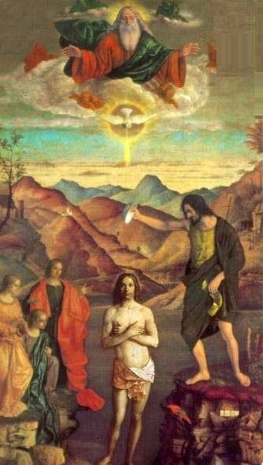

ORARE
La preghiera
è un anelito,
un sussulto del cuore,
è un soffio che non sai
da dove viene
non sai dove va.
La preghiera
è un incontro,
a volte uno scontro,
spesso un’attesa.
E’ il pianto di Pietro
al canto del gallo,
è lo stabat di Maria
ai piedi della croce.
La preghiera
è un attimo di eterno,
è una scelta d’amore,
è un bacio che accarezza un viso.
La preghiera
è un ricordo e un progetto,
è un grido ed è silenzio.
Sono le lacrime di chi piange
per chi non piange,
sono le suppliche della terra,
le lodi della Chiesa.
La preghiera
è il nostro respiro,
la nostra vita,
il nostro tutto.
Non c’è uomo che non prega,
c’è solo un uomo
che non sa pregare.
(Benedetto XVI)
L’inizio della sapienza
è il timore del Signore
La preghiera è necessaria per salvarsi; a maggior ragione lo è per raggiungere la perfezione. E' il primo mezzo, efficacissimo ed accessibile a tutti. Ci ottiene la grazia di Dio e ci dispone ad accoglierla. Alimenta in noi una mentalità di fede e ci aiuta a discernere la volontà di Dio. Perseverate nella preghiera e vegliate in essa, rendendo grazie. (Col.3,2) Senza la luce di Dio nessun uomo si salva. Essa fa muovere all'uomo i primi passi; essa lo conduce al vertice della perfezione. perciò se vuoi cominciare a possedere questa luce di Dio, prega! Se sei già impegnato alla salita della perfezione e vuoi che questa luce in te aumenti, prega! Se sei giunto al vertice della perfezione e vuoi ancora luce per poterti in essa mantenere, prega! Se vuoi la fede, prega! Se vuoi la speranza, prega! Se vuoi la carità, prega! Se vuoi la povertà, prega! Se vuoi l'obbedienza, la castità, l'umiltà, la mansuetudine, la fortezza, prega! Qualunque virtù desideri, prega! (Beata Angela da Foligno)
Quando pregate, non siate simili agli ipocriti che amano pregare stando ritti nelle sinagoghe e negli angoli delle piazze, per essere visti dagli uomini. In verità vi dico: hanno già ricevuto la loro ricompensa. Tu invece, quando preghi, entra nella tua camera e, chiusa la porta, prega il Padre tuo nel segreto; e il Padre tuo, che vede nel segreto, ti ricompenserà. (Mt 6,5-6 )
Sia l'uomo convinto che Dio dal cielo lo vede sempre, ogni momento, che le sue azioni sono in ogni luogo sotto lo sguardo divino e vengono riferite continuamente dagli angeli. Lo dimostra il profeta quando ci addita Dio sempre presente al nostro pensiero, dicendo: «Dio scruta la mente e il cuore» (Sal 7,10); e ancora: «Il Signore conosce i pensieri dell'uomo» (Sal 93,11); così pure dice: «Penetri da lontano i miei pensieri» (Sal 138,3); e inoltre: «I pensieri dell'uomo saranno svelati davanti a te» (Sal 75,11). Perciò, per tenersi in guardia dai cattivi pensieri, il fratello assennato dica sempre nel suo cuore: «Allora sarò integro davanti a lui se mi sarò guardato da ogni colpa» (Sal 17,24). (regola san benedetto Cap.7,13-18).
La porta per cui mi vennero tante grazie fu soltanto l’orazione. Se Dio vuole entrare in un’anima per prendervi le sue delizie e ricolmarla di beni, non ha altra via che questa, perché Egli la vuole sola, pura e desiderosa di riceverlo. Certo bisogna imparare a pregare. E a pregare si impara pregando, come si impara a camminare camminando. Nel cominciare il cammino dell’orazione si deve prendere una risoluzione ferma e decisa di non fermarsi mai, né mai abbandonarla. Avvenga quel che vuole avvenire, succeda quel che vuole succedere, si fatichi quanto bisogna faticare, ma piuttosto di morire a mezza strada, scoraggiati per i molti ostacoli che si presentano, si tenda sempre alla meta, ne vada il mondo intero. Pensate di trovarvi innanzi a Gesù Cristo, conversate con Lui e cercate di innamorarvi di Lui, tenendolo sempre presente. (Santa Teresa d’Avila)
Gli antichi dicevano che pregare è respirare. Qui si vede quanto sia sciocco voler parlare di un “perché”. Perché io respiro? Perché altrimenti morrei. Così la preghiera. (Søren Kierkegaard)
Pregare è prendere fiato presso Dio; pregare è affidarsi a Dio. (Dietrich Bonhoeffer)
La preghiera dà ad un uomo la possibilità di conoscere un signore che si incontra quasi mai. Non il creatore, ma se stessi. (William Inge)
Se dalla preghiera si alza un uomo migliore, la preghiera è esaudita. (George Meredith)
La preghiera non cambia Dio, ma cambia colui che prega. (Søren Kierkegaard)
Attraverso la preghiera possiamo far entrare nel nostro cuore il dolore e la sofferenza di tutti, tutti i loro conflitti e le loro angosce, tutti i loro tormenti e tutte le guerre, tutta la fame, la solitudine e la miseria, non per una qualche nostra grande capacità psicologica o emotiva, ma perché il cuore di Dio è diventato una cosa sola con il nostro. (Henri Nouwen)
La preghiera non può cambiare le cose rispetto a te, ma di sicuro cambia te rispetto alle cose. (Samuel M. Shoemaker)
Prega come se tutto dipendesse da Dio e lavora come se tutto dipendesse da te. (Ignazio di Loyola)
Dio parla nel silenzio del cuore. Ascoltare è l’inizio della preghiera. (Madre Teresa di Calcutta)
Il desiderio di pregare è una preghiera stessa. (Georges Bernanos)
La preghiera richiede più cuore che lingua. (Adam Clarke)
Caro Gesù, a volte la preghiera è il silenzio. E una lacrima. E qualcuno che ti abbraccia da lontano. (Don Dino Pirri)
Se la sola preghiera che dirai mai nella tua intera vita è "grazie", quella sarà sufficiente. (Meister Eckhart)
Fine della preghiera è ottenere che noi facciamo la volontà di Dio, non che Dio faccia la nostra. (Enzo Bianchi)
Quando il linguaggio accarezza la vita, nasce una poesia; quando la vita accarezza il linguaggio, nasce una preghiera. (Mauro Parrini)
Non c’è gioia più grande per una madre del vedere per la prima volta un sorriso sulle labbra del suo bambino. La stessa gioia deve provare Dio ogni volta che vede dal cielo un peccatore che gli s’inginocchia davanti e con tutto il cuore gli rivolge una preghiera. (Fëdor Dostoevskij)
Non pregate per una vita facile. Pregate per essere uomini più forti. Non pregate per compiti uguali alle vostre forze. Pregate per forze uguali ai vostri compiti. Allora il compiere il vostro lavoro non dovrà essere un miracolo, ma voi sarete il miracolo. (Phillips Brooks)
Vivi con gli uomini come se Dio ti vedesse; parla con Dio come se gli uomini ti udissero. (Lucio Anneo Seneca)
Sia di un solo colore la stoffa della tua preghiera. Il pubblicano e il figlio prodigo furono riconciliati con Dio da una sola parola. Quando preghi, non cercare parole complicate, perché il balbettio semplice dei bambini ha spesso toccato il Padre dei cieli. Non cercare di parlare molto quando preghi, per paura che lo spirito si distragga a cercare parole. una sola parola del pubblicano bastò a Dio e un solo grido di fede salvò il ladrone. La loquacità nella preghiere disperde spesso lo spirito e lo riempie d'immagini, mentre ripetere la spessa parola normalmente lo raccoglie. Se una parola della preghiera ti riempie di dolcezza o di pentimento, resta in quella, poiché allora l'angelo custode è lì e prega con noi. Chiedi con cuore accorato, cerca con l'obbedienza e bussa con pazienza. Poiché chi chiede così riceve; chi cerca trova e a chi bussa sarà aperto. Chi tiene senza posa il bastone della preghiera non inciamperà. Ed anche se cade, la sua caduta non sarà definitiva. poiché la preghiera è una pia 'tirannia' esercitata su Dio. (Giovanni Climaco)
Aiutiamoci a vicenda nella preghiera, così potremo un giorno trovarci riuniti in Paradiso. (Giuseppe Marello)
Che bella cosa pregare l'uno per l'altro, darsi appuntamento presso il buon Dio, dove non esiste più né distanza né separazione. (Elisabetta della Trinità)
Che cos'è la preghiera? La preghiera è un'ascensione dell'intelletto. (Fëdor Dostoevskij)
Chi ben fa, sempre ora. (Francesco di Paola)
Chi prega è santo, ma chi fa, più santo. (Giovanni Pascoli)
Chi spesso parla con Dio nell'orazione, sprezza il parlare co' Re della terra. (Francesco di Paola)
Ciò che dovremmo chiedere quando preghiamo è di svegliarci prima di morire. La vita può piantarci in asso da un momento all'altro. Non accontentiamoci semplicemente di una buona circolazione sanguigna. (Tony Campolo)
Come le suore in atto di preghiera premono tra palma e palma l'immagine della Vergine Maria, così porto nel mio cuore un'oasi di luce, un'armonia, di sorriso e di calma. (Nino Oxilia)
Con la preghiera riceviamo l'ossigeno per respirare. Coi sacramenti ci nutriamo. Ma, prima del nutrimento, c'è la respirazione, e la respirazione è la preghiera. (Yves Congar)
È meglio non caricarsi di tante preghiere e pratiche di devozione, e farne poche con amore e fedeltà, malgrado il mondo, il diavolo e la carne. (Louis Marie Grignion de Montfort)
È scontato il fatto che la preghiera fa parte della vita e che rappresenta il punto più alto dell'esistenza. La preghiera è come il mare per il pesce: è la preghiera il mio mare. Preghiera come valore che fonda la mia stessa umanità; preghiera quale perla fra tutte le parole. No, nessuno può vivere senza pregare, neppure l'ateo, perché tutti hanno bisogno l'uno dell'altro. [...] È vero, la preghiera è il momento decisivo dell'esistenza. (David Maria Turoldo)
Esistere è la mia preghiera, come esisto è come prego. (Maurizio Maggiani)
I solitari si uniscono a Dio in ogni momento, per mezzo della preghiera. (Isacco di Ninive)
Il padre della orazione è lo silenzio e la sua madre è la solitudine. (Girolamo Savonarola)
Il frutto del silenzio è la preghiera / Il frutto della preghiera è la fede / Il frutto della fede è l'amore / Il frutto dell'amore è il servizio / Il frutto del servizio è la pace. (Madre Teresa di Calcutta)
Il libro di preghiera suppone un'assai scarsa religiosità in chi ne fa uso. Indica che il suo lettore non trova bastante calore nel suo cuore verso la divinità, per formare da sé la frase sincera della gratitudine, che le bellezze della circostante natura non bastano ad elevarne l'anima, che egli ripete non suoi sentimenti. Così, in un campo più vasto, si dica di chi ha bisogno di chiesa per adempiere il cosidetto dovere religioso e non gli par sufficiente la volta del cielo. (Carlo Dossi)
Il mancato soccorso divino a coloro che diverrebbero presuntuosi, più attaccati, più indulgenti verso le passioni e più spudorati se i loro desideri si realizzassero è in sé un soccorso divino per queste persone. In un'epoca corrotta, quando le preghiere non ottengono risposta, è già questa una risposta. (Musō Soseki)
Il pregare è nella religione ciò che è il pensiero nella filosofia. Il senso religioso prega come l'organo del pensiero pensa. (Novalis)
Il religioso perfetto prega così bene che ignora di pregare. (Jacques Maritain)
L'anima che riduce al minimo la preghiera rimane asfittica; se esclude ogni invocazione, lentamente si strangola. (Gianfranco Ravasi)
La preghiera è l'anima in parafrasi. (George Herbert)
L'atteggiamento di preghiera è originario e naturale, non soltanto negli uomini, ma anche in animali e piante; potremmo cercarlo anche nella materia – nei suoi tessuti, nelle sue vibrazioni. Perché il cerchio si chiude ritornando al suo inizio, perché una superficie irradiata tende a dilatarsi? Forse vuole godere del sole più intensamente, come la lucertola che si appiattisce. Esistono piante che celebrano culti solari, altre culti lunari. (Ernst Jünger)
L'attenzione assolutamente pura è preghiera. (Simone Weil)
La preghiera apre le porte della luce e la luce si rapprende sul volto degli oranti. (Ermes Ronchi)
La preghiera bussa, il digiuno ottiene, la misericordia riceve. (Pietro Crisologo)
La preghiera è il linguaggio della fede, non solo ma nel linguaggio della fede è anche la prefigurazione, l'anticipazione della vita. (Gianni Colzani)
La preghiera è il vincolo delle anime. (Elisabetta della Trinità)
La preghiera è l'esaudimento dell'attesa eterna dell'Amore, che si offre nel rispetto infinito della nostra libertà. (Maurice Zundel)
La preghiera è la sedimentazione di un rapporto che risale all'origine della creazione. (Giovanni Lindo Ferretti)
La preghiera è tanto migliore quanto più carichi d'amore sono gli sguardi dell'anima. (Charles de Foucauld)
La preghiera è una partecipazione attenta alle cose del mondo, che per il miracolo della preghiera perdono la storia per diventare i necessari passaggi attraverso i quali si compie la salvazione... mentre l'azione rende tutto provvisorio e inutile dopo il consumo, la preghiera rende tutto eterno e necessario. (Francesco Grisi)
La preghiera non ha solo un valore spirituale, ma anche un valore teologico, filosofico, apologetico, sociale; chi prega ha non solo un suo modo di credere, ma anche di pensare, di agire, di essere: chi non prega è dalla sponda opposta. (Agostino Trapè)
La preghiera non è un'interruzione delle cose da fare, ma, al contrario, si interrompe talvolta la preghiera per fare delle cose, e anche nelle altre opere è necessario custodire uno spirito orante. (Mauro Piacenza)
La preghiera richiede il tempo per ciò che essa deve fare con del tempo: essere grida, sguardo, energia, strumento in ogni attività in cui deve intervenire. (Madeleine Delbrel)
La preghiera stessa, se è priva dell'elemento comunità, è molto meno efficace di quanto potrebbe essere. (Basilio Magno)
Nella misura in cui la preghiera è autentica, essa ci indirizza verso una conoscenza di noi stessi che è indispensabile perché noi siamo nella verità davanti a Dio. (René Voillaume)
Nella preghiera avviene la conversione del cuore verso Colui che è sempre pronto a dare se noi siamo in grado di ricevere. (Agostino d'Ippona)
Non c'è nessun maestro umano nella preghiera, come non c'è maestro nell'amore. Ad ognuno spetta edificare la sua preghiera, come ad ognuno tocca tessere il suo amore. Nessuno lo farà al posto nostro, nessuno lo farà meglio di noi. (Ermes Ronchi)
Non preghiamo per far cambiare idea a Dio, ma per cambiare la nostra idea di Dio. (Timothy Radcliffe)
O buon Gesù, quando orando [pregando] con li occhi chiusi, quasi mi volto a te, desiderosamente, tu mandi nel mio cuore una certa cosa e un certo contento che io medesimo non posso sapere quello che si sia. Io sento bene in me una saporosa dolcezza, la quale tutto mi contenta, e se io seguitassi insino alla sua perfezione in me, io non cercherei mai più altro. (Bernardo di Chiaravalle)
Padre, nella vita spirituale quale virtù richiede maggiore fatica?. Dice loro: "Perdonatemi, ma penso non vi sia fatica così grande come pregare Dio. Infatti, quando l'uomo vuole pregare, i nemici cercano di impedirlo, ben sapendo che da nulla sono così ostacolati come dalla preghiera. Qualsiasi opera l'uomo intraprenda, se persevera in essa, possederà la quiete. La preghiera invece richiede lotta fino all'ultimo respiro". (Agatone d'Egitto)
Pensare a Dio senza contemporaneamente amarlo non è fare orazione, è riflettere o meditare. (René Voillaume)
Per imparare a pregare, e nessuno di noi può dire di averlo imparato abbastanza, è molto utile contemplare l'esempio di un grande uomo di preghiera, ma è soprattutto necessario approfondire la teologia della preghiera. (Agostino Trapè)
Per quel che riguarda la preghiera nulla la impedisce: ognuno ha la possibilità di pregare, il ricco e il povero, l'uomo benestante e quello indigente, il forte e il debole, il sano e il malato, il virtuoso e il peccatore. (Serafino di Sarov)
Per stare in piedi occorre saper stare in ginocchio. (Oreste Benzi)
Pregare è anche un'arte, un esercizio di bellezza, di canto, di liberazione interiore. È ascesi e ascesa, è impegno rigoroso, ma anche volo lieve e libero dell'anima verso Dio. (Gianfranco Ravasi)
Pregare è aprire, nella trama del tempo, delle finestre su Dio. (Ermes Ronchi)
Pregare è la grande ricompensa dell'essere uomini. (Abraham Joshua Heschel)
Pregare non è essere intelligenti ma presenti. (Madeleine Delbrel)
Pregare significa innanzitutto aderire alla volontà di Dio, dichiararsi servo di Dio: mettere in pratica il Vangelo, entrare nella logica del Vangelo. (Antonio Bello)
Quando sulla terra non vi sarà più un uomo che preghi, il sole si estinguerà. Perché dovrebbe illuminare la terra? (Vasilij Vasil'evic Rozanov)
Un fratello disse al padre Antonio: prega per me! L'anziano gli dice: Non posso io avere pietà di te, e neppure Dio, se non sei tu stesso ad impegnarti nel pregare Dio. (Antonio abate)
Una preghiera senza donazione è come una canzone senza musica. (Robert Louis Stevenson)
Vivi considerando tutta la tua vita come una sola grande preghiera. (Origene)
Come può un bambino essere educato alla preghiera, a saper cogliere la presenza dell'Invisibile, se non attraverso il sacramento dell'amore visibile e sensibile? (Hans Urs von Balthasar)
La preghiera è un dialogo che la parola di Dio conduce e dove noi non possiamo essere che gli ascoltatori. (Hans Urs von Balthasar)
Quanto più un essere umano impara veramente a pregare, tanto più profondamente capisce che tutto il suo balbettare con Dio non è che una risposta al discorso che Dio gli fa e che perciò vale anche l'altra cosa: che tra Dio e l'uomo ci si può intendere solo nella lingua di Dio. (Hans Urs von Balthasar)
L'uomo che di sera dice la sua preghiera è un capitano che mette le sentinelle. Può dormire. (Charles Baudelaire)
Sappi dunque i godimenti di una vita aspra; e prega, prega senza sosta. La preghiera è serbatoio di forza. (Charles Baudelaire)
Pregare non significa uscire dalla storia e ritirarsi nell'angolo privato della propria felicità. Il giusto modo di pregare è un processo di purificazione interiore che ci fa capaci per Dio e, proprio così, anche capaci per gli uomini. (Papa Benedetto XVI)
Il grado della nostra fede è il grado della nostra preghiera; la forza della nostra speranza è la forza della nostra preghiera; il calore della nostra carità è il calore della nostra fede. (Carlo Carretto)
La preghiera non indebolisce ma da forza allo spirito. (G.B. Cottolengo)
La preghiera vi fa cari a Dio. (G.B. Cottolengo)
È meglio, quando si prega, avere un cuore senza parole piuttosto che delle parole senza un cuore. (Mahatma Gandhi)
[La preghiera è] la chiave del mattino e il catenaccio della sera. (Mahatma Gandhi)
Quando non c'è più speranza, "quando cessano gli aiuti e manca la consolazione", scopro che l'aiuto mi arriva, non so da dove. Le suppliche, l'adorazione, la preghiera non sono superstizioni; sono azioni più reali che il mangiare, il bere, il sedersi o il camminare. Non è esagerazione affermare che solo esse sono vere e tutto il resto è illusione. L'adorazione o la preghiera non sono semplici slanci di eloquenza; non sono omaggi superficiali, scaturiscono dal cuore, perciò, se il nostro spirito raggiunge quella purezza che lo rende "mondato da tutto salvo che dall'amore", se tutte le corde del nostro arco sono tese a dovere, esse "tremando si trasformano in musica e svaniscono". Alla preghiera non servono le parole; io non dubito minimamente che la preghiera sia un mezzo infallibile per liberare il cuore dalle passioni, ma dev'essere pronunciata con grande umiltà. (Mahatma Gandhi)
Nella preghiera per gli altri ci passa la voglia di dare tutta la colpa all'altro, anzi, ci renderemo sempre più conto che i colpevoli siamo noi se l'altro si comporta in modo tale che tutti lo scansano e lo giudicano. Pregare per gli altri è perciò un metodo proficuo per conoscere se stessi. (Anselm Grün)
Attraverso la preghiera possiamo far entrare nel nostro cuore il dolore e la sofferenza di tutti, tutti i loro conflitti e le loro angosce, tutti i loro tormenti e tutte le guerre, tutta la fame, la solitudine e la miseria, non per una qualche nostra grande capacità psicologica o emotiva, ma perché il cuore di Dio è diventato una cosa sola con il nostro. (Henri Nouwen)
Come posso pregare senza smettere, mentre sono occupato con molte altre cose? La risposta coinvolge il prossimo. Attraverso la mia carità, il mio prossimo diventa mio compagno nella mia preghiera e la trasforma in una preghiera incessante. (Henri Nouwen)
Il potere della preghiera del cuore consiste precisamente nel trasformare in preghiera tutto ciò che è nella nostra mente. (Henri Nouwen)
La disciplina della preghiera: la disciplina che ci aiuta a riportare sempre di nuovo Dio al centro della nostra vita. (Henri Nouwen)
La quieta, semplice ripetizione di un unica parola [nella preghiera] ci può aiutare a discendere con la mente nel cuore. Questa ripetizione non ha nulla a che fare con una formula magica. Non è destinata a gettare un sortilegio su Dio o a costringerlo ad ascoltarci. Al contrario, una parola o una frase ripetute frequentemente ci possono aiutare a concentrarci, ad avvicinarci al centro, a creare una quiete interiore e, quindi, ad ascoltare la voce di Dio. (Henri Nouwen)
La preghiera è sorprendersi che Dio desidera una relazione personale con noi.
Nella relazione con Dio, la preghiera è la promessa reciproca d'un amore eterno.
La preghiera è la risposta al desiderio d'amore di Dio, che noi accogliamo e restituiamo.
La preghiera affonda le sue ragioni nell'infinita misericordia del Padre.
La preghiera che sale dal cuore è una dichiarazione d'amore immenso e un esercizio di santità.
Si prega per azione dello Spirito Santo, che induce alla perfezione d'amore nell'orazione. Il modo è quello lasciar scendere la preghiera nel nostro intimo.
Nel pregare in tutta lentezza, ci coglie presto un'appagante, deliziosa intimità con lo Spirito Santo.
La preghiera contemplativa, nel mentre ci delizia il cuore e tutti i sensi, subito risale in un istante al Cielo pregna d'amore.
La preghiera ardente è un gaudioso moto perpetuo d'amore tra il Creatore e la sua creatura.
E' preghiera pura quella in cui Dio medesimo è preghiera in noi.
Beati quelli che nell'orazione sono trafitti dalla medesima spada che trafisse Maria.
Nella preghiera quotidiana occorre attenzione perché, essendo ripetuta, è possibile cedere ad altri pensieri quel tempo riservato a Dio.
Il cuore prega ancor prima delle parole, affinché la bocca dica ciò che lo Spirito vi scalda.
La Gloria di Dio si rivela quando, nel meditare la preghiera, Dio medesimo diviene preghiera nella manifesta presenza di se.
E' comunione di preghiera quando questa non è dettata dalla volontà della ragione, ma dallo Spirito Santo infuso che accende il fuoco d'amore contemplativo.
Una fede ardente esprime nell'orazione il fuoco dello Spirito Santo che alimenta i cuori in estatico stupore nel desiderio struggente di Dio.
La preghiera pura è uno stato contemplativo di grazia nel quale la creatura compartecipa alla divinità del suo Creatore, nella quale Egli chiama a vivere e santifica per figliolanza battesimale, giacché il desiderio stesso di pregare è infuso da Dio.
La preghiera non è voce, giacché è in Dio, da Lui viene e a Lui torna, e ci porta con sé.
Quando Dio si fa preghiera nella sua stessa presenza, l'anima in estatica contemplazione è come sospesa.
La perfetta preghiera corale si realizza quando l'unione delle anime oranti condivide all'unisono l'unione a Dio.
L'umiltà rende permeabili all'unione d'amore nella preghiera.
La preghiera meditata apre alla contemplazione e perfino all'illuminazione. Giungervi è divenire un tutto nel Tutto, è amare il Signore con gratitudine a motivo che, Lui che è Dio, è disceso a fecondare con prorompente impeto d'amore la miseria della sua creatura; non occorrono carismi particolari, l'amore riconoscente è carisma gratuito in ognuno.
La preghiera del cuore è espressione di Dio medesimo, giacché nell'orazione Egli è presenza viva in noi e tra noi.
E' naturale che si preghi con adorazione e non solo con i sensi e i vocalismi, ma perfino con il corpo, che assume posture a cui lo Spirito induce.
Assicurano infatti che con l'orazione si raggiungono presto e facilmente soavi sensazioni interiori, e spiegano quanto esse siano desiderabili: delizia che sgorga dal cuore, fiotti di interna luce e calore, indicibile rapimento, gioia, leggerezza di cuore, profonda pace e l'essenza stessa del gaudio; tutti effetti dell'orazione del cuore. Se si immerge in tali riflessioni, l'anima fredda e debole si riscalda e rafforza, ritrova l'ardore per l'orazione e si sente come attratta a mettere alla prova l'esercizio dell'orazione. Come dice Sant'Isacco il Siro: "La gioia è un allettamento per l'anime: gioia prodotta dalla speranza che fiorisce nel cuore. E la meditazione su ciò che spera è la salute del cuore." (Racconti di un pellegrino russo)
Basta calarsi in silenzio nelle profondità del proprio cuore e invocare spesso il radioso Nome di Gesù Cristo. Allora tutto sarà chiaro in quella luce, perfino, in certi attimi, alcuni misteri del Regno di Dio. (Racconti di un pellegrino russo)
"E dunque, non sarebbe stato più fruttuoso", finisce il devoto," se avessi fin dall'inizio e in ogni circostanza approfondito lo studio dell'orazione, che ha il potere di compiere tutto quello che la devozione cristiana esige ed è tramite di salvezza?". (Racconti di un pellegrino russo)
La vita cristiana, che tutta si riassume nell'orazione. Io considero l'orazione il mezzo fondamentale e indispensabile alla salvezza e il primo dovere di ogni cristiano. L'orazione è il primo gradino e insieme il coronamento di ogni vita devota. Per questo, il Vangelo insegna a pregare sempre. Tutti gli altri atti di devozione hanno il loro momento, ma l'orazione non consente momenti di ozio. Senza l'orazione non si può fare nulla di buono e senza il Vangelo non si può imparare la vera orazione. Perciò, tutti coloro che hanno raggiunto la salvezza percorrendo la via della vita interiore, i santi predicatori della Parola di Dio come gli eremiti e gli anacoreti, e anche tutti i cristiani timorati di Dio, hanno attinto la loro scienza da una costante e indefettibile meditazione della profondità della Parola di Dio; e la lettura del Vangelo ha costituito la loro attività essenziale. (Racconti di un pellegrino russo)
Noi uomini siamo tutti "esseri che pregano", consapevolmente o inconsapevolmente. (Antonio Sicari)
Per ogni uomo vivere significa accogliere e conservare in sé questo divino respiro [la preghiera], morire significa che Dio se lo è ripreso. (Antonio Sicari)
Preghiera è dunque la storia intera dell'uomo chiamato a entrare nel mondo di Dio dove la creatura riceve man mano una missione salvifica nei riguardi dell'intera creazione: ne deriva che la preghiera stessa diviene come la storia, nella irripetibile esperienza di ognuno. (Antonio Sicari)
Buona è la preghiera che penetra nell'orecchio di Dio, non la preghiera che, nella valutazione degli uomini, è ben espressa. Nelle orecchie di Dio un unico sospiro può valere più che non molti anni di bellissima preghiera. (Adrienne von Speyr)
La domanda è già un inizio di preghiera quando è disposta a far propria la risposta di Dio. (Adrienne von Speyr)
La preghiera non è in primo luogo una parola rivolta dall'uomo a Dio, ma un dono che Dio ha fatto a noi uomini nella sua Parola. (Adrienne von Speyr)
Quando Dio parla, nella preghiera, col credente, si fa a lui percepibile, ma la sua parola contiene di più di quello che è percepito, di modo che l'orante può attingere, dalla parola accolta, sempre qualcosa di nuovo. Lui stesso trova la sua parola insufficiente per dire a Dio quello che potrebbe dire, ma confida che Dio, dalla parola timida e goffa, capisca quello che vuole: tutto il contenuto della sua fede. (Adrienne von Speyr)
Se preghiamo in autentico abbandono e nella verità, allora la nostra preghiera sarà già compiuta nell'istante in cui la rivolgiamo, diversamente forse da come ce l'aspettavamo, ma tuttavia realmente. (Adrienne von Speyr)
In definitiva, se tu vuoi pregare bene, basta che ti lasci amare da Dio...
Chi prega, ammaestra sé stesso e gli altri.
Della sera la preghiera sale al cielo più sincera.
Il lavorare senza pregare è una botte senza vino.
La breve orazione è quella che sale al cielo.
La preghiera dovrebbe essere la chiave di giorno e la serratura di notte.
La preghiera è come colui che la fa.
La preghiera è una chiave d'oro con cui apriamo lo scrigno di Dio.
La preghiera è una moneta che ha corso anche in cielo.
La preghiera egoistica è nemica di Dio.
La preghiera nella necessità è il rosso di sera di un miglior domani.
La preghiera sale in alto e l'esaudimento scende in basso.
La preghiera senza il lavoro è una zappa senza manico.
Lunga necessità e lunga preghiera stanno bene insieme.
Per una buona preghiera ci vuole coscienza netta, mani pure e cuor pio.
Perché a Dio piaccia la tua preghiera, deve essere breve, pura e sincera.
Più grande la necessità, più necessaria la preghiera.
Preghiera per forza non penetra in cielo.
Preghiera, fede, speranza e pazienza sono l'ornamento del cristiano.
Quando infuria la tempesta, fervida è la preghiera.
Quando si giungono le mani, si devono raccogliere anche i pensieri.
Se non prega il cuore, poco vale il pregare della bocca.
Senza la preghiera nulla si deve osare, e con la preghiera nulla paventare.
Come posso essere sicuro di pregare secondo la volontà di Dio? Risposta: L’obiettivo più alto dell’uomo dovrebbe essere portare gloria a Dio (1Cor 10:31) e questo include pregare in accordo alla Sua volontà. In primo luogo, dovremmo chiedere saggezza. “Che se alcuno di voi manca di sapienza, la chieda a Dio che dona a tutti liberalmente senza rinfacciare, e gli sarà donata” (Gc 1:5). Nel chiedere saggezza dobbiamo anche aver fiducia che Dio è desideroso di rispondere alle nostre preghiere: “Ma chieda con fede, senza star punto in dubbio; perché chi dubita è simile a un'onda del mare, agitata dal vento e spinta qua e là” (Gc 1:6; Mc 11:24). Così, pregare in accordo alla volontà di Dio include chiedere saggezza (conoscere la volontà di Dio) e chiedere in fede (aver fiducia della volontà di Dio).
Pregare per le cose per le quali la Bibbia comanda di pregare. Ci viene chiesto di pregare per i nostri nemici (Mt 5:44); che Dio mandi missionari (Lc 10:2); che non veniamo tentati (Mt 26:41); per i ministri della Parola (Col 4:3; 2Tes 3:1); per le autorità del governo (1Tim 2:1-3); per il sollievo dalle afflizioni (Gc 5:13); e per la guarigione dei credenti (Gc 5:16). Laddove Dio ci richiede di pregare, possiamo pregare con fiducia che stiamo pregando in accordo alla Sua volontà.
Osserviamo l’esempio di personaggi giusti nelle Scritture. Paolo pregò per la salvezza d’Israele (Romani 10:1). Davide pregò per ottenere misericordia e perdono, quando peccò (Salmo 51:1-2). La chiesa primitiva pregò per coraggio nella testimonianza (Atti 4:29). Queste preghiere erano in accordo alla volontà di Dio ed anche oggi, preghiere simili lo possono essere. Come Paolo e la chiesa primitiva anche noi dovremmo sempre pregare per la salvezza degli altri. Per noi stessi dovremmo pregare come pregò Davide, sempre consapevoli del nostro peccato e portando davanti a Dio quel che impedisce la nostra relazione con Lui e contrasta le nostre preghiere.
Pregare con la giusta motivazione. Motivi egoistici non saranno benedetti da Dio. “Domandate e non ricevete, perché domandate male per spendere nei vostri piaceri” (Giacomo 4:3). Noi dovremmo pregare non in modo che le nostre orgogliose parole possano essere udite e che possiamo essere visti dagli altri per quanto siamo “spirituali”, ma soprattutto in privato e in segreto, così che il nostro Padre celeste sentirà le preghiere nel segreto e ci darà la ricompensa apertamente (Matteo 6:5-6).
Pregare con uno spirito di perdono verso gli altri (Marco 11:25). Uno spirito di amarezza, rabbia, vendetta o odio verso gli altri preverrà i nostri cuori dal pregare in totale sottomissione a Dio. Proprio come ci viene detto di non dare le offerte a Dio mentre c’è un conflitto tra noi stessi ed un altro cristiano (Matteo 5:23-24), nello stesso modo Dio non vuole l’offerta delle nostre preghiere finché non ci siamo riconciliati con i nostri fratelli e sorelle in Cristo.
Pregare con ringraziamento (Colossesi 4:2, Filippesi 4:6-7). Noi possiamo trovare sempre qualcosa per il quale essere riconoscenti non importa quanto appesantiti siamo per i nostri bisogni e necessità. La persona più sofferente che vive in questo mondo di amore che redime e che ha l’offerta del cielo davanti a lui, ha motivo di essere grato a Dio.
Pregare con perseveranza (Luca 18:1; 1 Tessalonicesi 5:17). Noi dovremmo perseverare nella preghiera e non smettere, o sentirci scoraggiati quando non riceviamo una risposta immediata. Parte della preghiera nella volontà di Dio è credere che, se la Sua risposta è “sì” “no“ o “aspetta”, noi accettiamo la Sua opinione, sottomessi alla Sua volontà e continuiamo a pregare.
Affidarci allo Spirito di Dio in preghiera. Questa è una verità meravigliosa: Parimente ancora, lo Spirito sovviene alla nostra debolezza; perché noi non sappiamo pregare come si conviene; ma lo Spirito intercede egli stesso per noi con sospiri ineffabili; e Colui che investiga i cuori conosce quale sia il sentimento dello Spirito, perché esso intercede per i santi secondo la volontà di Dio (Romani 8:26-27). Abbiamo l’aiuto dello Spirito nella preghiera. Nei momenti di una nostra più profonda depressione o sofferenza, quei momenti nei quali sentiamo che “proprio non possiamo pregare”, abbiamo il conforto di sapere che lo Spirito Santo sta realmente pregando per noi! Che Dio straordinario che abbiamo! Che certezza abbiamo quando cerchiamo di camminare nello Spirito e non nella carne! Allora possiamo aver fiducia che lo Spirito Santo compirà la Sua opera in noi, nel presentare le nostre preghiere al Padre, in accordo alla Sua perfetta volontà e tempo e che possiamo riposare nel sapere che Egli sta facendo cooperare tutte le cose per il nostro bene (Romani 8:28).
Credo che la preghiera non è tutto, ma che tutto deve cominciare dalla preghiera: perché l'intelligenza umana è troppo debole; perché l'uomo che agisce senza Dio non dà mai il meglio di se stesso. / Credo che Gesù Cristo, dandoci il "Padre Nostro" ci ha voluto insegnare che la preghiera è amore. / Credo che la preghiera non ha bisogno di parole, perché l'amore non ha bisogno di parole. Credo che si può pregare tacendo, soffrendo, lavorando, ma il silenzio è preghiera solo se si ama, la sofferenza è preghiera solo se si ama, il lavoro è preghiera solo se si ama. / Credo che non sapremo mai con esattezza se la nostra è preghiera o non lo è. Ma esiste un test infallibile della preghiera: se cresciamo nell'amore, se cresciamo nel distacco dal male, se cresciamo nella fedeltà alla volontà di Dio. / Credo che impara a pregare solo chi impara a tacere davanti a Dio. / Credo che impara a pregare solo chi impara a resistere al silenzio di Dio. / Credo che tutti i giorni dobbiamo chiedere al Signore il dono della preghiera, perché chi impara a pregare impara a vivere. (Un monaco nel mondo)
La preghiera cristiana è un dialogo a più voci, è un colloquio di fede e di amore, anzitutto con le Persone divine e poi con la Vergine Maria, gli angeli e i Santi, che ha l'ultimo riferimento in Dio Padre, per lodarlo e supplicarlo. A questo dialogo il credente non partecipa solo con la mente, ma con tutta la persona: intelligenza, volontà, affettività, corporeità. La preghiera nasce dal cuore, ma coinvolge anche il corpo. Gesù stesso, prega a voce alta e con i gesti. Pregare significa dialogare con Dio da persona a persona, dargli del tu, mettersi davanti a Lui, faccia a faccia, cuore a cuore.
La preghiera non è resa perfetta dall'insegnamento o dalla ripetizione di parole: non preghi infatti un uomo, e non hai dunque bisogno di ripetere davanti a lui parole ben composte. I moti della tua preghiera li indirizzi a colui che è spirito, non ha corpo né è composto: pregalo allora in spirito, qual è. A chi prega Dio in perfezione non si richiede un luogo, né un discorso fatto da lingua. Sul fatto che non si richiede un luogo per la preghiera perfetta nostro Signore disse: Viene l'ora in cui né su questo monte né in Gerusalemme adorerete il Padre (Gv 4,21) ... E Paolo ci insegna questa preghiera e questo cantico spirituale: mostrandoci come cantare e pregare: Che farò dunque? - dice - Pregherò in spirito e pregherò anche nella mia mente (1Cor 14,15). Spirito e mente: in essi disse infatti che si deve pregare e cantare, e non fece menzione della lingua, perché questa preghiera spirituale è più interna della lingua e più profonda delle labbra, è più interiore delle parole ed è oltre il canto. E quando uno prega questa preghiera, tramonta al mondo e sta nel luogo degli esseri spirituali ... Finché infatti l'uomo si esercita per lungo tempo nelle pratiche esteriori, nel digiuno frequente, nel cantico vocale, in quotidiane benedizioni, in veglie assidue, nella ripetizione dei salmi, in dure fatiche, in vigilie, nell'astinenza, nel cibo misurato e in tutte queste cose; quando in ogni istante il ricordo di Dio riempie la sua anima e teme e, giustamente, prova grande timore dinanzi al suo Nome, quando si umilia davanti a ognuno e pensa che chiunque è migliore di lui, pur vedendo le opere cattive proprie dell'uomo, e si umilia dinanzi a chi vede preda della lussuria, adultero, arrogante, ebbro e lo ritiene migliore di sé quanto ai suoi pensieri e non quanto al contegno esteriore, e si avvicina a colui che vede sprofondato in ogni male e davanti a lui si prosterna e gli abbraccia i piedi e gli chiede: "Prega su di me perché sono peccatore e sono di molto debitore a Dio e nulla gli ho reso", quando, dunque, uno abbia fatto cose simili a queste o più grandi di queste, che non ho detto, allora uno giunge a quella intelligenza spirituale con cui gli esseri spirituali pregano e cantano Dio. (Giovanni di Apamea, Discorso sulla preghiera 1-3)
La fede, fonte della preghiera / Se manca la fede, non vi è preghiera. Chi mai prega colui in cui non crede? Perciò anche il beato Apostolo esortando alla preghiera dice: Chiunque invocherà il nome del Signore sarà salvato (Rm 1o,13). E per mostrare che la fede è fonte della preghiera e che il ruscello non può scorrere quando la fonte è secca, aggiunge: Ma come potranno invocare colui nel quale non hanno creduto? (Rm 10,14). Per pregare, dunque, occorre credere. La fede fa sgorgare la preghiera, e la preghiera sgorgata consegue la stabilità della fede. La fede, io dico, fa sgorgare la preghiera, e la preghiera nata da essa ottiene la saldezza della fede stessa. Il Signore, affinché la fede non venisse meno nelle tentazioni, disse: Vegliate e pregate per non entrare in tentazione (Lc 22,46). Che cosa significa "entrare in tentazione" se non uscire dalla fede? La tentazione infatti cresce nella misura in cui viene meno la fede, e la tentazione viene meno nella misura in cui cresce la fede. Affinché la vostra carità comprenda più chiaramente che il Signore ha detto: Vegliate e pregate per non entrare in tentazione in riferimento alla fede, affinché essa non mancasse e non venisse meno, in quel passo del vangelo ha detto: Questa notte Satana ha chiesto di vagliarvi come grano e io ho pregato per te, perché non venga meno la tua fede (Lc 22,31-32). Colui che ci difende prega, e non prega chi si trova in pericolo? Ciò che ha detto il Signore: Quando il Figlio dell'uomo verrà, pensi che troverà la fede sulla terra? (Lc 18,8) si riferiva alla fede perfetta che a stento si trova sulla terra. Considerate gli stessi apostoli: abbandonato ogni avere, calpestata la speranza di questo mondo, non avrebbero seguito il Signore se non avessero avuto una grande fede e, tuttavia, se avessero avuto una fede piena, non avrebbero detto al Signore: Accresci la nostra fede (Lc 17,5). (Agostino di Ippona, Discorsi 115,1)
L'uomo che prega ha le mani sul timone della storia. (S. Giovanni Crisostomo)
Perchè preghiamo? .. Perchè Dio nasca nell'anima e l'anima rinasca in Dio ... Un essere tutto intimo, tutto raccolto ed uno in Dio: questa è la Grazia, questo significa "lddio con te". (Master Eckhart)
INVITATIO
In nomine Patris
et Filii
et Spiritus Sancti.
Amen.
O Dio,
vieni a salvarmi,
Signore,
vieni presto in mio aiuto.

Eterno Padre,
ti ringrazio che mi hai creato
col tuo amore;
ti prego di salvarmi
con la tua misericordia infinita
per i meriti di Gesù Cristo.
al Figlio e allo Spirito Santo,
come era in principio, ora e sempre
nei secoli dei secoli.
Eterno Figlio,
ti ringrazio che mi hai redento
col tuo Sangue Preziosissimo;
ti prego di santificarmi
coi tuoi meriti infiniti.
al Figlio e allo Spirito Santo,
come era in principio, ora e sempre
nei secoli dei secoli.
Eterno Spirito Santo,
ti ringrazio che mi hai adottato
con la tua grazia divina;
ti prego di perfezionarmi
con la tua carità infinita.
al Figlio e allo Spirito Santo,
come era in principio, ora e sempre
nei secoli dei secoli.
(1Cor 1,3) Cristo Gesù è diventato per noi sapienza, giustizia, santificazione e redenzione.
(1Cor 3,7.9) Né chi pianta, né chi irriga è qualche cosa, ma è Dio che fa crescere. Voi siete il campo di Dio, l'edificio di Dio.
(1Cor 4,5) Il mio giudice è il Signore: non vogliate giudicare nulla prima del tempo, finché venga il Signore.
(1Gv 5,3) In questo consiste l'amore di Dio, nell'osservare i suoi comandamenti.
(1Pt 1,3) Sia benedetto Dio, Padre del Signore nostro Gesù Cristo: nella sua grande misericordia egli ci ha rigenerati a una vita nuova.
(2Cor 1,3.4) Sia benedetto Dio, il quale ci consola in ogni tribolazione.
(2Cor 4,8.14) Siamo tribolati da ogni parte, ma non schiacciati: colui che ha risuscitato Gesù risusciterà anche noi.
(2Pt 3,8) Davanti al Signore un giorno è come mille anni e mille anni come un giorno solo.
(Anobio) Poiché il Figlio di Dio fu esaltato sopra i cieli, la sua gloria viene predicata su tutta la terra.
(Ap 15,3) Grandi e mirabili sono le tue opere, o Signore Dio onnipotente.
(Ap 19,5) Lodate il nostro Dio, voi tutti, suoi servi.
(Ap 22,17) Chi ha sete venga: chi vuole attinga gratuitamente l'acqua della vita
(Ap 5,13) A colui che siede sul trono e all'Agnello lode, onore, gloria e potenza nei secoli dei secoli.
(At 14,21) E' necessario attraversare molte tribolazioni per entrare nel regno di Dio.
(At 17,27.28) Dio non è lontano da ciascuno di noi … in lui infatti viviamo, ci muoviamo ed esistiamo.
(At 2,21) Chiunque invocherà il nome del Signore sarà salvato.
(At 4,11) Gesù è la pietra che, scartata da voi costruttori, è diventata testata d'angolo.
(Cassiodoro) La Chiesa ha sete del suo Salvatore, bramando di dissetarsi alla fonte dell'acqua viva che zampilla per la vita eterna.
(Ef 1,3) Benedetto sia Dio, Padre del Signore nostro Gesù Cristo.
(Ef 1,4) Dio ci ha scelti in Cristo per essere santi e immacolati.
(Ef 2,6.7) In Cristo Gesù Dio ha mostrato nei secoli futuri la straordinaria ricchezza della sua grazia mediante la sua bontà verso di noi.
(Ef 3,8-11) Imperscrutabili sono le ricchezze di Cristo. Si manifesta per mezzo della Chiesa la multiforme sapienza di Dio, secondo il disegno eterno che ha attuato in Cristo nostro Signore.
(Ef 4,23-24) Rinnovatevi nello spirito della vostra mente e rivestite l'uomo nuovo.
(Ef 5,8-9) Comportatevi come figli della luce: il frutto della luce consiste in ogni bontà, giustizia e verità.
(Gv 11,41) Padre ti ringrazio che mi hai ascoltato.
(Gv 13,34) Vi do un comandamento nuovo: che vi amiate gli uni gli altri; come io vi ho amati, così amatevi anche voi gli uni gli altri.
(Gv 15,12) Questo è il mio comandamento: che vi amiate gli uni gli altri come io vi ho amati.
(Gv 15,5) Chi rimane in me ed io in lui, fa molto frutto: perché senza di me non potete far nulla.
(Gv 16,33) Avrete tribolazioni nel mondo... ma abbiate fiducia, io ho vinto il mondo.
(Gv 8,12) Chiunque segue me non camminerà nelle tenebre, ma avrà la luce della vita.
(Lc 1,46.49) L’anima mia magnifica il Signore, perché grandi cose ha fatto in me l’Onnipotente.
(Lc 1,78.79) Ci ha visitati dall'alto un sole che sorge... a dirigere i nostri passi sulla via della pace
(Lc 2,30.31) I miei occhi hanno visto la tua salvezza, preparata da te davanti a tutti i popoli.
(Mt 10,28) Non abbiate paura di quelli che uccidono il corpo.
(Mt 11,29) Imparate da me che sono mite ed umile di cuore.
(Mt 19,23) Difficilmente un ricco entra nel regno dei cieli.
(Mt 3,17) Ecco una voce dal cielo che disse: Questi è il figlio mio prediletto.
(Mt 5,48) Siate perfetti, come è perfetto il Padre vostro che è nei cieli.
(Mt 5,6) Beati coloro che hanno fame e sete della giustizia perché saranno saziati.
(Rm 12,12) Lieti nella speranza, forti nella tribolazione.
(Rm 15,13) Il Dio della speranza vi riempia d'ogni gioia e pace nella fede.
(Rm 3,23-24) Tutti hanno peccato e sono privi della gloria di Dio, ma sono giustificati gratuitamente per la sua grazia.
(Sal 7) Sorgi, Signore, giudica i popoli nella tua giustizia.
(sant'Atanasio) Il Signore fa cantare ai redenti il canto della vittoria.
Benedetto sei tu, Signore, insegnami le tue volontà! (Bizantino)
Dio, che di chiara luce tessi la trama al giorno, accogli il nostro canto nella quiete del vespro. / Ecco il sole scompare all'estremo orizzonte; scende l'ombra e il silenzio sulle fatiche umane. / Non si offuschi la mente nella notte del male, ma rispecchi serena la luce del tuo volto. / Te la voce proclami, o Dio trino ed unico, te canti il nostro cuore, te adori il nostro spirito. Amen.
Gioisca il mio cuore nella tua salvezza e canti al Signore, che mi ha beneficato.
Signore, apri le mie labbra
e la mia bocca proclami la tua lode.
Venga su di noi, Signore la tua misericordia, perché abbiamo sperato in Te! (Bizantino)
Venite, esultiamo al Signore, acclamiamo il Dio che ci salva, alleluia.
Glorioso e potente Signore, che alterni i ritmi del tempo, irradi di luce il mattino e accendi di fuochi il meriggio, / tu placa le tristi contese, estingui la fiamma dell'ira, infondi vigore alle membra, ai cuori concedi la pace. / Sia gloria al Padre ed al Figlio, sia onore al Santo Spirito, all'unico e trino Signore sia lode nei secoli eterni. Amen
O Gesù redentore, immagine del Padre, luce d'eterna luce, accogli il nostro canto. / Per radunare i popoli nel patto dell'amore, distendi le tue braccia sul legno della croce. / Dal tuo fianco squarciato effondi sull'altare i misteri pasquali della nostra salvezza. / A te sia lode, o Cristo, speranza delle genti, al Padre e al Santo Spirito nei secoli dei secoli. Amen.
O Gesù salvatore, luce vera del mondo, accogli le primizie della nostra preghiera. / Risveglia in noi la fede, la speranza, l'amore; dona pace e concordia e letizia perfetta. / Lenisci con le lacrime la durezza dei cuori, accendi il desiderio della patria beata. / A te sia gloria, o Cristo, speranza delle genti, al Padre e al Santo Spirito nei secoli dei secoli. Amen.
O Spirito Paraclito, uno col Padre e il Figlio, discendi a noi benigno nell'intimo dei cuori. / Voce e mente si accordino nel ritmo della lode, il tuo fuoco ci unisca in un'anima sola. / O luce di sapienza, rivelaci il mistero del Dio trino ed unico, fonte d'eterno amore. Amen.
O immenso creatore, che all'impeto dei flutti segnasti il corso e il limite nell'armonia del cosmo, / tu all'aspre solitudini della terra assetata donasti il refrigerio dei torrenti e dei mari. / Irriga, o Padre buono, i deserti dell'anima coi fiumi di acqua viva che sgorgano dal Cristo. / Ascolta, o Padre altissimo, tu che regni nei secoli con il Cristo tuo Figlio e lo Spirito santo. Amen.
Venga su noi, Signore, il dono dello Spirito, che in quest'ora discese sulla Chiesa nascente. / Si rinnovi il prodigio di quella Pentecoste, che rivelò alle genti la luce del tuo regno. / Sia lode al Padre e al Figlio e allo Spirito Santo, al Dio trino e unico, nei secoli sia gloria. Amen.
[Al sorger della luce] ascolta, o Padre santo, la preghiera degli umili. / Dona un linguaggio mite, che non conosca i frèmiti dell'orgoglio e dell'ira. / Donaci occhi limpidi, che vincano le torbide suggestioni del male. / Donaci un cuore puro, fedele nel servizio, ardente nella lode. / A te sia gloria, o Padre, al Figlio e al Santo Spirito nei secoli dei secoli. Amen.
O giorno primo ed ultimo, giorno radioso e splendido del trionfo di Cristo! / Il Signore risorto promulga per i secoli l'editto della pace. / Pace fra cielo e terra, pace fra tutti i popoli, pace nei nostri cuori. / L'alleluia pasquale risuoni nella Chiesa pellegrina nel mondo; / e si unisca alla lode, armoniosa e perenne, dell'assemblea dei santi. / A te la gloria, o Cristo, la potenza e l'onore, nei secoli dei secoli. Amen.
O sole di giustizia, Verbo del Dio vivente, irradia sulla Chiesa la tua luce immortale. / Per te veniamo al Padre, fonte del primo amore, Padre d'immensa grazia e di perenne gloria. / Lieto trascorra il giorno in umiltà e fervore; la luce della fede non conosca tramonto. / Sia Cristo il nostro cibo, sia Cristo l'acqua viva: in lui gustiamo sobrii l'ebbrezza dello Spirito. Amen.
(Eb 13,14) Non abbiamo quaggiù una città stabile, ma cerchiamo quella futura.
A Dio che suscita il Figlio da morte, a Dio che mai abbandona i suoi giusti, nel santo Spirito grazie cantiamo.
(Turoldo)
A te, o Padre, che sei luce e fuoco, a lui che viene col gran ventilabro, al Santo Spirito, vento e fiamma, gioia dei giusti e giudizio degli empi, gloria e vittoria da tutto il creato.
(Turoldo)
A te, Padre, nostra fonte di vita, a te, Figlio suo e nostro fratello, a te, Spirito, o soave riposo, dolci canti componiamo di lode.
(Turoldo)
Al Padre, al Figlio, allo Spirito Santo, al loro Dio che compie giustizia, quanti del male ora temon trionfi della speranza innalzino il canto.
(Turoldo)
Gloria al Padre che ha stabilito il Primogenito avanti l'aurora vero Signore di tutte le genti, nel santo Spirito canti la terra.
(Turoldo)
A Cristo il canto leviamo pentiti, a lui che disse: «Venite e bevete, alla sorgente di vita attingete, non uno avrà mai più sete in eterno».
(Turoldo)
A Dio Padre, nostra sola speranza, al suo Figlio che è venuto a salvarci, allo Spirito che sempre ci libera, pur se oppressi, o nel pianto, cantiamo.
(Turoldo)
A lui che era, che è e che viene e del creato è vita e salvezza la nostra fede e il canto di lode.
(Turoldo)
A lui che senza ragione è colpito, vera immagine di ogni innocente, o innocenti, cantate con gioia e sia questa la vostra vittoria.
(Turoldo)
A pieno cuore, Gesù, ti cantiamo solo chi vede te, il Padre già vede; tu hai detto: Venite e bevete ad acque vive vi estinguo la sete: tu, dello Spirito il tempio più vero!
(Turoldo)
A te Padre, rifugio del debole, senza fine innalziamo la lode: tu col Figlio insieme allo Spirito sei la sola speranza dell'uomo.
(Turoldo)
A te, Cristo, il canto di gloria, a te, fonte di grazia e bellezza, per la morte che tu hai sofferto: noi, i viventi per te nello Spirito, ti adoriamo «Signore del mondo».
(Turoldo)
A te, Cristo, inviato da Dio per redimere uomini e cose, di giustizia tu altare e vittima, il nostro inno di grazie e di lode
(Turoldo)
A te, Padre, Iddio della vita, che risusciti il Figlio da morte, nello Spirito santo cantiamo, pur noi certi di vivere sempre.
(Turoldo)
A te, Padre, la gloria, a te, Figlio, l'amore, a te, Spirito, il canto.
(Turoldo)
Agnello Gesù, Cristo di Dio, che lavi nel tuo sangue ogni colpa, pietà di noi, pietà della terra: che ogni uomo canti all'amore del cuore Suo più grande del mondo.
(Turoldo)
Al Dio nascosto e presente per lo Spirito in Cristo Signore, gloria sia da tutti gli event.
(Turoldo)
Al Padre, al Figlio, allo Spirito gloria, al nostro Iddio che vendica i giusti.
(Turoldo)
Al suo trono di grazia e d'amore egli ha aperto per tutti la via: con fiducia andiamo dal Padre, e lo Spirito canti per noi.
(Turoldo)
Con il Figlio che fu esaudito per noi gema lo stesso suo Spirito, gema e canti perché non sappiamo mai pregarti e lodarti, o Padre
(Turoldo)
Con la tua Madre vogliamo cantarti canti di gloria, o Figlio di Dio, e nuove gesta d'amore narrare.
(Turoldo)
Così cantiamo al Padre dei giusti; insieme al Figlio, al più mite degli uomini: mossi da Spirito santo cantiamo lode a Dio che è sempre coi poveri.
(Turoldo)
Così vogliamo lodarti, o Padre: prova nessuna, nemmeno la morte, possa strapparci al cuore di Cristo, e nello Spirito il patto resista
(Turoldo)
Così, o Padre, perché a te piacque, Padre, sia fatto il tuo volere: nelle tue mani noi pure affidiamo gemiti e canti insieme allo Spirito.
(Turoldo)
Così, Padre, perché a te piacque; a te, Padre, pur noi affidiamo, con lo spirito, canti e speranze.
(Turoldo)
E giovinezza e grazia ancora, Iddio, rinnova a ognuno che osi la propria croce e l'altrui portare in dura e umile ascesa agli altari trasfigurando nel canto ogni pena.
(Turoldo)
E venuto ed è questo il tempo di adorarlo con libero cuore: egli cerca credenti sinceri più che offerte, amore egli vuole
(Turoldo)
Gloria al Padre nell'alto dei cieli, gloria al Figlio suo eterno splendore, e allo Spirito, cuore del mondo: pure all'uomo, suo volto ancor gloria.
(Turoldo)
Gloria al Padre, al Figlio, allo Spirito, come già era fin dal principio, ora e sempre nei secoli, amen!
(Turoldo)
Grazie al Padre che ci ha benedetti fin dall'alba del mondo nel Cristo: nello Spirito il solo pastore che nei cieli ci fa camminare.
(Turoldo)
Grazie al Padre che ci ha benedetti fin dall'alba del mondo nel Cristo: pur se madri abbandonano i figli non il Padre un uomo abbandona!
(Turoldo)
Grazie, o Padre, perché non lasciasti il tuo Figlio in balia della morte: noi abbiamo uguale speranza d'esser liberi e vivere sempre.
(Turoldo)
La città dell'Agnello è pronta, pronta come una sposa alle nozze, presso Dio già scende dal cielo: preparatevi, o figli, alle danze, celebrate il Regno che viene.
(Turoldo)
La comunione col Padre e col Figlio compia lo Spirito in noi suo tempio; ci renda chiesa che canta nei cieli e sulla terra espande la gioia.
(Turoldo)
La Parola che stava in principio, la Parola per cui sono i mondi, la Parola che vive nel Cristo adoriamo ora tutti in silenzio.
(Turoldo)
La terra intera lo canti, lo cantino i cieli e gli abissi: a lui non ad altri l'onore e la gloria eterna nei secoli.
(Turoldo)
Misterioso Signore del mondo, che nel Figlio ti sveli e ti doni, in noi preghi il tuo Spirito santo le ti canti le lodi più degne.
(Turoldo)
Nello Spirito a te ogni gloria: pure tu hai cercato un amico, dolce Cristo, e non l'hai trovato, solo il Padre non ti ha mai tradito.
(Turoldo)
Or con il Figlio che fu esaudito, insieme a noi il suo Spirito gema: gema e canti, perché ignoriamo come pregarti e lodarti, o Padre
(Turoldo)
Ora tutta la Chiesa gloria canti al suo Cristo che ascende in potenza e alla destra del Padre si asside, mentre annunzia ogni giorno il ritorno.
(Turoldo)
Pur nelle prove ora dunque cantiamo insieme al Figlio che vince la morte, già noi siamo con lui nello Spirito sempre in attesa, o Dio, di vederti.
(Turoldo)
Questi canti offriamo a te, Padre, perché nati noi siamo nel Cristo, da lo Spirito eletti tuoi figli.
(Turoldo)
Sia gloria al Padre nell'alto dei cieli, sia gloria al Figlio, suo eterno splendore, e allo Spirito, cuore del mondo, pure all'uomo, suo volto, ancor gloria!
(Turoldo)
Tabernacolo non fatto da uomo, già si erge dell'Agnello il trono: nello Spirito i tuoi servi l'adorino e non abbia più un regno la notte.
(Turoldo)
Trinità beata, a te sempre cantiamo mentre vigilanti attendiamo il tuo Regno.
(Turoldo)
Venne una voce dal cielo che disse: ecco l'Eletto, il mio Figlio amato: sia gloria a lui, il Cristo Signore, cui obbediscono il vento e il mare.
(Turoldo)
Voi almeno lodatelo, o gigli, voi uccelli dell'aria, lodatelo: mentre noi cercheremo il suo regno, tutto il resto verrà in abbondanza.
(Turoldo)
Pure se grande è il tuo dolore chiunque tu sia, o uomo, ora canta la tua speranza e il canto di gloria a lui che toglie il peccato del mondo.
(Turoldo)
«Amen» cantiamo per l'unica gloria donata al Figlio risorto dai morti, «amen» cantiamo in attesa che torni.
(Turoldo)
A colui che previene il pensiero e ogni uomo nel Cristo soppesa, nello Spirito il canto eleviamo rischiarati pur dentro la notte.
(Turoldo)
A lui che ci ama e ci ha liberati, a lui che viene da sopra le nubi, risuoni l'Amen di tutte le chiese, l'inno del popolo nuovo e redento.
(Turoldo)
A lui che disse: «lo sono la vite e voi i tralci che rendo fecondi», a lui che serba alla fine il suo vino canti di gioia cantiamo e di gloria.
(Turoldo)
A sua gloria racconti compongano i rinati da prove e sventure, i salvati da tutti i paesi fatti voce di tutta la terra.
(Turoldo)
A te che hai detto ai sette tuoi angeli: «le sette coppe versate dell'ira», e non dimentichi il sangue dei giusti, gloria e vittoria nei secoli, amen!
(Turoldo)
A te che sei giustizia e amore, o Padre, gloria da tutte le chiese: per il tuo Figlio venuto a salvarci e per lo Spirito, nostra certezza!
(Turoldo)
A te gloria, Signore del tempo, sono un giorno per te mille anni: nello Spirito uniti al tuo Cristo, certi di esser segnati sul Libro, per la vita e la morte cantiamo.
(Turoldo)
A te ora vogliamo cantare che dal male ci liberi, o Padre: tu nel Figlio rivendichi i giusti, nello Spirito beati li rendi.
(Turoldo)
A te Padre, Iddio della vita, che risusciti il Figlio da morte, nello Spirito santo cantiamo pur noi certi di vivere sempre.
(Turoldo)
A te, Cristo, il nostro amore: presso il Padre il canto riposi, nello Spirito certi pur noi di varcare sicuri la morte.
(Turoldo)
A te, o Padre, sorgente di vita, al Figlio tuo risorto da morte, eletti figli dal santo tuo Spirito nella speranza del Regno cantiamo.
(Turoldo)
A te, Padre, la gloria, a te, Figlio, l'amore, a te, Spirito, il canto.
(Turoldo)
Accostiamoci al trono di grazia, al Signore cantiamo la lode, che ci aiuta a tempo opportuno: è sua gloria la nostra salvezza.
(Turoldo)
Al Dio che libera, gloria dai giusti, per la Parola ora liberi in Cristo.
(Turoldo)
Al Dio d'Abramo d'Isacco e Giacobbe, al Dio che vive nel sangue dei giusti, che nel suo Cristo dà grazia su grazia, il nuovo popolo elevi il suo canto.
(Turoldo)
Al Dio fedele nel bene e nel male, Padre di Cristo, risorto dai morti, nel santo Spirito canti il suo popolo.
(Turoldo)
Al Padre sempre rendiamo la gloria, al Figlio suo che comanda le onde e placa i venti del mare in tempesta, sempre in noi canti lo Spirito gloria.
(Turoldo)
Al Padre, al Figlio, allo Spirito santo gloria cantiamo insieme al creato: pur noi beati se oggi accogliamo con fedeltà la Parola di Dio.
(Turoldo)
Al Signore cantiamo la gloria: ha deposto i potenti dai troni, ha innalzato i poveri e gli umili: a lui gloria da tutti i credenti.
(Turoldo)
Al Signore che siede sul trono, all'Agnello la benedizione, la potenza e la gloria nei secoli.
(Turoldo)
Al Signore, salvezza dei poveri, pace e gioia dei miti e dei giusti, dei pazienti la sola speranza: al Signore sia gloria nei secoli.
(Turoldo)
All'Agnello che siede sul Libro, solo degno d'aprirne i sigilli, che ora splende col nuovo vessillo, nello Spirito certi di vincere gloria cantino tutti i popoli.
(Turoldo)
All'Iddio giusto che abbatte ed esalta, al Primogenito ucciso e risorto per l'obbedienza eletto «Signore», nel santo Spirito gloria e vittoria.
(Turoldo)
All'immagine viva del Padre, che del bene è gioia e ragione, alla luce che rompe le tenebre nello Spirito canti ogni giusto.
(Turoldo)
All'innocente, all'Agnello di Dio, a lui innalzato al di sopra dei cieli, la vera gloria del Padre, cantiamo, fatti dimora del santo suo Spirito.
(Turoldo)
Anche noi ti rendiamo la gloria, Padre santo il cui nome è sublime; con il Figlio e lo Spirito santo sempre gloria nei secoli eterni.
(Turoldo)
Anni e tempi, passato e futuro continuate a narrare i prodigi: Cristo ieri, e oggi, e per sempre!
(Turoldo)
Città santa, al tuo Cristo ora canta: Babilonia è stata annientata! Al tuo Dio ora rendi giustizia: da ogni male ti ha liberata.
(Turoldo)
Come Amore da dentro ispira fin dall'alba e a notte cantiamo: perché, uomini, esiste. e ci ama, per la gioia che egli ci ama!
(Turoldo)
Così una turba immensa che viene da ogni lingua e colore e nazione, canta la gloria per tutto il creato davanti al trono e davanti all'Agnello.
(Turoldo)
Così, Padre, perché a te piacque: a te, Padre, pur noi affidiamo, con lo spirito, canti e speranze.
(Turoldo)
Dica lo Spirito insieme alla Sposa: «Vieni»; «Sì, vieni!», ripeta chi ascolta: correte incontro al Signore che viene, l'Amen cantategli, uomini e cose.
(Turoldo)
Dietro il corteo trionfale di Cristo sian trascinati Dominii e Potenze: «Egli era prima di tutte le cose» così lo cantino tutti i salvati.
(Turoldo)
E Parti e Medi, Elamiti, o Signore, nella lor lingua ognuno ti canti: o Pentecoste vivente, tua Chiesa!
(Turoldo)
Ecco, il tempo, il suo tempo è compiuto, ora il regno di Dio è vicino: convertitevi a Cristo e cantate, con la vita rendetegli la gloria.
(Turoldo)
Gigli dei campi, lodate il Signore, volate uccelli, intorno alla Croce e pur voi, uomini, dategli gloria, poiché fa splendere tutto il creato.
(Turoldo)
Gloria a Cristo, amico fedele: dolce amico che mai tradisci, questo povero cuore ti diamo.
(Turoldo)
Gloria a Dio che scruta ogni cuore, gloria all'uomo Gesù, il Signore, alla luce che il Padre rivela e illumina il nostro destino; in noi canti lo Spirito gloria.
(Turoldo)
Gloria a lui che ha nome «Io-sono» e ci parla dal rogo di fuoco: così al Dio nascosto cantiamo nell'attesa operosa del Regno.
(Turoldo)
Gloria a te dall'intero creato: siamo noi, Signore, la voce che il canto ti innalza da sempre: la tua terra che ama e adora!
(Turoldo)
Gloria a te, Cristo, che ascendi dagli inferi, portando infrante le nostre catene, o solo erede degno del trono.
(Turoldo)
Gloria al Padre che è sempre all'opera, che ci dona nel Figlio lo Spirito e ci rende strumenti coscienti delle sue mirabili imprese, della stessa sua gloria eredi.
(Turoldo)
Gloria al Padre, al Figlio suo risorto, perché fonda la nuova alleanza che abitabile rende il creato.
(Turoldo)
Gloria al Padre, al Figlio, allo Spirito dal principio alla fine, per sempre.
(Turoldo)
Gloria al Padre, al Figlio, allo Spirito, per la vita che sempre ci danno: gloria all'uomo, divina immagine.
(Turoldo)
Gloria al Padre, al Figlio, allo Spirito, per l'amore, la fede e speranza che ci fanno creature divine.
(Turoldo)
Gloria al Signore che è sempre con noi, male nessuno dobbiamo temere: egli ha vinto perfino la morte, della sua gloria già godono i santi.
(Turoldo)
Ha deposto i potenti dai troni, ha sconvolto i loro pensieri: con il Figlio cantiamogli gloria.
(Turoldo)
Ha scatenato la forza del suo braccio, umili e miti ha innalzato sul trono: così al Cristo che vince la morte cantino tutti gli oppressi del mondo.
(Turoldo)
Insieme a tutto il creato che geme nella speranza di essere libero sempre cantiamo al Cristo vivente, a lui che viene a salvarci da morte.
(Turoldo)
La speranza che mai tu deludi, o Signore, ti renda la lode nel ricordo di tutti gli afflitti: della chiesa a te sempre la lode.
(Turoldo)
La tua città non ti faccia più piangere, un'altra Gerusalemme è fiorita: un nuovo popolo nato dal sangue, libera chiesa da tutta la terra come suo sposo ora, Cristo, ti canta.
(Turoldo)
La tua pace è solo il Cristo: o uomo mite, in lui spera e canta.
(Turoldo)
Nell'attesa del Regno cantiamo a colui che ora siede sul trono, che già nuove fa tutte le cose ed ha vinto perfino la morte.
(Turoldo)
O Padre santo, che hai dato la gloria al Figlio tuo nell'ora suprema, noi ti lodiamo insieme allo Spirito, inni cantiamo di grazie per sempre.
(Turoldo)
Pellegrini del cielo, cantiamo: a te solo, o Cristo, la gloria!
(Turoldo)
Per le vie del mondo tutti andiamo al suo Nome cantando inni per sempre, a lui nostra dimora e tempio nuovo: ogni terra straniera ora ci è patria e ogni patria è terra a noi straniera.
(Turoldo)
Prigionieri, affamati, oppressi, tutti un canto di gloria cantate: su di lui riposa lo Spirito e dal Padre è mandato a portare la novella di gioia ai poveri.
(Turoldo)
Pure in mezzo a prove e sventure nella fede andiamo cantando: attendiamo la santa visione, ed allora saremo pur noi della stessa sua gloria beati.
(Turoldo)
Quanti credete nel nome di Dio rendete grazie, cantategli gloria: al Padre, al Figlio, amico degli umili, e allo Spirito il cuore donate.
(Turoldo)
Questo grido del mondo, o Padre, nello Spirito a te affidiamo, come il Figlio ti prega in Croce.
(Turoldo)
Santo, santo, è santo il Signore, Padre, Figlio e Spirito santo, Dio che era, che è e che viene: del creato splendore e gloria.
(Turoldo)
Sei tu, Padre, il nostro amore, tu che salvi il tuo Figlio da morte e ci doni lo Spirito santo: Padre, è Cristo la nostra aurora, Padre, venga il giusto tuo Regno: a te il canto di grazia e di gloria.
(Turoldo)
Sia gloria al Padre che il sole fa sorgere sopra i campi dei buoni e cattivi: ma la giustizia consuma nel Figlio e ai suoi poveri dona lo Spirito.
(Turoldo)
Sia gloria al Padre, al Figlio e allo Spirito, come in principio sia ora e per sempre!
(Turoldo)
Stirpe eletta, nazione regale, sacerdoti e profeti, la gloria voi siate del Cristo Signore.
(Turoldo)
Tu conosci il terrore di morte, Cristo: aiutaci a credere e a vivere, a pregare, a cantare tu aiutaci, quando senza speranze umane rimettiamo nel Padre lo Spirito.
(Turoldo)
Tutti cantando passavano il mare, e nella nube e dal mare son nati: popolo nuovo, per sempre in cammino, ancora canta al Dio che libera.
(Turoldo)
A Dio Padre, al Figlio, allo Spirito, mai si spenga il canto dei liberi, dei salvati l'inno di gloria.
(Turoldo)
A colui che scese agli inferi; poi ascese alla destra del Padre, nello Spirito, o Santi, cantiamo.
(Turoldo)
A colui che su tutto ha potere più di quanto possiamo pensare, per il Cristo che opera in noi nello Spirito gloria nei secoli.
(Turoldo)
A lui che siede sul trono, all'Agnello, salga il canto di tutti i redenti.
(Turoldo)
A lui, il Signore inviato dal Padre a inaugurare il tempo di grazia, cantino tutte le vittime gloria, nella certezza del Regno che viene.
(Turoldo)
Al suo trono di grazia e d'amore egli ha aperto per tutti la via: con fiducia andiamo dal Padre, e lo Spirito canti per noi.
(Turoldo)
Amen, o Padre; Amen, o Figlio; Amen, o Spirito.
(Turoldo)
Avrà il trono di David suo Padre, e non vedrà il suo regno più fine: or l'universo è il nuovo suo tempio, tutta la storia lo chiami «Signore».
(Turoldo)
Battezzati nel sangue di Cristo, rallegriamoci in lui nell'attesa, e già ora cantiamo esultanti pregustando là stessa sua gloria.
(Turoldo)
Ci renda fanciulli la grazia, ci colmi la gioia di vivere: l'amore per tutti i fratelli ci ispiri inni e salmi di gloria.
(Turoldo)
Concittadini e fratelli dei santi, o familiari di Dio, cantate alla città che discende dal cielo come una sposa già pronta alle nozze.
(Turoldo)
Dio lodate, voi gigli dei campi, voi uccelli dell'aria, lodatelo, mentre noi cercheremo il suo Regno tutto il resto verrà in abbondanza.
(Turoldo)
Gloria al Padre, al Figlio, allo Spirito, sempre gloria da tutto il creato.
(Turoldo)
La speranza che mai tu deludi a te, Padre, e al Figlio e allo Spirito salmi e canti ci ispiri di gloria.
(Turoldo)
Ma io amici vi chiamo, non servi, a voi il cuore del Padre ho svelato e vi ho dato il suo Spirito santo: nella gioia vivete e cantate.
(Turoldo)
Misteriosa Trinità, una, santa, venerabile, salva i figli di Adamo che ti cantano con fede.
(Turoldo)
Nelle tue mani, Cristo, affidiamo, questo grido di oppressi e uccisi, perché tu dalla croce converta ogni gemito in canto d'amore, e per te venga il Regno del Padre.
(Turoldo)
O deportati da tutti i paesi, a Dio, sciogliamo il canto di lode, perché nel Cristo risorto dai morti tutte le lacrime nostre asciuga.
(Turoldo)
Ogni vittima in lui ora canti: egli è il Risorto dai morti ora assiso alla destra del Padre, a lui grazia e potenza nei secoli.
(Turoldo)
Ora il canto dei suoi giusti si levi come fumo di purissimo aroma: perché viene, ha promesso, ritorna: è sua gloria la salvezza degli umili.
(Turoldo)
Quanti rende beati nel pianto la passione di Cristo Signore ora cantino insieme l'annuncio che il suo Regno promesso già viene.
(Turoldo)
Sei tu, Cristo, nello Spirito a svelarci il cuor del Padre sei del gregge il buon Pastore, a te il nostro amore e il canto.
(Turoldo)
Sempre al Padre rendiamo la gloria, perché il Figlio ha donato agli uomini, roccia salda in ogni tempesta.
(Turoldo)
Sia gloria a Dio, il Signore, che ha visitato e redento il suo amato Israele nel Cristo, l'atteso dei secoli!
(Turoldo)
Sia gloria al Padre nel Figlio e lo Spirito: eterno è il suo amore per noi.
(Turoldo)
Sia gloria al Padre, al Figlio e allo Spirito, che ci ricolmano il cuore di beni.
(Turoldo)
Sia gloria al Padre, al Figlio, allo Spirito, come in principio sia ora e per sempre,
(Turoldo)
Trinità indivisibile e santa, confessarti e cantarti vogliamo: sei il principio del nostro amore, della nostra concordia il fine.
(Turoldo)
O Re della pace, dacci la tua pace e perdona i nostri peccati. Allontana i nemici della Chiesa e custodiscila, affinché non venga meno. L'Emmanuele nostro Dio è in mezzo a noi nella gloria del Padre e dello Spirito Santo. Ci benedica e purifichi il nostro cuore e risani le malattie dell'anima e del corpo. Ti adoriamo, o Cristo, con il tuo Padre buono e lo Spirito Santo, perché sei venuto e ci hai salvati. (Preghiera dell'incenso, tradizione Copta)
Ascolta, Padre del Cristo, la mia preghiera di oggi. Fa' sentire davvero al tuo servo la tua parola meravigliosa. Cristo che ti conosce guidi i miei passi verso di te, lui che ci ha liberati da tutte le nostre miserie. (Gregorio di Nazianzo)
TE DEUM / Noi ti lodiamo, Dio, ti proclamiamo Signore. O eterno Padre, tutta la terra ti adora. A te cantano gli angeli e tutte le potenze dei cieli: Santo, Santo, Santo il Signore Dio dell'universo. I cieli e la terra sono pieni della tua gloria. Ti acclama il coro degli apostoli e la candida schiera dei martiri; le voci dei profeti si uniscono nella tua lode; la santa Chiesa proclama la tua gloria, adora il tuo unico Figlio, e lo Spirito Santo Paraclito. O Cristo, re della gloria, eterno Figlio del Padre, tu nascesti dalla Vergine Madre per la salvezza dell'uomo. Vincitore della morte, hai aperto ai credenti il regno dei cieli. Tu siedi alla destra di Dio, nella gloria del Padre. Verrai a giudicare il mondo alla fine dei tempi. Soccorri i tuoi figli, Signore, che hai redento col tuo sangue prezioso. Accoglici nella tua gloria nell'assemblea dei santi. Salva il tuo popolo, Signore, guida e proteggi i tuoi figli. Ogni giorno ti benediciamo, lodiamo il tuo nome per sempre. Degnati oggi, Signore, di custodirci senza peccato. Sia sempre con noi la tua misericordia: in te abbiamo sperato. Pietà di noi, Signore, pietà di noi. Tu sei la nostra speranza, non saremo confusi in eterno.
BENEDICTUS / Benedetto il Signore, Dio d'Israele, perché ha visitato e redento il suo popolo, e ha suscitato per noi una salvezza potente nella casa di Davide, suo servo, come aveva promesso per bocca dei suoi santi profeti d'un tempo: salvezza dai nostri nemici, e dalle mani di quanti ei odiano. Cosi egli ha concesso misericordia ai nostri padri e si è ricordato della sua santa alleanza, del giuramento fatto ad Abramo, nostro padre, di concederci, liberati dalle mani dei nemici, di servirlo senza timore, in santità e giustizia al suo cospetto, per tutti i nostri giorni. E tu, bambino, sarai chiamato profeta dell'Altissimo perché andrai innanzi al Signore a preparargli le strade, per dare al suo popolo la conoscenza della salvezza nella remissione dei suoi peccati, grazie alla bontà misericordiosa del nostro Dio, per cui verrà a visitarci dall'alto un sole che sorge, per rischiarare quelli che stanno nelle tenebre e nell'ombra della morte e dirigere i nostri passi sulla via della pace. Gloria al Padre e al Figlio e allo Spirito Santo. Come era nel principio, e ora e sempre nei secoli dei secoli. Amen.
EFFATA
Apriti!
Il Signore sta nel suo tempio santo.
Taccia, davanti a lui, tutta la terra!
(Ab 2,20)
Infondi in me, Signore,
il dono del tuo Spirito.
Tutto ciò che compio
abbia inizio da Te,
sia per Te condotto
e in Te trovi il suo compimento.
Tu che vivi e regni
nei secoli dei secoli.
Amen.
origine e fine della vita:
- Dio ci ha creati.
- Dio è l'Essere perfettissimo ed eterno, pienezza e fonte di ogni bene, creatore e Signore di tutte le cose.
- Dio ci ha creati per conoscerlo, amarlo e servirlo in questa vita, e goderlo per sempre in paradiso.
misteri della fede:
- Vi è un solo Dio in tre persone; Padre, Figlio e Spirito Santo.
- Il Figlio, rimanendo vero Dio, si è fatto anche vero uomo, chiamato Gesù Cristo, e come uomo ha patito, è morto ed è risorto per redimerci dai peccati.
i dieci comandamenti,
Io sono il Signore Dio tuo:
- Non avrai altro Dio fuori di me.
- Non nominare il nome di Dio in vano.
- Ricordati di santificare le feste.
- Onora tuo padre e tua madre.
- Non uccidere.
- Non commettere atti impuri.
- Non rubare.
- Non dire falsa testimonianza.
- Non desiderare la donna d'altri.
- Non desiderare la roba d'altri.
i due precetti della carità:
- Amerai il Signore tuo Dio, con tutto il tuo cuore, con tutta la tua anima e con tutta la tua mente.
- Amerai il tuo prossimo come te stesso.
i sette precetti di misericordia corporale:
- Dar da mangiare agli affamati.
- Dar da bere agli assetati.
- Vestire gli ignudi.
- Alloggiare i pellegrini.
- Visitare gli infermi.
- Visitare i carcerati.
- Seppellire i morti.
i sette precetti di misericordia spirituale:
- Consigliare i dubbiosi.
- Insegnare a chi non sa.
- Ammonire i peccatori.
- Consolare gli afflitti.
- Perdonare le offese.
- Sopportare pazientemente le persone moleste.
- Pregare Dio per i vivi e per i morti.
le tre virtù teologali:
- La Fede.
- La Speranza.
- La Carità.
le quattro virtù cardinali:
- La Prudenza.
- La Giustizia.
- La Fortezza.
- La Temperanza.
le Beatitudini Evangeliche:
- Beati i poveri in spirito, perche di essi è il regno dei cieli.
- Beati gli afflitti, perche saranno consolati.
- Beati i miti, perche erediteranno la terra.
- Beati quelli che hanno fame e sete di giustizia, perche saranno saziati.
- Beati i misericordiosi, perche troveranno misericordia.
- Beati i puri di cuore, perche vedranno Dio.
- Beati gli operatori di pace, perche saranno chiamati figli di Dio.
- Beati i perseguitati a causa della giustizia, perche di essi è il regno dei cieli.
i sette vizi capitali:
- Superbia.
- Avarizia.
- Lussuria.
- Ira.
- Gola.
- Invidia.
- Pigrizia o Accidia.
i quattro novissimi:
- MORTE: l'ultima cosa che accade alla persona in questa vita. Con essa termina il tempo di prova. La sanzione definitiva della sua corrispondenza o meno alla volontà di salvezza di Dio manifestata mediante Cristo si ha già nel giudizio particolare e viene confermata nel giudizio universale.
- GIUDIZIO: particolare e universale.
- INFERNO: "Stato di definitiva auto-esclusione dalla comunione con Dio e con i beati".
- PARADISO: Sommo bene che avranno "coloro che muoiono nella grazia e nell'amicizia di Dio e che sono perfettamente purificati".
EXAMINE
O Dio, abbi pietà di me peccatore.
O Dio, purifica me peccatore.
O Dio, mio creatore, salvami.
Dei miei tanti peccati, perdonami!
Pietà di noi, Signore.
Contro di te abbiamo peccato.
Mostraci, Signore,
la tua misericordia.
E donaci la tua salvezza
(Sal 123,3; 85,8; Ger 14,20)
Pietà di me, o Dio, nel tuo amore;
nella tua grande misericordia
cancella la mia iniquità.
(Sal 51,3)
Confesso a Dio onnipotente e a voi, fratelli, che ho molto peccato in pensieri, parole, opere e omissioni, per mia colpa mia colpa, mia grandissima colpa. E supplico la beata sempre vergine Maria, gli angeli, i santi e voi, fratelli, di pregare per me il Signore Dio nostro. / Dio onnipotente abbia misericordia di noi, perdoni i nostri peccati e ci conduca alla vita eterna. Amen.
I TUOI RAPPORTI CON DIO
Amerai il Signore Dio tuo con tutto il cuore, dice Gesù (Mt 22,37). Senza la fede è impossibile essere graditi a Dio (Eb11,6). Ho fede anche nel momento della prova e della sofferenza? Ho fiducia sempre nella Provvidenza? Non potete servire Dio e i soldi (Mt 6,24) Confido in Dio o nella ricchezza, nel potere, nella carriera? Nessuno eserciti la magia o consulti indovini (Dt 18,11 ). Sono superstizioso? Partecipo a sedute spiritiche? Consulto maghi, cartomanti, ecc? Cristo Gesù verrà a giudicare Ì vivi e i morti (2Tim 4,l). Credo sempre e veramente nella vita eterna? Pregate incessantemente (Ef 6,18). Prego almeno mattino e sera? Non pronunciate invano il nome del Signore (Es 20,7). Ho detto bestemmie? I primi cristiani erano assidui nell'ascoltare gli insegnamenti degli Apostoli, nella frazione del pane e nelle preghiere (At 2,42). Ed io? Vado a Messa la domenica? Ricevo i Sacramenti? Partecipo alla vita parrocchiale? Chi si vergognerà di me io mi vergognerò di lui (Lc 9,26). Professo con coraggio e dovunque la mia fede cristiana?
I TUOI RAPPORTI CON IL PROSSIMO
Amatevi come io vi ho amati (Gv 13,34). Sei capace di affetto, di fiducia, di amicizia, di gentilezza, di comprensione, di fedeltà coniugale? Ti dedichi ai figli, li rispetti, li lasci crescere, favorisci lo loro presa di responsabilità? Sei più preoccupato della loro salute e del loro avvenire economico, che non della loro vera personalità? / Chi non vuoi lavorare neppure mangi (2Ts 3,10). Sul lavoro o nello studio sono sfato pigro? Ho perso tempo? Sono sleale e arrivista? / Fuggite l'immoralità (1Cor6,18). Ho commesso atti impuri da solo o con altri? Beati i puri di cuore (Mt 5,8). Evito di vedere e leggere cose pornografiche? / Chi odia il proprio fratello è omicida (1Gv 3,15). Ho sentimenti di odio, rancore, gelosia? Ho sempre perdonato? / Non mentitevi gli uni gli altri (Col 3,9). Ho giurato il falso? Ho detto bugie? Ho parlato dietro le spalle? Ho mormorato e detto male degli altri? / Non giudicate, non condannate (Lc 7,37). lo invece cosa ho fatto? / Chi sa fare il bene e non lo compie commette peccato (Gc 4,17). Ed io? Vuoi aver sempre ragione? Sei capace - ascoltando - di cambiar parere o sei testardo? Sei capace di collaborare, di attendere, di portare aiuto servi-zievole o di farti servire? Aiuti i malati, i deboli, gli avviliti? Le tue scelte sociali o politiche tengono conto che il nostro debito non è verso i soldi, ma verso la fedeltà più estesa possibile, a vantaggio soprattutto degli ultimi? Qualora tu possieda case e appartamenti faciliti il gioco della speculazione? Sei servo o padrone del denaro?
I TUOI RAPPORTI CON LE COSE
Dov'è il vostro tesoro, là sarà anche il vostro cuore, dice Gesù (Lc 12,34) L'attaccamento al denaro è la radice di tutti i mali (1Tm 6,10). Sono troppo attaccato alle cose, ai soldi, ai vestiti, alle comodità? Penso anche agli altri? Non abbiamo portato nulla in questo mondo e non potremo portar via nulla (1Tim 6,7-8). Mi accontento di ciò che ho o sono avido e invidioso di chi sta meglio di me? Ho rubato? Ho pagato le tasse dovute? Ho creato liti per avere eredità, proprietà, ecc? La fine di tutte le cose è vicina. Siate dunque moderati e sobri per dedicarvi alla preghiera (1Pt 4,7). Spreco il tempo e le cose? Rispetto la natura? Uso con equilibrio l'auto, la televisione, la musica? Mi controllo nel mangiare? Faccio uso di droghe? Esagero negli alcolici, nel fumo...?
Amerai il Signore Dio tuo con tutto il cuore.
Il mio cuore è davvero orientato a Dio, e posso dire di amarlo davvero sopra tutte le cose e con amore di figlio, nell'osservanza fedele dei suoi comandamenti? Mi lascio troppo assorbire dalle cose temporali? Ed è sempre retta la mia intenzione nell'agire? È salda la mia fede in Dio, che nel Figlio suo ha rivolto a noi la sua parola? La mia preghiera è un vero colloquio cuore a cuore con Dio, o è solo una vuota pratica esteriore? Ho saputo offrire a Dio le mie occupazioni, le mie gioie e i miei dolori? Ricorro a lui con fiducia nelle tentazioni?
Amatevi gli uni gli altri, come io ho amato voi.
Amo davvero il mio prossimo, oppure abuso dei miei fratelli, servendomi di loro per i miei interessi e riservando ad essi un trattamento che non vorrei fosse usato con me? Nella mia famiglia, ho contribuito con la pazienza e con vero amore al bene e alla gioia degli altri? Mi prendo a cuore il bene e la prosperità della comunità umana in cui vivo, o mi curo soltanto dei miei interessi personali? Partecipo, per quanto posso, alle iniziative che promuovono la giustizia, la pubblica moralità, la concordia, le opere di beneficenza? Ho compiuto i miei doveri civici? Ho praticato la verità e la fedeltà, oppure ho arrecato del male al prossimo con menzogne, calunnie, detrazioni, giudizi temerari? Se ho ricevuto dei torti, mi son dimostrato disposto alla riconciliazione e al perdono per amore di Cristo, o serbo in cuore odio e desiderio di vendetta?
Siate perfetti come il Padre.
Qual'è l'orientamento fondamentale della mia vita? Mi faccio animo con la speranza della vita eterna? Ho cercato di ravvivare la mia vita spirituale con la preghiera, la lettura e la meditazione della parola di Dio, la partecipazione ai sacramenti? Ho praticato la mortificazione? Sono stato pronto e deciso a stroncare i vizi, a soggiogare le passioni e le inclinazioni perverse? Ho reagito all'invidia, ho dominato la gola? Sono stato presuntuoso e superbo, e ho preteso di affermare tanto me stesso, da disprezzare gli altri e preferirmi ad essi? Ho imposto agli altri la mia volontà, conculcando la loro libertà e trascurando i loro diritti? Che uso ho fatto del tempo, delle forze, dei doni ricevuti da Dio come i «talenti del vangelo»? Mi servo di tutti questi mezzi per crescere ogni giorno di più nella perfezione della vita spirituale? Sono stato inerte e pigro? Ho sopportato con pazienza i dolori e le prove della vita? Come ho cercato di praticare la mortificazione, per compiere quello che manca alla passione di Cristo? Ho osservato la legge del digiuno e dell'astinenza? Ho conservato puro e casto il mio corpo, pensando che è tempio dello Spirito Santo, destinato alla risurrezione e alla gloria? Ho custodito i miei sensi e ho evitato di contaminarmi nello spirito e nel corpo con pensieri e desideri cattivi, con parole e con azioni indegne? Mi sono permesso letture, discorsi, spettacoli, divertimenti in contrasto con l'onestà umana e cristiana? Sono stato di scandalo agli altri con il mio comportamento indecente? Nell'uso del matrimonio ho rispettato e osservato la legge morale? Ho agito contro coscienza, per timore o per ipocrisia? Ho cercato di comportarmi in tutto e sempre nella vera libertà dei figli di Dio e secondo la legge dello Spirito, o mi sono lasciato asservire dalle mie passioni?
Perdona Signore i nostri peccati di SUPERBIA: le azioni che cercano solo la lode e l'approvazione della gente, l'ambizione, la ricerca di potere e di notorietà. Perdonaci per quando parliamo, diamo consigli, studiamo, lavoriamo, facciamo il bene solo in funzione di ciò che ne penseranno gli altri e per catturare la stima altrui. Perdonaci per quando esibiamo con vanità la bellezza fisica e le qualità dateci da Dio. Perdonaci per l'arroganza che nasce dalla superbia, per il desiderio di non dipendere da nessuno, e nemmeno da Dio, per il vittimismo con cui sappiamo darci sempre una giustificazione. Rendici umili. L'umiltà è la virtù che elimina tutte le passioni perché in essa noi ci rendiamo disponibili ad essere aiutati da Dio. (Benedetto XVI)
Perdona Signore i nostri peccati di INVIDIA: l'ostilità, l'odio, l'idea che il male altrui possa essere bene per noi. Perdona l'egocentrismo che ci impedisce di desiderare il bene per gli altri e ci rende incapaci di amare, il malcontento e i contrasti generati dall'invidia. Liberaci dal rancore, dal tormento interiore, dall'insoddisfazione. Perdonaci quando vediamo tutto in funzione di noi stessi, quando non sappiamo mettere un freno ai desideri, quando chiamiamo l'invidia "sana competitività". Perdona i cedimenti a una società che alimenta continuamente l'ambizione, l'avidità e la vuota curiosità. Perdonaci quando desideriamo la roba d'altri e ci condanniamo all'infelicità. Aiutaci a contrastare l'invidia con il dono quotidiano di noi stessi per i fratelli. (Benedetto XVI)
Perdona Signore i nostri peccati di IRA: i turbamenti del cuore, i sentimenti di avversione verso i fratelli quando sentiamo colpito il nostro io, l'animosità eccitata, l'aggressività del corpo, la sete di vendetta. Perdonaci quando l'ira soffoca la libertà, ci rende schiavi di noi stessi, toglie la pace interiore ed esteriore. Perdonaci la tentazione di "farla pagare" a chi ci ha umiliato, il piacere perverso del "far del male a qualcuno", i giudizi taglienti e la gratuita durezza verso gli altri, le mille giustificazioni dell'ira. Aiutaci a seguire la via suggerita dai padri: "il silenzio delle labbra pur nel turbamento del cuore", dato che "La medicina perfetta… sarà quella di essere prima di tutto ben persuasi che non ci è consentito adirarci mai e in nessun modo". (Benedetto XVI)
Perdona Signore i nostri peccati di ACCIDIA: il torpore, la pigrizia, l'abbattimento, la tristezza, la dipendenza e le crisi di astinenza da stimoli e piaceri esteriori che ci lasciano sempre tristi e vuoti. Perdonaci per la noia che a volte proviamo nel pregare e che ci spinge a cercare distrazioni, o ci lascia soli a parlare con noi stessi. Perdonaci quando l'accidia genera disgusto e noia per ogni attività sana e spirituale, per quando la stessa vita quotidiana si tinge di tristezza, svogliatezza, vittimismo e lagnanza. Perdonaci per la vita senza scopo, il tempo perso e la fuga dall'impegno quotidiano. Donaci il desiderio di reagire. Facci trovare una guida spirituale e fa' che accettiamo la disciplina dell'obbedienza, unica via per non essere sballottati come un corpo inerte in balia delle passioni. (Benedetto XVI)
Perdona Signore i nostri peccati di AVARIZIA: l'avidità, la brama di possedere, la fiducia smodata riposta nel denaro. Perdonaci se per avarizia lavoriamo di domenica, siamo disonesti, non diamo in elemosina, ci circondiamo di cose superflue. Perdona le conseguenze terribili della fame di soldi: liti familiari, ansie e falsi timori, tradimenti, frodi, inganni, spergiuri, violenza e indurimento del cuore. Perdonaci l'abitudine a essere insoddisfatti per ciò che abbiamo e bramosi di ciò che non ci è dato. Liberaci da lussi inutili, comodità e abitudini dispendiose. Perdona le ingiustizie della società, le drammatiche disuguaglianze tra paesi ricchi e poveri, le guerre, i disumani sfruttamenti e l'inganno delle coscienze prodotto da un sistema di accumulo e consumo che fa di tutto per eccitare la brama di possesso. Aiutaci a sottrarci all'influenza dei media e a fidarci di te, che rivesti i gigli del campo e non abbandoni gli uccelli del cielo. (Benedetto XVI)
Perdona Signore i nostri peccati di GOLA: il rapporto irrazionale con il cibo, i vizi del fumo, dell'alcool, delle droghe, la dipendenza che ci fa schiavi. Perdonaci se scambiamo per la libera scelta ciò che è solo condizionamento dell'abitudine, delle mode, della pubblicità. Perdonaci per la mente ottenebrata che si allontana anche dalla preghiera e dalle sane letture, per gli eccessi che ci rendono meno padroni di noi stessi e affievoliscono la capacità di autocontrollo. Insegnaci la capacità dell'astinenza, che disintossica il corpo e la mente. Aiutaci a scoprire i piaceri sani della vita, per essere capaci di amare i fratelli con la libertà e la gioia con cui tu hai amato noi. (Benedetto XVI)
Perdona Signore i nostri peccati di LUSSURIA: ci fanno schiavi del sesso, e per il disordine morale che mette a rischio persone, famiglie e società. Perdona il cedimento a immagini proposte ad arte, a voci allusive, alla pornografia in video e in rete. Perdonaci la debolezza di fronte a piaceri tanto intensi quanto effimeri. Perdona la mentalità diffusa che ci spaccia il disordine sessuale per conquista e fa credere che ogni istinto debba trovare immediata soddisfazioni. Facci comprendere che non è libero chi non ha il controllo di se stesso, chi si riduce al doppio gioco e alla menzogna, chi perde l'integrità morale e la pace, chi si chiude in se stesso. Perdona i danni gravi nella società: per il sesso si litiga, si minaccia, si uccide; la libidine alimenta uno stile di vita fatuo, degenera spesso nella prostituzione, nel ricatto, nella pedofilia... Aiutaci a custodire la castità nel cuore e nella mente, e a non avere rapporti sessuali prima o fuori del matrimonio, a evitare deviazioni e stravaganze. Insegnaci modestia e dignità nel vestire, custodisci sguardi e fantasie. Aiutaci a riscoprire la meraviglia della sessualità secondo Dio, nella cornice dell'amore coniugale, nell'atmosfera di famiglia e di tenerezza dove il sesso non è profanato e svenduto ma è sacra partecipazione al dono della vita. (Benedetto XVI)
Confesso a te, Signore, mio Dio e creatore, unico nella Trinità santa, glorificato e adorato, Padre e Figlio e santo Spirito, tutti i peccati che ho commessi in tutti i giorni della mia vita, in ogni ora, nel momento presente e nelle notti e nei giorni passati, in azioni, parole, pensieri: gola, ebbrezza, mangiare nascostamente, vana loquacità, accidia, pigrizia, contraddizione, disubbidienza, calunnia, condanna, negligenza, amor proprio, acquisto eccessivo di beni, furto, menzogna, disonesto guadagno, cupidigia, gelosia, invidia, ira, rancore, odio, avidità di denaro; i peccati che ho commessi con tutti i miei sensi: vista, udito, olfatto, gusto, tatto e gli altri miei peccati, dell'anima e insieme del corpo, con i quali ho irritato te, mio Dio e creatore, e ho condannato ingiustamente il mio prossimo. Per i quali provo dispiacere, davanti a te mi ritengo colpevole, Dio mio, e ho volontà di pentirmi: Signore Dio mio, aiutami, con le lacrime ti prego umilmente: perdona tutti i miei peccati con la tua misericordia e da quelli che ho confessato davanti a te liberami, qual buono e amico degli uomini. (Bizantino)
Atto di dolore / Mio Dio, mi pento e mi dolgo con tutto il cuore dei miei peccati perché peccando ho meritato i tuoi castighi e molto più perché ho offeso Te infinitamente buono e degno di essere amato sopra ogni cosa. Propongo col Tuo santo aiuto di non offenderti mai più e di fuggire le occasioni prossime di peccato. Signore, misericordia, perdonami.
Signore, tutto il mondo davanti a te è come polvere sulla bilancia, come una stilla di rugiada mattutina caduta sulla terra. Hai compassione di tutti, perché tutto puoi, chiudi gli occhi sui peccati degli uomini, aspettando il loro pentimento. Tu infatti ami tutte le cose che esistono e non provi disgusto per nessuna delle cose che hai creato; se avessi odiato qualcosa, non l'avresti neppure formata. Come potrebbe sussistere una cosa, se tu non l'avessi voluta? Potrebbe conservarsi ciò che da te non fu chiamato all'esistenza? Tu sei indulgente con tutte le cose, perché sono tue, Signore, amante della vita. Poiché il tuo spirito incorruttibile è in tutte le cose. Per questo tu correggi a poco a poco quelli che sbagliano e li ammonisci ricordando loro in che cosa hanno peccato, perché, messa da parte ogni malizia, credano in te, Signore. (Sap 11,22 - 12,2)
Ricordati, Signore, del tuo amore, / della tua fedeltà che è da sempre. / Non ricordare i miei peccati: / ricordati di me nella tua misericordia, per la tua bontà, Signore. (Sal 24, 6-7)
Lavami, Signore, / da tutte le mie colpe, / mondami dal mio peccato. / Riconosco la mia colpa, / il mio peccato mi sta sempre dinanzi. / (Sal 50, 4-5)
Signore Gesù, tu sei venuto non per giudicarci ma per salvarci: insegnaci a non giudicare i nostri fratelli e abbi pietà di noi / Signore pietà.
Cristo Signore, tu ci chiedi di perdonarci non fino a sette volte ma fino a settanta volte sette: guarisci le nostre ferite e abbi pietà di noi. / Cristo pietà.
Signore Gesù, tu ci hai riconciliato con Dio, in te abbiamo il perdono dei peccati: insegnaci a perdonarci gli uni gli altri e abbi pietà di noi. / Signore pietà.
O Padre, Tu ci conosci bene. Grazie perché non ci condanni ma al termine di questa giornata ci offri la tua misericordia e il tuo abbraccio d'amore e di perdono. Guarisci le ferite che ci siamo procurati l'un l'altro per insufficienza d'amore, incomprensione, mormorazione. Ti preghiamo, Padre, di purificarci e donare a ciascuno di noi la tua pace.
(Sal 31 Ringraziamento per il perdono dei peccati)Beato l'uomo a cui il Signore perdona il peccato Beato l'uomo a cui è rimessa la colpa, e perdonato il peccato. Beato l'uomo a cui Dio non imputa alcun male e nel cui spirito non è inganno. / Tacevo e si logoravano le mie ossa, mentre gemevo tutto il giorno. Giorno e notte pesava su di me la tua mano, come per arsura d'estate inaridiva il mio vigore. / Ti ho manifestato il mio peccato, non ho tenuto nascosto il mio errore. Ho detto: «Confesserò al Signore le mie colpe» e tu hai rimesso la malizia del mio peccato. / Per questo ti prega ogni fedele nel tempo dell'angoscia. Quando irromperanno grandi acque non lo potranno raggiungere. / Tu sei il mio rifugio, mi preservi dal pericolo, mi circondi di esultanza per la salvezza. / Ti farò saggio, t'indicherò la via da seguire; con gli occhi su di te, ti darò consiglio. / Non siate come il cavallo e come il mulo privi d'intelligenza; si piega la loro fierezza con morso e briglie, se no, a te non si avvicinano. / Molti saranno i dolori dell'empio, ma la grazia circonda chi confida nel Signore. Gioite nel Signore ed esultate, giusti, giubilate, voi tutti, retti di cuore.
Egli si è caricato delle nostre sofferenze, si è addossato i nostri dolori e noi lo giudicavamo castigato, percosso da Dio e umiliato. Egli è stato trafitto per i nostri delitti, schiacciato per le nostre iniquità. Il castigo che ci dà salvezza si è abbattuto su di lui; per le sue piaghe noi siamo stati guariti. Noi tutti eravamo sperduti come un gregge, ognuno di noi seguiva la sua strada; il Signore fece ricadere su di lui l'iniquità di noi tutti. (Is 53,4-6)
Se voi perdonerete agli uomini le loro colpe, il Padre vostro celeste perdonerà anche a voi; ma se voi non perdonerete agli uomini, neppure il Padre vostro perdonerà le vostre colpe. (Mt 6,14-15)
Ciò che volete gli uomini facciano a voi, anche voi fatelo a loro. Se amate quelli che vi amano, che meritò ne avrete? Anche i peccatori fanno lo stesso. E se fate del bene a coloro che vi fanno del bene, che merito ne avrete? Anche i peccatori fanno lo stesso. E se prestate a coloro da cui sperate ricevere, che merito ne avrete? Anche i peccatori concedono prestiti ai peccatori per riceverne altrettanto. Amate invece i vostri nemici, fate del bene e prestate senza sperarne nulla, e il vostro premio sarà grande e sarete figli dell'Altissimo; perché egli è benevolo verso gl'ingrati e i malvagi. Siate misericordiosi, come è misericordioso il Padre vostro. Non giudicate e non sarete giudicati; non condannate e non sarete condannati; perdonate e vi sarà perdonato; date e vi sarà dato; una buona misura, pigiata, scossa e traboccante vi sarà versata nel grembo, perché con la misura con cui misurate, sarà misurato a voi in cambio. (Lc 6,31-38)
Dio dimostra il suo amore verso di noi perché, mentre eravamo ancora peccatori, Cristo è morto per noi. A maggior ragione ora, giustificati per il suo sangue, saremo salvati dall'ira per mezzo di lui. (Rm 5, 8-9)
Fatevi imitatori di Dio, quali figli carissimi, e camminate nella carità, nel modo che anche Cristo vi ha amato e ha dato se stesso per noi, offrendosi a Dio in sacrificio di soave odore. (Ef 5, 1-2)
Ora deponete anche voi tutte queste cose: ira, passione, malizia, maldicenze e parole oscene dalla vostra bocca. Non mentitevi gli uni gli altri. Vi siete infatti spogliati dell'uomo vecchio con le sue azioni e avete rivestito il nuovo, che si rinnova, per una piena conoscenza, ad immagine del suo Creatore. Rivestitevi dunque, come eletti di Dio, santi e amati, di sentimenti di misericordia, di bontà, di umiltà, di mansuetudine, di pazienza; sopportandovi a vicenda e perdonandovi scambievolmente, se qualcuno abbia di che lamentarsi nei riguardi degli altri. Come il Signore vi ha perdonato, così fate anche voi. Al di sopra di tutto poi vi sia la carità, che è il vincolo della perfezione. E la pace di Cristo regni nei vostri cuori, perché ad essa siete stati chiamati in un solo corpo. E siate riconoscenti! La parola di Cristo dimori tra voi abbondantemente; ammaestratevi e ammonitevi con ogni sapienza, cantando a Dio di cuore e con gratitudine salmi, inni e cantici spirituali. E tutto quello che fate in parole ed opere, tutto si compia nel nome del Signore Gesù, rendendo per mezzo di lui grazie a Dio Padre. (Col 3, 8-10.12-17)
Pietà di me, o Signore, secondo la tua misericordia; non guardare ai miei peccati e cancella tutte le mie colpe; crea in me un cuore puro e rinnova in me uno spirito di fortezza e di santità.
(Regola 1/7) Non trascurare mai la preghiera privata e quotidiana; e quando preghi, ricorda che Dio è presente e che Egli ascolta ed esaudisce la preghiera. / "Invocami, e io ti risponderò, ti annunzierò cose grandi e impenetrabili che tu non conosci". (Ger 33:3) / Tu invece, quando preghi, entra nella tua camere e, chiusa la porta, prega il Padre tuo nel segreto; e il Padre tuo, che vede nel segreto, ti ricompenserà. (Mt 6:6)
(Regola 2/7) Non trascurare mai la lettura della Bibbia, privata e quotidiana; e quando leggi, ricorda che è Dio che ti sta parlando. Credi nella Sua Parola ed agisci in base ad Essa. / Sforzati di presentarti davanti a Dio come un uomo degno di approvazione, un lavoratore che non ha da vergognarsi, uno scrupoloso dispensatore della Parola della verità. (2Tim 2:15) / Non si allontani dalla tua bocca il libro di questa legge, ma mèditalo giorno e notte, perché tu cerchi di agire secondo quanto vi è scritto; poiché allora tu porterai a buon fine le tue imprese e avrai successo. (Gs 1:8)
(Regola 3/7) Non chiedere mai a Dio qualcosa di cui non hai bisogno. DiGli la verità su te stesso. ChiediGli che Egli ti renda conforme alla Sua volontà. / chiedete e non ottenete perché chiedete male, per spendere per i vostri piaceri. (Gc 4:3) / Cercate prima il regno di Dio e la sua giustizia, e tutte queste cose vi saranno date in aggiunta. (Mt 6:33)
(Regola 4/7) Non lasciare mai passare un giorno senza provare a fare qualcosa per Gesù. Ogni sera rifletti su ciò che Gesù ha fatto per te e chiediti: "Ho fatto il mio meglio per Lui?" Se non è stato il caso, fallo! / Voi siete il sale della terra; ma se il sale perdesse il sapore, con che cosa lo si potrà render salato? A null'altro serve che ad essere gettato via e calpestato dagli uomini. 14 Voi siete la luce del mondo; non può restare nascosta una città collocata sopra un monte, 15 né si accende una lucerna per metterla sotto il moggio, ma sopra il lucerniere perché faccia luce a tutti quelli che sono nella casa. 16 Così risplenda la vostra luce davanti agli uomini, perché vedano le vostre opere buone e rendano gloria al vostro Padre che è nei cieli. (Mt 5:13-16)
(Regola 5/7) Se sei nel dubbio circa qualche cosa, se non sai se è giusto o sbagliato, chiedi la benedizione di Dio. Se non la ricevi, vuol dire che è sbagliato. / E tutto quello che fate in parole ed opere, tutto si compia nel nome del Signore Gesù, rendendo per mezzo di lui grazie a Dio Padre. (Col 3:17)
(Regola 6/7) Non ti basare mai sul cristianesimo degli altri. Chiediti sempre: "Come agirebbe Gesù al posto mio?" e cerca di imitarLo. / Anche noi dunque, circondati da un così gran nugolo di testimoni, deposto tutto ciò che è di peso e il peccato che ci assedia, corriamo con perseveranza nella corsa che ci sta davanti, 2 tenendo fisso lo sguardo su Gesù, autore e perfezionatore della fede. Egli in cambio della gioia che gli era posta innanzi, si sottopose alla croce, disprezzando l'ignominia, e si è assiso alla destra del trono di Dio. (Eb 12:1-2)
(Regola 7/7) Non credere mai ai tuoi sentimenti se essi sono in contrasto con la Parola di Dio. Credi in Dio e non fidarti del tuo stato d’animo. / Se accettiamo la testimonianza degli uomini, la testimonianza di Dio è maggiore; e la testimonianza di Dio è quella che ha dato al suo Figlio. Chi crede nel Figlio di Dio, ha questa testimonianza in sé. Chi non crede a Dio, fa di lui un bugiardo, perché non crede alla testimonianza che Dio ha reso a suo Figlio. E la testimonianza è questa: Dio ci ha dato la vita eterna e questa vita è nel suo Figlio. Chi ha il Figlio ha la vita; chi non ha il Figlio di Dio, non ha la vita. Questo vi ho scritto perché sappiate che possedete la vita eterna, voi che credete nel nome del Figlio di Dio. (1Gv 5:9-13)
Dio onnipotente e misericordioso, che in modo mirabile hai creato l'uomo e in modo più mirabile l'hai redento, Tu non abbandoni il peccatore, ma lo cerchi con amore di Padre. Nella passione del tuo Figlio hai vinto il peccato e la morte e nella sua risurrezione ci hai ridato la vita e la gioia. Tu hai effuso nei nostri cuori lo Spirito Santo, per farci tuoi figli ed eredi; tu sempre ci rinnovi con i sacramenti di salvezza, perché, liberati dalla schiavitù del peccato, siamo trasformati di giorno in giorno nell'immagine del Tuo Figlio. Noi ti lodiamo e ti benediciamo, Signore, in comunione con tutta la Chiesa, per queste meraviglie della tua misericordia, e con la parola, il cuore e le opere innalziamo a te un canto nuovo. A te gloria, o Padre, per Cristo, nello Spirito Santo, ora e nei secoli eterni. Amen. (rito della Penitenza n. 57)
Nella Tristezza / Signore, te lo confesso: sono molto deluso di me. Dalle altezze sono caduto e caduto molto in basso. Rialzami, Signore. Lo so benissimo: mi sono ingannato da solo. Se ancora avrò fiducia nelle mie forze, allora ricadrò di nuovo. Se tu mi accogli, vivrò; altrimenti morirò. Forse è possibile che io solo abbia stancato la tua bontà? Gregorio di Nazianzo (IV sec.)
Padre, vengo a te in semplicità. Vengo così come sono, in tutta la mia povertà. So che posso venire da te comunque. Vengo a cercare nuovamente la tua misericordia e la tua grazia. Perdona i miei errori e i miei fallimenti. Le volte in cui ho smarrito la strada, quando le mie priorità non sono state nell'ordine giusto. Io accetto nuovamente il dono gratuito del tuo amore. Il dono gratuito di vita eterna attraverso tuo figlio Gesù Cristo. Riconosco nuovamente Gesù come Signore della mia vita. Padre, io voglio ricominciare da capo oggi. Manda il tuo Santo Spirito a riempire di nuovo il mio cuore. Che il fuoco del tuo Spirito purifichi il mio cuore. Afferra il mio cuore nel fuoco del tuo Amore. Vieni Spirito Santo, come nel Cenacolo, vieni nella tua potenza e dona forza alla mia vita. Libera in me i doni che hai in serbo per la mia vita. Accendi in me il fervido desiderio di entrare in comunione con te ogni giorno. Rilascia il dono di una preghiera vera e perseverante. Usami come strumento per la costruzione del tuo Regno. Amen.
O Padre mio! Celeste Padre, guarda le piaghe del Figlio tuo e degnati riceverle affinché le anime si aprano alla grazia! I chiodi che Gli trafissero, le mani e i piedi, trafiggano i cuori induriti e il Sangue di Lui commuova e li spinga al pentimento. Il peso della croce sulle spalle di Gesù, Tuo divino Figlio, ottenga alle anime di scaricarsi dei loro delitti ne! tribunale di penitenza! Ti offro, o Celeste Padre, la corona di spine del Tuo Figlio amatissimo, e contrizione delle loro colpe. Ti offro, o Padre, Dio di misericordia, l'abbandono di Gesù sulla croce, la Sua sete e tutti i Suoi tormenti, affinché i peccatori ritrovino la consolazione e la pace ne! dolore dei loro peccati. Infine, o Dio pieno di compassione, per quella perseveranza con cui Gesù Tuo divin Figlio, ti pregò per i suoi crocifissori, Ti chiedo e Ti supplico di concedere alle anime l'amor di Dio e del prossimo e la perseveranza nel bene. E come i tormenti del Tuo Figlio amatissimo hanno avuto termine nell'eterna beatitudine, così le sofferenze di coloro che giacciono in purgatorio.
O Dio, il nostro cuore è nel buio profondo, ciò nonostante è legato al tuo cuore.. Il nostro cuore si dibatte tra Te e satana; non permettere che sia così. E tutte le volte che il cuore è diviso tra il bene e il male che venga illuminato dalla tua luce e si unifichi. Non permetter mai che dentro di noi ci possano essere due amori, che mai possano coesistere due fedi che mai possano coabitare tra di noi: la bugia e la sincerità, l'amore e l'odio, l'onestà e la disonestà, l'umiltà e la superbia. Aiutaci affinché in nostro cuore si innalzi a te come quello di un bimbo, fà che il nostro cuore venga rapito dalla pace e che continui ad averne sempre nostalgia. Fa’ che la tua santa volontà ed il tuo amore trovino dimora in noi e che desideriamo davvero essere figli tuoi. E quando, Signore, non desideriamo essere figli tuoi, ricordati dei nostri passati desideri e aiutaci a riceverti di nuovo. Ti apriamo i cuori affinché in essi dimori il tuo santo amore. Ti apriamo le nostre anime affinché vengano toccate dalla tua Santa Misericordia che ci aiuterà a vedere chiaramente tutti i nostri peccati e ci farà capire che ciò che ci rende impuri è il peccato. Dio, noi desideriamo essere tuoi figli, umili e devoti a tal punto da diventare figli sinceri e cari, così come solo il Padre potrebbe desiderare che siamo. Aiutaci Gesù, nostro fratello, ad ottenere il perdono del Padre ed aiutaci ad essere buoni verso di Lui Aiutaci o Gesù, a comprendere bene ciò che Dio ci da perché a volte noi rinunciamo a compiere un'azione buona ritenendola un male (3 Gloria)
San Bernardo / XII gradini della superbia / I gradino, la curiosità: andare alla ricerca di ciò che non ci riguarda / II gradino, la leggerezza: parlare senza discernimento / III gradino, l'allegria degli stolti / IV gradino, l'ostentazione di sè: parlare continuamente / V gradino, Il culto di sè: Vantarsi delle proprie cose / VI gradino, l'arroganza: credersi il migliore / VII gradino, la presunzione: ingerirsi in ogni cosa / VIII gradino, difesa delle proprie colpe / IX gradino, Confessione ipocrita di colpe non commesse per ingannare l'opinione altrui / X gradino, ribellione contro i superiori e i fratelli / XI gradino, libertà di peccare / XII gradino, abitudine al peccato
SPIRITUS
Santo Spirito, scendi su di noi
e rendici partecipi dei tuoi doni:
donaci l'intelligenza
perché possiamo riconoscere
le cose belle che Dio ha creato;
donaci la sapienza
per sapere accogliere con gioia
gli insegnamenti di Dio;
donaci la scienza
per vedere i fratelli come la via
più breve per giungere a Dio;
donaci la forza
per essere sempre testimoni
della bontà di Dio;
donaci la pietà
per ricordarci che Dio
è nostro Padre;
donaci il consiglio
per saper scegliere
sempre il bene;
donaci il timor di Dio
per comportarci, sempre,
come piace a lui.
Amen.
Manda, o Signore, il tuo Spirito
a rinnovare il mondo
Dio di infinita grandezza, che affidi alle nostre labbra impure e alle nostre fragili mani il compito di portare agli uomini l’annunzio del Vangelo, sostienici con il tuo Spirito, perché la tua parola, accolta da cuori aperti e generosi, fruttifichi in ogni parte della terra (dal Messale)
Donami un cuore docile / Spirito di Dio, donami un cuore docile all’ascolto. Togli dal mio petto il cuore di pietra e dammi un cuore di carne perché accolga la parola del Signore e la metta in pratica (Ez 11,19-20). Voglio ascoltare che cosa dice il Signore (Sal 83,9). Fa’ che il tuo volto di Padre risplenda su di me e io sarò salvo (Sal 80,4). Mostrami la tua via, perché nella tua verità io cammini; donami un cuore semplice che tema il tuo nome (Sal 86,11). Fa’ che io impari il silenzio vigile di Nazaret per conservare, come Maria, la Parola dentro di me. Per lasciarmi trovare da Dio che incessantemente mi cerca. Fa’ che io mi lasci penetrare dalla Parola “per comprendere con tutti i santi quale sia l’ampiezza, la lunghezza, l’altezza e la profondità, e conoscere l’amore di Cristo” (Ef 3,18-19). Fa’ che io sperimenti nella mia vita la presenza amorevole del mio Dio che “mi ha disegnato sulle palme delle sue mani” (Is 49,16). Fa’ che io non ponga ostacoli alla Parola che uscirà dalla bocca di Dio. Che tale Parola non torni a lui senza aver operato in me ciò che egli desidera e senza aver compiuto ciò per cui l’hai mandata (Is 55,11) (Carlo Maria Martini)
Vieni, Santo Spirito! Vieni! Irrompa il tuo Amore Con la ricchezza della sua fecondità. Diventi in me sorgente di Vita, la tua Vita immortale. Ma come presentarmi a te Senza rendermi totalmente disponibile, Docile, aperto alla tua effusione? Signore, parlami tu: cosa vuoi che io faccia? Sto attento al sussurro leggero del tuo Spirito Per comprendere quali sono i tuoi disegni, Per aprirmi alla misteriosa invasione Della tua misericordia. Aiutami a consegnarti la vita Senza domandarti spiegazioni. È un gesto d’amore, un gesto di fiducia Che ti muova a irrompere nella mia esistenza Da quel munifico Signore che tu sei. (Anastasio Ballestrero)
Donaci il silenzio dell’ascolto / Dio nostro Padre, manda su di noi il tuo Spirito Santo perché spenga il rumore delle nostre parole, faccia regnare il silenzio dell’ascolto e accompagni la tua Parola dai nostri orecchi fino al nostro cuore: così incontreremo Gesù Cristo e conosceremo il suo amore. Egli vive e regna ora e nei secoli dei secoli. Amen. (Monastero di Bose)
La Parola nella forza dello Spirito Padre nostro Eccoci in ascolto della tua Parola viva ed efficace: essa penetri in noi come spada a doppio taglio e nella forza del tuo Spirito Santo ci chiami a conversione, trasformi le nostre vite e faccia di noi dei discepoli di Gesù Cristo tuo Figlio, colui che è la tua Parola fatta carne, il tuo volto e la tua immagine, la tua narrazione agli uomini. Sii benedetto ora e nei secoli dei secoli. Amen. (Monastero di Bose)
Spirito di Dio, discendi su di noi; donaci un cuore umile e docile che si lasci condurre dentro il mistero estremo del corpo donato e del sangue versato. Aiutaci ad adorare, tacere e godere. Amen. (Marco Cè)
Vieni, Santo Spirito, manda a noi dal cielo un raggio della tua luce. / Vieni, Padre dei poveri, vieni, datore dei doni, vieni, luce dei cuori. / Consolatore perfetto, ospite dolce dell'anima, dolcissimo sollievo. / Nella fatica riposo, nella calura riparo, nel pianto conforto. / O luce beatissima, invadi nell'intimo il cuore dei tuoi fedeli. / Senza la tua forza nulla è nell'uomo, nulla senza colpa. / Lava ciò che è sordido, bagna ciò che è arido, sana ciò che sanguina. / Piega ciò che è rigido, scalda ciò che è gelido, drizza ciò che è sviato. / Dona ai tuoi fedeli, che solo in Te confidano, i tuoi santi doni. Dona virtù e premio, dona morte santa, dona gioia eterna. / Amen.
O divino Spirito, che dalla Chiesa sei chiamato Creatore, non solo perché lo sei realmente, ma anche perché suscitando nei cuori pensieri ed affetti santi, crei in essi quella santità che è opera tua, visitaci con la potenza della tua misericordia e con la luce della tua grazia, affinché le nostre preghiere salgano gradite a te e ci ottengano l'abbondanza dei tuoi doni, Amen. (Beata Elena Guerra)
O Santo Spirito Amore che procede dal Padre e dal Figlio Fonte inesauribile di grazia e di vita a te desidero consacrare la mia persona, il mio passato, il mio presente, il mio futuro, i miei desideri, le mie scelte, le mie decisioni, i miei pensieri, i miei affetti, tutto quanto mi appartiene e tutto ciò che sono. Tutti coloro che incontro, che penso che conosco, che amo e tutto ciò con cui la mia vita verrà a contatto: tutto sia beneficato dalla Potenza della tua Luce, del tuo Calore, della tua Pace. Tu sei Signore e dai la vita e senza la tua Forza nulla è senza colpa. O Spirito dell’Eterno Amore vieni nel mio cuore, rinnovalo e rendilo sempre più come il Cuore di Maria, affinché io possa diventare, ora e per sempre, Tempio e Tabernacolo della Tua Divina presenza.
Vieni o Spirito Creatore, visita le nostre menti, riempi della tua grazia i cuori che hai creato. O dolce Consolatore, dono del Padre altissimo, acqua viva, fuoco, amore, santo crisma dell'anima. Dito della mano di Dio, promesso dal Salvatore, irradia i tuoi sette doni, suscita in noi la parola. Sii luce all'intelletto, fiamma ardente nel cuore; sana le nostre ferite col balsamo del tuo amore. Difendici dal nemico, reca in dono la pace, la tua guida invincibile ci preservi dal male. Luce d'eterna sapienza, svelaci il grande mistero di Dio Padre e del Figlio uniti in un solo Amore. Amen.
Vieni in me, Spirito Santo, Spirito di sapienza: donami lo sguardo e l ’udito interiore, perché non mi attacchi alle cose materiali ma ricerchi sempre le realtà spirituali. Vieni in me, Spirito Santo, Spirito dell’amore: riversa sempre più la carità nel mio cuore. Vieni in me, Spirito Santo, Spirito di verità: concedimi di pervenire alla conoscenza della verità in tutta la sua pienezza. Vieni in me, Spirito Santo, acqua viva che zampilla per la vita eterna: fammi la grazia di giungere a contemplare il volto del Padre nella vita e nella gioia senza fine. Amen. (Agostino)
O Spirito Santo, anima dell’anima mia, in te solo posso esclamare: Abbà, Padre. Sei tu, o Spirito di Dio, che mi rendi capace di chiedere e mi suggerisci che cosa chiedere. O Spirito d’amore, suscita in me il desiderio di camminare con Dio: solo tu lo puoi suscitare. O Spirito di santità, tu scruti le profondità dell’anima nella quale abiti, e non sopporti in lei neppure le minime imperfezioni: bruciale in me, tutte, con il fuoco del tuo amore. O Spirito dolce e soave, orienta sempre più la mia volontà verso la tua, perché la possa conoscere chiaramente, amare ardentemente e compiere efficacemente. Amen. (San Bernardo)
O Spirito Santo, vieni nel mio cuore: per la tua potenza attiralo a te, o Dio, e concedimi la carità con il tuo timore. Liberami, o Cristo, da ogni mal pensiero: riscaldami e infiammami del tuo dolcissimo amore, così ogni pena mi sembrerà leggera. Santo mio Padre, e dolce mio Signore, ora aiutami in ogni mia azione. Cristo amore, Cristo amore. Amen. (Santa Caterina da Siena)
O Spirito Santo, sei tu che unisci la mia anima a Dio: muovila con ardenti desideri e accendila con il fuoco del tuo amore. Quanto sei buono con me, o Spirito Santo di Dio: sii per sempre lodato e benedetto per il grande amore che effondi su di me! Dio mio e mio Creatore è mai possibile che vi sia qualcuno che non ti ami? Per tanto tempo non ti ho amato! Perdonami, Signore. O Spirito Santo, concedi all’anima mia di essere tutta di Dio e di servirlo senza alcun interesse personale, ma solo perché è Padre mio e mi ama. Mio Dio e mio tutto, c’è forse qualche altra cosa che io possa desiderare? Tu solo mi basti. Amen. (Santa Teresa D'Avila)
Invocazione dello Spirito santo / Vieni, luce vera (Gv 1,9). Vieni, vita eterna. Vieni, mistero nascosto. Vieni, tesoro senza nome. Vieni, realtà ineffabile. Vieni, volto incomprensibile. Vieni, letizia eterna. Vieni, luce senza sera. Vieni, attesa veritiera di quelli che devono essere salvati. Vieni, tu che desti quelli che sono addormentati. Vieni, resurrezione dei morti. Vieni, o potente che sempre fai e rifai e trasformi secondo il tuo volere ... Vieni, o tu, che la mia anima miserabile ha bramato e brama. Vieni, tu solo a chi è solo, perché io sono solo, Guardami! Vieni, tu che mi hai separato da tutto e solo mi hai voluto sulla terra. Vieni, tu che in me sei diventato il desiderio stesso e mi hai spinto a desiderarti, tu, l'irraggiungibile! Vieni, mio respiro e mia vita, vieni, conforto della mia povera anima. Vieni, gioia, gloria e letizia senza fine! Ti rendo grazie, perché sei diventato per me luce senza sera, sole senza tramonto. Non hai dove nasconderti e riempi l'universo della tua gloria. Mai ad alcuno ti sei nascosto, ma noi sempre ci nascondiamo a te e non vogliamo venire a te. Dove ti nasconderai, tu che in nessun luogo hai un posto per riposarti? E perché mai ti nasconderesti, tu che non hai mai distolto il volto a nessuno di noi, né di alcuno mai ti sei vergognato? pianta dunque la tua tenda dentro di me, maestro! Abita, rimani senza sosta, senza separazione, sino alla fine in me, tuo servo, tu che sei buono, perché anch'io, quando uscirò dal mondo e dopo, o buono, mi ritrovi in te e possa regnare con te, che sei Dio sopra tutte le cose. Rimani, maestro, non lasciarmi solo! E allora i miei nemici che avanzano per divorare la mia anima ti trovino a dimorare in me, fuggano e non abbiano potere su di me, vedendo te, il più forte di tutti, seduto nella casa della mia povera anima. (Simeone il Nuovo Teologo)
L'AZIONE DELLO SPIRITO SANTO IN NOI
L'azione dello Spirito Santo nelle anime suscita in noi sentimenti di meraviglia e di ammirazione quanto più ne veniamo a conoscenza e la contempliamo. Inaccessibile per sua natura, lo Spirito Santo si rende per sua infinita bontà accessibile ai cuori, aperti e disponibili, e si comunica loro in modo arcano ed inesplicabile. Esso li riempie di sé, e fa loro sentire la sua presenza con lumi, ispirazioni, conforto e gioia soprannaturale.
Preghiera: O Spirito Santo, eterno Amore, la luce, di cui sei origine e fonte, apra gli occhi della mia mente e, facendomi meglio conoscere gli effetti dell'infinito amore che mi porti, muova il mio cuore a sincera e fedele corrispondenza.
Manda, o Signore, il tuo Spirito
a rinnovare il mondo.
(Beata Elena Guerra)
LO SPIRITO SANTO ABITA IN NOI
Lo Spirito Santo è per l'anima ciò che l'anima è per il corpo, Egli abita in noi, come un dolce ospite: è con noi di giorno e di notte, nella fatica e nel riposo, nella tristezza e nella gioia, nella preghiera e nelle difficoltà della vita. Se nelle tentazioni e nelle angosce ci ricorderemo della sua presenza e lo invocheremo egli ci farà dono della sua forza e della sua gioia.
Preghiera: O divino ospite, Spirito Santo, tu che venendo ad abitare in noi non solo ci offri i tuoi doni, ma ci fai dono di te stesso, rendimi capace di esprimerti la mia gratitudine ed il mio amore.
Manda, o Signore, il tuo Spirito
a rinnovare il mondo.
(Beata Elena Guerra)
LO SPIRITO SANTO È OTTIMO CONSOLATORE
Lo Spirito Santo che è amore, non ci abbandona nel momento della difficoltà e della sofferenza, ma ci aiuta con la sua consolazione. Egli non ci toglie il calice amaro, ma ci dà la forza per berlo; illumina il nostro cuore con la certezza che anche dalla croce ci può venire il bene se ci uniamo alla sofferenza di Cristo.
Preghiera: O divino consolatore, ti prometto che nei dolori di questa vita ricorrerò prontamente a te, e non cercherò altro consolatore che te, Padre dei poveri, Riposo nella fatica, Sollievo nel pianto.
Manda, o Signore, il tuo Spirito
a rinnovare il mondo.
(Beata Elena Guerra)
LO SPIRITO SANTO È LARGITORE DI DONI
Lo Spirito Santo infinitamente ci ama e tuttavia i suoi doni li concede di preferenza a chi li desidera, a chi li domanda, a chi fedelmente vi corrisponde con l'operare il bene. Per potere ricevere i doni dello Spirito Santo è necessario avere un cuore povero e distaccato dai beni della terra, capace di accogliere e mettere a frutto i beni del cielo.
Preghiera: O Spirito Santo che sei Amore onnipotente, non permettere che, come il servo pigro, seppellisca i tuoi doni, ma aiutami ad usarli per il bene mio e dei fratelli; perdonami, ti prego per le mie passate infedeltà. Donami la tua sapienza, l'intelletto, il consiglio, la fortezza.
Manda, o Signore, il tuo Spirito
a rinnovare il mondo.
(Beata Elena Guerra)
LO SPIRITO SANTO ED I SUOI FRUTTI
Si chiamano Frutti dello Spirito Santo quei preziosi effetti che Egli produce nelle anime, mediante l'infusione dei suoi Doni. La nostra natura viziata in Adamo dà frutti amari ed ingrati. Lo Spirito Santo opera in questo arbusto un innesto salutare e lo rende fecondo di buone qualità e di frutti dolci e salubri.
Preghiera: O divino Spirito, liberami dalle inclinazioni al male, dalla pigrizia e dall'orgoglio e rendimi dolce e mite, paziente e misericordioso, portatore di pace e di gioia, segno di carità e di comunione nella tua Chiesa.
Manda, o Signore, il tuo Spirito
a rinnovare il mondo.
(Beata Elena Guerra)
LO SPIRITO SANTO È NOSTRO PROTETTORE
Lo Spirito Santo, per mezzo di S. Paolo, ci fa sapere che sebbene sia sempre pronto a beneficiarci ed a soccorrerci, resta sempre con noi quale aiuto alla nostra debolezza, quando noi preghiamo. È tanta la miseria nostra che noi non sappiamo ben pregare; e tale è la nostra cecità che talvolta non sappiamo neppure che cosa domandare; ma ecco ad aiutarci lo Spirito Santo, il quale dentro noi stessi prega e supplica per noi con gemiti inenarrabili.
Preghiera: O divino difensore degli uomini, che sei tutto Amore, sempre Amore, perfetto Amore, io esulto e godo di saperti sì buono, che ti degni dimorare in noi, e pregare in noi.
Manda, o Signore, il tuo Spirito
a rinnovare il mondo.
(Beata Elena Guerra)
LE MERAVIGLIE DELLA PENTECOSTE
Quel Dio, le cui opere sono tutte mirabili e grandi, dopo aver creato l'uomo a sua immagine venne ad operare la meraviglia delle meraviglie, che è l'infusione reale e personale del suo Spirito nel cuore dell'uomo. Nella Pentecoste l'Eterno Amore si mostrò come luce e fuoco: luce per illuminarci sulle verità della fede e sui dolci segreti della divina bontà; fuoco per accenderci dell'amore che purifica e santifica.
Preghiera: O eterno Amore, fai ciò che facesti nel Cenacolo: vieni, vieni, vieni; impossessati delle potenze della mia anima e guidami a quel santo vivere che è effetto della tua dimora in noi.
Manda, o Signore, il tuo Spirito
a rinnovare il mondo.
(Beata Elena Guerra)
Oggi, o Dio, noi ti preghiamo: mandaci oggi il tuo Spirito! E sia per noi un fuoco ardente e luminoso, illumini le nostre tenebre e ravvivi una volta ancora il nostro amore. Sia per noi un alito soave, consoli e tranquillizzi la nostra pusillanime trepidazione per futuro. Sia per noi una brezza forte, ci faccia navigare arditamente e indirizzi a nuovi orizzonti il nostro cammino. Sia per noi tempesta che rende l’aria pura. Sia per noi acqua, che fa crescere fiori nuovi dopo la siccità. O Signore della nostra vita e della nostra storia, il tuo Spirito ci faccia toccare con mano che l’antica missione, che in verità tu ci hai affidato, può ancora trasformare il mondo in questi tempi nuovi. (Hermann Schaluck)
Sii tu a condurmi! La notte è oscura e sono lontano da casa, sii tu a condurmi! Sostieni i miei piedi vacillanti: io non chiedo di vedere ciò che mi attende all’orizzonte, un passo solo mi sarà sufficiente. Non mi sono mai sentito come mi sento ora, né ho pregato che fossi tu a condurmi. Amavo scegliere e scrutare il mio cammino; ma ora sii tu a condurmi! Amavo il giorno abbagliante, e malgrado la paura, il mio cuore era schiavo dell’orgoglio: non ricordare gli anni ormai passati. Così a lungo la tua forza mi ha benedetto, e certo mi condurrà ancora, landa dopo landa, palude dopo palude, oltre rupi e torrenti, finché la notte scemerà; e con l’apparire del mattino rivedrò il sorriso di quei volti angelici che da tanto tempo amo e per poco avevo perduto (B.John Henry Newman)
Una candela può dar luce soltanto se si lascia consumare dalla fiamma. Essa resterebbe inutile se la sua cera non nutrisse il fuoco. Permettete che Cristo arda in voi, anche se questo può a volte significare sacrificio e rinuncia. Non temete di poter perdere qualcosa e restare, per così dire, alla fine a mani vuote. Abbiate il coraggio di impegnare i vostri talenti e le vostre doti per il Regno di Dio e di donare voi stessi – come la cera della candela – affinché per vostro mezzo il Signore illumini il buio. Sappiate osare di essere santi ardenti, nei cui occhi e cuori brilla l’amore di Cristo e che, in questo modo, portano luce al mondo. …. siate fiaccole di speranza, che non restano nascoste. “Voi siete la luce del mondo. Dove c’è Dio, là c’è futuro! (Benedetto XVI, dall’Omelia del 24.09.2011)
Vieni, o Spirito del cielo, manda un raggio di tua luce manda il fuoco creatore. Misterioso cuore del mondo, o bellezza salvatrice, vieni dono della vita. Tu sei il vento sugli abissi, tu il respiro del primo Adamo ornamento a tutto il cielo. Vieni, luce della luce, delle cose tu rivela la segreta loro essenza. Concezione germinale della terra e di ogni uomo, gloria intatta della Vergine… O tu Dio in Dio amore, tu la luce del mistero, tu la vita di ogni vita (D.M. Turoldo)
O Signore, Tu che sei la luce del mondo, illumina la nostra mente e il nostro cuore, perché, seguendo Te, non camminiamo nelle tenebre, ma abbiamo la luce della vita. Tu che hai aperto gli occhi al cieco nato, apri anche i nostri occhi, perché riconosciamo in Te il Figlio di Dio, Ti proclamiamo nostro Signore e Redentore, Ti adoriamo e Ti rendiamo culto con tutta la nostra vita. Tu che, con il dono dello Spirito, ci rendi figli della luce e del giorno, fa’ che indossiamo le armi della luce e ci comportiamo come in pieno giorno, coerenti e coraggiosi nel diffondere e difendere la fede, pronti sempre a rendere ragione della speranza che è in noi, con dolcezza, rispetto e coscienza retta, lieti di soffrire per il Vangelo, con un dono totale di noi stessi, che non teme neppure la morte. Tu che ci rendi sale della terra e luce del mondo, sostienici nella nostra poca fede e rinvigorisci la nostra adesione al Vangelo, così che viviamo nella storia e nel mondo a servizio del Regno di Dio, la nostra luce risplenda davanti agli uomini, con la nostra vita siamo sempre tuoi testimoni e facciamo vedere Te, nostro Signore crocifisso e risorto, unica speranza che non delude, gioia che sola può saziare la fame del cuore di ogni uomo. (Card. Dionigi Tettamanzi)
Vergine coraggiosa, ispiraci forza d’animo e fiducia in Dio, perché sappiamo superare tutti gli ostacoli che incontriamo nel compimento della nostra missione. Insegnaci a trattare la realtà del mondo con vivo senso di responsabilità cristiana e nella gioiosa speranza della venuta del regno di Dio, dei cieli nuovi e della terra nuova. Tu, che insieme agli apostoli in preghiera sei stata nel Cenacolo in attesa della venuta dello Spirito di Pentecoste, invoca la sua rinnovata effusione su tutti i fedeli uomini e donne, perché corrispondano pienamente alla loro vocazione e missione, come tralci della vera vite, chiamati a portare frutto per la vita del mondo. Vergine Madre, guidaci e sostienici perché viviamo sempre come autentici figli e figlie della Chiesa del tuo Figlio e possiamo contribuire a stabilire sulla terra la civiltà della verità e dell’amore, secondo il desiderio di Dio e per la tua gloria. Amen. (don Tonino Bello)
ANGELI
Angelo di Dio,
che sei il mio custode,
illumina, custodisci,
reggi e governa me,
che ti fui affidato
dalla pietà celeste.
Amen.
ctc1
Dio mio, Trinità Santa, in compagnia di Maria, voglio ringraziarti di aver collocato al mio fianco un compagno celeste che mi guida, mi difende e mi aiuta per compiere sempre la tua santa volontà. Io ti prometto di amarlo come un fratello e amico con tutto il mio cuore e di obbedirlo in tutto quello che mi ispira per condurmi verso di te. Gesù, prendi il mio cuore e la mia anima, la mia vita e il mio amore e uniscilo nel tuo cuore a quello del mio Angelo Custode, degli Arcangeli Michele, Gabriele, Raffele e Uriele e a tutti gli Angeli che stanno perennemente in adorazione davanti a Dio, per formare una unità di amore per sempre. Spirito divino, rendi tutto questo realtà con il potere della tua grazia e uniscici per l´eternità. Padre mio, ricevi questo patto nel cuore di Gesù e di Maria e donaci la tua benedizione. Amen.
Ai tre Arcangeli Venga dal Cielo nelle nostre case l’Angelo della pace, Michele, venga portatore di serena pace e releghi nell’inferno le guerre, fonte di tante lacrime. Venga Gabriele, l’Angelo della forza, scacci gli antichi nemici e visiti i templi cari al Cielo, che Egli trionfatore ha fatto elevare sulla Terra. Ci assista Raffaele, l’Angelo che presiede alla salute; venga a guarire tutti i nostri malati e a dirigere i nostri incerti passi per i sentieri della vita.
Angelo custode della mia anima, che Dio mi ha inviato come compagno sulla terra, proteggimi dalle trappole del maligno e aiutami a camminare sempre come figlio di Dio, mio Creatore. Angelo custode della mia anima, la cui conoscenza perfetta serve ciò che è vero, liberami da inganni e tentazioni. Aiutami a conoscere la verità e a vivere sempre in essa. Angelo custode della mia anima, che lodi Gesù Cristo, l’unico Figlio di dio, che ha sacrificato la sua vita per amor nostro, vieni e sii il mio sostegno man mano che apprendo le vie dell’amore divino, della generosità del sacrificio, della mansuetudine e dell’umiltà di cuore. Ti rendo grazie, mio amico celeste, per la tua cura vigilante perenne. Nel momento della mia morte portami in cielo, dove l’unico e vero Dio, che è la luce, la verità e l’amore, vive e regna nei secoli dei secoli. Amen.
Glorioso Arcangelo Michele, principe delle milizie celesti, difendici contro tutti i nostri nemici visibili e invisibili e non permettere mai che cadiamo sotto la loro crudele tirannia.
San Michele Arcangelo, difendici nella battaglia: sii tu nostro sostegno contro la perfidia e le insidie del demonio. Che Dio eserciti il suo dominio su di lui, te ne preghiamo supplichevoli. E tu, o principe della milizia celeste, con la potenza divina, ricaccia nell'Inferno satana e gli altri spiriti maligni che errano nel mondo a perdizione delle anime. Amen.
San Gabriele Arcangelo, tu che giustamente sei chiamato la forza di Dio, poiché sei stato scelto per annunciare a Maria il mistero in cui l’Onnipotente doveva manifestare meravigliosamente la forza del suo braccio, facci conoscere i tesori racchiusi nella persona del Figlio di Dio, e sii nostro messaggero presso la sua santa Madre!
San Raffaele Arcangelo, guida caritatevole dei viaggiatori, tu che, con la potenza divina, operi miracolose guarigioni, degnati di guidarci nel corso del nostro pellegrinaggio terreno e suggeriscici i veri rimedi che possono guarire le nostre anime e i nostri corpi. Amen.
Angelo Santo, amato da Dio, ti prego, per amore a Gesù Cristo, che quando sarò ingrato e ostinatamente sordo ai tuoi consigli, tu non voglia, per questo abbandonarmi; al contrario, riportami subito sulla retta via, se ho deviato; insegnami, se sono ignorante; rialzami, se sono caduto; sostienimi, se sono in pericolo e conducimi alla felicità eterna. Amen. (San Giovanni Berchmans)
Angelo custode della mia anima, che Dio mi ha inviato come compagno sulla terra, proteggimi dalle trappole del maligno e aiutami a camminare sempre come figlio di Dio, mio Creatore. Angelo custode della mia anima, la cui conoscenza perfetta serve ciò che è vero, liberami da inganni e tentazioni. Aiutami a conoscere la verità e a vivere sempre in essa. Angelo custode della mia anima, che lodi Gesù Cristo, l’unico Figlio di dio, che ha sacrificato la sua vita per amor nostro, vieni e sii il mio sostegno man mano che apprendo le vie dell’amore divino, della generosità del sacrificio, della mansuetudine e dell’umiltà di cuore. Ti rendo grazie, mio amico celeste, per la tua cura vigilante perenne. Nel momento della mia morte portami in cielo, dove l’unico e vero Dio, che è la luce, la verità e l’amore, vive e regna nei secoli dei secoli. Amen.
O Dio, che chiami gli angeli e gli uomini a cooperare al tuo disegno di salvezza, concedi a noi pellegrini sulla terra la protezione degli spiriti beati, che in cielo stanno davanti a te per servirti e contemplano la gloria del tuo volto
Angelo santo, preposto alla custodia della mia anima miserabile e della mia vita di passioni, non abbandonare me peccatore e non allontanarti da me a causa della mia intemperanza, non lasciare posto al maligno che cerca di impadronirsi di me con la seduzione di questo corpo mortale. Fortifica il mio debole braccio e conducimi nella via della salvezza. Sii, o Santo Angelo di Dio, custode dell’anima mia e del mio corpo miserabili, perdonami tutto quello con cui ti ho offeso tutti i giorni della mia vita; se ho peccato nel giorno trascorso, proteggimi in questa notte, e preservami contro ogni tentazione nemica, in modo che non attiri la collera del mio Dio peccando; prega per me il Signore, affinché mi mantenga nel suo santo timore e faccia di me un servitore degno della sua misericordia. (Bizantino)
Per la protezione dalle forze oscure Signore, manda tutti i santi Angeli e Arcangeli. Manda il santo arcangelo Michele, il santo Gabriele, il santo Raffaele, affinché siano presenti e difendano e proteggano questo tuo servo, Tu che lo plasmasti cui desti un'anima e per il quale ti degnasti di profondere il tuo sangue. Lo proteggano, lo illuminino quando è sveglio o quando dorme, lo rendano tranquillo e sicuro dinanzi a ogni manifestazione diabolica: che nessun essere dotato di maligno potere possa giammai entrare in lui né osi offendere o ferire la sua anima, il suo corpo, il suo spirito, o atterrirli o solleticarli con la tentazione. Amen. (preghiera medievale)
O beatissimi Spiriti che tanto avvampate del fuoco d'amore per il vostro Dio Creatore, e voi soprattutto, ardenti Serafini, che i cieli e la terra accendete di Carità divina, non abbandonate il povero infelice mio cuore; ma, come già faceste del labbro d'Isaia, purificatelo da tutti i suoi peccati, ed infiammatelo del vostro ardentissimo amore, affinché non ami che il Signore, lui solo cerchi e in lui solo riposi nei secoli dei secoli. Amen. Omnes Sancti Angeli, orate pro me. (S. Pietro di Alcantara)
Donaci, o Signore, un Angelo di luce che ci prenda per mano, ci accompagni a Te e ci insegni a compiere le tue opere. / Donaci, o Signore, un Angelo amico che ci riveli e ci faccia sentire la tua bontà e il tuo amore e ci renda capaci di pietà verso ogni creatura. / Donaci, o Signore, un Angelo di comunione con cui poter condividere i doni della vita illuminata dal tuo Spirito. / Donaci, o Signore, un Angelo buono che custodisca la nostra anima, che vegli sulla nostra vita, che guidi il nostro cammino. / Ci sia egli sempre vicino con il suo volto luminoso e ci conduca a Te, ai tuoi Santi, a coloro che amiamo e ci amano ed anche a coloro che non ci amano e che facciamo fatica a amare. Amen!
Santo Angelo, Tu mi proteggi fin dalla nascita. A te affido il mio cuore: dallo al mio Salvatore Gesù, poiché appartiene a Lui solo. Tu sei anche il mio consolatore nella morte! Fortifica la mia fede e la mia speranza, accendi il mio cuore d'amore divino! Fa che la mia vita passata non mi affligga, che la mia vita presente non mi turbi, che la mia vita futura non mi spaventi. Fortifica la mia anima nelle angosce della morte; insegnami ad essere paziente, conservami nella pace! Ottienimi la grazia di gustare come ultimo cibo il Pane degli angeli! Fa che le mie ultime parole siano: Gesù, Maria e Giuseppe; che il mio ultimo respiro sia un respiro d'amore e che la tua presenza sia il mio ultimo conforto. Amen. (San Francesco di Sales)
PASSIONIS
L'eterno riposo dona a loro,
o Signore,
e splenda ad essi la luce perpetua.
Riposino in pace.
Amen.
Atto di accettazione della morte / Signore mio Dio, fin d'ora voglio sottomettermi con amore alla tua santa volontà e accetto dalle tue mani qualunque genere di morte che tu vorrai mandarmi, con tutti i dolori che l'accompagneranno. Te l'offro in unione con l'agonia e la morte del nostro Salvatore Gesù Cristo. Gesù, morto per me, accordami la grazia di morire in un atto di perfetta carità verso di te. Santa Maria, Madre di Dio, prega per me ora e nel punto della mia morte. San Giuseppe, ottienimi di morire della morte dei giusti. Amen.
Colui che è immortale ha molto sofferto per noi. Vieni in nostro soccorso, Figlio di Dio, nato da Maria. Cristo Gesù, vieni in nostro aiuto, o Figlio nato da Maria. Celeste rampollo della stirpe di David. Vieni in nostro aiuto, o Figlio, nato da Maria. Cristo Gesù, vieni in nostro aiuto, o Figlio, nato da Maria. Sia lodato su tutta la terra il Figlio unico immortale. Vieni in nostro aiuto, o Figlio, nato da Maria. Cristo Gesù, vieni in nostro aiuto, o Figlio, nato da Maria. Nella sua clemenza venne dal Cielo sulla terra. Vieni in nostro aiuto, o Figlio, nato da Maria. Cristo Gesù, vieni in nostro aiuto, o Figlio, nato da Maria. Maestro di vera vita, da tutta l'eternità. Vieni in nostro aiuto, o Figlio, nato da Maria. Cristo Gesù, vieni in nostro aiuto, o Figlio, nato da Maria.
Credo, o Dio mio Padre, che soffrendo con pazienza, completo nella mia carne quello che manca ai patimenti di Cristo (Col 1,24) / Credo che non abbiamo qui, sulla terra, una dimora stabile, ma andiamo in cerca di una patria migliore, quella celeste ed eterna (Eb 13,14; 11,16) / Credo che tutto concorre al bene di coloro che amano Dio (Rm 8,28) / Credo che chi semina nelle lacrime mieterà nella gioia (Sal 126) / Credo che le sofferenze del momento presente non sono assolutamente paragonabili alla gloria futura che dovrà essere rivelata in noi, perché noi non fissiamo lo sguardo sulle cose visibili d'un momento, ma su quelle invisibili, eterne (Rm 8,18; 2Cor 4,18) / Credo che ora la nostra visione è confusa come in uno specchio, ma un giorno saremo faccia a faccia dinanzi a Dio. Ora lo conosco solo in parte, ma un giorno lo conoscerò come Lui mi conosce (1Cor 13,12) / Credo che nessuno di noi vive per se stesso né muore per se stesso, perché se noi viviamo, viviamo per il Signore, e se moriamo, moriamo per il Signore: sia che viviamo, sia che moriamo, apparteniamo dunque al Signore (Rm 14,7-9) / Credo sia necessario che il nostro corpo mortale si vesta di immortalità e che la morte venga ingoiata per la vittoria (1Cor 15,53-54) / Credo che Dio tergerà le lacrime dagli occhi dei giusti, e che per loro non ci sarà più né lutto, né lamento, né affanno, perché il mondo di prima sarà scomparso (Ap 21,4) / Credo che io fin d'ora sono figlio di Dio e che quando Egli si sarà manifestato, sarò simile a Lui, perché lo vedrò così come Egli è; io stesso con i miei occhi contemplerò il mio Salvatore (1Gv 3,2; Gb 19,27).
DE PROFUNDIS (Sal 130) / Dal profondo a Te grido, o Signore; Signore, ascolta la mia voce. Siano i tuoi orecchi attenti alla voce della mia preghiera. Se consideri le colpe, Signore, Signore, chi potrà sussistere? Ma presso di te è il perdono: perciò avremo il tuo timore. Io spero nel Signore, l’anima mia spera nella tua parola. L’anima mia attende il Signore più che le sentinelle l’aurora. Israele attenda il Signore, perché presso il Signore è la misericordia e grande presso di lui la redenzione. Egli redimerà Israele da tutte le sue colpe.
Dio di infinita misericordia, che stringi in un unico abbraccio tutte le anime redente dal sangue del tuo figlio, noi ci presentiamo davanti a te con la mestizia e il dolore per il distacco dai nostri cari defunti, ma anche con la fede e la speranza che il tuo Spirito ha acceso nei nostri cuori. La morte non ha distrutto la comunione di carità che unisce la Chiesa pellegrina sulla terra alle sorelle e ai fratelli che hanno lasciato questo mondo. Accogli, o Signore, le preghiere e le opere che umilmente vi offriamo, perché le anime contemplino la gloria del tuo volto. Fa’ che quando giungerà la nostra ora possiamo allietarci della tua dolce presenza nell’assemblea degli angeli e dei santi e rendere grazie a te, termine ultimo di ogni umana attesa. Per Cristo nostro Signore. Amen.
Dolcissimo Signore Gesù, ti prego di voler esaudire, per i meriti della tua santissima vita, questa preghiera che ti rivolgo per tutti i defunti di tutti i tempi, soprattutto quelli per i quali non si prega mai. Ti prego di supplire a tutto ciò che quest’anime hanno trascurato nell’esercizio delle tue lodi, del tuo amore, della riconoscenza, della preghiera, delle virtù e di tutte le altre opere buone che esse avrebbero potuto compiere e che non hanno compiuto o che hanno compiuto con troppa imperfezione. / Cuore divino di Gesù, converti i peccatori, salva i moribondi, libera le anime sante del Purgatorio. / O Gesù, Signore pietoso, dona ai Defunti l’eterno riposo.
FIAMMA D'AMORE:
Vivrò in questa crudele vita, o mio Gesù, e la speranza e il silenzio saranno la fortezza mia, finché dura questa misera vita. E voi intanto fate ardere, o mio creatore e mio Dio, nel mio cuore questa bella fiamma dell'amor vostro... (San Pio, Epistolario 1,650)
GUARIGIONE INTERIORE:
Padre di bontà, Padre di amore, / ti benedico, ti lodo e ti ringrazio / perché per amore ci hai dato Gesù. / Grazie, Padre, perché ala luce dello Spirito / comprendiamo che Gesù è la luce, la verità, / il buon Pastore, venuto perché abbiamo la vita / e l’abbiamo in abbondanza. / Oggi, Padre, voglio presentarmi / davanti a te come tuo figlio. / Tu mi conosci per nome. / Volgi i tuoi occhi di Padre sulla mia vita. / Tu conosci il mio cuore e le ferite della mia vita. / Tu conosci tutto quel che avrei voluto fare / e che non ho fatto; / il male che ho compiuto io / e quello che mi hanno fatto gli altri. / Tu conosci i miei limiti, errori e peccati. / Conosci i traumi e i complessi della mia vita. / Oggi, Padre, ti chiedo, / per l’amore verso il tuo figlio Gesù Cristo, / di effondere sopra di me il tuo Santo Spirito, / perché il calore del tuo amore salvifico / penetri nel più intimo del mio cuore. / Tu che sani i cuori affranti e fasci le ferite, / guarisci qui e ora la mia anima, la mia memoria, / la mia mente e tutto il mio spirito. / Entra in me, Signore Gesù, come entrasti / dove stavano i tuoi discepoli pieni di paura. / Tu sei apparso in mezzo a loro e hai detto: / «Pace a voi». / Entra nel mio cuore e donami pace e amore. / Noi sappiamo che l’amore scaccia il timore. / Passa nella mia vita e guarisci il mio cuore. / Tu lo fai sempre, quando te lo chiediamo; / e io te lo sto chiedendo con Maria, / nostra madre, che era alle nozze di Cana / quando venne a mancare il vino / e tu rispondesti al suo desiderio / cambiando l’acqua in vino. / Cambia il mio cuore e rendimi generoso, / affabile, pieno di bontà. / Scenda su di me lo spirito delle beatitudini, / perché possa gustare e cercare Dio ogni giorno / vivendo senza complessi e senza traumi / insieme agli altri, alla mia famiglia, / ai miei fratelli. / Ti rendo grazie, o Padre, per quello che oggi / Stai compiendo nella mia vita. / Ti ringrazio con tutto il cuore, / perché mi guarisci, mi liberi, / spezzi le mie catene e mi doni la libertà. / Grazie, Signore Gesù, / perché sono tempio del tuo Spirito / che non si può distruggere, perché è la casa di Dio. / Ti ringrazio, Spirito Santo, per la fede / E per l’amore che hai messo nel mio cuore. / Come sei grande, Signore, Dio trino ed uno! / Che tu sia benedetto e lodato, o Signore! / (P. Emiliano Tardif)
Gesù, padre di bontà, padre di amore, ti benedico, ti lodo e ti ringrazio. Alla luce dello Spirito comprendiamo che sei la Luce, la Verità, il Buon Pastore, venuto perché abbiamo la Vita e l'abbiamo in abbondanza. Oggi, Signore, voglio presentarmi davanti a te come tuo figlio. Tu mi conosci per nome. Volgi i tuoi occhi sulla mia vita. Tu conosci il mio cuore e le ferite della mia vita. Tu conosci tutto quello che avrei voluto fare e che non ho fatto; il male che ho compiuto io e quello che mi hanno fatto gli altri. Tu conosci i miei limiti, errori e peccati. Conosci i traumi e i complessi della mia vita. Oggi, Signore, ti chiedo, di effondere sopra di me il tuo Santo Spirito, perché il calore del tuo amore salvifico penetri nel più intimo del mio cuore. Tu che sani i cuori affranti e fasci le ferite, guarisci qui e ora la mia anima, la mia memoria, la mia mente e tutto il mio spirito. Entra in me, Signore Gesù, come entrasti dove stavano i tuoi discepoli pieni di paura. Tu sei apparso in mezzo a loro e hai detto: “Pace a voi”. Amen.
MIO DIO, MIO TUTTO:
Oh Dio!, immetti in me un po' di speranza che io ti rispecchi alla fine e veda, qual tu mi sei, il mio Dio, il tutto mio, il bene dell'anima mia, purgato e rifatto al crogiuolo del tuo giusto rigore! (San Pio, Epistolario 1,1097)
MOMENTO DI PROVA:
O Signore, ora che il dolore, la tristezza e la trepidazione pesano sul mio cuore, guidami, con la chiarezza della fede, a trovare in te l’aiuto e il conforto. Lo Spirito Santo mantenga in me la serenità dell’abbandono filiale e mi aiuti ad accettare dalla tua mano tutti gli avvenimenti. Fa’ che nella certezza del tuo amore io trovi risposta a quelle domande che superano la sapienza umana. Io possa sentire, sulla mia strada dolorosa, il tuo passo sicuro che non mi abbandona.
O Crocefisso Gesù, che pendente dal patibolo della Croce, chiedeste misericordia al Padre pei vostri crocefissori, chiedetela ora per le Anime purganti, che tanto vi amano ed anelano di unirsi a Voi. / O Crocefisso Gesù, che prometteste il Paradiso al ladro pentito con Voi crocefisso, chiamate presto al Cielo le Anime che soffrono acerbe pene nel Purgatorio e che sono si perfettamente pentite di avervi offeso. / O Crocefisso Gesù, che ci lasciaste per Madre l’addolorata Maria; per quella spada che Le trapassò l’Anima santissima sul Calvario, concedete alle Purganti remissione di ogni pena. / O Crocefisso Gesù, che per noi sosteneste il desolante abbandono del Padre, non vogliate abbandonare le misere Purganti al rigore della giustizia, ma fate goder loro i dolci effetti della vostra misericordia. / O Crocefisso Gesù, che a ristoro di ardentissima sete non riceveste altro che aceto, deh! applicate alle Anime del Purgatorio il merito di tanta vostra pena, ed accorciate la durata del loro esilio. / O Crocefisso Gesù, che col consummatum est ci faceste sapere essere compiuta l’opera della Redenzione, degnatevi anticiparne alle Purganti i preziosi e felicissimi frutti. / O Crocefisso e morente Gesù, che rimetteste il vostro Spirito nelle mani del Padre, io rimetto nelle mani vostre le Anime purganti, supplicandovi a condurle con Voi nel Cielo. Così sia.
O Dio Onnipotente, fonte della vita e rimedio di ogni male, donami la sicurezza della tua presenza affinché io possa avere confidenza solo in te. Per questo, avvolto dal tuo amore e dalla tua potenza, possa ricevere la guarigione e la salvezza, secondo la tua libera volontà. Tra i miei dolori tu solo sei la mia forza. Grazie Signore perché sei con me. Amen.
O Dio misericordioso, concedi a (nomi...) e a tutti i nostri fratelli che riposano in Cristo il dono della tua pace, perché liberi da ogni debito di colpa siano associati alla gloria del Signore risorto, che è Dio e vive e regna con Te, nell'unità dello Spirito Santo per tutti i secoli dei secoli. Amen.
O Dio, che avete voluto nascondere l'ora e il momento della nostra morte, concedetemi che vivendo io tutti i giorni della mia vita nella giustizia e nella santità, possa meritare di uscire da questo mondo nella pace di una buona coscienza, e morire nel Vostro amore, per i meriti del Signor Nostro Gesù Cristo che vive e regna con Ve! nell'unità dello Spirito Santo per tutti i secoli dei secoli. Così sia.
O Dio, onnipotente ed eterno, Signore dei vivi e dei morti, pieno di misericordia verso tutte le tue creature, concedi il perdono e la pace a tutti i nostri fratelli defunti, perché immersi nella tua beatitudine ti lodino senza fine. Per Cristo nostro Signore. Amen.
O Gesù le tue mani e i tuoi piedi furono crocifissi e la ferita del tuo costato resta ancora aperta: è per queste sante Piaghe che ora ti chiediamo di guarirci. O Signore, guarisci i corpi creati per la gloria di Dio, per essere tempio vivo dello Spirito Santo. Per la pazienza con la quale hai sofferto, guarisci, o buon Gesù, le impazienze di tutti gli ammalati e di coloro che ne hanno cura. Tu sai come sia facile perdere la pazienza mentre si soffre. Guarisci la nostra volontà di amare, in maniera che possiamo accogliere il dolore e offrirlo a Dio nello stesso modo con cui lo hai offerto tu. Gesù, Figlio di Davide, abbi pietà di noi. Signore, tu accettasti di portare sul tuo capo la corona di spine e hai sopportato queste trafitture per la nostra salvezza. Per queste ferite e per la tua corona di spine guarisci tutti coloro che soffrono di mal di testa. Gesù, Figlio di Davide, abbi pietà di noi. Hai sopportato per noi che ti fossero bendati gli occhi affinché ricevessimo la vista: ridona la gioia di vedere ai ciechi. Gesù, Figlio di Davide, guarisci la nostra cecità. Gesù, per le ferite delle tue mani e dei tuoi piedi, guarisci coloro che soffrono di paralisi. Guarisci le mani deformate dalle artrosi, i piedi di coloro che non possono camminare. Gesù, Figlio di Davide, abbi pietà di noi. Gesù, tu soffristi pur essendo innocente, per questo ora ti prego per tutti quelli che soffrono per l'indifferenza e per la mancanza di amore da parte di coloro, che pur essendo sani, non si curano di loro e non li aiutano. Guariscili, Signore. Gesù, Figlio di Davide, abbi pietà di noi. Se è volontà del Padre che rimangano le mie malattie e le mie sofferenze, allora voglio accettarle pienamente in questo momento; ti prego di dare forza a me e a tutti quelli che, come me, continueranno a soffrire. Gesù, Figlio di Davide, abbi pietà di me. Amen.
O Gesù, che con la tua gloriosa Risurrezione ci hai mostrato quali saranno in eterno i “figli di Dio”, concedi la santa risurrezione ai nostri cari, morti nella tua Grazia, e a noi, nella nostra ora. / Per il Sacrificio del tuo Sangue, per le lacrime di Maria, per i meriti di tutti i santi, apri il tuo Regno ai loro spiriti. / O Madre, il cui strazio ebbe termine nell’alba pasquale davanti al Risorto e la cui attesa di riunirti al tuo Figlio cessò nel gaudio della tua gloriosa Assunzione, consola il nostro dolore liberando dalle pene coloro che amiamo anche oltre la morte, e prega per noi che attendiamo l’ora di ritrovare l’abbraccio di quelli che perdemmo. / Martiri e Santi che giubilate in Cielo, volgete uno sguardo supplice a Dio, uno fraterno ai defunti che espiano, per pregare l’Eterno per loro e per dire a loro: ‘Ecco, la pace si apre per voi.’ / Diletti a noi cari, non perduti ma separati, le vostre preghiere siano per noi il bacio che rimpiangiamo, e quando per i nostri suffragi sarete liberi nel beato Paradiso coi santi, proteggeteci amandoci nella Perfezione, a noi uniti per la invisibile, attiva, amorosa Comunione dei Santi, anticipo di quella Perfetta riunione dei ‘benedetti’ che ci concederà, oltre che di bearci della vista di Dio, di ritrovare voi quali vi avemmo, ma fatti sublimi dalla gloria del Cielo”. Amen. (Maria Valtorta)
O Signore Gesù Cristo, Dio mio, sii misericordioso, indulgente e benigno e perdona a me, peccatore e servo inutile e indegno, gli errori, le offese e i peccati che consapevolmente o inconsapevolmente ho commesso sia in parole o azioni o desideri o pensieri e occupazioni, e con tutti i miei sensi, dalla mia giovinezza fino a questo giorno e a questo istante. Per l’intercessione di Maria, che ti ha generato verginalmente, tua madre santissima e sempre vergine, mia unica e incrollabile speranza, mia salvezza, rendimi degno di prendere parte senza timore di condanna ai tuoi purissimi, immortali, vivificanti e tremendi Misteri, per ottenere la remissione dei peccati, vita eterna, santificazione, luce, forza, guarigione, salute per l’anima e per il corpo. Fa’ che essi cancellino e distruggano completamente in me pensieri cattivi, idee, giudizi temerari e illusioni notturne provocate dagli spiriti delle tenebre e del male. Poiché tuo è il regno e la potenza e la gloria e l’onore e l’adorazione, col Padre e con lo Spirito Santo ora e sempre per i secoli dei secoli. Amen. (San Giovanni Crisostomo)
O Signore posso arrivare al tuo cuore con la preghiera? Il mio male, la mia sofferenza te la offro come penitenza. O Signore aiutami a pregare che la speranza non mi venga mai a mancare. Insisto nel chiederti aiuto, dedicami il tuo sguardo solo per un minuto. Abbi pietà di me Signore toglimi un pochino di dolore. Ma se tutto questo serve per arrivare a te, la gioia torna in me. Lo sconforto a volte mi opprime, aiutami Signore a guarire. Tu sai o Signore che il mio dolore è tanto, ma ora mi sento stanco, stanco per lottare, stanco per pregare, aiutami, o Signore, a non peccare. A pregare per i miei cari, a pregare davvero anche per il mondo intero. Un bimbo che nasce, una vita che muore, o Signore, come posso arrivare al tuo Cuore? Amen.
O mio Dio, tu che vedi le mie sofferenze, Uomo dei dolori, abbi pietà di me. Per il Sangue che hai versato, abbi pietà di me. Per la gloria della tua Ascensione, abbi pietà di me. Per la compassione del tuo amore, abbi pietà di me. O mio Dio, questa è la tua mano. La tua mano formidabile, irresistibile. La tua mano soccorritrice e paterna. O mio Salvatore, guariscimi. O mio Dio, non mormoro; guariscimi per la tua gloria, per il tuo servizio, oppure prendimi nel tuo seno. Dio mio, ti aspetto. Come sono felice di conoscerti, di poterti chiamare il Dio d'amore. La mia anima si eleva a te. Amen.
OH DOLCI FERITE!:
Oh fiat! Quanto sei dolce e amaro insieme! Tu ferisci e risani, impiaghi e guarisci, dai morte e nello stesso tempo dai anche la vita! Oh dolci tormenti!, perché siete tanto insoffribili e tanto cari insieme? Oh dolci ferite!, perché mentre siete dolorose, imbalsamate nello stesso tempo lo spirito, e lo preparate ancora a sottoporsi a colpi di novelle prove? (San Pio, Epistolario 1,1103)
PREGHIERA UNIVERSALE 10:
Carissimi, Cristo giudice della storia e della vita di ognuno ci attende nella casa del Padre per rivelare a ognuno di noi la verità della nostra vita. Per mezzo suo invochiamo anche sui nostri fratelli defunti la grandezza dell'amore del Padre.
Diciamo insieme: Dona o Signore la vita eterna ai defunti. O Cristo, giudice dei vivi e dei morti, rivela ai nostri fratelli defunti il tuo volto mite e misericordioso e colma, con la grandezza del tuo cuore, le fragilità della loro vita. Noi ti preghiamo O Cristo, che giudichi ogni uomo in base all’amore che si è fatto azione e vita, rendi ognuno di noi operatori fattivi di carità in mezzo ai fratelli. Noi ti preghiamo. O Cristo che ami la Chiesa tua sposa, rendila santa e immacolata altuo cospetto nella carità. Noi ti preghiamo. O Cristo, che alla giustizia unisci la misericordia, dona ai peccatori il coraggio di tornare a te. Noi ti preghiamo.
O Dio, che in Cristo giudice riveli al mondo la verità di ogni uomo, ascolta la nostra preghiera e dona ai nostri fratelli defunti abbondanza di perdono. PerCristo nostro Signore.
PREGHIERA UNIVERSALE 11:
Carissimi, preghiamo per i nostri fratelli defunti che hanno condiviso con Gesù il mistero della sua morte perché possano essere uniti a Lui anche nella risurrezione.
Preghiamo insieme e diciamo: Dona la tua pace, o Signore. Alla Chiesa, sposa fedele del Cristo nel mistero della sua umiliazione e morte, ma continuamente bisognosa di conversione a motivo dei nostri peccati, ti preghiamo. Ai nostri fratelli defunti: che passati da questo mondo a te partecipano alla morte del tuo Figlio e attendono il dono della gioia e della pace eterna, ti preghiamo. A coloro che si illudono di tenere per sé la vita nell’individualismo che divide, nell’indifferenza che fa morire i rapporti, perché vincano le resistenze alla chiamata all’amore e al dono di sé, ti preghiamo. Agli uomini del nostro tempo, lacerati da tante divisioni a causa del peccato che infiacchisce ogni costruttivo dialogo, ti preghiamo. A noi raccolti in preghiera e desiderosi di scoprire strade che portano a vita eterna, ti preghiamo.
O Dio che nella legge dell’amore hai posto il fondamento della vita vera, rendici disponibili a vincere in noi ogni chiusura al tuo perdono che salva, e ai nostri defunti dona il tuo regno di luce e di pace. PerCristo nostro Signore.
PREGHIERA UNIVERSALE 12:
Fratelli e sorelle, il dolore, la prova, l’umiliazione non hanno impedito a Giobbe di vedere, al di là delle tenebre momentanee, la luminosa e fedele presenza di Dio. Invochiamo con fiducia il Padre perché cresca in noi ogni giorno la disponibilità ad incontrarlo.
Preghiamo insieme e diciamo: Rendici pronti ad incontrarti Signore. Ti preghiamo, Signore, per la Chiesa: pellegrina e viandante per le strade della storia, educhi ogni credente a camminare impegnato nel mondo, ma con lo sguardo fisso alla dimora che tu ci prepari. Ti preghiamo, Signore, per il mondo, spesso attirato dall’effimero: riconosca che Gesù è venuto per salvare, non per condannare; e torni ad essere luogo di salvezza, e non di prepotenza. Ti preghiamo, Signore, per chi è nella prova: condividendo con il tuo Figlio Gesù il tempo della croce, scopra, oltre il momentaneo peso della sofferenza, i cieli nuovi e la terra nuova che tu prepari a coloro che ti sono fedeli. Ti preghiamo, Signore, per i giovani: possano scoprire la sapienza del cuore che li rende liberi dalla superficialità, forti nella difficoltà, generosi nell’amare. Ti preghiamo, Signore, per coloro che ci hanno preceduto nella morte: arrivati ormai alla méta della loro vicenda terrena possano gustare, per la tua misericordia, il tempo del riposo che è comunione festosa con Te.
O Dio, che in Gesù ci hai detto di stare pronti sempre e in ogni momento alla tua chiamata, rendici capaci di vivere nella pienezza dell’amore ogni attimo della nostra vita, per essere pronti a rispondere quando tu ci chiami. Per Cristo nostro Signore.
PREGHIERA UNIVERSALE 13:
Fratelli carissimi, i nostri fratelli defunti hanno già condiviso con Gesù il distacco da questo mondo. Eleviamo la nostra voce al Padre comune perché a loro conceda la gioia della sua casa.
Preghiamo insieme e diciamo: Dio di misericordia, ascoltaci. Ti preghiamo, Signore, per la Chiesa: sia volto di misericordia per tutti i figli che, attraverso il battesimo, ha generato a vita eterna e trasparenza del tuo amore di Padre che vuole che ogni uomo si salvi. Ti preghiamo, Signore, per il mondo: ritrovi le strade della pace, della concordia, della solidarietà, perché ogni uomo attraverso un amore vicendevole, scopra la strada che conduce fino a T e. Ti preghiamo, Signore, per chi muore nella disperazione: possa incontrare nella strada di ritorno a te mani amiche e cuori disponibili, che rendano presente e visibile il tuo amore, e aprirsi nuovamente allasperanza. Ti preghiamo, Signore, per i nostri fratelli defunti: dona ad essi la pace e la gioia che riservi ai tuoi fedeli. Ti preghiamo, Signore, per ognuno di noi: nell’ora della nostra morte, fa’ che troviamo il coraggio di chiederti con umiltà di ricordarti di noi nel tuo regno e fa' che anche per noi si aprano le porte del paradiso.
O Dio, che in Gesù hai donato la gioia della tua casa al ladro pentito, dona ai nostri fratelli defunti di partecipare al tuo regno di luce e di pace e rendi noi, che ancora siamo pellegrini, capaci di seguirti con perseveranza fino alla gioia della risurrezione. Per Cristo nostro Signore.
PREGHIERA UNIVERSALE 14:
Fratelli, invochiamo la pace di Dio per tutti coloro che ci hanno lasciato. Cantore: Supplichiamo il Signore cantando: Kyrie, eleison. Assemblea: Kyrie, eleison.
1. Possano tutti i nostri fratelli defunti stare per sempre con il Dio vivente. 2. Possano i ministri della Chiesa lodare per sempre il Dio della gioia. 3. Possano i papà e le mamme vivere con il Dio dell’ amore. 4. Possano i bambini innocenti vivere con il Dio della vita. 5. Possano i poveri e i perseguitati vivere con il Dio della giustizia. 6. Possano quanti hanno peccato vivere con il Dio del perdono. 7. Possano quanti abbiamo amato vivere con il Dio della fraternità. 8. E possano tutti i defunti di ogni fede, popolo e razza vivere sempre nell’ eterna luce.
Padre, tu vuoi che quanti ci hanno lasciato, siano oggi coloro che ci riuniscono. Le nostre occupazioni ci avevano dispersi: ora il pensiero della morte ci ha fatti sostar e in preghiera peraprirci al dolore gli uni degli altri. Ricordati, Padre, che il tuo Figlio sulla croce ha preso su di sè la nostra morte e le nostre solitudini, perla sua risurr ezione confermaci nella certezza che in lui noi pure vivremo. Egli vive regna nei secoli dei secoli.
PREGHIERA UNIVERSALE 1:
Nella comunione di speranza e di carità che neppure la morte può spezzare, mentre ricordiamo tutti i fratelli e sorelle defunti della nostra comunità, innalziamo a Dio con umiltà e fiducia le nostre suppliche.
Preghiamo insieme e diciamo: O Dio dei vivi e dei morti, ascoltaci. Padre di bontà infinita, fa’ che la Chiesa sia docile strumento di salvezza e proclami a tutti l’unico Salvatore. Noi ti preghiamo. Padre di tenerezza immensa, sostieni coloro che provi con la malattia e la sofferenza, fa’ che non disperino mai del tuo amore di Padre. Noi ti preghiamo. Padre, che hai mandato il tuo Figlio a prendere su di sè il dolore del mondo, aiuta coloro che lottano contro le malattie e le sofferenze dell’uomo; dona loro la ricompensa promessa a chi ti serve nei sofferenti. Noi ti preghiamo. Padre, gloria degli umili e premio dei giusti, dona ai defunti della nostra comunità la pienezza della vita e della gioia. Noi ti preghiamo.
O Dio, che riservi ai tuoi figli un regno di luce e di pace, guarda questa tua Chiesa, ancora in cammino sulle strade della vita: fa’ che un giorno nella tua casa, sciolta questa assemblea terrena, possiamo incontrarci con te e con i nostri fratelli che in te riposano. Per Cristo nostro Signore.
PREGHIERA UNIVERSALE 2:
Fratelli e sorelle, chiediamo a Dio un cuore attento e vigilante, perché dopo averlo riconosciuto come Padre in questa vita, possiamo essere sempre pronti ad incontrarlo quando ci chiamerà a sè.
Preghiamo insieme e diciamo: Venga il tuo regno, Signore. Per la Chiesa pellegrina per le strade della storia, perché educhi ogni credente a camminare con impegno nel mondo, ma con lo sguardo fisso alla dimora che Dio ci prepara, preghiamo. Per questo nostro mondo, spesso distratto e attirato da ciò che non dura, perché riconosca in Gesù il suo salvatore, colui che ha vinto la morte e il dolore, preghiamo. Per chi è nella prova e ha paura della morte, per i nostri fratelli morenti, perché condividendo con Gesù il tempo della croce, scoprano oltre il momentaneo peso della sofferenza, i cieli nuovi e la terra nuova che Dio sta preparando, preghiamo. Per i giovani, perché nella loro crescita possano scoprire la sapienza del cuore che li rende liberi da superficialità, forti nelle difficoltà, generosi nell’ amare, preghiamo. Per i parroci, i sacerdoti e i consacrati al Signore della nostra parrocchia che ora riposano in Dio, perché possano rallegrarsi sempre in compagnia dei santi, preghiamo.
O Dio, che in Gesù ci hai detto di stare sempre pronti alla tua chiamata, rendici capaci di vivere nella pienezza dell’ amore ogni attimo della nostra vita, per essere pronti a rispondere quando tu ci chiamerai a te. PerCristo nostro Signore.
PREGHIERA UNIVERSALE 3:
Fratelli e sorelle, rivolgiamo al Padre la nostra preghiera. Preghi con noi e presenti al Padre la nostra supplica Gesù, suo Figlio, che ha dato se stesso per noi come pane della Pasqua e viatico per la vita eterna.
Preghiamo insieme diciamo: Dio della vita, ascoltaci. Per la Chiesa, perché celebrando nell’Eucaristia la morte e la risurrezione del Signore, annunci a tutti gli uomini la speranza della loro risurrezione, preghiamo. Per i morenti, perché ricevendo il Pane della vita possano entrare con Cristo nel regno del Padre e come partecipano della sua morte, possano giungere alla risurrezione, preghiamo. Per tutte le vittime dell’odio e della violenza, perché il Padre giusto e santo li accolga nella sua pace e per il loro sacrificio, unito a quello di Cristo, ci doni una umanità pacificata e fraterna, preghiamo. Per i benefattori defunti della nostra comunità: per quanti l’hanno servita, facendosi carico dei molti servizi che la vita parrocchiale comporta, per quanti hanno edificato la nostra chiesa parrocchiale e lungo i secoli l'hanno arricchita con le loro donazioni, preghiamo. Per noi, qui presenti, perché la partecipazione alla mensa del Signore ci ottenga la grazia di vivere e di morire nella fede del nostro battesimo, preghiamo.
Dio fedele, che nutri il tuo popolo con amore di Padre, ravviva in noi il desiderio di te: fa’ che, sostenuti dal sacramento del Corpo e Sangue di Cristo, compiamo il viaggio della nostra vita, fino ad entrar e nella gioia dei santi, tuoi convitati alla mensa del regno. PerCristo nostro Signore.
PREGHIERA UNIVERSALE 4:
Fratelli carissimi, sia che viviamo, sia che moriamo, noi siamo del Signore. Rivolgiamo a lui la nostra preghiera, perché di fronte al mistero della morte infonda in noi la speranza della risurrezione.
Preghiamo insieme e diciamo: Signore della vita, ascoltaci. Per i papà, le mamme, i fratelli, i familiari e gli amici che il Padre ha già chiamato a sè; per noi che restiamo quaggiù, perché il dolore del distacco si apra alla certezza che la morte non spezza la nostra comunione in Cristo, in cui ogni uomo vive, preghiamo. Per i bambini innocenti, uccisi dalla fame, dalla miseria, dalla guerra, dall’ aborto, per i morti senza volto, senza voce e senza nome, perché il Padre della vita accolga il sangue innocente sparso sulla terra da Abele fino all’ ultimo uomo giusto, preghiamo. Per quanti in un momento di disperazione si sono tolti la vita, perché Dio Padre per amore del suo Figlio li accolga nell’ eterna pace, dove non c’è più né ansia, né dolore, preghiamo. Per le vittime del lavoro e della imprudenza degli uomini, per i caduti di tutte le guerre e di tutti gli eserciti, perché per il loro sacrificio il Signore ci risparmi la follia di nuovi conflitti, preghiamo. Per coloro che ci hanno fatto del bene, per quanti ci hanno educato alla fede e ora riposano nella pace di Dio, perché doni loro il premio promesso a chi lo serve nei poveri e agli operai del vangelo, preghiamo.
Ate salgano, o Padre, le suppliche di questa tua famiglia, unita nel dolore e nella speranza della risurrezione; fa’ che la fede professata nella preghiera peri nostri morti si manifesti con una vita coerente al vangelo. PerCristo nostro Signore.
PREGHIERA UNIVERSALE 5:
Fratelli e sorelle, supplichiamo il Signore peri nostri fratelli morenti e per quanti già contemplano il volto di Dio. Preghiamolo con questa antichissima preghiera che la Chiesa recita per i suoi figli che stanno per tornare a Dio. Ad ogni preghiera diamo il nostro assenso dicendo: Amen.
Accogli, Signore, i tuoi servi morenti e defunti nel luogo di salvezza che sperano dalla tua misericordia. Libera i tuoi servi, Signore, da ogni pena e tribolazione. Libera i tuoi servi Signore, come liberasti Noè dal diluvio. Libera i tuoi servi, Signore, come liberasti Abramo dalla regione dei Caldei. Libera i tuoi servi, Signore, come liberasti Giobbe dalle sue afflizioni. Libera i tuoi servi, Signore, come liberasti Mosè dalla mano del Faraone. Libera i tuoi servi, Signore, come liberasti Daniele dalla fossa dei leoni. Libera i tuoi servi, Signore, come liberasti i tre fanciulli dalla fornace ardente e dalle mani di un re iniquo. Libera i tuoi servi, Signore, come liberasti Susanna dai suoi calunniatori. Libera i tuoi servi, Signore, come liberasti Davide dalle mani del re Saul e dalle mani di Golia. Libera i tuoi servi, Signore, come liberasti dal carcere gli apostoli Pietro e Paolo.
Libera i tuoi servi, Signore, per Gesù Cristo, nostro Salvatore, che è morto per noi sulla croce e ci ha fatto dono della vita eterna. Egli vive e regna nei secoli dei secoli.
PREGHIERA UNIVERSALE 6:
La Chiesa ci invita a meditare sul mistero cristiano della morte. La comune preghiera sostenga il nostro cammino e alimenti il desiderio della patria celeste.
Preghiamo insieme e diciamo: Ascoltaci, o Signore. Ricordati di tutti coloro che in vita e in morte hanno testimoniato la loro fede, e concedi anche a noi di vivere e di morire in adesione alla tua volontà. Noi ti preghiamo. Concedi ai parroci, ai sacerdoti, ai fratelli e alle sorelle defunti della nostra comunità a te consacrati, di allietarsi per sempre nella compagnia dei santi. Noi ti preghiamo. Dona a tutte le famiglie che sono nel lutto e nella sofferenza, la consolazione mediante la parola della fede che illumina il mistero della vita e della morte. Noi ti preghiamo. Ravviva in noi tutti il desiderio della patria eterna e l’ attesa della comunione con i nostri fratelli nella gloria del tuo regno. Noi ti preghiamo.
Tu sai, Signore, che solo un soffio è la nostra esistenza terrena: insegnaci a contare i nostri giorni e donaci la sapienza del cuore, per riconoscere nel momento della morte non la fine, ma l'inizio della vita immortale. Per Cristo nostro Signore.
PREGHIERA UNIVERSALE 7:
Fratelli carissimi, sia che viviamo, sia che moriamo, noi siamo del Signore. Rivolgiamo a lui la nostra preghiera, perché di fronte al mistero della morte infonda in noi la speranza della risurr ezione.
Preghiamo insieme e diciamo: Signore della vita, ascoltaci. Per i nostri fratelli defunti, perché il Signore, che dispone i tempi del nascere e del morire, li accolga nella pace della santa Gerusalemme, preghiamo. Per tutti gli emarginati, gli handicappati e gli abbandonati, che sono morti per l'indifferenza degli uomini, perché accolti dalla tenerezza di Dio, ora vivano nella luce e nella pace, là dove nessuno è diverso e disprezzato, preghiamo Per la santa Chiesa, perché proclami con franchezza apostolica la vittoria di Cristo sulla morte come risposta della fede all’ ansia dell'uomo per la sua sorte futura, preghiamo. Per noi qui presenti, perché celebrando la Pasqua del Signore nei segni sacramentali dell'Eucaristia, moriamo al peccato e risorgiamo alla vita nuova, preghiamo.
In vita e in morte siamo tuoi, o Padre: confermaci in questa fede e accogli i nostri fratelli defunti insieme ai santi nella gioia del tuo regno. PerCristo nostro Signore.
PREGHIERA UNIVERSALE 8:
Fratelli e sorelle, Gesù si è rivelato come parola salvifica del Padre, che libera l’uomo dal potere della morte. Raccolti in preghiera per i nostri defunti, invochiamo su di loro la bontà di Dio e chiediamo per noi l’umile adesione della fede alla promessa della risurrezione.
Preghiamo insieme e diciamo: Dio della vita ascoltaci. Per la Chiesa, perché animata dal confortante mistero della risurrezione annunci ad ogni vivente la vita nuova che il Signore riserva a coloro che lo amano, preghiamo. Per gli uomini del nostro tempo: perché non siano schiavi di un materialismo che tutto appiattisce, ma sappiano scorgere nella vita che continuamente rinasce il segno della vittoria della vita sulla morte, preghiamo. Per tutti i credenti in Cristo, perché vivano il momento del dolore e del lutto ma aprano cuore e mente all fiducia in Gesù, nostra risurrezione e nostra vita, preghiamo. Per i nostri fratelli defunti, perché partecipino pienamente della nuova creazione, quando il Signore eliminerà la morte per sempre, preghiamo. Per noi, qui raccolti in preghiera, perché non ci sia in noi la tristezza di chi non sa scoprire i segni dell'eternità, ma con fiducioso abbandono ci affidiamo a colui che consola ogni nostra tribolazione, preghiamo.
O Dio, che riservi ai tuoi figli un regno di luce e di pace, guarda a noi ancora in cammino sulle strade della vita: fa' che la fede nella nuova creazione ci renda operosi costruttori di bene e di pace nell'attesa del ritorno alla tua casa. Per Cristo nostro Signore.
PREGHIERA UNIVERSALE 9:
Riconciliarsi con la morte è la grande scommessa che ci permette di riconciliarci con la vita. Con la morte di Gesù è diventato possibile. Ci rivolgiamo al Padre, che in Cristo ci ha offerto la strada della vita, per chiedere pace eterna peri nostri fratelli morti nel Signore.
Preghiamo insieme e diciamo: Signore della vita, ascoltaci Per i nostri fratelli defunti, perché siano partecipi del mistero pasquale del Cristo morto e risorto, e incontrino il Signore della gloria nella gioiosa comunione dei santi, preghiamo. Per la Chiesa: perché, fedele al messaggio evangelico che indica nella croce il cammino verso la salvezza piena e duratura, porti serenità a ogni uomo, preghiamo. Preghiamo per coloro che gestiscono i mezzi di informazione: perché pur rispettandone il mistero, non nascondano agli uomini del nostro tempo il dramma grave e fecondo della morte, preghiamo Per coloro che sono nella sofferenza: perché possano vivere il momento della prova come strada che conduce a significati autentici e profondi per l’esistenza, preghiamo. Per noi raccolti in preghiera: perché riconciliandoci con la morte ritroviamo il gusto e l’amore per la vita vera, preghiamo.
O Dio, tu non vuoi che la morte sia occasione di condanna: rendici capaci di vedere con occhi nuovi il nostro ritorno a te, e ai nostri fratelli defunti dona la gioia della tua casa dove morte e lutto sono vinti per sempre. PerCristo nostro Signore.
Ricorda, Signore, i nostri padri, fratelli e sorelle che si sono addormentati nella speranza della risurrezione per la vita eterna, e quanti giacciono qui e ovunque piamente da ortodossi. Falli abitare nel luogo dove risplende la luce del tuo volto e abbi misericordia di noi, perché sei buono e amico degli uomini (una prosternazione). / Concedi, Signore, la remissione dei peccati a quanti sono dipartiti nella fede e nella speranza della risurrezione: padri, fratelli, sorelle. Fa’ che eterna sia la loro memoria. (tradizione russa)
Rit: Signore, ascolta la mia voce / Quando ti invoco, rispondimi, o Dio, pietà di me, ascolta la mia preghiera (Sal 4,2) / Signore, intendi il mio lamento; ascolta la voce del mio grido (Sal 5,2-3) / Pietà di me, Signore: vengo meno; risanami, Signore, tremano le mie ossa (Sal 6,3) / Volgiti, Signore, a liberarmi; salvami per la tua misericordia (Sal 6,5) / Sono stremato dai lunghi lamenti; bagno di lacrime il mio letto (Sal 6,7) / I miei occhi si consumano nel dolore; Signore, ascolta la voce del mio pianto (Sal 6,8-9) / Allevia le angosce del mio cuore, liberami dall'affanno (Sal 24,17) / Proteggimi, dammi salvezza: al tuo riparo io non sia deluso (Sal 24,20) / Davanti a te effondo il mio lamento, al tuo cospetto sfogo la mia angoscia (Sal 141,3) / A te protendo le mie mani, sono davanti a te come terra riarsa (Sal 142,3) / Guariscimi, Signore, e io sarò guarito; salvami e io sarò salvato, poiché tu sei la mia forza (Ger 17,14).
SALUTE:
Gesù Salvatore, / Signore mio e Dio mio, / che con il sacrificio della Croce ci hai redenti / e hai sconfitto il potere di satana, / ti prego di liberarmi / (di liberare me e la mia famiglia) / da ogni presenza malefica / e da ogni influenza del maligno. / Te lo chiedo nel Tuo Nome, / te lo chiedo per le Tue Piaghe, / te lo chiedo per il Tuo Sangue, / te lo chiedo per la Tua Croce, / te lo chiedo per l'intercessione / di Maria Immacolata e Addolorata. / Il Sangue e l'acqua / che scaturiscono dal tuo costato / scendano su di me (noi) a purificarmi (purificarci) / a liberarmi (liberarci) a guarirmi (guarirci).
SALUTE:
O Padre, / come il sole illumina la terra e le dà calore e vita, / così il tuo amore ravviva in noi la tua presenza, / nella quale noi viviamo, ci muoviamo ed esistiamo. / Come nel passato sei stato fra noi nel momento della difficoltà, / ora continua a beneficarci con il tuo santo aiuto. / Ora ti prego, Signore, / guarda con bontà quello che si sta compiendo per il mio bene. / Guida con sapienza i medici / e tutti coloro che si prendono cura di me. / Infondi, con la tua grazia, / la tua forza guaritrice, / perché ritornino in me la salute e la forza. / Ed io innalzerò un rendimento di grazie / per la tua misericordia senza limiti. / Amen.
SPERANZA MIA:
In tutto questo che mi succede, sento viva in me la speranza di non disperare. È vana questa mia speranza? Comunque sia, io sento di dirti, o Gesù, con Giobbe: «Io spererò in te, anche quando mi sento nella disperazione». (San Pio, Epistolario 4,1023)
Signore Dio, da te viene la vita. Preghiamo per tutti coloro che soffrono negli ospedali e per tutti i malati che non riescono a raggiungere un ospedale. Dona loro la forza di accettare la malattia come parte della loro vita. Dona loro la forza di soffrire per amore e con pazienza, senza perdere il dono della tua pace. Tu possiedi il grande nome. Tu sei sicurezza senza fine. Nel tuo nome poniamo la nostra fiducia molto più che nel cielo, molto più che nella terra. Tutto ciò che abbiamo è tuo. Guarda come tutto viene a noi senza alcun nostro intervento. Padre, mostraci come dobbiamo vivere per piacerti. Donaci orecchie per sentire la risposta che dai alle nostre domande. O Padre, sorgente di ogni bene, dispensatore di ogni benedizione, da' a ciascuno secondo il suo impegno; da' a ciascuno secondo le sue necessità. Fa' che mangiamo e beviamo con riconoscenza, per avere la forza di fare il bene, la forza di amarci fra noi. Resta con noi, Padre. Amen.
Signore, Signore, Dio degli spiriti puri e di ogni carne, ricordati di tutti, di coloro che abbiamo ricordato e di tutti coloro di cui non ci siamo ricordati e che hanno lasciato questo mondo con la fede gloriosa. Dona il riposo alle loro anime, ai loro corpi, ai loro spiriti. Salvali dalla dannazione futura e rendili degni della gioia che è nel seno di Abramo, d'Isacco e di Giacobbe, dove risplende la luce del tuo volto, dove sono banditi i dolori, le angosce e i gemiti. Non imputare loro alcuna colpa; non entrare in giudizio con i tuoi servi poiché nessun essere vivente è giustificato al tuo cospetto e perché nessun uomo sulla terra è immune da peccato e puro da ogni sozzura se non il solo nostro Signore Gesù Cristo, tuo Figlio, per il quale anche noi speriamo di ottenere misericordia e il perdono dei nostri peccati e di quelli dei nostri defunti. Dona il riposo alle loro anime; cancella la nostre e le loro colpe commesse davanti a te volontariamente o involontariamente, coscientemente o inconsciamente. Dona il riposo, rimetti, perdona, o Dio, i peccati volontari e involontari, commessi coscientemente o incoscientemente con parole, opere o omissioni, con pensieri segreti, pubblici, deliberati o commessi per errore e che il tuo santo Nome conosce. Accordaci una fine cristiana senza peccato e riuniscici ai piedi dei tuoi eletti quando vorrai, dove vorrai, come vorrai senza dover arrossire per i nostri peccati perché anche in ciò come in tutte le cose sia molto lodato e glorificato il tuo Nome santo e benedetto, il Nome di nostro Signore Gesù Cristo e dello Santo Spirito ora e sempre nei secoli. Amen.
Signore, tu che mi ami così come sono e non come mi sogno, aiutami ad accettare la mia condizione di uomo limitato ma chiamato a superarsi. Insegnami a vivere con le mie ombre e le mie luci, con le mie dolcezze e le mie collere, i miei sorrisi e le mie lacrime, il mio passato e il mio presente. Fa' che mi accolga come tu m'accogli, che mi ami come tu mi ami. Liberami dalla perfezione che mi voglio dare, aprimi alla santità che vuoi accordarmi. Risparmiami i rimorsi di Giuda, che rientra in se stesso per non uscirne più, spaventato e disperato di fronte al peccato. Accordami il pentimento di Pietro, che incontra il silenzio del tuo sguardo pieno di tenerezza e di pietà. E se devo piangere, non sia su me stesso ma sul tuo Amore offeso. Signore, tu conosci la disperazione che rode il mio cuore, il disgusto di me stesso, che proietto sempre sugli altri. La tua tenerezza mi faccia esistere ai miei stessi occhi. Vorrei spalancare la porta della mia prigione che io stesso chiudo a chiave. Dammi il coraggio di uscire da me stesso. Dimmi che tutto è possibile per chi crede. Dimmi che posso ancora guarire, nella luce del tuo sguardo e della tua Parola. Amen.
TI PRENDA DI ME PIETA!:
Dio, non voglio, no, disperare: non voglio, no, far torto alla vostra infinita pietà, ma sento in me, nonostante tutti questi sforzi di confidenza, vivo, chiaro, il fosco quadro del vostro abbandono e del vostro rigetto. Mio Dio, io confido, ma questa confidenza è piena di tremori, e questo è che rende più amaro il mio cordoglio. Oh, Dio mio!, se potessi anche in minimo afferrare che questo stato non sia un vostro rigetto e che in questo non vi offenda, sarei disposto a soffrire centuplicato questo martirio. Dio mio, Dio mio... ti prenda di me pietà! (San Pio, Epistolario 1,1264)
Tu, o Signore, distruggesti per noi la paura della morte. / Tu rendesti per noi inizio della vera vita la fine dell'esistenza di quaggiù. / Tu per qualche tempo fai riposare nel sonno i nostri corpi e li svegli di nuovo al suono dell'ultima tromba. / Tu dai in deposito alla terra, la nostra terra che plasmasti con le tue mani e di nuovo fai rivivere ciò che ci hai dato, trasformando con l'immortalità e la grazia quello che in noi è mortale e deforme. / Tu ci salvasti dalla maledizione e dal peccato, diventando per noi l'una e l'altro. / Tu schiacciasti le teste del serpente, che attraverso l'abisso della disobbedienza afferrò l'uomo nelle sue fauci. / Tu ci apristi la strada della resurrezione, spezzando le porte dell'inferno e rendendo impotente colui che dominava sulla morte. / Tu desti a coloro che ti temono come vessillo il segno della santa croce, per distruggere l'avversario e rendere sicura la nostra vita. / O Dio eterno, verso il quale mi sono slanciata fin dal seno di mia madre, che la mia anima amò con tutta la sua forza, al quale consacrai e la mia carne e il mio spirito dalla mia giovinezza fino ad ora, tu mettimi accanto un angelo luminoso che mi conduca per mano al luogo del refrigerio, dove si trova l'acqua del riposo, presso il seno dei santi patriarchi. / Tu che hai spezzato la spada fiammeggiante e hai restituito al Paradiso l'uomo che è stato crocifisso insieme a te, e che si era affidato alla tua misericordia, anche di me ricordati nel tuo regno, perchè anche io sono stata crocifissa insieme a te, io che ho inchiodato le mie carni per rispetto religioso di te e che ho temuto i tuoi giudizi. / Non mi separi dai tuoi eletti l'abisso spaventoso; non si frapponga il Maligno sul mio cammino; non venga scoperto davanti ai tuoi occhi, il mio peccato se, ingannata dalla debolezza della mia natura, ho peccato con la parola, con le azioni e con il pensiero. / Tu che hai sulla terra il potere di rimettere i peccati, perdonami affinchè io possa avere ristoro e perchè venga trovata al tuo cospetto, nel momento in cui vengo spogliata del mio corpo, senza macchia, nella forma della mia anima, ma che il mio spirito, perfetto ed immacolato, venga accolto nelle tue mani come incenso di fronte a te. (Santa Macrina)
VICINO A TE, SIGNORE:
Signore, mettimi vicino a te, in modo che io senta la tua presenza, come tu sei vicino a me per essenza; e poi si scateni pure contro di me l'inferno tutto, che io non temo, che io non pavento. (San Pio, Epistolario 1,884)
“O Misericordiosissimo Gesù, che bruciate di un sì ardente amore per le anime, Vi scongiuro, per l’agonia del Vostro Santissimo Cuore e per i dolori della Vostra Madre Immacolata, di purificare con il Vostro Sangue tutti i peccatori della terra che sono in agonia e che devono morire oggi stesso, Cuore agonizzante di Cristo, abbiate pietà dei morenti”. Ave Maria, Ave Maria, Ave Maria.
ORATIO
Ti adoro o Croce Santa,
che fosti ornata del Corpo Sacratissimo del mio Signore, coperta e tinta del Suo Preziosissimo Sangue.
Ti adoro, mio Dio,
posto in croce per me.
Ti adoro, o Croce Santa,
per amore di Colui che è il mio Signore. Amen
prepn
Ascolta la mia voce, Signore: spero sulla tua parola / Ascolta la mia voce, Signore: spero sulla tua parola. / V. Precedo l'aurora e grido aiuto: spero sulla tua parola. / Gloria al Padre e al Figlio e allo Spirito Santo. / Ascolta la mia voce, Signore: spero sulla tua parola.
Benedetto sei tu, Signore, nell'alto dei cieli / Benedetto sei tu, Signore, nell'alto dei cieli. / A te la lode e la gloria nei secoli, nell'alto dei cieli. / Gloria al Padre e al Figlio e allo Spirito Santo. / Benedetto sei tu, Signore, nell'alto dei cieli.
Benedirò il Signore in ogni tempo / Benedirò il Signore in ogni tempo. / V. Sulla mia bocca sempre la sua lode in ogni tempo. / Gloria al Padre e al Figlio e allo Spirito Santo. / Benedirò il Signore in ogni tempo.
Come la pupilla dell'occhio difendici, Signore / Come la pupilla dell'occhio difendici, Signore. / V. Nascondici all'ombra delle tue ali, difendici, Signore. / Gloria al Padre e al Figlio e allo Spirito Santo. / Come la pupilla dell'occhio difendici, Signore.
Con tutto il cuore ti cerco: rispondimi, Signore / Con tutto il cuore ti cerco: rispondimi, Signore. / Custodirò la tua parola: rispondimi, Signore. / Gloria al Padre e al Figlio e allo Spirito Santo. / Con tutto il cuore ti cerco: rispondimi, Signore.
Cristo ci ama, ci ha liberati con il suo sangue / Cristo ci ama, ci ha liberati con il suo sangue. / Ha fatto di noi un regno e sacerdoti per il nostro Dio, ci ha liberati con il sangue. / Gloria al Padre e al Figlio e allo Spirito Santo. / Cristo ci ama, ci ha liberati con il suo sangue.
Cristo è morto per i nostri peccati per ricondurci al Padre / Cristo è morto per i nostri peccati per ricondurci al Padre. / Messo a morte nella carne, ma reso vivo nello spirito per ricondurci al Padre. / Gloria al Padre e al Figlio e allo Spirito Santo. / Cristo è morto per i nostri peccati per ricondurci al Padre.
Cristo, Figlio del Dio vivo, abbi pietà di noi / Cristo, Figlio del Dio vivo, abbi pietà di noi. / Tu che siedi alla destra del Padre, abbi pietà di noi. / Gloria al Padre e al Figlio e allo Spirito Santo. / Cristo, Figlio del Dio vivo, abbi pietà di noi.
Cristo, Figlio del Dio vivo, abbi pietà di noi. / Cristo, Figlio del Dio vivo, abbi pietà di noi. / Tu che siedi alla destra del Padre, abbi pietà di noi. / Gloria al Padre e al Figlio e allo Spirito Santo. / Cristo, Figlio del Dio vivo, abbi pietà di noi.
Da sempre e per sempre benedetto il Signore! / Da sempre e per sempre benedetto il Signore! / Egli solo ha fatto prodigi: benedetto il Signore! / Gloria al Padre e al Figlio e allo Spirito Santo. / Da sempre e per sempre benedetto il Signore.
Dal sorgere del sole fino al tramonto lodate il nome del Signore / Dal sorgere del sole fino al tramonto lodate il nome del Signore. / L'immensa sua gloria supera i cieli: lodate il nome del Signore. / Gloria al Padre e al Figlio e allo Spirito Santo. / Dal sorgere del sole fino al tramonto lodate il nome del Signore.
Dio, mia roccia di salvezza, in te la mia speranza / Dio, mia roccia di salvezza, in te la mia speranza. / Mio scudo, mia difesa, in te la mia speranza. / Gloria al Padre e al Figlio e allo Spirito Santo. / Dio, mia roccia di salvezza, in te la mia speranza.
Esultano le mie labbra cantando le tue lodi / Esultano le mie labbra cantando le tue lodi. / La mia lingua proclama la tua giustizia cantando le tue lodi. / Gloria al Padre e al Figlio e allo Spirito Santo. / Esultano le mie labbra cantando le tue lodi.
Esultate, giusti, nel Signore ai santi si addice la lode / Esultate, giusti, nel Signore ai santi si addice la lode. / Cantate al Signore un canto nuovo, ai santi si addice la lode. / Gloria al Padre e al Figlio e allo Spirito Santo. / Esultate, giusti, nel Signore ai santi si addice la lode.
Grande è il Signore, mirabile la sua potenza / Grande è il Signore, mirabile la sua potenza. / La sua sapienza non ha confini, mirabile la sua potenza. / Gloria al Padre e al Figlio e allo Spirito Santo. / Grande è il Signore, mirabile la sua potenza.
Il Signore è il mio pastore: non manco di nulla / Il Signore è il mio pastore: non manco di nulla. / In pascoli erbosi mi fa riposare: non manco di nulla. / Gloria al Padre e al Figlio e allo Spirito Santo. / Il Signore è il mio pastore: non manco di nulla.
Invocherò l'Altissimo: da lui ogni mio bene / Invocherò l'Altissimo: da lui ogni mio bene. / Dal cielo manderà la sua salvezza: da lui ogni mio bene. / Gloria al Padre e al Figlio e allo Spirito Santo. / Invocherò l'Altissimo: da lui ogni mio bene.
Io grido al Signore: Sei tu il mio rifugio / Io grido al Signore: Sei tu il mio rifugio. / Mio bene nella terra dei vivi, sei tu il mio rifugio. / Gloria al Padre e al Figlio e allo Spirito Santo. / Io grido al Signore: Sei tu il mio rifugio.
La tua parola, Signore, rimane in eterno / La tua parola, Signore, rimane in eterno. / La tua fedeltà per ogni generazione: rimane in eterno. / Gloria al Padre e al Figlio e allo Spirito Santo. / La tua parola, Signore, rimane in eterno.
Mi colmerai di gioia, Signore, alla tua presenza / Mi colmerai di gioia, Signore, alla tua presenza. / V. Festa senza fine alla tua presenza. / Gloria al Padre e al Figlio e allo Spirito Santo. / Mi colmerai di gioia, Signore, alla tua presenza.
Quanto sono grandi le tue opere, Signore! / Quanto sono grandi le tue opere, Signore! / Le hai fatte con bontà e sapienza le tue opere, Signore. / Gloria al Padre e al Figlio e allo Spirito Santo. / Quanto sono grandi le tue opere, Signore!
Risanami, Signore: ho peccato contro di te / Risanami, Signore: ho peccato contro di te. / Io ho detto: Mio Dio, fammi grazia, ho peccato contro di te. / Gloria al Padre e al Figlio e allo Spirito Santo. / Risanami, Signore: ho peccato contro di te.
Salga a te, Signore, la mia preghiera / Salga a te, Signore, la mia preghiera. / Come profumo d'incenso la mia preghiera. / Gloria al Padre e al Figlio e allo Spirito Santo. / Salga a te, Signore, la mia preghiera.
Signore, mia salvezza, abbi pietà di me / Signore, mia salvezza, abbi pietà di me. / Non abbandonarmi con i peccatori, abbi pietà di me. / Gloria al Padre e al Figlio e allo Spirito Santo. / Signore, mia salvezza, abbi pietà di me.
Ti rendiamo grazie, Signore, invochiamo il tuo nome / Ti rendiamo grazie, Signore, invochiamo il tuo nome. / Raccontiamo i tuoi prodigi, invochiamo il tuo nome. / Gloria al Padre e al Figlio e allo Spirito Santo. / Ti rendiamo grazie, Signore, invochiamo il tuo nome.
Verso la tua parola guida il mio cuore / Verso la tua parola guida il mio cuore. / Fammi vivere nella tua via, guida il mio cuore. / Gloria al Padre e al Figlio e allo Spirito Santo. / Verso la tua parola guida il mio cuore.
IN CAMMINO
Signore mio
che sei la strada sicura
della verità e della vita:
guida il tuo servo,
cammina insieme a me.
Aiutami nelle prove,
proteggimi dal tempo cattivo,
difendimi dal pericolo.
Concedimi la pace e la forza
e il senso della giustizia
per praticare la tua parola.
Fa' che un giorno ritorni
ricco di bontà.
(Antica preghiera slava)
A Cristo, buon pastore, aiuto, guida e conforto del suo popolo, rivolgiamo con fede la nostra preghiera:
Signore, nostro rifugio e nostra forza, ascoltaci
Benedetto sii tu, Signore, che ci hai chiamati a far parte della tua famiglia, conservarci sempre membra vive della tua santa Chiesa. / Tu che hai affidato al nostro papa N. la cura pastorale di tutte le chiese, donagli fede indefettibile, speranza viva, carità apostolica. / Dona forza di risorgere a quanti hanno abbandonato la fede, concedi a tutti il perdono e la pace. / Tu che hai conosciuto l'amarezza dell'esilio, ricordati di quanti vivono lontani dalla famiglia e dalla patria. / A tutti i defunti che hanno sperato in te, dona la luce e la pace eterna. (Pater)
Acclamiamo Cristo, sole di giustizia apparso all'orizzonte dell'umanità:
Signore, tu sei la vita e la salvezza nostra.
Creatore degli astri, noi ti consacriamo le primizie di questo giorno, - nel ricordo della tua gloriosa risurrezione. / Il tuo Spirito ci insegni a compiere la tua volontà, - e la tua sapienza ci guidi oggi e sempre. / Donaci di partecipare con vera fede all'assemblea del tuo popolo, - intorno alla mensa della tua parola e del tuo corpo. / La tua Chiesa ti renda grazie, Signore, - per i tuoi innumerevoli benefici. (Pater)
Acclamiamo e invochiamo il Cristo che dà forza e vigore al suo popolo:
Nella tua grande bontà ascoltaci, o Signore
Cristo, sorgente inesauribile di fortezza, sostieni la nostra fede in mezzo alle prove della vita. / Illumina e guida con il tuo Spirito i legislatori e i governanti, perché promuovano costantemente la giustizia e la pace. / Tu che hai sfamato le folle nel deserto, insegnaci a condividere le nostre risorse con chi è privo del necessario. / Fa' che gli uomini politici non si chiudano nella ricerca egoistica del benessere e del prestigio nazionale, ma abbiano a cuore il progresso e l'ascesa di tutti i popoli. / Dona vita e risurrezione ai nostri fratelli defunti, quando verrai per essere glorificato in tutti i credenti. (Pater)
Adoriamo Dio Padre che nel Cristo, suo Figlio, ha ridato al mondo la speranza e la vita. Animati da questa certezza, diciamo:
Signore, ascolta la nostra preghiera
Dio, Padre di tutti, che ci hai fatto giungere all'alba del nuovo giorno, - fa' che viviamo nell'amore del Cristo a lode e gloria del tuo nome. / Rafforza in noi la fede, la speranza e la carità, - che lo Spirito Santo ha seminato nei nostri cuori. / Il nostro sguardo sia sempre rivolto a te, - perché rispondiamo prontamente alla tua chiamata. / Salvaci dalle insidie e dalle seduzioni del male; - difendici da ogni pericolo nel cammino verso la patria del cielo. (Pater)
Adoriamo il Cristo che con il suo sangue, versato sulla croce, ha fatto di noi un popolo nuovo e supplichiamo:
Ricordati del tuo popolo, o Signore
Cristo, re e salvatore, accogli la lode della tua Chiesa all'alba del nuovo giorno, insegnale ad unirsi a te in perenne rendimento di grazie. / In te poniamo ogni speranza, il tuo amore non lasci deluse le nostre attese. / Guarda la nostra debolezza e vieni in nostro aiuto, perché nulla possiamo senza di te. / Non dimenticare i poveri e coloro che vivono nella solitudine e nell'abbandono, il nuovo giorno non li opprima sotto il peso della tristezza, ma rechi loro gioia e consolazione. (Pater)
Apriamo con fiducia il nostro cuore al Dio della potenza e della misericordia, che ci ama e conosce le nostre necessità. A lui rivolgiamo la nostra lode e la nostra preghiera:
Noi ti glorifichiamo, Signore, e confidiamo in te
Benedetto sii tu, Re dell'universo, che ci hai tratto dalle tenebre dell'errore e del peccato alla splendida luce del tuo regno, - e ci hai chiamati a servirti nella santa Chiesa. / Tu che ci hai aperto le braccia della tua misericordia, - non permettere che deviamo mai dal sentiero della vita. / Concedici di trascorrere in letizia questo giorno, - in cui celebriamo la risurrezione del tuo Figlio. / Dona ai tuoi fedeli, lo spirito di orazione e di lode, - perché tutta la nostra vita sia un rendimento di grazie a te.
Benedetto Dio, che esaudisce i poveri e gli umili e li colma dei suoi beni. A lui rivolgiamo con fede la nostra supplica:
Mostraci, o Padre, la tua misericordia
Solleva, o Padre tenerissimo, le membra doloranti della tua Chiesa, per il sangue di Cristo che consumò il suo sacrificio vespertino sospeso sulla croce. / Libera gli oppressi, illumina i ciechi, soccorri gli orfani e le vedove. / Rivestici della tua armatura, perché possiamo resistere agli assalti del maligno. / Assisti i tuoi figli, o Signore pietoso, nel momento della morte, siano trovati fedeli e partano nella tua grazia da questo mondo. / Accogli nella luce della tua dimora i nostri defunti, perché possano contemplare in eterno il tuo volto. (Pater)
Benediciamo Cristo, pastore buono e misericordioso, che ha asciugato le lacrime dei poveri e dei sofferenti. Raccolti nella comune preghiera, invochiamolo:
Pietà del tuo popolo, Signore
Cristo, Signore, che consoli gli umili, poni dinanzi ai tuoi occhi le lacrime dei poveri. / Raccogli, Signore, il gemito dei morenti, il tuo santo angelo li visiti e li conforti. / I profughi e gli esiliati possano sperimentare la tua provvidenza, fa' che ritornino felicemente alla loro patria e siano un giorno cittadini della Gerusalemme celeste. / Vinci con il tuo amore coloro che vivono nel peccato, fa' che si riconcilino con te e con la tua Chiesa. / Accogli nella tua pace i nostri defunti, perché godano pienamente i frutti della redenzione. (Pater)
Benediciamo il Cristo, che ha voluto farsi in tutto simile ai fratelli, per divenire un sommo sacerdote misericordioso e fedele presso il Padre. A lui rivolgiamo la nostra comune preghiera:
Aprici, Signore, i tesori della tua misericordia
O Sole di giustizia, che ci hai illuminati nel battesimo, - sia consacrato a te questo nuovo giorno. / In ogni ora proclameremo la tua lode, - glorificheremo il tuo nome in ogni avvenimento. / Tu, che avesti come madre Maria, docile alla divina parola, - guida i nostri passi alla luce del tuo Vangelo. / Ravviva in noi, pellegrini sulla terra, l'attesa sicura della vita immortale, - fa' che pregustiamo fin d'ora la tua beatitudine. (Pater)
Benediciamo il Cristo, principio e fondamento della nostra speranza, e invochiamo il suo nome:
Signore, abbi pietà di noi
Cristo, guarda la nostra debolezza che ci inclina a cedere, sostienici con la tua grazia. / Tu conosci quanto è forte per noi la suggestione del male, guarisci le nostre anime con la larghezza del tuo perdono. / Tu che sei offeso dal peccato e placato dalla penitenza, allontana i flagelli della tua ira, che meritiamo a causa delle nostre colpe. / Hai perdonato la peccatrice e hai preso sulle tue spalle la pecorella smarrita, non privarci mai della tua misericordia. / Ci hai aperto le porte del cielo mediante la tua croce, accogli in paradiso tutti coloro che hanno sperato in te. (Pater)
Con la libertà dei figli invochiamo Dio Padre che ci ama e ascolta le nostre preghiere:
Illumina i nostri occhi, Signore
Ti ringraziamo di averci illuminati con lo Spirito che procede da te e dal Figlio tuo, fa' che ci saziamo della sua luce per tutta la lunghezza di questa giornata. / La tua sapienza ci prenda per mano, perché camminiamo nella via della vita. / Insegnaci ad affrontare coraggiosamente ogni avversità, per servirti sempre con animo generoso. / Sii tu l'ispiratore dei nostri pensieri e delle nostre azioni, perché collaboriamo docilmente con la tua provvidenza. (Pater)
Cristo è il nostro capo e noi siamo le sue membra. A lui lode e gloria nei secoli. Acclamiamo:
Venga il tuo regno, Signore.
La tua Chiesa, Signore, sia sacramento vivo ed efficace di unità per il genere umano, - mistero di salvezza per tutti gli uomini. / Assisti il collegio dei vescovi in unione con il nostro papa N. - infondi in loro il tuo Spirito di unità, di amore e di pace. / Fa' che i cristiani siano intimamente uniti a te, capo della Chiesa. - e diano valida testimonianza al tuo Vangelo. / Dona al mondo la pace, - fa' che si costruisca un ordine nuovo nella giustizia e nella fraternità. / Concedi ai nostri fratelli defunti la gloria della risurrezione, - e rendi partecipi anche noi della loro beatitudine. (Pater)
Cristo è presente nelle sue membra, specialmente nei poveri e nei sofferenti. Celebriamo la sua bontà e preghiamo con fede per crescere nel suo amore:
Rendici perfetti nella carità, Signore
Iniziamo questo nuovo giorno nel ricordo della tua risurrezione, estendi a tutti gli uomini, Signore, i benefici della tua salvezza. / Fa' che oggi ti rendiamo testimonianza davanti agli uomini, per essere degni di unirci all'offerta del tuo sacrificio. / Aiutaci a riconoscere il tuo volto nei nostri fratelli, e a servirti in ciascuno di essi. / Tu, che ci unisci a te come i tralci alla vite, fa' che rimaniamo nel tuo amore, per portare molto frutto a gloria di Dio Padre. (Pater)
Cristo, Agnello senza macchia, si è offerto al Padre per purificare le nostre coscienze dalle opere del male. A lui diciamo umilmente:
Nella tua volontà è la nostra pace, o Signore
Dalla tua bontà abbiamo ricevuto questo nuovo giorno, - fa' che segni l'inizio di una vita nuova. / Hai creato il mondo e lo conservi con la tua provvidenza, - donaci uno sguardo di fede, perché vediamo la tua presenza in ogni creatura. / Nel tuo sangue, versato per noi, hai costituito la nuova ed eterna alleanza, - fa' che, osservando la legge dell'amore, restiamo fedeli al nuovo patto. / Sulla croce hai fatto sgorgare dal costato sangue ed acqua, - in questo fiume di grazia lava le nostre colpe e allieta la città di Dio. (Pater)
Cristo, sommo sacerdote della nostra fede, ci ha resi partecipi di una vocazione santa. Eleviamo a lui la nostra lode e acclamiamo:
Signore, nostro Dio e nostro Salvatore
Re glorioso, che nel battesimo ci hai rivestiti del sacerdozio regale, rendici degni di offrirti il sacrificio della lode. / Concedici di osservare sempre i tuoi comandamenti, perché con la tua grazia rimaniamo in te e tu in noi. / Infondi in noi il tuo Spirito, la tua sapienza ci assista sempre e operi con noi. / Fa' che nessuno oggi sia rattristato per causa nostra e che diveniamo operatori di gioia e di pace. (Pater)
Cristo, splendore della gloria del Padre, è presente in mezzo a noi e ci illumina con la sua parola. Invochiamolo con fiducia e amore:
Re dell'eterna gloria, ascolta la nostra preghiera
Benedetto sii tu che ci hai chiamato dalle tenebre alla luce del tuo regno, - compi in noi l'opera che hai iniziato e guidaci alla pienezza della fede. / Tu che hai aperto gli occhi ai ciechi e hai dato l'udito ai sordi, - guarisci la nostra incredulità. / Concedi a noi di rimanere sempre nel tuo amore, - per non essere divisi gli uni dagli altri. / Donaci fortezza nella tentazione e costanza nella prova, - e fa' che ti rendiamo grazie nella prosperità. (Pater)
Dio aiuta e protegge il popolo che ha scelto e lo chiama alla beatitudine del suo regno. Memori dei suoi benefici, diciamo:
Noi confidiamo in te, Signore
Noi ti preghiamo, Signore, per il nostro papa N. e per il nostro vescovo N., guidali e proteggili con il tuo Spirito. / Fa' che i nostri fratelli infermi si sentano partecipi della passione del tuo Figlio, e ne condividano la grazia e la consolazione. / Guarda con bontà le famiglie senza tetto, fa' che abbiano una casa e un posto sicuro nella società. / Dona e conserva i frutti della terra e del lavoro, perché nessun uomo sia privo del pane quotidiano. / Accogli fra le braccia della tua misericordia i nostri defunti, concedi loro il riposo eterno. (Pater)
Dio ha costituito il suo popolo sul fondamento della speranza. Con animo lieto e riconoscente acclamiamo:
Tu sei la nostra speranza, Signore
Ti rendiamo grazie, Padre, perché ci hai donato il tuo Figlio, - in lui ci hai colmato delle ricchezze della tua parola e della tua scienza. / O Dio, che hai in mano i cuori e le intelligenze di tutti gli uomini, - illumina i governanti perché ispirino le intenzioni e le opere alla sapienza del Vangelo. / Agli artisti affidi la missione di rivelare lo splendore del tuo volto, - fa' che le loro opere portino all'umanità un messaggio di pace e di speranza. / Sei giusto e non permetti che siamo tentati al di sopra delle nostre forze, - aiuta i deboli, sostieni i vacillanti, rialza i caduti. / Nel Cristo, tuo Figlio, ci hai dato la certezza della risurrezione nell'ultimo giorno, - accogli nella tua casa i nostri fratelli defunti. (Pater)
Dio ha creato e redento il mondo e sempre lo rinnova con l'azione del suo Spirito. Uniti in fraterna esultanza invochiamo la sua paterna misericordia:
Rinnova, o Dio, i prodigi del tuo amore
Ti rendiamo grazie, Signore, perché riveli la tua potenza nella creazione, - e manifesti la tua provvidenza nella storia dell'umanità. / Nel nome del tuo Figlio, vincitore della morte e principe della pace, - liberaci dal dubbio e dall'angoscia, perché ti serviamo sempre nella letizia e nell'amore. / Assisti tutti coloro che amano la giustizia, - perché cooperino lealmente a edificare il mondo nella pace. / Soccorri gli oppressi, consola i miseri, libera i prigionieri, nutri gli affamati, rafforza i deboli, - fa' risplendere in tutti la vittoria della croce. / Tu, che hai glorificato il tuo Figlio dopo l'umiliazione della morte e della sepoltura, - fa' che i defunti giungano con lui allo splendore della vita eterna. (Pater)
Dio nostro Padre, ha mandato lo Spirito Santo, perché sia in noi sorgente inesauribile di luce. Animati da questa fede diciamo insieme: Illumina il tuo popolo, o Signore / Sii benedetto, o Dio, nostra vita, - che nella tua bontà ci hai guidati all'alba di questo nuovo giorno. / Tu, che hai illuminato il mondo con la risurrezione del tuo Figlio, - diffondi la sua luce in tutti gli uomini mediante l'opera della Chiesa. / Hai trasformato i discepoli del tuo Figlio con il fuoco della Pentecoste, - manda ancora lo Spirito nella tua Chiesa, perché ti sia fedele. / Luce delle genti, ricordati di quanti sono immersi nelle tenebre dell'errore, - apri i loro occhi alla luce della fede, perché riconoscano in te l'unico vero Dio. (Pater)
Dio, mia roccia di salvezza, in te la mia speranza / Dio, mia roccia di salvezza, in te la mia speranza. / Mio scudo, mia difesa, in te la mia speranza. / Gloria al Padre e al Figlio e allo Spirito Santo. / Dio, mia roccia di salvezza, in te la mia speranza.
Dio Padre ha voluto innalzare Maria, Madre di Cristo, al di sopra di tutte le creature angeliche e terrestri. Fiduciosi nella sua intercessione, preghiamo:
Guarda la Madre del tuo Figlio e ascoltaci
Ti rendiamo grazie, Padre immensamente buono, che ci hai dato Maria come madre e modello di vita cristiana, per sua intercessione guidaci sulla via della santità. / Tu che hai reso Maria attenta alla tua parola e l'hai fatta tua fedele ancella, per sua intercessione rendici discepoli e servitori del Figlio tuo. / Tu che hai dato a Maria il privilegio di essere madre per opera dello Spirito Santo, per sua intercessione concedi a noi i frutti del tuo Spirito. / Tu che hai reso intrepida la Vergine Maria presso la croce del tuo Figlio e l'hai rallegrata con l'immensa gioia della risurrezione, per sua intercessione consola le nostre pene e ravviva la nostra speranza. (Pater)
Eleviamo al Dio uno e trino, Padre e Figlio e Spirito Santo, la nostra lode e la nostra preghiera:
Assisti il tuo popolo, o Signore.
Dio grande e misericordioso, sorga la tua giustizia sulla terra - e il tuo popolo vedrà un'era di fraternità e di pace. / Venga il tuo regno fra tutte le nazioni - e si compia il tuo disegno di salvezza anche per l'antico popolo dell'alleanza. / Fa' che le nostre famiglie vivano in serena adesione ai tuoi voleri e in santa armonia - per essere il riflesso della tua unità d'amore nel Verbo e nello Spirito. / Ricompensa tutti coloro che ci hanno fatto del bene - e dona loro il cento per uno e la vita eterna. / Guarda con bontà quanti sono morti a causa dell'odio, della violenza e della guerra - accogli tutti nel riposo eterno. (Pater)
Glorifichiamo il Cristo, luce dei popoli e gioia di tutti i viventi e acclamiamo: Tu sei la nostra vita, Signore / Luce che non conosce tramonto, Verbo eterno del Padre, Salvatore del mondo, - illumina i passi dei catecumeni sulla via della verità. / Sei l'amore che perdona, - dimentica le nostre iniquità. / Hai dato all'uomo l'intelligenza per esplorare i segreti della natura e per utilizzare le energie del cosmo, - guida la scienza e la tecnica sulle vie del vero bene dell'umanità per la gloria del tuo nome. / Proteggi quanti si sono consacrati al servizio dei fratelli - fa' che compiano la loro missione nella libertà e nella pace. / Signore, che hai le chiavi della vita e della morte, - prendi con te nella luce della tua dimora i nostri fratelli defunti. (Pater)
Glorifichiamo il Salvatore, che con la sua risurrezione è divenuto luce e vita del mondo. A lui s'innalzi la nostra umile preghiera:
Guidaci, Signore, nelle tue vie
Con la lode mattutina celebriamo la tua risurrezione, Signore, la speranza della tua gloria illumini la nostra giornata. / Benedici le nostre aspirazioni e i nostri propositi, siano le primizie della nostra offerta. / Fa' che oggi cresciamo nel tuo amore, e tutto cooperi al bene nostro e di tutti. / Fa' che la nostra luce splenda davanti agli uomini, perché vedano le nostre opere buone e glorifichino il Padre che è nei cieli. (Pater)
Il Cristo ascolta la voce degli umili che confidano in lui e li salva. Confortati da questa certezza invochiamo il suo nome:
Tu sei la nostra speranza, Signore
O Dio, ricco di misericordia, noi ti ringraziamo per il tuo immenso amore. / Tu che agisci sempre nella storia dell'umanità insieme al Padre, rinnova gli uomini e le cose con la forza del tuo Spirito. / Dona a noi e ai nostri fratelli uno sguardo di fede, perché possiamo contemplare sempre le tue meraviglie. / Redentore di tutti, che in questo giorno ci chiami a cooperare alla tua opera di salvezza, rendici segno della tua grazia verso il nostro prossimo. (Pater)
Il Cristo è la gioia di quanti sperano in lui. Per godere di questo dono invochiamolo con fede:
Guarda il tuo popolo e ascolta la nostra preghiera.
Testimone fedele, primogenito dei morti, che hai lavato nel tuo sangue le nostre anime, donaci di celebrare sempre con gratitudine le meraviglie del tuo amore. / Illumina e sostieni i missionari del Vangelo, perché siano fedeli e coraggiosi ministri del tuo regno. / Re della pace, dona il tuo Spirito ai legislatori e ai governanti, perché promuovano il bene dei poveri e dei diseredati. / Soccorri quelli che sono discriminati a causa della nazionalità, del colore, della condizione sociale, della lingua o della religione, fa' che ottengano il riconoscimento dei loro diritti. / Accogli nella tua pace i fedeli che si sono addormentati credendo e sperando in te, rendili partecipi della tua beatitudine insieme a Maria e a tutti i santi. (Pater)
Il Cristo vuole che tutti gli uomini siano salvi. Preghiamo perché si compia il disegno della sua misericordia: Attira ogni essere a te, Signore / Benedetto sii tu, Signore, che a prezzo del tuo sangue ci hai riscattati dalla schiavitù del peccato, - donaci la libertà e la gloria dei tuoi figli. / Dona la tua grazia al nostro vescovo N. e a tutti i vescovi della Chiesa, - perché dispensino i tuoi misteri nella letizia e nel fervore dello spirito. / A quanti cercano la verità, concedi la gioia di trovarla, - e il desiderio di cercarla ancora, dopo averla trovata. / Soccorri gli orfani, le vedove, gli emarginati, - fa' che ti sentano vicino nella necessità e nella sventura. / Accogli i defunti nella Gerusalemme del cielo, - dove con il Padre e con lo Spirito Santo sarai tutto in tutti. (Pater)
Il Cristo, mediatore della nuova alleanza, ha dato a noi un sacerdozio regale, perché offriamo a Dio una lode perfetta. Uniti nella preghiera del mattino, invochiamo il nostro Salvatore:
Confermaci, Signore, nel tuo santo servizio
Cristo, sacerdote eterno, che ci hai resi partecipi della tua comunione di amore al Padre, fa' che presentiamo sempre sacrifici spirituali a Dio graditi. / Donaci i frutti del tuo Spirito: la pazienza, la benignità e la mitezza. / Concedici di amare te, per avere in dono te, che sei l'Amore e donaci di bene operare per rendere tutta la vita una lode a te. / Fa' che ci dedichiamo al servizio dei fratelli, perché abbiano a conseguire più facilmente la salvezza. (Pater)
Innalziamo la nostra preghiera a Dio Padre, che ci ha mandato il proprio Figlio, modello e salvatore del suo popolo:
Continua i benefici della tua bontà, o Signore
Ti rendiamo grazie, o Padre, perché ci hai eletti dall'eternità a far parte del tuo regno, e ci hai chiamati a possedere la gloria di Gesù Cristo, nostra primizia. / Concedi a coloro che confessano il tuo santo nome la concordia nella verità, e la solidarietà nel tuo amore. / Creatore dell'universo, il tuo Figlio ha voluto lavorare come artigiano nella casa di Nazaret, benedici chi si guadagna il pane con il sudore della fronte. / Ricordati di coloro che sono consacrati al servizio dei fratelli, perché l'insuccesso o l'incomprensione non li distolgano mai dal loro proposito. / Ti preghiamo, o Signore, per i nostri fratelli defunti, apri loro le braccia della tua misericordia. (Pater)
In questo nuovo giorno il Signore, donandoci la grazia di cantare le sue lodi, rafforza la speranza che esaudirà la nostra preghiera. Uniti ai fratelli di fede diciamo:
Ascoltaci, Signore, a gloria del tuo nome
Ti rendiamo grazie, o Dio e Padre di Gesù nostro Salvatore, - per la conoscenza e la vita immortale che ci hai dato per mezzo del tuo Figlio. / Donaci l'umiltà del cuore, - perché ci rendiamo disponibili all'aiuto fraterno nel timore di Cristo. / Manda su di noi il tuo Spirito, - perché la nostra carità sia autentica e senza ipocrisia. / Tu che hai comandato all'uomo il lavoro per dominare il mondo. - fa' che il nostro lavoro ti glorifichi e santifichi i nostri fratelli. (Pater)
Invochiamo la provvidenza del Padre, che veglia su coloro che ha creati e redenti per mezzo del suo Figlio e diciamo:
Conferma ciò che hai operato in noi, Signore
Dio di misericordia, guidaci sulla via della santità, - perché cerchiamo sempre ciò che è vero, buono e giusto. /Non abbandonarci, o Dio, per il tuo grande amore, - non dimenticare la tua alleanza. / Accogli l'offerta del nostro cuore contrito e umiliato, - fa' che non siano confusi quelli che si affidano a te. / Tu che ci hai resi partecipi della missione profetica del Cristo, - fa' che annunziamo con le parole e le opere le meraviglie del tuo amore. (Pater)
La misericordia di Dio Padre verso il suo popolo supera la grandezza della terra e dei cieli. Mostriamoci grati a tanto amore e acclamiamo:
Si rallegrino quanti sperano in te, Signore
Signore, hai mandato il tuo Figlio non per giudicare, ma per salvare il mondo, fa' che la sua croce porti a noi frutti di vita eterna. / Hai costituito i sacerdoti ministri del Cristo e dispensatori dei tuoi misteri, concedi loro fedeltà, scienza e carità. / Benedici coloro che hai chiamato alla castità perfetta per il regno dei cieli, seguano il Cristo tuo Figlio con la generosità dei santi. / Tu che hai creato l'uomo e la donna, fa' di ogni famiglia una vera comunità fondata sull'amore sincero. / Hai distrutto le nostre colpe mediante il sacrificio del tuo Figlio, concedi ai defunti il perdono e la pace. (Pater)
La tua parola, Signore, rimane in eterno / La tua parola, Signore, rimane in eterno. / La tua fedeltà per ogni generazione: rimane in eterno. / Gloria al Padre e al Figlio e allo Spirito Santo. / La tua parola, Signore, rimane in eterno.
Lieti e riconoscenti, preghiamo Dio nostro Padre, che gode nel dispensare i suoi benefici: Colma di grazia e di pace il tuo popolo, Signore / Dio eterno, mille anni per te sono come il giorno che è passato, - fa' che non dimentichiamo che la nostra vita è come il fiore del campo che spunta al mattino e avvizzisce la sera. / Concedi al popolo cristiano la tua manna, perché non muoia di fame, - e l'acqua viva perché non soffra di sete inestinguibile. / Fa' che non perdiamo mai la fede e il senso cristiano della vita, - perché il nostro tempo, nella fatica e nel riposo, sia tutto orientato alla tua gloria. / Concedi a noi una stagione favorevole, - perché la terra produca un raccolto abbondante. / Dona ai defunti la visione del tuo volto, - fa' che un giorno possiamo godere con loro la gloria dei beati. (Pater)
Lode a Cristo, che vive in eterno per intercedere a nostro favore e può salvare quelli che si accostano al Padre per mezzo di lui. Animati da questa speranza, invochiamo il nostro salvatore:
Ricordati, Signore, del tuo popolo.
Al tramonto di questo giorno, o sole di giustizia, noi ti preghiamo per tutto il genere umano, fa' che ogni uomo goda senza fine della tua luce intramontabile. / Rendi sempre vivo e attuale il patto di alleanza che hai sigillato con il tuo sangue, santifica e rinnova la tua Chiesa, perché sia sempre pura e senza macchia. / Ricordati del tuo popolo, Signore, benedici la dimora della tua gloria. / Dona incolumità e pace a quanti viaggiano in cielo, in terra e in mare, fa' che giungano felicemente alla meta desiderata. / Accogli nella tua casa le anime dei defunti, concedi loro il perdono e la gloria eterna. (Pater)
Lo Spirito rende testimonianza al nostro cuore che il Cristo intercede sempre per noi. Sorretti da questa fede diciamo:
O Dio nostro, ascoltaci.
Cristo, sole di giustizia, illumina la tua Chiesa, - perché annunci alle genti il grande mistero del Dio fatto uomo per la nostra liberazione. / Veglia sui sacerdoti e su tutti i ministri della tua Chiesa, - la loro vita non sia mai in dissonanza con il Vangelo che proclamano ai fratelli. / Tu, che ci hai acquistato la pace a prezzo del tuo sangue, - tieni lontano da noi il male della discordia e il flagello della guerra. / Aiuta con l'abbondanza delle tue benedizioni gli sposi cristiani, - perché esprimano nella loro unione il mistero della tua Chiesa. / Libera da ogni peccato i nostri defunti, - siano eternamente felici nella gloria dei santi. (Pater)
Memori dell'amore di Cristo, che, con la prodigiosa moltiplicazione dei pani e dei pesci, saziò la fame del suo popolo, diciamo con umile fiducia:
Rinnova per noi, Signore, i prodigi della tua misericordia.
Riconosciamo, Signore, che i benefici ricevuti in questa settimana vengono dalla tua bontà, - fa' che non trovino in noi un terreno sterile, ma portino frutti di vita eterna. / Luce e salvezza delle genti, guida e proteggi i missionari del Vangelo, - accendi in essi il fuoco del tuo Spirito. / Fa' che tutti gli uomini cooperino a creare un mondo nuovo, - più conforme alle legittime aspirazioni del progresso nella giustizia e nella pace. / Medico delle anime e dei corpi, dona sollievo ai malati, conforto ai moribondi, - visita e rinnova tutti gli uomini con la tua misericordia. / Accogli i nostri defunti nella gloriosa schiera dei santi, - scrivi anche i loro nomi nel libro della vita. (Pater)
Nel misterioso disegno della sapienza divina, il Signore Gesù fu consegnato alla morte per i nostri peccati ed è risorto per la nostra santificazione. Adoriamo il nostro salvatore e con umile fiducia invochiamolo:
Abbi pietà del tuo popolo, Signore
Esaudisci, Signore, le nostre suppliche e cancella le nostre colpe, - donaci il perdono e la pace. / Tu, che per bocca dell'Apostolo hai detto: dove ha abbondato il delitto, ha sovrabbondato la grazia, - lava i nostri innumerevoli peccati nel torrente della tua bontà. / Abbiamo molto peccato, Signore, ma confessiamo la tua misericordia senza limiti, - convertici e la nostra vita sarà trasformata. / Preserva il tuo popolo dall'infedeltà all'alleanza, - perché goda sempre i favori della tua amicizia. / Hai aperto il paradiso al ladrone pentito, - accogli nella tua casa i nostri fratelli defunti. (Pater)
Pieni di gioia e di gratitudine invochiamo Dio, principio e fonte di ogni bene:
Ascolta, Signore, la nostra preghiera.
Padre e Signore dell'universo, che hai mandato nel mondo tuo Figlio per riunire i popoli nella lode del tuo nome, rafforza la testimonianza della tua Chiesa nel mondo intero. / Rendici sempre più docili all'insegnamento degli apostoli, perché la nostra vita sia coerente con il credo che professiamo. / Tu, che sei l'amico dei giusti, rendi giustizia a quanti sono oppressi in ogni parte del mondo. / Dona la vista ai ciechi e la libertà ai prigionieri, rianima gli sfiduciati e proteggi gli esuli. / Accogli l'estremo desiderio di coloro che si sono addormentati nel tuo Cristo, giungano alla gloria della risurrezione. (Pater)
Preghiamo Cristo Signore nostro, sempre presente in mezzo al popolo, che si è acquistato a prezzo del suo sangue: Ascoltaci, Signore, a gloria del tuo nome / Re delle genti, illumina i popoli e coloro che li guidano, perché operino concordemente al bene comune nello spirito del Vangelo. / Tu che hai spezzato le antiche catene, libera i redenti da ogni forma di schiavitù. / Fa' che i nostri giovani si impegnino al servizio del bene: corrispondano generosamente alle esigenze della vocazione cristiana. / Fa' che la vita dei fanciulli sia modellata sulla tua: crescano in sapienza e grazia davanti a Dio e agli uomini. / Accogli i nostri fratelli defunti nella pace della tua dimora, dove un giorno speriamo di ritrovarci per regnare sempre con te. (Pater)
Preghiamo Dio fondamento di tutta la nostra speranza:
Benedici i tuoi figli, o Signore
Signore, nostro Dio, che hai stabilito con il tuo popolo un'alleanza eterna, fa' che ricordiamo sempre le grandi opere del tuo amore. / Conferma nella carità tutto l'ordine sacerdotale, raccogli i tuoi fedeli nell'unità dello Spirito mediante il vincolo della pace. / Aiutaci a costruire insieme con te la nostra città terrena, perché non fatichiamo invano. / Manda operai nella tua messe, perché sia glorificato il tuo nome fra tutte le genti. / Accogli fra i tuoi santi i nostri parenti e benefattori defunti, ammetti un giorno anche noi nella gioia eterna. (Pater)
Preghiamo Dio nostro Padre, che ha posto gli uomini nel mondo, perché cooperino in unità di intenti al gran disegno della creazione. Diciamo con fede: Fa' che ti rendiamo gloria, o Signore / Sii benedetto, o Dio creatore, noi ti ringraziamo per le meraviglie dell'universo, - e per la vita che ci hai donato. / Guarda i tuoi figli che, attraverso le occupazioni quotidiane, partecipano alla tua opera, - fa' che si conformino alla tua volontà. / Il nostro lavoro giovi al bene dei fratelli, - concedici di edificare con loro e per loro un mondo come a te piace. / Dona pace e gioia, - a noi e a quanti incontreremo oggi sul nostro cammino. (Pater)
Rendiamo grazie a Dio che nutre e guida il suo popolo. Uniti nella preghiera del mattino, acclamiamo:
Gloria a te nei secoli, Signore
Padre clementissimo, ti benediciamo per il tuo immenso amore, che risplende nella creazione e ancor più visibilmente nella redenzione. / Fin dall'inizio di questo giorno ispiraci il desiderio di servirti, perché nei pensieri e nelle opere glorifichiamo sempre il tuo santo nome. / Purifica i nostri cuori da ogni desiderio di male, perché siamo costantemente orientati alla tua volontà. / Apri il nostro cuore alle necessità dei fratelli, perché incontrandoci non ci trovino freddi e senza amore verso di loro. (Pater)
Rendiamo grazie al Salvatore, che è disceso dal cielo per essere il Dio-con-noi. Acclamiamo:
Cristo, Re della gloria, sii la nostra luce e la nostra gioia.
Cristo, sole nascente dall'alto, primizia della risurrezione futura, donaci la grazia di seguirti sempre per camminare nella via della vita. / Rivelaci la tua bontà, che opera in ogni creatura, per riconoscere in tutto e in tutti la luce della tua gloria. / Non permettere che oggi siamo vinti dal male, ma aiutaci a vincere il male con il bene. / Tu, che, battezzato nel Giordano, ricevesti l'unzione dello Spirito Santo, donaci di essere guidati, oggi e sempre, dalla grazia dello Spirito. (Pater)
Rendiamo grazie al Signore che ci dona la luce di un nuovo giorno e invochiamo la sua benedizione:
Signore; benedici e santifica la tua Chiesa
Ti sei fatto vittima per i nostri peccati, - gradisci l'offerta dei nostri propositi e delle iniziative di questo giorno. / Tu allieti i nostri occhi con le meraviglie del creato, - sorgi anche nel nostro spirito come sole di giustizia e di verità. / Donaci un cuore generoso, - perché diventiamo segno e testimonianza della tua bontà. / Fa' che sperimentiamo fin da questa mattina la tua misericordia, - e la gloria che tu dai ai tuoi amici sia la nostra fortezza. (Pater)
Ricordiamo con gioia che il nostro Salvatore ha benedetto il suo popolo con ogni benedizione spirituale e pieni di speranza chiediamo:
Benedici la tua Chiesa, Signore
Custodisci, Dio misericordioso, il nostro papa N. e il nostro vescovo N., dona loro serenità e salute. / Proteggi il nostro paese, fa' che progredisca nella giustizia e nella pace. / Convoca i figli di Dio intorno alla tua mensa, fa' che anime buone e generose ti seguano nella via della castità, povertà e obbedienza. / Conferma nel santo proposito le vergini a te consacrate, perché ti servano con animo ardente e fedele. / Dona il riposo eterno ai nostri defunti, fa' che li sentiamo vicini a noi nella comunione dei santi. (Pater)
Ringraziamo il Cristo redentore, che si compiace di chiamare fratelli coloro che ha santificato con il suo Spirito e invochiamo:
Conferma nella fede i tuoi fratelli, o Signore
Benedici questo giorno, che iniziamo nel ricordo della tua risurrezione, fa' che sia pieno di opere sante al servizio del tuo amore. / Tu, che disponi i nostri giorni ad un fine di salvezza e di gioia, rinnova oggi il nostro essere e il nostro operare a lode della tua gloria. / Insegnaci a riconoscerti in tutti gli uomini, e soprattutto nei poveri e sofferenti. / Donaci di vivere in pace con tutti, e di non rendere a nessuno male per male. (Pater)
Riuniti nella lode del mattino, preghiamo il Cristo, che ha dato la vita per la sua Chiesa. Diciamo con fede:
Custodisci la tua Chiesa, o Signore
Benedetto sei tu, pastore della Chiesa, per la luce e la vita che ci doni in questo giorno, concedici di accogliere con gioia e riconoscenza i tuoi benefici. / Guarda con bontà il popolo che hai riunito nel tuo nome, nessuno perisca di coloro che il Padre ti ha affidati. / Guida la tua Chiesa nella via dei tuoi comandamenti, il tuo Spirito la renda sempre docile alla tua volontà. / Nutri il tuo popolo alla mensa della parola e del pane di vita eterna, perché con la forza di questo cibo proceda verso il monte della tua gloria. (Pater)
Rivolgiamo con fiducia la nostra preghiera a Gesù Cristo, che ama la sua Chiesa, la nutre e la santifica con la parola e i sacramenti:
Esaudisci i desideri del tuo popolo, Signore
Signore Gesù, fa' che tutti gli uomini siano salvi, e giungano alla conoscenza della verità. / Proteggi il nostro Papa N. e il nostro Vescovo N., sostienili con la potenza del tuo Spirito. / Provvedi ai disoccupati e ai senza tetto, fa' che ogni uomo abbia ciò che è necessario a una vita dignitosa e sicura. / Sii rifugio al povero, aiutalo nella sofferenza e nel bisogno. / Ti raccomandiamo i sacri ministri, che hai chiamato a te da questa vita, fa' che cantino in eterno la tua lode nella liturgia del cielo. (Pater)
Sia glorificato il nome di Dio Padre, che ha concesso la salvezza al suo popolo e lo circonda di un amore senza limiti. A lui rivolgiamo con fede la nostra preghiera:
Mostraci, Signore, la tua misericordia
Ricordati, Signore, della tua Chiesa, preservala da ogni male e rendila perfetta nel tuo amore. / Fa' che tutte le genti conoscano te, unico vero Dio, e colui che hai mandato, Gesù Cristo tuo Figlio. / Concedi ai nostri parenti ed amici prosperità e salute, fa' che godano della tua benedizione sulla terra e nel cielo. / Conforta coloro che sono oppressi dalla fatica e dal dolore, difendi la dignità dei poveri e degli esclusi. / Apri le braccia della tua misericordia ai morti di questo giorno, accogli le loro anime nella pace del tuo regno. (Pater)
Uniti ai nostri fratelli di fede, invochiamo il Signore che ha stretto con il suo popolo un patto di eterna alleanza:
Proteggi, o Signore, la tua famiglia
Salva il tuo popolo, o Signore, benedici la tua eredità. / Raccogli nell'unità coloro che si gloriano del nome cristiano, perché il mondo creda in colui che tu hai inviato, Gesù Cristo nostro Signore. / Benedici i nostri familiari, amici e conoscenti, diffondi fra di essi il profumo della carità di Cristo. / Mostra agli agonizzanti la luce del tuo amore, i loro occhi si aprano alla visione della tua gloria. / Sii misericordioso verso i nostri fratelli defunti, ammettili a godere la beata pace del paradiso. (Pater)
Uniti nella liturgia di lode, supplichiamo il Cristo, pastore e guida delle anime, che ama e protegge la sua Chiesa:
Salva il tuo popolo, Signore
Custodisci, pastore eterno, il nostro vescovo N, e tutti i pastori della tua Chiesa. / Guarda con amore i nostri fratelli perseguitati ed oppressi, affrettati a liberarli dalle loro pene. / Provvedi a tutti i poveri del mondo, fa' che a nessuno manchi il pane, la casa e il lavoro. / Illumina con la tua sapienza le assemblee legislative, perché facciano leggi giuste e sagge. / Ricordati dei defunti che hai redento a prezzo del tuo sangue, ammettili al banchetto delle nozze eterne. (Pater)
Uniti nella lode divina lodiamo Dio nostro Padre, che ha salvato il suo popolo e diciamo con fede:
Tu sei la nostra vita, Signore
Benedetto sii tu, o Padre del Signore nostro Gesù Cristo, che ci hai rigenerato a una speranza viva mediante la risurrezione del tuo Figlio. / Nel Cristo hai rinnovato l'uomo, creato a tua immagine, rendici conformi all'immagine del tuo Figlio. / Guarisci l'umanità ferita dall'invidia e dall'odio, trasformaci con la carità che è dono dello Spirito. / Da' il lavoro agli operai, il pane agli affamati, agli afflitti la gioia, a tutti gli uomini la grazia e la salvezza. (Pater)
Volgiamo il nostro sguardo al Cristo, nato, morto e risorto per la nostra salvezza, e diciamo con fiducia:
Salva il tuo popolo, Signore
Benedetto sei tu, o Gesù Salvatore del mondo, che non hai ricusato di subire la passione e la croce per noi, e ci hai redenti con il tuo sangue prezioso. / Tu che hai promesso fiumi di acqua viva a quanti credono in te, effondi il tuo Spirito sull'umanità intera. / Hai inviato i tuoi discepoli ad evangelizzare le genti, sostieni i missionari del Vangelo perché si estenda in ogni luogo la vittoria della croce. / Rivolgi il tuo sguardo di bontà ai malati e ai sofferenti, che hai associato alla tua croce, sentano il conforto della tua presenza. (Pater)
Donaci, o Padre, occhi per vedere e un cuore per amare Ti supplichiamo, Padre, di darci i tuoi occhi Per vedere come tu vedi Il mondo, gli uomini, la nostra vita, il nostro essere amici, il nostro amare. Donaci i tuoi occhi per vedere che tu cammini con noi, al nostro fianco; donaci di ascoltare la tua voce che parla di gioia in mezzo al dolore e di speranza a chi è triste e solo. Donaci, o Padre, occhi per vedere e un cuore per amare Ti supplichiamo di darci un cuore per amare, un cuore capace di entusiasmo per te che vieni con noi, a casa nostra mangi con noi e rallegri il nostro cuore. Donaci un cuore per amare: il tuo cuore per poterti amare. Donaci il tuo cuore per amare i fratelli, quelli che ci pestano i piedi, quelli che di noi neppure si accorgono. Donaci, o Padre, occhi per vedere e un cuore per amare Ti supplichiamo di darci tanto fiato Affinchè non rimaniamo per strada ansimanti, affinchè siano pieni i nostri polmoni di aria pura per camminare senza guardare il cammino da fare, senza misurare lo sforzo e la fatica. Donaci tanto fiato per affrontare Quello che tutti attendono da noi. Fiato come se la vita cominciasse ora qui, voce per gridare la speranza, la gioia, la consapevolezza che Dio è nostro Padre ci guida e non ci lascia mai soli. Padre, ho bisogno dei tuoi occhi Per avere uno sguardo di speranza e di fede. Padre, ho bisogno del tuo cuore: dammi una carità a tutto prova. Ho bisogno Padre, del tuo soffio, del tuo Spirito Santo: Per avere la certezza che con te non siamo mai soli E che possiamo sempre chiamarti: Padre nostro che sei nei cieli….
Preghiera per chiedere la Divina Sapienza / Dio dei Padri, Signore Misericordioso, Spirito di Verità, io povera creatura, prostrata dinanzi alla tua Divina Maestà, sono consapevole di trovarmi in estremo bisogno della tua Divina Sapienza, che ho perduto con i miei peccati. Fiducioso che manterrai fedelmente la promessa di dare la Sapienza a quanti te la domanderanno, senza esitare te la chiedo oggi con viva insistenza e profonda umiltà. Manda a noi, o Signore, questa Sapienza che è sempre presente dinanzi al tuo trono e racchiude tutti i tuoi beni. Essa sostenga la nostra debolezza, illumini le nostre menti, infiammi i nostri cuori, ci insegni a parlare ed agire a lavorare e soffrire con te. Diriga i nostri passi e colmi le nostre anime delle virtù di Gesù Cristo e dei doni dello Spirito Santo. Padre Misericordioso, Dio di ogni consolazione, Per la bontà materna di Maria, per il Sangue prezioso del tuo diletto Figlio, per il tuo immenso desiderio di comunicare i tuoi beni alle creature, ti chiediamo il tesoro infinito della tua Sapienza. Ascolta ed esaudusci questa mia preghiera. Amen. (San Luigi Maria di Grignion)
Noi ti ringraziamo, o Dio, per i figli che ci hai donato e affidato. Fa che crescano nella fede ricevuta nel Battesimo. Guidali con la luce del tuo Spirito nelle grandi scelte della vita, perchè corrispondano al disegno del tuo amore. Amen.
LITANIE DEL PADRE: (abbi pietà di noi)
O Dio, Padre del Cielo
O Dio, Figlio redentore del mondo
O Dio, Spirito Santo
Santa Trinit…, unico Dio
Padre, creatore del mondo
Padre, propiziatore del mondo
Padre, sapienza eterna
Padre, bontà infinita
Padre, provvidenza ineffabile
Padre, sorgente di ogni cosa
Padre, santissimo
Padre, dolcissimo
Padre, d'infinita misericordia
Padre, nostro difensore
Padre, nostra gioia e nostra gloria
Padre, ricco per tutte le creature
Padre, magnificenza della Chiesa
Padre, speranza dei cristiani
Padre, capovolgimento degli idoli
Padre, saggezza dei capi
Padre, magnificenza dei re
Padre, consolazione dei popoli
Padre, gioia dei sacerdoti
Padre, guida degli uomini
Padre, dono della vita di famiglia
Padre aiuto dei miseri
Padre, letizia dei poveri
Padre, guida dei giovani
Padre, amico dei piccoli
Padre, libert… degli schiavi
Padre, luce di coloro che sono nelle tenebre
Padre, distruzione dei superbi
Padre, saggezza dei giusti
Padre, riposo nelle tribolazioni
Padre, speranza nella desolazione
Padre, rifugio di salvezza per i disperati
Padre, consolazione dei poveri
Padre, porto di salvezza nei pericoli
Padre, pace e protezione nel denudamento
Padre, consolazione degli afflitti
Padre, rifugio degli orfani
Padre, rifugio degli anziani
Padre, rifugio dei moribondi
Padre, che estingui la sete nella nostra povert…
Padre, vita dei morti
Padre, gloria dei Santi
Agnello di Dio, che togli i peccati del mondo perdonaci, o Signore
Agnello di Dio, che togli i peccati del mondo esaudiscici, o Signore
Agnello di Dio, che togli i peccati del mondo abbi piet… di noi
(Pater, Ave, Gloria)
Accogli, o Signore, le nostre preghiere, e donaci notte e giorno la tua protezione, perché nelle vicende della vita siamo sorretti dalla forza immutabile del tuo amore. Per il nostro Signore. Amen.
Accresci in noi, o Dio, il dono della fede, perché sia perfetta la nostra lode e porti alla tua Chiesa frutti di vita nuova. Per il nostro Signore. Amen.
Ascolta, Signore, la nostra preghiera per intercessione della beata Vergine Maria, e donaci la tua vera pace, perché in tutti i giorni della nostra vita possiamo dedicarci con gioia al tuo servizio e giungere alla beatitudine del tuo regno. Per Cristo nostro Signore. Amen.
Ascolta, o Dio, la nostra preghiera per intercessione della beata vergine Maria, e donaci la tua vera pace, perché in tutti i giorni della nostra vita possiamo dedicarci con gioia al tuo servizio e giungere alla beatitudine del tuo regno. Per Cristo nostro Signore. Amen.
Ascolta, o Dio, le nostre preghiere, e donaci di imitare la passione del tuo Figlio per portare con serena fortezza la nostra croce quotidiana. Per Cristo nostro Signore. Amen. / Benediciamo il Signore. Rendiamo grazie a Dio.
Concedi ai tuoi fedeli, o Signore, la sapienza della croce, perché illuminati dalla passione del tuo Figlio portiamo generosamente il suo giogo soave. Egli è Dio e vive e regna con te, nell'unità dello Spirito Santo per tutti i secoli dei secoli. Amen.
Concedi al tuo popolo, o Dio, l'abbondanza dei tuoi doni, perché sia sempre fedele agli impegni del suo battesimo, e viva nella prosperità e nella pace in attesa della gioia eterna. Per il nostro Signore. Amen.
Confortaci, o Dio, con la presenza del Figlio tuo, e ravviva la nostra fede, perché sappiamo riconoscerlo, come i discepoli a Emmaus, alla mensa della parola e del pane. Egli è Dio, e vive regna con te, nell'unità dello Spirito Santo, per tutti i secoli dei secoli. Amen.
Custodisci sempre con paterna bontà la tua famiglia, Signore, e poiché unico fondamento della nostra speranza è la grazia che viene da te, aiutaci sempre con la tua protezione. Per il nostro Signore. Amen.
Dio grande e misericordioso, concedi a noi tuoi fedeli di adorarti con tutta l'anima e di amare i nostri fratelli nella carità del Cristo. Egli è Dio, e vive e regna con te, nell'unità dello Spirito Santo, per tutti i secoli dei secoli. / Il Signore ci benedica, ci preservi da ogni male e ci conduca alla vita eterna. Amen.
Dio onnipotente ed eterno, esaudisci le preghiere della tua Chiesa che al mattino, a mezzogiorno e alla sera celebra le tue lodi; disperdi dal nostro cuore le tenebre del male perché procediamo sicuri verso Cristo, vera luce che non tramonta. Egli è Dio, e vive e regna con te, nell'unità dello Spirito Santo, per tutti i secoli dei secoli. Amen.
Dio onnipotente ed eterno, guarda benigno i popoli ancora immersi nell'ombra della morte, fa' risplendere su di essi il sole di giustizia, che ci ha visitato sorgendo dall'alto, Gesù Cristo nostro Signore. Egli è Dio, e vive e regna con te, nell'unità dello Spirito Santo, per tutti i secoli dei secoli. Amen.
Dio, Padre onnipotente, dona la luce dello Spirito Santo a questa tua famiglia riunita nel tuo nome, perché, sicura dalle insidie del nemico, si allieti sempre nella tua lode. Per Cristo nostro Signore.
Dio, Padre onnipotente, che ci hai donato il tuo unico Figlio come prezzo della nostra salvezza, fa' che vivendo in comunione con le sue sofferenze, partecipiamo un giorno alla gloria della sua risurrezione. Egli è Dio, e vive e regna con te, nell'unità dello Spirito Santo, per tutti i secoli dei secoli. Amen.
Donaci, o Dio, una profonda conoscenza del tuo mistero di salvezza, perché senza timore, liberati dall'oppressione dei nostri nemici, ti serviamo in santità e giustizia tutti i nostri giorni. Per il nostro Signore. Amen.
Donaci, o Padre buono, di godere sempre della presenza del Figlio tuo, perché seguendo lui nostro pastore e guida, progrediamo nella via dei tuoi comandamenti. Egli è Dio, e vive e regna con te, nell'unità dello Spirito Santo, per tutti i secoli dei secoli. Amen.
Illumina, Signore, i nostri sensi con la luce del tuo Spirito, perché possiamo essere sempre fedeli a te, che con la tua sapienza ci hai creati e con la tua provvidenza ci guidi. Per il nostro Signore. Amen.
Invincibile e divina forza della Croce del Signore, non abbandonare me peccatore: ma con la tua forza proteggimi da ogni tentazione dell'anima e del corpo (una prosternazione) (Bizantino)
O Dio che hai promesso di essere presente in coloro che ti amano e con cuore retto e sincero custodiscono la tua parola, rendici degni di diventare tua stabile dimora. Per il nostro Signore. Amen.
O Dio misericordioso, che colmi dei tuoi beni coloro che hanno fame e sete di giustizia, ricordati della tua famiglia raccolta in preghiera e trasforma la nostra povertà nella ricchezza del tuo amore. Per il nostro Signore. Amen.
O Dio nostro Padre, che al lavoro solidale di tutti gli uomini hai affidato il compito di promuovere sempre nuove conquiste, donaci di collaborare all'opera della creazione con adesione filiale al tuo volere in spirito di vera fraternità. Per Cristo nostro Signore.
O Dio onnipotente ed eterno, che governi il cielo e la terra, ascolta con bontà le preghiere del tuo popolo e dona ai nostri giorni la tua pace. Per il nostro Signore. Amen.
O Dio onnipotente ed eterno, guida i nostri atti secondo la tua volontà, perché nel nome del tuo diletto Figlio portiamo frutti generosi di opere buone. Per il nostro Signore.
O Dio onnipotente ed eterno, in cui non è oscurità né tenebre, fa' risplendere su di noi la tua luce, perché illuminati dalla tua parola, camminiamo verso di te con cuore generoso e fedele. Per Cristo nostro Signore.
O Dio, che ci chiami a celebrare la tua lode nell'ora stessa in cui gli apostoli salivano al tempio, accogli la nostra preghiera nel nome del tuo Figlio e dona la tua salvezza a coloro che lo invocano. Egli vive e regna nei secoli dei secoli. Amen.
O Dio, che con la luce del tuo Figlio, parola di verità, disperdi le tenebre dell'ignoranza, accresci in noi il vigore della fede, perché nessuna tentazione possa estinguere quella fiamma che la tua grazia ha acceso nei nostri cuori. Per il nostro Signore. Amen.
O Dio, che hai affidato all'uomo l'opera della creazione e hai posto al suo servizio le immense energie del cosmo, fa' che oggi collaboriamo a un mondo più giusto e fraterno a lode della tua gloria. Per il nostro Signore. / Il Signore ci benedica, ci preservi da ogni male e ci conduca alla vita eterna. Amen.
O Dio, che hai mandato a noi la luce vera, che guida tutti gli uomini alla salvezza, donaci la forza dello Spirito, perché possiamo preparare davanti al Figlio tuo la via della giustizia e della pace. Egli è Dio, e vive e regna con te, nell'unità dello Spirito Santo, per tutti i secoli dei secoli. Amen.
O Dio, che hai rivelato all'apostolo Pietro la volontà di riunire tutti i popoli nell'unica Chiesa, benedici il nostro lavoro quotidiano e fa' che serva al tuo disegno universale di salvezza. Per Cristo nostro Signore.
O Dio, che hai rivelato il mistero della tua sapienza nella follia della croce, donaci di riconoscere nella passione la gloria del tuo Figlio, perché la sua croce sia sempre per noi fonte di speranza e di pace. Egli è Dio, e vive e regna con te, nell'unità dello Spirito santo, per tutti i secoli dei secoli. Amen.
O Dio, che mandasti il tuo angelo al centurione Cornelio per indicargli la via della salvezza, donaci di collaborare alla redenzione di tutti gli uomini, perché, riuniti nella tua Chiesa, possiamo giungere fino a te nella gloria. Per Cristo nostro Signore. Amen.
O Dio, che sei il padrone della vigna e della messe, e assegni a ciascuno il suo lavoro e la giusta ricompensa, aiutaci a portare il peso della nostra giornata accettando serenamente la tua volontà. Per Cristo nostro Signore.
O Dio, nostra salvezza, che ci hai fatto figli della luce, guidaci nel nostro cammino, perché diventiamo operatori di verità e testimoni del tuo Vangelo. Per il nostro Signore. Amen.
O Dio, nostro principio e sorgente della salvezza, fa' che tutta la nostra vita sia una testimonianza del tuo amore, perché possiamo un giorno cantare la tua lode nell'assemblea festosa dei santi. Per il nostro Signore. Amen.
O Signore, fiamma di carità, donaci l'ardore del tuo Spirito perché amiamo te sopra ogni cosa e i nostri fratelli nel vincolo del tuo amore. Per Cristo nostro Signore.
Padre misericordioso, che hai redento il mondo con la passione del tuo Figlio, fa' che la tua Chiesa si offra a te come sacrificio vivo e santo e sperimenti sempre la pienezza del tuo amore. Per il nostro Signore. Amen.
Raccolti alla tua presenza, o Dio, invochiamo la tua misericordia: fa' che risuoni sempre nel nostro spirito la divina liturgia che celebriamo con le nostre voci. Per il nostro Signore. Amen.
Ricordati, o Dio, della tua alleanza, rinnovata sulla croce col sangue dell'Agnello, e fa' che il tuo popolo, libero da ogni colpa, progredisca sempre nella via della salvezza. Per il nostro Signore. / Il Signore ci benedica, ci preservi da ogni male e ci conduca alla vita eterna. Amen.
Risplenda sempre, o Dio, nei nostri cuori la luce del Figlio tuo risorto, perché liberi dalle tenebre del peccato, possiamo giungere alla pienezza della sua gloria. Egli è Dio, e vive e regna con te, nell'unità dello Spirito Santo, per tutti i secoli dei secoli. Amen.
Risplenda su di noi, Signore, la luce della tua sapienza, perché liberi da ogni compromesso col peccato camminiamo sempre nella via dei tuoi comandamenti. Per il nostro Signore. Amen.
Salga a te, o Dio misericordioso, la voce della tua Chiesa e fa' che il tuo popolo, libero dalla schiavitù del peccato, ti serva con amore e viva sicuro nella tua protezione. Per il nostro Signore. Amen.
Salva, o Signore, ed abbi pietà degli anziani, dei giovani, dei poveri, degli orfani e delle vedove, dei disadattati, dei sofferenti, dei malati, di coloro che sono nel dolore, nelle difficoltà, nelle afflizioni, di coloro che sono rinchiusi nelle prigioni e nei luoghi di detenzione, ed innanzitutto di coloro che sono perseguitati per il tuo nome e per la fede. Ricordati di tutti loro, visitali, fortificali, dona loro presto, per la tua gloria, libertà e liberazione. (Bizantino)
Santi di Dio: apostoli, profeti, martiri, ierarchi, digiunatori, timorati di Dio, giusti, abitatori del deserto, monaci, patriarchi, e santi tutti che avete sofferto per Cristo, e avete acquistato l'audacia di osare presso il Sovrano, pregate per me peccatore, affinché mi salvi per le vostre preghiere. (una prosternazione) (Bizantino)
Santo è il tuo nome, Signore, e la tua misericordia è benedetta nei secoli; guarda con benevolenza il tuo popolo in preghiera e fa' che la sua lode si unisca alla liturgia dei santi nel cielo. Per il nostro Signore. Amen.
Signore Dio, re del cielo e della terra, guida, santifica e custodisci il nostro corpo e il nostro spirito, sentimenti, parole e opere, nell'amore della tua legge, a servizio della tua volontà, perché oggi e sempre con il tuo aiuto procediamo sicuri nella via della salvezza. Per il nostro Signore. Amen.
Signore Gesù Cristo, che al ladrone pentito facesti la grazia di passare dalla croce alla gloria del tuo regno, ricevi l'umile confessione delle nostre colpe e nell'ora della morte apri anche a noi la porta del tuo paradiso. Tu che vivi e regni nei secoli dei secoli. Amen.
Signore Gesù Cristo, che per la salvezza di tutti gli uomini hai steso le braccia sulla croce, accogli l'offerta delle nostre azioni e fa' che tutta la nostra vita sia segno e testimonianza della tua redenzione. Tu che vivi e regni nei secoli dei secoli. Amen.
Signore, Padre santo, Dio fedele, che hai mandato lo Spirito Santo promesso dal tuo Figlio, per riunire l'umanità dispersa a causa del peccato, donaci di essere nel mondo operatori di unità e di pace. Per Cristo nostro Signore.
Ti lodi, o Signore, la nostra voce, ti lodi il nostro spirito, e poiché il nostro essere è dono del tuo amore, tutta la nostra vita si trasformi in perenne liturgia di lode. Per il nostro Signore. Amen.
Ti magnifichi, o Signore, il nostro servizio di lode; tu che per la nostra salvezza hai volto lo sguardo all'umiltà della Vergine Maria, dégnati di innalzarci alla pienezza della tua redenzione. Per il nostro Signore.
CHIEDIAMO LA CARITÀ / Dio e Signore dell'universo, nonostante la nostra miseria, rendici degni di stare insieme. Fa' che siamo uniti senza falsità, gli uni con gli altri, legati con la pace e l'amore. Rendi forte la nostra unione con l'azione della tua sapienza e con l'aiuto del tuo figlio Gesù Cristo. (Liturgia siriaca, IV sec.)
BUON PADRE, SIAMO DAVANTI A TE CON LE MANI VUOTE. ESSE SONO IL SEGNO DELLA NOSTRA POVERTA' . PERCHE' TUTTO QUELLO CHE ABBIAMO NON E' NULLA DAVANTI A TE. TUTTO QUELLO CHE CONSIDERIAMO NOSTRO E' SENZA ALCUN SIGNIFICATO SE NON ABBIAMO TE. TU SEI L'UNICO E IL VERO SENSO, LA VERA META E LA PROFONDITA' DELLA NOSTRA VITA. TU SEI DIO, IL QUALE NON E' CHIUSO IN SE' . HAI PRESO LA NOSTRA DEBOLEZZA E POVERTA' E HAI MESSO NELLE NOSTRE MANI TESE IL PIU' GRANDE E UNICO REGALO: TUO FIGLIO, IL QUALE E' VIA, VERITA' E VITA. PER QUESTO TI PREGHIAMO: CHE IL TUO SPIRITO FACCIA DI QUESTI DONI DEL PANE E DEL VINO IL TUO DONO IMMORTALE PER NOI, IL NOSTRO SIGNORE, RIFUGIO DEI PECCATORI, GUARIGIONE DEI MALATI, RISURREZIONE DEI MORTI, COMPIMENTO DI OGNI SPERANZA: GESU' CRISTO. (ANAFORA TEDESCA )
Aiutami Signore: ad attendere senza stancarmi; ad ascoltare con molta pazienza; ad accogliere senza riserve; a donare senza imposizioni; ad amare senza condizioni. Aiutami Signore: ad esserci quando mi cercano: a dare quando mi chiedono; a rispondere quando mi domandano; a far posto a chi entra; a uscire quando sono di troppo. Aiutami Signore: a vedere Te nel mio fratello, a camminare insieme con lui e con Te: perché insieme possiamo sedere alla mensa del Padre. (Leone Dehon)
Dio della libertà e della pace, per la protezione che sempre elargisci a tutti coloro che in te ripongono la loro fiducia, mai ci abbandoni il tuo sguardo di Padre; e così possiamo innalzarti senza fine il sacrificio di giustizia e di lode! Padre, che più nessuno si tenga una pietra per cuore; nessuno più seguiti ad amare il nulla e a correre dietro a menzogne; e tu continua a vegliare sulla notte del mondo. Amen.
(Turoldo)
Dio, misteriosa presenza nascosta in ogni creatura, ragione ultima del nostro cercare e sperare, Padre di Gesù Cristo, il nostro fratello più caro, il Giusto, nel quale hai rivelato la via della vita, donaci di saper accogliere la tua parola e di fare di tutta la nostra esistenza un canto; e di camminare senza soste lungo la strada che conduce al tuo volto e al tuo abbraccio. Amen.
(Turoldo)
Padre santo, Dio dell'amore e della giustizia, che hai costituito il tuo Figlio, Signore di tutto il creato, dona ai potenti di rinsavire affinché non siano più odiati da nessuno; e a noi da' la grazia di porci sempre al servizio di lui, il tuo Unigenito nascosto nell'ultimo di tutti gli uomini: per noi egli dilati la sua Signoria sul mondo e tutti lo riconoscano unico e vero Signore, modello di umanità. Amen.
(Turoldo)
Padre, fonte amorosa della vita e della speranza, ti preghiamo per ogni fratello che geme e piange; per quanti non riusciamo a confortare: dona a tutta la gente che soffre, al tuo popolo di poveri, forza nella tribolazione e fiducia per i giorni d'angoscia; così rinvigoriti dal tuo soccorso possiamo tutti giungere all'alba della risurrezione qui e nella vita eterna. Amen.
(Turoldo)
Padre, poiché ti è gradito il sacrificio di opere giuste e ti inebri al profumo della fraterna misericordia, donaci un cuore generoso e tieni lontano le nostre mani dal fare il male, affinché possiamo godere anche noi con te il dono d'amore che ci hai elargito in Gesù tuo Figlio. Amen.
(Turoldo)
Ti chiediamo di credere, Signore, poiché noi non comprenderemo mai il mistero dell'umana sofferenza: le difficoltà e le tribolazioni che gli umili incontrano ogni giorno non fiacchino - almeno in loro - lo slancio di fede, ed essi stessi rivelino come può avverarsi e rinnovarsi il mistero della Risurrezione in ogni uomo che segua fedelmente il cammino di tuo Figlio. Amen.
(Turoldo)
Ci sono poveri che si lamentano, Signore; c'è della gente che ti è stata sempre fedele e non pare che tu sia intervenuto a loro conforto: Signore, noi vorremmo che tu sentissi maggior gelosia e orgoglio verso il tuo nome, perché fosse da tutti più venerato e temuto. Non sempre, Signore, comprendiamo il mistero di tuo Figlio che era il più povero di tutti: in lui tu hai posto le tue compiacenze, in lui hai compiuto la più mirabile di tutte le tue opere e ti sei conquistato un popolo di giusti: per lui e per loro ride sta la tua potenza, perché nessuna tribolazione ci faccia dubitare della tua fedelissima protezione. Amen.
(Turoldo)
Con la voce di Giobbe e di Cristo, con la voce di tutti i giusti, o Padre, ti preghiamo: manda il tuo Fuoco a purificare la terra, manda il tuo Spirito a santificare il nostro essere nel mondo: non abbandonarci nell'arsura della prova, e mai il maligno abbia via libera nelle nostre vite; così, fatti sicuri della tua misericordiosa protezione, potremo ancora sciogliere canti di esultanza. Amen.
(Turoldo)
Dio d'infinita misericordia, che del povero e dell'oppresso serbi memoria, e nel tuo amore vendichi il giusto, non abbandonare in preda al maligno o in balia dei potenti il popolo di poveri che confida in te e a te innalza l'inno di lode per la mirabile opera della tua salvezza. Amen.
(Turoldo)
Dio del fuoco, del vento e del tuono, Dio, misteriosa presenza che ti nascondi nella fenditura della roccia come nel cavo di un albero o anche nell'occhio di una colomba; Dio che l'universo non riesce a contenere, donaci il tuo santo timore, donaci un cuore attento a tutti i tuoi passaggi sulle vie dell'uomo: sia che tu irrompa come un uragano, sia che tu spiri leggero come un alito sopra le messi all'alba: purché ti riveli, Signore, e noi ci inginocchiamo mentre tu passi. Amen.
(Turoldo)
Dio, casa della pace, mio nido sicuro. Amen. O nostro Padre Iddio, quando ci afferra l'angoscia e il terrore, donaci di trovare rifugio nella tua amorosa protezione: tieni sempre aperti i nostri occhi alla speranza fino al giorno in cui disvelerai il misterioso splendore del tuo volto a chiunque abbia operato secondo giustizia. Amen.
(Turoldo)
Dio, che hai manifestato il tuo amore infinito inviando tuo Figlio nella carne, concedi che quanti hanno riposto in te la loro fiducia, possano aver parte alla sua piena vittoria sulla morte e sappiano vivere in attesa del suo ritorno, nel mentre che annunciano la sua continua Risurrezione. Amen.
(Turoldo)
Dio, dona a coloro che ti cercano un cuore sincero e mani di giustizia; la nostra preghiera diventi norma della vita: così, da varcare sereni ora la soglia del tempio e poi l'ultima soglia, fiduciosi di entrare nel tuo Regno. Amen.
(Turoldo)
Dio, fino a quando? C'è qualcuno che ha il cuore troppo devastato, ci sono troppi poveri che si sentono abbandonati! Ma pure quando scende il buio sui nostri occhi e non solo non scorgiamo il tuo Volto ma neppure un debole segno della tua presenza, donaci Padre di credere ancora, di continuare a credere; donaci una incrollabile fede per superare così la notte; e sperare che anche per i poveri ci sarà salvezza: Signore, nostro unico bene! Amen.
(Turoldo)
Dio, fonte di ogni intelligenza e luce che illumini i cuori, se tu ci accompagni nel nostro cammino a nessuna incèrtezza soccomberemo: e quando saremo al termine del lungo viaggio, riposeremo senza fine in te che sei la sola ragione della nostra gioia. Amen.
(Turoldo)
Dio, la gioia che ci doni col tuo perdono! Nulla vi è di più grande del perdonare; e la festa che fai nei cieli è la misura di come e di quanto solo tu puoi usarci pietà: Tu solo sai quanto sia terribile l'umiliazione del peccato, quanto sia fatto di nulla il peccato, questo incantesimo del Nulla! E tuttavia noi non sappiamo non peccare, per questo tu continui a perdonarci, pur noi sperando di amarti senza più offenderti e tradirti. Amen.
(Turoldo)
Dio, la pietà va morendo, è scomparsa la fede! Ma tu che nel tuo Figlio Gesù Cristo hai dato compimento al disegno di salvezza, guarda con misericordia al tuo popolo nella prova e liberalo da ogni malvagità e menzogna: non prevalgano gli empi contro la verità e non siano oppressione per coloro che in te sperano. Amen.
(Turoldo)
Dio, noi sappiamo che dalla tua segreta dimora nei cieli tutto vedi e scruti e nulla mai ti sfugge, ti chiediamo di essere sempre da te guardati come tu guardavi la creazione appena uscita dalle tue mani, per cui tutto era buono; ti chiediamo di guardarci come guardavi la Vergine Madre e i tuoi giusti, per cui hai operato in loro «cose grandi»; e insieme ti chiediamo di essere noi capaci di scorgerti e di vederti in ogni creatura: così anche noi canteremo con loro il nostro Magnificat. Amen.
(Turoldo)
Dio, Padre dell'universo, che hai posto l'uomo al centro del Giardino, a lui affidando il creato perché lo coltivasse e lo custodisse, liberaci dalla tentazione di crederci despoti delle cose; donaci e conservaci cuore e mani purissimi per usare di ogni tua creatura sempre con umiltà e amore, e continuare a vivere in reciproca amicizia portando a te l'omaggio di tutta la creazione. Amen
(Turoldo)
Dio, tu hai detto: «Non mi cerchereste se non mi aveste già trovato», poiché sappiamo che tu ti nascondi anche quando ti riveli, liberaci dalla supponenza di sapere chi tu sia; donaci di cercarti sempre, dirada le nostre tenebre perché possiamo scorgere la via che conduce alla tua tenda: nella speranza di contemplare un giorno il tuo volto. Amen.
(Turoldo)
Essere tristi è segno di te, o Signore, un segno che ci manchi; e noi neppure lo sappiamo; la mancanza di gioia è segno della tua assenza; uomini o chiese senza gioia sono uomini e chiese senza di te, Signore; Dio, fonte della gioia, guida i nostri passi sulla tua via, perché possiamo giungere dove tu ci attendi, e là finalmente cantare solo canti di gioia. Amen.
(Turoldo)
Gesù Cristo, pastore buono, che ti sei fatto nostro compagno di cammino: a causa delle nostre infedeltà non lasciarci mai soli, poiché ci perderemo in aridi pascoli e ci smarriremo nella valle oscura; ma continua a custodirci e a difenderci dai lupi; a nutrirci di cibi purissimi e a portarci tutti a libertà. Amen.
(Turoldo)
Guarda, Signore, a tutte le nostre angosce, ascolta anche i nostri silenzi: mai un incredulo abbia a deriderti a causa della nostra condizione di infelici; per quanto ognuno di noi sia ospite e pellegrino, poiché sei stato tu a chiamarci alla vita, noi abbiamo diritto di sapere cosa ci serba l'esistenza: perché vogliamo vivere, Signore! Per la Risurrezione del tuo Figlio! Amen.
(Turoldo)
lo ti voglio pregare, Signore, anche se una follia di colpe m'impiaga; ti voglio pregare con tutti i malati del mondo, con tutti i disperati e gli infelici: perché non c'è salvezza fuori di te; e allora, Signore, non guardare ai nostri peccati, guarda ai fanciulli e ai santi, ai giusti di tutta la terra; guarda a tuo Figlio e a sua Madre: almeno per essi non abbandonarci, o nostro unico rifugio. Amen.
(Turoldo)
Nel giorno dell'angoscia e dell'abbandono quando anche gli amici ci volgono le spalle, donaci, Padre, la tua fedele protezione, perché, sostenuti dalla presenza dello Spirito possiamo percorrere senza incertezze il cammino che Gesù Cristo, tuo Figlio, ci ha indicato. Amen.
(Turoldo)
Non ci seducano, o Padre, ne i beni terreni ne i facili successi, a il tuo Spirito illumini i nostri occhi per discernere l'effimero e l'eterno, l'illusorio e il permanente, e così potremo aver parte con te che sei l'origine d'ogni esistenza, al banchetto della vita senza fine. Amen.
(Turoldo)
O Dio, che vuoi misericordia e non sacrificio, che ami più perdonare che vendicarti, e sai il mio dramma nel peccare: Dio, che mai sei così grande come quando usi pietà, donaci la grazia del rimorso; fa' che almeno i tuoi figli non cedano alle lusinghe del tentatore; ma illuminati dalla tua luce, rinvigoriti dal tuo Spirito, possano gustare soltanto la dolcezza dei tuoi beni che nella tua generosità continui a donare. Amen.
(Turoldo)
O Emmanuele, concepito da Spirito santo, Figlio della Bellissima, fa' che non ci sentiamo più soli, e che nessuno più abbia paura: anche quando la tribolazione si abbatte sul tuo popolo e infuria il pericolo, tutti sentano la tua presenza serenatrice: sei tu il segno che Dio è sempre con noi; tu la rivelazione di come il Padre mai abbandona i suoi figli. Amen.
(Turoldo)
O Padre, che hai sottoposto ogni essere al tuo Figlio e a lui hai dato un nome che è sopra ogni altro nome, non dimenticarti del popolo da lui riscattato, ma guidalo con l'abbondanza delle tue benedizioni, verso la pienezza del regno che viene. Amen.
(Turoldo)
Padre, anche tu sei un Dio umile e buono, un Dio che sceglie i piccoli e i deboli per confondere i grandi e i potenti, sempre attento alla sorte dei giusti: anche se non sempre comprendiamo, noi ti chiediamo di cantarti perché ti sei rivelato nel tuo Figlio quale liberatore dei poveri; e di essere pure noi attenti a come ti comporti nella storia, e come vuoi che la tua opera di liberazione sia continuata dai poveri di tutto il mondo. Amen.
(Turoldo)
Padre, che di ogni sposo e sposa, e di ogni anima devota si possa cantare solo inni di virtù e di grazia; e di ogni amore sia tu la fiamma che neppure le grandi acque mai possano estinguere; Padre, sia così soprattutto della Chiesa: che l'Agnello la riscatti e la lavi nel suo sangue versato, la faccia splendere di amore e giustizia; e cammini nel tuo Vangelo, e sia finalmente pronta alle nozze. Amen.
(Turoldo)
Padre, che hai creato il sole a illuminazione del giorno, immagine del tuo Figlio, luce vera che illumina ogni uomo; Padre, autore della Legge, splendore che illumina ogni legge, fonte di ogni santità; Padre, cui tutto il creato scioglie l'inno di lode, donaci un cuore puro per essere anche noi luminosi della tua luce, e seguendo la tua via possiamo giungere a contemplare senza veli il tuo volto, e a cantare con tutto il creato la tua gloria nel giorno che non conosce tramonto. Amen.
(Turoldo)
Padre, che nella creazione hai profuso ogni ricchezza del tuo amore e con le tue mani hai formato l'uomo dalla terra e gli hai infuso il tuo spirito perché ti rappresentasse davanti all'universo e per questo con lui hai stretto alleanza, ricordati di noi, tuoi figli in cammino: perché, contemplando il misterioso disegno di salvezza, possiamo scoprire nel volto del tuo Figlio l'immagine disvelata del tuo amore senza fine. Amen.
(Turoldo)
Padre, che sei il solo Signore del creato, per il tuo Figlio e nostro fratello Gesù Cristo, diffondi nel cuore di ogni uomo la luce della fede in te, perché sia libero da ogni idolatria; e tutti riconoscano la tua unica signoria sull'universo e a te solo cantino l'inno di lode senza fine. Amen.
(Turoldo)
Padre, così ti prega lo stesso tuo Figlio: «Tu non hai voluto né sacrificio né offerta, ne olocausti per il peccato; un corpo invece mi hai preparato; allora ho detto: Ecco, io vengo - poiché di me sta scritto nel Libro - per fare, o Dio, il tuo volere». Padre, sia questa preghiera lo scudo delle nostre infedeltà. Amen.
(Turoldo)
Padre, cui nulla è nascosto del cuore dell'uomo, ascolta la preghiera dei tuoi figli, non abbia su di noi alcun potere l'antico avversario, affinché, quando aprirai i nostri occhi al risveglio possiamo contemplare senza fine il tuo Volto. Amen.
(Turoldo)
Padre, dimentica i nostri peccati, ricorda soltanto il tuo amore infinito; conservaci nella tua verità: illuminati da essa in ogni momento, possiamo seguire la strada della vita sulla quale ci precede il tuo Figlio Gesù. Amen.
(Turoldo)
Padre, dopo le forti grida, e le lacrime di tuo Figlio in croce, non ti chiediamo di capire; ti chiediamo solo di essere fedeli come lui e che tu ci esaudisca nella nostra pietà: così, pure noi possiamo cantare l'inno della Pasqua insieme a tutti i poveri e gli oppressi. Amen.
(Turoldo)
Padre, il tuo Spirito di vita faccia di noi il tuo tempio e di tutta la terra il tuo paese, della storia degli uomini il luogo delle tue meraviglie; e la chiesa sia la vera figura del tuo Regno che deve incessantemente venire. Amen.
(Turoldo)
Padre, insegnaci a camminare sempre dalla religione alla fede: che nessuno mai ti faccia su propria misura; tu sei un Dio che non i cieli e neppure i cieli dei cieli ti possono contenere! Amoroso Signore dell'universo tu vuoi che tutta la tua creazione sia rispettata, perciò chiedi solo opere di giustizia e che ognuno ti renda il dovuto sacrificio di lode con una vita fedele e libera. Amen.
(Turoldo)
Padre, le umiliazioni dei poveri e dei giusti, il loro avvilimento di fronte all'arroganza dei potenti, la loro impossibilità a difendersi e a far valere i loro diritti: il diritto soprattutto che si dica la verità nei loro riguardi, sia la preghiera che ti tocchi il cuore e ti faccia intervenire in loro difesa: fa' questo almeno per amore del tuo Figlio che ha gustato Il calice dell'insulto e della menzogna come nessuno: allora nessuno di noi, o Padre, si pentirà mai di averti invocato. Amen.
(Turoldo)
Padre, nel cui amore infinito trova rifugio ogni uomo perseguitato e oppresso, dona il tuo soccorso a quanti sollevano a te le mani nel pianto e non permettere che l'uomo malvagio incuta terrore e oppressione al fratello. Amen.
(Turoldo)
Padre, nella nostra preghiera vogliamo raccogliere la voce di tutti gli assetati: dei vivi, dei morti che chiedono refrigerio alle loro arsure; ogni sete rivela quanto queste cose non ci bastano, Signore; e poiché solo in te sono le fonti della vita a te noi sospiriamo giorno e notte: sazia, ti supplichiamo, la nostra sete donandoci l'acqua viva che zampilla dal tuo cuore. Amen.
(Turoldo)
Padre, per amore del tuo Cristo, non vogliamo più maledire; Padre, tieni lontani i nostri passi dai sentieri della malvagità e dell'ingiustizia; Padre, abbiamo paura di essere anche noi travolti dal male: rendi saldo il nostro cammino sulla via che conduce al tuo volto; purificati dal dono del tuo Spirito, possiamo cantare a te in esultanza per sempre. Amen.
(Turoldo)
Padre, perché tanto male? Padre, se tu ci sei, donde il male? E anche noi deboli e corrotti, anche noi! Padre, non lasciarci in balia della tentazione, ma liberaci dal male. Non abbandonarci a stolti pensieri, ma effondi sopra di noi, tuoi servi, la tua dolcissima luce: guida i nostri passi sulla tua strada fino a che giungerà l'alba dell'ultima liberazione, il giorno di festa senza fine. Amen.
(Turoldo)
Sia la terra una selva di mani alzate, perché la preghiera di tutti i poveri e degli innocenti finalmente riesca a rompere il tuo silenzio: c'è gente, specialmente tra i potenti, che non vuole sapere nulla di te, Signore neppure che tu ci sia, pur parlando sempre di pace! Signore, intervieni e poni fine all'ignominia. Amen.
(Turoldo)
Signore, c'è sempre qualcuno che si sente solo e abbandonato: è per lui che noi ti preghiamo; e un altro è troppo calunniato, braccato, offeso, indifeso, Signore: per lui noi ti preghiamo; e altri che pure si era dedicato al bene dei fratelli; e altri che non ha fatto se non del bene nella vita, e ora non riceve che male: perché non abbia a pentirsi di avere riposto in te la fiducia, noi ti preghiamo, Signore; perché almeno i santi e i giusti non abbiano a perdersi d'animo, noi ti preghiamo, Signore. Amen.
(Turoldo)
Signore, così ti possa pregare un giorno questo oceano di poveri che copre i due terzi della terra; e siano poveri soprattutto nello spirito, perché non abbiano mai a invidiare il ricco; e più ancora non esploda mai la loro collera, ma per la loro pazienza pure i ricchi abbiano a salvarsi facendosi poveri anche loro: nel tuo disegno sono i poveri, Signore, che salveranno il mondo. Amen.
(Turoldo)
Signore, mentre ti rendiamo grazie per la salvezza che continui a operare per Cristo Gesù nella comunione con il tuo Spirito, donaci di sentirti presente nella tempesta e nella bonaccia, nei giorni belli e nei giorni bui; liberaci da ogni avversità e da ogni angoscia, e così potremo sempre innalzare il canto alla tua eterna misericordia. Amen.
(Turoldo)
Signore, se tristezza ci reca la sera perché un altro giorno muore ed è grazia grande se abbiamo sbagliato di meno, se meno di ieri abbiamo peccato; gioia ancora più grande ci ridoni il sorgere del sole, perché siamo ancora vivi, perché abbiamo superato la notte, perché possiamo ancora operare e fare giustizia; nella fiducia di non tradirti più, e finalmente godere del tuo riposo alla fine dei giorni. Amen.
(Turoldo)
Padre, tutta la terra ti innalzi un canto nuovo per le meraviglie che continui a operare nella creazione e nella storia: la lode che anche noi ti innalziamo per il tuo Figlio, fattosi tua rivelazione nei secoli, ci sia pegno di esultanza per il giorno senza fine. Amen.
(Turoldo)
A te solo, Padre, e al tuo Figlio Gesù Cristo che hai, nello Spirito santo, costituito Signore della storia, appartiene il giudizio su tutti i viventi: fa' che i tuoi poveri siano sempre sorretti dalla fiducia che riusciranno a vincere: a ottenere di vivere la loro dovuta dignità: non altro chiedono, Signore. Amen.
(Turoldo)
A tutti coloro che cercano e operano la pace concedi, o Padre, la tua beatitudine: non siano sopraffatti da nessuna violenza, ma trovino nel Vangelo la forza di credere che è possibile anche la pace, convinti che è l'utopia a portare avanti il mondo. Amen.
(Turoldo)
A tutti i cercatori del tuo volto mostrati, Signore; a tutti i pellegrini dell'assoluto, vieni incontro, Signore; con quanti si mettono in cammino e non sanno dove andare cammina Signore; affiàncati e cammina con tutti i disperati sulle strade di Emmaus; e non offenderti se essi non sanno che sei tu ad andare con loro, tu che li rendi inquieti e incendi i loro cuori; non sanno che ti portano dentro: con loro fermati poi che si fa sera e la notte è buia e lunga, Signore. Amen.
(Turoldo)
Ai nostri peccati non guardare, Signore: anche noi come i padri siamo umiliati da immense colpe: non lasciarci in balia delle nostre infedeltà, ma liberaci ancora, liberaci sempre, per il tuo amore fedele. Amen.
(Turoldo)
Anche quando l'angoscia ci assale donaci, o Padre, di non dubitare; o anche di dubitare, ma insieme di sempre più credere: di credere alla tua fedeltà e al tuo amore al di là di tutte le apparenze; e con il tuo Spirito, sempre presente nella storia, rompi i piani dei potenti perché almeno i deboli continuino a sperare. Amen.
(Turoldo)
Ci basti tu, nostro Dio: non vogliamo affidarci alla potenza di nessuno! Non ci sono uomini che liberano, ci sono solo uomini che si liberano! Perciò non ci seducano le vane illusioni della forza e del potere, ne gli ingannevoli splendori di questi regni, o Dio dell'unica libertà e dell'unica pace. Amen.
(Turoldo)
Con la voce di un fratello ucciso nei campi di concentramento anche noi oggi così preghiamo: «O Spirito santo, dammi la fede che mi salva dalla disperazione, dai desideri e dai vizi; dammi l'amore per Dio e per gli uomini, che estirpa l'odio e l'amarezza; dammi la speranza che mi libera dalla paura e dallo scoraggiamento». Amen.
(Turoldo)
Cristo, tu che sei passato indenne per il fuoco delle più fonde e allucinanti tentazioni, sintesi di ogni nostra tentazione, salvaci dalla «buia peste che vaga in agguato»; insegnaci a dire di no anche noi alla tentazione del pane per non schiavizzare nessuno, e alla tentazione del potere per non umiliarci e umiliare nessuno, aiutaci a dire di no soprattutto all'ultima e più insidiosa di tutte le tentazioni, quella del pinnacolo, al fine di non servirci di Dio ma di servire lui solo ed essere pure noi liberi come te: perché non vale essere felici senza essere liberi. Amen.
(Turoldo)
Di quante vite non sappiamo le agonie, Signore! ma sappiamo che il tuo Figlio tutte le riassume, fin dalla terribile notte e poi nel pieno giorno, sul colle: è così, è così che la sua Passione continua! Aiuta tutte le vittime del mondo, Signore... Amen.
(Turoldo)
Dio delle costellazioni, noi siamo - è vero - erba che spunta sull'alba e a sera è falciata e riarsa, ma siamo anche coscienza dell'universo, terra che ama e adora; e senza, nulla e nessuno potrebbe confessarti e lodarti, nulla e nessuno nemmeno dire che tu sia e riconoscerti un senso: abbi pietà dell'uomo, tua ultima opera, riassunto dell'intera creazione, e sarà un atto d'amore anche verso di te, o Signore dell'immortalità senza tramonto. Amen.
(Turoldo)
Dio, amoroso Signore del mondo: tutta la creazione sia una continua tua epifania; conserva la terra da ogni arbitrio e arroganza: nel tripudio di tutte le isole scienziati e potenti confessino che tu solo continui a regnare, o Pastore di costellazioni, Guida unica e necessaria dei popoli verso i pascoli della vita. Amen.
(Turoldo)
Dio, che non puoi non odiare una giustizia ingiusta; - e ingiusta è sempre una giustizia che protegge il delitto e la corruzione, ingiusta quando non cura la difesa del debole e dell'oppresso: - fa' che ognuno di noi diventi strumento della tua giustizia, e possiamo così continuare la tua opera di liberazione dei poveri, ed essi riprendano ancora a crederti e a sperare. Amen.
(Turoldo)
Dio, che sei e che eri, e sarai, per te la terra continua a fiorire e a sperare; per te fiorisce anche il diritto e la giustizia: e cioè, il tuo Figlio continui a venire, il suo nome sorpassi ogni tempo e risplenda più a lungo del sole. Amen.
(Turoldo)
Dio, che sei il custode del debole e dell'umile e chiedi giustizia contro tutti i potenti e detesti ogni oppressore: fa' che nessuno di noi diventi strumento d'infamia e di schiavitù; ma rendici affamati di verità, operatori di liberazione, perché tutta la terra sappia che tu sei con i poveri e veda quanto sei fedele alla tua promessa. Amen.
(Turoldo)
Dio, che sei misericordioso nelle opere, giusto nei giudizi, munifico nei doni, accresci la tua misericordia su di noi, perché non ci scoraggi la memoria delle nostre infedeltà: il tuo Spirito rivesta di bontà la terra e faccia nuove tutte le cose, e tu abbia finalmente un popolo fedele alla nuova Alleanza come tu sei sempre fedele alla Promessa. Amen.
(Turoldo)
Dio, Signore della vita, che sempre perdoni l'infedeltà del tuo popolo, svelaci il mistero della perenne liberazione che in Cristo, tuo Figlio, continuamente si compie, e donaci di collaborare al tuo Regno che viene, Regno di giustizia e di pace senza fine. Amen.
(Turoldo)
Dio, tu sei Armonia ed Equilibrio, sei la misura della vita, fa' che ti vediamo e camminiamo sempre alla tua presenza: non solo tu che vedi noi, ma noi che vediamo te in ogni creatura; e dona gioia specialmente a chi è disperato e solo: per te trabocchino di gioia tutti gli esseri, o Spirito che rinnovi ogni giorno la faccia della terra. Amen.
(Turoldo)
Fin dal primo mattino a te, o Padre, ci rivolgiamo, perché sei l'unico nostro sostegno: in te solo trova ristoro la nostra sete infinita; guida i nostri passi con la luce della tua verità fino a che potremo vedere in pienezza il tuo volto. Amen.
(Turoldo)
Gesù, stella radiosa del mattino che brilli fin dall'alba del mondo, misteriosa luce venuta da Dio, fa' che siamo anche noi figli della luce, perché possiamo rivelarti e rischiarare le tenebre che albergano nella mente e nel cuore dell'uomo. Amen.
(Turoldo)
Giudice del mondo, Fine delle cose, tu sei anche l'unica Speranza perfino per i colpevoli, perché sei tardo all'ira e pronto al perdono: donaci quiete per i giorni bui; non abbandonarci nelle mani di coloro che non si curano di te, e per il tuo amore salvaci dal tuo stesso giudizio. Amen.
(Turoldo)
Guarda a noi, Dio della vita: pur nelle afflizioni e nelle prove tu sei il Dio della nostra pace: rendici beati anche nel pianto, e fa' che tutta la chiesa ti canti nuovi salmi; anche chi è solo e disperato ti canti; sia chiesa che canta come la Vergine, pure se addolorata, come tutti i santi cantano. Amen.
(Turoldo)
La tua mano potente, Dio nostro, fa esplodere di vita anche il deserto: ricordati della tua fedeltà verso il popolo e donagli ancora la presenza del tuo Spirito, perché sia salvo da tutti gli orgogli: la luce della speranza squarci le tenebre e fiorisca il canto per la continua liberazione. Amen.
(Turoldo)
La tua Parola, che sta nel principio, radice di ogni intelligenza, la stessa Parola che si è fatta carne, o Padre, sia la nostra unica Legge lungo il cammino: rendici aperti al suo misterioso splendore quale luce di tutti gli esseri, attenti al suo agire incessante nelle vicende della nostra storia e in ogni singolo uomo che sia assetato di verità, di libertà e di giustizia. Amen.
(Turoldo)
Ma oggi, Signore, non ci sono pagani e no, cristiani e no, e solo tu sai chi operi per il regno; quanti forse pensano di essere dentro invece si troveranno ad essere fuori, esclusi; e quanti si penseranno esclusi e invece si troveranno attesi per l'abbraccio finale con te e con tutti i fratelli; perché tale dovrebbe essere la fine: una sorella morte, e la vita un viaggio verso il sole. E dunque, Padre, donaci di" essere così anche noi: gregge che conduci con mano d'amore; vedi l'afflizione di quanti ti invocano e diffondi ancora il tuo Spirito santo perché, rinvigoriti dal suo agire incessante, possiamo camminare con fiducia verso il tuo Regno. Amen.
(Turoldo)
Nel tuo disegno d'amore, o Padre, hai voluto che tutte le genti formassero l'unico popolo dei rinati alla vita: perdonaci le nostre divisioni, guidaci sulla via che porta all'unità per essere tutti cittadini della città della Grande Madre e dell'Agnello. Amen.
(Turoldo)
Non abbandonarci, Padre, in balìa del Maligno: nel tuo Figlio sei colui che ci libera, sei certezza della vittoria finale, quando dal popolo dei redenti nascerà il canto nuovo del grande ringraziamento. Amen.
(Turoldo)
O Dio, che ami gli umili e i poveri e per loro compi prodigi, chinati ancora dall'alto dei cieli e vedi le infinite oppressioni che imperversano dovunque sulla terra: per ogni fratello che soffre violenza sia il tuo intervento fonte di vera liberazione. Amen.
(Turoldo)
O Padre, che hai cura dei poveri e dei miseri e sei il rifugio di chi è nel pericolo, non restare lontano da quanti amano la tua salvezza, perché solo tu sei la fonte della loro gioia e del loro canto. Amen.
(Turoldo)
O Padre, che hai manifestato la pienezza dell'amore per l'uomo facendo del tuo Figlio la pietra angolare di salvezza: perché non ci perdiamo d'animo nei giorni della prova, rendici saldi sul suo fondamento e fa' di noi un tempio degno della sua santità. Amen.
(Turoldo)
O Padre, che in noi hai fatto risplendere il volto della tua infinita potenza, donaci di essere fedeli alla tua giustizia, perché possiamo essere un segno di speranza e di lode gioiosa per tutti gli uomini. Amen.
(Turoldo)
O Padre, che nel tuo Figlio Gesù Cristo hai trasformato la nostra morte in mistero di Risurrezione, donaci di leggere la nostra vicenda umana come il continuo rinascere alla vita, e a quanti sono disperati svela anche in faccia al sepolcro l'alba del tuo giorno che viene. Amen.
(Turoldo)
O Padre, con paziente sollecitudine ti sei eletto un popolo come alleanza con l'uomo e lo hai condotto verso la terra promessa, non dimenticare il popolo nuovo dei tuoi fedeli rinati alla vita per il sangue di tuo Figlio: fa' che non ti tradisca e non ti deluda più, come hanno fatto i padri; ma tu stesso rendilo saldo nella fede e guidalo con la tua luce verso il Regno che viene. Amen.
(Turoldo)
O Padre, il tuo amore è senza misura e in eterno dura la tua fedeltà: dona al tuo popolo che ti prega e a te innalza l'inno di grazia e di lode, di poterti sempre servire nella gioia. Amen.
(Turoldo)
O Padre, nel dono del tuo Spirito sempre ci fai sentire la tua voce: fa' che i nostri cuori non siano di pietra, ma fedeli nel tuo glorioso servizio facciamo della nostra vita un ascolto attento e ininterrotto della tua Parola. Amen.
(Turoldo)
O Padre, noi tutti siamo corresponsabili delle tenebre del mondo e di questo trionfare ovunque della ingiustizia e della corruzione: nella tua fedeltà sostieni la speranza almeno degli umili nell'avvento di un nuovo Esodo. Amen.
(Turoldo)
O Padre, nostro rifugio e unica fonte di salvezza, a te ci rivolgiamo nell'ora della prova, quando il maligno ci insidia e minaccia: non allontanare da noi il tuo sguardo, perché non venga meno la nostra debole fede. Amen.
(Turoldo)
Ogni uomo viene a te, Signore, ultimo segno della tua creazione, e con 1'universo esulta per il prodigio dell'esistere; e tutto rivela frammenti del tuo volto: apri i nostri occhi alla conoscenza e il cuore alla lode. Amen.
(Turoldo)
Padre della vita, fa' che nessuno di noi finisca nel nulla; Padre, che nel Cristo Gesù hai rivelato il tuo amore per ogni uomo, non guardare ai nostri peccati, ma continua a darci la tua grazia che ci salvi dal male e dalla morte; e rendi i nostri volti sempre più simili al volto del tuo Figlio che di te splende per sempre. Amen.
(Turoldo)
Padre di ogni clemenza, guarda al tuo popolo che nell'angoscia a te innalza suppliche e grida: donaci un cuore forte e rinnovato e ci sostenga il tuo Spirito nella fatica di spingerci sempre più allargo. Amen.
(Turoldo)
Padre misericordioso, noi ti rendiamo grazie per l'azione liberatrice che hai compiuto nel tuo Figlio Gesù Cristo: in lui hai terso ogni lacrima dei nostri occhi; donaci di camminare alla tua presenza insieme con lui, primogenito di tutti i viventi. Amen.
(Turoldo)
Padre santo, Signore di tutti i viventi, che hai firmato nel sangue di tuo Figlio Gesù Cristo la nuova ed eterna alleanza con il tuo popolo di poveri, fa' risplendere anche in noi la tua santità, perché possiamo aver parte del tuo Regno che viene. Amen.
(Turoldo)
Padre, che hai compiuto opere meravigliose lungo tutta la storia, e hai perdonato per il tuo amore infinito le molte colpe dei nostri padri, donaci di saper leggere con fede gli eventi della vita, accetta che ti 'offriamo sulla patena, insieme a Cristo, il frutto delle nostre opere perché tu le redima e le santifichi; fa' che anche noi intrecciamo nei cori il racconto della nostra storia nella quale tu continui a operare, e perdonaci come hai perdonato ai padri, quando anche noi veniamo meno al tuo amore. Amen.
(Turoldo)
Padre, che hai fatto tutte le cose in numero, peso e misura, e in ogni creatura hai infuso un raggio della tua bellezza, e hai affidato all'uomo il dono dell'intelligenza, e hai posto tuo Figlio per fine di tutta la creazione, manda sempre il tuo Spirito che continui a ornare i cieli e a fare nuova la vita fino a quando ogni essere potrà goderne la pienezza. Amen.
(Turoldo)
Padre, che i santi e i poeti ancora cantino come tutta la natura geme nell'attesa di essere liberata dalla vanità della morte: guidaci tu verso il Regno che viene e ogni uomo esca dalla sua schiavitù: noi siamo sempre in tempo di Esodo fino a quando non spunterà l'alba della Resurrezione. Amen.
(Turoldo)
Padre, da soli siamo disperati; da soli non possiamo fare nulla: mentre per te vincere è appena un battere di ciglio! Intervieni ancora perché noi non confidiamo in nessun altro Dio, e meno ancora negli uomini. Amen.
(Turoldo)
Padre, Dio della pace, Padre dell'unico sacerdote eterno, liberaci da ogni spirito militare, fa' di noi un popolo di pace, di sacerdoti e profeti della pace: un popolo che viva dell'unico sacerdozio di Cristo immolatosi per riconciliare in te tutti gli uomini, e fare pace con la terra. Amen.
(Turoldo)
Padre, fa' del nostro cuore la tua reggia, la casa pulita dove tu godi abitare; e la terra sia il tuo paese, il giardino di tutta la tua creazione. Amen.
(Turoldo)
Padre, forza dei deboli e terrore dei forti, che per la croce di tuo Figlio hai operato il giudizio su tutti i viventi, donaci di essere sempre con la povera gente, perché egli non abbia a disconoscerci quando verrà a instaurare definitivamente il suo Regno. Amen.
(Turoldo)
Padre, i potenti diventano sempre più potenti, e i deboli sempre più deboli e indifesi: ci sono dei poveri tentati di sconforto, ed altri tentati di odiare: salvaci, Signore, e non permettere che qualcuno dubiti da che parte tu stia; e altri che rida del tuo Nome; fa' che nessun povero abbia mai a rinnegarti, o Signore: tu nel Cristo Gesù hai vinto il mondo. Amen.
(Turoldo)
Padre, noi vorremmo soprattutto adorarti e cantarti; non vorremmo chiederti nulla se non di lodarti; invece guarda in che stato siamo: una storia che continua ad essere sempre uguale, una storia di persecuzione e oppressioni e violenza, come un tempo, come sempre; ma tu, Dio, fa' onore alla tua alleanza, non respingere chi ti invoca: non scordarti mai dei poveri e sii tu la loro forza di ribellione, la forza per fare giustizia. Amen.
(Turoldo)
Padre, non sappiamo più ascoltare, Padre, nessuno più ascolta nessuno: nessuno sa fare più silenzio! Abbiamo perso il senso della contemplazione, perciò siamo così soli e vuoti, così rumorosi e insensati; e inevitabilmente idolatri! Padre, anche se il tuo popolo tradiva il tuo amore e si prostrava davanti agli idoli del Nulla, donaci di comprendere che tu solo sei il nostro Dio e liberaci da tutti gli dèi e da tutti i signori.
(Turoldo)
Padre, per te che duri in eterno, per te che muti i cieli come fossero panni logori, cosa è per te venirci incontro? La morte fa nido dentro le nostre ossa, i nostri giorni sono calici colmi d'angoscia, non vediamo la meta verso cui ci muoviamo: Signore, è tempo di usare pietà. Amen.
(Turoldo)
Padre, poiché da ricchi non si canta, che almeno i poveri cantino, Signore, e facciano festa in nome di tutta la creazione e ti portino in dono le loro umili cose. Amen.
(Turoldo)
Padre, Signore del cielo e della terra, la cui conoscenza è luce e l'adorazione è salvezza, insegnaci a scoprirti in ogni creatura, ad adorarti nel fragore dei fiumi come nel silenzio delle albe, in ogni segno di vita e perfino nella morte: anche la morte fa parte del mistero di tutta la creazione: per te che vivi e regni nei secoli dei secoli. Amen.
(Turoldo)
Per la grazia del tuo Figlio Gesù Cristo, nel quale ci hai amati oltre misura e ti sei rivelato quale Dio degli umili, donaci, Padre, di diffidare sempre perfino di noi stessi, e salvaci dall'arroganza di un cuore superbo e corrotto; aiutaci a superare ogni tribolazione, ogni persecuzione e angoscia, e preparaci attraverso queste prove, alla gioia senza fine del tuo Regno che intanto viene... Amen.
(Turoldo)
Per la morte e risurrezione di tuo Figlio ci hai innestati, o Padre, nella vera vite come tralci dai quali attendi frutti copiosi: donaci di rimanere sempre uniti a lui nell'eterno mistero del morire e del risorgere. Amen.
(Turoldo)
Per quanto terribile sia il tuo nome, Dio di giustizia, ora che per tuo Figlio hai inaugurato la nuova ed eterna alleanza, continua a compiere le tue meraviglie anche nella nostra storia; e il santo timore verso di te diventi amore verso i fratelli e verso tutte le creature, perché tutte ti cantino come il Dio della tenerezza. Amen.
(Turoldo)
Signore, affinché la nostra preghiera non sia solo di dolore, salvaci dalla paura, dal richiamo della disperazione, dal timore dell'abbandono, soprattutto dal tradimento degli amici; non permettere, Padre, che continuiamo a fallire, con la tua grazia e la tua pietà. Amen.
(Turoldo)
Signore, che hai rovesciato dai loro troni quanti fidavano nel solo potere e gli umili hai esaltato; che hai ricolmato di beni gli affamati e rimandato a mani vuote i sazi di ricchezza, insegnaci a non confidare in noi stessi, ma ad affidarci solo alla tua fedeltà; nel silenzio della nostra attesa aiutaci a sperare e a confessare il tuo nome con la nostra vita. Amen.
(Turoldo)
Signore, donaci sempre la grazia del rimorso; Signore, non abbandonarci mai qualunque sia il nostro peccato; Signore, tu sei più grande di tutti i peccati del mondo; Signore, fa' di ognuno di noi e di tutti insieme una società di peccatori coscienti: allora saremo salvi, Signore, perché tu non vedi l'ora di poterci perdonare! Amen.
(Turoldo)
Signore, i capi di queste nazioni signoreggiano e spadroneggiano e si fanno chiamare perfino benefattori: non sia così per i rappresentanti del tuo popolo e per i poveri: fa' che non ci siano capi fra noi; e tu mostrati di essere l'unico nostro Padre salvandoci da queste potenze; e almeno la tua chiesa sia per tutti un esempio di una umanità veramente libera. Amen.
(Turoldo)
Signore, illumina i nostri occhi, perché possiamo cogliere nella nostra vita e nella storia il mistero della tua azione incessante: il tuo fedele disegno d'amore per l'uomo apra le nostre labbra al canto di lode. Amen.
(Turoldo)
Signore, la notte è passata, il sole sorge ancora: il bene vinca sul male, ove abbonda il delitto ivi sovrabbondi la grazia; la tua gioia ci aiuti a lenire ogni dolore: così vogliamo cantarti già dal primo mattino fino all'ultimo giorno, quando tu stesso, Signore, ci verrai incontro. Amen.
(Turoldo)
Solo in te, o Padre, è riposta la nostra speranza, e poiché dall'uomo non può venire salvezza, donaci tu un cuore saldo e occhi attenti per scorgere nella storia l'assidua presenza del tuo amoroso operare. Amen.
(Turoldo)
Solo tu, Dio, puoi perdonare, perciò è divino ogni uomo che perdona; perciò tu capisci se uno impreca, e converti anche le maledizioni in suppliche di giustizia: non abbandonarci ai nostri spiriti di vendetta, ma donaci di pregare come tuo Figlio e di scoprire in lui la via dell'amore verso tutti i fratelli. Amen.
(Turoldo)
Tu ci metti alla prova, Signore, e ci passi al crogiolo come l'argento; ci purifichi con la tribolazione e il dolore: quando più forte è il nostro sgomento, non allontanarti da noi, ma soccorrici, perche possiamo cantare le meraviglie del tuo amore. Amen.
(Turoldo)
Tu sai il dubbio che a volte ci dilania, Signore: il dubbio che tu sia ingiusto, e che tu non veda, o non voglia vedere; il dubbio che a te nulla importi se i tuoi poveri stanno male e si sentono abbandonati: è una bestemmia, lo riconosciamo, Signore, ma le cose sono talmente forti e sconvolgenti e assurde che tu ci perdonerai; e ti farai premura di farci vedere che comunque non saranno sempre così: perché tu non puoi non stare dalla parte dei poveri. Amen.
(Turoldo)
Tu sai, Signore, che benedizione e maledizione si intrecciano da sempre nella storia; anche se è vero che il traguardo è la tua misericordia. È la storia, Signore, il luogo delle tue operazioni. Tu non sei l'astratto Iddio, indifferente e impassibile, quell'«Atto-Puro» che pure ha imperversato a lungo anche fra noi; tu sei un Dio coinvolto e vivente in questa storia; fattosi nostra carne e sangue, carne e sangue di povera gente; tu sei la forza appassionante di tutte queste lotte di liberazione: sei tu che hai udito il lamento dei poveri, e sei sceso «a rompere i ceppi delle loro catene e a farli camminare a testa alta»; e hai acceso un roveto che non si spegne più. Noi non ti preghiamo perché tu cambi, ti chiediamo solo di caricarci della tua forza, per cambiare noi e la storia. Mostruosi non sono i tuoi interventi, mostruose sono solo le nostre indifferenze, o le nostre prevaricazioni. Perciò era necessario che venisse il tuo Cristo perché imparassimo il tuo segreto: come tu operi, e come stai sempre nella storia. Ora è lui il vero roveto che arde e non si consuma. A nome di tutti i poveri, ti ringraziamo, Signore. Amen.
(Turoldo)
Tu solo, o Padre, sei per sempre il Vivente e colmi di benedizioni quanti ti temono: tienici lontani da ogni asservimento agli idoli, poiché da te solo ci viene il soffio di vita che fa nascere il canto sulle nostre labbra. Amen.
(Turoldo)
Dio che l'intero universo racchiudi nell'atomo, Dio che fai dell'uomo il riassunto cosciente dell'universo, e della piccola ostia fai il dono più grande fra tutti i tuoi doni, perché nell'ostia racchiudi te stesso: fa' del cuore dell'uomo il tuo tabernacolo e di tutta l'umanità il tuo tempio, ora che il velo del tempio di pietre si è rotto e la tua gloria si posa sopra la croce, là dove ogni vita umana si immola per amore. Amen.
(Turoldo)
Dio d'amore, o fonte di gioia, vogliamo offrirti un inno di grazie: nulla chiediamo se non di cantare, lodarti in nome di ogni creatura. O creature tutte del cielo: Amen. O creature tutte della terra: Amen. O creature tutte degli abissi: Amen. Sei tu la vita e vita è luce, tutte le cose continui a creare, e formi l'uomo a tua somiglianza, l'uomo che è il volto del tuo mistero. Per tutto quello che sei, o Dio: Gloria. Per tutto quello che hai compiuto, o Dio: Gloria. Per tutto quello che compirai, o Dio: Gloria.
(Turoldo)
Dio del cielo e della terra, e di tutti gli elementi, Dio del sole e della luna; e del vento, e delle nuvole, e del mare; e degli esseri che vivono nelle acque; Dio di tutti i volatili del cielo; Dio dell'uomo, dei fanciulli e delle donne; Dio dei poveri, continua a compiere le tue meraviglie, a liberare gli oppressi dai potenti e dai malvagi; e tutti i salvati ancora ti cantino: eterno è il tuo amore, Signore. Amen.
(Turoldo)
Dio, abbi misericordia di noi che siamo meschini e peccatori! Dio, non guardare le nostre colpe, ma guarda al volto sfigurato di tuo Figlio! Dio, ti prego, guarda solo alla disperazione, guarda al desiderio che qualcuno ha perfino di morire! Dio, se vuoi, guarda ai fanciulli, guarda alle madri, guarda ai poveri, e dimentica, dimentica... Guarda ai giusti di ogni religione e di tutte le chiese! Per te è un niente perdonare, e tuo Figlio ha detto che nessuna festa è pari alla festa che tu fai nei cieli per un solo peccatore che si converta. E allora per la tua gioia e per la nostra pace donaci la grazia di convertirci. Amen.
(Turoldo)
Dio, amico dei fanciulli e degli umili, tu vuoi che ogni uomo ti sia amico! Dio, unica fonte di comunione dei cuori, rendici capaci di rinnovare l'amicizia con tutte le creature, e rinsalda la nostra fraternità perché tutti ritrovino la gioia di vivere. Amen.
(Turoldo)
Dio, che ti sei fatto nostro compagno di viaggio, in te solo abbiamo fiducia, perciò andiamo sereni per le strade della vita, gioiosi di essere un segno della tua amorosa presenza pur in questa agitata storia del mondo. Amen.
(Turoldo)
Dio, immenso è il tuo amore quanto la tua giustizia: donaci di credere con verità in te, di confessarti con degna lode; di intrattenere con te la conversazione che conduce a salvezza: e tu continua a usarci pietà. Amen.
(Turoldo)
Dio, nostro unico Padre, mentre ti chiediamo che il Figlio tuo fattosi nostro fratello porti a compimento il Regno - il sogno tuo per cui tutto hai creato -, il vostro comune Spirito continui a irrorare la terra: e le stagioni si succedano con ordine, e i campi continuino a fiorire, verdi e sani, e tutte le creature abbiano ancora la gioia di esistere. Amen.
(Turoldo)
Dio, o Grande Occhio, come il tuo nome significa: vigile Onnipresenza che tutto vedi e sai, fa' che pure noi vediamo te sia che tu rifulga in chiarità dalla tua sede di stelle, sia che tu incomba come ombra nella notte; e là dove più ti pensiamo assente, come nella ingiustizia e nella sofferenza, là soprattutto rivelati con tutta la potenza del tuo amore. Amen.
(Turoldo)
Dio, per quanto tu sia creatore di costellazioni, è del cuore dell'uomo che hai fatto il tuo trono e dei miseri ti circondi come della tua corte d'onore; ti ringraziamo di essere la sola nostra speranza, o amorosa Provvidenza per tutti gli esseri più dimenticati sulla terra. Amen.
(Turoldo)
Dio, tu sai che ti preghiamo non solo perché senza di te siamo disperati; ma prima di tutto vogliamo ringraziarti perché esisti; e hai cura di tutti i tuoi figli, specialmente dei fanciulli e delle madri; e insieme lodarti e cantarti per la gioia di saperti così umile e amico degli umili. Amen.
(Turoldo)
E dunque, fa' di noi dei fanciulli che solo di te si fidano, o Dio: e sereni affrontino i giorni; e tornino la notte come gli uccelli tornano ai loro nidi: e tu a raccoglierci ogni notte all'ombra delle tue ali. Amen.
(Turoldo)
Gesù, che hai detto quanto il Padre ora cerchi adoratori in spirito e verità e come tu per questo sei venuto e ti sei fatto eterno pellegrino, accompagna pure noi, liberi e gioiosi, sulla strada verso il Regno, vera patria dell'uomo e di Dio. Amen.
(Turoldo)
L'oppressione che i popoli dei poveri patiscono ora nel mondo, come pativa il tuo Israele nella sua storia, si muti, Padre, in liberazione di tutti, in liberazione anche degli oppressori: ogni anelito di libertà sulla terra trovi il suo compimento nel nome di tuo Figlio che continua ad agonizzare in tutte le vittime. Amen.
(Turoldo)
O Padre, che hai compiuto opere mirabili lungo tutta la storia di Israele, e hai colmato la misura del tuo amore inviando nella carne il tuo Figlio diletto, manifesta ancora la tua fedeltà per il mondo intero nel continuo esodo verso la libertà di cui tu solo sei la profonda origine. Amen.
(Turoldo)
O Padre, che in Gesù Cristo, tuo Figlio, hai spezzato per sempre il laccio di morte, manda ancora il tuo Spirito di vita e guida il tuo popolo, libero e sereno, nel cammino verso la terra promessa, verso il Regno che viene sempre. Amen.
(Turoldo)
O Padre, che non hai abbandonato il tuo Figlio nell'ora dell'angoscia estrema, ascolta il grido che sale a te da ogni uomo che soffre in abbandono e solitudine, e donagli la certezza che almeno tu gli resti sempre fedele. Amen.
(Turoldo)
O Padre, che proteggi il tuo popolo e gli assicuri la vittoria finale: vittoria che segna il trionfo dell'Amore: già ora ti lodiamo per l'opera mirabile che tu compi nel mondo per mezzo dei tuoi santi: concedici che pure noi, alla fine, potremo cantarti con loro quando ci accoglierai nel tuo Regno di gloria. Amen.
(Turoldo)
O Padre, dona a quanti patiscono ancora schiavitù e violenza la sospirata liberazione da ogni paese di morte: che nessun uomo sia strumento di oppressione, nessuno più domini nessuno, e così nessuno abbia più a maledire nessuno; e tutti siano figli tuoi, liberi e fratelli nel tuo Cristo. Amen.
(Turoldo)
O Padre, in te solo abbiamo riposto la nostra fiducia: rendici saldi come monte incrollabile e fa' che non siamo tentati da operare mai cose ingiuste, che rendano tenebra in noi la luce del tuo Mistero. Amen.
(Turoldo)
Padre, Dio della libertà, sola nostra libertà possibile, ti chiediamo che in te si inverino tutte le lotte di liberazione degli oppressi sulla terra, e la chiesa, la tua chiesa, sia il paese dell'umanità libera e pacificata. Amen.
(Turoldo)
Padre, donaci di tornare tutti a guadagnarci il pane con le nostre mani, e tornare tutti a gustare quanto sia buono il pane. Padre, dona a tutte le case una donna forte e saggia, che insieme all'uomo sia il principio dell'armonia libera e necessaria. Padre, dona figli che siano segno di gioia e pace intorno a ogni mensa: e che tutti possiamo veder fiorire una chiesa più credibile, una città più umana. Amen.
(Turoldo)
Padre, donaci occhi sempre fissi ai tuoi cenni, uno spirito sempre attento a tutte le tue ispirazioni, a ogni segno, piccolo o grande, dei tuoi misteriosi interventi nella vita dell'uomo, sicuri che non abbandoni i tuoi fedeli in balia di nessuno. Amen.
(Turoldo)
Padre, donaci una casa, Padre, donaci fiducia reciproca, aiutaci ad amarci! Le case sono sempre più rare, sempre più rari i padri, e i figli sempre più estranei! Padre, manda il tuo Spirito che accenda il tuo fuoco nel cuore dei padri, delle madri, dei figli, e più nessuno sia così solo! Amen.
(Turoldo)
Padre, fonte e ragione di ogni pietà, fa' che i nostri monasteri ancora risuonino di musiche e canti e tornino ad essere le verdi oasi sul cammino verso il Regno: almeno da essi tu abbia la lode del cuore, e in essi ogni uomo trovi riparo alle sue solitudini. Amen.
(Turoldo)
Padre, tu sai che già crederti è difficile e che più difficile ancora è sperare; e noi sappiamo che da soli siamo perduti poiché dall'uomo non viene salvezza: Padre, aiutaci. Amen.
(Turoldo)
Più che la tua infinita grandezza che non sappiamo neppure immaginare, ci commuove, Dio, la tua umiltà e il tuo amore; egli infiniti segreti in cui ti nascondi, e gli impensati modi con cui intervieni: in segno di quanto ti amiamo così come sei e per tutto quello che non sappiamo di te, ti chiediamo che la nostra stessa vita si faccia un canto ininterrotto di grazia e di lode. Amen.
(Turoldo)
Quando ci assale la prova e il dubbio vieni subito in nostro soccorso, Signore, perché da soli non possiamo far nulla: ti commuova la selva di mani innalzate a te ogni giorno da tutta la terra: che almeno i giusti non ti preghino invano, ma per essi scendi e disperdi corruttori e malvagi d'ogni specie, e salva noi dal soccombere alle loro seduzioni. Amen.
(Turoldo)
Salga a te la nostra lode, o Padre, perché nel tuo Figlio Gesù Cristo hai ricapitolato tutte le cose nell'unità del tuo Amore: sia il nostro canto un inno di grazie per ogni essere, cui hai partecipato il tuo soffio di vita. Amen.
(Turoldo)
Tu sei l'unica fonte del diritto dei poveri, Signore, poiché i poveri nei nostri codici non hanno diritti: ascolta la preghiera di questo povero senza nome, preghiera che noi deponiamo - irrorata dal sangue di tutte le vittime del mondo - nel costato sempre aperto del tuo Figlio, perché la santifichi con la sua pietà. Amen.
(Turoldo)
Tu sei la felicità in Te stesso e per tale felicità non hai bisogno di alcuna creatura, poiché sei in Te stesso la pienezza dell'amore. (...) Nella Tua insondabile Misericordia hai creato gli spiriti angelici (...). Sebbene li abbia così generosamente forniti di bellezza e di amore, tuttavia nulla è venuto a mancare alla Tua pienezza, o Dio, né d'altronde la loro bellezza ed il loro amore hanno completato Te, poiché Tu in Te stesso sei tutto. (F.Kowalska)
Dio abita fra di noi, il Verbo di Dio, la Misericordia Incarnata. Con la Tua umiliazione ci hai innalzato alla Tua Divinità. È l'eccesso del Tuo amore, è l'abisso della Tua Misericordia. Stupiscono i cieli per questo eccesso del Tuo amore. Ora nessuno ha più paura di avvicinarsi a Te. Sei il Dio della Misericordia,(...) Sei nostro Padre e noi per Tua grazia siamo Tuoi figli. Sia glorificata la Tua Misericordia, poiché Ti sei degnato di scendere tra noi. (F.Kowalska)
O Dio, con una sola parola avresti potuto salvare migliaia di mondi. Un solo sospiro di Gesù avrebbe soddisfatto la Tua giustizia. Ma Tu, o Gesù, hai affrontato per noi una Passione tanto tremenda, unicamente per amore. La giustizia del Padre Tuo sarebbe stata appagata da un Tuo unico sospiro e tutto il Tuo annientamento è opera esclusivamente della Tua Misericordia e di un inconcepibile amore. (F.Kowalska)
Il cuore mi freme dalla gioia vedendo quanto è buono Dio con noi uomini così miseri ed ingrati, ed a prova del suo amore ci dà un dono inconcepibile, cioè Se stesso nella persona del Figlio Suo. Questo mistero d'amore non riusciremo a scandagliarlo in tutta l'eternità. O umanità, perché pensi così poco al fatto che Dio è veramente in mezzo a noi?(F.Kowalska)
La Misericordia è il fiore dell'amore, Dio è amore, la Misericordia è la Sua azione, nell'amore ha il suo inizio, nella Misericordia la sua manifestazione. Ovunque io guardi, tutto mi parla della Sua Misericordia, anche la stessa giustizia di Dio mi parla della Sua infinita Misericordia, poiché la giustizia deriva dall'amore. (F.Kowalska)
Sento nella mia anima una voragine insondabile, che soltanto Dio può colmare. Mi sciolgo in Lui come una goccia nell'oceano. Il Signore si è abbassato sulla mia miseria, come un raggio di sole su di una terra arida e sassosa. E tuttavia sotto l'influsso dei Suoi raggi la mia anima si è ricoperta di verde, di fiori e di frutti ed è divenuta un bel giardino per il Suo riposo. (F.Kowalska)
Non finisco di stupirmi, quando conosco ed esperimento l'amore sconfinato che Dio ha per me. Chi è Dio? E chi sono io? Altro non posso pensare. Solo l'amore comprende questo incontro e l'unione di questi due spiriti, cioè Dio Spirito e l'anima della creatura. Più Lo conosco, più mi sprofondo in Lui con tutta la potenza del mio essere. (F.Kowalska)
O mio Gesù, mia forza, mia pace e riposo, nei raggi della Tua Misericordia s'immerge ogni giorno la mia anima. Non c'è un solo momento nella mia vita in cui non tocchi con mano, o Dio, la Tua Misericordia. Nella mia vita non faccio affidamento su nulla, ma unicamente sulla Tua infinita Misericordia, o Signore. (F.Kowalska)
Per tutto, anima mia, magnifica il Signore ed esalta la Sua Misericordia, poiché la Sua bontà non ha fine. Tutto passerà, ma la Sua Misericordia è senza limiti e senza termine. Sebbene la malvagità arrivi a colmare la sua misura, la Misericordia è senza misura. (F.Kowalska)
Desidero vivere in spirito di fede, accetto tutto quello che mi capita come mandato dall'amorevole volontà di Dio, che desidera sinceramente la mia felicità. Accetterò quindi tutto quello che Iddio mi manderà con sottomissione e gratitudine, non badando alla voce della natura né ai suggerimenti dell'amor proprio. (F.Kowalska)
L'amore non è fatto di parole, né di sentimenti, ma di azioni. È un atto della volontà, è un dono, cioè una donazione. (F.Kowalska)
Nella meditazione sul peccato, il Signore mi ha fatto conoscere tutta la malizia del peccato e l'ingratitudine che in esso è contenuta. Sento nella mia anima una grande ripugnanza anche per il più piccolo peccato. (F.Kowalska)
Benché il peccato sia un abisso di cattiveria e d'ingratitudine, tuttavia il prezzo pagato per noi è assolutamente incomparabile. Pertanto ogni anima abbia fiducia nella Passione del Signore, speri nella Misericordia. Iddio non nega a nessuno la Sua Misericordia. (F.Kowalska)
Durante la celebrazione della «Risurrezione», ho visto il Signore nella bellezza e nello splendore e mi ha detto: «Figlia Mia, pace a te»; ha benedetto ed è scomparso, e la mia anima fu ripiena di gioia e d'esultanza indescrivibile (Diario, 1067). Risorgerò in Gesù, ma prima debbo vivere in Lui. Se non mi distacco dalla croce, allora si manifesterà in me il Vangelo. (F.Kowalska)
Con la fiducia e la semplicità di un piccolo bimbo, mi affido a Te oggi, Signore Gesù, mio Maestro. Lascio a Te la completa libertà di guidare l'anima mia. Guidami per le strade che Tu vuoi; io non voglio conoscerle. Io verrò fiduciosa dietro a Te. Il Tuo Cuore misericordioso può tutto. (F.Kowalska)
Non riesco a comprendere come si possa non aver fiducia in Colui che può tutto. Con Lui tutto, senza di Lui nulla. Egli, il Signore, non permetterà né lascerà che restino confusi coloro che hanno posto in Lui tutta la loro fiducia. (F.Kowalska)
O mio Creatore e Padre di grande Misericordia, io confido in Te, poiché sei la Bontà personificata. O anime, non abbiate paura di Dio, ma abbiate fiducia in Lui, poiché è buono e la Sua Misericordia dura nei secoli. (F.Kowalska)
Ciò che unisce nel modo più stretto un'anima a Dio è il rinnegamento di sé, cioè l'unione della nostra volontà alla volontà di Dio. Ciò rende l'anima libera, facilita un profondo raccoglimento dello spirito, rende leggere tutte le pene della vita e dolce la morte. (F.Kowalska)
La tristezza non alberga in un cuore che ama la volontà di Dio. (F.Kowalska)
La sintesi delle virtù è la volontà di Dio; chi adempie fedelmente la volontà di Dio, si esercita in tutte le virtù. (F.Kowalska)
«Ti sottopongo tre modi per dimostrare Misericordia verso il prossimo: il primo è l'azione, il secondo è la parola, il terzo la preghiera. In questi tre gradi è racchiusa la pienezza della Misericordia ed è una dimostrazione irrefutabile dell'amore verso di Me. In questo modo l'anima esalta e rende culto alla Mia Misericordia»(F.Kowalska)
«Rifletti sull'amore del prossimo. È il Mio amore che ti guida nell'amore del prossimo? Preghi per i nemici? Desideri il bene per coloro che in qualsiasi maniera ti hanno rattristata od offesa? Sappi che tutto ciò che fai di buono per qualsiasi anima lo accetto come se lo avessi fatto a Me stesso»(F.Kowalska)
O mio Gesù, penetra in me completamente, affinché possa rispecchiarTi in tutta la mia vita. Divinizzami, in modo che le mie azioni abbiano un valore soprannaturale. Fa'che io abbia per ogni anima senza eccezioni amore, compassione e Misericordia. (F.Kowalska)
Aiutami, o Signore, a far sì che i miei occhi siano misericordiosi, in modo che io non nutra mai sospetti e non giudichi sulla base di apparenze esteriori, ma sappia scorgere ciò che c'è di bello nell'anima del mio prossimo e gli sia di aiuto. (F.Kowalska)
Tu Stesso mi ordini di esercitarmi nei tre gradi della misericordia. Primo: l'opera di misericordia di qualunque genere essa sia. Secondo: la parola misericordiosa; se non potrò con l'azione lo farò con la parola. Il terzo grado è la preghiera. Se non potrò dimostrare la mia misericordia né con l'azione, né con la parola, posso sempre farlo con la preghiera. La preghiera l'estenderò anche là, dove non posso giungere fisicamente. (F.Kowalska)
Sia la santità che la caduta di ogni singola anima si ripercuotono su tutta la Chiesa. Io, osservando me stessa e coloro che mi stanno vicino, mi sono resa conto della grande influenza che esercito sulle altre anime, non con atti eroici, che colpiscono per sé stessi, ma con atti minimi, come il movimento di una mano, uno sguardo e molte altre cose. (F.Kowalska)
O mio Gesù, o Maestro, unisco i miei desideri ai desideri che Tu hai avuto sulla croce: desidero fare la Tua santa volontà; desidero la conversione delle anime; desidero che la Tua Misericordia venga adorata; desidero che sia affrettato il trionfo della Chiesa; (...) desidero la santità per i sacerdoti. (F.Kowalska)
Non perdo la presenza di Dio nell'anima e resto strettamente unita a Lui. Con Lui vado al lavoro, con Lui vado a ricreazione, con Lui soffro, con Lui gioisco, vivo in Lui ed Egli in me. Non sono mai sola, poiché Egli è il mio compagno stabile. (F.Kowalska)
In qualunque condizione si trovi un'anima, deve pregare. Deve pregare l'anima pura e bella, poiché diversamente perderebbe la sua bellezza. Deve pregare l'anima che tende alla purezza, altrimenti non vi giungerà. Deve pregare l'anima che si è appena convertita, diversamente cadrebbe di nuovo. Deve pregare l'anima peccatrice (...) E non c'è anima, che non abbia il dovere di pregare, poiché ogni grazia arriva tramite la preghiera. (F.Kowalska)
O amore eterno, desidero che Ti conoscano tutte le anime che hai creato. Desidererei diventare sacerdote; parlerei incessantemente della Tua Misericordia alle anime peccatrici, immerse nella disperazione. Desidererei essere un missionario e portare la luce della fede nei paesi selvaggi (...) O Gesù, so inoltre molto bene che posso essere sacerdote, missionario, predicatore; posso fare la morte dei martiri col mio totale annientamento ed il rinnegamento di me stessa per amor Tuo, o Gesù, e delle anime immortali. (F.Kowalska)
Quando soffriamo molto abbiamo una grande opportunità di mostrare a Dio che L'amiamo, mentre quando soffriamo poco, abbiamo poca possibilità di mostrare a Dio il nostro amore, e quando non soffriamo affatto, il nostro amore non è né grande né puro. Con la grazia di Dio possiamo giungere al punto che la sofferenza si travesta per noi in delizia, poiché l'amore riesce ad operare simili cose nelle anime pure. (F.Kowalska)
Ti ringrazio, Gesù, per le sofferenze interiori, per l'aridità dello spirito, per le paure, i timori e i dubbi, per il buio fitto e le tenebre interiori, per le tentazioni e le diverse prove, per le angosce che è difficile descrivere, e soprattutto per quelle in cui nessuno ci capisce, per l'ora della morte, per la dura lotta che la precede e per tutta la sua amarezza. (F.Kowalska)
Atti cristiani prima dell’inizio delle meditazioni / Dio mio, verità infallibile, perché voi l’avete rivelato alla santa Chiesa, io credo tutto quello che la santa Chiesa mi propone a credere. Credo che voi siete il mio Dio, Creatore del tutto, che per un’eternità premiate i giusti col paradiso, e castigate i peccatori coll’inferno. Credo che voi siete uno nell’essenza, e trino nelle persone, cioè Padre, Figliuolo, e Spirito-Santo. Credo l’incarnazione e morte di Gesù-Cristo. Credo finalmente tutto quello che crede la santa Chiesa. Vi ringrazio d’avermi fatto cristiano, e mi protesto che in questa santa fede voglio vivere e morire. / Dio mio, fidato nelle vostre promesse, perché voi siete potente, fedele e misericordioso, spero per li meriti di Gesù-Cristo il perdono de’ miei peccati, la perseveranza finale e la gloria del paradiso. / Dio mio, perché voi siete bontà infinita, degno d’infinito amore, v’amo con tutto il cuore mio sopra ogni cosa. E di tutti i peccati miei, perché ho offeso voi bontà infinita, me ne pento con tutto il cuore e me ne dispiace. Propongo prima morire, che più disgustarvi, colla grazia vostra, che vi cerco per ora e sempre. E propongo ancora di ricevere i santi sacramenti in vita ed in morte.
Meditazione per la Domenica / DEL FINE DELL’UOMO / Considera anima mia, come quest’essere che tu hai, te l’ha dato Dio, creandoti a sua immagine, senza tuo merito: ti ha adottato per figlio col santo battesimo: ti ha amato più che da padre, e ti ha creato, acciò l’amassie servissi in questa vita, per poi goderlo in eterno in paradiso. Sicché non sei nato, né dei vivere per godere, per farti ricco e potente, per mangiare, per bere e dormire come i bruti, ma solper amare il tuo Dio, e salvarti in eterno. E le cose create te l’ha date il Signore in uso, acciocché t’aiutassero a conseguire il tuo gran fine. O me infelice, che a tutt’altro ho pensato, fuorchéal mio fine! Padre mio, per amore di Gesù fa ch’io cominci una nuova vita, tutta santa e tutta conforme al tuo divino volere. / Considera, come in punto di morte sentirai gran rimorsi, se non hai atteso a servire Dio. Che pena, quando alla fine de’ giorni tuoi ti avvederai che non ti resta altro in quell’ora, che un pugno di mosche, di tutte le ricchezze, grandezze, glorie e piaceri! Stupirai, come per vanità e cose da niente hai perduta la grazia di Dio e l’anima tua, senza poter rifare il mal fatto; né vi sarà più tempo da metterti nel buon cammino. O disperazione! O tormento! Vedrai allora quanto valga il tempo, ma tardi. Lo vorresti comperare col sangue, ma non potrai. O giorno amaro per chi non ha servito ed amato Dio. / Considera, quanto si trascura questo gran fine. Si pensa ad accumulare ricchezze, si pensa a banchettare, a festeggiare, a darsi bel tempo: e Dio non si serve, ed a salvar l’anima non si attende, e ‘l fine eterno si tiene per bagattella! E così la maggior parte de’ cristiani, banchettando, cantando e sonando se ne va all’inferno. Oh se essi sapessero che vuol dire inferno! O uomo, stenti tanto per dannarti, e nulla vuoi fare per salvarti! Moriva un segretario di Francesco re d’Inghilterra, e moriva dicendo: Misero me! ho consumato tanta carta per iscrivere le lettere del mio principe, e non ho speso un foglio per ricordarmi de’ miei peccati, e farmi una buona confessione! Filippo III re di Spagna dicea morendo: Oh fossi stato a servire Dio in un deserto, e non fossi stato mai re! Ma che servono allora questi sospiri, questi lamenti? Servono per maggior disperazione. Impara tu a spese d’altri a vivere sollecito di tua salute, se non vuoi cadere nella medesima disperazione. E sappi che quanto fai, dici e pensi fuor del gusto di Dio, tutto è perduto. Su via è tempo già di mutar vita. Che vuoi aspettare il punto della morte a disingannarti? alle porte dell’eternità, sulle fauci dell’inferno, quando non v’è più luogo di emendare l’errore? Dio mio, perdonami. Io t’amo sopra ogni cosa. Mi pento d’averti offeso sopra ogni male. / Maria, speranza mia, prega Gesù per me. (Sant’Alfonso Maria de Liguori)
Meditazione per lo lunedì / DELL’IMPORTANZA DEL FINE / Considera uomo, quanto importi conseguire il tuo gran fine: importa il tutto; perché, se lo conseguisci e ti salvi, sarai per sempre beato, godrai in anima e in corpo ogni bene: ma se lo sgarri, perderai anima e corpo, paradiso e Dio: sarai eternamente misero, sarai per sempre dannato. Dunque questo è il negozio di tutti i negozi, solo importante, solo necessario, il servire Dio e salvarsi l’anima. Onde non dire più, cristiano mio: Ora vo’ soddisfarmi, appresso mi darò a Dio, e spero salvarmi. Questa speranza falsa oh quanti ne ha mandati all’inferno, i quali pure diceano così, ed ora son dannati, e non ci è più rimedio per essi! Qual dannato volea proprio dannarsi? Ma Dio maledice chi pecca per la speranza del perdono: «Maledictus homo qui peccat in spe». Tu dici, voglio far questo peccato e poi me lo confesso. E chi sa, se avrai questo tempo? Chi t’assicura, che non morirai di subito dopo il peccato? Frattanto perdi la grazia di Dio, e se non la trovi più? Dio fa misericordia a chi lo teme, non a chi lo disprezza: «Et misericordia eius timentibus eum» (Luc. I). Né dire più, tanto mi confesso due peccati, quanto tre: no, perché Dio due peccati ti perdonerà, e tre no. Dio sopporta, ma non sopporta sempre: «In plenitudine peccatorum puniat» (2. Mach. 5). Quando è piena la misura, Dio non perdona più, o castiga colla morte, o con abbandonar il peccatore, sì che da peccato in peccato se n’anderà all’inferno, castigo peggiore della morte. Attento, fratello, a questo ch’ora leggi. Finiscila, datti a Dio. Temi che questo sia l’ultimo avviso, che Dio ti manda. Basta quanto l’hai offeso. Basta quanto egli t’ha sopportato. Trema che ad un altro peccato mortale che farai, Dio non ti perdonerà più. Vedi che si tratta d’anima, si tratta d’eternità. Questo gran pensiero dell’eternità quanti ne ha cavati dal mondo, e gli ha mandati a vivere ne’ chiostri, ne’ deserti e nelle grotte! Povero me, che mi trovo di tanti peccati fatti? il cuore afflitto, l’anima aggravata, l’inferno acquistato, Dio perduto. Ah Dio mio e Padre mio, legami all’amor tuo. / Considera, come quest’affare eterno è lo più trascurato. A tutto si pensa, fuorché a salvarsi. Per tutto v’è tempo, fuorché per Dio. Si dica ad un mondano che frequenti i sacramenti, che si faccia mezz’ora d’orazione il giorno, risponde: Ho figli, ho nipoti, ho possessioni, ho che fare. Oh Dio, e non hai l’anima? Impegna pur le ricchezze, chiama i figli, i nipoti che ti diano aiuto in punto di morte, e ti caccino dall’inferno, se vai dannato. Non ti lusingare di poter accordare Dio e mondo, paradiso e peccati. Il salvarsi non è negozio da trattarlo alla larga; bisogna far violenza a te stesso, bisogna farti forza, se vuoi guadagnarti la corona immortale. Quanti cristiani si lusingavano che appresso avrebbero servito Dio, e si sarebbero salvati, ed ora stanno nell’inferno! Che pazzia, pensar sempre a quello che finisce così presto, e pensar tanto poco a quello che non ha mai da finire! Ah cristiano, pensa a’ casi tuoi! Pensa che fra poco sloggerai da questa terra, ed anderai alla casa dell’eternità! Povero te, se ti danni! Vedi che non ci potrai rimediare più. / Considera cristiano, e dì: Un’anima ho, se questa mi perdo, ho perduto ogni cosa: un’anima ho, se a danno di questa mi guadagno un mondo, che mi serve? se divento un grand’uomo, e mi perdo l’anima, che mi giova? Se accumulo ricchezze, se avanzo la casa, se ingrandisco i figli, e mi perdo l’anima, che mi giova? Che giovarono le grandezze, i piaceri, le vanità a tanti che vissero nel mondo, ed ora sono polvere in una fossa, e confinati già nell’inferno? Dunque, se l’anima è mia, se un’anima ho, se la sgarro una volta, l’ho sgarrata per sempre; deggio ben pensare a salvarmi. Questo è un punto, che troppo importa. Si tratta di essere o sempre felice, o sempre infelice. O mio Dio, confesso e mi confondo che finora sono vivuto da cieco, sono andato così lontano da te, non ho pensato a salvare quest’unica anima mia. Salvami, o Padre, per Gesù-Cristo: mi contento di perder ogni cosa, purché non perda voi, mio Dio. / Maria, speranza mia, salvami tu colla tua intercessione. (Sant’Alfonso Maria de Liguori)
Meditazione per lo martedì / DEL PECCATO MORTALE / Considera, come tu creato da Dio per amarlo, con ingratitudine d’inferno te gli sei ribellato, l’hai trattato da nemico, hai disprezzata la sua grazia, la sua amicizia. Conoscevi che gli davi un gran disgusto con quel peccato, e l’hai fatto? Chi pecca, che fa? volta le spalle a Dio, gli perde il rispetto, alza la mano per dargli uno schiaffo, affligge il cuore di Dio: «Et afflixerunt spiritum sanctum eius (Is. 63)». Chi pecca, dice a Dio col fatto: Allontanati da me, non ti voglio ubbidire, non ti voglio servire, non ti voglio riconoscere per mio Signore: non ti voglio tenere per Dio: il mio Dio è quel piacere, quell’interesse, quella vendetta. Così hai detto nel tuo cuore, quando hai preferita la creatura a Dio. S. Maria Maddalena de’ Pazzi non sapea credere, come un cristiano potesse ad occhi aperti far un peccato mortale; e tu che leggi, che dici? Quanti n’hai commessi? Dio mio, perdonami, abbi pietà di me. Ho offeso te, bontà infinita: odio i peccati miei: t’amo, e mi pento d’averti ingiuriato a torto, o Dio mio, degno d’infinito amore. / Considera, come Dio ti dicea, quando peccavi: Figlio, io sono il tuo Dio, che ti creai dal niente, e ti ricomprai col mio sangue; io ti proibisco di far questo peccato sotto pena della mia disgrazia. Ma tu peccando, dicesti a Dio: Signore, io non voglio ubbidirti, voglio pigliarmi questo gusto, e non m’importa che ti dispiace, e che perdo la tua grazia. «Dixisti, non serviam». Ah mio Dio, e ciò l’ho fatto più volte! come mi avete sopportato? Oh fossi morto prima che avervi offeso! Io non voglio più disgustarvi: io vi voglio amare, o bontà infinita. Datemi voi perseveranza. Datemi il vostro santo amore. / Considera, che quando i peccati giungono a certo numero, fanno che Dio abbandoni il peccatore: «Dominus patienter exspectat, ut cum iudicii dies advenerit, in plenitudine peccatorum puniat» (2. Mach. 6.14). Se dunque, fratello mio, sarai di nuovo tentato di peccare, non dire più: Poi me lo confesso. E se Dio ti fa morire allora? e se Dio ti abbandona? che ne sarà di te per tutta l’eternità? Così tanti si son perduti. Pur essi speravano il perdono, ma è venuta la morte, e si son dannati. Trema che lo stesso non avvenga a te. Non merita misericordia chi vuol servirsi della bontà di Dio per offenderlo. Dopo tanti peccati che Dio t’ha perdonati, giustamente hai a temere che ad un altro peccato mortale che farai, Dio non ti perdoni più. Ringrazialo che t’ha aspettato finora. E fa in questo punto una forte risoluzione di soffrir prima la morte che fare un altro peccato. Dì sempre da ogg’innanzi: Signore, basta quanto v’ho offeso; la vita che mi resta, non la voglio spendere a più disgustarvi (no, che voi non ve lo meritate), la voglio spendere solo ad amarvi, ed a piangere l’offese che v’ho fatte. Me ne pento con tutto il cuore. Gesù mio, vi voglio amare, datemi forza. / Maria, Madre mia, aiutatemi. Amen. (Sant’Alfonso Maria de Liguori)
Meditazione per lo mercoledì / DELLA MORTE / Considera, come ha da finire questa vita. È uscita già la sentenza: hai da morire. La morte è certa, ma non si sa quando viene. Che ci vuole a morire? Una goccia che ti cade sul cuore, una vena che ti si rompe nel petto, una suffogazione di catarro, un torrente impetuoso di sangue, un animaletto velenoso che ti morde, una febbre, una puntura, una piaga, un’inondazione, un terremoto, un fulmine, un lampo basta a levarti la vita. La morte verrà ad assalirti, quando meno ci pensi. Quanti la sera si son posti a dormire, e la mattina si son trovati morti! Non può forse ciò succedere anche a te? Tanti che son morti di subito, non se lo pensavano di morir così; ma così sono morti, e se si trovavano in peccato, ora dove stanno? E dove staranno per tutta l’eternità? Ma sia come si voglia; è certo che ha da venire un tempo, nel quale per te si farà notte e non giorno, o si farà giorno e non vedrai la notte. Verrò come un ladro alla scordata e di nascosto, dice Gesu-Cristo. Te lo avvisa per tempo il tuo buon Signore, perché ama la tua salute. / Corrispondi a Dio, approfittati dell’avviso, preparati a ben morire, prima che venga la morte: «Estote parati». Allora non è tempo d’apparecchiarsi, ma di trovarsi apparecchiato. È certo ch’hai da morire. Ha da finire la scena di questo mondo per te, e non sai quando. Chi sa se fra un anno, fra un mese, se domani sarai vivo? Gesù mio, dammi luce e perdonami. / Considera, come nell’ora della morte ti troverai steso in un letto, assistito dal sacerdote che ti ricorderà l’anima, co’ parenti accanto che ti piangeranno, col Crocifisso a capo, colla candela a’ piedi, già vicino a passare all’eternità. Ti sentirai la testa addolorata, gli occhi oscurati, la lingua arsa, le fauci chiuse, il petto aggravato, il sangue gelato, la carne consumata, il cuore trafitto: lascerai ogni cosa, e povero e nudo sarai gittato a marcir in una fossa: quivi i vermi ed i sorci si roderanno tutte le tue carni, e di te non resterà che quattr’ossa spolpate, ed un poco di polvere fetente, e niente più. Apri una fossa, e vedi a che è ridotto quel riccone, quell’avaro, quella donna vana! Così finisce la vita. Nell’ora della morte ti vedrai circondato da’ demonii, che ti metteranno innanzi tutti i peccati commessi da che eri fanciullo. Ora il demonio per indurti a peccare, cuopre e scusa la colpa; dice che non è gran male quella vanità, quel piacere, quella confidenza, quel rancore, che non ci è mal fine in quella conversazione; ma in morte scoprirà la gravezza del tuo peccato; ed al lume di quell’eternità, alla quale starai per passare, conoscerai che male fu aver offeso un Dio infinito. Presto rimedia a tempo, ora che puoi, perché allora non sarà più tempo. / Considera, come la morte è un momento, dal quale dipende l’eternità. Giace l’uomo già vicino a morire, e per conseguenza vicino ad una delle due eternità; e questa sorte sta attaccata a quell’ultima chiusa di bocca, dopo la quale in un punto si trova l’anima o salva, o dannata per sempre. O punto! o chiusa di bocca! o momento donde dipende un’eternità! Un’eternità o di gloria o di pena. Un’eternità o sempre felice o sempre infelice: o di contenti o di affanni. Un’eternità o d’ogni bene o d’ogni male. Un’eternità o d’un paradiso o d’un inferno. Viene a dire che se in quel momento ti salvi, non avrai più guai, sarai sempre contento e beato. Ma se la sgarri, e ti danni, sarai sempre afflitto e disperato, mentre Dio sarà Dio. In morte conoscerai che vuol dire paradiso, inferno, peccato, Dio offeso, legge di Dio disprezzata, peccati lasciati in confessione, roba non restituita. Misero me! dirà il moribondo, da qui a pochi momenti ho da comparir innanzi a Dio? e chi sa qual sentenza mi toccherà? Dove anderò, al paradiso o all’inferno? a godere fra gli angioli o ad ardere fra’ dannati? Sarò figlio di Dio o schiavo del demonio? Fra poco oimè lo saprò, e dove alloggerò la prima volta, ivi resterò in eterno. Ah fra poche ore, fra pochi momenti che ne sarà di me? Che ne sarà di me, se non risarcisco quello scandalo; se non restituisco quella roba, quella fama? se non perdono di cuore al nemico? se non mi confesso bene? Allora detesterai mille volte quel giorno, che peccasti, quel diletto, quella vendetta che ti prendesti: ma troppo tardi, e senza frutto, perché lo farai per mero timor del castigo, senz’amore a Dio. Ah Signore, ecco da questo punto io mi converto a voi, non voglio aspettare la morte; ed ora io v’amo, v’abbraccio e voglio morire abbracciato con voi. / Madre mia Maria, fammi morire sotto il manto tuo, aiutami in quel punto. (Sant’Alfonso Maria de Liguori)
Meditazione per lo giovedì / DEL GIUDIZIO FINALE / Considera, come appena l’anima uscirà dal corpo, che sarà condotta innanzi al tribunale di Dio, per essere giudicata. Il giudice è un Dio onnipotente, da te maltrattato, adirato al sommo. Gli accusatori sono i demonii nemici: i processi i tuoi peccati: la sentenza è inappellabile: la pena un inferno. Non vi sono più compagni, non parenti, non amici; fra te e Dio te l’hai da vedere. Allora scorgerai la bruttezza de’ tuoi peccati, né potrai scusarli come ora fai. Sarai esaminato sopra i peccati di pensieri, di parole, di compiacenze, d’opere, d’omissione e di scandalo. Tutto si ha a pesare in quella gran bilancia della divina giustizia, ed in una cosa, in cui ti troverai mancante, sarai perduto. / Gesù mio e giudice mio, perdonami, prima che m’hai da giudicare. / Considera, come la divina giustizia dovrà giudicare tutte le genti nella valle di Giosafatte, quando (finito il mondo) risusciteranno i corpi per ricevere insieme coll’anima il premio o la pena, secondo le opere loro. Rifletti, come se ti danni, ripiglierai questo tuo medesimo corpo, che servirà per eterna prigione dell’anima sventurata. A quell’amaro incontro l’anima maledirà il corpo, e ‘l corpo maledirà l’anima; sicché l’anima ed il corpo, che ora si accordano in cercar piaceri proibiti, si uniranno a forza dopo morte per essere carnefici di se stessi. All’incontro se ti salvi, questo tuo corpo risorgerà tutto bello, impassibile e risplendente: e così in anima e corpo sarai fatto degno della vita beata. E così finirà la scena di questo mondo. Saran finite allora tutte le grandezze, i piaceri, le pompe di questa terra; tutto è finito. Vi restano solo due eternità, una di gloria e l’altra di pena; l’una beata e l’altra infelice: l’una di gaudii e l’altra di tormenti. Nel paradiso i giusti, nell’inferno i peccatori. Povero allora chi avrà amato il mondo, e per li miseri gusti di questa terra avrà perduto tutto, l’anima, il corpo, il paradiso e Dio. / Considera l’eterna sentenza. Cristo giudice si volterà contra i reprobi e loro dirà: L’avete finita, ingrati, l’avete finita? È già venuta l’ora mia, ora di verità e di giustizia, ora di sdegno e di vendetta. Su, scellerati, avete amata la maledizione, venga sopra di voi: siate maledetti nel tempo, maledetti nell’eternità. Partitevi dalla mia faccia, andate privi d’ogni bene e carichi di tutte le pene al fuoco eterno. «Discedite a me, maledicti, in ignem aeternum» (Matth. 25.41). Dopo Gesù si volterà agli eletti, e dirà: Venite voi figli miei benedetti, venite a possedere il regno de’ cieli a voi apparecchiato. Venite, non più per portare dietro di me la croce, ma insieme con me la corona. Venite ad essere eredi delle mie ricchezze, compagni della mia gloria; venite a cantare in eterno le mie misericordie: venite dall’esilio alla patria, dalle miserie alla gioia, venite dalle lagrime al riso, venite dalle pene all’eterno riposo: «Venite, benedicti Patris mei, possidete paratum vobis regnum». Gesù mio, spero anch’io d’esser uno di questi benedetti. Io v’amo sopra ogni cosa; beneditemi da quest’ora. / E beneditemi voi, Madre mia Maria. (Sant’Alfonso Maria de Liguori)
Meditazione per lo venerdì / DELL’INFERNO / Considera, come l’inferno è una prigione infelicissima, piena di fuoco. In questo fuoco stan sommersi i dannati, avendo un abisso di fuoco di sopra, un abisso d’intorno, un abisso di sotto. Fuoco negli occhi, fuoco nella bocca, fuoco per tutto. Tutti poi i sensi han la lor propria pena, gli occhi accecati dal fumo e dalle tenebre, ed atterriti dalla vista degli altri dannati e de’ demonii. Le orecchie odono giorno e notte continui urli, pianti, bestemmie. L’odorato èappestato dal fetore di quegl’innumerabili corpi puzzolenti. Il gusto è crucciato da ardentissima sete e da fame canina, senza potere ottener mai una goccia d’acqua, né un tozzo di pane. Onde quegl’infelici carcerati, arsi dalla sete, divorati dal fuoco, afflitti da tutti i tormenti, piangono, urlano, si disperano, ma non vi è, né vi sarà mai chi li sollevi o li consoli. O inferno, inferno! che non ti vogliono credere alcuni, se proprio non vi cadono! Che dici tu che leggi? Se ora avessi a morire, dove anderesti? Tu non ti fidi di soffrire una scintilla di candela sulla mano, e ti fiderai poi di stare in un lago di fuoco che ti divori, sconsolato ed abbandonato da tutti per tutta l’eternità? / Considera poi la pena che avranno le potenze. La memoria sarà sempre tormentata dal rimorso della coscienza: questo è quel verme che sempre roderà il dannato, nel pensare al perché si è dannato volontariamente, per pochi gusti avvelenati. Oh Dio che gli pareranno allora quei momenti di gusto, dopo cento, dopo mille milioni d’anni d’inferno? Questo verme gli ricorderà il tempo che l’ha dato Dio per rimediare; le comodità che l’ha presentate per salvarsi; i buoni esempi de’ compagni; i propositi fatti, ma non eseguiti. Ed allora vedrà che non vi è più rimedio alla sua rovina eterna. Oh Dio, oh Dio, e che doppio inferno sarà questo! La volontà sarà sempre contraddetta, e non avrà mai niente di ciò che vorrà, ed avrà sempre quel che non vorrà, cioè tutti i tormenti. L’intelletto conoscerà il gran bene che ha perduto, cioè il paradiso e Dio. O Dio, o Dio, perdonatemi per amor di Gesu-Cristo. / Peccatore, tu che ora non ti curi di perderti il paradiso e Dio, conoscerai la tua cecità, quando vedrai i beati trionfare e godere nel regno de’ cieli, e tu come cane puzzolente sarai cacciato via da quella patria beata, dalla bella faccia di Dio, dalla compagnia di Maria, degli angioli e de’ santi. Allora smaniando griderai: O paradiso di contenti, o Dio bene infinito, non sei né sarai più mio? Su, penitenza: muta vita: non aspettare che non vi sia anche per te più tempo. Datti a Dio: comincia ad amarlo davvero. / Prega Gesù, prega Maria che abbiano pietà di te. (Sant’Alfonso Maria de Liguori)
Meditazione per lo sabbato / DELL’ETERNITÀ DELLE PENE / Considera, come nell’inferno non v’è fine: si patiscono tutte le pene, e tutte eterne. Sicché passeranno cento anni di quelle pene, ne passeranno mille, e l’inferno allora comincia; ne passeranno cento mila, e cento milioni, mille milioni d’anni e di secoli, e l’inferno sarà da capo. Se un angelo a quest’ora portasse la nuova ad un dannato che Dio lo vuol cacciare dall’inferno, ma quando? quando saran passati tanti milioni di secoli, quante sono le goccie d’acque, le frondi degli alberi e le arene del mare e della terra, voi vi spaventereste; ma pur è vero che quegli farebbe più festa a questa nuova, che non fareste voi, se aveste la nuova d’esser fatto re d’un gran regno. Sì, perché direbbe il dannato: È vero che hanno da passare tanti secoli, ma ha da venire un giorno che han da finire. Ma ben passeranno tutti questi secoli, e l’inferno sarà da capo; si moltiplicheranno tante volte tutti questi secoli, quante sono le arene, le goccie, le frondi, e l’inferno sarà da capo. Ogni dannato farebbe questo patto con Dio: Signore, accrescete voi quanto vi piace la pena mia: allungatela per quanto tempo vi piace; basta che ponghiate termine, e son contento. Ma no, questo termine non vi sarà mai. Almeno il povero dannato potesse ingannare se stesso, e lusingarsi con dire: Chi sa, forse un giorno Dio avrà pietà di me, e mi caccerà dall’inferno! No, il dannato si vedrà sempre in faccia scritta la sentenza della sua dannazione eterna, e dirà: Dunque tutte queste pene ch’ora patisco, questo fuoco, questa malinconia, queste grida non hanno da finire mai, mai? E quanto tempo dureranno? sempre, sempre. Oh mai! Oh sempre! Oh eternità! Oh inferno! Come? gli uomini ti credono, e peccano, e seguitano a vivere in peccato? / Fratello mio, sta attento, pensa che per te ancora sta l’inferno, se pecchi. Già arde sotto i tuoi piedi questa orrenda fornace, ed a quest’ora che leggi quante anime vi stan cadendo? Pensa che se tu ci arrivi una volta, non ne potrai uscire più. E se qualche volta già t’hai meritato l’inferno, ringrazia Dio che non ti ci ha mandato; e presto, presto rimedia quanto puoi, piangi i tuoi peccati; piglia i mezzi più atti che puoi per salvarti: confessati spesso, leggi questo o altro libretto spirituale ogni giorno, prendi la divozione a Maria col rosario ogni giorno, col digiuno ogni sabbato: nelle tentazioni resisti, chiamando spesso Gesù e Maria: fuggi l’occasioni di peccare, e se Dio ti chiama anche a lasciare il mondo, fallo, lascialo: ogni cosa che si fa per iscampare da una eternità di pene è poco, è niente. «Nulla nimia securitas, ubi periclitatur aeternitas» (S. Bern.). Per assicurarci nell’eternità non vi è cautela che basti. Vedi quanti anacoreti, per sfuggire l’inferno sono andati a vivere nelle grotte, ne’ deserti! E tu che fai, dopoché tante volte t’hai meritato l’inferno? Che fai? che fai? Vedi che ti danni. Datti a Dio, e digli: Signore, eccomi, voglio fare tutto quello che volete da me. / Maria, aiutami. (Sant’Alfonso Maria de Liguori)
Il Padre pronunciò una parola, che fu suo Figlio e sempre la ripete in un eterno silenzio; perciò in silenzio essa deve essere ascoltata dall’anima. (S.Gv.Croce)
Non ti rallegrare nelle prosperità temporali, poiché non sai con certezza se esse ti assicurino la vita eterna. (S.Gv.Croce)
Il povero che è nudo sarà vestito; cosí l’anima la quale si spoglierà dei suoi appetiti, dei suoi affetti, del suo volere e disvolere, sarà rivestita da Dio della sua purezza, del suo gusto e della sua volontà. (S.Gv.Croce)
Chi non cerca la Croce di Cristo, non cerca la gloria di Cristo. (S.Gv.Croce)
Per innamorarsene, Dio non posa lo sguardo sulla grandezza dell’anima, ma sulla grandezza della sua umiltà. (S.Gv.Croce)
Vivi in pace allontanando da te le preoccupazioni senza darti pensiero di quanto accade; servirai cosí a Dio come a Lui piace e ti riposerai in Lui. (S.Gv.Croce)
Ricordati che Dio regna solo nell’anima pacifica e disinteressata. (S.Gv.Croce)
Anche se tu compi molte azioni, non profitterai nella perfezione se non imparerai a rinnegare la tua volontà e a sottometterti, lasciando ogni cura di te e delle tue cose. (S.Gv.Croce)
A che serve che tu dia al Signore una cosa quando da te ne richiede un’altra? Rifletti a quello che Dio vuole e cómpilo; per questa via il tuo cuore sarà soddisfatto piú che con quelle cose alle quali ti porta la tua inclinazione. (S.Gv.Croce)
Pensa che molti sono i chiamati e pochi gli eletti e che se tu non prendi cura di te stesso, è piú certa la tua dannazione che la tua salvezza, specialmente perché il sentiero che guida alla vita eterna è tanto angusto. (S.Gv.Croce)
Poiché al momento della resa dei conti ti dovrai pentire di non avere impiegato bene questo tempo nel servizio di Dio, perché ora non lo ordini e non lo impieghi come vorresti aver fatto in punto di morte? (S.Gv.Croce)
Se desideri che nel tuo spirito nasca la devozione, cresca l’amore di Dio e il desiderio delle cose divine, purifica l’anima da ogni appetito, attaccamento ed esigenza, di maniera che non t’importi nulla di nulla. Infatti come il malato, appena cacciato fuori l’umore cattivo, si sente bene in salute e sente nascere la voglia di mangiare, cosí tu, se ti curi come è stato detto, riacquisterai la salute di Dio: senza di ciò, invece, benché tu faccia molto, non ne trarrai profitto. (S.Gv.Croce)
Anch’io, dice il Signore, mi vergognerò di confessare davanti al Padre mio colui il quale si vergognerà di confessarmi davanti agli uomini (Matteo, 10, 32). (S.Gv.Croce)
(Papa Clemente XI) ORATIO UNIVERSALIS / Io credo, o Signore; fa' che creda più fermamente. Io spero; fa' che speri con più sicurezza. Io amo; fa' che ami con più ardore. Io mi pento; fa' che mi penta con maggiore intensità. / Ti adoro come primo principio; ti desidero come fine ultimo; ti lodo come perenne benefattore; ti invoco come benevolo difensore. / Dirigimi con la tua sapienza; reggimi con la tua giustizia; consolami con la tua clemenza; proteggimi con la tua potenza. / Ti offro, o Signore, i miei pensieri affinchè siano rivolti a te; le mie parole affinchè riguardino te; le mie opere perchè siano conformi alla tua volontà; quanto dovrò sopportare, perchè sia per te. / Voglio tutto ciò che tu vuoi; lo voglio perchè tu lo vuoi; lo voglio come e quando lo vuoi tu. / Illumina, o Signore, la mia intelligenza; infiamma la mia volontà; purifica il mio cuore; santifica la mia anima. / Fammi piangere le colpe passate, fa' che allontani le tentazioni future, corregga le cattive inclinazioni, coltivi le abitudini buone. / Dammi, o buon Dio, l'amore per te, l'odio per il mio io, lo zelo per il mio prossimo, il disprezzo per il mondo. / Fa' che m'impegni nell'obbedienza verso i superiori, nella sollecitudine verso i sudditi, nel darmi pensiero degli amici, nel perdonare i nemici. / Fa' che vinca la lussuria con l'austerità, l'avarizia con la munificenza, l'ira con la dolcezza, l'accidia con il fervore. / Rendimi prudente nei consigli, forte nei pericoli, paziente nelle contrarietà, umile nella riuscita. / Fa', o Signore, che sia attento nella preghiera, misurato nel cibo, sollecito nel donare, fermo nel proporre. / Fa' che mi preoccupi della purità interiore, della modestia esterna, del conversare esemplare, di una vita ordinata. / Che abbia l'abituale controllo della natura, che alimenti la grazia, osservi la legge, meriti la salvezza. / Che impari da te quanto è fragile ciò che è terrestre, quanto è grande ciò che è divino, quanto breve ciò che accade nel tempo, quanto durevole ciò che è nell'eternità. / Fa' che sia preparato alla morte, che tema il Giudizio, eviti l'Inferno e ottenga il Paradiso. Amen.
(Agostino d'Ippona, Le Confessioni 10,27) Tardi ti ho amato, / Bellezza tanto antica e tanto nuova; / tardi ti ho amato! / Tu eri dentro di me, e io stavo fuori, / ti cercavo qui, gettandomi, deforme, / sulle belle forme delle tue creature. / Tu eri con me, ma io non ero con te. / Mi tenevano lontano da te le creature / che, pure, se non esistessero in te, / non esisterebbero per niente. / Tu mi hai chiamato / e il tuo grido ha vinto la mia sordità; / hai brillato, / e la tua luce ha vinto la mia cecità; / hai diffuso il tuo profumo, / e io l'ho respirato, e ora anelo a te; / ti ho gustato, / e ora ho fame e sete di te; / mi hai toccato, / e ora ardo dal desiderio della tua pace.
(D.M. Turoldo) Vieni di notte, ma nel nostro cuore è sempre notte: e dunque vieni sempre Signore. / Vieni in silenzio, noi non sappiamo più cosa dirci: e dunque vieni sempre Signore. / Vieni in solitudine, ma ognuno di noi è sempre più solo: e dunque vieni sempre Signore. / Vieni, figlio della pace, noi ignoriamo cosa sia la pace: e dunque vieni sempre Signore. / Vieni a liberarci, noi siamo sempre più schiavi: e dunque vieni sempre Signore. / Vieni a consolarci, noi siamo sempre più tristi: e dunque vieni sempre Signore. / Vieni a cercarci, noi siamo sempre più perduti: e dunque vieni sempre Signore. / Vieni Tu che ci ami: nessuno è in comunione col fratello se prima non lo è con Te, Signore. / Noi siamo tutti lontani, smarriti, né sappiamo chi siamo, cosa vogliamo. / Vieni, Signore. / Vieni sempre, Signore.
(Lanza del Vasto) O Dio di puro amore, / che gli uomini diversi chiamano con nomi diversi, / ma che sei l’Uno, Unico e lo Stesso, / Colui-che-è, che è in tutto ciò che è / E nell’unione di tutti quelli che si uniscono, / che è nelle altezze e negli abissi, / nell’infinito dei cieli e nell’ombra del cuore, / come minuscola semente. /-/ Ti lodiamo, Dio dell’amore, perché ci esaudisci, / poiché questa preghiera è già un esaudimento, / poiché rivolgendoci a Te noi eleviamo il nostro volere, / depuriamo il nostro desiderio e ci sentiamo figli. / E che cosa abbiamo ancora da domandare / se questo è compiuto? /-/ Sì, che cosa domandare se non che questo duri, / o Eterno, lungo il nostro giorno e la nostra notte, / se non di amarti abbastanza per amare tutti / quelli che ti amano e ti invocano come noi, / abbastanza per amare quelli che ti pregano / e ti pensano diversamente, abbastanza per volere / il bene di quelli che ci vogliono male, / abbastanza per volere il bene / di quelli che ti rinnegano o ti ignorano, / il bene di ritornare a Te. /-/ Donaci l’intelligenza della tua legge, Signore, / donaci la sapienza del cuore, / il rispetto ammirato e misericordioso / di tutto ciò che vive, / l’Amore senza il rovescio dell’odio, / la forza e la gioia della tua Pace. / Amen.
(Paola Bignardi) Signore, prima di accoglierti nel silenzio, prima di consegnarci al silenzio dello stare con te, vorremmo raccogliere il linguaggio d'amore di tanti che in te hanno creduto; e farci prestare da loro quelle parole che noi stentiamo a trovare. Vogliamo dirti, con le parole incerte e sincere di Pietro, "Signore, tu sai tutto, tu sai che ti voglio bene". Vogliamo cantare con il salmista: “Ti amo, Signore, mia forza, Signore, mia roccia, mia fortezza, mio liberatore" o, con Agostino: “Signore, hai gridato, e hai vinto la mia sordità; hai brillato, e dissipato la mia cecità; hai sparso il tuo profumo, io l'ho respirato e ora anelo a te. Mi hai toccato, e ardo dal desiderio della tua pace”. Vogliamo spezzare anche noi il nostro vaso di alabastro. E’ pieno dei profumo della nostra vita, che è dono tuo, della nostra libertà, del nostro desiderio di amare. Questo profumo non ci appartiene più, ed è segno della nostra presenza presso di te. Ti chiediamo, Signore, uno sguardo di bontà per quanti disprezzano il gesto di amarti; nella loro ostilità è riflessa anche la durezza dei nostro cuore; rendici capaci di non giudicarti, e tuttavia di non lasciarci allontanare dallo stare con te. Ti preghiamo, Signore, per quanti non hanno il coraggio di lasciarsi amare da te, perché temono di perdersi in questo amore; per quanti ti cercano soltanto con la ragione, e non riescono ad avventurarsi lungo i sentieri misteriosi dell'amore, del dono di sé, del perdersi per trovarti. Ci consegnamo al silenzio: insegna noi ciò che la donna di Betania ha saputo intuire: l'amore è inesprimibile, e deve trovare il coraggio dei silenzio per dirsi. Consentici di vivere il silenzio non come un inutile vuoto, ma come il linguaggio che sta oltre le parole, come l'espressione più intensa del nostro amore per te; fà che comprendiamo che anche il tuo silenzio altro non è che il comunicarsi di una Presenza alla quale non possono bastare le parole.
(Dag Hammarskold) Signore, tu sei l'infinito amore, / sorgente di ogni vita, di ogni bellezza, di ogni bontà: / da Te vengono e a Te ascendono tutte le cose. / Posa la tua mano sul mio capo, o Dio / Perché il male ed il caos che è in me non mi travolga e travolga / gli altri uscendo da me. / Dacci pace con te, o Dio, / pace con gli uomini, / pace con noi stessi, / e liberaci dalla paura. / 0 Signore, / Tu che sei al di sopra di noi, / Tu che sei anche in noi, / Tu che io non conosco, ma a cui appartengo. / Tu che io non comprendo, ma che costruisci il mio destino, / fa che io segua fino in fondo / la via delle tue segnalazioni interiori / in amore e pazienza, / in fedeltà e coraggio, / in rettitudine e umiltà, / in quiete. / Fa che io non disperi mai, / perché sotto la tua mano / e in Te è ogni forza e bontà. / Nella tua mano, o Signore, / ogni ora ha senso e grazia / e elevatezza e pace e consistenza. / Dammi puri sensi per vederti, / dammi umili sensi per udirti, / dammi sensi d'amore per servirti, / dammi sensi di fede perché io dimori saldo in Te. / 0 Signore, / Tu che sei al di sopra di noi, / Tu che sei anche in noi / fa che ognuno ti veda anche in me.
(Vecchio inno gujarati che Gandi si fece recitare all’incontro di preghiera dell’ultimo giorno della sua vita) Anche se stanco e spossato, o uomo, non ti riposare. / Non abbandonare la tua lotta solitaria, / continua, non ti riposare. / Batterai sentieri incerti e aggrovigliati, / non salverai, forse, che qualche povera vita, / ma non perdere la fede, o uomo, non ti riposare. / La tua stessa vita ti consumerà e ti sarà ferita, / crescenti ostacoli sorgeranno sul tuo cammino: / o uomo, caricati di questi pesi, non ti riposare. / Salta al di là delle pene e degli affanni / Pur se fossero alti come montagne. / E se anche non intravedi che campi aridi e sterili, / ara, o uomo, questi campi, non ti riposare. / Il mondo sarà avvolto dalle tenebre: / sarai tu a gettarvi luce, / dispenserai l’oscurità che lo circonda. / Anche quando la vita ti abbandoni uomo, non ti riposare. / Non darti mai riposo, dona riposo agli altri.
(R. Tagore) Giorno dopo giorno, o Signore della mia vita, / sosto davanti a Te, faccia a faccia. / Con le mie mani giunte, sotto il grande cielo, Signore delle stelle, / in solitudine e silenzio, con umile cuore, / sosto davanti a Te, faccia a faccia. / In questo mondo che è tuo, o Signore che conosci il soffrire, / nel dolore e nella disperazione, / sosto davanti a Te, faccia a faccia. / In questo mondo operoso, nel tumulto del lavoro e della lotta / Tra la folla che si agita e si affretta, / sosto davanti a Te, faccia a faccia. / E quando il mio lavoro in questo mondo sarà terminato, o mio / Signore e mio Dio, solo e senza parole, / sosterò davanti a Te, faccia a faccia.
(Don Tonino Bello) Eccoci davanti a te, Signore: / siamo i pellegrini della vita, / viaggiamo continuamente, / gente senza fissa dimora / che talvolta perde di vista l’orizzonte / e non sa più nemmeno orientarsi. / Quante volte ci saremmo persi / Se tu non avessi ridestato / La nostra fede, / se tu non avessi offerto la luce / che viene dal Vangelo di Gesù, / se non ci avessi chiamati, / ancora una volta, / ad abbandonare le sabbie mobili / di tanti nostri sogni. / Quante volte / Se tu ci avessi abbandonati / Saremmo stati incapaci / Di donare ancora il nostro tempo, / di cercare un mondo più giusto, / di inventare un nuova amicizia e fraternità. / Per questo noi ti domandiamo / - te lo domandiamo ancora, / senza provare vergogna / e senza stancarci / perché l’amore genera fiducia- / ti domandiamo di aumentare / la nostra attenzione lungo la strada: / allora vedremo i segni che tu ci offri / e troveremo il pane / che prepari per il nostro viaggio, / oggi e domani fino al giorno / in cui tu ci condurrai / alla Terra Promessa / accanto a Te.
(D.M. Turoldo) Signore, per Te solo io canto / Onde ascendere lassù / Dove solo Tu sei, gioia infinita. / In gioia si muta il mio pianto / quando incomincio a invocarTi / e solo di Te godo, paurosa vertigine. / Io sono la tua ombra, / sono il profondo disordine e la mia mente / è l’oscura lucciola nell’alto buio, / che cerca di Te, inaccessibile Luce; / di Te si affanna questo cuore / conchiglia ripiena della Tua eco, o infinito Silenzio.
(San Tommaso d'Aquino) Dio misericordioso, / concedimi di ascoltare la Tua voce, / di desiderare con ardore quello che tu approvi, / di cercarlo con prudenza, / di riconoscerlo con verità, / di compierlo con perfezione, / a lode e gloria del tuo nome. / Metti ordine nella mia vita / e concedimi di conoscere / quello che vuoi che io faccia. / Concedimi di compierlo nel modo giusto, / per il mio bene e la mia salvezza. / Concedimi, Signore mio Dio, / un’intelligenza che ti conosca, / una volontà che ti cerchi, / una sapienza che ti trovi, / una vita che ti piaccia, / una perseveranza che ti attenda con fiducia / e una fiducia che alla fine giunga a possederti.
(Charles de Foucauld) Padre mio, io mi abbandono a te: fa di me ciò che ti piacerà. Qualunque cosa tu faccia, io ti ringrazio. Sono pronto a tutto, accetto tutto, purché la tua volontà si faccia in me, in tutte le tue creature. Non desidero altro, o mio Dio. Rimetto la mia anima nelle tue mani. Te la dono, o mio Dio, con tutto l’amore del mio cuore, perché ti amo ed è per me un bisogno d’amore il donarmi, il rimettermi senza misura tra le tue mani, con infinita fiducia, perché tu sei il Padre mio.
(San Francesco) Altissimu, onnipotente bon Signore, / Tue so' le laude, la gloria e l'honore et onne benedictione. / Ad Te solo, Altissimo, se konfano, / et nullu homo ène dignu te mentovare. / Laudato sie, mi' Signore cum tucte le Tue creature, / spetialmente messor lo frate Sole, / lo qual è iorno, et allumini noi per lui. / Et ellu è bellu e radiante cum grande splendore: / de Te, Altissimo, porta significatione. / Laudato si', mi Signore, per sora Luna e le stelle: / il celu l'ài formate clarite et pretiose et belle. / Laudato si', mi' Signore, per frate Vento / et per aere et nubilo et sereno et onne tempo, / per lo quale, a le Tue creature dài sustentamento. / Laudato si', mi Signore, per sor'Acqua. / la quale è multo utile et humile et pretiosa et casta. / Laudato si', mi Signore, per frate Focu, / per lo quale ennallumini la nocte: / ed ello è bello et iocundo et robustoso et forte. / Laudato si', mi Signore, per sora nostra matre Terra, / la quale ne sustenta et governa, / et produce diversi fructi con coloriti fior et herba. / Laudato si', mi Signore, per quelli che perdonano per lo Tuo amore / et sostengono infermitate et tribulatione. / Beati quelli ke 'l sosterranno in pace, / ka da Te, Altissimo, sirano incoronati. / Laudato si' mi Signore, per sora nostra Morte corporale, / da la quale nullu homo vivente pò skappare: / guai a quelli ke morrano ne le peccata mortali; / beati quelli ke trovarà ne le Tue sanctissime voluntati, / ka la morte secunda no 'l farrà male. / Laudate et benedicete mi Signore et rengratiate / e serviateli cum grande humilitate.
(San Francesco) PREGHIERA SEMPLICE / Oh! Signore, fa di me uno strumento della tua pace: / dove è odio, fa ch'io porti amore, / dove è offesa, ch'io porti il perdono, / dove è discordia, ch'io porti la fede, / dove è l'errore, ch'io porti la Verità, / dove è la disperazione, ch'io porti la speranza. / Dove è tristezza, ch'io porti la gioia, / dove sono le tenebre, ch'io porti la luce. / Oh! Maestro, fa che io non cerchi tanto: / Ad essere compreso, quanto a comprendere. / Ad essere amato, quanto ad amare / Poichè: / Se è: Dando, che si riceve: / Perdonando che si è perdonati; / Morendo che si risuscita a Vita Eterna. / Amen.
(Don Tonino Bello) Il viaggio / Padre, tu non sei un Dio frenetico: / non ti lasci prendere dall'agitazione / di chi è in perenne lotta con il tempo. / Regala qualche sosta al tuo popolo / perché si fermi sotto la tua «nube» / per riassaporare, nella gratitudine, / la freschezza della tua ombra / e ritrovare l'agilità di un buon passo / sulla strada che ancora ci resta da fare. / Nella tua tenerezza, tu non sei avaro / di ristoro e di pace per quanti ami. / Quando ci fermiamo per pigrizia, / per incapacità o per colpa, la tua nube / sosti sul nostro capo e resti con noi / finché ci rialziamo di nuovo. / Mandaci la brezza leggera dello Spirito, / che offre suggerimenti interiori / produce mentalità senza ricorrere alla forza / e spinge al cambio senza creare traumi.
(Gregorio di Nazianzo) Tutto quanto esiste, Te prega / tutti gli esseri Ti rendono omaggio, o Dio, / quelli che parlano e quelli che non parlano, / quelli che pensano e quelli che non pensano. / Il desiderio dell'universo, / il gemito di tutte le cose, / salgono verso di Te. / Tutto quanto esiste, Te prega / ed a Te ogni essere / che sa vedere dentro la Tua creazione, / un silenzioso inno fa salire a Te.
(Poesie dogmatiche, Migne) A Dio Padre / Tu, che sei al di sopra di ogni cosa, / in quale altro modo è lecito celebrarti? / Come potrà un discorso lodarti? / Come potrà una mente percepirti? / Solo tu sei ineffabile: tuttavia hai creato / tutto ciò che si può esprimere. / Solo tu sei inconoscibile: / eppure hai creato / tutto ciò che può essere conosciuto. / Tutti gli esseri ti lodano a chiara voce, / sia quelli che parlano e sia quelli che non parlano; / tutti gli esseri ti celebrano, / sia quelli che pensano e sia quelli che non pensano. / Intorno a te, infatti, / sono comuni i desideri, / sono comuni le sofferenze di tutti. / Tutti gli esseri ti pregano; / a te ogni creatura che sa leggere i tuoi segni / innalza un silenzioso inno di lode.
(Gregorio di Nazianzo) E' tempo, anima mia / E' tempo, anima mia, è già tempo / se vuoi conoscere te stessa, / il tuo essere ed il tuo destino, / donde vieni e dove è giusto che tu riposi, / se vita è quella che vivi / o se aspetti di meglio. / Mettiti all'opera, anima mia, / bisogna che tu purifichi la tua vita così: / cerca Dio ed i suoi misteri, / quel che c'era prima di questo universo / e che cosa è quest'universo per te, / donde viene e quale è il suo destino. / Mettiti all'opera, anima mia, / tempo è che tu purifichi la tua vita.
(Gregorio di Nazianzo ?) Hai un compito, anima mia, / un grande compito, se vuoi. / Scruta seriamente te stessa, / il tuo essere, il tuo destino; / donde vieni e dove dovrai posarti; / cerca di conoscere se è vita quella che vivi / o se c'è qualcosa di più. / Hai un compito, anima mia, / purifica, perciò, la tua vita: / considera, per favore, Dio e i suoi misteri, / indaga cosa c'era prima di questo universo / e che cosa esso è per te, / da dove è venuto e qual sarà il suo destino. / Ecco il tuo compito, anima mia, / purifica, perciò, la tua vita.
(Origene) Per l'avvento del Regno / Preghiamo che Gesù regni su di noi, che la / nostra terra sia liberata dalle guerre e dagli assalti / dei desideri carnali e che allora, / quando questi saranno cessati, / ognuno riposi all'ombra della sua vite, / del suo fico, del suo olivo. / Sotto la protezione del Padre, del Figlio e dello Spirito Santo / riposa l'anima che ha ritrovato / in sé la pace della carne e dello spirito. / A Dio eterno gloria nei secoli dei secoli. / Amen.
(Antichissima preghiera su papiro, dall'Egitto) Invocazioni alla Vergine / Nella tua tenerezza ci rifugiamo, / o Madre di Dio. / Nelle nostre angustie / le nostre suppliche non disprezzare, / ma liberaci dal pericolo, / o sola pura, / o sola benedetta.
(Macario l'Egiziano) All'angelo custode / Angelo santo, / che vegli sulla mia povera anima / e sul mio corpo, / perdonami tutto quello / che ha potuto offenderti / in tutti i giorni della mia vita / e tutte le colpe di oggi. / Proteggimi nella notte che si avvicina / e guardami dalle insidie / e dagli attacchi del maligno, / perche io non incorra nello sdegno di Dio / col peccato. / Intercedi per me presso il Signore / affinchè mi fortifichi nel suo timore / e faccia di me un servo degno / della sua santità.
(Gregorio di Nissa) Non ricordare i miei peccati! / Non ricordare più i miei peccati; / se ho mancato, per la debolezza della mia natura, / in parole, opere e pensieri, tu perdonami, / tu che hai il potere di rimettere i peccati. / Deponendo l'abito del corpo, / la mia anima sia trovata senza colpa. / Più ancora: degnati, o mio Dio, / di ricevere nelle tue mani l'anima mia / senza colpa e senza macchia / quale una gradita offerta.
(Preghiera su papiro, dall'Egitto) Salvaci, Signore! / Dio onnipotente, che hai creato il cielo e la terra / e tutto quello che è in essi, / vieni in mio aiuto ed abbi pietà di me, / perdona i miei peccati; salvami nell'ora presente / e nell'avvenire per il Signore e Salvatore nostro Gesù Cristo. / Per lui ti sia resa gloria e potenza nei secoli dei secoli. / Amen.
(Origene) Gesù, lava le mie colpe! / Gesù vieni, ho i piedi sporchi. / Per me fatti servo. / Versa l'acqua nel bacile. / Vieni, lava i miei piedi. / So che quel che dico è temerario; / ma temo la minaccia delle tue parole: / "Se non ti laverò i piedi, non avrai parte con me". / Lavami dunque i piedi perche abbia parte con te. / Ma che dico, lava i miei piedi? / Questo l'ha potuto dire Pietro / che aveva bisogno di lavarsi solo i piedi / perche era tutto puro. / lo invece, una volta lavato i piedi, / ho bisogno di quel battesimo di cui il Signore ha detto: / "Quanto a me, con un altro battesimo / devo essere battezzato".
(Cipriano di Cartagine) Questo pane sia dato a noi ogni giorno / lo invece, una volta lavato i piedi, / ho bisogno di quel battesimo di cui il Signore ha detto: / "Quanto a me, con un altro battesimo / devo essere battezzato". / Preghiamo che ogni giorno questo pane sia dato a noi, / che viviamo nella grazia di Cristo, / ed ogni giorno riceviamo l'Eucaristia / quale farmaco di salute, / affinche non ci avvenga che sospesi per qualche misfatto / dalla comunione del Pane celeste, / siamo separati dal corpo di Cristo.
(Serapione) Preghiera per il popolo / Noi confessiamo te, o Dio che ami gli uomini, / e ti presentiamo la nostra debolezza, / pregandoti di esser tu la nostra forza. / Perdonando i peccati passati, rimettici le colpe di un tempo, / fa' di noi degli uomini nuovi. / Rendici tuoi servi, puri e senza macchia. / Ci consacriamo a te: ricevici, o Dio di verità, / ricevi il tuo popolo e cancella ogni sua colpa; / fallo vivere nella rettitudine e nell'innocenza. / Tutti siano in grado di essere annoverati tra gli angeli, / e tutti siano eletti e santi. / Ti preghiamo per quelli che hanno la fede / e hanno riconosciuto il Signore Gesù Cristo; / che essi siano confermati nella fede, / nella conoscenza e nella dottrina. / Ti preghiamo per questo popolo; verso tutti sii clemente, / manifestati e mostra la tua luce; / tutti riconoscano te, Padre increato, / e il tuo Figlio unico, Gesù Cristo. / Ti preghiamo per tutte le autorità; il loro governo sia pacifico / per la tranquillità della Chiesa cattolica. / Ti preghiamo, Dio delle misericordie, / per i liberi e per gli schiavi, per gli uomini e per le donne, / i vecchi ed i fanciulli, i poveri ed i ricchi; / mostra a tutti la tua benevolenza, su tutti stendi la tua bontà; / di tutti abbi pietà e dirigi la loro strada verso di te. / Ti preghiamo per quelli che soffrono, / per i prigionieri e i bisognosi; fortificali tutti; / liberali dalle catene, dalla miseria; confortali tutti, / tu che sei il sollievo e la consolazione. / Ti preghiamo per gli ammalati; concedi loro la salute, / la guarigione dai loro mali; concedi / loro una salute perfetta del corpo e dell'anima. / Tu sei il Salvatore ed il Benefattore; / tu sei il Signore e il Re di tutti. / Ti abbiamo rivolto la nostra preghiera per tutti, / per mezzo del tuo Unico, Gesù Cristo; / per lui ti siano rese gloria e potenza nello Spirito Santo, / ora ed in tutti i secoli dei secoli. / Amen.
(Rabbula di Edessa) Inno ai martiri / O beati martiri, / o grappoli umani della vite di Dio, / il vostro vino inebria la Chiesa; / luci gloriose e divine, / che avete accettato con gioia tutti i tormenti / e vinto gli iniqui carnefici; / gloria alla potenza che vi ha assistito / quando combatteste! / Il Dio venuto per la nostra salvezza / abbia pietà di noi.
(Preghiera su papiro) Per ottenere il perdono dei peccati / Benefattore di chi a te si rivolge, apportatore / di luce in ogni tenebra, giardiniere di ogni seme, / coltivatore di ogni crescita spirituale dell'uomo, / abbi pietà di me, Signore, e fa' di me un tempio / immacolato. Non guardare ai miei peccàti; se / guardi ad essi non potrò più sostenere la tua presenza, / Con la tua grande misericordia e con la tua / infinita compassione, cancella le mie macchie per / il Signor nostro Gesù Cristo, tuo unico Figlio, / santissimo medico delle nostre anime. Per lui ti / sia resa gloria, potenza, onore e magnificenza, / nei secoli dei secoli, che non finiscono. Amen.
(Gregorio di Nazianzo) Rialzami, o Signore! / Sono stato deluso, o mio Cristo, / per il mio troppo presumere: / dalle altezze sono caduto molto in basso. / Ma rialzami di nuovo ora, poiché vedo / che da me stesso mi sono ingannato; / se troppo ancora confiderò in me stesso / subito cadrò e la caduta sarà fatale.
(Serapione) Il Signore benedica il suo popolo / La mano pura e vivificante, la mano del Figliolo / unico, la mano che toglie tutti i mali, che / porta santità e protezione, si stenda sulle teste / di questo popolo. Su di esso si spanda la benedizione / dello Spirito, la benedizione del cielo, la / benedizione dei Profeti e degli Apostoli, La benedizione / conservi i corpi nella purezza e nella / castità, le anime nello studio, nella conoscenza / e nei misteri. / Tutti insieme siano benedetti per mezzo del / tuo Figliolo unico, Gesù Cristo. Per lui ti siano / rese gloria e potenza nello Spirito Santo, ora ed / in tutti i secoli dei secoli.
(Serapione) II Signore benedica tutta la terra / Ricordati di coloro che ricorrono a te; sia onorata / la tua Chiesa cattolica, santa e unica, esaudisci / le nostre preghiere e le nostre suppliche / e benedici tutta la terra per il tuo Figlio unico, / Gesù Cristo; per lui ti siano rese gloria e potenza, / nello Spirito Santo, in tutti i secoli dei secoli.
(San Giacomo) Per le Chiese del silenzio / Ricordati, o Signore, dei nostri padri e fratelli / che sono nei ceppi e nelle carceri, prigionieri / ed esiliati, condannati alle miniere, alle torture / ed alla dura schiavitù: ciascuno possa raggiungere / in pace il proprio focolare... / Ricordati, Signore, di ogni anima cristiana / sofferente ed afflitta che aspetta la tua misericordia / ed il tuo aiuto divino; e fa' tornare chi è smarrito. / Ricordati, Signore, dei nostri padri e fratelli / venerati che vivono nella verginità, nel timor / di Dio e nell'ascesi, che abitano mortificandosi / nelle montagne, caverne ed antri della terra; / ricordati delle comunità cristiane sparse dappertutto / e della nostra comunità radunata qui nel Cristo. / Ricordati, Signore, dei nostri padri e fratelli / che s'affaticano e ci servono per il tuo santo / nome; abbassa l'arroganza dei pagani, esalta la / forza dei cristiani, concedi a tutti la tua pace / e la tua carità, Dio e Salvatore nostro, speranza / di tutti i popoli della terra.
(Cipriano di Cartagine) Preghiera nelle persecuzioni / Preghiamo che ci sia presto restituita la pace, / che presto possiamo uscire dai nostri / nascondigli ed avere aiuto nei pericoli; / che si compia quanto il Signore si è degnato / di annunziare ai suoi servi: la restaurazione / della Chiesa, la sicurezza della nostra salute, / il sereno dopo la pioggla, la luce dopo / le tenebre, la calma tranquilla dopo le / tempeste e l'uragano, l'aiuto premuroso del / suo amore paterno, le consuete grandezze / della divina maestà per cui siano rintuzzate / le bestemmie dei persecutori, sia più sincera / la penitenza dl coloro che caddero e sia / glorificata la fede forte ed incrollabile / di coloro che perseverarono.
(Origene) Per il trionfo della verità / Con tutto il cuore preghiamo il Signore / perché voglia concederci di poter lottare / con tutte le forze dell'anima e del corpo sino / alla fine per il trionfo della verità. / Che se verrà il tempo in cui la nostra fede / sarà messa alla prova (poiché come l'oro / si prova nella fornace, così la nostra fede / si prova nell'ora del pericolo e delle / persecuzioni), se scoppierà una persecuzione, / essa ci trovi preparati, sicché la nostra casa / in inverno non crolli e la nostra dimora / non sia distrutta dall'uragano / come se fosse costruita sulla sabbia. / E quando i venti del demonio, / il peggiore degli spiriti, soffieranno, / resistano le nostre opere che hanno resistito / sino ad oggi e che non siano minate / dall'interno; e preparati al cimento, / manifestiamo l'amore che abbiamo verso Dio / in Gesù Cristo, al quale spetta la gloria / e la potenza nei secoli dei secoli.
(Preghiera su papiro) Rendimi forte, o Signore! / Accogli le parole che dalla mia anima / e dal mio cuore salgono a te, o ineffabile, / che parli nel silenzio. Ti supplico che io / non mi inganni nella conoscenza / della nostra natura più vera; / chinati verso di me e rendimi forte ed io farò / risplendere questa grazia sui miei fratell / i che sono figli tuoi. / La mia anima appartiene allo Spirito Santo. / Per questo credo e confesso la mia fede / da cui ricevo luce e vita. / Sei degno di lode, o Padre; / Il tuo servo vuol santificarsi con te, / secondo la possibilità che tu gli hai dato. / A te la gloria, ora e sempre / e nei secoli dei secoli. Amen.
(Preghiera su papiro) Per ottenere la grazia della perseveranza / Se ti vediamo, o Signore non morremo. / Se confessiamo il tuo nome, / non corriamo il rischio di perderti. / Se ti preghiamo, saremo ascoltati. / Rendici, o Signore, il vigore della nostra / forza primitiva, degnati di mantenerci in esso / senza interruzione sino alla fine. / Dacci la grazia di esser confermati, fortificati, / fino alla piena statura / e fino al compimento perfetto.
(Efrem il Siro) Nostro Signore trattenne la sua potenza, ed essi lo afferrarono, / così che attraverso la sua morte vivente potesse dare vita ad Adamo. / Egli dette le sue mani per essere forate dai chiodi / per rimediare alla mano che aveva colto il frutto: / Egli fu colpito sulla guancia nella camera del giudizio / per rimediare alla bocca che aveva mangiato nell'Eden; / e mentre il piede di Adamo era libero / i suoi piedi furono trafitti; / nostro Signore fu spogliato perché noi possiamo essere vestiti; / con il fiele e l'aceto Egli addolcì / il veleno del serpente che aveva morso l'uomo.
(Simeone il Nuovo Teologo) Vieni, luce vera / Vieni, eterna vita / Vieni, mistero nascosto / Vieni, tesoro ineffabile / Vieni, realtà indicibile / Vieni, persona incomprensibile / Vieni, esultanza perenne / Vieni, verace attesa di quanti saranno salvati / Vieni, il rialzarsi di chi giace / Vieni, risurrezione dei morti / Vieni, o potente, che ogni cosa sempre compi, muti e trasformi con il solo volere / Vieni, invisibile e del tutto intangibile e impalpabile / Vieni, tu che sempre rimani immobile, e ad ogni istante tutto ti muovi e vieni a noi che giacciamo nell'Ade, tu che sei al di sopra di tutti i cieli / Vieni, nome desiderato e celebrato, ma del tutto impossibile a essere detto da parte nostra chi egli sia o a essere conosciuto quale e quanto sia / Vieni, gioia eterna / Vieni, corona immarcescibile / Vieni, porpora del grande Dio e Re nostro / Vieni, cintura cristallina e di pietre preziose / Vieni, calzare inaccessibile / Vieni, vera destra regale purpurea e sovrana / Vieni, tu che ha bramato e brama la mia misera anima / Vieni, solo a chi è solo - poiché io sono solo, come vedi / Vieni, tu che mi hai separato da tutto e mi hai reso solo sulla terra / Vieni, tu che sei divenuto in me desiderio e hai fatto che ti desiderassi, o del tutto inaccessibile / Vieni, mio respiro e mia vita / Vieni, consolazione della mia povera anima / Vieni, gioia e gloria e delizia senza fine.
(Inno al Verbo, dalla Liturgia Bizantina) O Figlio unico e Verbo di Dio, / pur essendo immortale, / per la nostra salvezza / volesti prendere carne dalla Santa Madre di Dio e sempre Vergine Maria; / senza mutarti ti sei fatto uomo e fosti crocifisso, / o Cristo Dio, / calpestando la morte con la morte; / tu che sei una delle Persone della Santa Trinità, / glorificato insieme con il Padre e lo Spirito Santo, / salvaci.
(Ambrogio di Milano) Ora in noi senza indugio / discendi, o Spirito Santo, / unità sola col Padre e col Figlio: / benigno ancora nei cuori effonditi. / Bocca, lingua, intelletto, sensi e forze / cantino la tua lode. / Divampi in noi la fiamma del tuo amore, / fino ad accendere chi ci è vicino.
(Inni detti “Ambrosiani”) Da allora splende sulla terra / Il mirabile segno della croce, / dalla quale pendette il Cristo innocente, / il Redentore di tutti. / Quest’albero è più sublime / Dei cedri che crescono nel Libano; / non conosce pomi nocivi, / ma produce frutti di vita. / Tu, Cristo, piissimo re, / nel segno di questa croce, / in tutte le ore, in tutti i momenti, / non ricusare di proteggerci, / affinché, con voce concorde / e con cuore devotissimo, / ti possiamo, in ogni circostanza, / rendere le lodi dovute.
(Inni detti “Ambrosiani”) O Luce, beata Trinità / e dominatrice Unità, / già il sole infocato si allontana; / infondi splendore nei cuori. / Invochiamo Te al mattino, / Te alla sera, con un canto di lode; / la nostra supplice gloria / lodi Te per tutti i secoli. / Sia gloria a Dio Padre / e al suo Unico Figlio / con lo Spirito Paraclito, / ora e sempre.
(Serapione, "Eucologio") Rendici degni di questa comunione, / Dio di verità, e fa' che i nostri corpi abbiano la castità, / e le nostre anime l'intelligenza e la conoscenza; / dacci la sapienza, Dio di misericordia, / ricevendo il corpo e il sangue. / Perché tua è la gloria e la potenza, / per il tuo Figlio unico nello Spirito Santo, / ora e in tutti i secoli dei secoli. Amen.
(Gregorio Magno) Ascolta, benigno Creatore, / le nostre preghiere miste a lacrime / in questo sacro / digiuno quaresimale. / Tu che scruti i cuori, / conosci le nostre debolezze; / perdona coloro che, ravveduti, / ritornano a Te. / Molto abbiamo peccato, / ma Tu perdona chi ne fa confessione; / a lode del Tuo Nome / concedi rimedio a chi langue. / Fa' che il corpo sia contrito / per mezzo dell'astinenza, / perché la mente sobria digiuni, / immune dai peccati. / Concedi, Santa Trinità, / concedi, Santa Unità, / che i fruttuosi doni del digiuno / siano i tuoi.
(Gregorio di Nazianzo) Se non fossi tuo, mio Cristo, / mi sentirei creatura finita. / Sono nato e mi sento dissolvere. / Mangio, dormo, riposo e cammino, / mi ammalo e guarisco, / mi assalgono senza numero brame e tormenti, / godo del sole e di quanto la terra fruttifica. / Poi io muoio e la carne diventa polvere / come quella degli animali che non hanno peccati. / Ma io cosa ho più di loro? / Nulla, se non Dio. / Se non fossi tuo, Cristo mio, / mi sentirei creatura finita.
(Odi di Salomone XIV - II secolo) Come gli occhi del figlio al proprio padre, / così i miei occhi, Signore, / in ogni tempo sono rivolti a Te. / Poiché presso di Te sono le mie viscere e la mia gioia, / non allontanare da me le Tue tenerezze, Signore, / non prendermi la Tua dolcezza. / Tendimi, mio Signore, / in ogni tempo la Tua destra. / Sii la mia guida fino alla fine, / secondo ciò che ti è gradito. / Che io sia gradito ai tuoi occhi, / a motivo della Tua gloria; / per il Tuo Nome, che sia salvato dal maligno. / La Tua dolcezza, Signore, sia presso di me, e così i frutti del Tuo amore. / Insegnami il canto della Tua verità, / perché in Te io porti frutto. / L'arpa del Tuo santo Spirito, / dispiegala per me, / perché io possa glorificarti con ogni melodia, Signore. / Secondo l'abbondanza delle Tue tenerezze, / così mi colmerai dei Tuoi doni. / Accorri a dare alle nostre richieste / - Tu, Tu puoi tutto- / ciò di cui noi fummo incapaci. / Alleluja.
(sant’Ignazio di Antioca) Abbi l'ansia dell'unità; niente è più importante di questo / Porta pazienza con tutti perché anche il Signore porta pazienza con te / Prega incessantemente: chiedi uno spirito di comprensione maggiore di quello che hai / Sii instancabile nella preghiera. Crea il dialogo con il singolo come fa Dio / Porta su di te i problemi di tutti, come un atleta: dove c'è più sofferenza ci sarà più guadagno / Se ami tanto chi è buono, non c'è da dirti grazie: ma sono i più malati che devi curare con dolcezza / Sei di carne e spirito per trattare con dolcezza i problemi che percepisci: i problemi che non percepisci cerca di capirli pregando / Non impressionarti di chi sembrava fedele e poi tradisce: sta saldo sotto i colpi come fa l'incudine / E' proprio di un atleta resistere sotto i colpi / E' soprattutto in vista di Dio che bisogna che sopportiamo tutti, affinché anche Lui sopporti noi / Diventa più zelante di quello che sei. Nulla si faccia senza la tua approvazione. Ma tu non far nulla senza quella di Dio.
(Isacco il Siro) O Signore Gesù Cristo, nostro Dio, Tu che hai pianto per Lazzaro versando per lui lacrime di tristezza e di misericordia, ricevi le mie lacrime e con la Tua Passione guarisci le mie passioni. Con le Tue ferite, guarisci le mie ferite. Con il Tuo sangue purifica il mio sangue e mescola nel mio corpo il profumo del Tuo corpo datore di vita. Il fiele che i Tuoi nemici Ti hanno fatto bere addolcisca il fiele che mi ha fatto bere il Nemico. Il Tuo Corpo steso sulla Croce, stenda verso di Te la mia mente trascinata in basso dai demoni. La testa che Tu hai chinata sulla Croce, alzi la mia testa schiaffeggiata dai nemici. Le Tue Santissime Mani, inchiodate dagli empi sulla Croce, mi tirino dall’abisso della perdizione, così come Tu stesso hai promesso. Il Tuo volto beffeggiato con schiaffi e sputi, riempia di splendore il mio volto macchiato dalle iniquità. Il Tuo Spirito che mentre eri crocifisso hai affidato al Padre, mi guidi verso di Te con l’aiuto della Tua grazia. Non ho un cuore addolorato per cercarti. Non ho il pentimento e l’umiltà che fanno ritornare i figli alla loro eredità. Non ho lacrime di consolazione, o Signore. La mia mente è stata offuscata da preoccupazioni mondane, e non è in grado di cercarti con sentimenti di dolore. / A causa di tante tentazioni il mio cuore si è raffreddato e non può riscaldarsi con lacrime d’amore verso di Te. Ma Tu, o Signore Gesù Cristo, nostro Dio, Tesoro di beni, dammi pentimento perfetto ed anima addolorata ed infranta per andare con tutto il cuore alla Tua ricerca; poiché senza di Te, diventerò estraneo ad ogni bene. Dammi dunque, o Buono, la Tua grazia! / Il Padre Tuo, dal quale sei nato prima di tutti i secoli, rinnovi in me la Tua immagine. Ti ho abbandonato, Signore; non abbandonarmi! Mi sono allontanato da Te; esci per ricercarmi. Portami al Tuo pascolo spirituale. Numerami tra le pecore del Tuo gregge eletto. Nutrimi insieme con loro alla erba dei Tuoi divini Sacramenti. / Poiché Tu dimori nelle loro anime pure e risplenda in esse la luce delle Tue rivelazioni. / Il Tuo Splendore è la consolazione ed il riposo di quanti hanno faticato per Te in tentazioni e nelle sofferenze. Di questo Splendore rendi degno, me indegno, con la grazia e l’amore per gli uomini del nostro Salvatore Gesù Cristo, nei secoli dei secoli. Amen!
(San Tommaso d'Aquino) Aiutami, Signore mio Dio, ad essere obbediente senza ripugnanza, povero senza rammarico, casto senza presunzione. / Aiutami, Signore mio Dio, ad essere paziente senza mormorazione, umile senza finzione, giocondo senza dissipazione. / Aiutami, Signore mio Dio, ad essere austero senza tristezza, prudente senza fastidio, pronto senza vanità. / Aiutami, Signore mio Dio, ad essere timoroso senza sfiducia, veritiero senza doppiezza, benefico senza arroganza, in modo che senza superbia corregga i miei fratelli, e senza simulazione li edifichi con le parole e con l'esempio.
I cieli parlano di Te, Signore / e del Tuo infinito splendore. / L’immensità degli spazi, o Dio / canta la tua infinita grandezza. / Il giorno al giorno dice: / “E’ il Signore che ha creato l’universo” / la notte alla notte ne trasmette la notizia: / “Dio esiste, egli è buono”. / Il loro messaggio si diffonde sulla terra / e l’eco raggiunge i confini del mondo. / Negli alberi e nel vento, nell’acqua della sorgente, / nella terra e nel mare, nella roccia e nel fiore, / una storia è custodita e raccontata. / Nella mano tesa, nello sguardo stupito, / nelle lacrime e nelle rughe del volto, / silenzioso parla il cure degli uomini. / Nella fatica del lavoro, nel riposo della sosta, / nei sogni dei piccoli, nei sacramenti della bellezza, / la vita degli uomini si comunica e si abita / di affetti e speranze, di gioia e gratitudine, / di mistero e meraviglia. / Sono parole che l’orecchio non può udire / Ma che il cuore attento può ascoltare e lui solo intendere.
IL TUO NOME È GRANDE / Volevamo definirti, ma non ci siamo riusciti, eguagliarci a te, ma tu non hai alcun volto. Il tuo aspetto è nascosto, ma grande è la tua forza, la tua magnificenza è mistero, la creazione è sospesa a te. Le grandi acque sono sospese alle tue mani, i monti tu li pesi alla stadera, e le colline alla bilancia. La terra è larga, ampia e vasta, la sua misura corrisponde allo sgabello dei tuoi piedi. Hai trattenuto con il pugno la polvere della terra, i cieli sono il tuo trono e non possono contenerti. Mentre il tuo nome è così grande e le tue opere così magnifiche, tu hai ristretto la tua maestà alla misura del nostro linguaggio. (Afraate il Saggio)
TU VEDI LA NOSTRA ANGOSCIA / Non è causa delle nostre belle azioni né per la nostra giustizia, che preghiamo con fiducia davanti a Te, ma a causa della tua misericordia, perché tu sei per noi buono e dolce. E noi come colpevoli, preghiamo davanti a te, e tu, poiché sei buono e dolce, ascolta la nostra preghiera. Noi, come persone deboli, preghiamo davanti a te, tu, il forte, non ricusare le nostre domande. Le nostre mani sono protese e il nostro cuore presso di te per domandare e cercare grazia da te. Esultiamo all'idea che tu ascolti la nostra richiesta, i nostri sensi siano attenti per domandare con fiducia... (Afraate il Saggio)
ASCOLTA LA NOSTRA VOCE / Apri i nostri orecchi alla preghiera delle tue parole, gli occhi del nostro cuore siano aperti lassù verso di te. Ascolta la nostra preghiera, e ricevi la nostra domanda, facci piacere, sii attento e ascolta la nostra voce. Vedi la nostra schiavitù, risparmia il tuo popolo nel tempo della sua afflizione, affretta la tua misericordia e mostraci la tua potenza. (Afraate il Saggio)
MEDITAZIONE SULL'AMORE / Il nostro Salvatore ci mostra la premura del suo amore. Infatti egli l'ha compiuto dapprima in se stesso, poi l'ha insegnato ai suoi uditori. Quando noi eravamo i suoi avversari, ha riconciliato la nostra inimicizia con il Padre, perché ci ha amati. Ha consegnato la sua innocenza al posto dei nostri errori; il Buono è stato oltraggiato al posto dei cattivi, il ricco si è fatto povero per noi. Il vivente è morto per i morti, e con la sua morte ha reso la vita alla nostra mortalità. Il figlio del Signore di tutto ha preso per noi la somiglianza del servitore, e colui a cui tutto è sottomesso si è sottomesso lui stesso per liberarci dalla schiavitù del peccato. (Afraate il Saggio)
Ciò che il Signore vuol dimostrare è che Dio conosce i desideri e le intenzioni del cuore, come ha scritto nostro Signore: Il Padre vostro sa di quali cose avete bisogno prima che gliele chiediate (Mt 6,8). Nel momento in cui tu preghi eleva il tuo cuore e abbassa gli occhi, entra nel tuo intimo e prega nel segreto il Padre che è nei cieli. (Afraate il Saggio)
I MODI DELLA PREGHIERA / Ti dimostrerò i modi della preghiera: la domanda, il ringraziamento e la lode. La domanda, quando si chiede misericordia per i peccati; il ringraziamento, quando ringrazi il Padre che è nei cieli; la lode, quando lo lodi per le sue opere. Quando sei in pericolo, presenta la domanda; quando sei provvisto di beni, rendi grazie a colui che dona; quando sei nella gioia, presenta la lode. Non pregherai in una sola maniera, ma secondo le circostanze. (Afraate il Saggio)
MEDITAZIONE SUL DIGIUNO / Ascolta ciò che dice il nostro Vivificatore: ciò che entra nell'uomo non insozza l'uomo, ma ciò che esce dalla sua bocca, ecco quello che lo può insozzare. Quando si digiuna, amico, è sempre migliore l'astinenza da cattiveria. È migliore dell'astinenza da pane e acqua, migliore dell'umiliare se stessi, curvare il collo come un gancio coprirsi di sacco e di cenere, come dice Isaia. Quando l'uomo si astiene dal pane, dall'acqua o da qualsiasi nutrimento, quando si copre di sacco e di cenere e si affligge, è amato, bello e gradito. Ma ciò che piace di più è che umili se stesso, che sciolga le catene dell'empietà, che tagli i legami della frode. Allora la sua luce si diffonde come il sole, la sua giustizia cammina davanti a lui, è come un giardino irrigato, come una sorgente le cui acque non inaridiscono... (Afraate il Saggio)
IL PADRE CI AMA / Gloria a colui che mai è stato bisognoso dei nostri rendimenti di grazie, ma bisognoso perché ci ama, e assetato perché ci vuol bene, e ci ha domandato di dare a lui, perché lui potesse dare a noi molto di più. Il suo frutto si è unito alla nostra umanità, affinché mediante esso fossimo attratti verso colui che si è piegato verso di noi. Mediante il frutto della radice egli ci innesterà nel suo albero. (Efrem il Siro)
RISORGEREMO / Benedetto, lui che ha segnato la nostra anima, l'ha adornata e l'ha sposata a sé. Benedetto, lui che ha fatto del nostro corpo una tenda della sua invisibilità. Benedetto, lui che nella nostra lingua ha tradotto i suoi segreti. Siano rese grazie a quella voce, di cui è cantata la gloria sulla nostra cetra, e la potenza sulla nostra arpa. I popoli si sono radunati e sono venuti ad ascoltare i suoi canti. / Gloria a colui che mai poté essere misurato da noi. Il nostro cuore è troppo piccolo per lui, e debole anche la nostra mente. La nostra piccolezza è disorientata dalla ricchezza dei suoi discernimenti. Gloria a colui che sa tutto, e che si è sottomesso a domandare, per ascoltare e apprendere ciò che [già] sapeva, per rivelare, con le sue domande, il tesoro dei suoi benefici. / Adoriamo colui che ha illuminato la nostra mente con il suo insegnamento, e che ha tracciato nel nostro udito un sentiero per le sue parole. Rendiamo grazie a Colui che ha innestato il suo frutto nel nostro albero. Gratitudine verso Colui che mandò il suo erede, per attirarci a sé mediante lui, e per farci eredi insieme a lui. Gratitudine verso il Buono, causa di tutti i beni. (Efrem il Siro)
LA PASSIONE / Rendiamo grazie a colui che fu colpito e che ci ha salvati per mezzo delle sue ferite. Rendiamo grazie a colui che ha tolto la maledizione mediante le sue spine. Rendiamo grazie a colui che ha fatto morire la morte mediante la propria morte. Rendiamo grazie a colui che tacendo ci ha fatto vincere in giudizio. Rendiamo grazie a colui che ha gridato nella morte che ci aveva inghiottito. Sia benedetto, lui i cui benefici hanno ridotto a nulla la sinistra. / Glorifichiamo colui che ha vegliato e ha fatto addormentare il nostro predatore. Glorifichiamo colui che si è addormentato e ha cacciato via il nostro torpore. Gloria a Dio, medico della natura umana. Gloria a colui che, battezzato, ha sprofondato la nostra iniquità nell'abisso e annegato chi ci annegava. Diamo gloria con ogni bocca al Signore di ogni risorsa. (Efrem il Siro)
LA TUA BONTÀ / La tua grandezza [divina] è per noi invisibile; la tua bontà è visibile davanti a noi. Tacerò, mio Signore, sulla tua grandezza, ma parlerò della tua bontà. La tua bontà ti ha afferrato e ti ha piegato verso la nostra malvagità. La tua bontà ha fatto di te un bambino; la tua bontà ha fatto di te un uomo. La tua grandezza si è contratta e distesa. Benedetta la Potenza rimpicciolitasi e ingranditasi! / Gloria a colui che divenne terrestre, essendo per sua natura celeste. Per il suo amore divenne primogenito di Maria, essendo primogenito di Dio. Divenne nominalmente figlio di Giuseppe, essendo figlio dell'Altissimo. Divenne uomo per sua volontà, essendo Dio per sua natura. Gloriosa, la tua volontà e la tua natura! Benedetta la tua gloria, rivestitasi della nostra immagine! (Efrem il Siro)
VOGLIO DIRE LA TUA PAROLA / Soffi su di me, Signore, lo Spirito di vita e io possa dire una parola meravigliosa sul tuo avvento. Ispira la mia parola, Figlio di Dio, per la tua lode e io possa dire ciò che dirò per l'utilità di tutti. La tua parola, Figlio di Dio, è piena di vita e, anche se proclamata dai semplici, essa è luce. Non sarà raffinata, né dotta, né bella, ma fa' che sempre sia utile a chi l'ascolta. Tu sei, tutto intero, utilità, Signore nostro, Figlio di Dio concedimi di essere utile a colui che mi ascolterà. Chi infatti guarda il sole pieno senza esserne illuminato? o chi trova un tesoro abbondante senza esserne arricchito? o chi mangia il tuo pane vivo senza che lo sazi? O chi beve la tua coppa viva senza che lo disseti? Chi si inginocchia per bere di te, Figlio di Dio e ha la forza di staccare la bocca dalla tua fonte? Dolci sono le tue parole più del miele del favo. (Giacomo di Sarug)
CANTERÒ LA TUA RISURREZIONE / Apri le mie labbra, Signore, perché io parli del tuo giudizio. Sveglia la mia arpa! Che celebri la tua venuta! La voce della risurrezione colpisce i miei orecchi. Concedimi di cantare la novità della tua opera! Terribile per me il tuo grande giorno perché sono un colpevole! Non c'è innocenza per me nel suo giudizio perché io possa narrarne la storia. Come te, Signore, il mio spirito mi ha condannato come non tremerei davanti a te? Se tu non concludi con me un accordo per rimettermi i debiti io sono troppo debole per parlare del tuo giudizio. Se la misericordia, avvocato eloquente, non viene a me come posso narrare un evento che mi è del tutto ostile? Pur fremendo fra me, parlerò del Giorno del Giudizio. Apri la porta, Signore, al racconto meraviglioso. (Giacomo di Sarug)
LA TUA MISERICORDIA È IL MIO AVVOCATO DIFENSORE / Quando per tuo ordine, Signore, si compiranno tutte le cose, per la tua misericordia io possa vivere, o Cristo, che vieni per compiere il giudizio. Concedimi di temere la tua rivelazione, non a parole, ma che si trovino in me degli atti, non dei discorsi. Che il tuo amore sia il difensore della mia piccolezza, quando apparirai e che ti parli gentilmente a mio favore. Che ti dica con compassione, parlando della mia miseria: «Nella tua bontà, fallo vivere, anche se non ne è degno! Chi è questo piccolo e quali sono le sue colpe? Non ti abbassare a parlare con questo miserabile! Non sprecare con questo piccolo il tuo grande giudizio! Che disonore per te se vieni a giudizio con costui! Poiché lui non è nulla e le sue colpe non sono un granché! Che cosa sono le sue colpe perché tu le punisca?» Queste parole, te le dica il tuo amore per me e io possa vivere per grazia per celebrare la tua misericordia. O Signore salvami, come ti ho chiesto, quando apparirai, perché nel tuo regno io veda la tua gloria e lodi il tuo nome! (Giacomo di Sarug)
STELLA PER ME LA TUA PAROLA / La stella di luce indichi il luogo dove ti trovi, perché io prosegua il cammino in mezzo alle tempeste, e la vasta distesa non mi inganni sul mare in cui mi perdo. Poni in segreto davanti a me la luce della tua parola, che essa diriga la mia rotta sul mare, per il viaggio. La stella guida le navi perché sfuggano alle ondate. È un segno per i marinai e ad essa volgono lo sguardo. In alto, nel cielo, per tuo comando la luce è fissata, e la vasta distesa del mare è sottoposta al suo potere perché lo plachi. La tua Parola è luce e il mondo un mare. Ponila davanti a me! Perché, attirato ad essa, io trovi il porto sicuro! (Giacomo di Sarug)
TU SEI BENEDETTA / O Maria, tu sei benedetta tra le donne e piena di ricchezza, Vergine pura e madre. «Nube» di misericordia, che porta le speranze di tutto il mondo. Per te alla terra desolata fu donata la pace. «Nave» di ricchezza per mezzo della quale il tesoro del padre fu inviato sulla terra ai miseri e li arricchì. «Campo» che hai dato la messe senza il lavoro dell'aratro; e questa messe ha saziato la fame del mondo intero. «Vite» intatta, che pur non potata, ha dato grappoli, il cui vino rallegra il creato che era nella tristezza. «Figlia» di poveri, «Madre» del solo Ricco, i cui tesori sono profusi ai mendicanti per arricchirli. «Lettera» nella quale fu scritto il segreto del Padre, che mediante la carne di lei si manifestò nel mondo, perché il mondo fosse rinnovato. (Giacomo di Sarug)
CI DONIAMO LA PACE / Dio Padre, che sei tranquillità infinita e pace perenne e carità indivisibile, che nell'abbondanza della tua bontà hai creato l'uomo per l'innocenza e quando ha trasgredito la legge e «per invidia del diavolo è divenuto reo di morte» con la venuta del tuo Figlio unigenito, nostro Signore e nostro Dio hai riempito la terra della pace celeste, riempi, o mio Signore, i nostri cuori con la tua benevolenza, purificandoci da ogni macchia da ogni inganno e da ogni ira mortifera e da ogni malizia e astuzia. E rendici degni di donarci a vicenda la pace nel santo bacio per comunicare senza condanna al tuo dono celeste e immortale, nel nostro Signore Gesù Cristo. (Giacomo di Sarug)
VISITA IL TUO POPOLO / Tu che sei fonte di vita e mare di benedizioni, Signore, ricolma di gaudio i nostri cuori. Noi tuoi servi ti invochiamo In ogni paese e regione: aiuta i bisognosi e rallegra i tribolati; visita i malati nella tua clemenza. Sii guida per chi naviga in mare, timoniere nelle onde tempestose; dà salvezza a chi soffre nel naufragio. Salva tutti in tutti i luoghi perché tu sei per tutti aiuto e salvezza. Dà cibo agli affamati, sostenta gli orfani, nutri le vedove, raccogli i profughi. e riporta a casa gli erranti. E innalzeremo inni di gloria per la tua potenza. (Giacomo di Sarug)
LIBERACI DAL MALE / Non ci indurre, Signore, in tentazioni che siano difficili per le anime e i corpi dei tuoi adoratori, ma per tua grazia custodiscili. Salva il corpo da tribolazione e dolori, e libera l'anima dalla bruttezza dei peccati. E liberaci dal Maligno e da tutte le sue arti, e dal suo inganno, e dalle sue provocazioni che incitano all'ira. Fa' che siamo pronti ad andare incontro alla rivelazione mirabile del Figlio di Dio, del tuo Figlio diletto, che si mostrerà agli abitanti di questo mondo alla consumazione dei tempi. Perché tuo è il regno e il potere e la gloria in cielo e in terra, e lassù mandiamo gloria a te e all'Unigenito Figlio tuo e al tuo santissimo Spirito, Amen. (Giacomo di Sarug)
LA CHIESA, TUA SPOSA / Adorna, o Altissimo, la tua Chiesa santa, che hai preso in sposa da tutte le genti e rendila bella per l'afflusso del tuo popolo fedele. Fioriscano i suoi prati di fiori spirituali e nel suo giardino appaiano gigli graziosi. Apri le nostre bocche per una lode perpetua e le nostre labbra cantino la tua santità, ricolma le lingue di inni di gloria per ringraziarti dei tuoi doni. (Giacomo di Sarug)
NON DIRCI: NON VI CONOSCO / Chi potrebbe narrare la tua alta ed eterna grandezza, o Verbo Dio, o chi potrebbe comprendere il tuo volontario abbassamento? E chi può spiegare la mirabile tua nascita dalla Vergine o chi ricompenserà le sofferenze volontarie e immeritate che per noi hai affrontato e sopportato? Chi potrà adorare e onorare tutto il tuo progetto di salvezza per noi? Perciò ti preghiamo, Signore: nel giorno ultimo della tua venuta, quando giudicherai i vivi e i morti, quando sederai sul trono eccelso ed elevato, quando gli angeli e gli arcangeli staranno davanti a te giudice giusto e retto, quando saranno rivelate le cose nascoste e gli uomini staranno in timore e tremore, in quell'ora delle sentenze definitive, o Signore pieno di misericordie, non distogliere da noi il tuo volto, non venire a giudizio con noi, non direi: Non vi conosco, perché non abbiamo negato il tuo santo nome. Ma guardaci, Signore, con misericordia, sii propizio e abbi pietà di noi. (Giacomo di Sarug)
INTERCESSIONE / Ricordati, Signore, di tutti i poveri e pellegrini, di coloro che sono tristi e deboli, dei bisognosi e degli oppressi e di coloro i cui familiari sono di umile condizione e i parenti da poco e non possono aiutarli, ma tu, Signore, arricchiscili con le ricchezze della tua grazia e rallegrali con i tesori dei tuoi doni divini. (Giacomo di Sarug)
DAMMI LA LUCE / O Cristo che tutti arricchisci, invia in me la tua speranza e fammi uscire dalla tenebra, verso la conoscenza della tua luce, perché io ti lodi con tutto il cuore e non solo con la bocca. (Isacco di Ninive)
UN CUORE NUOVO / Santifica, mio Signore, i nostri cuori e riempili con lo Spirito della tua magnificenza. Per mezzo del santo ricordo di te, essi ricevono lo Spirito della gioia. Crea in noi, mio Signore, un cuore nuovo e infondi in noi uno spirito nuovo, affinché nel rinnovamento del nostro pensiero ci rivestiamo della veste del regno. Per mezzo dei misteri del tuo Spirito, noi siamo rinnovati, e, per mezzo della tua grazia, noi siamo santificati, mentre da tutto, in ogni tempo, noi distogliamo lo sguardo, grazie all'assiduità con te; e quella nostra santa speranza sempre sentiamo, nella nostra preghiera, ogni volta che siamo condotti lontano dal mondo corporeo. (Isacco di Ninive)
RINNOVAMI IN TE / Guida dei viventi, sii colui che dirige il mio pensiero verso di te e apri davanti ai miei pensieri la porta della riflessione su di te. Tu che fai nuove tutte le cose, rinnovami con la tua conoscenza e muovi dentro il mio cuore la tua autentica speranza. Oceano di benevolenza, sottraimi al turbinio della dissipazione e innalzami fin dentro la fiamma del fuoco della fede in te. Dammi da bere il vino che fa sentire la tua speranza. Rendimi degno di questo ardore del cuore che, essendovi caduta una goccia della tua speranza, brucia senza consumarsi. (Isacco di Ninive)
NON ABBANDONARMI / Non abbandonarmi, mio Signore, privandomi di questa misericordia che è su di me! Poiché mi hai chiamato, mio Signore, e, per mezzo del tuo amore eterno e senza che io te ne facessi richiesta, mi hai introdotto nel tuo regno glorioso, non mi separerò dalla meditazione del tuo amore. Manda, mio Signore, in mio soccorso la tua forza, perché mi aiuti, e mi sottragga all'oceano della vita temporale. Oceano di aiuto, continua ad aiutarmi, e non abbandonarmi all'abisso dei mali! (Isacco di Ninive)
MANDAMI IL TUO ANGELO / Manda presso di me il tuo santo angelo custode. Custodisci il mio cammino dai lacci del nemico. Soprattutto, mio Dio, custodiscimi dalla stupidità dell'intelletto che pensa cose erronee, colme di insania e da compiangere. E concedimi, mio Signore, l'umiltà di chi conosce la misura della natura e la miseria della sua debolezza, e concedimi un pensiero di retta conoscenza, degno di esseri dotati di ragione. (Isacco di Ninive)
PASSIONE E RISURREZIONE / La tua crocifissione, Salvatore nostro, è il limite del mondo corporeo: donaci di crocifiggere il nostro pensiero, nel mistero del tuo mondo spirituale. La tua risurrezione, Gesù, narra la grandezza del nostro uomo spirituale: la visione dei tuoi misteri sia per noi specchio in cui possiamo conoscere la risurrezione. (Isacco di Ninive)
GRANDE È LA TUA MISERICORDIA / Gloria a te, che nella tua benevolenza hai sopportato le nostre empietà, che nella tua compassione hai giustificato il nostro essere peccatori e nella tua dolcezza hai rimosso le nostre mancanze, che ci hai concesso di credere in te, come si addice alla tua grandezza. E non hai guardato alla nostra cattiveria, che è sempre davanti a te, perché sei un Dio misericordioso. Con la rugiada della tua grazia, tu vinci sempre il fuoco dei nostri peccati. (Isacco di Ninive)
GUARISCI LE MIE FERITE / Tu sei il medico esperto delle convulsioni del mio cuore; forza che lambisce le sofferenze che vi si trovano. Tu, infatti, sai che non mi è dato di vincere in questa generazione. È la tua forza che vince e che ascrive a me la vittoria. Vinci tu in me, poiché tu sai strappare la vittoria, e attribuirla a me, secondo la tua sapienza. La compunzione del mio cuore sarà la testimonianza davanti a te che il tumulto della carne è più forte della mia volontà. Dammi la forza che vince la natura. (Isacco di Ninive)
CONOSCERE TE / Io adoro la tua grandezza, o Dio che mi hai creato nel tuo amore e che, nel Cristo, mi hai salvato dalla tenebra sensibile che è l'ignoranza dell'anima, e che hai allontanato da noi il tempo dell'errore, perché noi non camminassimo avvolti nella notte mentre cerchiamo di conoscerti. (Isacco di Ninive)
CONSOLA LA NOSTRA TRISTEZZA / Il nostro cuore è colmo di afflizioni e noi siamo sempre nella tristezza. Rendici degni, Signore nostro, della tua consolazione che è più tenace dell'afflizione. Noi siamo colmi di pianto ed esso è per noi sempre amaro: rallegra, mio Signore, la nostra tristezza e da' refrigerio al nostro cuore in fiamme. Ansietà e sofferenza ci circondano di notte e di giorno: da' refrigerio, Signore nostro, segretamente, alla fiamma dei nostri cuori. In nessun luogo c'è per noi una speranza capace di consolare il nostro dolore: accosta il tuo dito, refrigerio di ogni cosa, al pianto nascosto che è nel nostro cuore. Il pianto e le lacrime che sono nel segreto si spandono nel nostro pensiero, poiché noi siamo sempre nella paura di essere privati della tua speranza: incoraggiaci, Signore nostro, con la tua voce nascosta che viene dalla quiete, che ci insegna per mezzo dello Spirito il fine nascosto della nostra lotta. La nostra vera speranza, mostraci dunque, mio Signore, di lontano, affinché vedendola siamo fortificati e siamo in grado di sfidare tutte le nostre miserie. (Isacco di Ninive)
UNIRSI ALLA PREGHIERA DI CRISTO / O Cristo, che vegli in preghiera per noi davanti al Padre tuo, concedici di sentire, durante la nostra preghiera, un pegno del perdono delle nostre iniquità. O Cristo, che per noi ti sei mosso a preghiera durante la notte, rendici degni di gustare nel nostro pensiero la tua passione per la nostra salvezza. O Cristo, che sui santi effondi il tuo dono durante la preghiera, allieta, Signore nostro, la nostra intelligenza facendoci gustare la tua grazia. (Isacco di Ninive)
UNISCIMI A TE / Rendimi degno di riceverti nel mio intimo, perché per mezzo di te io apra e penetri nei misteri passati e futuri. Signore, rendimi tu degno dell'amabilità della speranza in te. Chi è che gustando questo calice è capace ancora di dominarsi e di rientrare nuovamente in se stesso? Questo calice infatti, nel cuore di coloro che lo ricevono, è dolce come il mosto! (Isacco di Ninive)
MOSTRAMI IL TUO MISTERO / Allontana da me il pensiero stupido che pensa cose infantili e muovi in me ciò che è bello, perché io mediti sulla tua realtà gloriosa, perché mi sia concesso di pensare ai tuoi giudizi divini non secondo l'ordine di un pensiero passibile e umano, riflettendo sulle vie della tua intelligenza, salvatrice delle nostre anime, al modo delle passioni umane. Spiana in me i sentieri della tua sapienza, e aprimi la porta perché possa meditare la tua volontà gloriosa; io infatti non so, mio Signore, per dove potrò entrare presso di te. O Cristo, porta dei misteri, rendimi capace di percepire i tuoi misteri. Per mezzo di te, mio Signore, possa io entrare presso il Padre e acquisire i moti della grazia dello Spirito Santo. O Cristo, chiave dei misteri e fine dei misteri: per mezzo di te, mio Signore, ci è stata aperta la porta dei misteri che da secoli erano nascosti nel Padre tuo. (Isacco di Ninive)
RIVESTICI DI GIOIA AL MATTINO / Nell'ora in cui tutti rivestono di abiti le proprie membra, rivesti, Signore, di gioia il nostro uomo interiore. All'inizio del giorno, quando ciascuno è invitato a occuparsi delle realtà terrestri, rendici degni, Signore, nostro, di deliziarci nella nostra condotta del cielo. Nell'ora in cui tutti si tolgono di dosso il vestito della notte, togli, Signore, dal nostro cuore il ricordo del mondo che passa... Nell'ora in cui tutti sono occupati nel mondo delle pene, rendici degni, mio Signore, di essere avvolti in quella consolazione che non passa. Nell'ora in cui finisce la tenebra e tutti si ritrovano nell'affanno, concedici, Signore nostro, di deliziarci nei moti del mondo futuro. (Isacco di Ninive)
VIVERE NELLA VIGILANZA / Concedici, Signore nostro, di vivere secondo quella condizione di vigilanza in cui saremo dopo la risurrezione, perché di notte e di giorno, mio Signore, il nostro pensiero si protenda verso di te. Rendici degni di vedere in noi stessi la vita della risurrezione, affinché nulla impedisca al nostro pensiero di deliziarsi in te. Nei tuoi misteri ogni giorno noi ti abbracciamo e ti accogliamo nel nostro corpo: rendici degni di sentire in noi stessi la speranza della risurrezione. Sii, mio Signore, ali per il nostro pensiero ed esso voli nella brezza leggera, perché per mezzo di queste ali raggiungiamo la nostra vera dimora. (Isacco di Ninive)
TU IN NOI NELL'EUCARISTIA / Hai nascosto il tuo tesoro nel nostro corpo, per mezzo della grazia che dimora nella mensa eccelsa dei tuoi misteri: donaci di vedere il nostro rinnovamento, poiché noi ti abbiamo sepolto, mio Signore, in noi stessi. Grazie alla tua mensa spirituale, noi potremo sentire all'opera, Signore nostro, il rinnovamento futuro. Per mezzo di quella tua bellezza spirituale che è all'interno del nostro essere mortale e che in esso muove i segni immortali, vedremo la nostra bellezza. (Isacco di Ninive)
LA TUA LUCE NELLA NOTTE / Durante la notte, quando tutte le voci, i moti dell'uomo e ogni sorta di affanno si acquietano, illumina in te la nostra anima, nei suoi moti, o Gesù, luce dei giusti. Nell'ora in cui la tenebra, come un mantello, si stende su tutto, fa' splendere per noi la tua grazia, mio Signore, al posto della luce sensibile, la luce del sole creato, che allietava gli occhi del nostro corpo. Risplenda la tua luce dentro la nostra tenebra che è più estesa del sole. Durante la notte, che acquieta tutte le cose del mondo affaticato dalle sue attività, accogli la nostra anima nel tuo stupore. In esso è la quiete, che è più grande del silenzio... Nell'ora che dà riposo agli affaticati, mio Signore, si inebrino, per mezzo del sonno dolce più di tutto, i nostri pensieri in te, delizia dei santi. (Isacco di Ninive)
NELLA SOLITUDINE / Nei momenti in cui siamo soli, lontano dagli uomini e dagli affari, sii per noi, Signore nostro, il nostro guadagno, e in te rallegreremo la nostra tristezza. È confidando nella tua grazia che noi siamo usciti per dimorare nella solitudine: fa' che vediamo in modo manifesto, Signore nostro, nella realtà, la forza che ha il ricordo di te. Riversa la tua pace nei nostri cuori e la tua calma nei nostri moti, perché la notte che sorpassa ogni tenebra sia per noi come il giorno. In quell'ora in cui siamo resi un deserto perché la notte ci rinchiude all'interno della sua tenebra e ci isola da tutti gli uomini, cresca, mio Signore, la nostra consolazione in te. (Isacco di Ninive)
RINNOVAMI, SIGNORE / Considera, Occhio che vedi tutto, Dio di vita, di bontà, di speranza, il clamore dei gemiti della mia anima addolorata! Signore Gesù, lodato e adorato col Padre, esaltato e proclamato con lo Spirito Santo, tu che solo ti sei incarnato per noi secondo la nostra natura, per farci per te secondo la tua divinità, degnati, con una meravigliosa azione divina, te ne supplico, o Compassionevole, di rifarmi tutto nuovo. Io, tua immagine, logorata dal peccato, ti scongiuro, di fondermi a nuovo nel crogiuolo della tua parola. Non rendermi male per male a causa delle mie azioni malvagie, così che io non debba bere fino alla feccia la coppa della tua ira nell'ultimo giorno della resa finale dei conti. (Gregorio Narekatsi)
VIENI IN ME / Getta uno sguardo su di me, o fortissimo, Onnipotente, perché se ne vadano le iniquità che sono in me e che il tuo dono venga a rimpiazzarle. O compassionevole, o Provvidenza, Lodato, Luce inestinguibile, ordina con la tua forza infinita che si rinnovi e si affermi l'essenza della mia natura sotto quel tetto corporale che sono le mie membra; degnati di riposarvi, di abitarvi in maniera stabile, di sederti alla tavola con felici desideri, unendo a te la mia anima; degnati, dopo aver allontanato per sempre la corruzione dei miei peccati, di dispormi alla purità, o Re immortale, che doni a tutti la vita, Signore Gesù Cristo, benedetto nei secoli. Amen. (Gregorio Narekatsi)
PERCHÉ SEI TRISTE? / Ora perché sei triste, anima mia, perduta non per l'agire divino, ma per le tue resistenze personali? Oppure perché mi turbi, causando al mio spirito una disperazione satanica? Spera in Dio, rendigli gloria ed egli si prenderà cura di te. (Gregorio Narekatsi)
GIUSTI I TUOI GIUDIZI / Tu sei giusto nei tuoi giudizi e vittorioso nella tua sentenza. Se tu mi consegni alla morte, le tue opere sono giuste; se tu mi condanni, cominciando fin da quaggiù la tortura dei tuoi rimproveri, la tue sanzioni sono meritate; se tu mi immergi nella profondità degli abissi, se tu togli vitalità ai miei movimenti, se tu riduci a nulla la forza della tua parola se tu oscuri la visuale dei miei occhi, se tu mi togli i mezzi di sussistenza, se tu accorci la durata dei miei giorni, se tu mi rendi affamato di ascoltare la tua parola, se tu chiudi la porta dei miei orecchi, se tu interrompi il dono della tua grazia, se tu scuoti il suolo dove posano i miei piedi, se tu mi privi della luce del tuo volto, se tu mi condanni a pene irrimediabili, io testimonio contro me stesso di meritare tutto ciò perfettamente. (Gregorio Narekatsi)
PERDONA I MIEI PECCATI / O Re celeste, fa' sorgere in me la luce dell'espiazione, sì che scuotendo la polvere dei peccati, possa rialzarmi da terra, stabilirmi sulla solidità della tua speranza in maniera incrollabile, possa rivestirmi della forza del tuo braccio potente, della primitiva purezza, per esprimere la gloria e la dolcezza della tua divinità, donatrice di tutti i beni. Sii benedetto per sempre! Amen. (Gregorio Narekatsi)
NELLA TUA MISERICORDIA / Come la nube del mattino e la rugiada che all'alba svanisce mi sono ridotto a nulla. Ma in nessun uomo ripongo la mia fiducia, per paura che, maledetto da Colui che tutto vede, disperato, io non perda coraggio. Ma è in te che io confido, o mio Signore che ami le anime. Tu che, proprio nell'ora in cui eri affisso alla croce, nella tua grande misericordia, hai pregato il Padre tuo altissimo per i tuoi carnefici. Adesso, concedimi la grazia del perdono, o Vita, o Rifugio; così quando renderò il mio misero respiro, respirerò grazie al tuo Spirito buono. A te con il Padre e con lo Spirito Santo, potenza, vittoria, grandezza e gloria nei secoli. Amen. (Gregorio Narekatsi)
IL TUO SGUARDO MI SALVA / Fissa il tuo sguardo su di me, o Compassionevole, come un tempo su Pietro allorché ti rinnegò, perché sono del tutto annientato. Irradia su di me il raggio della tua misericordia, tu che sei tutto bontà, affinché, ricevuta la tua benedizione, Signore, io sia giustificato, io viva, e divenga puro dai miei errori che non sono le tue opere e che mi torturano. Non ho l'audacia di tendere verso di te la mia mano colpevole, fino a che tu avvicini la tua destra benedetta, per rinnovarmi, io condannato. Trionfa dunque ancora una volta della mia testardaggine grazie alla tua dolcezza venendo in mio soccorso, nella tua benignità. E per la tua onnipotenza rimetti la somma totale dei miei peccati: i miei primi errori, con quelli della media età e quelli della fine della vita. O Cristo, ingegnoso nel realizzare l'impossibile, o Re, Luce dei giusti. (Gregorio Narekatsi)
MEDICO CELESTE / Con la tua autorità di maestro e la tua abilità di medico esperto, tu sei causa di vita incorruttibile, o Re potente e celeste, Signore Gesù Cristo; Dio di tutti gli esseri visibili e invisibili. Vieni presto in me sì che per il patto di grazia della tua parola, della mia unione a te, io sia illuminato e trovi una duplice guarigione: quella dell'anima e quella del corpo, o Onnipotente e invincibile. (Gregorio Narekatsi)
NON SIA VANA LA TUA PASSIONE / Ti supplico, o sola Provvidenza, amico degli uomini, Compassionevole, Sorgente di vita, Potente, Custode e Protettore, che non sia vana la fatica meritoria della tua passione salvatrice, o Dio che per me ti sei incarnato! Che non sia inutile quel sudore che è colato con il sangue, nella notte del tradimento! Che non si oscuri il dono della tua luce che gratuitamente mi hai accordato, a me miserabile! Che non siano senza profitto i frutti della tua passione, che tu hai offerto per la mia salvezza! Agisci in me con la tua parola onnipotente, tu che hai creato la luce e le hai dato esistenza sin dal primo giorno, e subito sarò trasformato sulla via del bene. Conservami la grazia luminosissima dei tuoi tesori eterni, sì che da essa reso nobile, possa essere chiamato tuo, protetto da te, o infinitamente buono! (Gregorio Narekatsi)
PER LA TUA PASSIONE, SALVAMI / Innumerevoli sono i frutti salutari della tua grazia che tu sempre senza limiti hai moltiplicato in mio favore, aumentando così i miei debiti verso di te, soprattutto lo spettacolo della tua volontaria passione. La tua mano, che raduna tutte le anime e crea tutti gli esseri, tu l'hai inchiodata allo strumento della tua morte, al segno della croce, per spezzare la mia audacia nell'oppormi alla tua volontà. I tuoi piedi vivificanti che camminano insieme, li hai fissati al legno del supplizio a causa della mia indisciplina, per domare, nella tua misericordia, il mio ardore selvaggio, infelice che sono! (Gregorio Narekatsi)
O MITISSIMO! / Tu non hai fatto inaridire le mani di coloro che percuotevano di pugni il tuo capo benedetto, tu che hai fatto seccare il fico infruttuoso, per annunciare anche a me l'esempio del tuo perdono. Tu non ti sei irritato contro la scelleratezza di coloro che ti flagellavano, tu proclamato Dio, tu che hai oscurato il sole per beneficare la mia anima morta e concederle riposo. Tu non hai gelato le labbra di coloro che ti ingiuriavano con ipocrite accuse, tu che hai tinto di color di sangue la faccia della luna, per fortificare la mia timida lingua nel lodarti. Tu non hai rimproverato con sdegno coloro che ti oltraggiavano con furore, tu che hai scosso gli elementi, per ungere la mia povera testa con l'unzione della tua misericordia. Tu non hai slogato e spezzato le mascelle dei deicidi che ti chiamavano seduttore, tu che hai spezzato le rocce più dure, per liberare la mia anima priva di beni dalla sua propensione alla leggerezza. Tu non hai subito rovesciato e inghiottito nella voragine della terra coloro che sigillavano la tua tomba, per far riposare nel tabernacolo della mia anima una particella della tua luce. Benedetto due volte, benedetto di nuovo, e sempre lodato nei secoli dei secoli. (Gregorio Narekatsi)
TU NON VUOI LA MORTE / Tu che non sei venuto a perdere le anime degli uomini, ma a vivificarle, rimetti i miei numerosi peccati nella tua grande misericordia; tu solo, infatti, sei in cielo, ineffabile, e sulla terra, invisibile, in ogni atomo di essere e fino agli estremi confini dell'universo Principio di tutto e in tutto, in ogni pienezza, benedetto nel più alto dei cieli! E a te, con il Padre e lo Spirito Santo sia la gloria nei secoli dei secoli. Amen. (Gregorio Narekatsi)
TI PREGO COME IL BUON LADRONE / Signore di pietà, di redenzione e di misericordia, di perdono e di rinnovamento, di guarigione e di ristabilimento, di illuminazione e di vita, di risurrezione e di immortalità! Ricordati di me quando verrai nel tuo regno, o Formidabile, Potente, Benefattore e Creatore di ogni essere, Vivente, Lodato, o Perfettissimo, o tu che sei vicino al gemito di ogni creatura. Insieme a colui che fu crocifisso con te io ti imploro: non fu arrestato per te, né ammanettato, né appeso, né inchiodato, né schiaffeggiato a causa della tua grandezza, né disonorato, né coperto di obbrobri, né disprezzato, né torturato, né messo a morte per causa tua, e tuttavia fu trovato degno del regno dei giusti e di aver parte alla tua luce: giustamente, per la promessa accompagnata dal giuramento: «in verità», tu gli hai fatto comprendere che immutabile era il tuo dono. Tu lo hai glorificato perché io conservi la speranza della mia salvezza, io che ero totalmente scoraggiato. (Gregorio Narekatsi)
GUARDAMI, O MISERICORDIOSO / O Benedetto, Benedetto, e ancora Benedetto, accogli me che seguo la stessa fede del buon ladrone e rialzami dalla mia rovina, o Benefattore. Guariscimi dalle mie malattie e dalle mie infermità, o Misericordioso. Rendimi alla vita dalla soglia della morte, o Vivificatore. Anch'io ti appartengo: ridonami vita insieme al ladrone, o Rifugio. Alla mia anima che è morta, rendi il soffio vitale, o Risurrezione, o Vita e Immortalità, Bontà inesauribile, Grazia perenne, Perdono immutabile, Destra onnipotente, Mano sovrana, Dito sempre vicino. Tu non hai che da volere, Signore, e io sarò salvo. Getta soltanto uno sguardo su di me, e sarò giustificato. Di' una parola, e subito sarò senza macchia. Dimentica le mie troppe iniquità, e mi troverai sul campo pieno di audacia. Mostrati liberale, e su di te sarò innestato. O tu che sei glorificato in tutto nei secoli. Amen. (Gregorio Narekatsi)
BENEDETTO IL FRUTTO DEL TUO GREMBO / Ricevi da me che ti acclamo questa preghiera di supplica, presentala, offrila a Dio. Intreccia, unisci in essa i miei sospiri amari di peccatore con le tue felici intercessioni e col profumo di incenso, o pianta di vita, del Frutto benedetto del tuo grembo, affinché sempre soccorso da te e ricolmo dei tuoi benefici, avendo trovato rifugio e luce presso la tua santa maternità, io viva per il Cristo, tuo Figlio e Signore. (Gregorio Narekatsi)
ADESSO E NELL'ORA DELLA MORTE Assistimi con le ali delle tue preghiere, o Tu, proclamata Madre dei viventi; sì che quando uscirò da questa valle terrena, possa senza tormento andare alla dimora della vita, che ci è stata preparata, e sia resa leggera la fine di una vita appesantita dalla mia iniquità. Cambiami in festa di allegrezza il mio giorno di angoscia, Guaritrice dei dolori di Eva! (Gregorio Narekatsi)
INTERCEDA PER ME MARIA / Sii mia avvocata, domanda, supplica: come credo alla tua purezza ineffabile, così credo anche alla buona accoglienza che viene fatta alla tua parola. Con le tue lacrime aiutami, perché sono nel pericolo, o tu, benedetta fra le donne. Piega il ginocchio per ottenere la mia riconciliazione, o tu, Madre di Dio. Abbi cura di me infelice, o Tabernacolo dell'Altissimo. Tendi la mano a me nella caduta, o Tempio celeste. Glorifica il tuo Figlio in te: si degni di operare divinamente in me il miracolo del perdono e della misericordia, o Serva e Madre di Dio: il tuo onore sia esaltato da me, e la mia salvezza si manifesti per te. (Gregorio Narekatsi)
SANTA MARIA, MADRE DI DIO / O Tu, Madre dell'Altissimo Signore Gesù, creatore del cielo e di tutta la terra, che in modo ineffabile tu hai partorito con tutta la sua umanità e con tutta la sua divinità, Lui che è glorificato con il Padre e con lo Spirito Santo nella sua essenza e nella nostra natura che ha unito a sé in maniera inscrutabile, Lui che è tutto e in tutte le cose, Uno della Trinità. A Lui gloria nei secoli dei secoli! Amen. (Gregorio Narekatsi)
ABBI PIETÀ O MADRE DEL SIGNORE / La mia salvezza sarà sicura se tu riesci a ritrovarmi, o Madre del Signore; se hai pietà di me, o Santa; se nella mia perdizione, tu mi recuperi, o Immacolata; se nel mio spavento, tu mi accogli, o Beata; se nella mia vergogna, tu mi fai avvicinare, o piena di Grazia; se privo di speranza, tu per me intercedi, o Vergine sempre santa; se dall'esilio, tu mi fai rientrare in Famiglia, o tu che Dio ha esaltato; se per me tu mostri la tua compassione, tu che spezzi il vincolo della maledizione; se nella mia agitazione, tu mi tranquillizzi, o Riposo; se il turbamento delle mie emozioni, tu lo cambi in pace, o Pacificatrice; se dal mio sbandamento, tu mi fai ritornare, o Lodata; se per mia difesa, tu entri in lizza, tu che fai indietreggiare la morte; se le mie amarezze, tu addolcisci, o Soavità; se tu abolisci la distanza che mi separa da Dio, o Riconciliazione; se la mia impurità, tu la togli, o tu che calpesti la corruzione; se, consegnato alla morte, tu mi liberi, o Luce vivente; se la voce dei miei singhiozzi d'un tratto tu arresti, o Allegrezza; se quando sono abbattuto, tu mi ridoni vigore, o Rimedio di vita; se nella mia rovina, tu getti su di me uno sguardo, o Piena dello Spirito; se con misericordia tu mi vieni incontro, tu donata a noi come eredità. (Gregorio Narekatsi)
GESÙ, VERO E UNICO DIO NOSTRO / a che cosa è l'uomo, perché tu ti prenda tanta cura? Tu lasci la tua celeste reggia per venire in cerca della traviata pecorella. Ti manifesti a essa, e con impulsi della tua grazia incessantemente la chiami, ne muovi il cuore verso di te, affinché a te d'appresso ti conosca, ti ami, ti adori. ai tu forse bisogno di essa per essere pienamente felice nel tuo paradiso? No, è la tua solita bontà che ti piega verso di essa, è il tuo amore, che ama espandersi e conquistarla per renderla felice di quella stessa felicità di cui tu sei ripieno. O Gesù, noi siamo un brutto nulla, e tu ci cerchi proprio per questo: per darci l'essere tuo divino, mediante l'operazione e la comunicazione della tua grazia. O Gesù, e chi potrà resisterti? Lascia che povero, quale io sono, ti chiegga tutto quello che mi bisogna per piacere a te, che sia di te, che dia gusto a te. Dammi e conservami quella fede viva che mi faccia credere e operare per tuo solo amore. E questo è il primo dono che ti presento e unito ai santi magi, ai tuoi piedi prostrato, ti confesso senza alcun umano rispetto dinanzi al mondo intero per vero e unico Dio nostro. (San Pio, Epistolario 4,1014)
L'AMORE DEL MIO DILETTO / Mi sento affogato nel pelago immenso del mio Diletto. Io vado facendo una continua indigestione. E pur dolce l'amarezza di quest'amore e soave il suo peso; ma ciò non toglie che l'anima nel sentirne l'immenso trasporto, non ha come fare a portarne l'immenso peso, e mi sento annullato e conquiso. Il piccolo cuore si sente impossibilitato a contenere l'amore immenso. E vero che egli è dentro e fuori. Ma, mio Dio, nel riversarsi che egli fa nel piccolo vaso della mia esistenza si soffre il martirio di non poterlo contenere: le pareti interne di questo cuore si sentono presso a poco scoppiare, e mi meraviglio come questo non sia accaduto ancora. (San Pio, Epistolario 1,1122)
Padre Nostro: questo nome suscita in noi, contemporaneamente, l’amore, il fervore nella preghiera e anche la speranza di ottenere ciò che stiamo per chiedere. Che cosa infatti può Dio negare alla preghiera dei suoi figli, dal momento che ha loro concesso, prima di tutto, di essere suoi figli». (Agostino d’Ippona)
Dio è amore e lo è in tutto. Questa verità creduta interamente riesce a trasformare la nostra vita. (Agostino d’Ippona)
Certo nella realtà della sua grandezza e della sua gloria ineffabile nessuno potrà vedere Dio e vivere (cf es 33, 20). Il Padre, infatti, è inaccessibile. Ma nel suo amore, nella sua bontà e nella sua potenza è giunto fino a concedere a coloro che lo amano il privilegio di poterlo vedere. Ed è proprio questo che annunziavano i profeti, poiché "ciò che è impossibile agli uomini, è possibile a Dio" (Lc 18,27). L’uomo infatti con le sue sole forze non può vedere Dio. Ma se Dio lo vuole, nell’abisso della sua volontà, si lascia vedere da chi vuole, quando vuole e come vuole. (Ireneo di Lione)
Guarda le cose in Dio, per potere anche tu, nei limiti che egli vorrà donarti, imitare il padre celeste. Non è una pretesa superba dire che dobbiamo imitare il nostro Padre. Nostro Signore, Figlio unico di Dio, ci ha rivolto questo invito quando diceva: Siate come il vostro Padre celeste" E quando spronava ad amare i nemici e a pregare per i persecutori, soggiungeva: "Affinché siate figli del vostro Padre celeste, il quale fa sorgere il sole sui buoni e sui cattivi e manda la pioggia ai giusti e agli ingiusti"(Mt 5, 48.44-45). Ecco la misericordia. Quando vedi i buoni e i cattivi mirare lo stesso sole, godersi la stessa luce, bere alle stesse fonti, ristorarsi per la stessa pioggia, raccogliere in abbondanza gli stessi frutti della terra, respirare la stessa aria e possedere senza distinzione i beni di questo mondo, non accusare Dio d’ingiustizia perché con egual misura egli distribuisce di questi beni ai giusti e ai peccatori. E’ tempo di misericordia non ancora tempo di giudizio. Se infatti Dio non fosse intervenuto una prima volta a perdonare usando misericordia, non avrebbe chi poter coronare nel giudizio. E’ quindi tempo di misericordia finchè la longanimità di Dio continua a sospingere i peccatori al ravvedimento». (Agostino d’Ippona)
Un solo Dio, Padre di tutti / Non ci invita a dire: Padre mio che sei nei cieli; ma "Padre nostro", facendo così suppliche per il corpo comune della Chiesa e non considerando soltanto il proprio vantaggio particolare ma l’interesse di tutti, dovunque. In questa maniera toglie di mezzo anche l’inimicizia, reprime l’orgoglio, elimina l’invidia, introduce nelle anime la carità, madre di tutti i beni; distrugge, inoltre, tutte le disuguaglianze umane, di stato e di condizione, e dimostra l’eguale dignità del re e del povero, dal momento che noi ci ritroviamo tutti uniti nelle cose più importanti e necessarie, in quelle cioè che concernono la nostra comune salvezza. Quale danno, quindi può derivare a noi dalla nostra nascita terrena, se siamo tutti congiunti dalla comune origine divina, senza che nessuno abbia il minimo vantaggio sull’altro, né il ricco sul povero, né il padrone sul servo, né il principe sul suddito, né il comandante sul soldato, né il filosofo sul barbaro, né il sapiente sull’ignorante? A tutti, infatti, è stata elargita un’identica nobiltà, quando Dio si è degnato di farsi chiamare da tutti, ugualmente "Padre". (Giovanni Crisostomo)
Abitare in Te è vivere / Io t'invoco, o Dio verità, nel quale, del quale, per il quale sono vere tutte le cose vere. Dio, da cui sfuggire è smarrirsi, a cui tornare e risorgere, in cui abitare è vivere. Dio, che nessuno perde, se non inganna se stesso; che nessuno cerca, se la grazia non lo indirizza; che nessuno trova, se non è puro. Dio, che abbandonare è come morire, che attendere è come amare; che intuire è come possedere. Dio, a cui ci spinge la fede, a cui ci conduce la speranza, a cui ci unisce la carità. (Agostino)
Prendi e ricevi, o Padre, tutta la mia libertà, la mia memoria, la mia intelligenza, e tutta la mia volontà. Tutto quello che ho e possiedo, me l'hai donato Tu: a Te, Signore, io lo rendo. Tutto è tuo, Tu puoi disporne secondo la tua piena volontà. Accordami il tuo amore e la tua grazia, sono abbastanza, per me. (S.Ignazio di Loyola)
Tu sei santo, Signore Iddio unico, che fai cose stupende. Tu sei forte. Tu sei grande. Tu sei l'altissimo. Tu sei il Re onnipotente. Tu sei il Padre santo, Re del cielo e della terra. Tu sei trino e uno, Signore Iddio degli dei. Tu sei il bene, tutto il bene, il sommo bene, Signore Iddio vivo e vero. Tu sei amore, carità. Tu sei sapienza. Tu sei umiltà. Tu sei pazienza. Tu sei bellezza. Tu sei sicurezza. Tu sei la pace. Tu sei gaudio e letizia. Tu sei la nostra speranza. Tu sei giustizia. Tu sei temperanza. Tu sei ogni nostra ricchezza. Tu sei bellezza. Tu sei mitezza. Tu sei il protettore. Tu sei il custode e il difensore nostro. Tu sei la fortezza. Tu sei il rifugio. Tu sei la nostra speranza. Tu sei la nostra fede. Tu sei la nostra carità. Tu sei la nostra dolcezza. Tu sei la nostra vita eterna, grande e ammirabile Signore. Dio onnipotente, misericordioso Salvatore. (San Francesco d'Assisi)
TU SOLO PUOI GUARIRMI / O Dio e Signore di tutte le cose, che hai potere su ogni vita e su ogni anima, tu solo puoi guarirmi: ascolta dunque la preghiera di me infelice. Per intervento del tuo divino Spirito fa’ morire e scomparire il serpente che si nasconde in me... Concedi, Signore, l’umiltà di cuore e pensieri convenienti a un peccatore deciso di ritornare a te. Non abbandonare per sempre un’anima che una volta si è sottomessa a te, ti ha confessato, ti ha scelto e onorato al di sopra del mondo intero. Tu, o Signore, sai che voglio essere salvato, anche se il mio malvagio tenore di vita mi è di ostacolo; ma a te, Signore, è possibile tutto ciò che è impossibile ai mortali. (SIMEONE IL NUOVO TEOLOGO)
VIENI IN MIO AIUTO / O Dio, abbi pietà di me, peccatore, che non ho fatto niente di bene davanti a te. Liberami dal maligno e rendimi degno di aprire, senza timore di condanna, la mia bocca indegna a celebrare il tuo Nome tutto santo Padre, Figlio e Spirito Santo. O Signore, che scruti il cuore e i sentimenti, perdonami ogni sconveniente impeto del cuore. Tu sai, o Signore di tutte le cose, che essi sono contro la mia volontà. Sono indegno di accostarmi a te, ma tu perdonami, perché ti ho sempre desiderato e ancora ti desidero... Tu, che solo sei buono e misericordioso, vieni in mio aiuto e salvami... Ti prego, o Signore amico degli uomini, benevolente, non detestare me, tuo servo peccatore e inutile, per l’intercessione dell’immacolata Vergine, Signora nostra e madre di Dio, e per le preghiere di tutti i santi. MACARIO L’EGIZIANO
Amore, che mi formasti a immagine dell'Iddio che non ha volto, Amore che sì teneramente mi ricomponesti dopo la rovina, Amore, ecco, mi arrendo: sarò il tuo splendore eterno. Amore, che mi hai eletto fin dal giorno che le tue mani plasmarono il corpo mio, Amore, celato nell'umana carne, ora simile a me interamente sei, Amore ecco, mi arrendo: sarò il tuo possesso eterno. Amore, che al tuo giogo anima e sensi, tutto m'hai piegato, Amore, tu m'involi nel gorgo tuo, il cuore mio non resiste più, ecco, mi arrendo, Amore: mia vita ormai eterna. (D.M. Turoldo)
Signore Gesù Cristo, vero Dio e vero uomo, verità infallibile ed eterna, fedeltà vivente del Dio Vivente, che sei nato e sei venuto nel mondo per rendere testimonianza alla verità, illumina le nostre menti. Donaci l'intelligenza delle Sacre Scritture affinché siamo da Te confermati, sempre più, della fede nella Tua natura divina e nelle Tue promesse. Estingui in noi il desiderio dell'effimero ed aumenta in noi la fame e la sete di giustizia che Tu solo puoi soddisfare. La Tua fedeltà, incontestabile, mi attira a fidarmi pienamente di Te e ad affidarmi totalmente a Te. Gesù confido in Te, voglio essere come Tu mi vuoi, convertirmi totalmente a Te. O Gesù mi abbandono in Te; a tutte le necessità mie e dell'umanità pensa Tu, che tutto sai e puoi. Te lo chiedo nel Tuo nome, in virtù delle Tue sante piaghe e per i dolori ed i meriti della Sempre Vergine Maria, Tua Madre, e di San Giuseppe, suo sposo giusto ed angelico. Io credo in Te, mio Dio, sono nelle Tue mani. Santa Maria, Madre di Dio, e San Giuseppe, custode della Sacra Famiglia, mi affido anche a voi, ora e per sempre. Amen.
MARIA
Sotto la tua protezione
cerchiamo rifugio,
Santa Madre di Dio:
non disprezzare le suppliche
di noi che siamo nella prova,
ma liberaci da ogni pericolo,
o Vergine gloriosa e benedetta.
(troparion mariano Sub tuum praesidium)
Maria,
Madre di Gesù e Madre mia,
difendimi dal Maligno
in vita e nell’ora della morte,
per il Potere che ti ha concesso
l’Eterno Padre.
(Ave Maria)
per la Sapienza che ti ha concesso
il divin Figlio.
(Ave Maria)
per l’Amore che ti ha concesso
lo Spirito Santo.
(Ave Maria)
(devozione delle tre Ave Maria)
(Santa Matilde di Hackeborn m. 1298)
O Maria, Madre e Signora mia, affido a Te la mia anima ed il mio corpo, la mia vita e la mia morte e ciò che verrà dopo. Metto tutto nelle Tue mani. O Madre mia, copri col Tuo manto verginale la mia anima e concedimi la grazia della purezza del cuore, dell'anima e del corpo e difendimi con la Tua potenza da tutti i nemici. (F.Kowalska)
O Madre, o Vergine Immacolata, In Te si riflette per me il raggio di Dio. Tu m'insegni ad amare il Signore nelle tempeste, Tu il mio scudo e la mia difesa dai nemici. (F.Kowalska)
(Bernardo di Chiaravalle) «Respice stellam, voca Maria» / Chiunque tu sia, che nel flusso di questo tempo ti accorgi che, più che camminare sulla terra, stai come ondeggiando tra burrasche e tempeste, non distogliere gli occhi dallo splendore di questa stella, se non vuoi essere sopraffatto dalla burrasca! Se si alzano i venti delle tentazioni, se cozzi contro gli scogli delle tribolazioni, guarda la stella, invoca Maria. Se sei sbattuto dalle onde della superbia, dell'ambizione, della calunnia, della gelosia, guarda la stella, invoca Maria. Se l'ira o l'avarizia, o le lusinghe della carne hanno scosso la navicella del tuo animo, guarda Maria. Se turbato dalla enormità dei peccati, se confuso per l'indegnità della coscienza, se atterrito dalla paura del giudizio, cominci ad essere inghiottito dal baratro della tristezza e dall'abisso della disperazione, pensa a Maria. Nei pericoli, nelle angosce, nei dubbi, pensa a Maria, implora Maria. Non si allontani dalla tua bocca, non si allontani dal tuo cuore, e per ottenere l'aiuto della sua preghiera, non dimenticare l'esempio della sua vita. Seguendo lei non puoi smarrirti, pregando lei non puoi disperare, pensando a lei non puoi sbagliare. Se lei ti sorregge non cadi, se lei ti protegge non cedi alla paura, se lei ti guida non ti logori, se lei ti è propizia raggiungi la meta.
Salve Regina, Madre di misericordia, vita, dolcezza e speranza nostra, salve. A te ricorriamo, noi esuli figli di Eva: a te sospiriamo gementi e piangenti in questa valle di lacrime. Orsù dunque, avvocata nostra, rivolgi a noi gli occhi tuoi misericordiosi e mostraci, dopo questo esilio, Gesù, il frutto benedetto del tuo seno. O clemente, o pia, o dolce Vergine Maria.
MAGNIFICAT: L'anima mia magnifica il Signore e il mio spirito esulta in Dio, mio salvatore, perché ha guardato l'umiltà della sua serva. D'ora in poi tutte le generazioni mi chiameranno beata. Grandi cose ha fatto in me l'Onnipotente e Santo è il suo nome: di generazione in generazione la sua misericordia si stende su quelli che lo temono. Ha spiegato la potenza del suo braccio, ha disperso i superbi nei pensieri del loro cuore; ha rovesciato i potenti dai troni, ha innalzato gli umili; ha ricolmato di beni gli affamati, ha rimandato i ricchi a mani vuote. Ha soccorso Israele, suo servo, ricordandosi della sua misericordia, come aveva promesso ai nostri padri, ad Abramo e alla sua discendenza, per sempre. Gloria al Padre e al Figlio e allo Spirito Santo. Come era nel principio, e ora e sempre nei secoli dei secoli. Amen.
Vergine Madre di Dio, gioisci, Maria piena di grazia, il Signore è con te. Benedetta tu fra le donne, e benedetto il frutto del tuo grembo, perché hai partorito il Salvatore delle nostre anime. (ortodossa/orientale)
Santa Maria, Madre di Dio / conservami un cuore di fanciullo / puro e limpido come acqua di sorgente. / Ottienimi un cuore semplice, / che non si ripieghi ad assaporare le proprie tristezze; / un cuore magnanimo nel donarsi, / facile alla compassione, / un cuore fedele e generoso / che non dimentichi alcun bene / e non serbi rancore di alcun male / Formami un cuore dolce e umile, / che ami senza esigere di essere riamato, / contento di scomparire in altri cuori, / sacrificandosi davanti al Tuo divin Figlio; / un cuore grande e indomabile / così che nessuna ingratitudine lo possa chiudere / e nessuna indifferenza lo possa stancare; / un cuore tormentato dalla Gloria di Cristo, / ferito dal Suo amore, / con una piaga che non si rimargini / se non in cielo. / (Padre Léonce de Grandmaison S.I.)
Non c'è nulla che mi affascini di più che parlare di Maria. Ella è una scintillante stella che si alza sull'immensità del mare umano e sfavilla con i suoi meriti… O tu, che ti senti sbattuto dai flutti di questo mondo in mezzo ad uragani e a tempeste, non abbandonare con gli occhi la luce di quella stella se non vuoi fare naufragio. Se si leva il vento delle tentazioni, se lo scoglio delle tribolazioni ostacola la tua rotta, guarda la stella, invoca Maria. Se sei sbattuto dalle onde dell'orgoglio, dell'ambizione, del rancore, della gelosia, guarda la stessa, invoca Maria. Se la collera, l'avarizia, i desideri impuri squassano il vascello della tua anima, guarda a Maria. Se turbato dall'enormità dei tuoi peccati, vergognoso delle brutture della tua coscienza, spaventato dal giudizio divino, cominci a lasciarti andare alla tristezza, a scivolare nella disperazione, pensa a Maria. Nei pericoli, nelle angosce, nei dubbi, pensa a Maria, invoca Maria. Il suo nome non si allontani mai dalle tue labbra, non si allontani mai dal tuo cuore. (San Bernardo)
Ecco, la Vergine concepirà e darà alla luce un Figlio: sarà chiamato Emmanuele, Dio con noi. (Is 7,14). Il Figlio “partorito” verginalmente «oggi qui per noi» è il Dio presente con lo Spirito Santo «nel Mistero» della Mensa unica della Parola e dei Divini Misteri. Il Signore dona un segno che è diventato ormai «il Segno» definitivo, il Figlio con lo Spirito Santo, il «Dio con noi» per sempre. La Chiesa nell’esistenza santificata, assimilata nella speranza a quella della Madre di Dio, deve concepire e generare la Parola di Dio, il Verbo di Dio (Lc 8,21) come lo Spirito Santo ne dona la comunione da parte del Padre. Così le Profezie antiche e l’Evangelo che le adempie possono trovare nella Chiesa, in noi, il luogo di questo adempimento, per la Venuta e la Dimora perenne del Signore invocato.
Ma Tu, quale Madre del Dio amante degli uomini, intenerisciti e sii compassionevole per me peccatore, abbandonato al vizio e ricevi la preghiera che ti offro, anche da labbra indegne; prega per me il tuo Figlio e nostro Sovrano, mettendo in opera la tua audacia materna, affinché apra anche a me le pietose viscere della sua bontà, e senza tener conto delle mie innumerevoli colpe, mi converta a penitenza e mi renda fedele esecutore dei suoi comandamenti. (Bizantino)
Santissima Sovrana, o Madre di Dio, per le tue sante e potenti preghiere, allontana da me, tuo umile e miserabile servitore, ogni scoraggiamento, tiepidezza, pigrizia, errore, ed ogni pensiero impuro, cattivo ed empio proveniente dal mio cuore miserabile e dalla mia intelligenza ottenebrata. Spegni la fiamma delle mie passioni, perché io sono povero e miserabile. Liberami dai miei numerosi e cattivi ricordi e azioni e preservami da ogni moto cattivo. Poiché Tu sei benedetta da tutte le genti e il tuo nome venerando è glorificato nei secoli dei secoli. Amen. (Bizantino)
Prosternandomi innanzi a te, tuttapura Madre di Dio, io prego: tu sai, Regina, che incessantemente io pecco e irrito il Figlio tuo e Dio mio, e molte volte mi pento, e menzognero mi trovo davanti a Dio, e mi pento con tremore: non ora forse mi colpirà il Signore? E nello stesso tempo ancor più commetto le stesse cose; sapendo ciò, mia Sovrana e Signora Madre di Dio, ti prego di avere misericordia, di fortificarmi e di concedermi di essere buono. tu sai questo, mia Sovrana e Madre di Dio, che non per odio ho opere malvagie, e con tutto il pensiero amo la legge del mio Dio, ma non so, Signora tuttapura, perché odio quello che amo, e trasgredisco il bene. Non permettere, o tuttapura, che si compia la mia volontà che non è gradita, ma sia fatta la volontà del Figlio tuo e Dio mio che mi salva, che mi dà intelligenza, e concede la grazia del santo Spirito, perché io smetta da adesso in poi di compiere azioni impure, e viva il resto della vita nella volontà del Figlio tuo. A lui si addice ogni gloria, onore e potenza, con l'eterno suo Padre, e il tuttosanto, buono e vivifico suo Spirito, ora e sempre e nei secoli dei secoli. Amen. (Pietro Studita)
ANGELUS: L'angelo del Signore portò l'annuncio a Maria, ed ella concepì per opera dello Spirito Santo. [AM] Ecco sono la serva del Signore. Avvenga in me secondo la tua parola. [AM] E il verbo si fece carne. E venne ad abitare in mezzo a noi. [AM] Prega per noi santa madre di Dio. Perché siamo fatti degni delle promesse di Cristo. / Infondi nel nostro spirito la tua grazia, o Padre, tu che, all'annuncio dell'Angelo, ci hai rivelato l'incarnazione del tuo Figlio, per la sua passione e la sua croce guidaci alla gloria della risurrezione. Per Cristo nostro Signore. Amen. [3 GLORIA + ETERNO RIPOSO]
Regina del cielo, rallegrati, alleluia: Cristo, che hai portato nel grembo, alleluia, è risorto, come aveva promesso, alleluia. Prega il Signore per noi, alleluia. Gioisci e rallegrati, Vergine Maria, alleluia. Poiché il Signore è veramente risorto, alleluia. / O Dio, che nella gloriosa risurrezione del tuo Figlio hai ridato la gioia al mondo intero, per intercessione di Maria Vergine concedi a noi di godere la gioia della vita senza fine. Per Cristo nostro Signore. Amen.
AVE MARIS STELLA: Ave stella del mare, madre gloriosa di Dio, Vergine sempre, Maria, porta felice del cielo. / "L'ave" del messo celeste reca l'annunzio di Dio, muta la sorte di Eva, reca al mondo la pace. / Spezza i legami agli oppressi, rendi la luce ai ciechi, scaccia da noi ogni male, chiedi per noi ogni bene. / Mostrati Madre per tutti, porta la nostra preghiera, Cristo l'accolga benigno, lui che si è fatto tuo Figlio. / Vergine santa fra tutte, dolce regina del cielo, rendi innocenti i tuoi figli, umili e puri di cuore. / Donaci giorni di pace, veglia sul nostro cammino, fa che vediamo il tuo Figlio, pieni di gioia nel cielo. / Gloria all'altissimo Padre, Gloria al Cristo Signore, Gloria allo Spirito Santo, l'inno di fede e di amore. Amen
Ricordati, o piissima Vergine Maria, che non si è mai inteso al mondo che qualcuno sia ricorso alla tua protezione, abbia implorato il tuo aiuto, chiesto il tuo patrocinio e sia stato da te abbandonato. Animato da tale confidenza, a te ricorro, o Madre, Vergine delle vergini, a te vengo, e, peccatore come sono, mi prostro ai tuoi piedi a domandare pietà. Non volere, o Madre del divin Verbo, disprezzare le mie preghiere, ma benigna ascoltale ed esaudiscile. Amen. (San Bernardo di Chiaravalle)
VERGINE DELLA NOTTE Santa Maria, Vergine della notte, noi t’imploriamo di starci vicino quando incombe il dolore, irrompe la prova, sibila il vento della disperazione, o il freddo delle delusioni o l’ala severa della morte. Liberaci dai brividi delle tenebre. Nell’ora del nostro calvario, Tu, che hai sperimentato l’eclissi del sole, stendi il tuo manto su di noi, sicché, fasciati dal tuo respiro, ci sia più sopportabile la lunga attesa della libertà. Alleggerisci con carezze di Madre la sofferenza dei malati. Riempi di presenze amiche e discrete il tempo amaro di chi è solo. Preserva da ogni male i nostri cari che faticano in terre lontane e conforta, col baleno struggente degli occhi, chi ha perso la fiducia nella vita. Ripeti ancora oggi la canzone del Magnificat, e annuncia straripamenti di giustizia a tutti gli oppressi della terra. Se nei momenti dell’oscurità ti metterai vicino a noi le sorgenti del pianto si disseccheranno sul nostro volto. E sveglieremo insieme l’aurora. Così sia. (Mons. Tonino Bello)
A te, Maria, fonte della vita, si accosta la mia anima assetata. A te, tesoro di misericordia, ricorre con fiducia la mia miseria. Come sei vicina, anzi intima al Signore! Egli abita in te e tu in lui. Nella tua luce, posso contemplare la luce di Gesù, sole di giustizia. Santa Madre di Dio, io confido nel tuo tenerissimo e purissimo affetto. Sii per me mediatrice di grazia presso Gesù, nostro Salvatore. Egli ti ha amata sopra tutte le creature, e ti ha rivestito di gloria e di bellezza. Vieni in aiuto a me che sono povero e fammi attingere alla tua anfora traboccante di grazia. (San Bernardo di Chiaravalle )
O Maria, Madre di Dio, conservami un cuore di fanciullo, puro e limpido come acqua di sorgente. Ottienimi un cuore semplice, che non assapori la tristezza; un cuore grande nel donarsi e tenero nella compassione; un cuore fedele e generoso che non dimentichi nessun beneficio e non serbi rancore per il male. Forma in me un cuore dolce e umile, un cuore grande ed indomabile che nessuna ingratitudine possa chiudere e nessuna indifferenza possa stancare; un cuore tormentato dalla gloria di Gesù Cristo, ferito dal Suo amore con una piaga che non rimargini se non in Cielo. Amen. (Louis De Grandmaison)
Rimani, Maria, accanto a tutti gli ammalati del mondo, di coloro che in questo momento, hanno perso conoscenza e stanno per morire; di coloro che stanno iniziando una lunga agonia, di coloro che hanno perso ogni speranza di guarigione; di coloro che gridano e piangono per la sofferenza; di coloro che non possono curarsi perché poveri; di quelli che vorrebbero camminare e devono restare immobili; di quelli che vorrebbero riposare e la miseria costringe a lavorare ancora; di quelli che sono tormentati dal pensiero di una famiglia in miseria; di quanti devono rinunciare ai loro progetti; di quanti soprattutto non credono in una vita migliore; di quanti si ribellano e bestemmiano Dio; di quanti non sanno o non ricordano che il Cristo ha sofferto come loro. (trovata nella chiesa di La Roche-Pozay)
O Maria, la luce della tua fede diradi le tenebre del mio spirito; la tua profonda umiltà si sostituisca al mio orgoglio; la tua sublime contemplazione ponga freno alle mie distrazioni; la tua visione ininterrotta di Dio riempia la mia mente della sua presenza; l’incendio di carità del tuo cuore dilati e infiammi il mio, così tiepido e freddo; le tue virtù prendano il posto dei miei peccati; i tuoi meriti siano il mio ornamento presso il Signore. Infine, carissima e diletta Madre, fa’ che io non abbia altra anima che la tua per lodare e glorificare il Signore; che io non abbia altro cuore che il tuo per amare Dio con puro e ardente amore, come te. Amen. (San Luigi Maria Grignion de Montfort )
O Fontana di bontà, Avvocata dei peccatori, Porto dei naufraghi, Vita di tutti, non scacciarmi da Te perché peccatore, ma anzi, perché tale, ascolta e consola la mia preghiera. Tu sei veramente purissima, o Madre di Dio! Conciliami la benevolenza del Divino Giudice. Io ho peccato, e il mio peccato mi sta sempre dinanzi agli occhi. Sfolgora sulla tenebrosa e sordida mia mente il lume supremo. Sperdi la nebbia dei miei torbidi pensieri, affinché, ravvivato dalla serena e tranquilla luce del tuo sguardo, io possa offrirmi vittima accettevole al tuo Figliolo e mio Dio, venuto al mondo per chiamare i peccatori a penitenza. Accogli l’umile mia preghiera e fammi salvo! Mostra in me, che sono il più miserabile, quanto grandi siano le tue misericordie, o speranza mia, o Madre del mio Signore! Rendimi benevolo il tuo Figlio e mio Giudice, o Tu che sei l’asilo dei peccatori pentiti. (Sant’Efrem il Siro)
Vergine immacolata, scelta tra tutte le donne per donare al mondo il Salvatore, serva fedele del mistero della Redenzione, fa’ che sappiamo rispondere alla chiamata di Gesù e seguirlo sul cammino della vita che conduce al Padre. Vergine tutta santa, strappaci dal peccato trasforma i nostri cuori. Regina degli apostoli, rendici apostoli! Fa’ che nelle tue sante mani noi possiamo divenire strumenti docili e attenti per la purificazione e santificazione del nostro mondo peccatore. Condividi con noi la preoccupazione che grava sul tuo cuore di Madre, e la tua viva speranza che nessun uomo vada perduto. Possa, o Madre di Dio, tenerezza dello Spirito Santo, la creazione intera celebrare con te la lode della misericordia e dell’amore infinito. (San Massimiliano Kolbe )
Chiunque tu sia, che nel flusso di questo tempo ti accorgi che, più che camminare sulla terra, stai come ondeggiando tra burrasche e tempeste, non distogliere gli occhi dallo splendore di questa stella, se non vuoi essere sopraffatto dalla burrasca! Se sei sbattuto dalle onde della superbia, dell’ambizione, della calunnia, della gelosia, guarda la stella, invoca Maria. Se l’ira o l’avarizia, o le lusinghe della carne hanno scosso la navicella del tuo animo, guarda Maria. Se turbato dalla enormità dei peccati, se confuso per l’indegnità della coscienza, cominci ad essere inghiottito dal baratro della tristezza e dall’abisso della disperazione, pensa a Maria. Non si allontani dalla tua bocca e dal tuo cuore, e per ottenere l’aiuto della sua preghiera, non dimenticare l’esempio della sua vita. Seguendo lei non puoi smarrirti, pregando lei non puoi disperare. Se lei ti sorregge non cadi, se lei ti protegge non cedi alla paura, se lei ti è propizia raggiungi la mèta. (San Bernardo da Chiaravalle)
Santissima Vergine Immacolata e madre mia Maria, a voi che siete la Madre del mio Signore, la regina del mondo, l’avvocata, la speranza, il rifugio dei peccatori, ricorro io che sono il più miserabile di tutti. Vi ringrazio di quante grazie mi avete fatte finora, specialmente di avermi liberato dall’inferno che tante volte ho meritato. Io vi amo, Signora amabilissima, e per l’amore che vi porto vi prometto di volervi sempre servire e di far quanto posso, affinché siate amata anche dagli altri. Io ripongo in voi tutte le mie speranze, tutta la mia salvezza; accettatemi per vostro servo ed accoglietemi sotto il vostro manto, o Madre di misericordia. E giacché siete così potente presso Dio, liberatemi da tutte le tentazioni; oppure ottenetemi la forza di vincerle sino alla morte. Non mi lasciate fintanto che non mi vedrete già salvo in cielo a benedirvi ed a cantare le vostre misericordie per tutta l’eternità. Amen. (Sant’Alfonso Maria de’ Liguori)
Ti saluto, Signora santa, regina santissima, Madre di Dio, Maria, che sempre sei Vergine, eletta dal santissimo Padre celeste e da Lui, col santissimo Figlio diletto e con lo Spirito Santo Paraclito, consacrata. Tu in cui fu ed è ogni pienezza di grazia e ogni bene. Ti saluto, suo palazzo. Ti saluto, sua tenda. Ti saluto, sua casa. Ti saluto, suo vestimento. Ti saluto, sua ancella. Ti saluto, sua Madre. E saluto voi tutte, sante virtù, che per grazia e lume dello Spirito Santo siete infuse nei cuori dei fedeli affinché le rendiate, da infedeli, fedeli a Dio. (San Francesco d’Assisi)
Ricordati e rammentati, o dolcissima Vergine, che Tu sei mia Madre e che io sono Tuo figlio; che Tu sei potente e che io sono poverissimo, timido e debole. Io Ti supplico, dolcissima Madre, di guidarmi in tutte le mie vie, in tutte le mie azioni. Non dirmi, Madre stupenda, che Tu non puoi, poiché il Tuo amatissimo Figlio Ti ha dato ogni potere, sia in cielo che in terra. Non dirmi che Tu non sei tenuta a farlo, poiché Tu sei la Mamma di tutti gli uomini e, particolarmente, la mia Mamma. Se Tu non potessi ascoltare, io Ti scuserei dicendo : “è vero che è mia Mamma e che mi ama come Suo figlio, ma non ha mezzi e possibilità per aiutarmi”. Se Tu non fossi la mia Mamma, io avrei pazienza e direi : “ha tutte le possibilità di aiutarmi, ma, ahimé, non è mia Madre e, quindi, non mi ama”. Ma invece no, o dolcissima Vergine, Tu sei la mia Mamma e per di più sei potentissima. Come potrei scusarti se Tu non mi aiutassi e non mi porgessi soccorso e assistenza? Vedi bene, o Mamma, che sei costretta ad ascoltare tutte le mie richieste. Per l’onore e per la gloria del Tuo Gesù, accettami come Tuo bimbo senza badare alle mie miserie e ai miei peccati. Libera la mia anima e il mio corpo da ogni male e dammi tutte le Tue virtù, soprattutto l’umiltà. Fammi regalo di tutti i doni, di tutti i beni e di tutte le grazie che piacciono alla SS. Trinità, Padre, Figlio e Spirito Santo (San Francesco di Sales)
Maria, Madre dell'Amore, amaci intensamente. Ora più che mai ne abbiamo bisogno. La terra, che tu stessa hai conosciuto, è piena di angosciosi problemi. Proteggi coloro che, turbati dalle difficoltà o avviliti dalla sofferenza, sono presi da sfiducia e da disperazione. A coloro cui tutto va male, dona conforto; suscita in loro la nostalgia di Dio e la fede nel suo infinito potere di soccorso. Ama coloro che non sanno farsi amare e che la gente non ama più. Consola coloro a cui la morte o l'incomprensione ha strappato gli ultimi amici e si sentono terribilmente soli. Abbi pietà delle mamme che piangono i loro bambini perduti o ribelli o infelici. Abbi pietà dei genitori che non hanno ancora lavoro e sono nell'impossibilità di dare alla propria famiglia pane abbondante e istruzione. Che la loro umiliazione non li abbatta. Dona loro coraggio e tenacia nel riprendere giorno dopo giorno la propria avventura, nell'attesa di giorni migliori. Ama coloro a cui tutto va bene, e che, illudendosi di aver raggiunto quaggiù lo scopo della vita, ti hanno dimenticato. Ama coloro a cui Dio ha donato bellezza, beni e forti sentimenti, perché non sciupino questi doni in cose inutili e vane, ma con essi facciano felici coloro che ne sono sprovvisti. Ama, finalmente, coloro che non ci amano più. Maria, Madre dell'Amore, madre di tutti noi, donaci speranza, pace, amore. Amen. (G. Perico S.J.)
O Donna da tutti e sopra tutti benedetta! Tu sei l’onore e la difesa del genere umano; tu sei la Madre di Dio; tu la Signora dell’universo, la regina del mondo. Tu sei la perfezione dell’universo e il decoro della santa Chiesa; tu tempio di Dio; tu giardino di delizie; tu porta del cielo, letizia del Paradiso e gloria ineffabile del sommo Dio; veramente è balbettando che cantiamo le tue lodi e le tue bellezze. Supplisci con la tua bontà alle nostre insufficienze. (San Bernardino da Siena)
Ave, nobile, gloriosa e intatta fanciulla, tu pupilla della castità, tu materia della santità che piacque a Dio. In te infatti avvenne quella celeste infusione, per cui il Verbo divino si rivestì in te di carne. Tu candido giglio, cui Dio volse lo sguardo prima d’ogni altra creatura. O bellissima e dolcissima; quanto grandemente Dio in te si è compiaciuto! Nel calore del suo abbraccio ha fatto germogliare in te suo Figlio, così che potesse ricevere da te il latte. Così il tuo grembo esultò di gioia, quando tutta la sinfonia celeste da te sgorgò, perché tu, o Vergine, portasti il Figlio di Dio, per cui la tua castità rifulse in Dio. La tua carne provò gioia, come l’erba su cui ricade la rugiada infondendovi freschezza; così è accaduto anche in te, o Madre di tutte le gioie. Ora tutta la Chiesa risplenda di gioia e risuoni nell’armonia per la dolcissima Vergine Maria, degna di lode, Madre di Dio. Amen. (Sant’Ildegarda di Bingen)
Signora, tu sola sei il mio conforto che viene da Dio: divina rugiada del mio calore; gocce divine del mio cuore inaridito, lampada purissima dell’anima mia ottenebrata, tracciato del mio cammino, forza della mia debolezza, copertura della mia nudità, ricchezza della mia povertà, medicina delle mie piaghe inguaribili, rimedio delle mie lacrime, fine dei miei sospiri, allontanamento delle avversità, sollievo dei dolori, scioglimento delle catene, speranza della mia salvezza. Hai, lo so, come madre dell’Altissimo, un potere pari al tuo desiderio; perciò oso tanto e ho fiducia. Non deludere la mia speranza, o purissima Signora, ma fa’ ch’io possa raggiungere, o Sposa di Dio, Colui che tu hai generato, il Signore Gesù Cristo, vero Dio e Signore: al quale è dovuta ogni gloria, onore, adorazione insieme col Padre e con lo Spirito vivificatore, ora e sempre e nei secoli dei secoli. Amen. (Germano di Costantinopoli)
Io so bene, o Vergine piena di grazia, che a Nazaret tu sei vissuta poveramente, senza chiedere nulla di più. Né estasi, né miracoli, né altri fatti straordinari abbellirono la tua vita, o Regina degli eletti. Il numero degli umili, dei piccoli, è assai grande sulla terra: essi possono alzare gli occhi verso di te senza alcun timore. Tu sei la madre incomparabile che cammina con loro per la strada comune, per guidarli al cielo. O Madre diletta, in questo duro esilio io voglio vivere sempre con te e seguirti ogni giorno. Mi tuffo rapita nella tua contemplazione e scopro gli abissi di amore del tuo cuore. Tutti i miei timori svaniscono sotto il tuo sguardo materno che mi insegna a piangere e a gioire. (Santa Teresa di Lisieux)
Maria, madre dei poveri e dei piccoli, di quelli che non hanno nulla, che soffrono solitudine perché non trovano comprensione in nessuno. Grazie per averci dato il Signore. Ci sentiamo felici e col desiderio di contagiare molti di questa gioia. Di gridare agli uomini che si odiano che Dio è Padre e ci ama. Di gridare a quanti hanno paura: «Non temete». E a quelli che hanno il cuore stanco: «Avanti che Dio ci accompagna». Madre di chi è in cammino, come te, senza trovare accoglienza, ospitalità. Insegnaci a essere poveri e piccoli. A non avere ambizioni. A uscire da noi stessi e a impegnarci, a essere i messaggeri della pace e della speranza. Che l’amore viva al posto della violenza. Che ci sia giustizia tra gli uomini e i popoli. Che nella verità, giustizia e amore nasca la vera pace di Cristo di cui come Chiesa siamo sacramento. (Card. Eduardo Pironio)
O Regina degli Angeli, o Signora dei cieli, forte nella fede, singolare per gloria! La tua pietà è tanto grande quanto il tuo potere. Sei tanto misericordiosa nell’aiutare i miseri, quanto potente nell’impetrare ciò che ti si chiede. Quando non hai compassione dei figli miseri, o Madre della misericordia? Quando non puoi dar loro il tuo aiuto, tu, Madre della stessa Onnipotenza? Tu ottieni dall’Onnipotente ciò che vuoi, con la stessa facilità con cui la nostra povertà ti intenerisce. Quanta fiducia riponiamo in Dio per merito tuo! Tu infatti sei Madre dell’esule e del Re, del reo e del Giudice, dell’uomo e di Dio. Tu, Madre della misericordia, non pregherai il Figlio per il figlio, l’Unigenito per l’adottivo, il Signore per il servo, il Giudice per il colpevole, il Creatore per la creatura, il Redentore per il redento? Chi ha posto il Figlio tuo Mediatore tra Dio e gli uomini, ha posto pure Te Mediatrice tra il colpevole e il Giudice. (Adamo Abate)
Tu porti un nome onorato, o Maria benedetta in tutti i tempi, opera d’arte che loda il nobile artefice. Dolce fanciulla a causa del prezioso angelico messaggio, hai doni di bellezza superiori a quelli di tutti gli uomini. Più rossa delle rose e superiore ai gigli nel candore, tu sei il nuovo fiore delle terra, che il cielo coltiva dall’alto. Cristallo, ambra, oro, porpora, perla candida, smeraldo: dove giunge il fulgore della tua forma, tutti i metalli svaniscono. La neve è vinta dal tuo candore, il sole dalla bellezza dei tuoi capelli e i suoi raggi impallidiscono, o Vergine, di fronte alla tua bellezza. Il rubino si spegne e l’ardente lucifero cede di fronte a te; in ogni circostanza sei superiore alle meteore. (San Venanzio Fortunato)
Sia lode a te o Padre che hai mandato il tuo Figlio unigenito, nato da Maria, liberandoci dall’errore. Beata sei, Maria, che lo hai concepito. Beata che hai nutrito colui che tutti nutre. Beata che hai portato nel tuo seno quel forte che porta il mondo nella sua potenza. Beata e benedetta che le tue labbra hanno baciato quella vampa che consuma il figlio della stirpe di Adamo. Beata sei tu, perché dal tuo seno è irradiato uno splendore che si diffonde su tutta la terra. Beata sei tu, perché col tuo latte hai nutrito Dio, il quale nella sua misericordia si è fatto piccolo per rendere grandi i miseri. Gloria a te, o nostro rifugio! Gloria a te, o nostro orgoglio, perché per opera tua la nostra stirpe è stata innalzata al cielo. Supplica Dio, nato da te, che mandi pace e calma alla sua Chiesa. Lode a colui che è sorto da Maria, che l’ha fatta sua madre e che in lei si è fatto fanciullo. Sia benedetto il re dei re che si è fatto uomo, lode a Colui che l’ha mandato a nostra redenzione e gloria allo Spirito Santo che cancella i nostri peccati! (Balaj Siro - Padre della Chiesa)
Placa, o Madre purissima, la selvaggia tempesta dell’anima mia, che sola ti sei mostrata sulla terra porto di quanti navigano nei mali della vita. Tu che hai generato la Luce, illumina, o Pura, gli occhi del mio cuore. Sei stata data a noi, sulla terra, come protezione, baluardo e vanto. Ci sei stata data come torre e sicura salvezza, o Fanciulla. Per questo non temiamo più i nemici noi che piamente ti magnifichiamo. (San Giuseppe Studita)
O Maria, tempio della Trinità; Maria portatrice del fuoco, terra fruttifera. Tu, Maria, sei quella pianta novella, dalla quale abbiamo ricevuto il fiore odorifero del Verbo unigenito Figliolo di Dio. O Maria, carro di fuoco, tu portasti il fuoco, nascosto e velato sotto la cenere della tua umanità. In te ancora, o Maria, si dimostra la fortezza e la libertà dell’uomo, perché dopo che l’Angelo fu mandato a te per annunciarti il mistero del consiglio divino, non discese nel ventre tuo il Figliolo di Dio prima che tu acconsentissi con la tua volontà. Egli aspettava alla porta della tua volontà che tu gli aprissi, perché giammai vi sarebbe entrato, se tu non gli avessi aperto. Bussava, o Maria, alla tua porta la deità eterna; ma, se tu non avessi aperto, Dio non si sarebbe incarnato in te... A te ricorro, Maria, a te offro la mia supplica per la dolce sposa di Cristo e per il suo vicario in terra, affinché gli sia dato lume per reggere con discernimento e prudenza la Santa Chiesa. (Santa Caterina da Siena)
Ave Maria, Madre di ogni nostro desiderio di felicità. Tu sei la terra che dice sì alla vita. Tu sei l’umanità che da il suo consenso a Dio. Tu sei la nuova Eva e la madre dei viventi. Tu sei la fede che accoglie l’imprevedibile, ascolta lo Spirito creatore e si meraviglia. Tu sei la Madre delle oscurità della fede, che custodisce tutti gli avvenimenti nel suo cuore, indaga e medita tutti i nostri “perché?” e si fida dell’avvenire di Dio, suo Signore. Ave Maria, Madre di tutte le nostre sofferenze. Tu sei la donna ritta ai piedi dell’uomo crocifisso, tu sei la madre di tutti quelli che piangono l’innocente massacrato e il prigioniero torturato. Ave Maria, Madre di tutte le nostre speranze. Tu sei la stella radiosa di un popolo in cammino verso Dio. Tu sei l’annuncio dell’umanità trasfigurata, tu sei la riuscita della creazione che Dio ha fatto per la sua eternità. (M. Hubaut)
Madre della Chiesa, e Madre nostra Maria, raccogliamo nelle nostre mani quanto un popolo è capace di offrirti; l'innocenza dei bambini, la generosità e l'entusiasmo dei giovani, la sofferenza dei malati, gli affetti più veri coltivati nelle famiglie, la fatica dei lavoratori, le angustie dei disoccupati, la solitudine degli anziani, l'angoscia di chi ricerca il senso vero dell'esistenza, il pentimento sincero di chi si è smarrito nel peccato, i propositi e le speranze di chi scopre l'amore del Padre, la fedeltà e la dedizione di chi spende le proprie energie nell'apostolato e nelle opere di misericordia. E Tu, o Vergine Santa, fa' di noi altrettanti coraggiosi testimoni di Cristo. Vogliamo che la nostra carità sia autentica, così da ricondurre alla fede gli increduli, conquistare i dubbiosi, raggiungere tutti. Concedi, o Maria, alla comunità civile di progredire nella solidarietà, di operare con vivo senso della giustizia, di crescere sempre nella fraternità. Aiuta tutti noi ad elevare gli orizzonti della speranza fino alle realtà eterne del Cielo. Vergine Santissima, noi ci affidiamo a Te e Ti invochiamo, perché ottenga alla Chiesa di testimoniare in ogni sua scelta il Vangelo, per far risplendere davanti al mondo il volto del tuo Figlio e nostro Signore Gesù Cristo. (Giovanni Paolo II)
DEVOZIONE DELLE TRE AVE MARIE / Maria, Madre di Gesù e Madre mia, difendimi dal Maligno in vita e nell'ora della morte / per il Potere che ti ha concesso l'Eterno Padre: Ave / per la Sapienza che ti ha concesso il divin Figlio: Ave / per l'Amore che ti ha concesso lo Spirito Santo: Ave
Santa Maria Mediatrice O Maria, nostra Mediatrice, in te il genere umano ripone tutta la sua gioia. Da te attende protezione. In te solo trova il suo rifugio. Ed ecco, anch’io vengo a te con tutto il mio fervore, perchè non ho coraggio di avvicinarmi a tuo Figlio: pertanto imploro la tua intercessione per ottenere salvezza. O tu che sei compassionevole, o tu che sei la Madre del Dio di misericordia, abbi pietà di me. (S. Efrem Siro)
Maria, Vergine del silenzio, non permettere che davanti alle sfide di questo tempo la nostra esistenza sia soffocata dalla rassegnazione o dall’impotenza. Aiutaci a custodire l’attitudine all’ascolto, grembo nel quale la parola diventa feconda e ci fa comprendere che nulla è impossibile a Dio. Maria, Donna premurosa, destaci dall’indifferenza che ci rende stranieri a noi stessi. Donaci la passione che ci educa a cogliere il mistero dell’altro e ci pone a servizio della sua crescita. Liberaci dall’attivismo sterile, perché il nostro agire scaturisca da Cristo, unico Maestro. Amen.
Donaci, o Maria, la grazia di seguire Gesù come pecorelle del suo ovile, e col tuo misericordioso amore accompagnaci ai pascoli dell'eterna vita! Così sia (don Dolindo Ruotolo)
Santa Maria, piena della Presenza di Dio, durante i giorni della tua vita accettasti con tutta umiltà la volontà del Padre, e il Maligno mai fu capace di imbrogliarti con le sue confusioni. / Già insieme a tuo Figlio intercedesti per le nostre difficoltà e con tutta semplicità e pazienza ci desti un esempio di come dipanare la matassa delle nostre vite. E rimanendo per sempre come Madre Nostra poni in ordine e fai più chiari i legami che ci uniscono al Signore. / Santa Maria, Madre di Dio e Madre nostra, tu che con cuore materno sciogli i nodi che stringono la nostra vita, ti chiediamo di ricevere nelle tue mani... e che ci liberi dai legacci e dalle confusioni con cui ci tormenta colui che è nostro nemico. / Per tua grazia, per tua intercessione, con il tuo esempio liberaci da ogni male, Signora nostra, e sciogli i nodi che impediscono di unirci a Dio affinché, liberi da ogni confusione ed errore, possiamo incontrarlo in tutte le cose, possiamo tenere riposti in lui i nostri cuori e possiamo servirlo sempre nei nostri fratelli. Amen.
CANTO ALLA VERGINE / Davanti a tanti motivi di disperazione e a tanti strazi del cuore, davanti al rigore terribile delle collere divine, con lo spirito immerso in estrema desolazione, io supplico te, santa Madre di Dio. Angelo uscito dagli uomini, cherubino rivestito di carne visibile, regina del cielo, limpida come l'aria, pura come la luce, immacolata, quale fedele immagine della stella del mattino nel suo massimo splendore. Tu che sei stata fortificata e protetta dal Padre altissimo, preparata e consacrata dallo Spirito che si è posato su di te, abbellita dal Figlio che ha abitato in te e che ti ha resa suo Tabernacolo: il Figlio unico del Padre è divenuto tuo Primogenito, tuo Figlio per la nascita e tuo Signore per la creazione. Con la tua purezza senza contaminazione e senza macchia, tu sei buona; con la tua santità immacolata tu sei un'Avvocata tutelare. (Gregorio Narekatsi)
O Maria, Tu risplendi sempre nel nostro cammino come segno di salvezza e di speranza. Noi ci affidiamo a Te, Salute dei malati, che presso la croce sei stata associata al dolore di Gesù, mantenendo ferma la tua fede. Tu, Salvezza del popolo romano, sai di che cosa abbiamo bisogno e siamo certi che provvederai perché, come a Cana di Galilea, possa tornare la gioia e la festa dopo questo momento di prova. Aiutaci, Madre del Divino Amore, a conformarci al volere del Padre e a fare ciò che ci dirà Gesù, che ha preso su di sé le nostre sofferenze e si è caricato dei nostri dolori per condurci, attraverso la croce, alla gioia della risurrezione. Amen.
1. Maria, Madre della Speranza, a Te con fiducia ci affidiamo. Come te intendiamo seguire Cristo, Redentore dell’uomo: la stanchezza non ci appesan tisca, né la fatica ci rallenti, le difficoltà non spen gano il coraggio né la tristezza la gioia del cuore. Tu Maria, Madre del Redentore, continua a mostrarti Madre per tutti, veglia sul nostro cammino e aiuta i tuoi figli, perché incontrino, in Cristo, la via di ritorno al Padre comune! Amen!
2. Vergine Maria, Madre della Divina Provvidenza, stendete sopra di me e sopra a tutti i miei confratelli la vostra caritatevole protezione e siateci di riparo contro lo sdegno di Dio, da cui siamo così giustamente minacciati. Degnatevi coprirci col manto della materna vostra tenerezza, affinché né il mondo, né il demonio abbiano alcun dominio sopra di noi. Ma soprattutto prendete la povera anima mia sotto la vostra speciale assistenza: ottenetemi il perdono di tutti i miei peccati e la grazia di sempre vivere e morire nel santo amore del mio Dio. Amen!
3. Inviolato fiore, purissima Vergine, porta lucente del cielo, Madre di Cristo amata, Signora piissima, odi quest’inno di lode. Casta la vita scorra, sia limpido l’animo: così t’implorano i cuori. Per la tua dolce supplica a noi colpevoli scenda il perdono di Dio, Vergine tutta santa, Regina bellissima, inviolato fiore. Amen!
4. O chiunque tu sia, che nel mare di questo mondo ti senti come sballottato in mezzo alla tempesta, se non vuoi essere sommerso dalle onde, non distogliere lo sguardo dal fulgore di questa Stella. Se insorgono i venti delle tentazioni, se vai contro gli scogli delle tribolazioni, guarda la stella, invoca Maria! Nei pericoli, nelle difficoltà, nei dubbi, pensa a Maria, invoca Maria. Seguendo lei, non devierai; invocandola, non ti smarrirai; pensando a lei, non peccherai; tenendoti stretto a lei, non cadrai; affidandoti a lei, più nulla temerai. Amen!
5. O Maria, Madre e Signora mia, affido a te la mia anima e il mio corpo, la mia vita e la mia morte e ciò che verrà dopo. Metto tutto nelle tue mani. O Madre mia, copri col tuo manto verginale la mia anima e concedimi la grazia della purezza del cuore, dell’anima e del corpo e difendimi con la tua potenza da tutti i nemici. O splendido Giglio, Tu sei il mio specchio, o Madre mia. Amen! (S. Faustina Konvalska)
6. O Maria, Madre amata, dopo l’annuncio dell’Angelo, tu vai in fretta a trovare Elisabetta portando dentro di te Gesù, il Figlio di Dio, divenuto tuo figlio. Lo stesso Gesù, dopo che lo abbiamo ricevuto nella santa Comunione, è presente anche in noi in modo misterioso, ma reale e unico. Madre del Signore e Madre nostra, aiutaci ad accoglierlo con il tuo stesso amore, con il tuo raccoglimento, con la tua contemplazione, con la tua adorazione continua. Insegnaci, Vergine Santa, a tenere, nel cammino della vita, gli occhi sempre fissi su Gesù, perché illumini e riscaldi il nostro cuore con il fuoco del suo amore. Amen!
7. L’anima mia magnifica il Signore e il mio spirito esulta in Dio, mio salvatore,perché ha guardato l’umiltà della sua serva. D’ora in poi tutte le generazioni mi chiameranno beata. Grandi cose ha fatto in me l’Onnipotente e Santo è il suo nome: di generazioni in generazione la sua misericordia si stende su quelli che lo temono. Ha spiegato la potenza del suo braccio, ha disperso i superbi nei pensieri del loro cuore; ha rovesciato i potenti dai troni, ha innalzato gli umili. Ha ricolmato di beni gli affamati, ha rimandato i ricchi a mani vuote. Ha soccorso Israele, suo servo, ricordandosi della sua misericordia,come aveva promesso ai nostri padri, ad Abramo e alla sua discendenza, per sempre. Amen! (Luca 1, 46-55)
8. Maria Santissima, Mamma Immacolata, Ti prego offrire all’eterno Padre il Sangue preziosissimo di Gesù Cristo per la mia anima, per le Anime sante del Purgatorio, per i bisogni della santa Chiesa, per la conversione dei peccatori e per tutto il mondo. Amen!
9. O Maria, Madre del Signore, rivolgi i tuoi occhi pieni di bontà su questo mondo moderno in cui Dio ci ha chiamato a vivere e operare. È un mondo che volta le spalle alla luce di Cristo e poi geme nelle tenebre paurose che così ha creato davanti a sé. La tua dolce voce umanissima, o benedetta fra tutte le donne, inviti ogni uomo a volgere lo sguardo verso te: tu sei la lampada che conduce a Cristo, vera luce del mondo e unico Salvatore di tutti. Implora per il mondo la pace. Rendi fra loro fratelli gli uomini, ancora tanto divisi. Ai sofferenti, oggi tanti e nuovi, ottieni il conforto e la pace, ai defunti la gioia senza fine. Questa la nostra preghiera, o clemente, o pia, o dolce Vergine Maria. Amen!
10. Credo nella Madonna e ci credo fermamente con tutto il cuore! Credo nella sua maternità divina, nella sua perpetua verginità, nella sua immacolata concezione, nella sua missione Corredentrice accanto al Figlio Redentore. Credo nella sua assunzione e glorificazione celeste in corpo ed anima perché Maria e immagine della Chiesa che dovrà avere il suo compimento nell’età futura. Credo nella sua Maternità spirituale, nella sua Maternità ecclesiale, nella sua Regalità reale. Credo nella sua mediazione di grazia per lo sviluppo della vita divina delle anime. Credo quindi nella sua presenza di amore accanto a ciascuna creatura come Madre, Ausiliatrice, Soccorritrice. Credo nel trionfo universale del Cuore Immacolato di Maria oggi. . . perché questa è la sua ora! A te dono il mio cuore, Madre del mio Gesù, Madre d’amore. Amen!
11. Vergine Madre di Dio e degli uomini Maria, noi ti chiediamo il dono dell’equilibrio cristiano, tanto necessario alla Chiesa e al mondo di oggi. Liberaci dal male e dalle nostre meschinità; salvaci dai compromessi e dai conformismi; tienici lontani dai miti e dalle illusioni, dallo scoraggiamento e dall’orgoglio, dalla timidezza e dalla sufficienza, dall’ignoranza e dalla presunzione, dall’errore, dalla durezza del cuore. Donaci la tenacia nello sforzo, la calma nella sconfitta, il coraggio per ricominciare, l’umiltà nel successo. Amen!
12. O Madre della pietà e della misericordia, beatissima Vergine Maria, mi rivolgo a te con tutto il cuore e l’affetto, io misero e indegno peccatore e supplico la tua pietà affinché, come assistesti il tuo Figlio pendente dalla croce, così ti degni di assistere clemente anche me e tutti i sacerdoti che qui e in tutta la santa Chiesa oggi offrono il sacrificio: aiutati dalla tua grazia, fa che possiamo offrire un sacrificio degno e accettabile davanti al cospetto della somma e amante Trinità. Amen!
13. O Maria, Madre del Verbo incarnato e Madre nostra dolcissima, siamo qui ai tuoi piedi, mentre sorge un nuovo giorno, un altro grande dono del Signore. Deponiamo nelle tue mani e nel tuo Cuore, tutto il nostro essere. Noi saremo tuoi nella volontà, nel pensiero, nel cuore, nel corpo.Tu forma in noi con materna bontà, in questo giorno, una vita nuova, la vita del tuo Gesù. Previeni e accompagna, o Regina del Cielo, anche le nostre più piccole azioni, con la tua ispirazione materna, affinché ogni cosa sia pura ed accetta al momento del Sacrificio santo e immacolato. Rendici santi, o Madre buona, santi come Gesù ci ha comandato, come il tuo cuore ci chiede e ardentemente desidera. Così sia!
14. O Maria, Madre di Gesù e Madre mia, il tuo nome è sulle mie labbra e nel mio cuore fin dall’alba della mia vita. Dalla mia infanzia ho imparato ad amarti come una madre, a invocarti nei pericoli, a confidare nella tua intercessione. Tu leggi nel mio animo il desiderio di essere sincero, prudente e giusto, forte e paziente, a tutti fratello. O Maria, sostieni il mio proposito di vivere da fedele discepolo di Gesù. Te, Madre, saluto mattina e sera, te lungo la strada invoco, da te attendo l’ispirazione e la forza per coronare gli impegni della mia vocazione, per dar gloria a Dio e raggiungere l’eterna salvezza. O Maria, come te, a Betlemme e sul Golgota, anch’io voglio restare sempre accanto a Gesù. Egli è il Re immortale dei secoli e dei popoli. Amen!
15. Ricordati o piissima Vergine Maria che non si è mai udito al mondo che qualcuno abbia fatto ricorso al tuo patrocinio, implorato il tuo aiuto, chiesto la tua protezione e sia stato abbandonato. Animato da tale confidenza, a Te ricorro, o Madre, o Vergine della vergini, a Te vengo, e peccatore contrito, innanzi a te mi prostro. Non volere, o Madre del Verbo, disprezzare la mia preghiera, ma ascoltami propizia ed esaudiscimi. Amen!
16. O nostra Signora, unica speranza, noi ti supplichiamo: illumina la nostre menti con lo splendore della tua grazia, purifica le nostre anime con il candore della tua purezza, riscalda i nostri cuori con il calore della tua visita. La medicina della tua misericordia guarisca le ferite del peccato. Così potremo giungere alla gloria della festa eterna, con l’aiuto di colui che volle nascere da te, o Vergine gloriosa. A Lui onore e gloria per i secoli eterni. Amen!
17. Vergine Maria, madre di Dio e madre nostra, che a Fatima ci hai esortati a pregare, a riparare i peccati e a consacrarci al tuo Cuore immacolato, noi accogliamo il tuo invito con amore filiale ed eleviamo a te la nostra fiduciosa e fervida preghiera in quest’ora drammatica e densa di preoccupazioni per il mondo intero. Ci consacriamo al tuo Cuore immacolato. La nostra consacrazione vuole essere un atto di totale disponibilità a Dio e al suo piano di salvezza su di noi, da vivere sul tuo esempio e con la tua guida materna. Siamo coscienti che questa consacrazione ci impegna a vivere secondo le esigenze del battesimo, che ci unisce a Cristo come membri della Chiesa, comunità di amore, di preghi- era, di annunzio del vangelo nel mondo. Amen!
18. O Vergine Immacolata, Regina del cielo e della terra, io so di non essere degno di avvicinarmi a te. Ma poiché ti amo tanto, oso supplicarti di essere così buona da volermi dire chi sei. Desidero conoscerti sempre di più, sconfinatamente di più, e amarti in modo sempre più ardente, con un ardore senza limiti. Desidero rivelare a tutti chi sei tu, affinché un numero sempre maggiore di anime ti conosca sempre più perfettamente, ti ami sempre più ardentemente. E tu divenga così la regina di tutti i cuori che battono sulla terra. Amen!
19. O Vergine immacolata, tenerissima Madre! Tu sei piena di gioia perché Gesù ci dona la sua vita e gli infiniti tesori della sua divinità. O Maria, come non amarti e non benedirti per il tuo grande amore verso di noi? Tu davvero ci ami, come Gesù ci ama! Amare è dare tutto, anche se stessi, e tu ti sei donata totalmente per la nostra salvezza. Il salvatore conosceva i segreti del tuo cuore materno e l’immensa tua tenerezza. Gesù morente, prima dell’ultimo respiro, ci affida a te, rifugio dei peccatori. O Maria, tu sul Calvario, dritta presso la croce come un sacerdote davanti all’altare, offri per noi il dolce Emmanuele, il Dio con noi, il tuo amato Gesù. O Regina dei martiri e nostra speranza, noi ti amiamo e ti benediciamo in eterno. Amen!
20. Il tuo viso, Maria, è volto di carità che si prodiga e si consuma per ognuno dei tuoi figli. Sei paziente, Maria, e sei benigna con ciascuno di noi. Ci accogli fra le Tue braccia e la Tua mano si fa carezza sul cuore quando una lacrima viene giù fra i rumori di questa vita. Insegnaci quella stessa carità e lascia che ognuno di noi sappia accogliere Te e sappia trovare in Te la sua speranza più bella, la sua certezza di vita, il suo esempio di carità da cui lascarsi maternamente guidare! Amen!
21. Sotto la tua protezione cerchiamo rifugio, santa Madre di Dio: non disprezzare le suppliche di noi che siamo nella prova, ma liberaci da ogni pericolo, o Vergine gloriosa e benedetta. Amen!
22. O Santa Madre del Redentore, porta dei cieli, stella del mare, soccorri il tuo popolo che anela a risorgere. Tu che accogliendo il saluto dell’angelo, nello stupore di tutto il creato, hai generato il tuo Creatore Madre sempre vergine, pietà di noi peccatori. Amen!
23. O Maria, Madre del Signore, veramente tu sei più preziosa di tutta la creazione: da te il Figlio di Dio, nel quale tutto fu creato, hai ricevuto le primizie del suo corpo umano. La sua carne fu fatta della tua carne, il suo sangue del tuo sangue. Dio si è nutrito del tuo latte. Le tue labbra lo hanno baciato, le tue braccia lo hanno stretto a sé. O Donna tutta amabile, tre volte beata! Tu sei benedetta fra le donne e benedetto è il frutto del tuo seno. O Donna tutta santa, vivente capolavoro di Dio che in te si compiace. O Donna tutta grazia, Dio ti ha scelta per dare compimento al suo progetto di amore e di salvezza, per assumere la nostra umanità e renderci partecipi della sua divinità! Amen!
24. O bella Immacolata Concezione, io prostrato qui innanzi alla benedetta vostra immagine e riunito in spirito agli innumerevoli pellegrini, che nella grotta e nel tempio di Lourdes sempre vi lodano e vi benedicono, vi prometto perpetua fedeltà e vi consacro i sentimenti del mio cuore, i pensieri della mia mente, i sensi del mio corpo, e tutta la mia volontà. Deh! o Vergine Immacolata, procuratemi innanzi tutto un posto nella Patria Celeste, e concedetemi la grazia…. e fate che venga presto il sospirato giorno, in cui arrivi a contemplarvi gloriosa in Paradiso, e quivi per sempre lodarvi e ringraziarvi del tenero vostro patrocinio e benedire la SS. Trinità che vi fece sì potente e misericordiosa. Amen!
25. O Maria, Madre mia, io so chi devo amare dopo Dio: sei tu, Vergine Santa, Vergine piena di grazia. io ti amo Maria, perché tu sei la Madre di Dio, la Madre di Gesù, mio Salvatore. Io ti amo, perché tu sei la Madre di tutti gli uomini, la Madre dei Santi, la Consolatrice di coloro che soffrono. Io ti amo, Maria, perché tu sei mia Madre, la mia dolce e tenera Madre. O Maria, io sono felice di avere una mamma dolce e buona come te. O Madre mia dolcissima, voglio amarti con cuore di figlio. Voglio essere tuo, tutto tuo, per sempre tuo. Che cosa sarei io senza di te, o Maria? Ma io so che tu non mi abbandonerai mai !Amen!
26. Maria, Vergine potente, tu, grande e splendida difesa della Chiesa! Tu, aiuto mirabile dei cristiani, tu “terribile come un esercito schierato a battaglia”. Tu, da sola, hai vinto tutte le eresie del mondo. Nelle angosce, nelle lotte, nelle necessità difendici dal nemico e nell’ora della morte accoglici in Paradiso. Amen!
27. A te ci rivolgiamo, Madre della Chiesa, che hai accolto con disponibilità la chiamata di Dio. Fa’ che molti uomini e donne sappiano percepire ancora oggi la voce invitante del tuo Figlio “Seguimi!”. Fa’ che trovino il coraggio di lasciare le loro famiglie, le loro occupazioni, le loro speranze terrene e seguano Cristo sulla via da Lui tracciata. Stendi la tua mano materna sui Missionari sparsi in tutto il mondo, sui religiosi e le religiose che assistono gli anziani, i malati, gli impediti, gli orfani; su quanti sono impegnati nell’insegnamento, sui membri degli istituti secolari, fermenti silenziosi di opere buone; su coloro che nella clausura vivono di fede e di amore e impetrano la salvezza del mondo. Amen!
28. O Madonna Mamma mia, o Maria, fa’ che in ogni momento sia Gesù di me contento. O Madonna Mamma mia, per il tuo pianto nel tuo incanto fammi santo tanto, santo tanto! O Maria Mamma mia, fammi il cuore tutto tuo. O Madonna Mamma mia, fa’ della vita mia un Fiat, e così sia. O Madre mia, Vergine Maria, fa’ che io viva e ami in Te sempre Gesù. O Gesù vivente in Maria, vieni e vivi nell’anima mia. Amen!
29. O Maria, Figlio di Dio Padre, madre di Gesù, sposa dello Spirito Santo, tempio dell’unico Dio. Ti riconosciamo nostra sorella,meraviglia dell’uma- nità, portatrice di Cristo nostra vita, segno di spe- ranza e di consolazione.Immagine ideale della Chiesa, rendici un cuor solo ed un’anima sola con te, per proclamare quanto grande è il Signore e riconoscere con gioia la sua presenza nel mondo. A te, scelta da Dio per una missione unica nella storia della salvezza, consacriamo noi stessi, la nostra attività e la nostra esistenza. Poni il tuo sigillo nel profondo delle nostre persone, perché rimaniamo sempre fedeli a Dio. Riversa su di noi il tuo amore di madre, accompagnaci nel cammino della vita; sazia la nostra fame col pane della Parola e dell’Eucaristia. Amen!
30. O Madre del Perpetuo Soccorso, molti sono coloro che prostrati dinanzi alla tua santa immagine, chiedono il tuo patrocinio. Tutti ti chiamano il Soccorso di Miseri e provano il beneficio della tua protezione. Perciò anch’io ricorro a Te in questa mia tribolazione. Tu vedi, o cara Madre, a quanti pericoli sono esposto; Tu vedi i miei innumerevoli bisogni. Afflizione e bisogni mi opprimono; sventura e privazione mi portano desolazione nella mia casa; sempre e dovunque trovo una croce da portare. O Madre, piena di misericordia, abbia pietà di me e della mia famiglia, ma in modo speciale aiutami adesso, in questa mia necessità. Liberami da ogni male; ma se è volontà di Dio che io continui a soffrire, dammi almeno la grazia di soffrire con pazienza ed amore. Amen!
31. Maria, un’ultima grazia noi ora ti chiediamo, o Regina, che non puoi negarci in questo giorno solennissimo. Concedi a tutti noi l’amore tuo costante e in modo speciale la materna benedizione. Non ci staccheremo da te finché non ci avrai benedetti. Benedici, o Maria, in questo momento il Sommo Pontefice. Agli antichi splendori della tua corona, ai trionfi del tuo Rosario, onde sei chiamata Regina della Vittorie, aggiungi ancor questo, o Madre: concedi il trionfo alla Religione e la Pace alla umana società. Benedici i nostri Vescovi, i Sacerdoti e particolarmente tutti coloro che zelano l’onore del tuo Cuore Immacolato. Benedici, quanti, in questo mese di maggio hanno coltivano e promosso la devozione al Santo Rosario. Grazie Maria! Amen!
SALTERIO
(1Cr 29,10-13 Solo a Dio l'onore e la gloria) Lodiamo il tuo nome glorioso, Signore, nostro Dio Sii benedetto Signore, Dio di Israele, nostro padre, ora e sempre. / Tua, Signore, è la grandezza, la potenza, la gloria, la maestà e lo splendore, perché tutto, nei cieli e sulla terra, è tuo. / Tuo è il regno, Signore; tu ti innalzi sovrano su ogni cosa. Da te provengono ricchezza e gloria; tu domini tutto; / nella tua mano c'è forza e potenza; dalla tua mano ogni grandezza e potere. Per questo, nostro Dio, ti ringraziamo e lodiamo il tuo nome glorioso.
(1Sam 2,1-10 La gioia e la speranza degli umili è in Dio) Il mio cuore esulta nel Signore: è lui che umilia e innalza Il mio cuore esulta nel Signore, la mia fronte s'innalza grazie al mio Dio. Si apre la mia bocca contro i miei nemici, perché io godo del beneficio che mi hai concesso. / Non c'è santo come il Signore, non c'è rocca come il nostro Dio. / Non moltiplicate i discorsi superbi, dalla vostra bocca non esca arroganza; perché il Signore è il Dio che sa tutto e le sue opere sono rette. / L'arco dei forti s'è spezzato, ma i deboli sono rivestiti di vigore. / I sazi sono andati a giornata per un pane, mentre gli affamati han cessato di faticare. La sterile ha partorito sette volte e la ricca di figli è sfiorita. / Il Signore fa morire e fa vivere, scendere agli inferi e risalire. Il Signore rende povero e arricchisce, abbassa ed esalta. / Solleva dalla polvere il misero, innalza il povero dalle immondizie, per farli sedere con i capi del popolo, e assegnare loro un seggio di gloria. / Perché al Signore appartengono i cardini della terra e su di essi fa poggiare il mondo. / Sui passi dei giusti egli veglia, ma gli empi svaniscono nelle tenebre. Certo non prevarrà l'uomo malgrado la sua forza. / Dal Signore saranno abbattuti i suoi avversari! L'Altissimo tuonerà dal cielo. / Il Signore giudicherà gli estremi confini della terra; al suo re darà la forza ed eleverà la potenza del suo Messia.
(Ap 11,17..) Ora si è compiuta la salvezza e il regno del nostro Dio Noi ti rendiamo grazie, Signore Dio onnipotente, che sei e che eri, / perché hai messo mano alla tua grande potenza, e hai instaurato il tuo regno. / Le genti fremettero, ma è giunta l'ora della tua ira, il tempo di giudicare i morti, / di dare la ricompensa ai tuoi servi, ai profeti e ai santi e a quanti temono il tuo nome, piccoli e grandi. / Ora si è compiuta la salvezza, la forza e il regno del nostro Dio e la potenza del suo Cristo, / poiché è stato precipitato l'Accusatore; colui che accusava i nostri fratelli, davanti al nostro Dio giorno e notte. / Essi lo hanno vinto per il sangue dell'Agnello e la testimonianza del loro martirio, perché hanno disprezzato la vita fino a morire. / Esultate, dunque, o cieli, rallegratevi e gioite, voi tutti che abitate in essi.
(Ap 15,3-4) Tutte le genti verranno ad adorarti, Signore Grandi e mirabili sono le tue opere, o Signore Dio onnipotente; giuste e veraci le tue vie, o Re delle genti! / Chi non temerà il tuo nome, chi non ti glorificherà, o Signore? Tu solo sei santo! / Tutte le genti verranno a te, Signore, davanti a te si prostreranno, perché i tuoi giusti giudizi si sono manifestati.
(Ap 19,1-7 Le nozze dell'Agnello) Dio regna: a lui la gloria, alleluia, alleluia Alleluia, Salvezza, gloria e potenza sono del nostro Dio; veri e giusti sono i suoi giudizi. Alleluia, Lodate il nostro Dio, voi tutti suoi servi, voi che lo temete, piccoli e grandi. / Alleluia, Ha preso possesso del suo regno il Signore, il nostro Dio, l'Onnipotente. / Alleluia, Rallegriamoci ed esultiamo, rendiamo a lui gloria. / Alleluia, Sono giunte le nozze dell'Agnello; la sua sposa è pronta.
(Ap 4,11..) Hai fatto di noi, Signore, un popolo regale, sacerdoti per il nostro Dio Tu sei degno, o Signore e Dio nostro, di ricevere la gloria, l'onore e la potenza, / perché tu hai creato tutte le cose, per la tua volontà furono create, per il tuo volere sussistono. / Tu sei degno, o Signore, di prendere il libro e di aprirne i sigilli, / perché sei stato immolato e hai riscattato per Dio con il tuo sangue uomini di ogni tribù, lingua, popolo e nazione / e li hai costituiti per il nostro Dio un regno di sacerdoti e regneranno sopra la terra. / L'Agnello che fu immolato è degno di potenza, ricchezza, sapienza e forza, onore, gloria e benedizione.
(Col 1,3-12-20) In Cristo l'universo è creato e tutto sussiste in lui Cristo fu generato prima di ogni creatura, è il primogenito di coloro che risuscitano dai morti. / Ringraziamo con gioia Dio, Padre del Signore nostro Gesù Cristo, perché ci ha messi in grado di partecipare alla sorte dei santi nella luce, / ci ha liberati dal potere delle tenebre, ci ha trasferiti nel regno del suo Figlio diletto, per opera del quale abbiamo la redenzione, la remissione dei peccati. / Cristo è immagine del Dio invisibile, generato prima di ogni creatura; è prima di tutte le cose e tutte in lui sussistono. / Tutte le cose sono state create per mezzo di lui e in vista di lui: quelle nei cieli e quelle sulla terra, quelle visibili e quelle invisibili. / Egli è il capo del corpo, che è la Chiesa; è il principio di tutto, il primogenito di coloro che risuscitano dai morti, per ottenere il primato su tutte le cose. / Piacque a Dio di fare abitare in lui ogni pienezza, per mezzo di lui riconciliare a sé tutte le cose, rappacificare con il sangue della sua croce gli esseri della terra e quelli del cielo.
(Dn 3 Ogni creatura lodi il Signore) Lode a te, Signore, e gloria nei secoli, alleluia Benedite, opere tutte del Signore, il Signore, lodatelo ed esaltatelo nei secoli. Benedite, angeli del Signore, il Signore, benedite, cieli, il Signore. / Benedite, acque tutte, che siete sopra i cieli, il Signore, benedite, potenze tutte del Signore, il Signore. Benedite, sole e luna, il Signore, benedite, stelle del cielo, il Signore. / Benedite, piogge e rugiade, il Signore. benedite, o venti tutti, il Signore. Benedite, fuoco e calore, il Signore, benedite, freddo e caldo, il Signore. / Benedite, rugiada e brina, il Signore, benedite, gelo e freddo, il Signore. Benedite, ghiacci e nevi, il Signore, benedite, notti e giorni, il Signore. / Benedite, luce e tenebre, il Signore, benedite, folgori e nubi, il Signore. Benedica la terra il Signore, lo lodi e lo esalti nei secoli. / Benedite, monti e colline, il Signore, benedite, creature tutte che germinate sulla terra, il Signore. Benedite, sorgenti, il Signore, benedite, mari e fiumi, il Signore. / Benedite, mostri marini e quanto si muove nell'acqua, il Signore, benedite, uccelli tutti dell'aria, il Signore. Benedite, animali tutti, selvaggi e domestici, il Signore, benedite, figli dell'uomo, il Signore. / Benedica Israele il Signore, lo lodi e lo esalti nei secoli. Benedite, sacerdoti del Signore, il Signore, benedite, o servi del Signore, il Signore. / Benedite, spiriti e anime dei giusti, il Signore, benedite, pii e umili di cuore, il Signore. Benedite, Anania, Azaria e Misaele, il Signore, lodatelo ed esaltatelo nei secoli. / Benediciamo il Padre e il Figlio con lo Spirito Santo, lodiamolo ed esaltiamolo nei secoli. Benedetto sei tu, Signore, nel firmamento del cielo, degno di lode e di gloria nei secoli.
(Dn 3,52-57 Ogni creatura lodi il Signore) Alleluia, opere del Signore, benedite il Signore, alleluia Benedetto sei tu, Signore, Dio dei padri nostri, degno di lode e di gloria nei secoli. / Benedetto il tuo nome glorioso e santo, degno di lode e di gloria nei secoli. / Benedetto sei tu nel tuo tempio santo glorioso, degno di lode e di gloria nei secoli. / Benedetto sei tu sul trono del tuo regno, degno di lode e di gloria nei secoli. / Benedetto sei tu che penetri con lo sguardo gli abissi e siedi sui cherubini, degno di lode e di gloria nei secoli. / Benedetto sei tu nel firmamento del cielo, degno di lode e di gloria nei secoli. / Benedite, opere tutte del Signore, il Signore, lodatelo ed esaltatelo nei secoli.
(Ef 1,3-10 Dio salvatore) In Cristo il Padre ci ha scelti per essere suoi figli Benedetto sia Dio, Padre del Signore nostro Gesù Cristo, che ci ha benedetti con ogni benedizione spirituale nei cieli, in Cristo. / In lui ci ha scelti prima della creazione del mondo, per trovarci, al suo cospetto, santi e immacolati nell'amore. / Ci ha predestinati a essere suoi figli adottivi per opera di Gesù Cristo, secondo il beneplacito del suo volere, / a lode e gloria della sua grazia, che ci ha dato nel suo Figlio diletto. / In lui abbiamo la redenzione mediante il suo sangue, la remissione dei peccati secondo la ricchezza della sua grazia. / Dio l'ha abbondantemente riversata su di noi con ogni sapienza e intelligenza, poiché egli ci ha fatto conoscere il mistero del suo volere, / il disegno di ricapitolare in Cristo tutte le cose, quelle del cielo come quelle della terra. / Nella sua benevolenza lo aveva in lui prestabilito per realizzarlo nella pienezza dei tempi.
(Fil 2,6-11) Il Signore Gesù si è umiliato nella morte; e Dio lo ha innalzato nella gloria Cristo servo di Dio / Cristo Gesù, pur essendo di natura divina, non considerò un tesoro geloso la sua uguaglianza con Dio; / ma spogliò se stesso, assumendo la condizione di servo e divenendo simile agli uomini; / apparso in forma umana, umiliò se stesso facendosi obbediente fino alla morte e alla morte di croce. / Per questo Dio l'ha esaltato e gli ha dato il nome che è al di sopra di ogni altro nome; / perché nel nome di Gesù ogni ginocchio si pieghi nei cieli, sulla terra e sotto terra; / e ogni lingua proclami che Gesù Cristo è il Signore, a gloria di Dio Padre.
(Gc 1,19b-20.26) Sia ognuno pronto ad ascoltare, lento a parlare, lento all'ira. Perché l'ira dell'uomo non compie ciò che è giusto davanti a Dio. Se qualcuno pensa di essere religioso, ma non frena la lingua e inganna così il suo cuore, la sua religione è vana. / Benedirò il Signore in ogni tempo. Sulla mia bocca sempre la sua lode.
(Is 2,2-5 La nuova città di Dio, centro dell'umanità intera) Venite, saliamo al monte del Signore! Alla fine dei giorni, il monte del tempio del Signore sarà elevato sulla cima dei monti, / e sarà più alto dei colli; ad esso affluiranno tutte le genti. / Verranno molti popoli e diranno: «Venite, saliamo sul monte del Signore, al tempio del Dio di Giacobbe, / perché ci indichi le sue vie e possiamo camminare per i suoi sentieri». Poiché da Sion uscirà la legge e da Gerusalemme la parola del Signore. / Egli sarà giudice fra le genti e sarà arbitro fra molti popoli. Forgeranno le loro spade in vomeri, le loro lance in falci; / un popolo non alzerà più la spada contro un altro popolo, non si eserciteranno più nell'arte della guerra. / Casa di Giacobbe, vieni, camminiamo nella luce del Signore.
(Is 26 Inno dopo la vittoria) L'anima mia anela a te di notte, al mattino il mio spirito ti cerca Abbiamo una città forte; egli ha eretto a nostra salvezza mura e baluardo. Aprite le porte: entri il popolo giusto che si mantiene fedele. / Il suo animo è saldo; tu gli assicurerai la pace, pace perché in te ha fiducia. / Confidate nel Signore sempre, perché il Signore è una roccia eterna; / il sentiero del giusto è diritto, il cammino del giusto tu rendi piano. Sì, nella via dei tuoi giudizi, Signore, in te noi speriamo; al tuo nome e al tuo ricordo si volge tutto il nostro desiderio. / Di notte anela a te l’anima mia, al mattino ti cerca il mio spirito, perché quando pronunzi i tuoi giudizi sulla terra, giustizia imparano gli abitanti del mondo. / Signore, ci concederai la pace, poiché tu dai successo a tutte le nostre imprese.
(Is 40 Il buon pastore: Dio l'Altissimo e il Sapientissimo) Il Signore viene con potenza, porta con sé il premio Ecco, il Signore Dio viene con potenza, con il braccio egli detiene il dominio. Ecco, egli ha con sé il premio e i suoi trofei lo precedono. / Come un pastore egli fa pascolare il gregge e con il suo braccio lo raduna; porta gli agnellini sul petto e conduce pian piano le pecore madri. / Chi ha misurato con il cavo della mano le acque del mare e ha calcolato l'estensione dei cieli con il palmo? / Chi ha misurato con il moggio la polvere della terra, ha pesato con la stadera le montagne e i colli con la bilancia? / Chi ha diretto lo spirito del Signore e come suo consigliere gli ha dato suggerimenti? / A chi ha chiesto consiglio, perché lo istruisse e gli insegnasse il sentiero della giustizia, lo ammaestrasse nella scienza e gli rivelasse la via della prudenza? / Ecco, le nazioni son come una goccia da un secchio, contano come il pulviscolo sulla bilancia; ecco, le isole pesano quanto un granello di polvere. / Il Libano non basterebbe per accendere il rogo, né le sue bestie per l'olocausto. Tutte le nazioni sono come un nulla davanti a lui, come niente e vanità sono da lui ritenute.
(Is 42,10-16 Inno al Signore vittorioso e salvatore) Da ogni terra, lode al Signore Cantate al Signore un canto nuovo, lode a lui fino all'estremità della terra; lo celebri il mare con quanto esso contiene, le isole con i loro abitanti. / Esulti con le sue città il deserto, esultino i villaggi dove abitano quelli di Kedar; / acclamino gli abitanti di Sela, dalla cima dei monti alzino grida. Diano gloria al Signore e il suo onore divulghino nelle isole. / Il Signore avanza come un prode, come un guerriero eccita il suo ardore; grida, lancia urla di guerra, si mostra forte contro i suoi nemici. / Per molto tempo, ho taciuto, ho fatto silenzio, mi sono contenuto; ora griderò come una partoriente, mi affannerò e sbufferò insieme. / Renderò aridi monti e colli, farò seccare tutta la loro erba; trasformerò i fiumi in stagni e gli stagni farò inaridire. / Farò camminare i ciechi per vie che non conoscono, li guiderò per sentieri sconosciuti; trasformerò davanti a loro le tenebre in luce, i luoghi aspri in pianura.
(Lc 1,68-79 Cantico Di Zaccaria) Benedetto il Signore Dio d'Israele, perché ha visitato e redento il suo popolo, e ha suscitato per noi una salvezza potente nella casa di Davide, suo servo, come aveva promesso per bocca dei suoi santi profeti d'un tempo: salvezza dai nostri nemici, e dalle mani di quanti ci odiano. Così egli ha concesso misericordia ai nostri padri e si è ricordato della sua santa alleanza, del giuramento fatto ad Abramo, nostro padre, di concederci, liberati dalle mani dei nemici, di servirlo senza timore, in santità e giustizia al suo cospetto, per tutti i nostri giorni. E tu, bambino, sarai chiamato profeta dell'Altissimo perché andrai innanzi al Signore a preparargli le strade, per dare al suo popolo la conoscenza della salvezza nella remissione dei suoi peccati, grazie alla bontà misericordiosa del nostro Dio, per cui verrà a visitarci dall'alto un sole che sorge, per rischiarare quelli che stanno nelle tenebre e nell'ombra della morte e dirigere i nostri passi sulla via della pace.
(Sal 110 Grandi le opere del Signore) Celebriamo il ricordo dei tuoi prodigi, e ti rendiamo grazie, Signore Renderò grazie al Signore con tutto il cuore, nel consesso dei giusti e nell'assemblea. / Grandi sono le opere del Signore, le contemplino coloro che le amano. Le sue opere sono splendore di bellezza, la sua giustizia dura per sempre. / Ha lasciato un ricordo dei suoi prodigi: pietà e tenerezza è il Signore. Egli dà il cibo a chi lo teme, si ricorda sempre della sua alleanza. / Mostrò al suo popolo la potenza delle sue opere, gli diede l'eredità delle genti. / Le opere delle sue mani sono verità e giustizia, stabili sono tutti i suoi comandi, immutabili nei secoli, per sempre, eseguiti con fedeltà e rettitudine. / Mandò a liberare il suo popolo, stabilì la sua alleanza per sempre. / Santo e terribile il suo nome. Principio della saggezza è il timore del Signore, saggio è colui che gli è fedele; la lode del Signore è senza fine.
(Sal 111 Beatitudine dell'uomo giusto) Beato chi ha fame, chi ha sete di giustizia: sarà saziato Beato l'uomo che teme il Signore / e trova grande gioia nei suoi comandamenti. Potente sulla terra sarà la sua stirpe, la discendenza dei giusti sarà benedetta. / Onore e ricchezza nella sua casa, la sua giustizia rimane per sempre. Spunta nelle tenebre come luce per i giusti, buono, misericordioso e giusto. / Felice l'uomo pietoso che dà in prestito, amministra i suoi beni con giustizia. Egli non vacillerà in eterno: il giusto sarà sempre ricordato. / Non temerà annunzio di sventura, saldo è il suo cuore, confida nel Signore. Sicuro è il suo cuore, non teme, finché trionferà dei suoi nemici. / Egli dona largamente ai poveri, la sua giustizia rimane per sempre, la sua potenza s'innalza nella gloria. / L'empio vede e si adira, digrigna i denti e si consuma. Ma il desiderio degli empi fallisce.
(Sal 113 Lode al vero Dio) Il nostro Dio è nei cieli: tutto esiste per la sua parola, alleluia Non a noi, Signore, non a noi, ma al tuo nome dà gloria, per la tua fedeltà, per la tua grazia. / Perché i popoli dovrebbero dire: «Dov'è il loro Dio?». Il nostro Dio è nei cieli, egli opera tutto ciò che vuole. / Gli idoli delle genti sono argento e oro, opera delle mani dell'uomo. Hanno bocca e non parlano, hanno occhi e non vedono, hanno orecchi e non odono, hanno narici e non odorano. / Hanno mani e non palpano, hanno piedi e non camminano; dalla gola non emettono suoni. / Sia come loro chi li fabbrica e chiunque in essi confida. / Israele confida nel Signore: egli è loro aiuto e loro scudo. Confida nel Signore la casa di Aronne: egli è loro aiuto e loro scudo. / Confida nel Signore, chiunque lo teme: egli è loro aiuto e loro scudo. / Il Signore si ricorda di noi, ci benedice: benedice la casa d'Israele, benedice la casa di Aronne. / Il Signore benedice quelli che lo temono, benedice i piccoli e i grandi. / Vi renda fecondi il Signore, voi e i vostri figli. / Siate benedetti dal Signore che ha fatto cielo e terra. I cieli sono i cieli del Signore, ma ha dato la terra ai figli dell'uomo. / Non i morti lodano il Signore, né quanti scendono nella tomba. Ma noi, i viventi, benediciamo il Signore ora e sempre.
(Sal 114 Rendimento di grazie) Signore, libera l'anima mia dalla morte, il mio piede dalla caduta Amo il Signore perché ascolta il grido della mia preghiera. Verso di me ha teso l'orecchio nel giorno in cui lo invocavo. / Mi stringevano funi di morte, ero preso nei lacci degli inferi. / Mi opprimevano tristezza e angoscia e ho invocato il nome del Signore: «Ti prego, Signore, salvami». / Buono e giusto è il Signore, il nostro Dio è misericordioso. Il Signore protegge gli umili: ero misero ed egli mi ha salvato. / Ritorna, anima mia, alla tua pace, poiché il Signore ti ha beneficato; / egli mi ha sottratto dalla morte, ha liberato i miei occhi dalle lacrime, ha preservato i miei piedi dalla caduta. / Camminerò alla presenza del Signore sulla terra dei viventi.
(Sal 115 Rendimento di grazie nel tempio) Alzerò il calice della salvezza, invocherò il nome del Signore Ho creduto anche quando dicevo: «Sono troppo infelice». Ho detto con sgomento: «Ogni uomo è inganno». / Che cosa renderò al Signore per quanto mi ha dato? Alzerò il calice della salvezza e invocherò il nome del Signore. / Adempirò i miei voti al Signore, davanti a tutto il suo popolo. Preziosa agli occhi del Signore è la morte dei suoi fedeli. / Sì, io sono il tuo servo, Signore, io sono tuo servo, figlio della tua ancella; hai spezzato le mie catene. / A te offrirò sacrifici di lode e invocherò il nome del Signore. / Adempirò i miei voti al Signore davanti a tutto il suo popolo, negli atri della casa del Signore, in mezzo a te, Gerusalemme.
(Sal 116) Lodate il Signore, popoli tutti Lodate il Signore, popoli tutti, voi tutte, nazioni, dategli gloria; / perché forte è il suo amore per noi e la fedeltà del Signore dura in eterno.
(Sal 117,1-9 Canto di gioia e di vittoria) E' bene per noi confidare nel Signore: il suo amore è per sempre, alleluia / Celebrate il Signore, perché è buono; eterna è la sua misericordia. / Dica Israele che egli è buono: eterna è la sua misericordia. / Lo dica la casa di Aronne: eterna è la sua misericordia. / Lo dica chi teme Dio: eterna è la sua misericordia. / Nell'angoscia ho gridato al Signore, mi ha risposto, il Signore, e mi ha tratto in salvo. / Il Signore è con me, non ho timore; che cosa può farmi l'uomo? Il Signore è con me, è mio aiuto, sfiderò i miei nemici. / E' meglio rifugiarsi nel Signore che confidare nell'uomo. E' meglio rifugiarsi nel Signore che confidare nei potenti.
(Sal 117,19-29 Canto di gioia e di vittoria) Ti rendo grazie, Signore, perché mi hai esaudito, alleluia / Apritemi le porte della giustizia: entrerò a rendere grazie al Signore. E' questa la porta del Signore, per essa entrano i giusti. / Ti rendo grazie, perché mi hai esaudito, perché sei stato la mia salvezza. / La pietra scartata dai costruttori è divenuta testata d'angolo; ecco l'opera del Signore: una meraviglia ai nostri occhi. / Questo è il giorno fatto dal Signore: rallegriamoci ed esultiamo in esso. / Dona, Signore, la tua salvezza, dona, Signore, la tua vittoria! / Benedetto colui che viene nel nome del Signore. Vi benediciamo dalla casa del Signore; / Dio, il Signore è nostra luce. Ordinate il corteo con rami frondosi fino ai lati dell'altare. / Sei tu il mio Dio e ti rendo grazie, sei il mio Dio e ti esalto. / Celebrate il Signore, perché è buono: eterna è la sua misericordia.
(Sal 118 Meditazione della parola di Dio nella legge) Io cerco te, Signore; la tua parola è la mia vita La tua parola, Signore, è stabile come il cielo. La tua fedeltà dura per ogni generazione; hai fondato la terra ed essa è salda. / Per tuo decreto tutto sussiste fino ad oggi, perché ogni cosa è al tuo servizio. Se la tua legge non fosse la mia gioia, sarei perito nella mia miseria. / Mai dimenticherò i tuoi precetti: per essi mi fai vivere. Io sono tuo: salvami, perché ho cercato il tuo volere. / Gli empi mi insidiano per rovinarmi, ma io medito i tuoi insegnamenti. Di ogni cosa perfetta ho visto il limite, ma la tua legge non ha confini.
(Sal 118 Mem) L'amore è la pienezza della legge Quanto amo la tua legge, Signore; tutto il giorno la vado meditando. Il tuo precetto mi fa più saggio dei miei nemici, perché sempre mi accompagna. / Sono più saggio di tutti i miei maestri, perché medito i tuoi insegnamenti. Ho più senno degli anziani, perché osservo i tuoi precetti. / Tengo lontano i miei passi da ogni via di male, per custodire la tua parola. Non mi allontano dai tuoi giudizi, perché sei tu ad istruirmi. / Quanto sono dolci al mio palato le tue parole: più del miele per la mia bocca. Dai tuoi decreti ricevo intelligenza, per questo odio ogni via di menzogna.
(Sal 118,129-136 Meditazione della parola del Signore nella legge) Sostieni i miei passi con la tua promessa, Signore Meravigliosa è la tua alleanza, per questo le sono fedele. La tua parola nel rivelarsi illumina, dona saggezza ai semplici. / Apro anelante la bocca, perché desidero i tuoi comandamenti. Volgiti a me e abbi misericordia, tu che sei giusto per chi ama il tuo nome. / Rendi saldi i miei passi secondo la tua parola e su di me non prevalga il male. Salvami dall'oppressione dell'uomo e obbedirò ai tuoi precetti. / Fa' risplendere il volto sul tuo servo e insegnami i tuoi comandamenti. Fiumi di lacrime mi scendono dagli occhi, perché non osservano la tua legge.
(Sal 118,Ain) Accogli il tuo servo, o Dio, secondo il tuo amore Ho agito secondo diritto e giustizia; non abbandonarmi ai miei oppressori. Assicura il bene al tuo servo; non mi opprimano i superbi. / I miei occhi si consumano nell'attesa della tua salvezza e della tua parola di giustizia. Agisci con il tuo servo secondo il tuo amore e insegnami i tuoi comandamenti. / Io sono tuo servo, fammi comprendere e conoscerò i tuoi insegnamenti. E' tempo che tu agisca, Signore; hanno violato la tua legge. / Perciò amo i tuoi comandamenti più dell'oro, più dell'oro fino. Per questo tengo cari i tuoi precetti e odio ogni via di menzogna.
(Sal 118,Alef Meditazione della parola di Dio nella legge ) Beato l'uomo che cammina nella legge del Signore Beato l'uomo di integra condotta, che cammina nella legge del Signore. Beato chi è fedele ai suoi insegnamenti e lo cerca con tutto il cuore. / Non commette ingiustizie, cammina per le sue vie. Tu hai dato i tuoi precetti perché siano osservati fedelmente. / Siano diritte le mie vie, nel custodire i tuoi decreti. Non dovrò arrossire se avrò obbedito ai tuoi comandi. / Ti loderò con cuore sincero quando avrò appreso le tue giuste sentenze. Voglio osservare i tuoi decreti: non abbandonarmi mai.
(Sal 118,Bet ) Benedetto sei tu, Signore: mostrami il tuo volere Come potrà un giovane tenere pura la sua via? Custodendo le tue parole. Con tutto il cuore ti cerco: non farmi deviare dai tuoi precetti. / Conservo nel cuore le tue parole per non offenderti con il peccato. Benedetto sei tu, Signore; mostrami il tuo volere. / Con le mie labbra ho enumerato tutti i giudizi della tua bocca. Nel seguire i tuoi ordini è la mia gioia più che in ogni altro bene. / Voglio meditare i tuoi comandamenti, considerare le tue vie. Nella tua volontà è la mia gioia; mai dimenticherò la tua parola.
(Sal 118,Caf) Cieli e terra passeranno; le mie parole non passeranno, dice il Signore Mi consumo nell'attesa della tua salvezza, spero nella tua parola. Si consumano i miei occhi dietro la tua promessa, mentre dico: «Quando mi darai conforto?». / Io sono come un otre esposto al fumo, ma non dimentico i tuoi insegnamenti. Quanti saranno i giorni del tuo servo? Quando farai giustizia dei miei persecutori? / Mi hanno scavato fosse gli insolenti che non seguono la tua legge. Verità sono tutti i tuoi comandi; a torto mi perseguitano: vieni in mio aiuto. / Per poco non mi hanno bandito dalla terra, ma io non ho abbandonato i tuoi precetti. Secondo il tuo amore fammi vivere e osserverò le parole della tua bocca.
(Sal 118,Cof Promessa di osservare la legge di Dio) Vicino sei tu, Signore, e vere tutte le tue vie T'invoco con tutto il cuore, Signore, rispondimi; custodirò i tuoi precetti. Io ti chiamo, salvami, e seguirò i tuoi insegnamenti. / Precedo l'aurora e grido aiuto, spero sulla tua parola. I miei occhi prevengono le veglie della notte per meditare sulle tue promesse. / Ascolta la mia voce, secondo la tua grazia; Signore, fammi vivere secondo il tuo giudizio. A tradimento mi assediano i miei persecutori, sono lontani dalla tua legge. / Ma tu, Signore, sei vicino, tutti i tuoi precetti sono veri. Da tempo conosco le tue testimonianze che hai stabilite per sempre.
(Sal 118,Dalet) Corro la via dei tuoi comandi, poiché tu allarghi il mio cuore Io sono prostrato nella polvere; dammi vita secondo la tua parola. Ti ho manifestato le mie vie e mi hai risposto; insegnami i tuoi voleri. / Fammi conoscere la via dei tuoi precetti e mediterò i tuoi prodigi. Io piango nella tristezza; sollevami secondo la tua promessa. / Tieni lontana da me la via della menzogna, fammi dono della tua legge. Ho scelto la via della giustizia, mi sono proposto i tuoi giudizi. / Ho aderito ai tuoi insegnamenti, Signore, che io non resti confuso. Corro per la via dei tuoi comandamenti, perché hai dilatato il mio cuore.
(Sal 118,He) Sulla strada dei tuoi comandamenti guidami, o Signore Indicami, Signore, la via dei tuoi precetti e la seguirò sino alla fine. / Dammi intelligenza, perché io osservi la tua legge e la custodisca con tutto il cuore. / Dirigimi sul sentiero dei tuoi comandi, perché in esso è la mia gioia. Piega il mio cuore verso i tuoi insegnamenti e non verso la sete del guadagno. / Distogli i miei occhi dalle cose vane, fammi vivere sulla tua via. Con il tuo servo sii fedele alla parola che hai data, perché ti si tema. / Allontana l'insulto che mi sgomenta, poiché i tuoi giudizi sono buoni. Ecco, desidero i tuoi comandamenti; per la tua giustizia fammi vivere.
(Sal 118,Het) Ho ripensato la mia via, o Signore: camminerò secondo la tua legge La mia sorte, ho detto, Signore, è custodire le tue parole. Con tutto il cuore ti ho supplicato, fammi grazia secondo la tua promessa. / Ho scrutato le mie vie, ho rivolto i miei passi verso i tuoi comandamenti. Sono pronto e non voglio tardare a custodire i tuoi decreti. / I lacci degli empi mi hanno avvinto, ma non ho dimenticato la tua legge. Nel cuore della notte mi alzo a renderti lode per i tuoi giusti decreti. / Sono amico di coloro che ti sono fedeli e osservano i tuoi precetti. Del tuo amore, Signore, è piena la terra; insegnami il tuo volere.
(Sal 118,Iod) Mi conforti il tuo amore, o Dio, secondo la tua promessa Le tue mani mi hanno fatto e plasmato; fammi capire e imparerò i tuoi comandi. I tuoi fedeli al vedermi avranno gioia, perché ho sperato nella tua parola. / Signore, so che giusti sono i tuoi giudizi e con ragione mi hai umiliato. Mi consoli la tua grazia, secondo la tua promessa al tuo servo. / Venga su di me la tua misericordia e avrò vita, poiché la tua legge è la mia gioia. Siano confusi i superbi che a torto mi opprimono; io mediterò la tua legge. / Si volgano a me i tuoi fedeli e quelli che conoscono i tuoi insegnamenti. Sia integro il mio cuore nei tuoi precetti, perché non resti confuso.
(Sal 118,Nun Promessa di osservare i comandamenti di Dio) La tua parola è lampada ai miei passi e luce alla mia strada, alleluia Lampada per i miei passi è la tua parola, luce sul mio cammino. Ho giurato, e lo confermo, di custodire i tuoi precetti di giustizia. / Sono stanco di soffrire, Signore, dammi vita secondo la tua parola. Signore, gradisci le offerte delle mie labbra, insegnami i tuoi giudizi. / La mia vita è sempre in pericolo, ma non dimentico la tua legge. Gli empi mi hanno teso i loro lacci, ma non ho deviato dai tuoi precetti. / Mia eredità per sempre sono i tuoi insegnamenti, sono essi la gioia del mio cuore. Ho piegato il mio cuore ai tuoi comandamenti, in essi è la mia ricompensa per sempre.
(Sal 118,Res) Se mi amate, dice il Signore, osservate i miei comandamenti Vedi la mia miseria, salvami, perché non ho dimenticato la tua legge. Difendi la mia causa, riscattami, secondo la tua parola fammi vivere. / Lontano dagli empi è la salvezza, perché non cercano il tuo volere. Le tue misericordie sono grandi, Signore, secondo i tuoi giudizi fammi vivere. / Sono molti i persecutori che mi assalgono, ma io non abbandono le tue leggi. Ho visto i ribelli e ne ho provato ribrezzo, perché non custodiscono la tua parola. / Vedi che io amo i tuoi precetti, Signore, secondo la tua grazia dammi vita. La verità è principio della tua parola, resta per sempre ogni sentenza della tua giustizia.
(Sal 118,Sade) Ora sapete il mio comandamento: osservatelo, e sarete beati Tu sei giusto, Signore, e retto nei tuoi giudizi. Con giustizia hai ordinato le tue leggi e con fedeltà incomparabile. / Mi divora lo zelo della tua casa, perché i miei nemici dimenticano le tue parole. Purissima è la tua parola, il tuo servo la predilige. / Io sono piccolo e disprezzato, ma non trascuro i tuoi precetti. La tua giustizia è giustizia eterna e verità è la tua legge. / Angoscia e affanno mi hanno colto, ma i tuoi comandi sono la mia gioia. Giusti sono i tuoi insegnamenti per sempre, fammi comprendere e avrò la vita.
(Sal 118,Sin) Grande pace a chi ama la tua legge, Signore I potenti mi perseguitano senza motivo, ma il mio cuore teme le tue parole. Io gioisco per la tua promessa, come uno che trova grande tesoro. / Odio il falso e lo detesto, amo la tua legge. Sette volte al giorno io ti lodo per le sentenze della tua giustizia. / Grande pace per chi ama la tua legge, nel suo cammino non trova inciampo. Aspetto da te la salvezza, Signore, e obbedisco ai tuoi comandi. / Io custodisco i tuoi insegnamenti e li amo sopra ogni cosa. Osservo i tuoi decreti e i tuoi insegnamenti: davanti a te sono tutte le mie vie.
(Sal 118,Tau) La tua mano mi salvi, o Signore: ho scelto le tue vie Giunga il mio grido fino a te, Signore, fammi comprendere secondo la tua parola. Venga al tuo volto la mia supplica, salvami secondo la tua promessa. / Scaturisca dalle mie labbra la tua lode, poiché mi insegni i tuoi voleri. La mia lingua canti le tue parole, perché sono giusti tutti i tuoi comandamenti. / Mi venga in aiuto la tua mano, poiché ho scelto i tuoi precetti. Desidero la tua salvezza, Signore, e la tua legge è tutta la mia gioia. / Possa io vivere e darti lode, mi aiutino i tuoi giudizi. Come pecora smarrita vado errando; cerca il tuo servo, perché non ho dimenticato i tuoi comandamenti.
(Sal 118,Vau) Beato chi ascolta la parola di Dio e la custodisce nel cuore Venga a me, Signore, la tua grazia, la tua salvezza secondo la tua promessa; a chi mi insulta darò una risposta, perché ho fiducia nella tua parola. / Non togliere mai dalla mia bocca la parola vera, perché confido nei tuoi giudizi. Custodirò la tua legge per sempre, nei secoli, in eterno. / Sarò sicuro nel mio cammino, perché ho ricercato i tuoi voleri. Davanti ai re parlerò della tua alleanza senza temere la vergogna. / Gioirò per i tuoi comandi che ho amati. Alzerò le mani ai tuoi precetti che amo, mediterò le tue leggi.
(Sal 118,Zain) Pellegrino sulla terra, custodisco la tua legge, o Dio Ricorda la promessa fatta al tuo servo, con la quale mi hai dato speranza. Questo mi consola nella miseria: la tua parola mi fa vivere. / I superbi mi insultano aspramente, ma non devìo dalla tua legge. Ricordo i tuoi giudizi di un tempo, Signore, e ne sono consolato. / M'ha preso lo sdegno contro gli empi che abbandonano la tua legge. Sono canti per me i tuoi precetti, nella terra del mio pellegrinaggio. / Ricordo il tuo nome lungo la notte e osservo la tua legge, Signore. Tutto questo mi accade perché ho custodito i tuoi precetti.
(Sal 120) Veglia su di noi, Signore, quando usciamo e quando entriamo, ora e sempre / Alzo gli occhi verso i monti: da dove mi verrà l'aiuto? Il mio aiuto viene dal Signore, che ha fatto cielo e terra. / Non lascerà vacillare il tuo piede, non si addormenterà il tuo custode. Non si addormenta, non prende sonno, il custode d'Israele. / Il Signore è il tuo custode, il Signore è come ombra che ti copre, e sta alla tua destra. / Di giorno non ti colpirà il sole, né la luna di notte. Il Signore ti proteggerà da ogni male, egli proteggerà la tua vita. / Il Signore veglierà su di te, quando esci e quando entri, da ora e per sempre.
(Sal 121 Saluto alla città santa di Gerusalemme) La pace sia con te, Gerusalemme! Quale gioia, quando mi dissero: «Andremo alla casa del Signore». E ora i nostri piedi si fermano alle tue porte, Gerusalemme! / Gerusalemme è costruita come città salda e compatta. / Là salgono insieme le tribù, le tribù del Signore, secondo la legge di Israele, per lodare il nome del Signore. / Là sono posti i seggi del giudizio, i seggi della casa di Davide. / Domandate pace per Gerusalemme: sia pace a coloro che ti amano, sia pace sulle tue mura, sicurezza nei tuoi baluardi. / Per i miei fratelli e i miei amici io dirò: «Su di te sia pace!». Per la casa del Signore nostro Dio, chiederò per te il bene.
(Sal 122) Pietà di noi, Signore, abitatore onnipotente dei cieli / A te levo i miei occhi, a te che abiti nei cieli. / Ecco, come gli occhi dei servi alla mano dei loro padroni; come gli occhi della schiava alla mano della sua padrona, così i nostri occhi sono rivolti al Signore nostro Dio, finché abbia pietà di noi. / Pietà di noi, Signore, pietà di noi, già troppo ci hanno colmato di scherni, noi siamo troppo sazi degli scherni dei gaudenti, del disprezzo dei superbi.
(Sal 124 Il Signore custodisce il suo popolo) Circonda il tuo popolo, Signore, ora e sempre Chi confida nel Signore è come il monte Sion: non vacilla, è stabile per sempre. / I monti cingono Gerusalemme: il Signore è intorno al suo popolo, ora e sempre. / Egli non lascerà pesare lo scettro degli empi sul possesso dei giusti, perché i giusti non stendano le mani a compiere il male. / La tua bontà, Signore, sia con i buoni e con i retti di cuore. / Quelli che vanno per sentieri tortuosi il Signore li accomuni alla sorte dei malvagi. Pace su Israele!
(Sal 125 Dio nostra gioia e nostra speranza) Chi semina nelle lacrime, mieterà con giubilo Quando il Signore ricondusse i prigionieri di Sion, ci sembrava di sognare. Allora la nostra bocca si aprì al sorriso, la nostra lingua si sciolse in canti di gioia. / Allora si diceva tra i popoli: «Il Signore ha fatto grandi cose per loro». Grandi cose ha fatto il Signore per noi, ci ha colmati di gioia. / Riconduci, Signore, i nostri prigionieri, come i torrenti del Negheb. Chi semina nelle lacrime mieterà con giubilo. / Nell'andare, se ne va e piange, portando la semente da gettare, ma nel tornare, viene con giubilo, portando i suoi covoni.
(Sal 126 Ogni fatica è vana senza il Signore) Costruisci, o Dio, la nostra casa, custodisci la tua città Se il Signore non costruisce la casa, invano vi faticano i costruttori. Se la città non è custodita dal Signore invano veglia il custode. / Invano vi alzate di buon mattino, tardi andate a riposare e mangiate pane di sudore: il Signore ne darà ai suoi amici nel sonno. / Ecco, dono del Signore sono i figli, è sua grazia il frutto del grembo. Come frecce in mano a un eroe sono i figli della giovinezza. / Beato l'uomo che piena ne ha la farètra: non resterà confuso quando verrà alla porta a trattare con i propri nemici.
(Sal 127) Beato l'uomo che teme il Signore / Beato l'uomo che teme il Signore e cammina nelle sue vie. Vivrai del lavoro delle tue mani, sarai felice e godrai d'ogni bene. / La tua sposa come vite feconda nell'intimità della tua casa; i tuoi figli come virgulti d'ulivo intorno alla tua mensa. / Così sarà benedetto l'uomo che teme il Signore. Ti benedica il Signore da Sion! Possa tu vedere la prosperità di Gerusalemme per tutti i giorni della tua vita. / Possa tu vedere i figli dei tuoi figli. Pace su Israele!
(Sal 130 Confidare in Dio come il bimbo nella madre) Se non saprete farvi come bambini, nella novità del cuore e della vita, non entrerete nel regno dei cieli Signore, non si inorgoglisce il mio cuore e non si leva con superbia il mio sguardo; non vado in cerca di cose grandi, superiori alle mie forze. / Io sono tranquillo e sereno come bimbo svezzato in braccio a sua madre, come un bimbo svezzato è l'anima mia. / Speri Israele nel Signore, ora e sempre.
(Sal 134,1-12 Lodate il Signore che opera meraviglie) Lodate il nome del Signore, voi che state nella casa di Dio Lodate il nome del Signore, lodatelo, servi del Signore, voi che state nella casa del Signore, negli atri della casa del nostro Dio. / Lodate il Signore: il Signore è buono; cantate inni al suo nome, perché è amabile. Il Signore si è scelto Giacobbe, Israele come suo possesso. / Io so che grande è il Signore, il nostro Dio sopra tutti gli dèi. / Tutto ciò che vuole il Signore lo compie, in cielo e sulla terra, nei mari e in tutti gli abissi. / Fa salire le nubi dall'estremità della terra, produce le folgori per la pioggia, dalle sue riserve libera i venti. / Egli percosse i primogeniti d'Egitto, dagli uomini fino al bestiame. Mandò segni e prodigi in mezzo a te, Egitto, contro il faraone e tutti i suoi ministri. / Colpì numerose nazioni e uccise re potenti: Seon, re degli Amorrèi, Og, re di Basan, e tutti i regni di Cànaan. / Diede la loro terra in eredità a Israele, in eredità a Israele suo popolo.
(Sal 135,20-26 Rendimento di grazie per la salvezza operata da Dio) Grandi meravigliose le tue opere Signore onnipotente! Percosse l'Egitto nei suoi primogeniti: eterna è la sua misericordia. / Da loro liberò Israele: eterna è la sua misericordia; / con mano potente e braccio teso: eterna è la sua misericordia. / Divise il mar Rosso in due parti: eterna è la sua misericordia. / In mezzo fece passare Israele: eterna è la sua misericordia. / Travolse il faraone e il suo esercito nel mar Rosso: eterna è la sua misericordia. / Guidò il suo popolo nel deserto: eterna è la sua misericordia. / Percosse grandi sovrani: eterna è la sua misericordia. / Uccise re potenti: eterna è la sua misericordia. / Seon, re degli Amorrei: eterna è la sua misericordia. / Og, re di Basan: eterna è la sua misericordia. / Diede in eredità il loro paese: eterna è la sua misericordia. / In eredità a Israele suo servo: eterna è la sua misericordia. / Nella nostra umiliazione si è ricordato di noi: eterna è la sua misericordia; / ci ha liberati dai nostri nemici: eterna è la sua misericordia. / Egli dà il cibo ad ogni vivente: eterna è la sua misericordia. / Lodate il Dio del cielo: eterna è la sua misericordia.
(Sal 137 Rendimento di grazie) A te voglio cantare davanti agli angeli, Dio mio Ti rendo grazie, Signore, con tutto il cuore: hai ascoltato le parole della mia bocca. A te voglio cantare davanti agli angeli, mi prostro verso il tuo tempio santo. / Rendo grazie al tuo nome per la tua fedeltà e la tua misericordia: hai reso la tua promessa più grande di ogni fama. / Nel giorno in cui t'ho invocato, mi hai risposto, hai accresciuto in me la forza. Ti loderanno, Signore, tutti i re della terra quando udranno le parole della tua bocca. / Canteranno le vie del Signore, perché grande è la gloria del Signore; eccelso è il Signore e guarda verso l'umile ma al superbo volge lo sguardo da lontano. / Se cammino in mezzo alla sventura, tu mi ridoni vita; contro l'ira dei miei nemici stendi la mano e la tua destra mi salva. / Il Signore completerà per me l'opera sua. Signore, la tua bontà dura per sempre: non abbandonare l'opera delle tue mani.
(Sal 138,1-12 Dio vede tutto) Come splende la tua sapienza su di me, o Dio! Chi mai ha potuto conoscere il pensiero del Signore? O chi mai è stato il suo consigliere? / Signore, tu mi scruti e mi conosci, tu sai quando seggo e quando mi alzo.Penetri da lontano i miei pensieri, mi scruti quando cammino e quando riposo. / Ti sono note tutte le mie vie; la mia parola non è ancora sulla lingua e tu, Signore, già la conosci tutta. / Alle spalle e di fronte mi circondi e poni su di me la tua mano. Stupenda per me la tua saggezza, troppo alta, e io non la comprendo. / Dove andare lontano dal tuo spirito, dove fuggire dalla tua presenza? Se salgo in cielo, là tu sei, se scendo negli inferi, eccoti. / Se prendo le ali dell'aurora per abitare all'estremità del mare, anche là mi guida la tua mano e mi afferra la tua destra. / Se dico: «Almeno l'oscurità mi copra e intorno a me sia la notte»; / nemmeno le tenebre per te sono oscure, e la notte è chiara come il giorno; per te le tenebre sono come luce.
(Sal 138,13-18 Dio, tu mi scruti e mi conosci) Tu mi conosci nell'intimo, Signore, e dai a ciascuno secondo le sue opere Sei tu che hai creato le mie viscere e mi hai tessuto nel seno di mia madre. / Ti lodo, perché mi hai fatto come un prodigio; sono stupende le tue opere, tu mi conosci fino in fondo. / Non ti erano nascoste le mie ossa quando venivo formato nel segreto, intessuto nelle profondità della terra. / Ancora informe mi hanno visto i tuoi occhi e tutto era scritto nel tuo libro; i miei giorni erano fissati, quando ancora non ne esisteva uno. / Quanto profondi per me i tuoi pensieri, quanto grande il loro numero, o Dio! Se li conto sono più della sabbia, se li credo finiti, con te sono ancora. / Scrutami, Dio, e conosci il mio cuore, provami e conosci i miei pensieri: vedi se percorro una via di menzogna e guidami sulla via della vita.
(Sal 139 Tu sei il mio rifugio) Signore, mia forza di salvezza, salvami dalle mani dell'empio Salvami, Signore, dal malvagio, proteggimi dall'uomo violento, da quelli che tramano sventure nel cuore e ogni giorno scatenano guerre. / Aguzzano la lingua come serpenti; veleno d'aspide è sotto le loro labbra. / Proteggimi, Signore, dalle mani degli empi, salvami dall'uomo violento: essi tramano per farmi cadere. / I superbi mi tendono lacci e stendono funi come una rete, pongono agguati sul mio cammino. / Io dico al Signore: «Tu sei il mio Dio; ascolta, Signore, la voce della mia preghiera». Signore, mio Dio, forza della mia salvezza, proteggi il mio capo nel giorno della lotta. / Signore, non soddisfare i desideri degli empi, non favorire le loro trame. / So che il Signore difende la causa dei miseri, il diritto dei poveri. Sì, i giusti loderanno il tuo nome, i retti abiteranno alla tua presenza.
(Sal 14 Chi è degno di stare davanti al Signore?) Beati i puri di cuore, perché vedranno Dio Signore, chi abiterà nella tua tenda? Chi dimorerà sul tuo santo monte? Colui che cammina senza colpa, agisce con giustizia e parla lealmente, / chi non dice calunnia con la lingua, non fa danno al suo prossimo e non lancia insulto al suo vicino. / Ai suoi occhi è spregevole il malvagio, ma onora chi teme il Signore. / Anche se giura a suo danno, non cambia; se presta denaro non fa usura, e non accetta doni contro l'innocente. / Colui che agisce in questo modo resterà saldo per sempre.
(Sal 140 Preghiera nel pericolo) Come incenso, o Dio, salga a te la mia preghiera Signore, a te grido, accorri in mio aiuto; ascolta la mia voce quando t'invoco. Come incenso salga a te la mia preghiera, le mie mani alzate come sacrificio della sera. / Poni, Signore, una custodia alla mia bocca, sorveglia la porta delle mie labbra. / Non lasciare che il mio cuore si pieghi al male e compia azioni inique con i peccatori: che io non gusti i loro cibi deliziosi. / Mi percuota il giusto e il fedele mi rimproveri, ma l'olio dell'empio non profumi il mio capo; tra le loro malvagità continui la mia preghiera. / Dalla rupe furono gettati i loro capi, che da me avevano udito dolci parole. / Come si fende e si apre la terra, le loro ossa furono disperse alla bocca degli inferi. / A te, Signore mio Dio, sono rivolti i miei occhi; in te mi rifugio, proteggi la mia vita. Preservami dal laccio che mi tendono, dagli agguati dei malfattori.
(Sal 142,1-11 Preghiera nella tribolazione) Fin dal mattino, o Dio, fa' sentire il tuo amore per noi Signore, ascolta la mia preghiera, porgi l'orecchio alla mia supplica, tu che sei fedele, e per la tua giustizia rispondimi. / Non chiamare in giudizio il tuo servo: nessun vivente davanti a te è giusto. / Il nemico mi perseguita, calpesta a terra la mia vita, mi ha relegato nelle tenebre come i morti da gran tempo. / In me languisce il mio spirito, si agghiaccia il mio cuore. / Ricordo i giorni antichi, ripenso a tutte le tue opere, medito sui tuoi prodigi. / A te protendo le mie mani, sono davanti a te come terra riarsa. Rispondimi presto, Signore, viene meno il mio spirito. / Non nascondermi il tuo volto, perché non sia come chi scende nella fossa. Al mattino fammi sentire la tua grazia, poiché in te confido. / Fammi conoscere la strada da percorrere, perché a te si innalza l'anima mia. Salvami dai miei nemici, Signore, a te mi affido. / Insegnami a compiere il tuo volere, perché sei tu il mio Dio. Il tuo spirito buono mi guidi in terra piana. / Per il tuo nome, Signore, fammi vivere, liberami dall'angoscia, per la tua giustizia.
(Sal 143,1-8 Preghiera del Re per la vittoria e per la pace) Canterò per te un canto nuovo, Dio che dai vittoria! Benedetto il Signore, mia roccia, che addestra le mie mani alla guerra, le mie dita alla battaglia. / Mia grazia e mia fortezza, mio rifugio e mia liberazione, mio scudo in cui confido, colui che mi assoggetta i popoli. / Signore, che cos'è un uomo perché te ne curi? Un figlio d'uomo perché te ne dia pensiero? L'uomo è come un soffio, i suoi giorni come ombra che passa. / Signore, piega il tuo cielo e scendi, tocca i monti ed essi fumeranno. Le tue folgori disperdano i nemici, lancia frecce, sconvolgili. / Stendi dall'alto la tua mano, scampami e salvami dalle grandi acque, dalla mano degli stranieri. / La loro bocca dice menzogne e alzando la destra giurano il falso. / Mio Dio, ti canterò un canto nuovo, suonerò per te sull'arpa a dieci corde; a te, che dai vittoria al tuo consacrato, che liberi Davide tuo servo.
(Sal 143,9-15 Preghiera del Re per la vittoria e per la pace) Beato il popolo, che ha Dio per Signore Mio Dio, ti canterò un canto nuovo, suonerò per te sull'arpa a dieci corde; a te, che dai vittoria al tuo consacrato, che liberi Davide tuo servo. / Salvami dalla spada iniqua, liberami dalla mano degli stranieri; la loro bocca dice menzogne e la loro destra giura il falso. / I nostri figli siano come piante cresciute nella loro giovinezza; le nostre figlie come colonne d'angolo nella costruzione del tempio. / I nostri granai siano pieni, trabocchino di frutti d'ogni specie; / siano a migliaia i nostri greggi, a miriadi nelle nostre campagne; siano carichi i nostri buoi. / Nessuna breccia, nessuna incursione, nessun gemito nelle nostre piazze. / Beato il popolo che possiede questi beni: beato il popolo il cui Dio è il Signore.
(Sal 144,1-13 Lode alla Maestà divina) Ogni giorno, Signore, ti benedico, ricordo i prodigi del tuo amore O Dio, mio re, voglio esaltarti e benedire il tuo nome in eterno e per sempre. Ti voglio benedire ogni giorno, lodare il tuo nome in eterno e per sempre. / Grande è il Signore e degno di ogni lode, la sua grandezza non si può misurare. / Una generazione narra all'altra le tue opere, annunzia le tue meraviglie. Proclamano lo splendore della tua gloria e raccontano i tuoi prodigi. / Dicono la stupenda tua potenza e parlano della tua grandezza. Diffondono il ricordo della tua bontà immensa, acclamano la tua giustizia. / Paziente e misericordioso è il Signore, lento all'ira e ricco di grazia. Buono è il Signore verso tutti, la sua tenerezza si espande su tutte le creature. / Ti lodino, Signore, tutte le tue opere e ti benedicano i tuoi fedeli. Dicano la gloria del tuo regno e parlino della tua potenza, / per manifestare agli uomini i tuoi prodigi e la splendida gloria del tuo regno. Il tuo regno è regno di tutti i secoli, il tuo dominio si estende ad ogni generazione.
(Sal 144,14-21 Il tuo regno è un regno eterno) Gli occhi di tutti guardano a te: sei vicino, Signore, a quelli che ti cercano Fedele é il Signore in tutte le sue parole, santo in tutte le sue opere. Il Signore sostiene quelli che vacillano e rialza chiunque è caduto. / Gli occhi di tutti sono rivolti a te in attesa e tu provvedi loro il cibo a suo tempo. Tu apri la tua mano e sazi la fame di ogni vivente. / Giusto è il Signore in tutte le sue vie, santo in tutte le sue opere. Il Signore è vicino a quanti lo invocano, a quanti lo cercano con cuore sincero. / Appaga il desiderio di quelli che lo temono, ascolta il loro grido e li salva. Il Signore protegge quanti lo amano, ma disperde tutti gli empi. / Canti la mia bocca la lode del Signore. Ogni vivente benedica il suo nome santo, in eterno e sempre.
(Sal 145 Beato chi spera nel Signore) Per tutta la mia vita loderò il Signore Loda il Signore, anima mia: loderò il Signore per tutta la mia vita, finché vivo canterò inni al mio Dio. / Non confidate nei potenti, in un uomo che non può salvare. Esala lo spirito e ritorna alla terra; in quel giorno svaniscono tutti i suoi disegni. / Beato chi ha per aiuto il Dio di Giacobbe, chi spera nel Signore suo Dio, creatore del cielo e della terra, del mare e di quanto contiene. / Egli è fedele per sempre, rende giustizia agli oppressi, dà il pane agli affamati. / Il Signore libera i prigionieri, il Signore ridona la vista ai ciechi, il Signore rialza chi è caduto, il Signore ama i giusti, / il Signore protegge lo straniero, egli sostiene l'orfano e la vedova, ma sconvolge le vie degli empi. / Il Signore regna per sempre, il tuo Dio, o Sion, per ogni generazione.
(Sal 146 Potenza e bontà del Signore) E' bello cantare al nostro Dio, dolce è lodarlo Lodate il Signore: è bello cantare al nostro Dio, dolce è lodarlo come a lui conviene. / Il Signore ricostruisce Gerusalemme, raduna i dispersi d'Israele. Risana i cuori affranti e fascia le loro ferite; / egli conta il numero delle stelle e chiama ciascuna per nome. / Grande è il Signore, onnipotente, la sua sapienza non ha confini. Il Signore sostiene gli umili, ma abbassa fino a terra gli empi. / Cantate al Signore un canto di grazie, intonate sulla cetra inni al nostro Dio. / Egli copre il cielo di nubi, prepara la pioggia per la terra, fa germogliare l'erba sui monti. / Provvede il cibo al bestiame, ai piccoli del corvo che gridano a lui. Non fa conto del vigore del cavallo, non apprezza l'agile corsa dell'uomo. / Il Signore si compiace di chi lo teme, di chi spera nella sua grazia.
(Sal 148 Glorificazione di Dio Signore e Creatore) Dall'alto dei cieli lodate il Signore, alleluia Lodate il Signore dai cieli, lodatelo nell'alto dei cieli. Lodatelo, voi tutti, suoi angeli, lodatelo, voi tutte, sue schiere. / Lodatelo, sole e luna, lodatelo, voi tutte, fulgide stelle. Lodatelo, cieli dei cieli, voi acque al di sopra dei cieli. / Lodino tutti il nome del Signore, perché egli disse e furono creati. Li ha stabiliti per sempre, ha posto una legge che non passa. / Lodate il Signore dalla terra, mostri marini e voi tutti abissi, fuoco e grandine, neve e nebbia, vento di bufera che obbedisce alla sua parola, / monti e voi tutte, colline, alberi da frutto e tutti voi, cedri, voi fiere e tutte le bestie, rettili e uccelli alati. / I re della terra e i popoli tutti, i governanti e i giudici della terra, / i giovani e le fanciulle, i vecchi insieme ai bambini lodino il nome del Signore: / perché solo il suo nome è sublime, la sua gloria risplende sulla terra e nei cieli. Egli ha sollevato la potenza del suo popolo. / E' canto di lode per tutti i suoi fedeli, per i figli di Israele, popolo che egli ama.
(Sal 15 Il Signore è mia eredità) Dinanzi al tuo volto, Signore, gioia senza fine, alleluia Proteggimi, o Dio: in te mi rifugio. Ho detto a Dio: «Sei tu il mio Signore, senza di te non ho alcun bene». / Per i santi, che sono sulla terra, uomini nobili, è tutto il mio amore. / Si affrettino altri a costruire idoli: io non spanderò le loro libazioni di sangue, né pronunzierò con le mie labbra i loro nomi. / Il Signore è mia parte di eredità e mio calice: nelle tue mani è la mia vita. Per me la sorte è caduta su luoghi deliziosi, la mia eredità è magnifica. / Benedico il Signore che mi ha dato consiglio; anche di notte il mio cuore mi istruisce. Io pongo sempre innanzi a me il Signore, sta alla mia destra, non posso vacillare. / Di questo gioisce il mio cuore, esulta la mia anima; anche il mio corpo riposa al sicuro, / perché non abbandonerai la mia vita nel sepolcro, né lascerai che il tuo santo veda la corruzione. / Mi indicherai il sentiero della vita, gioia piena nella tua presenza, dolcezza senza fine alla tua destra.
(Sal 150 Ogni vivente dia lode al Signore) Ogni vivente, dia lode al Signore, alleluia Lodate il Signore nel suo santuario, lodatelo nel firmamento della sua potenza. Lodatelo per i suoi prodigi, lodatelo per la sua immensa grandezza. / Lodatelo con squilli di tromba, lodatelo con arpa e cetra; lodatelo con timpani e danze, lodatelo sulle corde e sui flauti. / Lodatelo con cembali sonori, lodatelo con cembali squillanti; ogni vivente dia lode al Signore.
(Sal 16,1-9 ) Guida i miei passi nei tuoi sentieri, Signore Accogli, Signore, la causa del giusto, sii attento al mio grido. Porgi l'orecchio alla mia preghiera: sulle mie labbra non c'è inganno. / Venga da te la mia sentenza, i tuoi occhi vedano la giustizia. Saggia il mio cuore, scrutalo di notte, provami al fuoco, non troverai malizia. / La mia bocca non si è resa colpevole, secondo l'agire degli uomini; seguendo la parola delle tue labbra, ho evitato i sentieri del violento. / Sulle tue vie tieni saldi i miei passi e i miei piedi non vacilleranno. / Io t'invoco, mio Dio: dammi risposta; porgi l'orecchio, ascolta la mia voce, / mostrami i prodigi del tuo amore: tu che salvi dai nemici chi si affida alla tua destra. / Custodiscimi come pupilla degli occhi, proteggimi all'ombra delle tue ali, di fronte agli empi che mi opprimono, ai nemici che mi accerchiano.
(Sal 18 Inno al Dio creatore) Benedetto sei tu, Signore, nell'alto dei cieli I cieli narrano la gloria di Dio, e l'opera delle sue mani annunzia il firmamento. Il giorno al giorno ne affida il messaggio e la notte alla notte ne trasmette notizia. / Non è linguaggio e non sono parole di cui non si oda il suono. Per tutta la terra si diffonde la loro voce e ai confini del mondo la loro parola. / Là pose una tenda per il sole che esce come sposo dalla stanza nuziale, esulta come prode che percorre la via. / Egli sorge da un estremo del cielo e la sua corsa raggiunge l'altro estremo: nulla si sottrae al suo calore.
(Sal 18b Lode a Dio, Signore della legge) La legge di Dio è luce degli occhi e gioia del cuore La legge del Signore è perfetta, rinfranca l'anima; la testimonianza del Signore è verace, rende saggio il semplice. / Gli ordini del Signore sono giusti, fanno gioire il cuore; i comandi del Signore sono limpidi, danno luce agli occhi. / Il timore del Signore è puro, dura sempre; i giudizi del Signore sono tutti fedeli e giusti, più preziosi dell'oro, di molto oro fino, più dolci del miele e di un favo stillante. / Anche il tuo servo in essi è istruito, per chi li osserva è grande il profitto. Le inavvertenze chi le discerne? Assolvimi dalle colpe che non vedo. / Anche dall'orgoglio salva il tuo servo perché su di me non abbia potere; allora sarò irreprensibile, sarò puro dal grande peccato. / Ti siano gradite le parole della mia bocca, davanti a te i pensieri del mio cuore, Signore, mia rupe e mio redentore.
(Sal 19 reghiera per la vittoria del Re-Messia) Esalta, o Dio, il tuo Cristo e noi canteremo la sua vittoria Ti ascolti il Signore nel giorno della prova, ti protegga il nome del Dio di Giacobbe. Ti mandi l'aiuto dal suo santuario e dall'alto di Sion ti sostenga. / Ricordi tutti i tuoi sacrifici e gradisca i tuoi olocausti. Ti conceda secondo il tuo cuore, faccia riuscire ogni tuo progetto. / Esulteremo per la tua vittoria, spiegheremo i vessilli in nome del nostro Dio; adempia il Signore tutte le tue domande. / Ora so che il Signore salva il suo consacrato; gli ha risposto dal suo cielo santo con la forza vittoriosa della sua destra. / Chi si vanta dei carri e chi dei cavalli, noi siamo forti nel nome del Signore nostro Dio. Quelli si piegano e cadono, ma noi restiamo in piedi e siamo saldi. / Salva il re, o Signore, rispondici, quando ti invochiamo.
(Sal 21,24-32 Esaudimento del giusto, provato dalla sofferenza) I popoli di tutta la terra si prostreranno davanti a lui Lodate il Signore, voi che lo temete, gli dia gloria la stirpe di Giacobbe, lo tema tutta la stirpe di Israele; / perché egli non ha disprezzato né sdegnato l'afflizione del misero, non gli ha nascosto il suo volto, ma, al suo grido d'aiuto, lo ha esaudito. / Sei tu la mia lode nella grande assemblea, scioglierò i miei voti davanti ai suoi fedeli. / I poveri mangeranno e saranno saziati, loderanno il Signore quanti lo cercano: «Viva il loro cuore per sempre». / Ricorderanno e torneranno al Signore tutti i confini della terra, si prostreranno davanti a lui tutte le famiglie dei popoli. / Poiché il regno è del Signore, egli domina su tutte le nazioni. / A lui solo si prostreranno quanti dormono sotto terra, davanti a lui si curveranno quanti discendono nella polvere. / E io vivrò per lui, lo servirà la mia discendenza. / Si parlerà del Signore alla generazione che viene; annunzieranno la sua giustizia; al popolo che nascerà diranno: «Ecco l'opera del Signore!».
(Sal 22 Il buon Pastore) A verdi pascoli e ad acque tranquille il Signore mi conduce, alleluia Il Signore è il mio pastore: non manco di nulla; su pascoli erbosi mi fa riposare, ad acque tranquille mi conduce. / Mi rinfranca, mi guida per il giusto cammino, per amore del suo nome. / Se dovessi camminare in una valle oscura, non temerei alcun male, perché tu sei con me, Signore. / Il tuo bastone e il tuo vincastro mi danno sicurezza. / Davanti a me tu prepari una mensa sotto gli occhi dei miei nemici; cospargi di olio il mio capo. Il mio calice trabocca. / Felicità e grazia mi saranno compagne tutti i giorni della mia vita, e abiterò nella casa del Signore per lunghissimi anni.
(Sal 24,1-11 Preghiera per il perdono e la salvezza) Guidami nella tua verità, o Signore A te, Signore, elevo l'anima mia, Dio mio, in te confido: non sia confuso! Non trionfino su di me i miei nemici! / Chiunque spera in te non resti deluso, sia confuso chi tradisce per un nulla. / Fammi conoscere, Signore, le tue vie, insegnami i tuoi sentieri. / Guidami nella tua verità e istruiscimi, perché sei tu il Dio della mia salvezza, in te ho sempre sperato. / Ricordati, Signore, del tuo amore, della tua fedeltà che è da sempre. / Non ricordare i peccati della mia giovinezza: ricordati di me nella tua misericordia, per la tua bontà, Signore. / Buono e retto è il Signore, la via giusta addita ai peccatori; guida gli umili secondo giustizia, insegna ai poveri le sue vie. / Tutti i sentieri del Signore sono verità e grazia per chi osserva il suo patto e i suoi precetti. Per il tuo nome, Signore, perdona il mio peccato, anche se grande.
(Sal 24,12-22 Preghiera per il perdono e la salvezza) Volgiti a me, Signore: io sono povero e solo Chi è l'uomo che teme Dio? Gli indica il cammino da seguire. Egli vivrà nella ricchezza, la sua discendenza possederà la terra. / Il Signore si rivela a chi lo teme, gli fa conoscere la sua alleanza. Tengo i miei occhi rivolti al Signore, perché libera dal laccio il mio piede. / Volgiti a me e abbi misericordia, perché sono solo ed infelice. Allevia le angosce del mio cuore, liberami dagli affanni. / Vedi la mia miseria e la mia pena e perdona tutti i miei peccati. Guarda i miei nemici: sono molti e mi detestano con odio violento. / Proteggimi, dammi salvezza; al tuo riparo io non sia deluso. Mi proteggano integrità e rettitudine, perché in te ho sperato. / O Dio, libera Israele da tutte le sue angosce.
(Sal 25 Preghiera fiduciosa di un innocente) Confido in te, Signore: non potrò vacillare Signore, fammi giustizia: nell'integrità ho camminato, confido nel Signore, non potrò vacillare. / Scrutami, Signore, e mettimi alla prova, raffinami al fuoco il cuore e la mente. / La tua bontà è davanti ai miei occhi e nella tua verità dirigo i miei passi. / Non siedo con uomini falsi e non frequento i simulatori. Odio l'alleanza dei malvagi, non mi associo con gli empi. / Lavo nell'innocenza le mie mani e giro attorno al tuo altare, Signore, per far risuonare voci di lode e per narrare tutte le tue meraviglie. / Signore, amo la casa dove dimori e il luogo dove abita la tua gloria. Non travolgermi insieme ai peccatori, con gli uomini di sangue non perder la mia vita, / perché nelle loro mani è la perfidia, la loro destra è piena di regali. Integro è invece il mio cammino; riscattami e abbi misericordia. / Il mio piede sta su terra piana; nelle assemblee benedirò il Signore.
(Sal 26,1-6 Fiducia in Dio nei pericoli) Il Signore è mia luce e mia salvezza, di chi avrò timore? Il Signore è mia luce e mia salvezza, di chi avrò timore? Il Signore è difesa della mia vita, di chi avrò terrore? / Quando mi assalgono i malvagi per straziarmi la carne, sono essi, avversari e nemici, a inciampare e cadere. / Se contro di me si accampa un esercito, il mio cuore non teme; se contro di me divampa la battaglia, anche allora ho fiducia. / Una cosa ho chiesto al Signore, questa sola io cerco: abitare nella casa del Signore tutti i giorni della mia vita, / per gustare la dolcezza del Signore ed ammirare il suo santuario. / Egli mi offre un luogo di rifugio nel giorno della sventura. Mi nasconde nel segreto della sua dimora, mi solleva sulla rupe. / E ora rialzo la testa sui nemici che mi circondano; immolerò nella sua casa sacrifici d'esultanza, inni di gioia canterò al Signore.
(Sal 27 Supplica e ringraziamento) Nel Signore ho sperato: e ho provato il suo aiuto A te grido, Signore; non restare in silenzio, mio Dio, perché, se tu non mi parli, io sono come chi scende nella fossa. / Ascolta la voce della mia supplica, quando ti grido aiuto, quando alzo le mie mani verso il tuo santo tempio. / Non travolgermi con gli empi, con quelli che fanno il male. Parlano di pace al loro prossimo, ma hanno la malizia nel cuore. / Sia benedetto il Signore, che ha dato ascolto alla voce della mia preghiera; il Signore è la mia forza e il mio scudo, ho posto in lui la mia fiducia; / mi ha dato aiuto ed esulta il mio cuore, con il mio canto gli rendo grazie. Il Signore è la forza del suo popolo, rifugio di salvezza del suo consacrato. / Salva il tuo popolo e la tua eredità benedici, guidali e sostienili per sempre.
(Sal 28 Il Signore proclama solennemente la sua parola) Gloria al Signore nel suo tempio: egli regna per sempre Date al Signore, figli di Dio, date al Signore gloria e potenza. Date al Signore la gloria del suo nome, prostratevi al Signore in santi ornamenti... / il Signore siede re per sempre. Il Signore darà forza al suo popolo, benedirà il suo popolo con la pace. / Nel tempio del Signore, tutti dicono: «Gloria!».
(Sal 32 Inno alla provvidenza di Dio) Esultate, giusti, nel Signore, ai retti si addice la lode Esultate, giusti, nel Signore: ai retti si addice la lode. Lodate il Signore con la cetra, con l'arpa a dieci corde a lui cantate. / Cantate al Signore un canto nuovo, suonate la cetra con arte e acclamate. Poiché retta è la parola del Signore e fedele ogni sua opera. / Egli ama il diritto e la giustizia, della sua grazia è piena la terra. Dalla parola del Signore furono fatti i cieli, dal soffio della sua bocca ogni loro schiera. / Come in un otre raccoglie le acque del mare, chiude in riserve gli abissi. / Tema il Signore tutta la terra, tremino davanti a lui gli abitanti del mondo, perché egli parla e tutto è fatto, comanda e tutto esiste. / Il Signore annulla i disegni delle nazioni, rende vani i progetti dei popoli. Ma il piano del Signore sussiste per sempre, i pensieri del suo cuore per tutte le generazioni. / Beata la nazione il cui Dio è il Signore, il popolo che si è scelto come erede. / Il Signore guarda dal cielo, egli vede tutti gli uomini. Dal luogo della sua dimora scruta tutti gli abitanti della terra, / lui che, solo, ha plasmato il loro cuore e comprende tutte le loro opere. / Il re non si salva per un forte esercito né il prode per il suo grande vigore. Il cavallo non giova per la vittoria, con tutta la sua forza non potrà salvare. / Ecco, l'occhio del Signore veglia su chi lo teme, su chi spera nella sua grazia, per liberarlo dalla morte e nutrirlo in tempo di fame. / L'anima nostra attende il Signore, egli è nostro aiuto e nostro scudo. In lui gioisce il nostro cuore e confidiamo nel suo santo nome. / Signore, sia su di noi la tua grazia, perché in te speriamo.
(Sal 33,1-11 Il Signore è la salvezza dei giusti) Chi cerca il Signore non manca di nulla Benedirò il Signore in ogni tempo, sulla mia bocca sempre la sua lode. Io mi glorio nel Signore, ascoltino gli umili e si rallegrino. / Celebrate con me il Signore, esaltiamo insieme il suo nome. Ho cercato il Signore e mi ha risposto e da ogni timore mi ha liberato. / Guardate a lui e sarete raggianti, non saranno confusi i vostri volti. / Questo povero grida e il Signore lo ascolta, lo libera da tutte le sue angosce. L'angelo del Signore si accampa attorno a quelli che lo temono e li salva. / Gustate e vedete quanto è buono il Signore; beato l'uomo che in lui si rifugia. Temete il Signore, suoi santi, nulla manca a coloro che lo temono. / I ricchi impoveriscono e hanno fame, ma chi cerca il Signore non manca di nulla.
(Sal 33,12-23 Il Signore è la salvezza dei giusti) Il volto del Signore sull'uomo che cerca la pace Venite, figli, ascoltatemi; v'insegnerò il timore del Signore. C'è qualcuno che desidera la vita e brama lunghi giorni per gustare il bene? / Preserva la lingua dal male, le labbra da parole bugiarde. Sta' lontano dal male e fa' il bene, cerca la pace e perseguila. / Gli occhi del Signore sui giusti, i suoi orecchi al loro grido di aiuto. Il volto del Signore contro i malfattori, per cancellarne dalla terra il ricordo. / Gridano e il Signore li ascolta, li salva da tutte le loro angosce. Il Signore è vicino a chi ha il cuore ferito, egli salva gli spiriti affranti. / Molte sono le sventure del giusto, ma lo libera da tutte il Signore. Preserva tutte le sue ossa, neppure uno sarà spezzato. / La malizia uccide l'empio e chi odia il giusto sarà punito. Il Signore riscatta la vita dei suoi servi, chi in lui si rifugia non sarà condannato.
(Sal 39,2-9 Ringraziamento e domanda di aiuto) Il mio cibo è fare la volontà del Padre Ho sperato: ho sperato nel Signore ed egli su di me si è chinato, ha dato ascolto al mio grido. / Mi ha tratto dalla fossa della morte, dal fango della palude; i miei piedi ha stabilito sulla roccia, ha reso sicuri i miei passi. / Mi ha messo sulla bocca un canto nuovo, lode al nostro Dio. / Molti vedranno e avranno timore e confideranno nel Signore. / Beato l'uomo che spera nel Signore e non si mette dalla parte dei superbi, né si volge a chi segue la menzogna. / Quanti prodigi tu hai fatto, Signore Dio mio, quali disegni in nostro favore! Nessuno a te si può paragonare. / Se li voglio annunziare e proclamare sono troppi per essere contati. / Sacrificio e offerta non gradisci, gli orecchi mi hai aperto. Non hai chiesto olocausto e vittima per la colpa. Allora ho detto: «Ecco, io vengo. / Sul rotolo del libro, di me è scritto di compiere il tuo volere. Mio Dio, questo io desidero, la tua legge è nel profondo del mio cuore».
(Sal 39,2-9 Ringraziamento e domanda di aiuto) Io sono misero e povero: il Signore ha cura di me Ho annunziato la tua giustizia nella grande assemblea; vedi, non tengo chiuse le labbra, Signore, tu lo sai. / Non ho nascosto la tua giustizia in fondo al cuore, la tua fedeltà e la tua salvezza ho proclamato. / Non ho nascosto la tua grazia e la tua fedeltà alla grande assemblea. / Non rifiutarmi, Signore, la tua misericordia, la tua fedeltà e la tua grazia mi proteggano sempre, / poiché mi circondano mali senza numero, le mie colpe mi opprimono e non posso più vedere. / Sono più dei capelli del mio capo, il mio cuore viene meno. / Dégnati, Signore, di liberarmi; accorri, Signore, in mio aiuto. / Esultino e gioiscano in te quanti ti cercano, dicano sempre: «Il Signore è grande» quelli che bramano la tua salvezza. / Io sono povero e infelice; di me ha cura il Signore. Tu, mio aiuto e mia liberazione, mio Dio, non tardare.
(Sal 41 Desiderio del Signore e del suo tempio) L'anima mia ha sete del Dio vivente, quando vedrò il suo volto? Come la cerva anela ai corsi d'acqua, così l'anima mia anela a te, o Dio. L'anima mia ha sete di Dio, del Dio vivente: quando verrò e vedrò il volto di Dio? / Le lacrime sono mio pane giorno e notte, mentre mi dicono sempre: «Dov'è il tuo Dio?». / Questo io ricordo, e il mio cuore si strugge: attraverso la folla avanzavo tra i primi fino alla casa di Dio, / in mezzo ai canti di gioia di una moltitudine in festa. / Perché ti rattristi, anima mia, perché su di me gemi? Spera in Dio: ancora potrò lodarlo, lui, salvezza del mio volto e mio Dio. / In me si abbatte l'anima mia; perciò di te mi ricordo dal paese del Giordano e dell'Ermon, dal monte Mizar. / Un abisso chiama l'abisso al fragore delle tue cascate; tutti i tuoi flutti e le tue onde sopra di me sono passati. / Di giorno il Signore mi dona la sua grazia, di notte per lui innalzo il mio canto: la mia preghiera al Dio vivente. / Dirò a Dio, mia difesa: «Perché mi hai dimenticato? Perché triste me ne vado, oppresso dal nemico?». / Per l'insulto dei miei avversari sono infrante le mie ossa; essi dicono a me tutto il giorno: «Dov'è il tuo Dio?». / Perché ti rattristi, anima mia, perché su di me gemi? Spera in Dio: ancora potrò lodarlo, lui, salvezza del mio volto e mio Dio.
(Sal 45 Dio rifugio e forza del suo popolo) Il Signore dell'universo è con noi, rifugio e salvezza è il nostro Dio Dio è per noi rifugio e forza, aiuto sempre vicino nelle angosce. / Perciò non temiamo se trema la terra, se crollano i monti nel fondo del mare. Fremano, si gonfino le sue acque, tremino i monti per i suoi flutti. / Un fiume e i suoi ruscelli rallegrano la città di Dio, la santa dimora dell'Altissimo. / Dio sta in essa: non potrà vacillare; la soccorrerà Dio, prima del mattino. Fremettero le genti, i regni si scossero; egli tuonò, si sgretolò la terra. / Il Signore degli eserciti è con noi, nostro rifugio è il Dio di Giacobbe. / Venite, vedete le opere del Signore, egli ha fatto portenti sulla terra. / Farà cessare le guerre sino ai confini della terra, romperà gli archi e spezzerà le lance, brucerà con il fuoco gli scudi. / Fermatevi e sappiate che io sono Dio, eccelso tra le genti, eccelso sulla terra. Il Signore degli eserciti è con noi, nostro rifugio è il Dio di Giacobbe.
(Sal 48,1-13 Vanità delle ricchezze) Non potete servire Dio e il denaro, dice il Signore Ascoltate, popoli tutti, porgete orecchio abitanti del mondo, voi nobili e gente del popolo, ricchi e poveri insieme. / La mia bocca esprime sapienza, il mio cuore medita saggezza; porgerò l'orecchio a un proverbio, spiegherò il mio enigma sulla cetra. / Perché temere nei giorni tristi, quando mi circonda la malizia dei perversi? Essi confidano nella loro forza, si vantano della loro grande ricchezza. / Nessuno può riscattare se stesso, o dare a Dio il suo prezzo. / Per quanto si paghi il riscatto di una vita, non potrà mai bastare per vivere senza fine, e non vedere la tomba. / Vedrà morire i sapienti; lo stolto e l'insensato periranno insieme e lasceranno ad altri le loro ricchezze. / Il sepolcro sarà loro casa per sempre, loro dimora per tutte le generazioni, eppure hanno dato il loro nome alla terra. / Ma l'uomo nella prosperità non comprende, è come gli animali che periscono.
(Sal 48,14-21 L'umana ricchezza non salva) Radunate i vostri tesori in cielo, dice il Signore Questa è la sorte di chi confida in se stesso, l'avvenire di chi si compiace nelle sue parole. Come pecore sono avviati agli inferi, sarà loro pastore la morte; / scenderanno a precipizio nel sepolcro, svanirà ogni loro parvenza: gli inferi saranno la loro dimora. / Ma Dio potrà riscattarmi, mi strapperà dalla mano della morte. / Se vedi un uomo arricchirsi, non temere, se aumenta la gloria della sua casa. Quando muore, con sé non porta nulla, né scende con lui la sua gloria. / Nella sua vita si diceva fortunato: «Ti loderanno, perché ti sei procurato del bene». / Andrà con la generazione dei suoi padri che non vedranno mai più la luce. / L'uomo nella prosperità non comprende, è come gli animali che periscono.
(Sal 50) Tu gradisci il sacrificio del giusto, sopra il tuo altare, Signore Pietà di me, o Dio, secondo la tua misericordia; nel tuo grande amore cancella il mio peccato. / Lavami da tutte le mie colpe, mondami dal mio peccato. Riconosco la mia colpa, il mio peccato mi sta sempre dinanzi. / Contro di te, contro te solo ho peccato, quello che è male ai tuoi occhi, io l'ho fatto; perciò sei giusto quando parli, retto nel tuo giudizio. / Ecco, nella colpa sono stato generato, nel peccato mi ha concepito mia madre. Ma tu vuoi la sincerità del cuore e nell'intimo m'insegni la sapienza. / Purificami con issopo e sarò mondato; lavami e sarò più bianco della neve. Fammi sentire gioia e letizia, esulteranno le ossa che hai spezzato. / Distogli lo sguardo dai miei peccati, cancella tutte le mie colpe. Crea in me, o Dio, un cuore puro, rinnova in me uno spirito saldo. / Non respingermi dalla tua presenza e non privarmi del tuo santo spirito. Rendimi la gioia di essere salvato, sostieni in me un animo generoso. / Insegnerò agli erranti le tue vie e i peccatori a te ritorneranno. Liberami dal sangue, Dio, Dio mia salvezza, la mia lingua esalterà la tua giustizia. / Signore, apri le mie labbra e la mia bocca proclami la tua lode; poiché non gradisci il sacrificio e, se offro olocausti, non li accetti. / Uno spirito contrito è sacrificio a Dio, un cuore affranto e umiliato, tu, o Dio, non disprezzi. / Nel tuo amore fa' grazia a Sion, rialza le mura di Gerusalemme. / Allora gradirai i sacrifici prescritti, l'olocausto e l'intera oblazione, allora immoleranno vittime sopra il tuo altare.
(Sal 54,13..) Getta nel Signore il tuo affanno: egli ti salverà Se mi avesse insultato un nemico, l'avrei sopportato; se fosse insorto contro di me un avversario, da lui mi sarei nascosto. / Ma sei tu, mio compagno, mio amico e confidente; ci legava una dolce amicizia, verso la casa di Dio camminavamo in festa. / Io invoco Dio e il Signore mi salva. Di sera, al mattino, a mezzogiorno mi lamento e sospiro ed egli ascolta la mia voce; / mi salva, mi dà pace da coloro che mi combattono: sono tanti i miei avversari. Dio mi ascolta e li umilia, egli che domina da sempre. / Per essi non c'è conversione e non temono Dio. Ognuno ha steso la mano contro i suoi amici, ha violato la sua alleanza. / Più untuosa del burro è la sua bocca, ma nel cuore ha la guerra; più fluide dell'olio le sue parole, ma sono spade sguainate. / Getta sul Signore il tuo affanno ed egli ti darà sostegno, mai permetterà che il giusto vacilli. / Tu, Dio, li sprofonderai nella tomba gli uomini sanguinari e fraudolenti: essi non giungeranno alla metà dei loro giorni. Ma io, Signore, in te confido.
(Sal 58 Domanda di protezione dagli aggressori) Liberami dai miei nemici, o Dio, quando insorgono contro di me! Il salmo riecheggia la preghiera piena di amore rivolta da Gesù al Padre (Eusebio di Cesarea) / Liberami dai nemici, mio Dio, proteggimi dagli aggressori. Liberami da chi fa il male, salvami da chi sparge sangue. / Ecco, insidiano la mia vita, contro di me si avventano i potenti. / Signore, non c'è colpa in me, non c'è peccato; senza mia colpa accorrono e si appostano. Svegliati, vienimi incontro e guarda. / A te, mia forza, io mi rivolgo: sei tu, o Dio, la mia difesa. La grazia del mio Dio mi viene in aiuto, Dio mi farà sfidare i miei nemici. / Ma io canterò la tua potenza, al mattino esalterò la tua grazia perché sei stato mia difesa, mio rifugio nel giorno del pericolo. / O mia forza, a te voglio cantare, poiché tu sei, o Dio, la mia difesa, mio Dio, tu sei la mia misericordia.
(Sal 61 Solo in Dio la nostra pace) Si compia la beata speranza, si manifesti la gloria del nostro Salvatore Solo in Dio riposa l'anima mia; da lui la mia salvezza. Lui solo è mia rupe e mia salvezza, mia roccia di difesa: non potrò vacillare. / Fino a quando vi scaglierete contro un uomo, per abbatterlo tutti insieme, come muro cadente, come recinto che crolla? / Tramano solo di precipitarlo dall'alto, si compiacciono della menzogna. Con la bocca benedicono, nel loro cuore maledicono. / Solo in Dio riposa l'anima mia, da lui la mia speranza. Lui solo è mia rupe e mia salvezza, mia roccia di difesa: non potrò vacillare. / In Dio è la mia salvezza e la mia gloria; il mio saldo rifugio, la mia difesa è in Dio. / Confida sempre in lui, o popolo, davanti a lui effondi il tuo cuore, nostro rifugio è Dio. / Sì, sono un soffio i figli di Adamo, una menzogna tutti gli uomini, insieme, sulla bilancia, sono meno di un soffio. / Non confidate nella violenza, non illudetevi della rapina; alla ricchezza, anche se abbonda, non attaccate il cuore. / Una parola ha detto Dio, due ne ho udite: il potere appartiene a Dio, tua, Signore, è la grazia; / secondo le sue opere tu ripaghi ogni uomo.
(Sal 62 L'anima assetata del Signore) Dall'aurora io ti cerco, o Dio: che io veda la tua potenza e la tua gloria, alleluia. / O Dio, tu sei il mio Dio, all'aurora ti cerco, di te ha sete l'anima mia, a te anela la mia carne, come terra deserta, arida, senz'acqua. / Così nel santuario ti ho cercato, per contemplare la tua potenza e la tua gloria. Poiché la tua grazia vale più della vita, le mie labbra diranno la tua lode. / Così ti benedirò finché io viva, nel tuo nome alzerò le mie mani. Mi sazierò come a lauto convito, e con voci di gioia ti loderà la mia bocca. / Nel mio giaciglio di te mi ricordo, penso a te nelle veglie notturne, tu sei stato il mio aiuto; esulto di gioia all'ombra delle tue ali. / A te si stringe l'anima mia. La forza della tua destra mi sostiene.
(Sal 64 Gioia delle creature di Dio per la sua provvidenza) A te si deve lode, o Dio, in Sion! A te si deve lode, o Dio, in Sion; a te si sciolga il voto in Gerusalemme. A te, che ascolti la preghiera, viene ogni mortale. / Pesano su di noi le nostre colpe, ma tu perdoni i nostri peccati. / Beato chi hai scelto e chiamato vicino, abiterà nei tuoi atri. Ci sazieremo dei beni della tua casa, della santità del tuo tempio. / Con i prodigi della tua giustizia, tu ci rispondi, o Dio, nostra salvezza, speranza dei confini della terra e dei mari lontani. / Tu rendi saldi i monti con la tua forza, cinto di potenza. / Tu fai tacere il fragore del mare, il fragore dei suoi flutti, tu plachi il tumulto dei popoli. / Gli abitanti degli estremi confini stupiscono davanti ai tuoi prodigi: di gioia fai gridare la terra, le soglie dell'oriente e dell'occidente. / Tu visiti la terra e la disseti: la ricolmi delle sue ricchezze. Il fiume di Dio è gonfio di acque; tu fai crescere il frumento per gli uomini. / Così prepari la terra: ne irrighi i solchi, ne spiani le zolle, la bagni con le piogge e benedici i suoi germogli. / Coroni l'anno con i tuoi benefici, al tuo passaggio stilla l'abbondanza. Stillano i pascoli del deserto e le colline si cingono di esultanza. / I prati si coprono di greggi, di frumento si ammantano le valli; tutto canta e grida di gioia.
(Sal 66 Tutti i popoli glorifichino il Signore) Fa' risplendere su di noi il tuo volto, donaci, o Dio, la tua benedizione Dio abbia pietà di noi e ci benedica, su di noi faccia splendere il suo volto; perché si conosca sulla terra la tua via, fra tutte le genti la tua salvezza. / Ti lodino i popoli, Dio, ti lodino i popoli tutti. / Esultino le genti e si rallegrino, perché giudichi i popoli con giustizia, governi le nazioni sulla terra. / Ti lodino i popoli, Dio, ti lodino i popoli tutti. / La terra ha dato il suo frutto. Ci benedica Dio, il nostro Dio, ci benedica Dio e lo temano tutti i confini della terra.
(Sal 69) Sono povero e infelice: o Dio, vieni presto in mio aiuto! Vieni a salvarmi, o Dio, vieni presto, Signore, in mio aiuto. Siano confusi e arrossiscano quanti attentano alla mia vita. / Retrocedano e siano svergognati quanti vogliono la mia rovina. Per la vergogna si volgano indietro quelli che mi deridono. / Gioia e allegrezza grande per quelli che ti cercano; dicano sempre: «Dio è grande» quelli che amano la tua salvezza. / Ma io sono povero e infelice, vieni presto, mio Dio; tu sei mio aiuto e mio salvatore; Signore, non tardare.
(Sal 70,1-13 Tu, Signore, la mia speranza fin dalla mia giovinezza) Dalla giovinezza sei tu la mia fiducia, o Signore! In te mi rifugio, Signore, ch'io non resti confuso in eterno. Liberami, difendimi per la tua giustizia, porgimi ascolto e salvami. / Sii per me rupe di difesa, baluardo inaccessibile, poiché tu sei mio rifugio e mia fortezza. / Mio Dio, salvami dalle mani dell'empio, dalle mani dell'iniquo e dell'oppressore. / Sei tu, Signore, la mia speranza, la mia fiducia fin dalla mia giovinezza. / Su di te mi appoggiai fin dal grembo materno, dal seno di mia madre tu sei il mio sostegno; a te la mia lode senza fine. / Sono parso a molti quasi un prodigio: eri tu il mio rifugio sicuro. / Della tua lode è piena la mia bocca, della tua gloria, tutto il giorno. / Non mi respingere nel tempo della vecchiaia, non abbandonarmi quando declinano le mie forze. / Contro di me parlano i miei nemici, coloro che mi spiano congiurano insieme: / «Dio lo ha abbandonato, inseguitelo, prendetelo, perché non ha chi lo liberi». / O Dio, non stare lontano: Dio mio, vieni presto ad aiutarmi. / Siano confusi e annientati quanti mi accusano, siano coperti d'infamia e di vergogna quanti cercano la mia sventura.
(Sal 70,14-24 Tu, Signore, la mia speranza fin dalla mia giovinezza) Anche nella vecchiaia, non abbandonarmi, o Dio! Io, invece, non cesso di sperare, moltiplicherò le tue lodi. / La mia bocca annunzierà la tua giustizia, sempre proclamerà la tua salvezza, che non so misurare. / Dirò le meraviglie del Signore, ricorderò che tu solo sei giusto. Tu mi hai istruito, o Dio, fin dalla giovinezza e ancora oggi proclamo i tuoi prodigi. / E ora, nella vecchiaia e nella canizie, Dio, non abbandonarmi, finché io annunzi la tua potenza, a tutte le generazioni le tue meraviglie. / La tua giustizia, Dio, è alta come il cielo, tu hai fatto cose grandi: chi è come te, o Dio? / Mi hai fatto provare molte angosce e sventure: mi darai ancora vita, mi farai risalire dagli abissi della terra, / accrescerai la mia grandezza e tornerai a consolarmi. / Allora ti renderò grazie sull'arpa, per la tua fedeltà, o mio Dio; ti canterò sulla cetra, o santo d'Israele. / Cantando le tue lodi, esulteranno le mie labbra e la mia vita, che tu hai riscattato. / Anche la mia lingua tutto il giorno proclamerà la tua giustizia, quando saranno confusi e umiliati quelli che cercano la mia rovina.
(Sal 74 Dio, giudice supremo) Il Signore non giudica secondo le apparenze, ma con giustizia e diritto Noi ti rendiamo grazie, o Dio, ti rendiamo grazie: invocando il tuo nome, raccontiamo le tue meraviglie. / Nel tempo che avrò stabilito io giudicherò con rettitudine. Si scuota la terra con i suoi abitanti, io tengo salde le sue colonne. / Dico a chi si vanta: «Non vantatevi». E agli empi: «Non alzate la testa!». Non alzate la testa contro il cielo, non dite insulti a Dio. / Non dall'oriente, non dall'occidente, non dal deserto, non dalle montagne ma da Dio viene il giudizio: è lui che abbatte l'uno e innalza l'altro. / Poiché nella mano del Signore è un calice ricolmo di vino drogato. / Egli ne versa: fino alla feccia ne dovranno sorbire, ne berranno tutti gli empi della terra. / Io invece esulterò per sempre, canterò inni al Dio di Giacobbe. Annienterò tutta l'arroganza degli empi, allora si alzerà la potenza dei giusti.
(Sal 75 Canto di trionfo dopo la vittoria) Il Signore sorgerà per il giudizio, e salverà la terra, alleluia Tu sei terribile; chi ti resiste quando si scatena la tua ira? Dal cielo fai udire la sentenza: sbigottita la terra tace / quando Dio si alza per giudicare, per salvare tutti gli umili della terra. / L'uomo colpito dal tuo furore ti dà gloria, gli scampati dall'ira ti fanno festa. / Fate voti al Signore vostro Dio e adempiteli, quanti lo circondano portino doni al Terribile, a lui che toglie il respiro ai potenti; è terribile per i re della terra.
(Sal 76 Dio rinnova i prodigi del suo amore) Santa è la tua via: chi è grande come te, Signore? La mia voce sale a Dio e grido aiuto; la mia voce sale a Dio, finché mi ascolti. / Nel giorno dell'angoscia io cerco il Signore, tutta la notte la mia mano è tesa e non si stanca; io rifiuto ogni conforto. / Mi ricordo di Dio e gemo, medito e viene meno il mio spirito. Tu trattieni dal sonno i miei occhi, sono turbato e senza parole. / Ripenso ai giorni passati, ricordo gli anni lontani. Un canto nella notte mi ritorna nel cuore: rifletto e il mio spirito si va interrogando. / Forse Dio ci respingerà per sempre, non sarà più benevolo con noi? E' forse cessato per sempre il suo amore, è finita la sua promessa per sempre? / Può Dio aver dimenticato la misericordia, aver chiuso nell'ira il suo cuore? E ho detto: «Questo è il mio tormento: è mutata la destra dell'Altissimo». / Ricordo le gesta del Signore, ricordo le tue meraviglie di un tempo. Mi vado ripetendo le tue opere, considero tutte le tue gesta. / O Dio, santa è la tua via; quale dio è grande come il nostro Dio? Tu sei il Dio che opera meraviglie, manifesti la tua forza fra le genti. / E' il tuo braccio che ha salvato il tuo popolo, i figli di Giacobbe e di Giuseppe. / Ti videro le acque, Dio, ti videro e ne furono sconvolte; sussultarono anche gli abissi. / Le nubi rovesciarono acqua, scoppiò il tuono nel cielo; le tue saette guizzarono. / Il fragore dei tuoi tuoni nel turbine, i tuoi fulmini rischiararono il mondo, la terra tremò e fu scossa. / Sul mare passava la tua via, i tuoi sentieri sulle grandi acque e le tue orme rimasero invisibili. / Guidasti come gregge il tuo popolo per mano di Mosè e di Aronne.
(Sal 79 Visita, o Signore, la tua vigna) Guarda dai cieli, Dio dell'universo; visita la vigna che hai piantato Tu, pastore d'Israele, ascolta, tu che guidi Giuseppe come un gregge. Assiso sui cherubini rifulgi davanti a Efraim, Beniamino e Manasse. / Risveglia la tua potenza e vieni in nostro soccorso. / Rialzaci, Signore, nostro Dio, fa’ splendere il tuo volto e noi saremo salvi. / Signore, Dio degli eserciti, fino a quando fremerai di sdegno contro le preghiere del tuo popolo? / Tu ci nutri con pane di lacrime, ci fai bere lacrime in abbondanza. Ci hai fatto motivo di contesa per i vicini, e i nostri nemici ridono di noi. / Rialzaci, Dio degli eserciti, fa’ risplendere il tuo volto e noi saremo salvi. / Hai divelto una vite dall'Egitto, per trapiantarla hai espulso i popoli. Le hai preparato il terreno, hai affondato le sue radici e ha riempito la terra. / La sua ombra copriva le montagne e i suoi rami i più alti cedri. Ha esteso i suoi tralci fino al mare e arrivavano al fiume i suoi germogli. / Perché hai abbattuto la sua cinta e ogni viandante ne fa vendemmia? La devasta il cinghiale del bosco e se ne pasce l'animale selvatico. / Dio degli eserciti, volgiti, guarda dal cielo e vedi e visita questa vigna, proteggi il ceppo che la tua destra ha piantato, il germoglio che ti sei coltivato. / Quelli che l'arsero col fuoco e la recisero periranno alla minaccia del tuo volto. / Sia la tua mano sull'uomo della tua destra, sul figlio dell'uomo che per te hai reso forte. / Da te più non ci allontaneremo, ci farai vivere e invocheremo il tuo nome. / Rialzaci Signore, Dio degli eserciti, fa’ splendere il tuo volto e noi saremo salvi.
(Sal 7b Preghiera di un giusto calunniato) Dio, giudice giusto, salva chi gli è fedele La mia difesa è nel Signore, egli salva i retti di cuore. Dio è giudice giusto, ogni giorno si accende il suo sdegno. / Non torna forse ad affilare la spada, a tendere e puntare il suo arco? Si prepara strumenti di morte, arroventa le sue frecce. / Ecco, l'empio produce ingiustizia, concepisce malizia, partorisce menzogna. Egli scava un pozzo profondo e cade nella fossa che ha fatto; / la sua malizia ricade sul suo capo, la sua violenza gli piomba sulla testa. Loderò il Signore per la sua giustizia e canterò il nome di Dio, l'Altissimo.
(Sal 8 Grandezza del Signore e dignità dell'uomo) O Signore, nostro Dio, quanto è grande il tuo nome su tutta la terra! O Signore, nostro Dio, quanto è grande il tuo nome su tutta la terra: sopra i cieli si innalza la tua magnificenza. / Con la bocca dei bimbi e dei lattanti affermi la tua potenza contro i tuoi avversari, per ridurre al silenzio nemici e ribelli. / Se guardo il tuo cielo, opera delle tue dita, la luna e le stelle che tu hai fissate, che cosa è l'uomo perché te ne ricordi, il figlio dell'uomo perché te ne curi? / Eppure l'hai fatto poco meno degli angeli, di gloria e di onore lo hai coronato: gli hai dato potere sulle opere delle tue mani, tutto hai posto sotto i suoi piedi; / tutti i greggi e gli armenti, tutte le bestie della campagna; gli uccelli del cielo e i pesci del mare, che percorrono le vie del mare. / O Signore, nostro Dio, quanto è grande il tuo nome su tutta la terra!
(Sal 81 Contro i giudici ingiusti) Uno solo è il legislatore e il giudice: e tu chi sei, che giudichi il tuo prossimo? Dio si alza nell'assemblea divina, giudica in mezzo agli dei. «Fino a quando giudicherete iniquamente e sosterrete la parte degli empi? / Difendete il debole e l'orfano, al misero e al povero fate giustizia. Salvate il debole e l'indigente, liberatelo dalla mano degli empi». / Non capiscono, non vogliono intendere, avanzano nelle tenebre; vacillano tutte le fondamenta della terra. / Io ho detto: «Voi siete dèi, siete tutti figli dell'Altissimo». Eppure morirete come ogni uomo, cadrete come tutti i potenti. / Sorgi, Dio, a giudicare la terra, perché a te appartengono tutte le genti.
(Sal 83 Desiderio del tempio del Signore) Beato chi abita la tua casa, o Signore! Quanto sono amabili le tue dimore, Signore degli eserciti! L'anima mia languisce e brama gli atri del Signore. / Il mio cuore e la mia carne esultano nel Dio vivente. / Anche il passero trova la casa, la rondine il nido, dove porre i suoi piccoli, presso i tuoi altari, Signore degli eserciti, mio re e mio Dio. / Beato chi abita la tua casa: sempre canta le tue lodi! Beato chi trova in te la sua forza e decide nel suo cuore il santo viaggio. / Passando per la valle del pianto la cambia in una sorgente, anche la prima pioggia l'ammanta di benedizioni. / Cresce lungo il cammino il suo vigore, finché compare davanti a Dio in Sion. / Signore, Dio degli eserciti, ascolta la mia preghiera, porgi l'orecchio, Dio di Giacobbe. Vedi, Dio, nostro scudo, guarda il volto del tuo consacrato. / Per me un giorno nei tuoi atri è più che mille altrove, stare sulla soglia della casa del mio Dio è meglio che abitare nelle tende degli empi. / Poiché sole e scudo è il Signore Dio; il Signore concede grazia e gloria, non rifiuta il bene a chi cammina con rettitudine. / Signore degli eserciti, beato l'uomo che in te confida.
(Sal 84 La nostra salvezza è vicina) Sei stato buono con noi, Signore: hai perdonato l'iniquità del tuo popolo Signore, sei stato buono con la tua terra, hai ricondotto i deportati di Giacobbe. Hai perdonato l'iniquità del tuo popolo, hai cancellato tutti i suoi peccati. / Hai deposto tutto il tuo sdegno e messo fine alla tua grande ira. / Rialzaci, Dio nostra salvezza, e placa il tuo sdegno verso di noi. Forse per sempre sarai adirato con noi, di età in età estenderai il tuo sdegno? / Non tornerai tu forse a darci vita, perché in te gioisca il tuo popolo? Mostraci, Signore, la tua misericordia e donaci la tua salvezza. / Ascolterò che cosa dice Dio, il Signore: egli annunzia la pace per il suo popolo, per i suoi fedeli, per chi ritorna a lui con tutto il cuore. / La sua salvezza è vicina a chi lo teme e la sua gloria abiterà la nostra terra. / Misericordia e verità s'incontreranno, giustizia e pace si baceranno. La verità germoglierà dalla terra e la giustizia si affaccerà dal cielo. / Quando il Signore elargirà il suo bene, la nostra terra darà il suo frutto. Davanti a lui camminerà la giustizia e sulla via dei suoi passi la salvezza.
(Sal 89 Su di noi sia la bontà del Signore) Al mattino ci sazia il tuo amore, Signore nostro Dio Signore, tu sei stato per noi un rifugio di generazione in generazione. / Prima che nascessero i monti e la terra e il mondo fossero generati, da sempre e per sempre tu sei, Dio. / Tu fai ritornare l'uomo in polvere e dici: «Ritornate, figli dell'uomo». / Ai tuoi occhi, mille anni sono come il giorno di ieri che è passato, come un turno di veglia nella notte. / Li annienti: li sommergi nel sonno; sono come l'erba che germoglia al mattino: al mattino fiorisce, germoglia, alla sera è falciata e dissecca. / Perché siamo distrutti dalla tua ira, siamo atterriti dal tuo furore. Davanti a te poni le nostre colpe, i nostri peccati occulti alla luce del tuo volto. / Tutti i nostri giorni svaniscono per la tua ira, finiamo i nostri anni come un soffio. / Gli anni della nostra vita sono settanta, ottanta per i più robusti, ma quasi tutti sono fatica, dolore; passano presto e noi ci dileguiamo. / Chi conosce l'impeto della tua ira, e il tuo sdegno, con il timore a te dovuto? / Insegnaci a contare i nostri giorni e giungeremo alla sapienza del cuore. / Volgiti, Signore; fino a quando? Muoviti a pietà dei tuoi servi. Saziaci al mattino con la tua grazia: esulteremo e gioiremo per tutti i nostri giorni. / Rendici la gioia per i giorni di afflizione, per gli anni in cui abbiamo visto la sventura. Si manifesti ai tuoi servi la tua opera e la tua gloria ai loro figli. / Sia su di noi la bontà del Signore, nostro Dio: rafforza per noi l'opera delle nostre mani, l'opera delle nostre mani rafforza.
(Sal 92 Esaltazione della potenza di Dio creatore) Grande il Signore nell'alto dei cieli, alleluia Il Signore regna, si ammanta di splendore; il Signore si riveste, si cinge di forza; rende saldo il mondo, non sarà mai scosso. / Saldo è il tuo trono fin dal principio, da sempre tu sei. / Alzano i fiumi, Signore, alzano i fiumi la loro voce, alzano i fiumi il loro fragore. / Ma più potente delle voci di grandi acque, più potente dei flutti del mare, potente nell'alto è il Signore. / Degni di fede sono i tuoi insegnamenti, la santità si addice alla tua casa per la durata dei giorni, Signore.
(Sal 93,1-11 Dio rende giustizia ai santi) Dio conosce i pensieri dell'uomo: non sono che un soffio Dio che fai giustizia, o Signore, Dio che fai giustizia: mostrati! Alzati, giudice della terra, rendi la ricompensa ai superbi. / Fino a quando gli empi, Signore, fino a quando gli empi trionferanno? Sparleranno, diranno insolenze, si vanteranno tutti i malfattori? / Calpestano il tuo popolo, opprimono la tua eredità, Signore. Uccidono la vedova e il forestiero, danno la morte agli orfani. / Dicono: «Il Signore non vede, il Dio di Giacobbe non se ne cura». / Comprendete, insensati tra il popolo, stolti, quando diventerete saggi? Chi ha formato l'orecchio, forse non sente? Chi ha plasmato l'occhio, forse non guarda? / Chi regge i popoli forse non castiga, lui che insegna all'uomo il sapere? Il Signore conosce i pensieri dell'uomo: non sono che un soffio.
(Sal 93,1-11 Dio rende giustizia ai santi) Mio alto riparo, il Signore: il mio Dio, rocca di rifugio Beato l'uomo che tu istruisci, Signore, e che ammaestri nella tua legge, per dargli riposo nei giorni di sventura, finché all'empio sia scavata la fossa. / Perché il Signore non respinge il suo popolo, la sua eredità non la può abbandonare, ma il giudizio si volgerà a giustizia, la seguiranno tutti i retti di cuore. / Chi sorgerà per me contro i malvagi? Chi starà con me contro i malfattori? Se il Signore non fosse il mio aiuto, in breve io abiterei nel regno del silenzio. / Quando dicevo: «Il mio piede vacilla», la tua grazia, Signore, mi ha sostenuto. Quand'ero oppresso dall'angoscia, il tuo conforto mi ha consolato. / Può essere tuo alleato un tribunale iniquo, che fa angherie contro la legge? / Si avventano contro la vita del giusto, e condannano il sangue innocente. / Ma il Signore è la mia difesa, roccia del mio rifugio è il mio Dio; / egli ritorcerà contro di essi la loro malizia, per la loro perfidia li farà perire, li farà perire il Signore, nostro Dio.
(Sal 95 Dio, re e giudice dell'universo) Cantate al Signore, benedite il suo nome Cantate al Signore un canto nuovo, cantate al Signore da tutta la terra. Cantate al Signore, benedite il suo nome, annunziate di giorno in giorno la sua salvezza. / In mezzo ai popoli narrate la sua gloria, a tutte le nazioni dite i suoi prodigi. Grande è il Signore e degno di ogni lode, terribile sopra tutti gli dei. / Tutti gli dèi delle nazioni sono un nulla, ma il Signore ha fatto i cieli. Maestà e bellezza sono davanti a lui, potenza e splendore nel suo santuario. / Date al Signore, o famiglie dei popoli, date al Signore gloria e potenza, date al Signore la gloria del suo nome. / Portate offerte ed entrate nei suoi atri, prostratevi al Signore in sacri ornamenti. Tremi davanti a lui tutta la terra. Dite tra i popoli: «Il Signore regna!». / Sorregge il mondo, perché non vacilli; giudica le nazioni con rettitudine. / Gioiscano i cieli, esulti la terra, frema il mare e quanto racchiude; esultino i campi e quanto contengono, / si rallegrino gli alberi della foresta davanti al Signore che viene, perché viene a giudicare la terra. / Giudicherà il mondo con giustizia e con verità tutte le genti.
(Sal 96 La gloria del Signore nel giudizio) Il Signore regna, esulti la terra Il Signore regna, esulti la terra, gioiscano le isole tutte. Nubi e tenebre lo avvolgono, giustizia e diritto sono la base del suo trono. / Davanti a lui cammina il fuoco e brucia tutt'intorno i suoi nemici. Le sue folgori rischiarano il mondo: vede e sussulta la terra. / I monti fondono come cera davanti al Signore, davanti al Signore di tutta la terra. I cieli annunziano la sua giustizia e tutti i popoli contemplano la sua gloria. / Siano confusi tutti gli adoratori di statue e chi si gloria dei propri idoli. Si prostrino a lui tutti gli dei! / Ascolta Sion e ne gioisce, esultano le città di Giuda per i tuoi giudizi, Signore. / Perché tu sei, Signore, l'Altissimo su tutta la terra, tu sei eccelso sopra tutti gli dèi. / Odiate il male, voi che amate il Signore: lui che custodisce la vita dei suoi fedeli li strapperà dalle mani degli empi. / Una luce si è levata per il giusto, gioia per i retti di cuore. Rallegratevi, giusti, nel Signore, rendete grazie al suo santo nome.
(Sal 99 La gioia di coloro che entrano nel tempio) Venite al Signore con canti di gioia Acclamate al Signore, voi tutti della terra, servite il Signore nella gioia, presentatevi a lui con esultanza. / Riconoscete che il Signore è Dio; egli ci ha fatti e noi siamo suoi, suo popolo e gregge del suo pascolo. / Varcate le sue porte con inni di grazie, i suoi atri con canti di lode, lodatelo, benedite il suo nome; / poiché buono è il Signore, eterna la sua misericordia, la sua fedeltà per ogni generazione.
(Sap 9,1-6 Signore, dammi la sapienza) Mi assista, Signore, la tua sapienza: sia con me nella fatica Dio dei padri e Signore di misericordia, che tutto hai creato con la tua parola, che con la tua sapienza hai formato l'uomo, perché domini sulle creature che tu hai fatto, / e governi il mondo con santità e giustizia e pronunzi giudizi con animo retto, dammi la sapienza, che siede accanto a te in trono e non mi escludere dal numero dei tuoi figli, / perché io sono tuo servo e figlio della tua ancella, uomo debole e di vita breve, incapace di comprendere la giustizia e le leggi. / Anche il più perfetto tra gli uomini, privo della tua sapienza, sarebbe stimato un nulla. / Con te è la sapienza che conosce le tue opere, che era presente quando creavi il mondo; essa conosce che cosa è gradito ai tuoi occhi e ciò che è conforme ai tuoi decreti. / Mandala dai cieli santi, dal tuo trono glorioso, perché mi assista e mi affianchi nella mia fatica e io sappia ciò che ti è gradito. / Essa tutto conosce e tutto comprende: mi guiderà con prudenza nelle mie azioni e mi proteggerà con la sua gloria.
(Tb 13,2 Dio castiga e salva) Benedite il Signore, camminate nella giustizia davanti a lui Benedetto Dio che vive in eterno; il suo regno dura per tutti i secoli; / egli castiga e usa misericordia, fa scendere negli abissi della terra, fa risalire dalla grande Perdizione e nulla sfugge alla sua mano. / Lodatelo, figli d'Israele, davanti alle genti: egli vi ha disperso in mezzo ad esse per proclamare la sua grandezza. / Esaltatelo davanti ad ogni vivente, è lui il Signore, il nostro Dio, lui il nostro Padre, il Dio per tutti i secoli. / Vi castiga per le vostre ingiustizie, ma userà misericordia a tutti voi. Vi raduna da tutte le genti, in mezzo alle quali siete stati dispersi. / Convertitevi a lui con tutto il cuore e con tutta l'anima, per fare la giustizia davanti a lui; / e allora egli si convertirà a voi e non vi nasconderà il suo volto. / Ora contemplate ciò che ha operato con voi e ringraziatelo con tutta la voce; benedite il Signore della giustizia ed esaltate il re dei secoli. / Io gli do lode nel paese del mio esilio e manifesto la sua forza e grandezza a un popolo di peccatori. / Convertitevi, o peccatori, e operate la giustizia davanti a lui; chi sa che non torni ad amarvi e vi usi misericordia? / Io esalto il mio Dio e celebro il re del cielo ed esulto per la sua grandezza. Tutti ne parlino e diano lode a lui in Gerusalemme.
GRATIAS
Niente ti turbi,
niente ti rattristi.
Tutto dilegua,
Dio solo non si muta.
Con la pazienza
tutto ottieni.
Non manchi di nulla
se hai Dio nel cuore.
Il suo amore basta.
(Teresa d'Avila)
Padre, se vuoi, allontana da me questo calice! Tuttavia non sia fatta la mia, ma la tua volontà. (Lc 22,42)
O Dio fonte di ogni bene, principio del nostro essere e del nostro agire, ricevi il nostro umile ringraziamento per i tuoi benefici, e fa' che al dono della tua benedizione corrisponda l'impegno generoso della nostra vita a servizio della tua gloria. Per Cristo nostro Signore. Amen.
Signore, nelle tue mani affido il mio spirito. / Dio di verità, tu mi hai redento: nelle tue mani affido il mio spirito. / Gloria al Padre e al Figlio e allo Spirito Santo. / Signore, nelle tue mani affido il mio spirito. (Sal 31)
Riprendiamo il cammino dei giorni mettendo al centro della nostra attenzione l’ascolto, l’attenzione allo Spirito della verità, il nome del Signore e la nostra identità di figli.
Il Dio di ogni consolazione disponga nella sua pace i nostri giorni e ci conceda i doni della sua grazia.
Il Signore ci benedica, ci preservi da ogni male e ci conduca alla vita eterna. Amen.
Ogni giorno ti benedirò e loderò il tuo Nome nei secoli e per sempre.
(Bizantino)
Onnipotente, santissimo, altissimo, sommo Dio, Padre santo e giusto, Signore Re del cielo e della terra, ti rendiamo grazie per il fatto stesso che tu esisti, ed anche perché con un gesto della tua volontà, per l'unico tuo Figlio e nello Spirito Santo, hai creato tutte le cose visibili ed invisibili e noi, fatti a tua immagine e somiglianza, avevi destinato a vivere felici in un paradiso dal quale unicamente per colpa nostra siano stati allontanati. E ti rendiamo grazie, perché, come per il Figlio tuo ci creasti, così a causa del vero e santo amore con il quale ci hai amati, hai fatto nascere lo stesso vero Dio e vero uomo dalla gloriosa sempre vergine beatissima santa Maria e hai voluto che per mezzo della croce, del sangue e della morte di lui noi fossimo liberati dalla schiavitù del peccato. E ti rendiamo grazie, perché lo stesso tuo Figlio ritornerà nella gloria della sua maestà, per mandare nel fuoco eterno gli empi che non fecero penitenza e non vollero conoscere il tuo amore e per dire a quelli che ti conobbero, adorarono, servirono e si pentirono dei loro peccati. Venite Benedetti del Padre mio: entrate in possesso del regno che è stato preparato per voi, fin dalla creazione del mondo! (Mt. 25, 34). E poiché noi, miseri e peccatori, non siamo nemmeno degni di nominarti ti preghiamo e ti supplichiamo, perché il Signore nostro Gesù Cristo, il Figlio che tu ami e che a te basta sempre e in tutto, per il quale hai concesso a noi cose così grandi, insieme con lo Spirito Santo Paraclito, ti renda grazie per ogni cosa in modo degno e a te gradito. E umilmente preghiamo in nome del tuo amore la beatissima Maria sempre vergine, i beati Michele, Gabriele, Raffaele e tutti gli angeli, i beati Giovanni Battista e Giovanni evangelista, Pietro e Paolo, i beati patriarchi, profeti, innocenti, apostoli, evangelisti, discepoli, martiri, confessori, vergini, i beati Elia ed Enoc, e tutti i santi che furono, che sono e che saranno, perché, come essi possono fare, rendano grazie a te, per tutto il bene che ci hai fatto, o sommo Dio, eterno e vivo, con il Figlio tuo diletto, Signore nostro Gesù Cristo e con lo Spirito Paraclito nei secoli dei secoli. Amen. (San Francesco)
Mi indicherai il sentiero della vita, gioia piena nella tua presenza, dolcezza senza fine alla tua destra. (Sal 15)
... Tu sei pane saporito alla mia fame, bevanda inebriante alle mia sete, riposo sicuro al mio corpo stanco. ... Ed ora ascoltami, o santo d'Israele, Dio mio e Padre mio, che nulla mi separi mai da te: legami a te con un vincolo indissolubile, perché io non mi allontani mai da te. (Padre Cataldo)
O Dio, Padre misericordioso, che non disprezzi i sospiri di un cuore contrito, né il desiderio di coloro che sono afflitti; Assisti misericordiosamente alle nostre preghiere, che facciamo dinanzi a te, in tutte le nostre tribolazioni ed avversità, in qualunque ora esse ci opprimono; e benignamente ascoltaci, affinché quei mali, che le insidie e le astuzie del demonio, o dell’uomo, macchinano contro di noi, siano ridotti a nulla; e dalla provvidenza della tua bontà vengano dissipati; cosicché noi, tuoi servi, non essendo offesi da alcuna persecuzione, possiamo sempre ringraziarti nella tua santa Chiesa; per Gesù Cristo nostro Signore.
Grazie, Padre nostro, per la santa vita di David tuo servo che ci hai rivelato in Gesù servo tuo. A te gloria nei secoli. Grazie, Padre nostro, per la vita e la conoscenza che ci rivelasti per Gesù servo tuo. A te gloria nei secoli. Come questo pane era sparso ovunque, e ora - raccolto - è diventato una sola cosa, così si raccolga la tua Chiesa dagli estremi della terra nel tuo regno: perché tue sono la gloria e la potenza per Gesù Cristo nei secoli. Didaché (I sec.)
Padre, crea in me la capacità di abbandonarmi alla tua volontà, perché Tu sei il Signore della mia vita e mi vuoi condurre dove nessuno potrà mai farmi pervenire. Dammi la forza di seguirti ovunque dietro le tue invisibili orme, di camminare sulle piste della fede al buio della notte ma con accesa nel cuore la stella della speranza; e di potere un giorno, lasciato il pianto della mia tristezza cantare l'inno della gioia ritrovata. Amen.
Signore del tempo e della storia, che sempre ci sorprendi con la meraviglia dei tuoi doni, accogli oggi il nostro grazie. Ci hai donato la vita e sempre, fino a questo momento, ci sei stato guida e compagno, anche quando non abbiamo saputo riconoscere la tua presenza e invece del tuo progetto d'amore abbiamo cercato di realizzare i nostri piccoli progetti, rincorrendo le nostre ambizioni. Per il tempo a venire non farci mai mancare la luce della tua Grazia, perché chiara ci sia la meta e senza inciampo la via. Fa' che a molti sia dato di cogliere i frutti della nostra maturità, nella famiglia, nel lavoro, nella società, perché nulla vogliamo trattenere di quanto sappiamo aver gratuitamente ricevuto, ma tutto vogliamo ritorni in dono, nella condivisione solidale con tutti i fratelli. Così, nell'attesa operosa, ci prepariamo al tuo incontro, quando, nella gioia di una comunione senza fine, ritroveremo l'abbraccio di quanti ci hanno preceduto e già godono la visione beata del tuo volto. Amen.
O Signore Iddio, Eterno Padre, ti ricordo le parole del tuo Divin Figlio Gesù: “Qualunque cosa domanderete al Padre mio, in mio nome, egli ve la darà”. Ebbene è appunto in nome di Gesù, in memoria del Sangue e dei meriti infiniti di Gesù, ch’io vengo oggi a te, umilmente e come un povero innanzi al ricco, per chiederti una grazia. Però prima di chiedertela, sento il dovere di pagare, almeno in qualche modo, il mio infinito debito di riconoscenza e di gratitudine verso di te, o Dio buono e potente. / Così facendo sono sicuro di rendere più facile l’esaudimento della mia preghiera. Accogli, quindi, o Dio misericordioso, i sentimenti più vivi di ringraziamento, poiché è imperioso in me il senso della gratitudine. / Grazie del beneficio della creazione, conservazione e tua vigile paterna provvidenza che si esplica ogni giorno senza che io me ne accorga. / Grazie del beneficio della Incarnazione del tuo Figlio Gesù e della Redenzione da lui generosamente compiuta per la salute del mondo con la morte in croce. / Grazie dei Sacramenti istituiti, sorgenti di ogni bene, specialmente del Sacramento della Eucaristia e del Sacrificio della Messa per cui si perpetua incruentamente il sacrificio cruento della Croce. / Grazie della Istituzione della Chiesa cattolica, apostolica, romana, del Papato, dell’Episcopato cattolico e del Sacerdozio, per l’autorità e il ministero dei quali navigo sicuro nel mare infido di questa vita. / Grazie dello spirito di fede, di speranza e di carità, di cui hai compenetrato la mia mente e il mio cuore. / Grazie della dottrina del Vangelo e delle sue massime di cui ho cercato fare tesoro per vivere secondo gl’insegnamenti e gli esempi di Gesù Cristo, e specialmente della dottrina delle otto beatitudini, che mi sono di conforto nei dolori della vita, specie quella in cui è detto: “Beati quelli che soffrono, perché saranno consolati”. Ed ora che ho compiuto il mio stretto dovere di ringraziamento a te, Dio Padre, autore generoso di ogni bene, mi fò ardito a chiederti nel nome e per i meriti di Gesù Cristo la grazia che attendo dalla tua misericordia. (Si chieda la grazia) GLORIA AL PADRE / Eterno Divin Padre, ti ringrazio di tutti i doni che hai elargiti alla Chiesa, a tutte le nazioni, a tutte le anime e a me particolarmente, ma in nome di Gesù Cristo donami nuove grazie.
Grazie, o Signore Dio Padre, dello spirito di umiltà e carità, di pietà e zelo, di pazienza e generosità nel perdonare le offese e di ogni buon sentimento che ci viene suggerito nell’ascolto della tua Parola, nelle esortazioni del Confessore, nelle meditazioni e letture spirituali, come pure per tante buone ispirazioni datemi. / Grazie di avermi liberato da tanti pericoli spirituali e materiali e delle tante occasioni di colpa. / Grazie della vocazione a me data e dei mezzi di grazia concessimi per poterla seguire. / Grazie del Paradiso promessomi e del posto che ivi mi hai preparato, dove mi auguro di venire e per i meriti di Gesù Cristo e per la mia cooperazione che intendo mettere nel fuggire sempre ed ovunque il peccato; / grazie anche per avermi liberato tante volte dall’inferno, dove meriterei di stare per le mie colpe passate, se il tuo Figlio non mi avesse redento. / Grazie d’avermi dato per Madre celeste la cara Mamma del tuo Figlio, la Vergine Maria, sempre pietosa ed amabile verso di me e di averla arricchita di tanti privilegi, specialmente quello dell’Immacolato concepimento, della sua Assunzione corporea in Cielo e di averla eletta “Mediatrice di ogni grazia”. Grazie d’avermi dato a patrono della morte S. Giuseppe e ad esemplari di santità e protettori tanti santi, e d’avermi dato l’Angelo Custode che di continuo mi suggerisce buone ispirazioni onde mantenermi nella retta via. Grazie di tutte le belle e utili devozioni che la Chiesa mette a mia disposizione per agevolare la mia santificazione, specialmente la devozione al Cuore di Gesù, al Cuore Eucaristico, alla sua Passione, alla Vergine Immacolata, venerata sotto migliaia di titoli, a S. Giuseppe e a tanti altri Santi ed Angeli. Grazie dei buoni esempi ricevuti dal prossimo e per avermi fatto comprendere che è fratello, sorella, madre di Gesù, secondo le parole evangeliche, chi fa la volontà di Dio dovunque e sempre. Grazie d’avermi dato l’ispirazione di fare dello spirito di ringraziamento il perno e l’orientamento della mia vita spirituale. / Grazie di quel bene che ti sei compiaciuto compiere per mezzo mio, e confesso che mi stupisco e mi umilio che tu, o Signore, ti sia valso di me misera creatura. / Grazie poi fin d’ora delle pene del Purgatorio che mi vorrai abbreviare per i meriti di Gesù Cristo, della Madonna, dei Santi e per i suffragi delle anime buone che mi vorrai applicare. / Ed ora che nuovamente ho compiuto il mio stretto dovere di ringraziamento a Te, Dio Padre, Autore generoso di ogni bene, mi fò più ardito a chiederti nel nome e per i meriti di Gesù Cristo la grazia che attendo dalla tua misericordia. / (Si chieda la grazia) GLORIA AL PADRE / Eterno Divin Padre, ti ringrazio di tutti i doni che hai elargiti alla Chiesa, a tutte le nazioni, a tutte le anime e a me particolarmente, ma in nome di Gesù Cristo donami nuove grazie.
Grazie, o Signore, Dio Padre, anche dei dolori, delle pene, delle umiliazioni, delle malattie, triste retaggio del peccato, che hai permesso venissero a visitarmi e provarmi, perché essi mi hanno piegato al sacrificio così necessario per seguire il tuo divino Figlio che ha detto: “Chi non porta la sua croce e non mi segue non può essere mio discepolo”. (Lc 14,27). / Grazie del firmamento, che, immenso e scintillante di astri, nella muta favella, “narra la tua gloria”; del sole, fonte per noi di luce e calore; dell’acqua che ci disseta; dei fiori che abbelliscono la terra. / Grazie della condizione sociale in cui mi hai messo e per non avermi fatto mai mancare il necessario alla vita, nè l’onore nè il pane quotidiano e per avermi dato comodità e vantaggi materiali che tanti non hanno. / Grazie per le grazie che ho ricevuto e di quelle, quanto più numerose, che mi saranno palesi soltanto in Cielo! / Grazie di tutti i benefici di ordine naturale e soprannaturale che hai elargiti ed elargisci ancora ai miei parenti, amici, benefattori, a tutte le anime di questa terra, ai buoni e ai cattivi a chi li merita e a chi non li merita, alla Chiesa cattolica e a tutti i suoi membri, al mio paese e a tutta la terra abitata. / Di tutte le grazie che conosco e non conosco intendo ringraziarti non solo abitualmente; ma anche attualmente ogni volta che pronuncerò una giaculatoria. / Ed ora che ho ancora una volta compiuto il mio stretto dovere di ringraziamento a Te, Dio Padre, Autore generoso di ogni bene, mi fò più ardito a chiederti nel Nome e per i meriti di Gesù Cristo la grazia che attendo dalla tua misericordia. / (Si chieda la grazia) GLORIA AL PADRE / Eterno Divin Padre, ti ringrazio di tutti i doni che hai elargiti alla Chiesa, a tutte le nazioni, a tutte le anime e a me particolarmente, ma in nome di Gesù Cristo donami nuove grazie.
Dio, concedimi la serenità di accettare le cose che non posso cambiare, il coraggio di cambiare le cose che posso, e la saggezza per conoscerne la differenza. Vivendo un giorno per volta; assaporando un momento per volta; accettando la difficoltà come sentiero per la pace. Prendendo, come Lui ha fatto, questo mondo peccaminoso così com'è, non come io vorrei che fosse. Confidando che Egli metterà a posto tutte le cose, se io mi arrendo al Suo volere. Che io possa essere ragionevolmente felice in questa vita, e infinitamente felice con Lui per sempre nella prossima. (Reinhold Niebuhr)
Signore ricorda non solo gli uomini e le donne di buona volontà, ma anche tutti quelli di cattiva volontà. Non ricordare solo tutte le sofferenze che ci hanno inflitto. Ricorda i frutti che abbiamo prodotto grazie a questa sofferenza… la nostra solidarietà, la nostra lealtà, la nostra umiltà, il nostro coraggio e la nostra generosità, la grandezza di cuore che tutto questo ha ispirato. E quando saranno davanti a Te per essere giudicati, fa’ che tutti questi frutti che abbiamo generato siano la loro ricompensa e il loro perdono. (preghiera scritta da un detenuto nel campo di concentramento di Ravensbruck)
Signore, grazie per il tuo amore, grazie per la mano che continuamente ci tendi; grazie perchè ci ami nonostante le nostre miserie e la nostra ingratitudine; grazie perchè continui ad amarci anche quando rifiutiamo il tuo amore. Grazie per tutti i tuoi doni, gli affetti, la musica, le cose belle. Grazie per il dono del tuo figlio Gesù, che si è fatto uomo per ridarci la tua amicizia; grazie perchè egli ha voluto restare con noi nel sacramento dell'Eucaristia. Grazie per la vita eterna che hai seminato in noi; grazie per tutti i tuoi doni Signore.
O Gesù, o Dio eterno, ti ringrazio per i tuoi innumerevoli benefici e le tue grazie. Ogni battito del mio cuore sia un inno di ringraziamento a te, o Dio. Ogni goccia del mio sangue circoli per te, o Signore. La mia anima è tutta un cantico di ringraziamento alla tua misericordia. Ti amo, o Dio, per te stesso. (Santa Faustina Kovalska)
Rimani con me, Signore: poichè tu sai con quanta frequenza io ti abbandono. Rimani con me, Signore: perchè tu sei la mia vita e senza di te si affievolisce il mio fervore. Rimani con me, Signore: perchè tu sei la mia luce e senza di te rimango nelle tenebre. Rimani con me, Signore: perchè oda la tua voce e la segua. Rimani con me, Signore: perchè voglio amarti molto e vivere sempre insieme a te. Rimani con me, Signore: e con tutta la mia famiglia perchè viviamo uniti nel tuo amore e un giorno tutti insieme, cantiamo le tue lodi per l'eternità. Amen.
Gesù Cristo: il Re umile / Oh mio Signore e mio Re, se potessi dipingere la grandezza che in Te rifulge! E’ impossibile non riconoscere che Tu sei la stessa Maestà. ContemplandoTi, si rimane pieni di stupore, sopra tutto nel vederTi così umile e così pieno di amore con una creatura come me. Passato quel primo senso di sgomento che nasce alla vista di tanta grandezza, si può trattare con Te e parlarTi liberamente. E dopo si ha un solo timore assai grande, quello di offenderTi, ma non già per paura del castigo, non essendovi per l’anima altro maggior castigo che quello di perderTi. (Santa Teresa d'Avila)
Se elevo a te, mio Dio, il mio grido d'amore, non è affatto per il cielo che ci hai promesso; e non è neppure l'inferno, con i suoi territori, che mi fa allontanare dal tradirti. Ma io ti amo, mio Dio, vedendoti così, inchiodato su questa croce imporporata dal tuo sangue. Sono le tue piaghe che amo, ed è la tua morte, quel che amo è il tuo amore. Al di là dei tuoi doni e delle tue speranze, quand'anche non vi fossero né cielo, né inferno, io lo so, mio Dio, che t'amerei ancora. Amarti è mia felicità tanto quanto mio dovere. Non mi accordare nulla, dunque, anche se t'imploro: l'amore che ho per te non ha bisogno di speranza. (Santa Teresa d'Avila)
*
LECTIO
Comunione Spirituale:
Ai tuoi piedi, o mio Gesù,
mi prostro e ti offro il pentimento
del mio cuore contrito
che si inabissa nel suo nulla
e nella Tua santa presenza.
Ti adoro nel Sacramento del Tuo amore,
desidero riceverti nella povera dimora
che ti offre il mio cuore.
In attesa della felicità
della comunione sacramentale,
voglio possederti in spirito.
Vieni a me, o mio Gesù,
che io venga da Te.
Possa il Tuo amore infiammare
tutto il mio essere,
per la vita e per la morte.
Credo in Te,
spero in Te,
Ti amo.
Così sia.
(Card. Rafael Merry del Val)
(1Cor 10,24.31) Nessuno cerchi l'utile proprio, ma quello altrui. Sia dunque che mangiate, sia che beviate, sia che facciate qualsiasi altra cosa, fate tutto per la gloria di Dio. / E' giusto lodare il Signore, cantare salmi per te, o Altissimo.
(1Cor 12,4-6) Vi sono diversità di carismi, ma uno solo è lo Spirito; vi sono diversità di ministeri, ma uno solo è il Signore; vi sono diversità di operazioni, ma uno solo è Dio, che opera tutto in tutti. / La salvezza del Signore è vicina a chi lo teme, la sua gloria abiterà la nostra terra.
(1Cor 12,12-13) Come il corpo, pur essendo uno, ha molte membra e tutte le membra, pur essendo molte, sono un corpo solo, così anche Cristo. E in realtà noi tutti siamo stati battezzati in un solo Spirito per formare un solo corpo, Giudei o Greci, schiavi o liberi; e tutti ci siamo abbeverati a un solo Spirito. / Padre santo, nel tuo amore veglia su di noi: e con te vivremo in unità perfetta.
(1Cor 12,24b.25-26) Dio ha composto il corpo, conferendo maggior onore a ciò che ne mancava, perché non vi fosse disunione nel corpo, ma anzi le varie membra avessero cura le une delle altre. Quindi se un membro soffre, tutte le membra soffrono insieme; e se un membro è onorato, tutte le membra gioiscono con lui. / V. Radunaci, Signore, da tutte le nazioni, / W. per rendere grazie al tuo santo nome.
(1Cor 13,1-13) Se parlassi le lingue degli uomini e degli angeli, ma non avessi la carità, sarei come bronzo che rimbomba o come cimbalo che strepita. E se avessi il dono della profezia, se conoscessi tutti i misteri e avessi tutta la conoscenza, se possedessi tanta fede da trasportare le montagne, ma non avessi la carità, non sarei nulla. E se anche dessi in cibo tutti i miei beni e consegnassi il mio corpo per averne vanto, ma non avessi la carità, a nulla mi servirebbe. La carità è magnanima, benevola è la carità; non è invidiosa, non si vanta, non si gonfia d'orgoglio, non manca di rispetto, non cerca il proprio interesse, non si adira, non tiene conto del male ricevuto, non gode dell'ingiustizia ma si rallegra della verità. Tutto scusa, tutto crede, tutto spera, tutto sopporta. La carità non avrà mai fine. Le profezie scompariranno, il dono delle lingue cesserà e la conoscenza svanirà. Infatti, in modo imperfetto noi conosciamo e in modo imperfetto profetizziamo. Ma quando verrà ciò che è perfetto, quello che è imperfetto scomparirà. Quand'ero bambino, parlavo da bambino, pensavo da bambino, ragionavo da bambino. Divenuto uomo, ho eliminato ciò che è da bambino. Adesso noi vediamo in modo confuso, come in uno specchio; allora invece vedremo faccia a faccia. Adesso conosco in modo imperfetto, ma allora conoscerò perfettamente, come anch'io sono conosciuto. Ora dunque rimangono queste tre cose: la fede, la speranza e la carità. Ma la più grande di tutte è la carità!
(1Cor 13,4-7) La carità è paziente, è benigna la carità; non è invidiosa la carità, non si vanta, non si gonfia, non manca di rispetto, non cerca il suo interesse, non si adira, non tiene conto del male ricevuto, non gode dell'ingiustizia, ma si compiace della verità. Tutto copre, tutto crede, tutto spera, tutto sopporta. / Gioia e allegrezza per quelli che ti cercano; dicano sempre: Grande è il Signore!
(1Cor 13,8-9.13) La carità non avrà mai fine. Le profezie scompariranno; il dono delle lingue cesserà e la scienza svanirà. La nostra conoscenza è imperfetta e imperfetta la nostra profezia. Queste dunque le tre cose che rimangono: la fede, la speranza e la carità; ma di tutte più grande è la carità! / Sopra di noi la tua grazia, o Dio: in te la nostra speranza.
(1Cor 2,7-10a) Parliamo di una sapienza divina, misteriosa, che è rimasta nascosta, e che Dio ha preordinato prima dei secoli per la nostra gloria. Nessuno dei dominatori di questo mondo ha potuto conoscerla; se l'avessero conosciuta, non avrebbero crocifisso il Signore della gloria. Sta scritto infatti: Quelle cose che occhio non vide, né orecchio udì, né mai entrarono in cuore di uomo, queste ha preparato Dio per coloro che lo amano (Is 64,4). Ma a noi Dio le ha rivelate per mezzo dello Spirito.
(1Cor 6,19-20) Non sapete che il vostro corpo è tempio dello Spirito Santo che è in voi e che avete da Dio, e che non appartenete a voi stessi? Infatti siete santi comprati a caro prezzo. Glorificate dunque Dio nel vostro corpo! / L'anima mia desidera la casa del Signore, il mio cuore e la mia carne esultano nel Dio vivente.
(1Gv 2,3-6) Da questo sappiamo d'aver conosciuto il Cristo: se osserviamo i suoi comandamenti. Chi dice: «Lo conosco» e non osserva i suoi comandamenti, è bugiardo e la verità non è in lui; ma chi osserva la sua parola, in lui l'amore di Dio è veramente perfetto. Da questo conosciamo di essere in lui. Chi dice di dimorare in Cristo, deve comportarsi come lui si è comportato.
(1Gv 3,1a.2) Quale grande amore ci ha dato il Padre per essere chiamati figli di Dio, e lo siamo realmente! Carissimi, noi fin d'ora siamo figli di Dio, ma ciò che saremo non è stato ancora rivelato. Sappiamo però che quando egli si sarà manifestato, noi saremo simili a lui, perché lo vedremo così come egli è.
(1Gv 3,16) Da questo abbiamo conosciuto l'amore di Dio: Egli ha dato la sua vita per noi; quindi anche noi dobbiamo dare la vita per i fratelli. / Rendete grazie al Signore: egli è buono, eterna è la sua misericordia.
(1Gv 3,23-24) Questo è il comandamento di Dio: che crediamo nel nome del Figlio suo Gesù Cristo e ci amiamo gli uni gli altri, secondo il precetto che ci ha dato. Chi osserva i suoi comandamenti dimora in Dio ed egli in lui. E da questo conosciamo che dimora in noi: dallo Spirito che ci ha dato. / Sostieni l'uomo giusto, Signore, tu che scruti i cuori e i pensieri.
(1Gv 4,14-15) Noi stessi abbiamo veduto e attestiamo che il Padre ha mandato il suo Figlio come salvatore del mondo. Chiunque riconosce che Gesù è il Figlio di Dio, Dio dimora in lui ed egli in Dio.
(1Gv 4,9-11) In questo si è manifestato l'amore di Dio per noi: Dio ha mandato il suo Figlio unigenito nel mondo, perché noi avessimo la vita per lui. In questo sta l'amore: non siamo stati noi ad amare Dio, ma è lui che ha amato noi e ha mandato il suo Figlio come vittima di espiazione per i nostri peccati. Carissimi, se Dio ci ha amato, anche noi dobbiamo amarci, gli uni gli altri. / Guarda, o Dio, nostro scudo, guarda il volto del tuo Cristo.
(1Gv 3,17-18) Se uno ha ricchezze di questo mondo e vedendo il suo fratello in necessità gli chiude il proprio cuore, come dimora in lui l'amore di Dio? Figlioli, non amiamo a parole né con la lingua, ma coi fatti e nella verità. / Felice chi ha il cuore buono e generoso: il giusto sarà benedetto per sempre.
(1Gv 4,16) Noi abbiamo riconosciuto e creduto all'amore che Dio ha per noi. Dio è amore; chi sta nell'amore dimora in Dio e Dio dimora in lui. / Volgi il mio cuore alle tue parole, fammi vivere nella tua via.
(1Pt 1,13-14) Dopo aver preparato la vostra mente all'azione, siate vigilanti, fissate ogni speranza in quella grazia che vi sarà data quando Gesù Cristo si rivelerà. Come figli obbedienti, non conformatevi ai desideri d'un tempo, quando eravate nell'ignoranza. / Additami, Signore, le tue vie, insegnami i tuoi sentieri.
(1Pt 1,17b-19) Comportatevi con timore nel tempo del vostro pellegrinaggio. Voi sapete che non a prezzo di cose corruttibili, come l'argento e l'oro, foste liberati dalla vostra vuota condotta ereditata dai vostri padri, ma con il sangue prezioso di Cristo, come di agnello senza difetti e senza macchia. / V. Riscattami, Signore, pietà di me: / W. nell'assemblea benedirò il tuo nome.
(1Pt 1,22-23) Dopo aver santificato le vostre anime con l'obbedienza alla verità, per amarvi sinceramente come fratelli, amatevi intensamente, di vero cuore, gli uni gli altri, essendo stati rigenerati non da un seme corruttibile, ma immortale, cioè dalla parola di Dio viva ed eterna.
(1Pt 1,3-5) Sia benedetto Dio e Padre del Signore nostro Gesù Cristo; nella sua grande misericordia egli ci ha rigenerati, mediante la risurrezione di Gesù Cristo dai morti, per una speranza viva, per una eredità che non si corrompe, non si macchia e non marcisce. Essa è conservata nei cieli per voi, che dalla potenza di Dio siete custoditi mediante la fede, per la vostra salvezza, prossima a rivelarsi negli ultimi tempi.
(1Pt 1,6-9) Siete ricolmi di gioia, anche se ora dovete essere per un po' di tempo afflitti da varie prove, perché il valore della vostra fede, molto più preziosa dell'oro, che, pur destinato a perire, tuttavia si prova col fuoco, torni a vostra lode, gloria e onore nella manifestazione di Gesù Cristo: voi lo amate, pur senza averlo visto; e ora senza vederlo credete in lui. Perciò esultate di gioia indicibile e gloriosa, mentre conseguite la meta della vostra fede, cioè la salvezza delle anime.
(1Pt 3,8-9) Siate tutti concordi, partecipi delle gioie e dei dolori degli altri, animati da affetto fraterno, misericordiosi, umili; non rendete male per male, né ingiuria per ingiuria, ma, al contrario, rispondete benedicendo; poiché a questo siete stati chiamati per avere in eredità la benedizione.
(1Pt 4,10-11) Ciascuno viva secondo la grazia ricevuta, mettendola a servizio degli altri, come buoni amministratori di una multiforme grazia di Dio. Chi parla, lo faccia come con parole di Dio; chi esercita un ufficio, lo compia con l'energia ricevuta da Dio, perché in tutto venga glorificato Dio per mezzo di Gesù Cristo, al quale appartiene la gloria e la potenza nei secoli dei secoli. Amen!
(1Pt 5,5b-7) Rivestitevi tutti di umiltà gli uni verso gli altri, perché Dio resiste ai superbi, ma da' grazia agli umili (Pro 3, 34). / Umiliatevi dunque sotto la potente mano di Dio, perché vi esalti al tempo opportuno, gettando in lui ogni vostra preoccupazione (Sal 54, 23), perché egli ha cura di voi.
(1Re 2,2b-3) Tu sii forte e mostrati uomo. Osserva la legge del Signore tuo Dio, procedendo nelle sue vie ed eseguendo i suoi statuti, i suoi comandi, i suoi decreti e le sue prescrizioni, perché tu riesca in ogni tua impresa e in ogni tuo progetto. / Guidami, o Dio, sulla tua strada: i tuoi precetti mi sono cari.
(1Re 8,60-61) Tutti i popoli della terra sapranno che il Signore è Dio e che non ce n'è altri. Il vostro cuore sarà tutto dedito al Signore nostro Dio, perché cammini secondo i suoi decreti e osservi i suoi comandi. / Insegnami i tuoi sentieri, guidami nella tua verità, o Signore.
(1Sam 15,22) Il Signore forse gradisce gli olocausti e i sacrifici come obbedire alla voce del Signore? Ecco, l'obbedire è meglio del sacrificio, l'essere docili è più del grasso degli arieti. / Il sacrificio di lode è gradito a Dio; chi cammina nella retta via avrà salvezza.
(1Sam 16,7) Dice il Signore: Non guardate all'aspetto, né alla statura. Io non guardo ciò che guarda l'uomo. L'uomo guarda l'apparenza, il Signore guarda il cuore. / V. Scrutami, o Dio, e vedi il mio cuore; / W. guidami nella via della vita.
(1Ts 2,13) Noi ringraziamo Dio continuamente, perché, avendo ricevuto da noi la parola divina della predicazione, l'avete accolta non quale parola di uomini, ma, come è veramente, quale parola di Dio, che opera in voi che credete.
(1Ts 3,12-13) Il Signore vi faccia crescere e abbondare nell'amore vicendevole e verso tutti, come è il nostro amore verso di voi, per rendere saldi e irreprensibili i vostri cuori nella santità, davanti a Dio Padre nostro, al momento della venuta del Signore nostro Gesù con tutti i suoi santi.
(1Ts 5,4-5) Voi, fratelli, non siete nelle tenebre, così che il giorno del Signore possa sorprendervi come un ladro: voi tutti infatti siete figli della luce e figli del giorno; noi non siamo della notte, né delle tenebre.
(2Cor 1,3-4) Sia benedetto Dio, Padre del Signore nostro Gesù Cristo, Padre misericordioso e Dio di ogni consolazione, il quale ci consola in ogni nostra tribolazione, perché possiamo anche noi consolare quelli che si trovano in qualsiasi genere di afflizione con la consolazione con cui siamo consolati noi stessi da Dio.
(2Cor 1,21-22) E' Dio stesso che ci conferma, insieme a voi, in Cristo, e ci ha conferito l'unzione, ci ha impresso il sigillo e ci ha dato la caparra dello Spirito nei nostri cuori. / Il Signore è mia luce e mia salvezza, il Signore difende la mia vita.
(2Cor 12,9b-10) Mi vanterò ben volentieri delle mie debolezze, perché dimori in me la potenza di Cristo. Perciò mi compiaccio nelle mie infermità, negli oltraggi, nelle necessità, nelle persecuzioni, nelle angosce sofferte per Cristo: quando sono debole, è allora che sono forte.
(2Cor 13,4) Cristo fu crocifisso per la sua debolezza, ma vive per la potenza di Dio. E anche noi che siamo deboli in lui, saremo vivi con lui per la potenza di Dio. / Sono affranto e sfinito, Signore: per la tua parola fammi vivere.
(2Cor 13,11) Fratelli, state lieti, tendete alla perfezione, fatevi coraggio a vicenda, abbiate gli stessi sentimenti, vivete in pace e il Dio dell'amore e della pace sarà con voi. / L'occhio del Signore sui giusti, l'orecchio di lui al loro grido.
(2Pt 1,10-11) Fratelli, cercate di render sempre più sicura la vostra vocazione e la vostra elezione. Se farete questo non inciamperete mai. Così infatti vi sarà ampiamente aperto l'ingresso nel regno eterno del Signore nostro e salvatore Gesù Cristo.
(2Pt 1,19-20) Abbiamo conferma migliore della parola dei profeti, alla quale fate bene a volgere l'attenzione, come a lampada che brilla in un luogo oscuro, finché non spunti il giorno e la stella del mattino si levi nei vostri cuori. Sappiate anzitutto questo: nessuna scrittura profetica va soggetta a privata spiegazione, poiché non da volontà umana fu recata mai una profezia, ma mossi da Spirito Santo parlarono quegli uomini da parte di Dio.
(2Pt 3,13-14) Secondo la promessa del Signore, noi aspettiamo nuovi cieli e una terra nuova nei quali avrà stabile dimora la giustizia (Is 65, 17; 66, 22). Perciò, carissimi, nell'attesa di questi eventi, cercate d'essere senza macchia e irreprensibili davanti a Dio, in pace. La magnanimità del Signore nostro giudicatela come salvezza.
(2Tm 2,8.11-13) Ricordati che Gesù Cristo, della stirpe di Davide, è risuscitato dai morti. Certa è questa parola: Se moriamo con lui, vivremo anche con lui; se con lui perseveriamo, con lui anche regneremo; se lo rinneghiamo, anch'egli ci rinnegherà; se noi manchiamo di fede, egli però rimane fedele, perché non può rinnegare se stesso.
(2Ts 2,13-14) Noi dobbiamo rendere sempre grazie a Dio per voi, fratelli amati dal Signore, perché Dio vi ha scelti come primizia per la salvezza, attraverso l'opera santificatrice dello Spirito e la fede nella verità, chiamandovi a questo con il nostro vangelo, per il possesso della gloria del Signore nostro Gesù Cristo.
(Ap 7,10.12) La salvezza appartiene al nostro Dio seduto sul trono e all'Agnello. Amen! Lode, gloria, sapienza, azione di grazie, onore, potenza e forza al nostro Dio nei secoli dei secoli. Amen.
(Bar 4,21-22) Figli, gridate a Dio ed egli vi libererà dall'oppressione e dal potere dei vostri nemici. Io, infatti, spero dall'Eterno la vostra salvezza. Una grande gioia mi viene dal Santo, per la misericordia che presto vi giungerà dall'Eterno vostro salvatore. / Ricordati, o Dio, del tuo amore, della tua fedeltà che è da sempre.
(Bar 4,28-29) Come pensaste di allontanarvi da Dio, così ritornando decuplicate lo zelo per ricercarlo, poiché chi vi ha afflitti con tante calamità vi darà anche, con la salvezza, una gioia perenne. / Presso il Signore è l'amore, e grande la sua redenzione.
(Ct 8,6b-7) Forte come la morte è l'amore, tenace come gli inferi è la gelosia: le sue vampe son vampe di fuoco, una fiamma del Signore! Le grandi acque non possono spegnere l'amore né i fiumi travolgerlo. / Ti amo, Signore, mia forza, mio scudo, mia roccia di salvezza.
(Dn 6,27b-28a) Il nostro Dio è il Dio vivente, che dura in eterno; il suo regno è tale che non sarà mai distrutto e il suo dominio non conosce fine. Egli salva e libera, fa prodigi e miracoli in cielo e in terra. / Venite, e vedete le opere del Signore, santo e sublime fra tutte le nazioni.
(Dt 1,16-17a) In quel tempo diedi quest'ordine ai vostri giudici: Ascoltate le cause dei vostri fratelli e giudicate con giustizia le questioni che uno può avere con il fratello o con lo straniero che sta presso di lui. Nei vostri giudizi non avrete riguardi personali, darete ascolto al piccolo come al grande; non temerete alcun uomo, poiché il giudizio appartiene a Dio. / Il Signore è giusto, ama la giustizia: i buoni contempleranno il suo volto.
(Dt 1,31b) Il Signore tuo Dio ti ha portato, come un uomo porta il proprio figlio, per tutto il cammino che hai fatto. / Con la tua parola sostienimi, e avrò la vita: non deludermi nella mia speranza.
(Dt 10,12) Che cosa ti chiede il Signore tuo Dio, se non che tu tema il Signore tuo Dio, che tu cammini per tutte le sue vie, che tu l'ami e serva il Signore tuo Dio con tutto il cuore e con tutta l'anima? / Signore, chi abiterà nella tua tenda? chi vive con giustizia e dice il vero.
(Dt 15,7-8) Se vi sarà qualche tuo fratello bisognoso nella tua città, non indurirai il tuo cuore e non chiuderai la mano davanti al tuo fratello bisognoso, anzi gli aprirai la mano e gli presterai quanto occorre alla necessità in cui si trova. / Il desiderio degli umili tu ascolti, Signore: tendi il tuo orecchio, conferma il nostro cuore.
(Dt 30,11.14) Questo comando che oggi ti ordino non è troppo alto per te, né troppo lontano da te. Anzi, questa parola è molto vicina a te, è nella tua bocca e nel tuo cuore, perché tu la metta in pratica. / La tua parola è lampada ai miei passi e luce alla mia strada.
(Dt 4,39-40a) Sappi oggi e conserva bene nel tuo cuore che il Signore è Dio lassù nei cieli e quaggiù sulla terra; e non ve n'è altro. Osserva dunque le sue leggi e i suoi comandi che oggi ti do.
(Dt 6,4-9) Shemà (ascolta), Israele: il Signore è il nostro Dio, unico è il Signore. / Tu amerai il Signore, tuo Dio, con tutto il cuore, con tutta l’anima e con tutte le forze. / Questi precetti che oggi ti do, ti stiano fissi nel cuore. / Li ripeterai ai tuoi figli, ne parlerai quando ti troverai in casa tua, quando camminerai per via, quando ti coricherai e quando ti alzerai. / Te li legherai alla mano come un segno, ti saranno come un pendaglio tra gli occhi / e li scriverai sugli stipiti della tua casa e sulle tue porte.
(Dt 8,5b-6) Come un uomo corregge il figlio, così il Signore tuo Dio corregge te. Osserva i comandi del Signore tuo Dio camminando nelle sue vie e temendolo. / Il timore di Dio è puro, rimane per sempre; i giudizi del Signore sono fedeli e giusti.
(Col 1,2b-6) Grazia a voi e pace da Dio, Padre nostro. Noi rendiamo continuamente grazie a Dio, Padre del Signore nostro Gesù Cristo, nelle nostre preghiere per voi, per le notizie ricevute circa la vostra fede in Cristo Gesù, e la carità che avete verso tutti i santi, in vista della speranza che vi attende nei cieli. Di questa speranza voi avete già udito l'annunzio dalla parola di verità del vangelo il quale è giunto a voi, come pure in tutto il mondo fruttifica e si sviluppa; così anche fra voi dal giorno in cui avete ascoltato e conosciuto la grazia di Dio nella verità.
(Col 1,9b-11) Abbiate una piena conoscenza della volontà di Dio con ogni sapienza e intelligenza spirituale, perché possiate comportarvi in maniera degna del Signore, per piacergli in tutto, portando frutto in ogni opera buona e crescendo nella conoscenza di Dio; rafforzandovi con ogni energia secondo la sua gloriosa potenza, per poter essere forti e pazienti in tutto.
(Col 1,21-22) Voi un tempo eravate stranieri e nemici con la mente intenta alle opere cattive che facevate, ma ora Dio vi ha riconciliati per mezzo della morte del corpo di carne del Cristo, per presentarvi santi, immacolati e irreprensibili al suo cospetto. / Inneggiate al Signore, suoi fedeli, ricordate il suo santo nome.
(Col 1,23) Rimanete fondati e fermi nella fede e non vi lasciate allontanare dalla speranza promessa nel Vangelo che avete ascoltato, il quale è stato annunziato ad ogni creatura sotto il cielo.
(Col 3,12-13) Rivestitevi, come eletti di Dio, santi e amati, di sentimenti di misericordia, di bontà, di umiltà, di mansuetudine, di pazienza, sopportandovi a vicenda e perdonandovi scambievolmente, se qualcuno abbia di che lamentarsi nei riguardi degli altri. Come il Signore vi ha perdonato, così fate anche voi. / Buono e pietoso è il Signore, lento all'ira e grande nell'amore.
(Col 3,14-15) Al di sopra di tutto vi sia la carità, che è il vincolo della perfezione. E la pace di Cristo regni nei vostri cuori, perché ad essa siete stati chiamati in un solo corpo. E siate riconoscenti! / I miti possederanno la terra, e godranno di una grande pace.
(Col 3,16) La parola di Cristo dimori tra voi abbondantemente; ammaestratevi e ammonitevi con ogni sapienza, cantando a Dio di cuore e con gratitudine salmi, inni e cantici spirituali.
(Col 3,17) Tutto quello che fate in parole ed opere, tutto si compia nel nome del Signore Gesù, rendendo per mezzo di lui grazie a Dio Padre. / A te offro un sacrificio di grazie, e grido il tuo nome, Signore.
(Col 3,23-24) Qualunque cosa facciate, fatela di cuore come per il Signore e non per gli uomini, sapendo che, quale ricompensa, riceverete dal Signore l'eredità. Servite a Cristo Signore. / Signore, mia parte di beni e mio calice, nelle tue mani è la mia vita.
(Eb 12,1b-2) Deposto tutto ciò che è di peso e il peccato che ci intralcia, corriamo con perseveranza nella corsa, tenendo fisso lo sguardo su Gesù, autore e perfezionatore della fede. Egli, in cambio della gioia che gli era posta innanzi, si sottopose alla croce, disprezzando l'ignominia, e si è assiso alla destra del trono di Dio (Sal 109, 1) / Io spero nel Signore, l'anima mia spera nella sua parola.
(Eb 13,20-21) Il Dio della pace che ha fatto tornare dai morti il Pastore grande delle pecore, in virtù del sangue di un'alleanza eterna (Zc 9, 11 gr.; Is 55, 3), il Signore nostro Gesù, vi renda perfetti in ogni bene, perché possiate compiere la sua volontà, operando in voi ciò che a lui è gradito per mezzo di Gesù Cristo, al quale sia gloria nei secoli dei secoli. Amen.
(Ef 2,8-9) Per grazia siete salvi mediante la fede; e ciò non viene da voi, ma è dono di Dio; né viene dalle opere, perché nessuno possa vantarsene. / Sulla terra si conosca la tua via, la tua salvezza, in tutte le nazioni.
(Ef 2,13-16) Ora, in Cristo Gesù, voi che un tempo eravate i lontani siete diventati i vicini grazie al sangue di Cristo. Egli infatti è la nostra pace, colui che ha fatto dei due un popolo solo, abbattendo il muro di separazione che era frammezzo, cioè l'inimicizia, annullando, per mezzo della sua carne, la legge fatta di prescrizioni e di decreti, per creare in se stesso, dei due, un solo uomo nuovo, facendo la pace, e per riconciliare tutti e due con Dio in un solo corpo, per mezzo della croce, distruggendo in se stesso l'inimicizia.
(Ef 3,20-21) A colui che in tutto ha potere di fare molto più di quanto possiamo domandare o pensare, secondo la potenza che già opera in noi, a lui la gloria nella Chiesa e in Cristo Gesù per tutte le generazioni, nei secoli dei secoli! Amen.
(Ef 4,29-32) Nessuna parola cattiva esca più dalla vostra bocca; ma piuttosto parole buone che possano servire per la necessaria edificazione, giovando a quelli che ascoltano. E non vogliate rattristare lo Spirito Santo di Dio, col quale foste segnati per il giorno della redenzione. Scompaia da voi ogni asprezza, sdegno, ira, clamore e maldicenza con ogni sorta di malignità. Siate invece benevoli gli uni verso gli altri, misericordiosi, perdonandovi a vicenda come Dio ha perdonato a voi in Cristo.
(Ez 34,31) Voi, mie pecore, siete il gregge del mio pascolo e io sono il vostro Dio. Oracolo del Signore Dio. / Il Signore è il mio pastore: non manco di nulla; in pascoli erbosi mi fa riposare.
(Ez 36,25-27) Così dice il Signore: Vi aspergerò con acqua pura e sarete purificati; io vi purificherò da tutte le vostre sozzure e da tutti i vostri idoli; vi darò un cuore nuovo, metterò dentro di voi uno spirito nuovo, toglierò da voi il cuore di pietra e vi darò un cuore di carne. Porrò il mio spirito dentro di voi e vi farò vivere secondo i miei precetti e vi farò osservare e mettere in pratica le mie leggi.
(Ez 37,12b-14) Dice il Signore Dio: Ecco, io apro i vostri sepolcri, vi risuscito dalle vostre tombe, o popolo mio, e vi riconduco nel paese d'Israele. Riconoscerete che io sono il Signore, quando aprirò le vostre tombe e vi risusciterò dai vostri sepolcri, o popolo mio. Farò entrare in voi il mio spirito e rivivrete; vi farò riposare nel vostro paese; saprete che io sono il Signore. L'ho detto e lo farò. Oracolo del Signore Dio.
(Fil 2,2-4) Rendete piena la mia gioia con l'unione dei vostri spiriti, con la stessa carità, con i medesimi sentimenti. Non fate nulla per spirito di rivalità o per vanagloria, ma ognuno di voi, con tutta umiltà, consideri gli altri superiori a se stesso. Non cerchi ciascuno il proprio interesse, ma piuttosto quello degli altri. / I sentieri del Signore sono verità e grazia per chi osserva il suo patto e la sua legge.
(Fil 2,14-15) Fate tutto senza mormorazioni e senza critiche, perché siate irreprensibili e semplici, figli di Dio immacolati in mezzo a una generazione perversa e degenere, nella quale dovete splendere come astri nel mondo.
(Fil 4,8) Fratelli, tutto quello che è vero, nobile, giusto, puro, amabile, onorato, quello che è virtù e merita lode, tutto questo sia oggetto dei vostri pensieri. E il Dio della pace sarà con voi! / Ti esalto, mio Dio, mio re, benedico il tuo nome per sempre.
(Gal 2,20) Sono stato crocifisso con Cristo e non sono più io che vivo, ma Cristo vive in me. Questa vita che vivo nella carne io la vivo nella fede del Figlio di Dio, che mi ha amato e ha dato se stesso per me.
(Gal 5,13-14) Voi, fratelli, siete stati chiamati a libertà. Purché questa libertà non divenga un pretesto per vivere secondo la carne, ma mediante la carità siate a servizio gli uni degli altri. Tutta la legge infatti trova la sua pienezza in un solo precetto: amerai il prossimo tuo come te stesso (Lv 19, 18). / Signore, corro la via dei tuoi comandi, poiché tu allarghi il mio cuore.
(Gal 5,16-17) Camminate secondo lo Spirito e non sarete portati a soddisfare i desideri della carne; la carne infatti ha desideri contrari allo Spirito e lo Spirito ha desideri contrari alla carne; queste cose si oppongono a vicenda, sicché voi non fate quello che vorreste. / Buono sei tu, Signore, e fonte di ogni bene: insegnami il tuo volere.
(Gal 5,22-25) Il frutto dello Spirito è amore, gioia, pace, pazienza, benevolenza, bontà, fedeltà, mitezza, dominio di sé. Se pertanto viviamo dello Spirito, camminiamo anche secondo lo Spirito. / Insegnami la via da percorrere, Signore: mi guidi il tuo spirito buono per una terra piana.
(Gal 5,26;6,2) Non cerchiamo la vanagloria, provocandoci e invidiandoci gli uni gli altri. Portate i pesi gli uni degli altri, così adempirete la legge di Cristo. / E' bello che i fratelli vivano insieme: il Signore li ricolma di benedizioni.
(Gal 6,7b-8) Ciascuno raccoglierà quello che avrà seminato. Chi semina nella sua carne, dalla carne raccoglierà corruzione; chi semina nello Spirito, dallo Spirito raccoglierà vita eterna. / La tua parola, Signore, è per sempre, la tua fedeltà per ogni generazione.
(Gal 6,9-10) Non stanchiamoci di fare il bene; se infatti non desistiamo, a suo tempo mieteremo. Poiché dunque ne abbiamo l'occasione, operiamo il bene verso tutti, soprattutto verso i fratelli nella fede. / Grido a te con tutto il cuore, rispondimi: custodirò i tuoi precetti, Signore.
(Gc 1,2-4) Considerate perfetta letizia, miei fratelli, quando subite ogni sorta di prove, sapendo che la prova della vostra fede produce la pazienza. E la pazienza completi l'opera sua in voi, perché siate perfetti e integri, senza mancare di nulla.
(Gb 1,21) Nudo uscii dal seno di mia madre, e nudo vi ritornerò. Il Signore ha dato, il Signore ha tolto; come piacque al Signore, così è avvenuto: sia benedetto il nome del Signore! Se da Dio accettiamo il bene, perché non dovremo accettare il male?
(Gb 5,17-18) Felice l'uomo che è corretto da Dio: perciò tu non sdegnare la correzione dell'Onnipotente, perché egli fa la piaga e la fascia, ferisce e la sua mano risana. / Trattami, o Dio, secondo il tuo amore, W. insegnami i tuoi comandamenti.
(Gc 1,22.25) Siate di quelli che mettono in pratica la parola e non soltanto ascoltatori, illudendo voi stessi. Chi fissa lo sguardo sulla legge perfetta, la legge della libertà, e le resta fedele, non come un ascoltatore smemorato, ma come uno che la mette in pratica, questi troverà la sua felicità nel praticarla.
(Gc 2,12-13) Parlate e agite come persone che devono essere giudicate secondo una legge di libertà, perché il giudizio sarà senza misericordia contro chi non avrà usato misericordia; la misericordia invece ha sempre la meglio nel giudizio.
(Gc 4,11-12) Non sparlate gli uni degli altri, fratelli. Chi sparla del fratello o giudica il fratello, parla contro la legge e giudica la legge. E se tu giudichi la legge non sei più uno che osserva la legge, ma uno che la giudica. Ora, uno solo è legislatore e giudice, Colui che può salvare e rovinare; ma chi sei tu che ti fai giudice del tuo prossimo?
(Gc 4,7-8-10) Sottomettetevi a Dio; resistete al diavolo, ed egli fuggirà da voi. Avvicinatevi a Dio ed egli si avvicinerà a voi. Umiliatevi davanti al Signore ed egli vi esalterà. / V. Gli occhi del Signore su quelli che lo temono, / W. su quelli che sperano nel suo amore.
(Gdt 8,26 ) Ricordatevi che i vostri padri furono messi alla prova per vedere se davvero temevano il loro Dio. Ricordate come fu tentato il nostro padre Abramo e come proprio attraverso la prova di molte tribolazioni egli divenne l'amico di Dio. Così pure Isacco, così Giacobbe, così Mosè e tutti quelli che piacquero a Dio furono provati con molte tribolazioni e si mantennero fedeli.
(Ger 17,7-8) Benedetto l'uomo che confida nel Signore e il Signore è sua fiducia. Egli è come un albero piantato lungo l'acqua, verso la corrente stende le radici; non teme quando viene il caldo, le sue foglie rimangono verdi; nell'anno della siccità non intristisce, non smette di produrre i suoi frutti. / Cammina nell'innocenza, e confida nel Signore: egli ti colmerà dei suoi beni.
(Ger 17,9-10) Più fallace di ogni altra cosa è il cuore e difficilmente guaribile; chi lo può conoscere? Io, il Signore, scruto la mente e saggio i cuori, per rendere a ciascuno secondo la sua condotta, secondo il frutto delle sue azioni. / Perdona, Signore, le mie colpe nascoste, dall'orgoglio salva il tuo servo.
(Ger 22,3) Dice il Signore: Praticate il diritto e la giustizia, liberate l'oppresso dalle mani dell'oppressore, non fate violenza e non opprimete il forestiero, l'orfano e la vedova, e non spargete sangue innocente in questo luogo. / Nella giustizia Dio giudica il mondo, nel diritto egli giudica i popoli.
(Ger 6,16a) Fermatevi nelle strade e guardate, informatevi circa i sentieri del passato, dove sta la strada buona e prendetela, così troverete pace per le anime vostre. / V. Mia eredità per sempre le tue parole: / W. sono gioia per il mio cuore.
(Gv 1,1-18) In principio era il Verbo, e il Verbo era presso Dio e il Verbo era Dio. Egli era, in principio, presso Dio: tutto è stato fatto per mezzo di lui e senza di lui nulla è stato fatto di ciò che esiste. In lui era la vita e la vita era la luce degli uomini; la luce splende nelle tenebre e le tenebre non l’hanno vinta. Venne un uomo mandato da Dio: il suo nome era Giovanni. Egli venne come testimone per dare testimonianza alla luce, perché tutti credessero per mezzo di lui. Non era lui la luce, ma doveva dare testimonianza alla luce. Veniva nel mondo la luce vera, quella che illumina ogni uomo. Era nel mondo e il mondo è stato fatto per mezzo di lui; eppure il mondo non lo ha riconosciuto. Venne fra i suoi, e i suoi non lo hanno accolto. A quanti però lo hanno accolto ha dato potere di diventare figli di Dio: a quelli che credono nel suo nome, i quali, non da sangue né da volere di carne né da volere di uomo, ma da Dio sono stati generati. E il Verbo si fece carne e venne ad abitare in mezzo a noi; e noi abbiamo contemplato la sua gloria, gloria come del Figlio unigenito che viene dal Padre, pieno di grazia e di verità. Giovanni gli dà testimonianza e proclama: «Era di lui che io dissi: Colui che viene dopo di me è avanti a me, perché era prima di me». Dalla sua pienezza noi tutti abbiamo ricevuto: grazia su grazia. Perché la Legge fu data per mezzo di Mosè, la grazia e la verità vennero per mezzo di Gesù Cristo. Dio, nessuno lo ha mai visto: il Figlio unigenito, che è Dio ed è nel seno del Padre, è lui che lo ha rivelato.
(Gv 15,12-17) Questo è il mio comandamento: che vi amiate gli uni gli altri come io ho amato voi. Nessuno ha un amore più grande di questo: dare la sua vita per i propri amici. Voi siete miei amici, se fate ciò che io vi comando. Non vi chiamo più servi, perché il servo non sa quello che fa il suo padrone; ma vi ho chiamato amici, perché tutto ciò che ho udito dal Padre mio l’ho fatto conoscere a voi. Non voi avete scelto me, ma io ho scelto voi e vi ho costituiti perché andiate e portiate frutto e il vostro frutto rimanga; perché tutto quello che chiederete al Padre nel mio nome, ve lo conceda. Questo vi comando: che vi amiate gli uni gli altri.
(Gv 15,9-17) Come il Padre ha amato me, così anch’io ho amato voi. Rimanete nel mio amore. Se osserverete i miei comandamenti, rimarrete nel mio amore, come io ho osservato i comandamenti del Padre mio e rimango nel suo amore. Questo vi ho detto perché la mia gioia sia in voi e la vostra gioia sia piena. Questo è il mio comandamento: che vi amiate gli uni gli altri, come io vi ho amati. Nessuno ha un amore più grande di questo: dare la vita per i propri amici. Voi siete miei amici, se farete ciò che io vi comando. Non vi chiamo più servi, perché il servo non sa quello che fa il suo padrone; ma vi ho chiamati amici, perché tutto ciò che ho udito dal Padre l’ho fatto conoscere a voi. Non voi avete scelto me, ma io ho scelto voi e vi ho costituiti perché andiate e portiate frutto e il vostro frutto rimanga; perché tutto quello che chiederete al Padre nel mio nome, ve lo conceda. Questo vi comando: amatevi gli uni gli altri».
(Is 55,8-9) I miei pensieri non sono i vostri pensieri, le vostre vie non sono le mie vie, oracolo del Signore. Quanto il cielo sovrasta la terra, tanto le mie vie sovrastano le vostre vie, i miei pensieri sovrastano i vostri pensieri. / V. Chi è come te, Dio dell'universo? / W. Sei forte, Signore, fedele alla parola.
(Is 55,10-11) Come la pioggia e la neve scendono dal cielo e non vi ritornano senza avere irrigato la terra, senza averla fecondata e fatta germogliare, perché dia il seme al seminatore e pane da mangiare, così sarà della parola uscita dalla mia bocca: non ritornerà a me senza effetto, senza aver operato ciò che desidero e senza aver compiuto ciò per cui l'ho mandata. / Dio manda sulla terra la sua parola, il suo messaggio corre veloce.
(Is 66,1-2) Così dice il Signore: Il cielo è il mio trono, la terra lo sgabello dei miei piedi. Quale casa mi potreste costruire? In quale luogo potrei fissare la dimora? Tutte queste cose ha fatto la mia mano ed esse sono mie: oracolo del Signore. Su chi volgerò lo sguardo? Sull'umile e su chi ha lo spirito contrito e su chi teme la mia parola.
(Lc 6,36-38) Siate misericordiosi, come il Padre vostro è misericordioso. / Non giudicate e non sarete giudicati; non condannate e non sarete condannati; perdonate e sarete perdonati. / Date e vi sarà dato: una misura buona, pigiata, colma e traboccante vi sarà versata nel grembo, perché con la misura con la quale misurate, sarà misurato a voi in cambio.
(Lv 20,26) Sarete santi per me, poiché io, il Signore, sono santo e vi ho separati dagli altri popoli, perché siate miei. / Beata la nazione che ha Dio per Signore, il popolo, che ha scelto come suo erede.
(Mic 6,8) Uomo, ti è stato insegnato ciò che è buono e ciò che richiede il Signore da te: praticare la giustizia, amare la pietà, camminare umilmente con il tuo Dio. / Nei tuoi decreti, Signore, è la mia gioia; Non dimentico la tua parola.
(Mt 5,1-12) Vedendo le folle, Gesù salì sul monte: si pose a sedere e si avvicinarono a lui i suoi discepoli. Si mise a parlare e insegnava loro dicendo: Beati i poveri in spirito, perché di essi è il regno dei cieli. Beati quelli che sono nel pianto, perché saranno consolati. Beati i miti, perché avranno in eredità la terra. Beati quelli che hanno fame e sete della giustizia, perché saranno saziati. Beati i misericordiosi, perché troveranno misericordia. Beati i puri di cuore, perché vedranno Dio. Beati gli operatori di pace, perché saranno chiamati figli di Dio. Beati i perseguitati per la giustizia, perché di essi è il regno dei cieli. Beati voi quando vi insulteranno, vi perseguiteranno e, mentendo, diranno ogni sorta di male contro di voi per causa mia. Rallegratevi ed esultate, perché grande è la vostra ricompensa nei cieli. Così infatti perseguitarono i profeti che furono prima di voi.
(Mt 6,24-34) Nessuno può servire due padroni, perché o odierà l'uno e amerà l'altro, oppure si affezionerà all'uno e disprezzerà l'altro. Non potete servire Dio e la ricchezza. Perciò io vi dico: non preoccupatevi per la vostra vita, di quello che mangerete o berrete, né per il vostro corpo, di quello che indosserete; la vita non vale forse più del cibo e il corpo più del vestito? Guardate gli uccelli del cielo: non séminano e non mietono, né raccolgono nei granai; eppure il Padre vostro celeste li nutre. Non valete forse più di loro? E chi di voi, per quanto si preoccupi, può allungare anche di poco la propria vita? E per il vestito, perché vi preoccupate? Osservate come crescono i gigli del campo: non faticano e non filano. Eppure io vi dico che neanche Salomone, con tutta la sua gloria, vestiva come uno di loro. Ora, se Dio veste così l'erba del campo, che oggi c'è e domani si getta nel forno, non farà molto di più per voi, gente di poca fede? Non preoccupatevi dunque dicendo: «Che cosa mangeremo? Che cosa berremo? Che cosa indosseremo?». Di tutte queste cose vanno in cerca i pagani. Il Padre vostro celeste, infatti, sa che ne avete bisogno. Cercate invece, anzitutto, il regno di Dio e la sua giustizia, e tutte queste cose vi saranno date in aggiunta. Non preoccupatevi dunque del domani, perché il domani si preoccuperà di se stesso. A ciascun giorno basta la sua pena.
(Pro 22,22-23) Non depredare il povero, perché egli è povero, e non affliggere il misero in tribunale, perché il Signore difenderà la loro causa e spoglierà della vita coloro che li hanno spogliati. / V. Dio libera chi non trova aiuto, / W. egli salva la vita dei suoi poveri.
(Pro 3,13-15) Beato l'uomo che ha trovato la sapienza e il mortale che ha acquistato la prudenza, perché il suo possesso è preferibile a quello dell'argento e il suo provento a quello dell'oro. Essa è più preziosa delle perle e neppure l'oggetto più caro la uguaglia. / A te piace, o Dio, la sincerità del cuore, e nell'intimo mi insegni la sapienza.
(Rm 1,16b-17) Il Vangelo è potenza di Dio per la salvezza di chiunque crede, del Giudeo prima e poi del Greco. E' in esso che si rivela la giustizia di Dio di fede in fede, come sta scritto: Il giusto vivrà mediante la fede (Ab 2, 4) / In Dio gioisce il nostro cuore, confidiamo nel suo santo nome.
(Rm 11,33-36) O profondità della ricchezza, della sapienza e della scienza di Dio! Quanto sono imperscrutabili i suoi giudizi e inaccessibili le sue vie! Infatti, chi mai ha potuto conoscere il pensiero del Signore? O chi mai è stato suo consigliere? O chi gli ha dato qualcosa per primo, sì che abbia a riceverne il contraccambio? Poiché da lui, grazie a lui e per lui sono tutte le cose. A lui la gloria nei secoli. Amen.
(Rm 12,14-16a) Benedite coloro che vi perseguitano, benedite e non maledite. Rallegratevi con quelli che sono nella gioia, piangete con quelli che sono nel pianto. Abbiate i medesimi sentimenti gli uni verso gli altri; non aspirate a cose troppo alte, piegatevi invece a quelle umili.
(Rm 12,17a. 19b-20a.21) Non rendete a nessuno male per male. Sta scritto infatti: A me la vendetta, sono io che ricambierò, dice il Signore (Dt 32, 359. Al contrario, se il tuo nemico ha fame, dagli da mangiare; se ha sete, dagli da bere (Pro 25, 21-22). Non lasciarti vincere dal male, ma vinci con il bene il male. / La grazia del Signore è da sempre e per sempre per il popolo che custodisce l'alleanza.
(Rm 12,9-12) La carità non abbia finzioni: fuggite il male con orrore, attaccatevi al bene; amatevi gli uni gli altri con affetto fraterno, gareggiate nello stimarvi a vicenda. Non siate pigri nello zelo; siate invece ferventi nello spirito, servite il Signore. Siate lieti nella speranza, forti nella tribolazione, perseveranti nella preghiera.
(Rm 13,8.10) Non abbiate alcun debito con nessuno, se non quello di un amore vicendevole; perché chi ama il suo simile ha adempiuto la legge. L'amore non fa nessun male al prossimo: pieno compimento della legge è l'amore. / Tu sei il mio aiuto: non lasciarmi! W. Non abbandonarmi, Dio mia salvezza!
(Rm 14,17-19) Il regno di Dio non è questione di cibo o di bevanda, ma è giustizia, pace e gioia nello Spirito Santo: chi serve il Cristo in queste cose, è bene accetto a Dio e stimato dagli uomini. Diamoci dunque alle opere della pace e alla edificazione vicendevole.
(Rm 15,1-3) Noi che siamo i forti abbiamo il dovere di sopportare l'infermità dei deboli, senza compiacere noi stessi. Ciascuno di noi cerchi di compiacere il prossimo nel bene, per edificarlo. Cristo infatti non cercò di piacere a se stesso, ma come sta scritto: gli insulti di coloro che ti insultano sono caduti sopra di me (Sal 68, 10).
(Rm 15,5-7) Il Dio della perseveranza e della consolazione vi conceda di avere gli uni verso gli altri gli stessi sentimenti ad esempio di Cristo Gesù, perché con un solo animo e una voce sola rendiate gloria a Dio, Padre del Signore nostro Gesù Cristo. Accoglietevi perciò gli uni gli altri come Cristo accolse voi, per la gloria di Dio. / Il Signore ama il suo popolo, agli umili dona la vittoria.
(Rm 3,21-22a) Ora, indipendentemente dalla legge, si è manifestata la giustizia di Dio, testimoniata dalla legge e dai profeti; giustizia di Dio per mezzo della fede in Gesù Cristo, per tutti quelli che credono in lui. / I decreti del Signore sono giusti, rallegrano il cuore; il comando del Signore è limpido, illumina gli occhi.
(Rm 3,23-25a) Tutti hanno peccato e sono privi della gloria di Dio, ma sono giustificati gratuitamente per la sua grazia, in virtù della redenzione realizzata da Cristo Gesù. Dio lo ha prestabilito a servire come strumento di espiazione per mezzo della fede, nel suo sangue, al fine di manifestare la sua giustizia.
(Rm 5,1-2.5) Giustificati per la fede, noi siamo in pace con Dio per mezzo del Signore nostro Gesù Cristo; per suo mezzo abbiamo anche ottenuto, mediante la fede, di accedere a questa grazia nella quale ci troviamo e ci vantiamo nella speranza della gloria di Dio. La speranza poi non delude, perché l'amore di Dio è stato riversato nei nostri cuori per mezzo dello Spirito Santo che ci è stato dato. / Canterò per sempre l'amore del Signore, annunzierò la tua fedeltà nei secoli.
(Rm 6,22) Ora, liberati dal peccato e fatti servi di Dio, voi raccogliete il frutto che vi porta alla santificazione e come destino avete la vita eterna. / O Dio, ritorna a darci la vita: e il tuo popolo si rallegri in te.
(Rm 8,1-2) Non c'è più nessuna condanna per quelli che sono in Cristo Gesù. Poiché la legge dello Spirito che da' vita in Cristo Gesù ti ha liberato dalla legge del peccato e della morte.
(Rm 8,15-16) Voi non avete ricevuto uno spirito da schiavi per ricadere nella paura, ma avete ricevuto uno spirito da figli adottivi per mezzo del quale gridiamo: «Abbà, Padre!». Lo Spirito stesso attesta al nostro spirito che siamo figli di Dio. / In te, Signore, è la sorgente della vita, nella tua luce vediamo la luce.
(Rm 8,18-21) Io ritengo, che le sofferenze del momento presente non sono paragonabili alla gloria futura che dovrà essere rivelata in noi. La creazione stessa attende con impazienza la rivelazione dei figli di Dio; essa infatti è stata sottomessa alla caducità — non per suo volere, ma per volere di colui che l'ha sottomessa — e nutre la speranza di essere lei pure liberata dalla schiavitù della corruzione, per entrare nella libertà della gloria dei figli di Dio.
(Rm 8,22-23) Sappiamo bene che tutta la creazione geme e soffre fino ad oggi nelle doglie del parto; essa non è la sola, ma anche noi, che possediamo le primizie dello Spirito, gemiamo interiormente aspettando l'adozione a figli, la redenzione del nostro corpo. / Anima mia, benedici il Signore: egli ti salva dalla morte.
(Rm 8,26) Lo Spirito viene in aiuto alla nostra debolezza, perché nemmeno sappiamo che cosa sia conveniente domandare, ma lo Spirito stesso intercede con insistenza per noi, con gemiti inesprimibili. / Il mio grido giunga a te, Signore: rendimi saggio con la tua parola.
(Rm 8,35.37) Chi ci separerà dunque dall'amore di Cristo? Forse la tribolazione, l'angoscia, la persecuzione, la fame, la nudità, il pericolo, la spada? Ma in tutte queste cose noi siamo più che vincitori per virtù di colui che ci ha amati.
(Sap 1,1-2) Amate la giustizia, voi che governate sulla terra, rettamente pensate del Signore, cercatelo con cuore semplice. Egli infatti si lascia trovare da quanti non lo tentano, si mostra a coloro che non ricusano di credere in lui. / Confida nel Signore, fa' il bene: abiterai felice nella tua terra.
(Sap 1,13-15) Dio non ha creato la morte e non gode per la rovina dei viventi. Egli infatti ha creato tutto per l'esistenza; le creature del mondo sono sane, in esse non c'è veleno di morte, né gli inferi regnano sulla terra, perché la giustizia è immortale. / Mi hai liberato, Signore, dalla morte: camminerò alla tua presenza nella terra dei vivi.
(Sap 15,1.3) Tu, nostro Dio, sei buono e fedele, sei paziente e tutto governi secondo misericordia. Conoscerti, infatti, è giustizia perfetta, conoscere la tua potenza è radice di immortalità. / Dio di misericordia e di grazia, lento all'ira e grande nell'amore.
(Sap 19,22) In tutti i modi, o Signore, hai magnificato e reso glorioso il tuo popolo e non l'hai trascurato, assistendolo in ogni tempo e in ogni luogo. / O Dio, rinnova i tuoi prodigi, / W. manifesta la tua forza fra le genti.
(Sap 7,27; 8,1) La Sapienza di Dio può tutto; pur rimanendo in se stessa, tutto rinnova e attraverso le età, entrando nelle anime sante, forma amici di Dio e profeti. Essa si estende da un confine all'altro con forza, governa con bontà eccellente ogni cosa. / Grandi sono le tue opere, o Signore, profondi i tuoi pensieri!
(Tb 4) Non fare a nessuno ciò che non piace a te. Da' il tuo pane a chi ha fame e fa' parte dei tuoi vestiti agli ignudi. Chiedi il parere ad ogni persona che sia saggia e non disprezzare nessun buon consiglio. In ogni circostanza benedici il Signore e domanda che ti sia guida nelle tue vie e che i tuoi sentieri e i tuoi desideri giungano a buon fine.
CORONAS
Coroncina della
Divina Misericordia
Le sue origini risalgono ad una rivelazione privata che Santa Faustina Kowalska afferma di aver ricevuto da Gesù nel 1935 e nella quale le avrebbe richiesto una particolare forma di preghiera detta Coroncina alla Divina Misericordia. Secondo suor Faustina, particolari grazie sarebbero state concesse a chi avrebbe recitato questa preghiera.
Raccomandazioni: invocare la misericordia di Dio per tutto il mondo, soprattutto per i peccatori; meditare la Sua passione; la preghiera deve essere diretta a Gesù e dovrebbe aver luogo alle tre del pomeriggio; deve riferirsi ai meriti della Sua dolorosa passione.
precr
prepn
pream
preca
Eterno Padre,
io Ti offro il Corpo e il Sangue,
l’Anima e la Divinità
del Tuo dilettissimo Figlio,
Nostro Signore Gesù Cristo,
in espiazione dei nostri peccati
e di quelli del mondo intero.
Per la Sua dolorosa Passione,
abbi misericordia di noi
e del mondo intero
Santo Dio,
Santo forte,
Santo immortale:
abbi pietà di noi
e del mondo intero
O Sangue e Acqua, che scaturisti dal Cuore di Gesù come sorgente di misericordia per noi, confido in Te!
PREGHIAMO: Dio eterno, la cui Misericordia è infinita e in cui il tesoro della compassione è inesauribile, rivolgi a noi uno sguardo di bontà e moltiplica in noi la Tua Misericordia, affinché, nei momenti difficili, non ci perdiamo d'animo e non smarriamo la speranza, ma, con la massima fiducia, ci sottomettiamo alla Tua Santa volontà, la quale è Amore e Misericordia. Amen.
Consacrazione del mondo alla Divina Misericordia / Dio, Padre Misericordioso, che hai rivelato il Tuo amore nel Figlio Tuo Gesù Cristo, e l'hai riversato su di noi nello Spirito Santo Consolatore, Ti affidiamo oggi i destini del mondo e di ogni uomo. Chinati su di noi peccatori, risana la nostra debolezza, sconfiggi ogni male, fa' che tutti gli abitanti della terra sperimentino la Tua Misericordia, affinché in Te, Dio Uno e Trino, trovino sempre la fonte della speranza. Eterno Padre, per la dolorosa Passione e la Risurrezione del Tuo Figlio, abbi misericordia di noi e del mondo intero. Amen. (Giovanni Paolo II)
precr
BRIGIDA7
Santa Brigida di Svezia (Finsta, 1303 – Roma, 1373), secondo la tradizione e gli scritti della santa, ebbe una visione davanti ad un'immagine di Gesù crocifisso, che le fece delle promesse a condizione che recitasse le sue orazioni.
preod
Invocazione allo Spirito Santo: Vieni, Santo Spirito, manda a noi dal Cielo un raggio della tua luce. Vieni, padre dei poveri, vieni, datore dei doni, vieni, luce dei cuori. Consolatore perfetto, ospite dolce dell'anima, dolcissimo sollievo. Nella fatica, riposo, nella calura, riparo, nel pianto, conforto. O luce beatissima, invadi nell'intimo il cuore dei tuoi fedeli. Senza la tua forza, nulla è nell'uomo, nulla senza colpa. Lava ciò che è sordido, bagna ciò che è arido, sana ciò che sanguina. Piega ciò che è rigido, scalda ciò che è gelido, drizza ciò che è sviato. Dona ai tuoi fedeli che solo in te confidano i tuoi santi doni. Dona virtù e premio, dona morte santa, dona gioia eterna. Amen.
pregl
preca
Preghiera Iniziale: O Gesù, desidero recitare per sette volte la tua orazione al Padre, unendomi all'Amore con cui la santificasti nel tuo Cuore e la pronunciasti con la tua bocca. Portala dalle mie labbra al tuo Cuore Divino, migliorala e completala in modo così perfetto da offrire alla Santissima Trinità, lo stesso onore e gioia che tu hai dimostrato recitandola, sulla terra. Possano l'onore e la gioia scorrere sulla tua Sacra Umanità per la glorificazione delle tue Sante Piaghe e del tuo Preziosissimo Sangue che da esse sgorgò.
1^ Orazione:
La circoncisione / Eterno Padre, per le mani purissime di Maria e per il Cuore Divino di Gesù, Ti offro le prime ferite, i primi dolori e il primo sangue che Egli ha versato in espiazione di tutti i giovani, quale protezione contro il primo peccato mortale, in particolare dei miei consanguinei.
Pater, Ave, Gloria.
2^ Orazione:
Le sofferenze di Gesù sul Monte degli Ulivi / Eterno Padre, per le mani purissime di Maria e per il Cuore Divino di Gesù, Ti offro le terribili sofferenze del Cuore Divino di Gesù sul Monte degli Ulivi e Ti offro ogni goccia del suo sangue in espiazione di tutti i miei peccati del cuore e di tutti quelli dell’umanità, quale protezione contro tali peccati e per la diffusione dell’Amore divino e fraterno.
Pater, Ave, Gloria.
3^ Orazione:
La flagellazione di Gesù / Eterno Padre, per le mani purissime di Maria e per il Cuore Divino di Gesù, Ti offro i mille e mille colpi, dolori atroci e il Prezioso Sangue della Flagellazione in espiazione di tutti i miei peccati della carne e di tutti quelli dell’umanità, quale protezione contro di essi e per la salvaguardia dell’innocenza, in particolare tra i miei consanguinei.
Pater, Ave, Gloria.
4^ Orazione:
La coronazione di spine di Gesù / Eterno Padre, per le mani purissime di Maria e per il Cuore Divino di Gesù, ti offro le ferite, i dolori e il Preziosissimo Sangue sceso dal Capo di Gesù quando fu coronato di spine, in espiazione dei miei peccati dello spirito e quelli di tutta l’umanità, quale protezione contro di essi e per la costruzione del Regno di Dio su questa terra.
Pater, Ave, Gloria.
5^ Orazione:
La salita di Gesù al Calvario con la Croce / Eterno Padre, per le mani purissime di Maria e per il Cuore Divino di Gesù, ti offro le sofferenze patite da Gesù lungo la salita del monte Calvario e, in particolare, la Santa Piaga della Spalla e il Prezioso Sangue che da essa uscì, in espiazione dei miei e altrui peccati di ribellione alla croce, di rifiuto dei tuoi santi disegni e di ogni altro peccato della lingua, quale protezione contro di essi e per un amore autentico alla santa Croce.
Pater, Ave, Gloria.
6^ Orazione:
La crocefissione di Gesù / Eterno Padre, per le mani purissime di Maria e per il Cuore Divino di Gesù, Ti offro tuo Figlio inchiodato sulla Croce e innalzato su essa, le sue ferite alle mani e ai piedi e il Prezioso Sangue che da essa uscì per noi, i suoi terribili tormenti del Corpo e dello Spirito, la sua preziosa Morte e l’incruento suo rinnovarsi in tutte le Sante Messe celebrate sulla terra. Ti offro tutto questo in espiazione di tutte le mancanze fatte ai voti e alle regole negli ordini religiosi, in riparazione di tutti i miei e altrui peccati, per i malati e i moribondi, per i sacerdoti e per i laici, per le intenzioni del Santo Padre riguardanti la costruzione della famiglia cristiana, il rafforzamento della Fede, il nostro Paese, l’unità in Cristo fra le nazioni e all’interno della sua Chiesa, e per la Diaspora.
Pater, Ave, Gloria.
7^ Orazione:
La ferita al costato di Gesù / Eterno Padre, accetta, per le necessità della Santa Chiesa e in espiazione dei peccati di tutta l’umanità, l’Acqua e il Sangue Preziosissimi usciti dalla ferita inflitta al Cuore Divino di Gesù e gli infiniti meriti che essi effondono. Ti supplichiamo, sii buono e misericordioso verso di noi! Sangue di Cristo, ultimo prezioso contenuto del Sacro Cuore di Gesù, purificami e purifica tutti i fratelli da ogni colpa! Acqua di Cristo, liberami da ogni pena meritata per i miei peccati e spegni le fiamme del Purgatorio per me e per tutte le anime purganti. Amen.
Pater, Ave, Gloria, Angelo di Dio.
BRIGIDA15
1^ Orazione:
Signore Gesù Cristo, eterna dolcezza di coloro che ti amano, felicità che sorpassa ogni gioia ed ogni desiderio, salvezza di coloro che si pentono, ai quali hai detto: “Le mie delizie sono con i figli degli uomini”, poiché ti sei fatto uomo per la loro salvezza, ricordati dell’amore che ti ha spinto ad assumere la nostra natura umana e di tutto quello che hai sopportato dall’inizio della tua incarnazione fino al momento della tua passione, a compimento del disegno di Dio, stabilito fin dall’eternità. / Ricordati del dolore che hai sofferto nella tua anima quando hai detto: “La mia anima è triste fino alla morte” e quando, durante l’Ultima Cena, hai dato ai tuoi discepoli il tuo corpo come cibo ed il tuo sangue, come bevanda, hai lavato i loro piedi e li hai consolati amorevolmente predicendo la tua passione ormai vicina. Ricordati del timore, dell’angoscia e del dolore che hai sopportato nel tuo santissimo corpo, prima di salire sul legno della croce quando dopo aver pregato per tre volte il Padre, sudando sangue, ti sei visto tradito da uno dei tuoi discepoli, arrestato dal tuo popolo eletto, accusato da falsi testimoni e ingiustamente condannato a morte da tre giudici. Nel solenne tempo della Pasqua, sei stato tradito, deriso, spogliato dei tuoi vestiti, bendato e schiaffeggiato, legato alla colonna, flagellato e coronato di spine. / In memoria di queste tue sofferenze, ti prego di concedermi, dolcissimo Gesù, prima della mia morte, il vero pentimento, una sincera Confessione e la remissione di tutti i miei peccati. Amen.
pre15
2^ Orazione:
Gesù, vera gioia degli angeli e paradiso di delizie, ricordati degli orribili tormenti che hai provato quando i tuoi nemici, come leoni feroci, ti hanno circondato e colpendoti con schiaffi, sputi, graffi ed altri crudeli supplizi, ti hanno lacerato. / Per le parole offensive, le violente percosse e i durissimi tormenti, con i quali i tuoi nemici ti hanno fatto soffrire, ti supplico, liberami dai miei nemici sia visibili che invisibili, e concedimi di ritrovare, all’ombra delle tue ali, la protezione della salvezza eterna. Amen.
pre15
3^ Orazione:
Verbo incarnato, Creatore onnipotente del mondo, tu che sei infinito, incomprensibile e puoi racchiudere l’universo intero nel palmo della tua mano, ricordati dell’amarissimo dolore che hai sopportato quando le tue santissime mani e i tuoi santissimi piedi sono stati inchiodati al legno della croce. Quale dolore hai provato, o Gesù, quando i tuoi crocifissori hanno dilaniato le tue membra e slogato le tue ossa, tirando il tuo corpo per ogni verso, a loro piacere. / Per la memoria di questi dolori da te sopportati sulla croce, ti prego di concedermi di amarti e di nutrire il giusto timore di Dio. Amen.
pre15
4^ Orazione:
Gesù, medico celeste, ricordati delle sofferenze e dei dolori che hai provato nel tuo corpo, già ferito e dolorante, mentre si levava in alto la croce. Dalla testa ai piedi, eri tutto un cumulo di dolore e, tuttavia, ti sei dimenticato di tanta sofferenza e hai offerto pietosamente al Padre preghiere per i tuoi nemici, dicendo: “Padre, perdona loro, perché non sanno quello che fanno”. Per questa smisurata carità e misericordia e per la memoria di questi dolori, concedimi di ricordare la tua amatissima passione, affinché essa mi giovi per una piena remissione di tutti i miei peccati. Amen.
pre15
5^ Orazione:
Gesù, specchio di eterna chiarezza, ricordati dell’afflizione che hai provato quando, prevedendo la salvezza degli eletti mediante la tua passione hai visto anche che molti non l’avrebbero accolta. / Per la profondità della misericordia che hai mostrato, non solo nel provare dolore dei perduti e dei disperati, ma anche verso il ladrone quando gli hai detto: “Oggi sarai con me nel Paradiso”, ti chiedo, pietoso Gesù, di riversarla sopra di me nell’ora della mia morte. Amen.
pre15
6^ Orazione:
Gesù, Re amabile, ricordati del dolore che hai provato quando, nudo e disprezzato, pendevi dalla croce; senza avere, fra tanti amici e conoscenti che ti erano accanto, chi ti consolasse, eccetto la tua diletta Madre; a lei hai raccomandato il tuo discepolo prediletto, dicendo: “Donna, ecco il tuo figlio!” ed al discepolo: “Ecco la tua Madre!”. Per la spada di dolore che le ha trapassato l’anima, pietosissimo Gesù, fiducioso ti prego di aver compassione di me in ogni afflizione e tribolazione sia fisica che spirituale e di consolarmi porgendomi aiuto e gioia in ogni prova ed avversità. Amen.
pre15
7^ Orazione:
Signore Gesù Cristo, Fonte di dolcezza senza fine, che, mosso da un amore immenso, quando eri in Croce hai detto: “Ho sete”, cioè “Desidero sommamente la salvezza del genere umano”, ti preghiamo di accendere in noi il desiderio di operare santamente, spegnendo del tutto la sete dei nostri desideri peccaminosi e la ricerca dei piaceri del mondo. Amen.
pre15
8^ Orazione:
Signore Gesù Cristo, dolcezza dei cuori e soavità grandissima dello spirito, per l’amarezza dell’aceto e del fiele che hai bevuto per amore nostro, sulla Croce, concedi a noi peccatori, di cibarci degnamente del tuo corpo e del tuo sangue, rimedio e consolazione delle nostre anime, per tutta la vita e specialmente nell’ora della morte. Amen.
pre15
9^ Orazione:
Signore Gesù Cristo, gioia della mente, ricordati dell’angoscia e del dolore che hai provato quando, per l’amarezza della morte e l’insulto dei Giudei, gridasti al Padre tuo: “Dio Mio, Dio Mio, perché Mi hai abbandonato?”. Per questo ti chiedo, mio Signore e mio Dio, di non abbandonarmi nell’ora della mia morte. Amen.
pre15
10^ Orazione:
Signore Gesù Cristo, principio e termine ultimo del nostro amore, dalla pianta dei piedi alla cima del capo, ti sei completamente immerso nel mare delle sofferenze. / Per le tue larghe e profondissime piaghe, ti prego di insegnarmi ad operare santamente, con vera carità e seguendo la tua legge e i tuoi precetti. Amen.
pre15
11^ Orazione:
Signore Gesù Cristo, abisso profondo di pietà e di misericordia, per la profondità delle piaghe che trapassarono non solo la tua carne e le midolla delle ossa, ma anche le più intime viscere, ti domando di sollevarmi dai peccati e nascondermi nelle aperture delle tue ferite. Amen.
pre15
12^ Orazione:
Signore Gesù Cristo, specchio di verità, segno di unità e legame di carità, ricorda le innumerevoli ferite di cui è stato ricoperto il tuo corpo, lacerato e imporporato del tuo stesso preziosissimo sangue. Ti prego, con quello stesso sangue, scrivi nel mio cuore le tue ferite, affinché, nella meditazione del tuo dolore e del tuo amore, ogni giorno si rinnovi in me il dolore del tuo soffrire. Ciò accresca in me l’amore e la continua perseveranza nel renderti grazie, sino alla fine della mia vita; quando pieno di tutti i beni e di tutti i meriti che ti sei degnato donarmi dal tesoro della tua passione, verrò da te. Amen.
pre15
13^ Orazione:
Signore Gesù Cristo, Re invincibile ed immortale, ricordati del dolore che hai provato, quando venute meno tutte le forze del tuo corpo e del tuo Cuore, chinando il capo hai detto: “Tutto è compiuto!”. Per tale angoscia e dolore, ti prego di avere misericordia di me nell’ultima ora della mia vita, quando la mia anima sarà turbata dall’ansia dell’agonia. Amen.
pre15
14^ Orazione:
Signore Gesù Cristo, unigenito del Padre altissimo, splendore e immagine della sua sostanza, ricordati dell’umile preghiera con la quale hai raccomandato il tuo spirito dicendo: “Padre, nelle tue mani consegno il mio Spirito”. E, dopo aver chinato il capo e aperte le viscere della misericordia per riscattarci, gridando hai emesso l’ultimo respiro. / Per questa preziosissima morte ti prego, Re dei santi, dammi la forza di resistere alle tentazioni del diavolo, del mondo e della carne, affinché, morto al mondo, viva solo in te e, nell’ultima ora della mia vita, tu riceva il mio spirito che, dopo lungo esilio e pellegrinaggio, desidera ritornare alla sua patria. Amen.
pre15
15^ Orazione:
Signore Gesù Cristo, vera e feconda vita, ricordati dell’abbondante effusione del tuo sangue, quando chinato il capo sulla croce, il soldato ti ha squarciato il costato da cui sono uscite le ultime gocce di sangue ed acqua. / Per la tua amarissima passione, ti prego, dolcissimo Gesù, ferisci il mio cuore, affinché, giorno e notte io versi lacrime di penitenza e di amore. Convertimi totalmente a te perché il mio cuore sia tua stabile abitazione, la mia conversione ti sia gradita ed il termine della mia vita sia così lodevole da meritare di lodarti in eterno insieme con tutti i santi. Amen.
Preghiera: "Signore Gesù Cristo, Figlio di Dio vivo, accetta questa preghiera con lo stesso immenso amore, con il quale hai sopportato tutte le piaghe del tuo Santissimo Corpo; abbi misericordia di noi, ed a tutti i fedeli, vivi e defunti, concedi la tua Misericordia, la tua Grazia, la remissione di tutte le colpe e le pene, e la Vita Eterna. Amen".
HICETNUNC
MATTINO
Ti adoro mio Dio,
e ti amo con tutto il cuore.
Ti ringrazio di avermi creato,
fatto cristiano
e conservato in questa notte.
Ti offro le azioni della giornata:
fa che siano tutte
secondo la tua santa volontà
e per la maggior tua gloria.
Preservami dal peccato
e da ogni male.
La tua grazia sia sempre con me
e con tutti i miei cari.
Amen.
(Sal 5 Preghiera del mattino per avere l'aiuto del Signore) Al mattino ti prego, Signore, ascolta la mia voce! / Quelli che hanno accolto il Verbo e diventano sua dimora esulteranno per sempre. / Porgi l'orecchio, Signore, alle mie parole: intendi il mio lamento. / Ascolta la voce del mio grido, o mio re e mio Dio, perché ti prego, Signore. / Al mattino ascolta la mia voce; fin dal mattino t'invoco e sto in attesa. / Tu non sei un Dio che si compiace del male; presso di te il malvagio non trova dimora; gli stolti non sostengono il tuo sguardo. / Tu detesti chi fa il male, fai perire i bugiardi. Il Signore detesta sanguinari e ingannatori. / Ma io per la tua grande misericordia entrerò nella tua casa; mi prostrerò con timore nel tuo santo tempio. / Signore, guidami con giustizia di fronte ai miei nemici; spianami davanti il tuo cammino. / Non c'è sincerità sulla loro bocca, è pieno di perfidia il loro cuore; la loro gola è un sepolcro aperto, la loro lingua è tutta adulazione. / Gioiscano quanti in te si rifugiano, esultino senza fine. Tu li proteggi e in te si allieteranno quanti amano il tuo nome. Signore, tu benedici il giusto: come scudo lo copre la tua benevolenza.
Accogli con bontà, o Signore, la preghiera mattutina della tua Chiesa e illumina con il tuo amore le profondità del nostro spirito, perché siano liberi dalle suggestioni del male coloro che hai chiamati allo splendore della tua luce. Per il nostro Signore.
Al cominciar del giorno, Dio, ti chiamo. Aiutami a pregare e a raccogliere i miei pensieri su di te; da solo non sono capace. C'è buio in me, in te invece c'è luce; sono solo, ma tu non m'abbandoni; non ho coraggio, ma tu mi sei d'aiuto; sono inquieto, ma in te c'è la pace; c'è amarezza in me, in te pazienza; non capisco le tue vie, ma tu sai qual è la mia strada. Padre del cielo, siano lode e grazie a te per la quiete della notte, siano lode e grazie a te per il nuovo giorno. Signore, qualunque cosa rechi questo giorno, il tuo nome sia lodato! Amen. (Dietrich Bonhoeffer)
Al mattino, o Dio, fammi conoscere il tuo amore / Al mattino, o Dio, fammi conoscere il tuo amore. / V. Insegnami la via da seguire, fammi conoscere il tuo amore. / Gloria al Padre e al Figlio e allo Spirito Santo. / Al mattino, o Dio, fammi conoscere il tuo amore.
Al sorger della luce, ascolta, o Padre santo, la preghiera degli umili. / Dona un linguaggio mite, che non conosca i frèmiti dell'orgoglio e dell'ira. / Donaci occhi limpidi, che vincano le torbide suggestioni del male. / Donaci un cuore puro, fedele nel servizio, ardente nella lode. / A te sia gloria, o Padre, al Figlio e al Santo Spirito nei secoli dei secoli. Amen.
Destatomi dal sonno ti ringrazio, o Santa Trinità, che nella tua bontà infinita e paziente non ti sei adirata con me indolente e peccatore e non mi hai condannato per i miei peccati, ma come sempre hai avuto compassione di me, scotendomi dalla mia insensibilità per farmi fin dal mattino adorare la tua gloriosa potenza. / Ed ora illumina gli occhi della mia mente affinché mi istruisca alla tua parola, comprenda i tuoi comandamenti ed adempia la tua volontà ed apri la mia bocca affinché ti lodi con tutto il cuore ed inneggi al Santissimo tuo Nome, Padre, Figlio e Spirito Santo, ora e sempre e nei secoli dei secoli. Amen.
Dio onnipotente, mi consacro a te, luce della mia vita. Ti consacro questo nuovo giorno con tutte le sue attività, pensieri e azioni. Non voglio separarmi da te. Voglio restarti sempre fedele. Voglio che tu provi compiacimento in me. Voglio cantarti un canto di lode sempre nuovo. Allontana da me ogni male. Amen.
Glorifichiamo Cristo, nostro Signore, pieno di grazia e di Spirito Santo e con fiducia chiediamo: Donaci il tuo Spirito, Signore. / Concedi a noi di trascorrere questo giorno nella gioia, nella pace e senza peccato, perché, giunti a sera, possiamo lodarti con cuore puro e riconoscente. / Risplenda su di noi la luce del tuo amore, e la tua sapienza ispiri i nostri progetti e le nostre opere. / La tua mano ci sostenga nel servizio del bene, e ci custodisca nella tua amicizia. / Proteggi coloro che si affidano alle nostre preghiere, colmali di ogni benedizione nel corpo e nello spirito. (Pater)
Invochiamo con fede il Cristo, che con la sua santa croce ha redento il mondo: Mostraci, Signore, la tua misericordia / O Cristo, sole di giustizia, illumina, la nostra vita, - allontana da noi le oscure suggestioni del male. / Ispira i pensieri, le parole e le opere, -perché in questo giorno possiamo essere graditi alla tua volontà. / Distogli il tuo sguardo dai nostri peccati, - cancella tutte le nostre colpe. / Per la tua croce e la tua risurrezione, - riempi i nostri cuori della consolazione dello Spirito Santo. (Pater)
Ispira le nostre azioni, Signore, e accompagnale con il tuo aiuto, perché ogni nostra attività abbia sempre da te il suo inizio e in te il suo compimento. Per Cristo nostro Signore. Amen. (dalla liturgia)
Lodiamo il Cristo, che ha promesso di rimanere con noi tutti i giorni sino alla fine dei secoli e rivolgiamogli la nostra preghiera: Resta con noi, Signore / Resta con noi, Signore, durante questo giorno, - non tramonti mai nel nostro spirito il sole della tua grazia. / Ti offriamo, Signore, le azioni e le sofferenze di questa giornata, - promettiamo di servirti sempre con cuore puro e leale. / Fa' che viviamo il tempo che ci dai, come un dono della tua bontà, - per divenire il sale della terra e la luce del mondo. / Il tuo Spirito orienti i nostri pensieri e le nostre parole, - perché rimaniamo sempre nel tuo amore e nella tua lode. (Pater)
O Dio, che sei il padrone della vigna e della messe, e assegni a ciascuno il suo lavoro e la giusta ricompensa, aiutaci a portare il peso della nostra giornata accettando serenamente la tua volontà. Per Cristo nostro Signore.
O Maria, Madre del Verbo incarnato e Madre nostra dolcissima, siamo qui ai tuoi piedi mentre sorge un nuovo giorno, un altro grande dono del Signore. Deponiamo nelle tue mani e nel tuo cuore tutto il nostro essere. Noi saremo tuoi nella volontà, nel cuore, nel corpo. Tu forma in noi con materna bontà in questo giorno una vita nuova, la vita del tuo Gesù. Previeni e accompagna o Regina del Cielo, anche le nostre più piccole azioni con la tua ispirazione materna affinché ogni cosa sia pura e accetta al momento del Sacrificio santo e immacolato. Rendici santi o Madre buona; santi come Gesù ci ha comandato, come il tuo cuore ci chiede e ardentemente desidera. Così sia. (preghiera bizantina)
O Padre, che chiami gli uomini a cooperare, mediante il lavoro quotidiano, al disegno immenso della tua creazione, fa che nello sforzo comune di costruire un mondo più giusto e fraterno ogni uomo trovi un posto conveniente alla sua dignità, per attuare la propria vocazione e contribuire al progresso di tutti. Per Cristo nostro Signore. Amen.
O sole di giustizia, Verbo del Dio vivente, irradia sulla Chiesa la tua luce immortale. / Per te veniamo al Padre, fonte del primo amore, Padre d'immensa grazia e di perenne gloria. / Lieto trascorra il giorno in umiltà e fervore; la luce della fede non conosca tramonto. / Sia Cristo il nostro cibo, sia Cristo l'acqua viva: in lui gustiamo sobrii l'ebbrezza dello Spirito. Amen.
PREGHIERA DEL MATTINO / Sovrano celeste, Re altissimo, Signore di tutti, speranza di tutti; Creatore di ciò che è visibile, Autore di ciò che è invisibile; causa prima delle creature; dispensatore della luce, tu che fai il mattino e prepari l'indomani; tu che mostri la sera e formi la notte; tu che cancelli i peccati, tu che scacci i dolori e togli le amarezze; rifugio per il riposo, tu che hai inventato l'assopimento, disposto il dormire, accordato il sonno; tu che fai continuare la respirazione e durare il sentimento; tu che dissipi i fantasmi e togli gli incubi; tu che trasformi le tristezze, che sopprimi le angosce; tu che metti in fuga le malattie e annienti gli scandali! Proteggimi con la tua mano creatrice, fortificami con la tua destra potente; raccoglimi sotto le tue ali divine, coprimi con la tua sollecitudine. Apri lo sguardo del mio spirito, mentre si aprono gli occhi della mia faccia; fa' che con la mia mente io trovi la libertà dalle pesanti passioni; togli, Signore, dai miei sensi il torpore che vi si è annidato, togli, o solo benefattore, al mio involucro carnale la sua pesantezza. (Gregorio Narekatsi)
Signore Dio nostro, che ci hai dato la grazia di giungere a questo giorno, accompagnaci oggi con la tua protezione, perché non deviamo mai verso il peccato e in pensieri, parole e opere aderiamo sempre alla tua volontà. Per il nostro Signore. / Il Signore ci benedica, ci preservi da ogni male e ci conduca alla vita eterna. Amen.
Signore, apri le mie labbra e la mia bocca proclami la tua lode. O Dio, tu sei il mio Dio, all’aurora ti cerco. Di te ha sete l’anima mia, come terra deserta, arida, senz’acqua. Al mattino, Signore, fammi sentire il tuo amore: a te innalzo l’anima mia. Fammi conoscere la via da percorrere nel giorno perché confido in te. Concedi di trascorrere questo giorno nella gioia e nella pace, senza peccato; perché, giunto a sera, possa lodarti con cuore puro e riconoscente. Ispira i pensieri, le parole e le opere perché in questo giorno possa essere gradito alla tua volontà. Donami un cuore generoso, perché diventi riflesso e testimonianza della tua bontà. Insegnami a riconoscerti presente in tutti gli uomini, soprattutto nei poveri e nei sofferenti. Donami di vivere in pace con tutti e pregustare fin d’ora la tua beatitudine, mediante la fede, la speranza e la carità. All’aprirsi del giorno la nostra mente si rivolge a te o Signore santo poiché nel pensiero di te inizia ogni nostro mattino. Ti sia gradito l’omaggio fedele della nostra preghiera, donaci all’inizio del giorno di saper pensare a te; il tuo volere sia luce ai nostri passi e il nostro cammino non si allontani mai da te. Amen. (versetti di salmi)
Solo per oggi crederò fermamente, nonostante le apparenze contrarie, che la Provvidenza di Dio si occupi di me come se nessun altro esistesse al mondo. / Solo per oggi cercherò di vivere alla giornata senza voler risolvere i problemi della mia vita tutti in una volta. / Solo per oggi farò almeno una cosa che non desidero fare, e se mi sentirò offeso nei miei sentimenti, farò in modo che nessuno se ne accorga. / Solo per oggi avrò la massima cura del mio aspetto: vestirò con sobrietà, non alzerò la voce, sarò cortese nei modi, non criticherò nessuno, non cercherò di migliorare o disciplinare nessuno tranne me stesso. / Solo per oggi sarò felice nella certezza che sono stato creato per essere felice non solo nell'altro mondo, ma anche in questo. / Solo per oggi mi adatterò alle circostanze, senza pretendere che le circostanze si adattino ai miei desideri. / Solo per oggi dedicherò dieci minuti del mio tempo a sedere in silenzio ascoltando Dio, ricordando che come il cibo è necessario alla vita del corpo, così il silenzio e l'ascolto sono necessari alla vita dell'anima. / Solo per oggi, compirò una buona azione e non lo dirò a nessuno. / Solo per oggi mi farò un programma: forse non lo seguirò perfettamente, ma lo farò. E mi guarderò dai due malanni: la fretta e l'indecisione. / Solo per oggi non avrò timori. / Posso ben fare per 12 ore ciò che mi sgomenterebbe se pensassi di doverlo fare tutta la vita. (Papa Giovanni XXIII, Decalogo della quotidianetà)
TI AFFIDO LA MIA GIORNATA / Fin dall'arrivo della luce fa spuntare la tua misericordia; al sorgere del sole nell'intimo del mio cuore penetri il tuo sole di giustizia, che il raggio della tua gloria risplenda nella mia intelligenza! Che il segno della tua croce si estenda e si dilati attraverso la mia anima e il mio corpo! Ti affido in questo giorno il mio corpo da te preparato e la mia anima che lo abita. Perché tu, tu sei un Dio inscrutabile, tu basti a tutti, e tu sei tutto in tutto, benedetto nei secoli! Amen. (Gregorio Narekatsi)
TUTTO IL GIORNO TI LODO, SIGNORE AL MATTINO TI LODO / Figlio del Dio vivo, benedetto in tutte le cose, misteriosamente generato dal Padre altissimo: niente assolutamente ti è impossibile. Quando si levano i raggi senza ombra della tua misericordia, della tua gloria, i peccati svaniscono, sono cacciati i demoni, cancellate le trasgressioni, rotti i legami, spezzate le catene, rinascono a vita i morti; sono guarite le ferite, cicatrizzate le piaghe, annientata la corruzione; scompaiono le tristezze, cessano i gemiti; fuggono le tenebre, si dissipa la nebbia, si allontana la bruma, svanisce l'opacità; finisce il crepuscolo, si leva l'oscurità, se ne va la notte; bandita è l'angoscia, soppressi i mali, scacciata la disperazione; mentre regna la tua mano onnipotente, o Tu che espii per tutti! (Gregorio Narekatsi)
Un nuovo giorno ci porta a te, Signore. Veniamo con quello che siamo e abbiamo. Con sincerità, dobbiamo dirti che non ci è sempre facile essere come tu ci vuoi. Tra un tentativo e l'altro, cerchiamo di starti dietro, raccogliendo ora vittorie ora sconfitte. Ma ciò di cui vorremmo che tu fossi certo è la decisione che nuovamente prendiamo di ascoltare la tua Parola, di lasciarci trasformare da essa. Manda il tuo Spirito per illuminare la mente e per dare coraggio al cuore. Che non si affievolisca la vista ne venga meno il passo in questa sequela che abbiamo intrapreso. Aiutaci a rimanere al tuo seguito e in tua compagnia. Amen.
Signore, resta con me in questo giorno e anima le mie azioni le mie parole e i miei pensieri. Custodisci i miei piedi perché non passeggino oziosi, ma mi portino incontro alle necessità degli altri. Custodisci le mie mani perché non si allunghino per fare il male ma sempre per abbracciare e aiutare. Custodisci la mia bocca perché non dica cose false o vane e non parli male del prossimo; ma sempre sia pronta a incoraggiare tutti e benedire te, Signore della vita. Custodisci il mio udito perché non perda tempo ad ascoltare parole vuote e falsità ma sia sempre pronto ad accogliere il tuo misterioso messaggio per compiere, anche oggi, la tua volontà. (secolo VIII)
Non ti chiedo né miracoli né visioni ma solo la forza necessaria per questo giorno! Rendimi attento e inventivo per scegliere al momento giusto le conoscenze ed esperienze che mi toccano particolarmente. Rendi più consapevoli le mie scelte nell’uso del mio tempo. Donami di capire ciò che è essenziale e ciò che è soltanto secondario. Io ti chiedo la forza, l’autocontrollo e la misura: che non mi lasci, semplicemente, portare dalla vita ma organizzi con sapienza lo svolgimento della giornata. Aiutami a far fronte, il meglio possibile, all’immediato e a riconoscere l’ora presente come la più importante. Dammi di riconoscere con lucidità che le difficoltà e i fallimenti che accompagnano la vita sono occasione di crescita e maturazione. Fa’ di me un uomo capace di raggiungere coloro che hanno perso la speranza. E dammi non quello che io desidero ma solo ciò di cui ho davvero bisogno. Signore, insegnami l’arte dei piccoli passi. (Antoine de Saint-Exupéry)
GIORNO
Benedizione del tempo
Tu che in ogni tempo ed in ogni ora,
nel cielo e sulla terra,
sei adorato e glorificato,
Cristo;
Tu che sei infinitamente paziente,
molto compassionevole,
molto misericordioso,
Tu che ami i giusti
ed hai pietà dei peccatori,
Tu che chiami a salvezza
con la promessa dei beni futuri,
Tu, o Signore,
accogli anche in quest’ora
le nostre preghiere
e dirigi la nostra vita
secondo i tuoi comandamenti.
Santifica le nostre anime,
purifica i nostri corpi,
dirigi i nostri pensieri,
rettifica le nostre idee,
liberaci da ogni afflizione,
male e dolore.
Circondaci con i tuoi santi Angeli,
affinché protetti e guidati
dalle loro falangi,
raggiungiamo l’unità della fede
e la cognizione
della tua inaccessibile gloria,
perché Tu sei benedetto
nei secoli dei secoli.
Amen.
(Bizantino)
PRIMA DEI PASTI / O Dio amante della vita, / che nutri gli uccelli del cielo / e vesti i gigli dei campo, / ti benediciamo per tutte le creature / e per il cibo che stiamo per prendere. / Ti preghiamo di non permettere / che ad alcuno manchi il necessario alimento. Amen
DOPO I PASTI / Ti ringraziamo, Dio nostro, per il cibo che ci hai donato e che insieme abbiamo condiviso; si ravvivi in noi la comunione con te, con i fratelli e con tutte le creature. Per Cristo nostro Signore.
Signore, nella penitenza accoglimi. Signore, non abbandonarmi. Signore, non indurmi in tentazione. Signore, dammi un pensiero buono. Signore, dammi lacrime e il ricordo della morte, e umiltà. Signore, dammi il pensiero di confessare i miei peccati. Signore, dammi umiltà, castità e ubbidienza. Signore, dammi pazienza, longanimità e mansuetudine. Signore, fa' dimorare in me radici di bontà e il timore di te nel mio cuore. Signore, concedimi di amare te con tutta la mia anima e il mio pensiero, e di fare in tutto la tua volontà. Signore, soccorrimi dagli uomini molesti e dai demòni, dalle passioni e da ogni altra cosa empia. Signore, poiché sei consapevole della tua creazione e del tuo volere, sia in me peccatore la tua volontà, poiché sei benedetto nei secoli. Amen. (San Giovanni Crisostomo)
O Dio, che hai rivelato all'apostolo Pietro la volontà di riunire tutti i popoli nell'unica Chiesa, benedici il nostro lavoro quotidiano e fa' che serva al tuo disegno universale di salvezza. Per Cristo nostro Signore.
O Dio grande e misericordioso che ci doni una sosta nella fatica quotidiana, sostieni la nostra debolezza, e aiutaci a portare a termine il lavoro che abbiamo iniziato. Per Cristo nostro Signore.
Onnipotente Iddio, che ci hai dato la grazia di fare a te in quest’ ora tutti unanimamente le nostre comuni preghiere; e che hai promesso, che dovunque due o tre siano radunati nel tuo Nome, tu esaudirai le loro domande: Adempi ora, o Signore, i desideri e le richieste dei tuoi servi, nel modo che sarà più espediente; dandoci in questo mondo la conoscenza della tua verità, e nel mondo futuro, la vita eterna. Amen. (San Giovanni Crisostomo)
La tua volontà si compia in me In questo istante, o mio Dio, liberamente e senza alcuna riserva, io consacro a te il mio volere. Purtroppo, Signore, la mia volontà non sempre si accorda con la tua. Tu vuoi che ami la verità e io spesso amo la menzogna. Tu vuoi che cerchi l'eterno e io mi accontento dell'effimero. Tu vuoi che aspiri a cose grandi, e io mi attacco a delle piccolezze. Quello che mi tormenta, o Signore, è di non sapere con certezza se amo te sopra ogni cosa. Liberami per sempre da ogni male, la tua volontà si compia in me: solo tu, Signore, sii il mio tutto (Teresa d'Avila)
Ecco che oggi con proposito d'amore mi sottometto completamente alla Tua santa volontà, o Signore, ed ai Tuoi giustissimi decreti, che per me sono sempre i più benevoli e pieni di Misericordia, benché talvolta non li comprenda e non riesca a penetrarli fin nel profondo. O mio Maestro, ecco affido a Te completamente il timone della mia anima, guidala Tu stesso secondo il Tuo divino compiacimento. (F.Kowalska)
Insegnami ad usare bene il tempo / Dio mio, insegnami ad usare bene il tempo che tu mi dai e ad impiegarlo bene, senza sciuparne. Insegnami a prevedere senza tormentarmi, insegnami a trarre profitto dagli errori passati, senza lasciarmi prendere dagli scrupoli. Insegnami ad immaginare l'avvenire senza disperarmi che non possa essere quale io l'immagino. Insegnami a piangere sulle mie colpe senza cadere nell'inquietudine. Insegnami ad agire senza fretta, e ad affrettarmi senza precipitazione. Insegnami ad unire la fretta alla lentezza, la serenità al fervore, lo zelo alla pace. Aiutami quando comincio, perché è proprio allora che io sono debole. Veglia sulla mia attenzione quando lavoro, e soprattutto riempi tu i vuoti delle mie opere. Fa' che io ami il tempo che tanto assomiglia alla tua grazia perché esso porta tutte le opere alla loro fine e alla loro perfezione senza che noi abbiamo l'impressione di parteciparvi in qualche modo. (Jean Guitton)
Signore, fa' che con calma riempia le mie giornate, come il mare lentamente ricopre tutta la spiaggia; / illumina la mia vita come i raggi del tuo sole fanno cantare la superficie delle acque. (Padre Michel Quoist)
Dio mio, insegnami ad usare bene il tempo che tu mi dai e ad impiegarlo bene, senza sciuparne. Insegnami a prevedere senza tormentarmi, insegnami a trarre profitto dagli errori passati, senza lasciarmi prendere dagli scrupoli. Insegnami ad immaginare l'avvenire senza disperarmi che non possa essere quale io l'immagino. Insegnami a piangere sulle mie colpe senza cadere nell'inquietudine. Insegnami ad agire senza fretta, e ad affrettarmi senza precipitazione. Insegnami ad unire la fretta alla lentezza, la serenità al fervore, lo zelo alla pace. Aiutami quando comincio, perché è proprio allora che io sono debole. Veglia sulla mia attenzione quando lavoro, e soprattutto riempi Tu i vuoti delle mie opere. Fa' che io ami il tempo che tanto assomiglia alla Tua grazia perché esso porta tutte le opere alla loro fine e alla loro perfezione senza che noi abbiamo l'impressione di parteciparvi in qualche modo. (Jean Guitton)
SERA
Ti adoro, mio Dio
e ti amo con tutto il cuore.
Ti ringrazio di avermi creato,
fatto cristiano
e conservato in questo giorno.
Perdonami il male oggi commesso,
e se qualche bene ho compiuto accettalo.
Custodiscimi nel riposo
e liberami dai pericoli.
La tua grazia sia sempre con me
e con tutti i miei cari.
Amen.
Nelle tue mani,
Signore Gesù Cristo,
Dio mio,
consegno il mio spirito:
benedicimi,
abbi misericordia di me
e donami la vita eterna.
Amen.
(Sal 139) Signore, tu mi scruti e mi conosci, tu conosci quando mi siedo e quando mi alzo, intendi da lontano i miei pensieri, osservi il mio cammino e il mio riposo, ti sono note tutte le mie vie. La mia parola non è ancora sulla lingua ed ecco, Signore, già la conosci tutta. Alle spalle e di fronte mi circondi e poni su di me la tua mano. Meravigliosa per me la tua conoscenza, troppo alta, per me inaccessibile. Dove andare lontano dal tuo spirito? Dove fuggire dalla tua presenza? Se salgo in cielo, là tu sei; se scendo negli inferi, eccoti. Se prendo le ali dell’aurora per abitare all’estremità del mare, anche là mi guida la tua mano e mi afferra la tua destra. Se dico: «Almeno le tenebre mi avvolgano e la luce intorno a me sia notte», nemmeno le tenebre per te sono tenebre e la notte è luminosa come il giorno; per te le tenebre sono come luce. Sei tu che hai formato i miei reni e mi hai tessuto nel grembo di mia madre. Io ti rendo grazie: hai fatto di me una meraviglia stupenda; meravigliose sono le tue opere, le riconosce pienamente l’anima mia. Non ti erano nascoste le mie ossa quando venivo formato nel segreto, ricamato nelle profondità della terra. Ancora informe mi hanno visto i tuoi occhi; erano tutti scritti nel tuo libro i giorni che furono fissati quando ancora non ne esisteva uno. Quanto profondi per me i tuoi pensieri, quanto grande il loro numero, o Dio! Se volessi contarli, sono più della sabbia. Mi risveglio e sono ancora con te. Se tu, Dio, uccidessi i malvagi! Allontanatevi da me, uomini sanguinari! Essi parlano contro di te con inganno, contro di te si alzano invano. Quanto odio, Signore, quelli che ti odiano! Quanto detesto quelli che si oppongono a te! Li odio con odio implacabile, li considero miei nemici. Scrutami, o Dio, e conosci il mio cuore, provami e conosci i miei pensieri; vedi se percorro una via di dolore e guidami per una via di eternità.
(Sal 4) Quando t’invoco, rispondimi, Dio della mia giustizia! Nell’angoscia mi hai dato sollievo; pietà di me, ascolta la mia preghiera. Fino a quando, voi uomini, calpesterete il mio onore, amerete cose vane e cercherete la menzogna? Sappiatelo: il Signore fa prodigi per il suo fedele; il Signore mi ascolta quando lo invoco. Tremate e più non peccate, nel silenzio, sul vostro letto, esaminate il vostro cuore. Offrite sacrifici legittimi e confidate nel Signore. Molti dicono: «Chi ci farà vedere il bene, se da noi, Signore, è fuggita la luce del tuo volto?». Hai messo più gioia nel mio cuore di quanta ne diano a loro grano e vino in abbondanza. In pace mi corico e subito mi addormento, perché tu solo, Signore, fiducioso mi fai riposare.
(Sal 92) Ti esalterò, Signore, perché mi hai liberato e su di me non hai lasciato esultare i nemici. Signore Dio mio, a te ho gridato e mi hai guarito. / Signore, mi hai fatto risalire dagli inferi, mi hai dato vita perché non scendessi nella tomba. / Cantate inni al Signore, o suoi fedeli, rendete grazie al suo santo nome, perché la sua collera dura un istante, la sua bontà per tutta la vita. / Alla sera sopraggiunge il pianto e al mattino, ecco la gioia. / Nella mia prosperità ho detto: «Nulla mi farà vacillare!». / Nella tua bontà, o Signore, mi hai posto su un monte sicuro; ma quando hai nascosto il tuo volto, io sono stato turbato. / A te grido, Signore, chiedo aiuto al mio Dio. / Quale vantaggio dalla mia morte, dalla mia discesa nella tomba? Ti potrà forse lodare la polvere e proclamare la tua fedeltà nell'amore? / Ascolta, Signore, abbi misericordia, Signore, vieni in mio aiuto. / Hai mutato il mio lamento in danza, la mia veste di sacco in abito di gioia, perché io possa cantare senza posa. Signore, mio Dio, ti loderò per sempre.
Accogli, o Padre buono, il canto dei fedeli nel giorno che declina. / Tu al sorger della luce ci chiamasti al lavoro nella mistica vigna; / or che il sole tramonta, largisci agli operai la mercede promessa. / Da' ristoro alle membra e diffondi nei cuori la pace del tuo Spirito. / La tua grazia sia pegno della gioia perfetta nella gloria dei santi. / A te sia lode, o Padre, al Figlio e al Santo Spirito nei secoli dei secoli. Amen.
Artefice e Signore della terra e del cielo, aurora inestinguibile, giorno senza tramonto, / dona alle stanche membra la gioia del riposo, e nel sonno rimargina le ferite dell'anima. / Se le tenebre scendono sulla città degli uomini, non si spenga la fede nel cuore dei credenti. / Te la voce proclami, o Dio trino e unico, te canti il nostro cuore, te adori il nostro spirito. Amen.
Cosa ti offrirò o cosa ti renderò, grande donatore, Re immortale, Signore generoso e amico degli uomini, visto che, mentre sono stato pigro nel compiacere a te e nulla di buono ho fatto, tu mi hai condotto alla fine di questo giorno che è trascorso, edificando la conversione e la salvezza dell'anima mia? Sii misericordioso con me peccatore e spoglio di ogni opera buona, rialza la mia anima caduta, macchiata di smisurati peccati. Togli da me ogni pensiero malvagio di questa vita visibile. Perdonami i miei peccati, tu il solo senza peccato, perché ho peccato contro di te in questo giorno, consapevolmente e inconsapevolmente, con la parola e l'opera, con il pensiero e con tutti i miei sensi. Tu stesso, coprendomi, liberami da ogni assalto dell'avversario con la tua forza Divina e con l'ineffabile potenza del tuo amore per gli uomini. Purificami, Dio, dalla moltitudine dei miei peccati. Dimostra la tua benevolenza, Signore, per liberarmi dalle reti del maligno e salva la mia anima passionale, e fa' risplendere su di me la luce del tuo volto quando verrai nella gloria, e fa' che ora mi addormenti con un sonno senza condanna, e senza fantasticherie, e mantieni senza turbamento il pensiero del tuo servo, respingi da me ogni azione satanica, e illumina gli occhi intelligibili del mio cuore, così che io non dorma nella morte. E mandami un angelo di pace, custode e guida della mia anima e del mio corpo, perché mi liberi dai miei nemici e io, alzandomi dal mio giaciglio, elevi a te preghiere di ringraziamento. Sì, Signore, ascolta me, il tuo servo misero e peccatore nella volontà e nel pensiero; donami, una volta alzato, di studiare le tue parole, e fa' che l'accidia demoniaca sia cacciata lontano da me per mezzo dei tuoi angeli, perché io benedica il tuo santo nome e lodi e glorifichi la purissima Madre di Dio, Maria, che hai dato a noi peccatori come intercessione, e accogli lei che prega per noi; so che imita il tuo amore per gli uomini e non cessa di pregare. Per le sue intercessioni e per il segno della preziosa Croce, e per la grazia di tutti i tuoi santi, custodisci la mia anima, Gesù Cristo Dio nostro, poiché sei santo e sommamente glorificato nei secoli. Amen. (San Macario il Grande)
Dio Eterno e Re di ogni creatura, che ti sei degnato di condurmi fino a quest'ora, perdonami i peccati commessi in questo giorno, in azione, parola e pensiero; purifica, Signore, la mia umile anima da ogni macchia della carne e dello spirito. Concedimi di trascorrere questa notte in un sonno pacifico, affinché, alzandomi dal mio umile giaciglio, possa essere gradito al tuo tuttosanto nome tutti i giorni della mia vita e calpestare i nemici che mi assalgono, carnali e spirituali. Riscattami, Signore, dai vani pensieri che mi macchiano e dai desideri malvagi. Poiché tuo è il regno e la potenza, e la gloria, del Padre e del Figlio e del santo Spirito, ora e sempre, e nei secoli. Amen. (San Macario il Grande)
Dio, che all'alba dei tempi creasti la luce nuova, accogli il nostro canto, mentre scende la sera. / Veglia sopra i tuoi figli pellegrini nel mondo; la morte non ci colga prigionieri del male. / La tua luce risplenda nell'intimo dei cuori, e sia pegno e primizia della gloria dei cieli. / Te la voce proclami, o Dio trino e unico, te canti il nostro cuore, te adori il nostro spirito. Amen.
NEL SONNO PROTEGGIMI / E col sigillo del segno della tua croce, che tu hai rinnovato tingendola del tuo sangue divino, con la quale ci hai battezzato in vista della grazia dell'adozione e ci hai modellati formandoci a immagine della tua gloria, per questi doni divini sia confuso Satana, distrutte le sue macchinazioni, allontanate le insidie, vinti i nemici; sia tolta la caligine, dissipate le tenebre, svanisca la nebbia! Il tuo braccio ci protegga alla tua ombra e la tua destra apponga su di noi il suo sigillo! Tu sei, infatti, compassionevole e misericordioso, e il tuo nome è stato invocato sui tuoi servi. A te con il Padre nello Spirito Santo, gloria e potenza nei secoli dei secoli. Amen. (Gregorio Narekatsi)
O Dio, eterna luce e giorno senza tramonto, guarda i tuoi figli raccolti nella lode della sera: illumina le tenebre della notte e perdona le colpe dei tuoi figli. Per il nostro Signore. / Il Signore ci benedica, ci preservi da ogni male e ci conduca alla vita eterna. Amen.
Onnipotente, Verbo del Padre, tu stesso sei perfetto, Gesù Cristo, per la tua grande misericordia non allontanarti mai da me, servo tuo, ma sempre riposa in me. Gesù, buon Pastore delle tue pecore, non mi abbandonare agli inganni del serpente e ai desideri di satana e non lasciarmi, perché è in me il seme della corruzione. Tu dunque, Signore, Dio adorabile, Re Santo, Gesù Cristo, custodiscimi nel sonno con la luce assidua, il tuo santo Spirito, per mezzo del quale hai santificato i tuoi discepoli. Dà anche a me, tuo servo indegno, Signore, la tua salvezza sul mio giaciglio; illumina la mia mente con la luce dell'intelligenza del tuo santo Vangelo, la mia anima con l'amore della tua Croce, il mio cuore con la purezza della tua parola, il mio corpo con la tua passione impassibile, custodisci il mio pensiero con la tua umiltà e rialzami, a tempo opportuno, per la tua glorificazione. Poiché tu sei sommamente glorificato con il tuo eterno Padre e con il tuttosanto Spirito nei secoli. Amen. (Sant'Antiochio)
PREGHIERA DELLA SERA / Dio eterno, benefico e onnipotente, che hai creato la luce e formato la notte, Vita nella notte e Luce nelle tenebre, speranza per coloro che attendono e longanimità per coloro che dubitano. Tu che con la tua sapienza industriosa cambi in aurora le ombre della morte, Oriente senza fine e Sole senza tramonto: l'oscurità della notte non può velare la gloria della tua potenza; al cui cospetto si piega il ginocchio di ogni essere creato, in cielo, sulla terra e sotto terra. Tu che ascolti il gemito dei prigionieri, consideri la preghiera degli umili e accogli le loro richieste, mio Dio e mio Re, mia vita e mio rifugio, mia speranza e fiducia, Gesù Cristo, tu Dio di tutti, santo che riposi nelle anime dei santi, consolatore degli afflitti e propizio ai peccatori, tu che conosci tutte le cose prima che vengano all'esistenza, manda la potenza protettrice della tua destra e liberami dagli spaventi della notte e dal demonio perverso, così che baciando sempre il ricordo del tuo nome santo e temibile con le labbra dell'anima e il desiderio del mio respiro, io viva protetto insieme a coloro che t'invocano con tutto il loro cuore. (Gregorio Narekatsi)
Salga a te, Dio onnipotente, la nostra lode della sera e scenda su di noi la tua benedizione, perché oggi e sempre possiamo gustare il dono della tua salvezza. Per il nostro Signore. / Il Signore ci benedica, ci preservi da ogni male e ci conduca alla vita eterna. R. Amen.
Signore Dio nostro, in cui noi crediamo e il cui nome invochiamo più di ogni nome, da' a noi che partiamo per il sonno sollievo dell'anima e del corpo, e custodiscici da ogni fantasticheria e da tenebrose voluttà, frena lo slancio delle nostre passioni, spegni l'ardore delle nostre carni, dacci di vivere castamente in opere e parole, perché, avendo abbracciato la vita virtuosa, non decadiamo dai tuoi beni promessi, poiché sei benedetto nei secoli. Amen. (Bizantino)
Signore, non rimuovere da me i tuoi beni celesti. Signore, liberami dalle pene eterne. Signore, se ho peccato con la mente o con il pensiero, con la parola o con l'azione, perdonami. Signore, liberami da ogni inconsapevolezza e dimenticanza, e meschinità d'animo, e pietrificata insensibilità. Signore, liberami da ogni tentazione. Signore, illumina il mio cuore, perché si è ottenebrato con il desiderio malvagio. Signore, se ho peccato come uomo, tu che sei un Dio generoso abbi misericordia di me, vedendo la debolezza della mia anima. Signore, manda la tua grazia in mio aiuto, perché glorifichi il tuo santo nome. Signore Gesù Cristo, scrivi il tuo servo nel libro della vita e donami una buona fine. Signore Dio mio, anche se non ho fatto niente di buono davanti a te, dammi per la tua grazia di porre un inizio di bene. Signore, aspergi il mio cuore con la rugiada della tua grazia. Signore del cielo e della terra, ricorda il tuo servo peccatore, pieno di vergogna e impuro, nel tuo regno. Amen. (San Giovanni Crisostomo)
Sovrano, amico degli uomini, questo mio letto sarà forse già la mia tomba, oppure ancora un giorno illuminerai la mia anima miserabile? Ecco dinanzi a me la tomba, ecco davanti a me la morte. Il tuo giudizio, Signore, io temo, e la pena senza fine, e tuttavia non cesso di fare il male: irrito sempre te, Signore Dio mio, e la tua Madre tuttapura, e tutte le potenze celesti, e il mio santo angelo custode. So dunque, Signore, che sono indegno del tuo amore per gli uomini e sono invece degno di ogni condanna e pena. Ma tu Signore, sia che io lo desideri sia che non lo desideri, salvami. Perché se tu salvi il giusto, Signore, nulla vi è di grande; se poi hai misericordia del puro, nulla vi è di mirabile: perché essi sono degni della tua misericordia. Ma in me peccatore compi le meraviglie della tua misericordia: manifesta in questo il tuo amore per gli uomini, affinché la mia malvagità non prevalga sulla tua ineffabile misericordia, e agisci verso di me come vuoi. (San Giovanni Damasceno)
Nunc dimittis / Antifona: Nella veglia salvaci, Signore, nel sonno non ci abbandonare, il cuore vegli con Cristo e il corpo riposi nella pace. Ora lascia, o Signore che il tuo servo vada in pace, secondo la tua parola, perché i miei occhi hanno visto la tua salvezza preparata da te davanti a tutti i popoli, luce per illuminare le genti e gloria del tuo popolo Israele. Gloria al Padre e al Figlio e allo Spirito Santo come era nel principio e ora e sempre, nei secoli dei secoli. Amen.
Signore, le Tue parole e il Tuo esempio cambiano il cuore. Accogli, alla fine di questo giorno, il mio cuore e la mia mente increduli e testardi di fronte alle difficoltà della vita. Accogli il desiderio non realizzato di seguirTi. Il Padre non lascia soli, Tu non mi hai lasciato solo. Illumina con la Tua presenza le tenebre della fede! Cambia il mio cuore di pietra in cuore di carne, capace di amare come hai fatto Tu.
Signore, al termine di un altro giorno ti consegno la mia storia: le mie afflizioni e le mie gioie, i miei dubbi e le mie certezze, lo sconforto e la speranza, gli affetti e le delusioni. Ti ringrazio, per l'aiuto e il bene ricevuto: la pazienza nelle cose irrisolte, la serenità nelle emergenze, la calma negli imprevisti. Non abbandonare chi è solo, allevia le sofferenze di chi è stremato dal dolore, solleva chi è depresso e sfiduciato, sorreggi chi vacilla nella fede. Signore, al termine di un altro giorno ascolta e benedici.
Signore, benedici questa notte, che diventi per me un tempo santo, un tempo in cui tu stesso mi parli nel sonno. Benedici il mio sonno, affinché possa riposarmi e alzarmi domattina con energia rinnovata, per portare a termine ciò a cui mi hai chiamato. Benedicimi in questa notte, affinché sia al sicuro e sorretto nelle tue mani buone. Preservami dalla malattia e dalla morte. Invia i tuoi santi angeli affinché mi custodiscano nella pace. E benedici anche tutti coloro che questa notte piangono perché sono tristi. Benedici coloro che non riescono a dormire. E mostra loro che tieni la tua mano buona su di loro. Benedica me e tutti coloro che mi sono cari il Dio buono e misericordioso, il Padre e il Figlio e lo Spirito Santo. Amen. (Anselm Grun)
REPETITIO
☆
Anima di Cristo
santificami
Corpo di Cristo
salvami
Sangue di Cristo,
inebriami
Acqua del costato di Cristo
lavami
Passione di Cristo
confortami
O buon Gesù
esaudiscimi
Dentro le tue piaghe
nascondimi
Non permettere che mi separi da te
Dal nemico maligno
difendimi
Nell'ora della mia morte
chiamami
E comanda che io venga a te
affinché ti lodi con i tuoi Santi
nei secoli dei secoli
Amen
Aiutami o Signore a uniformarmi / alla tua misericordia / per vivere in pace e serenità.
Angelo mio custode aiutami / a mantenere il cuore libero, / puro e gioioso.
Augusta Trinità, / mistero di amore e di grande bontà, / portaci tutti a santità.
Ave, o Croce, unica speranza.
Benedici o Dio ogni creatura / ed aiutami a considerare / ognuno mio fratello.
Cristo che ci hai redento, / rendi il mio cuor contento.
Cristo vince, / Cristo regna, / Cristo impera.
Cuor di Gesù, / ardente di amore per noi, / infiamma il cuor nostro / di amore per Te.
Cuore Immacolato di Maria, / prega per noi adesso / e nell’ora della nostra morte.
Cuore dolcissimo di Maria, / serbaci sicuro il cammino.
Dio mio, fa che t’ami, / e il sol premio del mio amore / sia l’amarti sempre più.
Dio unico e giusto giudice / insegnami a non giudicare / ma a correggere amorevolmente.
Dio, perdona i nostri peccati, / guarisci le nostre ferite / e rinnova i nostri cuori, / affinché possiamo essere / una sola cosa in Te.
Fa splendere su di noi o Signore, / la luce del Tuo Volto.
Gesù allontana da noi il peccato / perché non ci allontaniamo da te, / amico vero.
Gesù che sei venuto a portare amore, / manda schiere di angeli / a protezione dei fanciulli / che non vengono rispettati.
Gesù insegnami ad essere esempio umile e silenzioso per essere tuo apostolo gioioso.
Gloria al Padre / e al Figlio / e allo Spirito Santo.
Il Dio di ogni consolazione / disponga nella Sua pace / i nostri giorni e ci conceda / l'Amore dello Spirito Santo.
Il tuo Volto, Signore, io cerco.
Insegnami a compiere il tuo Volere, / perché Tu sei il mio Dio.
L'anima mia ha sete del Dio vivente.
La Croce sia la mia luce.
Lascia, o Vergine Santa, / che io ti lodi; / dammi forza contro i miei nemici.
Lodati sempre siano / i Santissimi nomi di Gesù, / Giuseppe e Maria
Lode a te o dio / che mi permetti ovunque / di ammirare la tua onnipotenza.
Madre del bell'amore, / aiuta i tuoi figli.
Manda, Signore, / operai alla tua messe, / e suscita tante sante vocazioni.
Maria, / che ci hai accolti come figli, / ti affido chi oggi è stato privato / della madre terrena.
Maria, / che sei stata sotto la croce, / aiutami a sopportare / questa pena atroce.
Maria, / concepita senza peccato, / prega per noi che ricorriamo a Te.
Maria, / nostra speranza, / abbi pietà di noi.
Maria, che sei entrata nel mondo / senza macchia, ottienimi / che io possa uscirne senza colpa.
Michele Arcangelo, protettore / del Regno di Cristo sulla terra, / proteggici.
Mio Dio e mio tutto!
Mio Dio, / fa che tutte le menti / si uniscano nella verità / e tutti i cuori nella carità.
Mio Dio, / io credo, adoro, spero, ti amo. / Ti domando perdono per coloro / che non credono, non adorano, / non sperano e non ti amano.
Mio Dio, sei Tu la mia salvezza.
Non come voglio io, / ma come vuoi Tu, o Dio.
Nulla è impossibile a dio, tutto / si può ottenere con la preghiera / se non è contro il nostro bene.
O Dio, Salvatore Crocifisso, / infiammami d'amore, / di fede e di coraggio / per la salvezza dei fratelli.
O Dio, abbi pietà di me peccatore. (Lc 18,13)
O Gesù salvami, per amore / delle Lacrime della Tua Santa Madre.
O Gesù, Re di tutte le Nazioni, / il Tuo Regno sia riconosciuto / sulla terra.
O Gesù, perdona le nostre colpe, / preservaci dal fuoco dell’inferno / e porta in cielo tutte le anime, / specialmente le più bisognose / della tua Misericordia.
O Maria concepita senza peccato, / prega per noi che ricorriamo a Te.
O pietoso Signore Gesù / dona loro riposo e pace.
Padre mio, Padre buono, / a Te mi offro, / a Te mi dono.
Padre, nelle tue mani consegno / il mio spirito. (Lc 23,46)
Pietà di me, Signore pietà di me.
Pietà di me, o Dio, / secondo la tua misericordia; / nella tua grande bontà / cancella il mio peccato (Salmo 50,3)
Prega per noi santa Madre di Dio / perché siamo resi degni / delle promesse di Cristo.
Regina del Santo Rosario prega per noi.
Sacri Cuori di Gesù e di Maria, proteggeteci.
Santa Passione / di Nostro Signore Gesù Cristo, / salvaci.
Santi angeli custodi / preservateci da tutte le insidie / del maligno.
Santi e Sante di Dio, / indicateci la via del Vangelo.
Santissima Provvidenza di Dio, / provvedici nelle presenti necessità.
Sia benedetta la Santissima Trinità.
Sia benedetta / la santa e immacolata Concezione / della beatissima Vergine Maria, / Madre di Dio.
Sia gloria al Padre, / al Figlio e allo Spirito Santo.
Sia lodato / e ringraziato ogni momento / Gesù nel Santissimo Sacramento.
Signore fa che non passi indifferente / davanti a chi soffre o è nel bisogno.
Signore salvaci perché siamo in pericolo.
Signore tu hai fatto bene tutte le cose, insegnami ad apprezzarle ed a lodarti sempre.
Signore, aumenta la mia fede.
Signore, riversa sul mondo intero i tesori della Tua infinita Misericordia.
Signore, si faccia l’unità delle menti nella verità e l’unità dei cuori nella carità.
Spirito santo, spirito d’amore che non si allontani da te il mio cuore.
Ti adoriamo, o Cristo, e ti benediciamo perché con la tua santa Croce hai redento il mondo.
Ti adoro, Signore Gesù e Ti benedico, perché per mezzo della Tua Santa Croce hai redento il mondo intero.
Ti offro, signore, la mia piccolezza quale omaggio della tua grandezza.
Tutto posso in Colui che mi dà la forza.
Venga il Tuo Regno, Signore e sia fatta la Tua Volontà.
Vieni, Signore Gesù.
Vieni, Spirito Santo e rinnova la faccia della terra.
Voglio pregarti, o signore, per chi commette un errore o sta per commetterlo; aiutalo a ravvedersi in tempo.
CANTICUM
TEMP
ATTO DI CONSACRAZIONE AL PREZIOSISSIMO SANGUE DI GESU' / Signore Gesù che ci ami e ci hai liberati dai nostri peccati con il tuo Sangue, Ti adoro, Ti benedico e mi consacro a Te con viva fede. Con l'aiuto del tuo Spirito m'impegno a dare di tutta la mia esistenza, animata dalla memoria del tuo Sangue, un servizio fedele alla volontà di Dio per l'avvento del tuo Regno. Per il tuo Sangue versato in remissione dei peccati, purificami da ogni colpa e rinnovami nel cuore, perché risplenda sempre più in me l'immagine dell'uomo nuovo creato secondo giustizia e santità. Per il tuo Sangue, segno di riconciliazione con Dio tra gli uomini, rendimi docile strumento di comunione fraterna. Per la potenza del tuo Sangue, prova suprema della tua carità, dammi il coraggio di amare Te e i fratelli fino al dono della vita. O Gesù Redentore, aiutami a portare quotidianamente la croce, perché la mia goccia di sangue, unita al tuo, giovi alla redenzione del mondo. O Sangue divino, che vivifichi con la tua grazia il corpo mistico, rendimi pietra viva della Chiesa. Dammi la passione dell'unità tra i cristiani. Infondimi nel cuore grande zelo per la salvezza del mio prossimo. Suscita nella Chiesa numerose vocazioni missionarie, perché a tutti i popoli sia dato di conoscere, amare e di servire il vero Dio. O Sangue preziosissimo, segno di liberazione e di vita nuova, concedimi di preservare nella fede, nella speranza e nella carità, perché, da Te segnato, possa uscire da questo esilio ed entrare nella terra promessa del Paradiso, per cantarti in eterno la mia lode con tutti i redenti. Amen. (San Gaspare del Bufalo)
SETTE AVE MARIA / La Madre di Dio rivelò a Santa Brigida che, chiunque reciti sette "Ave Maria" al giorno meditando sui suoi dolori e sulle sue lacrime e diffonda questa devozione, godrà dei seguenti benefici: La pace in famiglia / L’illuminazione circa i misteri divini. / L'accoglimento e la soddisfazione di tutte le richieste purché siano secondo la volontà di Dio e per la salvezza della sua anima. / La gioia eterna in Gesù e in Maria.
- Primo dolore: La rivelazione di Simeone. / Simeone li benedisse e parlò a Maria, sua madre: «Egli è qui per la rovina e la risurrezione di molti in Israele, segno di contraddizione perché siano svelati i pensieri di molti cuori. E anche a te una spada trafiggerà l’anima» (Lc 2, 34-35) / Ave Maria
- Secondo dolore: La fuga in Egitto. / Un angelo del Signore apparve in sogno a Giuseppe e gli disse: «Alzati, prendi con te il bambino e sua madre e fuggi in Egitto, e resta là finché non ti avvertirò, perché Erode sta cercando il bambino per ucciderlo». Giuseppe, destatosi, prese con sé il bambino e sua madre nella notte e fuggì in Egitto. (Mt 2, 13-14) / Ave Maria
- Terzo dolore: Lo smarrimento di Gesù dodicenne nel Tempio di Gerusalemme. / Gesù rimase a Gerusalemme, senza che i genitori se ne accorgessero. Credendolo nella carovana, fecero una giornata di viaggio, e poi si misero a cercarlo tra i parenti e i conoscenti. Dopo tre giorni lo trovarono nel tempio, seduto in mezzo ai dottori, mentre li ascoltava e li interrogava. Al vederlo restarono stupiti e sua madre gli disse: «Figlio, perché ci hai fatto così? Ecco, tuo padre e io, angosciati, ti cercavamo». (Lc 2, 43-44, 46, 48) / Ave Maria
- Quarto dolore: L'incontro con Gesù sulla via del Calvario. / Voi tutti che passate per la via, considerate e osservate se c’è un dolore simile al mio dolore. (Lm 1, 12). «Gesù vide sua Madre lì presente» (Gv 19, 26) / Ave Maria
- Quinto dolore: La crocifissione e morte di Gesù / Quando giunsero al luogo detto Cranio, là crocifissero Lui e i due malfattori, uno a destra e l’altro a sinistra. Pilato compose anche l’iscrizione e la fece porre sulla Croce; vi era scritto “Gesù il Nazareno, il re del Giudei” (Lc 23,33; Gv 19,19). E dopo aver ricevuto l’aceto, Gesù disse: “Tutto è compiuto!” E, chinato il capo, spirò. (Gv 19,30) / Ave Maria
- Sesto dolore: La deposizione di Gesù tra le braccia di Maria sotto la croce. / Stavano presso la croce di Gesù sua madre, la sorella di sua madre, Maria di Clèofa e Maria di Magdàla. Gesù allora, vedendo la madre e lì accanto a lei il discepolo che egli amava, disse alla madre: «Donna, ecco il tuo figlio!». Poi disse al discepolo: «Ecco la tua madre!». E da quel momento il discepolo la prese nella sua casa. (Gv 19, 25-27) / Ave Maria
- Settimo dolore: La sepoltura di Gesù e le lacrime e la solitudine di Maria. / Stavano presso la croce di Gesù sua madre, la sorella di sua madre, Maria di Clèofa e Maria di Magdàla. Gesù allora, vedendo la madre e lì accanto a lei il discepolo che egli amava, disse alla madre: «Donna, ecco il tuo figlio!». Poi disse al discepolo: «Ecco la tua madre!». E da quel momento il discepolo la prese nella sua casa. (Gv 19, 25-27) / Ave Maria
CORONA ANGELICA / Nel 1751 la serva di Dio Antonia de Astonac, religiosa carmelitana portoghese di cui è in corso il processo di beatificazione, avrebbe ricevuto una rivelazione da san Michele arcangelo, contenente la richiesta di una preghiera particolare che, recitata quotidianamente, è legata alla promessa di continua assistenza in vita, e in purgatorio dopo la morte, da parte dell'arcangelo stesso.
Struttura della preghiera / La preghiera è composta da nove salutazioni, corrispondenti ai nove cori angelici. Ogni salutazione è seguita da un Padre nostro e tre Ave Maria; alla fine si recitano quattro Padre nostro, il primo in onore di san Michele, il secondo di san Gabriele, il terzo di san Raffaele e l'ultimo in onore dell'angelo custode.
- O Dio, vieni in mio aiuto. O Signore, affrettati a soccorrermi. Gloria.
- San Michele Arcangelo, difendici nella lotta, per essere salvati nell'estremo giudizio.
- Per intercessione di S. Michele e del celeste Coro dei Serafini, ci renda il Signore degni della fiamma di perfetta carità. Amen. Pater, tre Ave al l° Coro Angelico.
- Per intercessione di S. Michele e del Coro Celeste dei Cherubini, voglia il Signore darci grazia di abbandonare la vita del peccato e correre in quella della cristiana perfezione. Amen. Pater, tre Ave al 2° Coro Angelico.
- Per intercessione di S. Michele e del sacro Coro dei Troni, infonda il Signore nei nostri cuori lo spirito di vera e sincera umiltà. Amen. Pater, tre Ave al 3° Coro Angelico.
- Per intercessione di S. Michele e del Coro Celeste delle Dominazioni, ci dia grazia il Signore di dominare i nostri sensi e correggere le depravate passioni. Amen. Pater, tre Ave al 4° Coro Angelico.
- Per intercessione di S. Michele e del Coro Celeste delle Potestà, il Signore si degni proteggere le anime nostre dalle insidie e tentazioni del demonio. Amen. Pater, tre Ave al 5° Coro Angelico.
- Per intercessione di S. Michele e del Coro Celeste delle ammirabili Virtù, non permetta il Signore che cadiamo nelle tentazioni, ma ci liberi dal male. Amen. Pater, tre Ave al 6° Coro Angelico.
- Per intercessione di S. Michele e del Coro dei Principati, riempia Dio le anime nostre dello Spirito di vera e sincera obbedienza. Amen. Pater, tre Ave al 7° Coro Angelico.
- Per intercessione di S. Michele e del Coro celeste degli Arcangeli, ci conceda il Signore il dono della perseveranza nella Fede e nelle opere buone, per poter giungere all'acquisto della gloria del Paradiso. Amen. Pater, tre Ave all'8° Coro Angelico.
- Per intercessione di S. Michele e del Coro celeste di tutti gli Angeli, si degni il Signore concederci di essere custoditi da essi nella presente vita mortale e poi condotti alla gloria sempiterna dei Cieli. Amen. Pater, tre Ave al 9° Coro Angelico.
- 1 Pater a S. Michele; 1 Pater a S. Gabriele; 1 Pater a S. Raffele; un Pater a S. Uriele; 1 Pater all'Angelo Custode.
- Prega per noi, arcangelo san Michele, Gesù Cristo Signore nostro e saremo resi degni delle Sue promesse.
- Dio onnipotente ed eterno, che con prodigio di bontà e misericordia, per la salvezza degli uomini hai eletto a Principe della tua Chiesa il glorioso san Michele, concedici, mediante la sua benefica protezione, di essere liberati da tutti i nostri spirituali nemici. Nell'ora della nostra morte non ci molesti l'antico avversario, ma sia il tuo arcangelo Michele a condurci alla presenza della tua divina Maestà. Amen.
MIO DIO, TRINITA’ CHE ADORO (della Beata suor Elisabetta della SS Trinità)
Mio Dio, Trinità che adoro, aiutami a dimenticarmi interamente per fissarmi in te, immobile e tranquilla come se la mia anima fosse già nell’eternità. Niente possa turbare la mia pace né trarmi fuori di te, o mio immutabile; ma che ogni istante mi immerga sempre più nella profondità del tuo mistero. Pacifica l’anima mia, rendila tuo cielo, tua dimora prediletta e luogo del tuo riposo. Che io non ti lasci mai solo, ma ti sia presente, con fede viva, immersa nell’adorazione, pienamente abbandonata alla tua azione creatrice. Gesù, mio diletto, crocifisso per amore, io vorrei coprirti di gloria, vorrei amarti fino a morire. Ma sento la mia impotenza e ti chiedo di rivestirmi di te, di identificare la mia anima a tutti i movimenti della mia anima, di sommergermi, di invadermi, di sostituirti a me, affinché la mia vita sia un riflesso della tua vita. Vieni in me come Adoratore, come Riparatore, come Salvatore. O Verbo eterno,Parola del mio Dio, voglio passar la vita ad ascoltarti. Voglio rendermi docile ai tuoi insegnamenti per imparare tutto da te: e poi, nelle tenebre dello spirito, nel vuoto, nell’impotenza, voglio fissare lo sguardo in te e restare nella luce del tuo splendore. O mio astro adorato, affascinami, affinché io non possa mia più sottrarmi alla tua luce. O fuoco divorante, Spirito d’amore, sopravvieni in me, affinché si faccia nella mia anima come una nuova incarnazione del Verbo, ed io gli sia una umanità aggiunta in cui egli rinnovi il suo mistero. E Tu, o Padre, degnati di curvarti verso la tua povera creatura, e vedi in essa il Diletto in cui hai messo tutte le tue compiacenze. O miei Tre, mio Tutto, mia Beatitudine, Solitudine infinita, immensità in cui mi perdo, io mi do a voi come una preda: immergetevi in me, affinché io mi immerga in voi, aspettando di venire a contemplare nella vostra luce l’abisso delle vostre grandezze.
Eterno, incomprensibile Signore dell’Universo Spirito d’amore divino, che tutto abbraccia e tutto compenetra, che dimori in tutti i cuori e hai il tuo Tempio e il tuo trono anche nel mio corpo, a Te affido me stesso affinché sparisca l’errore del mio egoismo e io mi risvegli alla vera vita: Dammi la forza di essere sempre pronto per ricevere la luce divina della conoscenza, affinché da essa il mio intelletto si illumini: Scambia il mio intelletto limitato, traviato dalle illusioni sensorie, che trattengono l’apparenza per realtà, con la tua saggezza divina e fammi conoscere la tua immortalità nella mia anima per imparare a discernere in me e in tutti gli esseri l’eterno dalla caducità, affinché la verità trionfi sulla menzogna: Lascia che attraverso la tua potenza acquisti la forza di dominare la mia natura e vincere le sue debolezze: Dammi la volontà di far fiorire e sviluppare nel mio cuore i fiori di loto della conoscenza divina: Dio, che nella tua essenza sei la pace stessa, fa che io possa trovare la pace e che, liberandomi dalla mia inquietudine io possa entrare nella vera armonia: Lasciami trovare la mia pace nella tua, la mia forza nella tua potenza, la mia felicità nella tua gloria: Come la scintilla nella fiamma diventa luce così lascia che l’esser mio in Te arda affinché il mio egoismo sparisca: La saggezza tua sia la mia conoscenza, l’amore tuo sia il mio amore, Tu stesso sii in me ed io tutto in te riconoscendo me in te e te in me: In eterno Amen. (R. Steiner)
Spirito di Dio riempimi / riempimi nella mia anima / alla mia anima dona forza e coraggio / forza e coraggio anche al mio cuore / al mio cuore che ti cerca / ti cerca con profondo anelito / profondo anelito verso la salute / verso la salute e la forza del coraggio / forza del coraggio che scorre nelle mie membra / scorre come nobile dono di Dio / dono di Dio da te o spirito di Dio / spirito di Dio riempimi. / (R. Steiner)
Padre che fosti, che sei e che sarai nella nostra più intima essenza. Il tuo nome sia in noi lodato e glorificato. Il tuo regno si estenda attraverso le nostre azioni e la nostra vita. La tua volontà venga da noi attuata quale tu l’hai posta nella nostra più intima essenza. L’alimento dello spirito, il pane di vita, tu ci doni in sovrabbondanza in tutte le mutevoli situazioni dell’esistenza. Concedi che la nostra misericordia verso gli altri sia di pareggio ai peccati da noi compiuti a nostro danno. Non lasciare che il tentatore agisca su di noi oltre il potere delle nostre forze, perché nel tuo essere, o Padre, nessuna tentazione può sussistere, e il tentatore non è che illusione da inganno, da cui tu ci liberi mercé la luce della tua conoscenza. La tua forza e la tua magnificenza operino in noi attraverso i tempi dei tempi. (R. Steiner)
IL COMANDO / Concedimi, Signore, / che il mio dolore non sia più disordine, / che l'opera si compia: che il mio giorno / non si concluda in tardo pentimento. / E prevalga la mia storia segreta / su ogni avvenimento e condizione, / solo in essa tu parli e si rivela / il tuo comando. Se un comando a ognuno / tu dai, più forte d'ogni vano sogno, / da eseguirsi finchè duri la vita, / agli obbedienti promettesti un tempo / in cui l'anima avrà la sua vendemmia. / Tu consacra e distingui il mio cammino / d'uno fra tanti, fa che non disperda / ciò che mi hai dato e la ricchezza lieviti / dal mio sudore. Nulla mi appartiene / che da te non provenga: alla mia fonte / fa che non resti in debito d'amore. / E fa che non dimentichi quest'ordine, / questa certezza d'esser vivo, e degno / sia di lottare e risalire in te, / fisso al tuo volto invisibile, ardendo / della tua voce chiara e silenziosa. / "Chi manderò, chi andrà per me?". Risposi, / pronto sulla tua via, come risponde / l'allodola al chiarore del suo cielo, / l'onda alla luna, la sorgente al vento; / come la valle modula in collina / la sua bassura. E fa che non cancelli / la tua immagine in me, fa che l'accresca, / e fammi forza verso la mia altura. (Lino Curci, da "L'esule e il regno")
Sono nata per Te, per Te è il mio cuore / Dimmi che vuoi da me, dimmi, Signore! / Sapienza eterna, Altezza inaccessibile, / Signor dell'alma mia, / non ti sdegnar se, del suo nulla immemore, / oggi il mio cuor vorriaa Te dolce innalzare inno d'amore, / Dimmi che vuoi da me, dimmi, Signore! / Son tutta tua; la tua bontà ineffabile / m'ha dal nulla creata, / m'ha redenta e chiamata in questo ospizio, / ed io fui sempre ingrata!... / Ma di dannarmi mai ti resse il cuore... / Dimmi che vuoi da me, dimmi, Signore! / Che cosa vuoi, o mio Signor, che faccia / per Te quest'alma mia, / sì incapace ad oprar, sì miserabile, / sì peccatrice e ria? / Eccomi quivi ai piedi tuoi, mio Amore: / Dimmi che vuoi da me, dimmi, Signore! / La mia vita, il mio cuor, il corpo e l'anima, / quanta, Signor, io sono, / tutto ai Tuoi piedi, o Sposo mio dolcissimo, / tutto depongo e dono, / ed ostia mi sacro a Te d'amore. / Dimmi che vuoi da me, dimmi, Signore! / Vita o morte, trionfo oppur infamia, / infermità o salute, / Sia che in pace Tu mi voglia o in orride / pene continue e acute, / tutto accetta e gradisce questo cuore; / Dimmi che vuoi da me, dimmi, Signore! / Dammi ricchezza o povertà riservami, / inferno dammi o cielo, / vita sepolta fra più dense tenebre / o sole senza velo: / a tutto mi sottometto, o dolce Amore: / Dimmi che vuoi da me, dimmi, Signore! / L'alma, se vuoi, di gioia inalterabile / oppur d'assenzio inonda; / divozione, orazione, ratti ed estasi / o siccità profonda; / nel tuo volere trova pace il cuore; / Dimmi che vuoi da me, dimmi, Signore! / Sia che il mondo per sapienza illumini / o per stoltezza attristi, / sia che giorni d'abbondanza attendanmi / o d'ogni ben sprovvisti, / inalterato t'avrò sempre amore. / Dimmi che vuoi da me, dimmi, Signore! / Se vuoi che vita spensierata godami, / vò qui per Te gioire; / se vuoi che assidua nel lavor m'astenui, / vò nel lavorar morire; / quanto a Te piace, tutto accetta il cuore; / Dimmi che vuoi da me, dimmi, o Signore! / Vengan gli strazi del Calvario o vengano / pur del Tabòr gli incanti; / goda, giovanni, sul Tuo petto, o spasimi, / Giobbe, fra pene e pianti; / vite frondosa o sterpo senz'umore; / Dimmi che vuoi da me, dimmi, Signore! / Giuseppe per calunnia chiuso in carcere / o vicerè d'Egitto; / Davidde sovra il trono e nella gloria / o per deserti afflitto; / Giona nel pesce o accolto banditore; / Dimmi che vuoi da me, dimmi, Signore! / Parli oppur taccia, inaridisca o prodiga / frutti in fecondo seme / di terror la tua legge inondi l'anima / o di gioconda speme. / per Te soltanto pulserà il mio cuore; / Dimmi che vuoi da me, dimmi, Signore! / Son nata per Te, per Te è il mio cuore / Dimmi che vuoi da me, dimmi, Signore! (Santa Teresa di Gesù)
NUVOLA
DAL TIMORE
ALLA SPERANZA
pace
luce
buono
bene
sono
cuore
sole
aedo
amen
PATER
Credo che la preghiera non è tutto, ma che tutto deve cominciare dalla preghiera: perché l’intelligenza umana è troppo corta e la volontà dell’uomo è troppo debole; perché l’uomo che agisce senza Dio non dà mai il meglio di sé stesso. Credo che Gesù Cristo, dandoci il “Padre nostro” ci ha voluto insegnare che la preghiera è amore. Credo che la preghiera non ha bisogno di parole, perché l’amore non ha bisogno di parole. Credo che si può pregare tacendo, soffrendo, lavorando, ma il silenzio è preghiera solo se si ama, la sofferenza è preghiera solo se si ama, il lavoro è preghiera solo se si ama. Credo che non sapremo mai con esattezza se la nostra è preghiera o non lo è, ma esiste un test infallibile della preghiera: se cresciamo nell’amore, se cresciamo nel distacco dal male, se cresciamo nella fedeltà alla volontà di Dio. Credo che impara a pregare solo chi impara a tacere davanti a Dio. Credo che impara a pregare solo chi impara a resistere al silenzio di Dio. Credo che tutti i giorni dobbiamo chiedere al Signore il dono della preghiera, perché chi impara a pregare impara a vivere.
(Padre Andrea Gasparino)
PADRE NOSTRO CHE SEI NEI CIELI / Questa invocazione contiene un paradosso innegabile. Simone Weil, ebrea, vi percepiva una certa ironia. In quanto "Padre", egli è Vicinanza. Con le parole "che sei nei cieli" Egli ci sovrasta in una sublimità inavvicinabile. / In Gesù, l'invocazione di Dio come Padre implica una reciprocità unica ed esclusiva. "Nessuno conosce il Figlio se non il Padre e nessuno conosce il Padre se non il Figlio" (Mt 11.27). Grazie allo Spirito, anche noi possiamo partecipare a questa reciprocità. Ciò che Gesù dice qui si compie in ciascuno di noi nella misura del nostro abbandono allo Spirito. Questa reciprocità non è mai perfetta, non è mai conseguita e raggiunta una volta per tutte. Chi, guidato dallo Spirito di Dio, entra nello spazio libero dell'abbandono e dello scambio con Dio improntati all'amore (''tutto ciò che è mio è tuo"), non conosce più pausa. Se la reciprocità è perfetta, come Gesù testimonia per se stesso, allora la metafora Padre-Figlio è naturalmente e intrinsecamente superata. E anche per questo che ad alcuni oranti può bastare la sola invocazione. / Chiunque dice: "Padre Nostro", si lega a Gesù (il Padre suo è d'ora in poi anche il nostro) e alla vasta comunità di tutti coloro che, alla sua sequela, hanno in qualunque tempo pregato Dio così. A ragione i padri della chiesa vedono qui tematizzata al tempo stesso anche la chiesa come "madre". / Sin dalla sua prima parola, Cristo mi introduce in una nuova dimensione del rapposto con Dio. Egli non è più solo il mio "Dominatore", il mio "Signore" o il mio "Padrone" nostro. È mio Padre. E io non sono solo servo, ma figlio. Mi rivolgo dunque a Te, Padre, con il rispetto dovuto a Colui che è anche quelle cose, ma con la libertà, la fiducia e l'intimità di figlio, consapevole di essere amato, fiducioso anche nella disperazione e nel mezzo della schiavitù del mondo e del peccato. Lui, il Padre che mi chiama, in attesa del mio ritorno, io il figliol prodigo che tornerà a Lui pentito. / Perché non solo Padre mio o dei "miei" (la mia famiglia, i miei amici, il mio ceto sociale, il mio popolo,...), ma Padre di tutti: del ricco e del povero, del santo e del peccatore, del colto e dell'illetterato, che tutti chiami instancabilmente a Te, al pentimento, al Tuo amore. "Nostro", certamente, ma non confusamente di tutti: Dio ama tutti ed ognuno singolarmente; Egli è tutto per me quando sono nella prova e nel bisogno, è tutto mio quando mi chiama Sé con il pentimento, la vocazione, la consolazione. L'aggettivo non esprime un possesso, ma una relazione con Dio totalmente nuova; forma alla generosità, secondo gli insegnamenti di Cristo; indica Dio come comune a più persone: non c'è che un solo Dio ed è riconosciuto Padre da coloro che, mediante la fede nel Suo Figlio unigenito, da Lui sono rinati mediante l'acqua e lo Spirito Santo. È la Chiesa questa nuova comunione di Dio e degli uomini. / Straordianariamente altro rispetto a me, eppure non lontano, anzi ovunque nell'immensità dell'universo e nel piccolo del mio quotidiano, Tua mirabile creazione. Nei cieli non significa un luogo, come potrebbe essere lo spazio, bensì un modo di essere; non la lontananza di Dio, ma la sua maestà e pur se Egli è al di là di tutto è anche vicinissimo al cuore umile e contrito.
SIA SANTIFICATO IL TUO NOME / "Perché santo è il suo Nome" (Magnificat), "Benedetto il Nome del Signore" (Sal 113.1-3). Santo è il suo Nome (Sal 103): / In questa preghiera si chiede che Dio stesso santifichi il suo Nome. Possa Egli manifestare il suo Nome, cioè la sua Persona che si comunica, con tutti i suoi attributi. Vieni in mezzo a noi, santifica te stesso e facci partecipi della tua santità fino in fondo al nostro essere (cf. Ezechiele). Ciò implica anche che chi prega così si lascia afferrare fino all'estremo da questo Nome santificante. Perché noi non possiamo santificare il Nome se non lasciandolo entrare nella nostra vita con la sua azione santificante. Il Nome santifica ed è santificato in un medesimo processo. / Il Nome del Padre implica il Figlio. La glorificazione del Nome paterno contiene in sé la glorificazione effettiva del Figlio stesso. Gesù, secondo Giovanni, glorifica il Nome nella morte, come il Padre ha glorificato il Figlio suo nell'esaltazione, al di là della morte in croce, nella gloria divina. Per Giovanni, questo processo di glorificazione reciproca è semplicemente amore. / Sia cioè rispettato ed amato, da me e dal mondo intero, anche attraverso di me, nel mio impegno a dare il buon esempio, a condurre il Tuo Nome anche presso chi ancora non lo conosce veramente. Chiedendo sia santificato il tuo nome entriamo nel disegno di Dio: la santificazione del Suo nome, rivelato a Mosè e poi in Gesù, da parte nostra e in noi, come anche in ogni popolo e in ogni uomo.
VENGA IL TUO REGNO / Con questo Regno atteso s'intende nientemeno che il Re in persona, Dio in quanto sovrano del nostro mondo (Is 52.7: "la buona notizia: il nostro Dio è Re!"). Con questa richiesta traduciamo in forma di preghiera il cuore della predicazione di Gesù. Egli stesso era - come si esprime Origene - "il Regno in persona". La sua comparsa rendeva il Regno immediatamente presente. La giustizia, la pace, la riconciliazione e il perdono dei peccati che la sua venuta nel mondo portava, vengono nuovamente attualizzati in una sola parola mediante questa richiesta. / I padri della chiesa conoscevano una variante di questa seconda richiesta: "il tuo santo Spirito venga su di noi e ci purifichi". Vieni dunque con il tuo Spirito, soffia sulla tua creazione, "soffia dai quattro venti su queste nostre ossa" (Ez 37.9). Rinnova la faccia della terra (Sal 104.30). Lo Spirito è sempre il più immediato inizio del Regno che viene nella storia. / Massimo il Confessore (VII secolo) comprendeva la sequenza di "Padre", "Nome" e "Regno" come un movimento trinitario: il Padre santifica il suo Nome nella glorificazione del Figlio e fa venire il suo Regno effondendo lo Spirito nei nostri cuori. / Si compia nei nostri cuori e nel mondo la Tua Creazione, la Beata Speranza, e torni il nostro Salvatore Gesù Cristo! Con la seconda domanda la Chiesa guarda principalmente al ritorno di Cristo e alla venuta finale del regno di Dio, ma prega anche per la crescita del regno di Dio nell'«oggi» delle nostre vite.
SIA FATTA LA TUA VOLONTA' COME IN CIELO COSI' IN TERRA / La volontà di Dio viene fatta in cielo e là è compiuta dagli angeli. Possa ora questa volontà essere compiuta anche sulla terra da noi uomini. La chiesa è, d'ora in poi, il luogo dove cielo e terra sono una sola cosa nel Cristo risorto. Gli attributi divini relativi al portare perdono, misericordia, pace sono d'ora in avanti i segni distintivi della comunità cristiana. "Colui che crea la pace nel suo alto cielo, crei pace per noi e per tutto Israele. E di': Amen!". (Kaddish) / Che cosa è la volontà di Dio? Il suo misterioso decreto, il suo beneplacito, il suo impenetrabile piano di creazione e rigenerazione? "E la volontà di Dio nostro Salvatore che tutti gli uomini siano salvati e giungano alla conoscenza della verità" (1Tm 2,1-8) I grandi concetti di Nome, Regno e Volontà coincidono e si completano. La preghiera può ripeterli e recitarli, in libera associazione, in senso inverso. Il movimento si compie però certamente in un moto discendente continuo, dal cielo verso la terra, o anche dal Padre verso il Figlio, dallo Spirito ("il Regno") verso gli angeli ("nel cielo") e gli uomini ("sulla terra"), e anche dalla gloria verso il momento della lotta, evocato nell'ultima espressione che coincide con le parole di Gesù nell'orto degli Olivi. Comunque, pregare che il Nome sia santificato, il Regno venga o la volontà sia fatta è cosa che non può essere realizzata senza che già si partecipi effettivamente, con il cuore e con l'anima, a questo Regno di giustizia e amore, alla volontà di Pace. Senza conversione e impegno per il prossimo neanche una delle richieste può essere pronunziata correttamente (Mt 18.14). / Aiutaci ad accettare la Tua volontà, riempici di fiducia in Te, donaci la speranza e la consolazione del Tuo amore e unisci la nostra volontà a quella del Figlio Tuo, perché si compia il Tuo disegno di salvezza nella vita del mondo. Noi siamo radicalmente incapaci di ciò, ma, uniti a Gesù e con la potenza del Suo Santo Spirito, possiamo consegnare a Lui la nostra volontà e decidere di scegliere ciò che sempre ha scelto il Figlio suo: fare ciò che piace al Padre. / Noi gli domandiamo l'obbedienza, per adempiere la sua volontà, a quel modo che è adempiuta dai suoi angeli nel cielo. (S. Agostino).
DACCI OGGI IL NOSTRO PANE QUOTIDIANO / L'aggettivo che viene a qualificare il pane richiesto in greco significa essenziale, il senso suona allora: "il nostro pane, l'essenziale, il sostanziale, il necessario alla vita, daccelo oggi". / Secondo lo Pshat, essenziale o necessario alla vita significa tanto ciò di cui abbiamo bisogno per restare in vita quanto ciò che realmente ci nutre nel tempo e nell'eternità. In questo spezzare si viveva tanto la comunione reciproca quanto l'intimo legame con il Signore risorto. / È tipico del modo ebraico di trattare tutta la creazione, e in particolare il cibo quotidiano, il benedire sempre il Nome prima di fruirne. Nella struttura di questa preghiera si esprime una preziosa percezione, tipicamente ebraica: anche ciò che ci si è procacciato con le proprie mani è un dono. Nel momento in cui si sta per appropriarsene, s'impari a riconoscerlo per quello che realmente è, a riceverlo in gratitudine e a condividerlo in fraternità. / I padri della chiesa hanno riferito spontaneamente questa richiesta al dono per eccellenza, "il vero cibo", come Gesù spiega nel vangelo di Giovanni (Gv 6.34). Per loro, questo pane è Cristo stesso (Mc 8.14, dove l'enfaticamente sottolineato "solo un pane" non è senza significato cristologico). O ancora: la Parola di cui vogliono nutrirsi quotidianamente (cf. Dt 8.3 e Mt 4.4: "l'uomo non vive di solo pane, ma di ogni parola che viene dalla bocca di Dio"). Solo in terzo luogo essi interpretano questo pane "quotidiano" o "soprasostanziale" come quello consumato nell'eucaristia. / Un padre ha anche questa osservazione riguardo al pane: "Il povero ti chiede un pezzo di pane, e tu chiedi a Dio la vita eterna. Da' al povero, per diventare degno di partecipare a Cristo. Ascolta come dice: Da' e ti sarà dato (Lc 6.38). lo non riesco a capire come puoi pretendere di ricevere ciò che rifiuti di dare" (Cesario di Arles, VI sec.). / Il termine stesso "pane quotidiano" su di un pianeta dove milioni di persone soffrono la fame quotidiana è qualcosa che oggigiorno colpisce al cuore. Chi oggi prega il Padre Nostro, ha per lo più la tavola apparecchiata, e chi nel nostro mondo soffre la fame non ha ancora udito nulla delle parole di Gesù... Non si tratta allora solo di benedire Dio con cuore grato prima di fruire dei cibi. "Ho fame", così grida "uno di questi piccoli, mio fratello" proprio in questo giorno di oggi. Colui nel cui nome gridiamo: "Padre Nostro" è lo stesso che dall'altra parte del pianeta invoca pane. Non si deve ascoltare Dio prima che Egli possa ascoltarci?
E RIMETTI A NOI I NOSTRI DEBITI COME ANCHE NOI LI RIMETTIAMO AI NOSTRI DEBITORI / Il perdono sta al cuore del lieto annunzio di Gesù e non c'è testo del N.T. che non annunzi a chiare lettere il "perdono dei peccati"! / Gesù precisa regolarmente la correlazione tra perdono di Dio e perdono fraterno. Indubbiamente l'iniziativa è sua: Dio ti ha perdonato tutto: com'è possibile allora che anche tu non condoni gli insignificanti "debiti" di tuo fratello? Che viceversa Dio non possa perdonarci se noi a nostra volta non vogliamo condonare spontaneamente i debiti di altri, è una conclusione che pure si segnala qua e là nel vangelo, tra l'altro alla luce del Giudizio finale. / La preghiera è quindi formulata in rigoroso accordo con una tradizione dottrinale sul perdono. La reciprocità (Darash!) dell'essere perdonato e del perdonare non può essere eliminata dalla preghiera. La serietà dell'esigenza etica imprime il suo marchio fin nella franchezza della preghiera. Da' e perdona. La quarta e la quinta richiesta sono strettamente connesse. Il dono di Dio per eccellenza, che noi riceviamo anche nel pane comune, è lo Spirito di santità, la Parola che libera e riconcilia, il Consolatore nel quale ci sappiamo perdonati. In questa grazia ricevuta non siamo solo riempiti o saziati, ma anche e soprattutto resi liberi per la solidarietà e la responsabilità fraterna in una comunità senza confini. / Imploro la Tua misericordia, conscio che essa però non può giungere al mio cuore, se non so perdonare anch'io ai miei nemici, sull'esempio e con l'aiuto di Cristo. Se dunque tu presenti la tua offerta all'altare e lì ti ricordi che tuo fratello ha qualche cosa contro di te, lascia lì il tuo dono davanti all'altare, va' prima a riconciliarti con il tuo fratello e poi torna a offrire il tuo dono (Mt 5,23)
E NON FARCI ENTRARE NELLA PROVA MA LIBERACI DAL MALIGNO / Anche queste ultime due richieste sono connesse: la seconda viene a completare la prima, ad aggiungerle forza e ad arrotondare l'insieme di sette richieste. / La tentazione o prova è vista come uno spazio nel quale si teme di dover entrare. La preghiera è allora un pressante appello: non condurci dentro la fornace di fuoco! Questa preghiera e la sua formulazione ricordano la preghiera notturna di Gesù nel Gethsemani (Mc 14.34-37). Dietro questa espressione sta l'idea che l'era messianica non può giungere a compimento senza doglie, grandi sofferenze, violenti conflitti e una prova estrema. La preghiera cristiana, imitando l'agonia di Gesù, discende fin dentro questa fornace di fuoco e continua a gridare: "Signore, salvaci!". A certi santi è dato di dovere esperire la loro esistenza come "nell'inferno", mentre ottengono come unica parola da udire: "Sta' saldo e non disperare!". Il nostro mondo continua a durare grazie ad alcuni che partecipano direttamente alla grande sofferenza messianica (Col 1.24) e senza disperare perseverano nella preghiera. / "Perché tuo è il Regno, la potenza e la gloria nei secoli. Amen." / Non abbandonarci in balìa della strada che conduce al peccato, lungo la quale, senza di Te, saremmo perduti. Tendi la mano e afferraci (cfr Mt 14,24-32), inviaci lo Spirito di discernimento e di fortezza e la grazia della vigilanza e della perseveranza finale. / Prestissimo, nella tradizione cristiana del Padre Nostro, si è avvertita la difficoltà di una preghiera che termina con "il Maligno". La tradizionale preghiera ebraica è particolarmente istruttiva da questo punto di vista: "tutte le preghiere hanno come scopo la Pace, e non c'è preghiera che non si concluda con una richiesta di pace". Perciò già nella versione della Didachè, e anche in alcuni antichi manoscritti di Matteo, ma soprattutto nei libri liturgici si è concluso il Padre Nostro con una dossologia. / In questa dossologia - che non è priva di paralleli nella bibbia e nelle liturgie ebraiche - la preghiera sfocia in lode e compie in tal modo il movimento: da lode a lode, da Regno a Regno, da speranza e attesa a vittoria e gloria. / Insieme a tutta la Chiesa Ti prego di manifestare la vittoria, già conseguita da Cristo, sul «principe di questo mondo» che si oppone personalmente a Te e al Tuo disegno di Salvezza, perché Tu possa liberarci da chi tutta la Tua Creazione e tutte le Tue creature ha in odio e tutti vorrebbe veder persi con sé, ingannando i nostri occhi con velenose delizie, fino a che per sempre il principe di questo mondo sarà gettato fuori.
Padre nostro che sei nei cieli / Dio onnipotente, ogni cosa viene da te: il tempo, gli uomini, le cose. Ma tu non sei una fonte senza nome, né una forza bruta, cieca, impersonale. Tu porti un nome: Padre. Sì, tu sei Padre e noi siamo tuoi figli, Tuo Figlio è venuto per dircelo. Che mai il tuo nome sia cancellato dalla nostra memoria. Qualunque cosa accada, ricordacelo senza posa. Nelle ore di scoraggiamento o di rivolta torna a dire a ciascuno una parola della speranza, la parola di liberazione: «Non aver paura: Io sono tuo Padre. Una madre dimenticherebbe forse il suo bambino? Io non ti dimenticherò mai. Io resto per te un Padre oggi e per sempre».
Sia santificato il tuo nome / Signore, fin dalle origini hai rivelato il tuo nome al tuo popolo. Gli hai detto: «Il mio nome è Jahwé», che vuol dire: lo sono sempre con te. Non ti abbandono mai e su di te si volge per sempre il mio sguardo. «Il mio nome è Jahwé, il Signore», che vuol dire: lo ti salvo. Io ti libero dai tuoi oppressori, ma quando voglio e come io voglio: perché non sono legato da nulla, se non dal mio amore infinito per te, o popolo mio. «Sì, il mio nome è Jahwé», che vuol dire: Al di fuori di me non c'è altro Dio. Non appoggiarti, dunque, su nessun altro perché io non posso soffrire rivali e distruggo ogni idolo. Conta soltanto su di me e sul mio nome: «Jahwé, il Signore». Sì, o Padre, che il tuo nome sia santificato.
Venga il tuo Regno / Padre, il tuo Regno viene. Noi lo crediamo sulla tua parola anche se lo percepiamo appena, anche se qualche volta esso ci è completamente nascosto. Perdonaci se ci lamentiamo: «Dove sono l'amore, la gioia, la giustizia e la pace del tuo Regno? Dove sono i doni del tuo Spirito? Dove la messe biondeggiante che il Cristo ci ha promesso?». Padre, ci sono tante cose in questo mondo che ci fanno chiedere se è proprio vero che il tuo Regno viene: sofferenze e ferite che - come il tuo Figlio nell'ora della croce ci fanno gridare: «Mio Dio, mio Dio, perché mi hai abbandonato?». Resta con noi, Signore, nelle difficili ore del dubbio. Non lasciarci soccombere all'angoscia del giardino degli ulivi ma fortificaci nella certezza che niente può ritardare l'ora del tuo Regno di giustizia, d'amore e di pace.
Sia fatta la tua volontà / Padre, il tuo Figlio ha detto sempre di sì. Attraverso la sua croce e la sua risurrezione, una volta per tutte, egli ha piantato sulla nostra terra il «sì» che eternamente egli proferisce davanti al tuo volto. Così, anche noi possiamo dire «sì», anche noi, dopo di lui, in lui, nella forza del suo cuore obbediente. Il suo «sì» ci ha preceduti, come quello di sua madre che è madre di tutti: Maria. Anche e soprattutto nei momenti in cui ci domandiamo, con angoscia e perplessità: «Come avverrà questo?». Padre, donaci la grazia di credere che per te tutto è possibile, e donaci la gioia di dire: «Sia fatto di noi secondo la tua parola».
Dacci oggi il nostro pane quotidiano / Padre, non ti chiediamo l'abbondanza che ci mette al sicuro da ogni rischio, ma ti chiediamo il pane quotidiano che ci basta per oggi. Mentre il tuo popolo camminava nel deserto - nel paese della morte - tu gli hai offerto ogni giorno la manna, pane venuto dal cielo che non si poteva conservare. Ed ogni giorno il tuo popolo mangiava secondo la sua fame confidando, l'indomani, in altro nutrimento. Insegnaci a vivere in questa confidenza sempre rinnovata. Metti nei nostri cuori la fede audace che ci permetterà di camminare sui tuoi sentieri, senza altra assicurazione che la tua promessa e la certezza d'essere amati da te.
Rimetti a noi i nostri debiti come noi li rimettiamo ai nostri debitori / Padre, non c'è niente di tanto difficile come offrire un vero perdono, soprattutto a quanti ci sono vicini e che ci hanno davvero fatto soffrire. Tanti pretesti percorrono la mente: «Non tocca a me cominciare. Ne vale la pena? No, oggi non posso... Forse domani...». Non solo ci costa perdonare, ma ci chiediamo anche se il perdono è davvero possibile. Padre, noi lo sappiamo, la riconciliazione e il perdono non possono venire che da te. Allora, donaci la grazia del perdono, la forza di riconciliarci con quanti ci sono vicini, sotto il nostro tetto; con quelli che sono lontani. Facci amare anche i nostri nemici. Non permettere che il sole tramonti sopra la nostra collera o i nostri rancori. Facci la grazia di fare il primo passo e ti rassomiglieremo.
Non ci indurre in tentazione / Padre, non sei tu che induci in tentazione. Siamo noi che soccombiamo per debolezza o disimpegno, dopo una lotta ardente o una timida resistenza. Siamo così fragili, così deboli davanti agli innumerevoli idoli che ci attirano lontano da te! Noi restiamo come sospesi tra la tua grazia e la nostra libertà così precaria. Ti preghiamo, Padre, salvaci dalla tentazione, strappaci dalla trappola del denaro, degli onori, del potere. Resta con noi con la forza del tuo Spirito agli innumerevoli incroci dove siamo chiamati a scegliere tra la via della vita e quella che conduce alla morte. Resta con noi, Signore.
Ma liberaci dal male / Padre, un male dai molteplici volti ci assedia: l'egoismo forsennato che si installa nell'intimo dell'uomo o si annida nelle strutture della nostra società, la violenza, l'odio... Ma questo male che percorre un mondo che sembra alla deriva, abita anche i nostri cuori: perché è proprio là che esso nasce. Padre, ricordaci ancora che il male non è una semplice forza cieca, ma una potenza intelligente, calcolatrice e raffinata. Esso è Qualcuno: il Maligno, principe della menzogna; il Diavolo: colui che fin dall'inizio semina la discordia nei cuori, nelle famiglie, tra i popoli, tre le grandi potenze. Padre, liberaci dal Male. Amen. (Card. Godfried Danneels, Arcivescovo di Malines - Bruxelles)
*
LEX
Forzati ad alzarti presto e a un'ora fissa. Appena ti svegli, rivolgi la tua mente a Dio: fai il Segno della Croce, e ringrazialo per la notte che è passata e per tutte le sue misericordie nei tuoi confronti. Chiedigli di guidare ogni tuo pensiero, sensazione e desiderio, in modo che tutto ciò che dici o che fai gli sia gradito.
Quando ti vesti ricorda la presenza del Signore e del tuo Angelo custode. Chiedi al Signore Gesù Cristo di ricoprirti con il manto di salvezza.
Dopo esserti lavato, vai a fare le preghiere del mattino. Prega in ginocchio, con concentrazione, con riverenza e mitezza, come si conviene di fronte agli occhi dell'Onnipotente. Chiedigli di darti fede, speranza e amore, così come una tranquilla forza per accettare tutto ciò che il giorno che viene ti può portare - le sue difficoltà e suoi problemi. Chiedigli di benedire le tue fatiche.
Chiedigli aiuto: per adempiere qualche particolare compito che hai di fronte; per stare alla larga da qualche particolare peccato. Se puoi, leggi qualcosa dalla Bibbia, soprattutto dal Nuovo Testamento e dai Salmi. Leggi con l'intenzione di ricevere qualche illuminazione spirituale, inclinando il tuo cuore alla compunzione. Dopo avere letto un poco, fermati a riflettere su quanto leggi, e quindi procedi oltre, ascoltando ciò che il Signore suggerisce al tuo cuore.
Cerca di dedicare almeno quindici minuti a contemplare spiritualmente gli insegnamenti della Fede e il profitto della tua anima in quanto hai letto.
Ringrazia sempre il Signore perché non ti ha lasciato perire nei tuoi peccati, ma si preoccupa di te e ti guida in ogni modo possibile al Regno Celeste.
Inizia ogni mattino come se avessi appena deciso di diventare un cristiano e di vivere secondo i comandamenti di Dio. Andando a fare i tuoi doveri, sforzati di fare tutto alla gloria di Dio. Non iniziare nulla senza preghiera, perché tutto ciò che facciamo senza pregare alla fine si rivela futile o dannoso. Le parole del Signore sono vere: "Senza di me, non potete fare niente."
Imita il nostro Salvatore, che ha lavorato aiutando Giuseppe e la sua purissima Madre. Mentre lavori, mantieni un buono spirito, affidandoti sempre all'aiuto del Signore. È cosa buona ripetere incessantemente la preghiera: "Signore Gesù Cristo, Figlio di Dio, abbi misericordia di me peccatore."
Se i tuoi lavori hanno successo, rendi grazie al Signore; e in caso contrario, affidati alla sua volontà, poiché Egli si prende cura di noi e dirige tutto verso il meglio. Accetta tutte le difficoltà come penitenza per i tuoi peccati - in spirito di obbedienza e di umiltà.
Prima di ogni pasto, prega che Dio benedica il cibo e le bevande; e dopo il pranzo rendi grazie a Dio e chiedigli di non privarti delle sue benedizioni spirituali. È bene lasciare la tavola sentendo un poco di appetito. In ogni cosa, evita gli eccessi. Seguendo l'esempio dei cristiani antichi, digiuna il Mercoledì e il Venerdì.
Non essere avido. Sii contento di avere cibo e vestiti, imitando Cristo che si è impoverito per noi.
Sforzati di compiacere il Signore in tutto, in modo da non essere rimproverato dalla tua coscienza. Ricordati che Dio ti vede sempre, e così sii accuratamente vigilante per quanto riguarda i sentimenti, i pensieri e i desideri del tuo cuore. Evita anche i più piccoli peccati, per non cadere in quelli più grandi. Scaccia dal tuo cuore ogni pensiero o progetto che ti muove lontano dal Signore. Lotta specialmente contro i desideri impuri; scacciali dal tuo cuore come una scintilla di brace che cade sui tuoi vestiti.
Se non vuoi essere turbato da desideri malvagi, accetta mitemente l'umiliazione da parte degli altri.
Non parlare troppo, ricorda che per ogni parola detta dovremo rendere conto a Dio. È meglio ascoltare che parlare: nella verbosità è impossibile evitare il peccato. Non essere curioso di ascoltare novità, che non fanno altro che intrattenere e distrarre lo spirito. Non condannare nessuno, ma considera te stesso peggiore di tutti gli altri. Colui che condanna un altro sta prendendo su di sé i suoi peccati; è meglio lamentarsi per il peccatore, e pregare che Dio lo corregga a modo suo. Se qualcuno non ascolta un tuo consiglio, non discutere con lui. Ma se i suoi atti sono una tentazione per gli altri, prendi misure appropriate, perché il bene di molti deve avere maggior peso di quello di una persona sola.
Non litigare mai, e non cercare scuse. Sii mite, quieto e umile; sopporta tutto, secondo l'esempio di Gesù. Egli non ti caricherà di una croce che eccede le tue forze. Ti aiuterà anche a portare la tua croce.
Chiedi al Signore di darti la grazia di compiere i suoi santi Comandamenti meglio che puoi, anche se sembrano troppo difficili da mantenere. Dopo aver fatto una grande impresa, non aspettarti gratitudine, ma tentazioni: l'amore per Dio è infatti messo alla prova da ostacoli. Non sperare di acquisire qualsiasi virtù senza soffrire amarezza. Nel mezzo delle tentazioni non ti disperare, ma rivolgiti a Dio con brevi preghiere: "Signore, aiuta... Insegnami a... Non lasciarmi... Proteggimi... " Il Signore permette tentazioni e prove; Egli ci dà anche la forza di superarle.
Chiedi a Dio di allontanare da te tutto ciò che ti riempie di orgoglio, anche se sarà una perdita amara. Cerca di non essere astioso, lugubre, brontolone, diffidente, sospettoso o ipocrita, ed evita la rivalità. Sii sincero e semplice nella tua attitudine.
Accetta umilmente le ammonizioni degli altri, anche se sei più saggio ed esperto.
Ciò che non vuoi che sia fatto a te, non farlo agli altri. Piuttosto, fai loro ciò che desideri che sia fatto a te. Se qualcuno ti visita, sii dolce nei suoi confronti, sii modesto, saggio, e a volte, a seconda delle circostanze, sii anche cieco e sordo.
Quando senti la pigrizia, o una certa freddezza, non lasciare il consueto ordine di preghiera e le pratiche di pietà che hai stabilito. Tutto ciò che fai nel nome del Signore Gesù, anche le cose piccole e imperfette, diventa un atto di pietà.
Se desideri trovare la pace, affidati completamente a Dio. Non troverai pace finché non ti rassereni in Dio, amando solo lui.
Di tanto in tanto isolati, seguendo l'esempio di Gesù, nella preghiera e nella contemplazione di Dio. Contempla l'amore infinito del nostro Signore Gesù Cristo, le sue sofferenze e la sua morte, la sua risurrezione, la sua seconda venuta e il Giudizio finale.
Visita la chiesa quanto più spesso possibile. Confessati più frequentemente e ricevi i Santi Misteri. Facendo così dimorerai in Dio, e questa è la più alta benedizione. Durante la Confessione, pentiti e confessa onestamente e con contrizione tutti i tuoi peccati; il peccato di cui non ci si pente porta infatti alla morte.
Dedica le domeniche a opere di carità e di misericordia; per esempio, visita qualche ammalato, consola qualche afflitto, salva qualche perduto. Se qualcuno aiuterà i perduti a ritornare a Dio, questi riceverà una grande ricompensa in questa vita e nell'era ventura. Incoraggia i tuoi amici a leggere letteratura spirituale cristiana e a partecipare a discussioni su temi spirituali.
Che il Signore Gesù Cristo sia il tuo insegnante in tutto. Fai sempre riferimento a lui rivolgendo a lui la tua mente; chiediti: che cosa farebbe il Signore in simili circostanze?
Prima di andare a dormire, prega apertamente e con tutto il tuo cuore, ricerca e guarda i tuoi peccati del giorno trascorso.
Dovresti sempre spingere te stesso a pentirti con un cuore contrito, con sofferenza e lacrime, per non ripetere i peccati passati.
Andando a letto, fatti il Segno della Croce, bacia la croce, e affidati al Signore Dio, che è il tuo Buon Pastore. Considera che forse questa notte dovrai apparire di fronte a lui.
Ricorda l'amore del Signore nei tuoi confronti e amalo con tutto il tuo cuore, la tua anima e la tua mente.
Agendo in questo modo, raggiungerai la vita beata nel Regno della luce eterna.
La grazia del nostro Signore Gesù Cristo sia con te. Amen.
O Dio vieni a salvarmi, Signore, vieni presto in mio aiuto
Nel nome del Padre, del Figlio e dello Spirito Santo. Amen.
Padre nostro, che sei nei cieli,
sia santificato il tuo nome,
venga il tuo regno,
sia fatta la tua volontà,
come in cielo così in terra.
Dacci oggi il nostro pane quotidiano,
e rimetti a noi i nostri debiti
come anche noi li rimettiamo
ai nostri debitori,
e non abbandonarci alla tentazione,
ma liberaci dal male.
Amen.
Ave Maria, piena di grazia,
il Signore è con te.
Tu sei benedetta fra le donne
e benedetto è il frutto del tuo seno, Gesù.
Santa Maria, Madre di Dio,
prega per noi peccatori,
adesso e nell'ora della nostra morte.
Amen.
Gloria al Padre e al Figlio
e allo Spirito Santo.
Come era nel principio,
e ora e sempre nei secoli dei secoli.
Amen.
Alleluia.
Simbolo degli Apostoli: Io credo in Dio, Padre onnipotente, creatore del cielo e della terra e in Gesù Cristo, Suo unico Figlio, nostro Signore, (†) il quale fu concepito da Spirito Santo, nacque da Maria Vergine, patì sotto Ponzio Pilato, fu crocifisso, morì e fu sepolto; discese agli inferi; il terzo giorno risuscitò da morte; salì al cielo, siede alla destra di Dio, Padre onnipotente: di là verrà a giudicare i vivi e i morti. Credo nello Spirito Santo, la santa Chiesa cattolica, la Comunione dei Santi, la remissione dei peccati, la risurrezione della carne, la vita eterna. Amen.
Signore Gesù Cristo, abbi misericordia di me peccatore. Gesù, Figlio di Dio, nato da Maria Vergine, per la nostra salvezza crocifisso, re del cielo, abbi pietà di noi.
Pater, Ave, Gloria.
Ognuno di noi ha il suo angelo custode, amico fedelissimo 24 ore al giorno, dal concepimento alla morte. Ci protegge incessantemente nell’anima e nel corpo; e noi, per lo più, neppure ci pensiamo. Sappiamo che anche le nazioni hanno un loro angelo particolare e probabilmente questo avviene anche per ogni comunità, forse per la stessa famiglia, anche se di questo non abbiamo certezza. Sappiamo però che gli angeli sono numerosissimi e desiderosi di farci del bene assai più di quanto e demoni cerchino di rovinarci. La Scrittura ci parla spesso degli angeli per le varie missioni che il Signore affida loro. / Conosciamo anche i nomi di altri due arcangeli: Gabriele e Raffaele. Un apocrifo aggiunge un quarto nome: Uriele. / Pure dalla Scrittura ricaviamo la suddivizione degli angeli in nove cori: Dominazioni, Potestà, Troni, Principati, Virtù, Angeli, Arcangeli, Cherubini, Serafini. / Il credente che sa di vivere alla presenza della SS Trinità, anzi, di averla dentro di sè; sa di essere continuamente assistito da una Madre che è la stessa Madre di Dio; sa di poter contare sull’aiuto degli angeli e dei santi; come può sentirsi solo, o abbandonato, oppure oppresso dal male? (Padre Amorth)
Una piccola parola, molto importante. Una parola che – nel suo senso profondo – riassume tutto il messaggio e tutta l’opera di Cristo. L’evangelista Marco la riporta nella lingua stessa di Gesù, in cui Gesù la pronunciò, così che la sentiamo ancora più viva. Questa parola è «effatà», che significa: «apriti». Gesù stava attraversando la regione detta «Decapoli», tra il litorale di Tiro e Sidone e la Galilea; una zona dunque non giudaica. Gli portarono un uomo sordomuto, perché lo guarisse. Gesù lo prese in disparte, gli toccò le orecchie e la lingua e poi, guardando verso il cielo, con un profondo sospiro disse: «Effatà», che significa appunto: «Apriti». E subito quell’uomo incominciò a udire e a parlare speditamente. (Mc 7,35) Egli si è fatto uomo perché l’uomo, reso interiormente sordo e muto dal peccato, diventi capace di ascoltare la voce di Dio, la voce dell’Amore che parla al suo cuore, e così impari a parlare a sua volta il linguaggio dell’amore, a comunicare con Dio e con gli altri. Per questo motivo la parola e il gesto dell’«effatà» sono stati inseriti nel Rito del Battesimo, come uno dei segni che ne spiegano il significato: il sacerdote, toccando la bocca e le orecchie del neo-battezzato dice: «Effatà», pregando che possa presto ascoltare la Parola di Dio e professare la fede. Mediante il Battesimo, la persona umana inizia, per così dire, a «respirare» lo Spirito Santo, quello che Gesù aveva invocato dal Padre con quel profondo sospiro, per guarire il sordomuto.
Il segno della croce, esprime il sigillo di Cristo su colui che sta per appartenergli e significa la grazia della redenzione che Cristo ci ha acquistata per mezzo della sua croce. (CCC 1235)
Il primo segno di croce, ricordato da tutti i successivi, fu quello dello stesso Cristo: egli «si è lasciato inchiodare sulla croce» stendendo «le braccia fra il cielo e la terra in segno di perenne alleanza»
L'uso di tracciare un piccolo segno di croce con il dito pollice (o l'indice) della mano destra è antichissimo e fu ispirato da un passo del libro del profeta Ezechiele (9,4): «Il Signore gli disse: "Passa in mezzo alla città, in mezzo a Gerusalemme e segna un tau sulla fronte degli uomini che sospirano e piangono per tutti gli abomini che vi si compiono"»
La lettera "tau", corrispondente alla "T" del nostro alfabeto, è l'ultima lettera dell'alfabeto ebraico e rappresenta (come la "omega" greca) Dio nella sua perfezione, causa prima e fine ultimo dell'intera creazione (secondo la simbologia dell'Alfa e Omega).
Volete salvarvi? Siate devoti della Vergine Santissima, Mediatrice di tutte le grazie, recitando ogni giorno Tre Ave Maria. Santa Matilde di Hackeborn, monaca benedettina morta nel 1298, pregava la Madonna d'assisterla nel momento della morte. Consolantissima fu la risposta della Madre di Dio: "Sì, farò quello che tu mi domandi, figlia mia, però ti chiedo di recitare ogni giorno Tre Ave Maria: la prima per ringraziare l'Eterno Padre per averMi resa ponnipotente in Cielo e in terra; la seconda per onorare il Figlio di Dio per AverMi dato tale scienza e sapienza da sorpassare quella di tutti i Santi e di tutti gli Angeli e per averMi circonfusa di tanto splendore da illuminare, come sole splendente, tutto il Paradiso; la terza per onorare lo Spirito Santo per aver acceso nel mio Cuore le fiammi più ardenti del Suo Amore e di averMi fatta così buona e benigna da essere, dopo Dio, la più dolce e la più misericordiosa".
(chiudi)
BELL on
primo
avanti
indietro